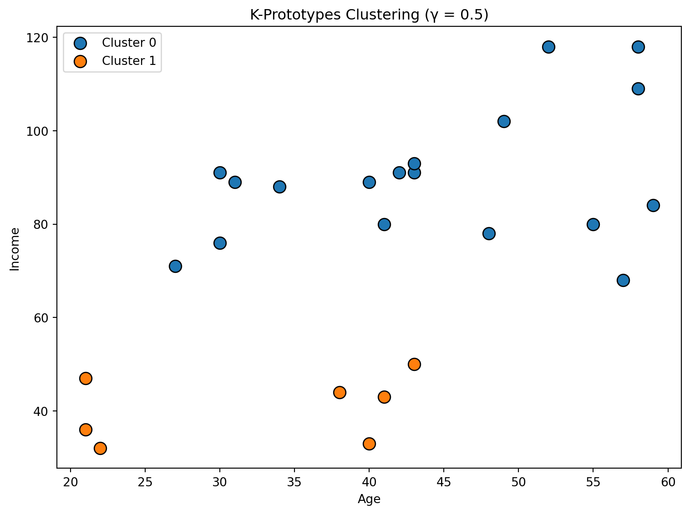
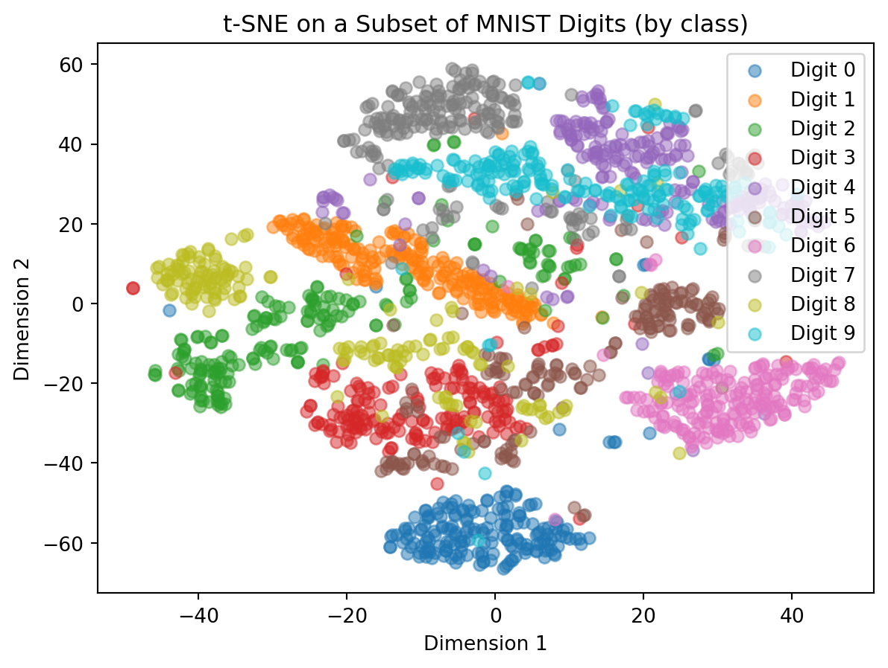
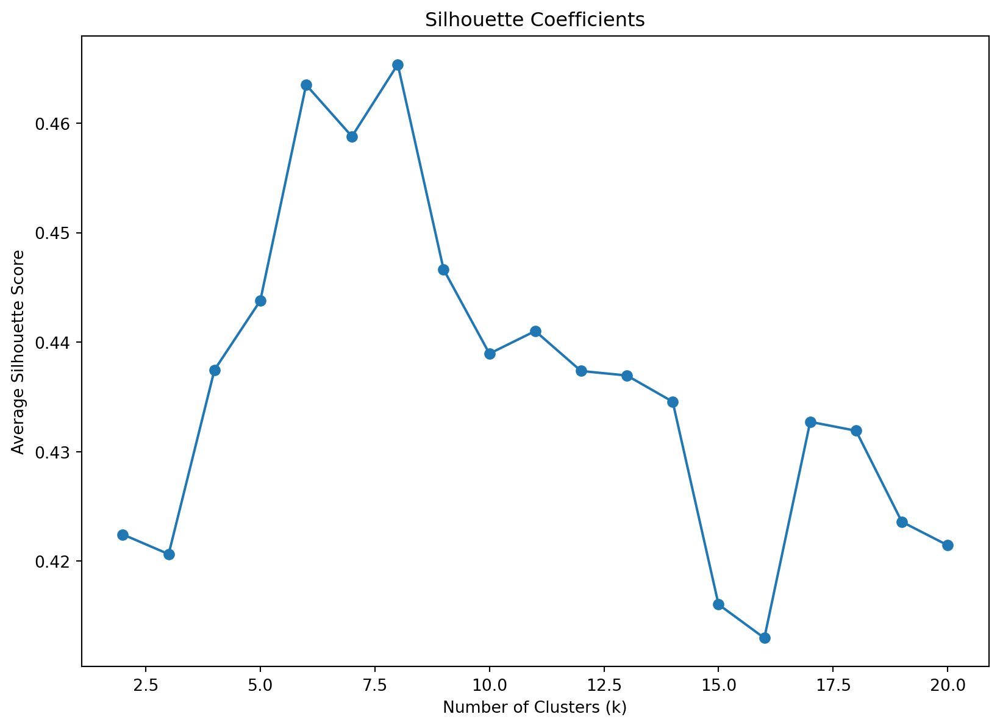
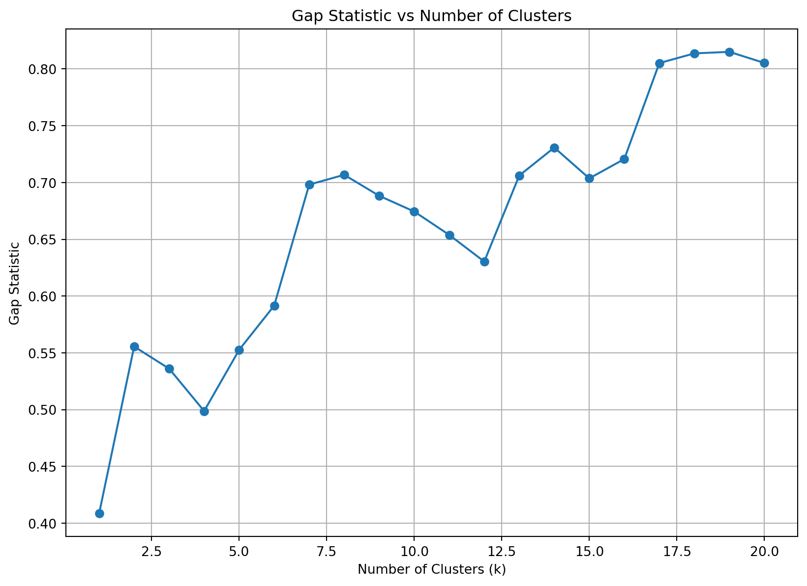

<!DOCTYPE html>
<html xmlns="http://www.w3.org/1999/xhtml" lang="en" xml:lang="en"><head>

<meta charset="utf-8">
<meta name="generator" content="quarto-1.7.30">

<meta name="viewport" content="width=device-width, initial-scale=1.0, user-scalable=yes">


<title>10&nbsp; Unsupervised Learning – Introduction to Data Science</title>
<style>
code{white-space: pre-wrap;}
span.smallcaps{font-variant: small-caps;}
div.columns{display: flex; gap: min(4vw, 1.5em);}
div.column{flex: auto; overflow-x: auto;}
div.hanging-indent{margin-left: 1.5em; text-indent: -1.5em;}
ul.task-list{list-style: none;}
ul.task-list li input[type="checkbox"] {
  width: 0.8em;
  margin: 0 0.8em 0.2em -1em; /* quarto-specific, see https://github.com/quarto-dev/quarto-cli/issues/4556 */ 
  vertical-align: middle;
}
/* CSS for syntax highlighting */
html { -webkit-text-size-adjust: 100%; }
pre > code.sourceCode { white-space: pre; position: relative; }
pre > code.sourceCode > span { display: inline-block; line-height: 1.25; }
pre > code.sourceCode > span:empty { height: 1.2em; }
.sourceCode { overflow: visible; }
code.sourceCode > span { color: inherit; text-decoration: inherit; }
div.sourceCode { margin: 1em 0; }
pre.sourceCode { margin: 0; }
@media screen {
div.sourceCode { overflow: auto; }
}
@media print {
pre > code.sourceCode { white-space: pre-wrap; }
pre > code.sourceCode > span { text-indent: -5em; padding-left: 5em; }
}
pre.numberSource code
  { counter-reset: source-line 0; }
pre.numberSource code > span
  { position: relative; left: -4em; counter-increment: source-line; }
pre.numberSource code > span > a:first-child::before
  { content: counter(source-line);
    position: relative; left: -1em; text-align: right; vertical-align: baseline;
    border: none; display: inline-block;
    -webkit-touch-callout: none; -webkit-user-select: none;
    -khtml-user-select: none; -moz-user-select: none;
    -ms-user-select: none; user-select: none;
    padding: 0 4px; width: 4em;
  }
pre.numberSource { margin-left: 3em;  padding-left: 4px; }
div.sourceCode
  {   }
@media screen {
pre > code.sourceCode > span > a:first-child::before { text-decoration: underline; }
}
/* CSS for citations */
div.csl-bib-body { }
div.csl-entry {
  clear: both;
  margin-bottom: 0em;
}
.hanging-indent div.csl-entry {
  margin-left:2em;
  text-indent:-2em;
}
div.csl-left-margin {
  min-width:2em;
  float:left;
}
div.csl-right-inline {
  margin-left:2em;
  padding-left:1em;
}
div.csl-indent {
  margin-left: 2em;
}</style>


<script src="https://cdnjs.cloudflare.com/ajax/libs/jquery/3.5.1/jquery.min.js" integrity="sha512-bLT0Qm9VnAYZDflyKcBaQ2gg0hSYNQrJ8RilYldYQ1FxQYoCLtUjuuRuZo+fjqhx/qtq/1itJ0C2ejDxltZVFg==" crossorigin="anonymous"></script><script src="site_libs/quarto-nav/quarto-nav.js"></script>
<script src="site_libs/quarto-nav/headroom.min.js"></script>
<script src="site_libs/clipboard/clipboard.min.js"></script>
<script src="site_libs/quarto-search/autocomplete.umd.js"></script>
<script src="site_libs/quarto-search/fuse.min.js"></script>
<script src="site_libs/quarto-search/quarto-search.js"></script>
<meta name="quarto:offset" content="./">
<link href="./advanced.html" rel="next">
<link href="./supervised.html" rel="prev">
<script src="site_libs/quarto-html/quarto.js" type="module"></script>
<script src="site_libs/quarto-html/tabsets/tabsets.js" type="module"></script>
<script src="site_libs/quarto-html/popper.min.js"></script>
<script src="site_libs/quarto-html/tippy.umd.min.js"></script>
<script src="site_libs/quarto-html/anchor.min.js"></script>
<link href="site_libs/quarto-html/tippy.css" rel="stylesheet">
<link href="site_libs/quarto-html/quarto-syntax-highlighting-de070a7b0ab54f8780927367ac907214.css" rel="stylesheet" id="quarto-text-highlighting-styles">
<script src="site_libs/bootstrap/bootstrap.min.js"></script>
<link href="site_libs/bootstrap/bootstrap-icons.css" rel="stylesheet">
<link href="site_libs/bootstrap/bootstrap-485d01fc63b59abcd3ee1bf1e8e2748d.min.css" rel="stylesheet" append-hash="true" id="quarto-bootstrap" data-mode="light">
<script id="quarto-search-options" type="application/json">{
  "location": "sidebar",
  "copy-button": false,
  "collapse-after": 3,
  "panel-placement": "start",
  "type": "textbox",
  "limit": 50,
  "keyboard-shortcut": [
    "f",
    "/",
    "s"
  ],
  "show-item-context": false,
  "language": {
    "search-no-results-text": "No results",
    "search-matching-documents-text": "matching documents",
    "search-copy-link-title": "Copy link to search",
    "search-hide-matches-text": "Hide additional matches",
    "search-more-match-text": "more match in this document",
    "search-more-matches-text": "more matches in this document",
    "search-clear-button-title": "Clear",
    "search-text-placeholder": "",
    "search-detached-cancel-button-title": "Cancel",
    "search-submit-button-title": "Submit",
    "search-label": "Search"
  }
}</script>
<script src="https://cdnjs.cloudflare.com/ajax/libs/require.js/2.3.6/require.min.js" integrity="sha512-c3Nl8+7g4LMSTdrm621y7kf9v3SDPnhxLNhcjFJbKECVnmZHTdo+IRO05sNLTH/D3vA6u1X32ehoLC7WFVdheg==" crossorigin="anonymous"></script>

<script type="application/javascript">define('jquery', [],function() {return window.jQuery;})</script>

  <script src="https://cdnjs.cloudflare.com/polyfill/v3/polyfill.min.js?features=es6"></script>
  <script src="https://cdn.jsdelivr.net/npm/mathjax@3/es5/tex-chtml-full.js" type="text/javascript"></script>

<script type="text/javascript">
const typesetMath = (el) => {
  if (window.MathJax) {
    // MathJax Typeset
    window.MathJax.typeset([el]);
  } else if (window.katex) {
    // KaTeX Render
    var mathElements = el.getElementsByClassName("math");
    var macros = [];
    for (var i = 0; i < mathElements.length; i++) {
      var texText = mathElements[i].firstChild;
      if (mathElements[i].tagName == "SPAN") {
        window.katex.render(texText.data, mathElements[i], {
          displayMode: mathElements[i].classList.contains('display'),
          throwOnError: false,
          macros: macros,
          fleqn: false
        });
      }
    }
  }
}
window.Quarto = {
  typesetMath
};
</script>

</head>

<body class="nav-sidebar floating quarto-light">

<div id="quarto-search-results"></div>
  <header id="quarto-header" class="headroom fixed-top">
  <nav class="quarto-secondary-nav">
    <div class="container-fluid d-flex">
      <button type="button" class="quarto-btn-toggle btn" data-bs-toggle="collapse" role="button" data-bs-target=".quarto-sidebar-collapse-item" aria-controls="quarto-sidebar" aria-expanded="false" aria-label="Toggle sidebar navigation" onclick="if (window.quartoToggleHeadroom) { window.quartoToggleHeadroom(); }">
        <i class="bi bi-layout-text-sidebar-reverse"></i>
      </button>
        <nav class="quarto-page-breadcrumbs" aria-label="breadcrumb"><ol class="breadcrumb"><li class="breadcrumb-item"><a href="./unsupervised.html"><span class="chapter-number">10</span>&nbsp; <span class="chapter-title">Unsupervised Learning</span></a></li></ol></nav>
        <a class="flex-grow-1" role="navigation" data-bs-toggle="collapse" data-bs-target=".quarto-sidebar-collapse-item" aria-controls="quarto-sidebar" aria-expanded="false" aria-label="Toggle sidebar navigation" onclick="if (window.quartoToggleHeadroom) { window.quartoToggleHeadroom(); }">      
        </a>
      <button type="button" class="btn quarto-search-button" aria-label="Search" onclick="window.quartoOpenSearch();">
        <i class="bi bi-search"></i>
      </button>
    </div>
  </nav>
</header>
<!-- content -->
<div id="quarto-content" class="quarto-container page-columns page-rows-contents page-layout-article">
<!-- sidebar -->
  <nav id="quarto-sidebar" class="sidebar collapse collapse-horizontal quarto-sidebar-collapse-item sidebar-navigation floating overflow-auto">
    <div class="pt-lg-2 mt-2 text-left sidebar-header">
    <div class="sidebar-title mb-0 py-0">
      <a href="./">Introduction to Data Science</a> 
    </div>
      </div>
        <div class="mt-2 flex-shrink-0 align-items-center">
        <div class="sidebar-search">
        <div id="quarto-search" class="" title="Search"></div>
        </div>
        </div>
    <div class="sidebar-menu-container"> 
    <ul class="list-unstyled mt-1">
        <li class="sidebar-item">
  <div class="sidebar-item-container"> 
  <a href="./index.html" class="sidebar-item-text sidebar-link">
 <span class="menu-text">Preliminaries</span></a>
  </div>
</li>
        <li class="sidebar-item">
  <div class="sidebar-item-container"> 
  <a href="./intro.html" class="sidebar-item-text sidebar-link">
 <span class="menu-text"><span class="chapter-number">1</span>&nbsp; <span class="chapter-title">Introduction</span></span></a>
  </div>
</li>
        <li class="sidebar-item">
  <div class="sidebar-item-container"> 
  <a href="./git.html" class="sidebar-item-text sidebar-link">
 <span class="menu-text"><span class="chapter-number">2</span>&nbsp; <span class="chapter-title">Project Management</span></span></a>
  </div>
</li>
        <li class="sidebar-item">
  <div class="sidebar-item-container"> 
  <a href="./quarto.html" class="sidebar-item-text sidebar-link">
 <span class="menu-text"><span class="chapter-number">3</span>&nbsp; <span class="chapter-title">Reproducible Data Science</span></span></a>
  </div>
</li>
        <li class="sidebar-item">
  <div class="sidebar-item-container"> 
  <a href="./python.html" class="sidebar-item-text sidebar-link">
 <span class="menu-text"><span class="chapter-number">4</span>&nbsp; <span class="chapter-title">Python Refreshment</span></span></a>
  </div>
</li>
        <li class="sidebar-item">
  <div class="sidebar-item-container"> 
  <a href="./manipulation.html" class="sidebar-item-text sidebar-link">
 <span class="menu-text"><span class="chapter-number">5</span>&nbsp; <span class="chapter-title">Data Manipulation</span></span></a>
  </div>
</li>
        <li class="sidebar-item">
  <div class="sidebar-item-container"> 
  <a href="./visualization.html" class="sidebar-item-text sidebar-link">
 <span class="menu-text"><span class="chapter-number">6</span>&nbsp; <span class="chapter-title">Data Visualization</span></span></a>
  </div>
</li>
        <li class="sidebar-item">
  <div class="sidebar-item-container"> 
  <a href="./stats.html" class="sidebar-item-text sidebar-link">
 <span class="menu-text"><span class="chapter-number">7</span>&nbsp; <span class="chapter-title">Statistical Tests and Models</span></span></a>
  </div>
</li>
        <li class="sidebar-item">
  <div class="sidebar-item-container"> 
  <a href="./machinelearning.html" class="sidebar-item-text sidebar-link">
 <span class="menu-text"><span class="chapter-number">8</span>&nbsp; <span class="chapter-title">Machine Learning: Overview</span></span></a>
  </div>
</li>
        <li class="sidebar-item">
  <div class="sidebar-item-container"> 
  <a href="./supervised.html" class="sidebar-item-text sidebar-link">
 <span class="menu-text"><span class="chapter-number">9</span>&nbsp; <span class="chapter-title">Supervised Learning</span></span></a>
  </div>
</li>
        <li class="sidebar-item">
  <div class="sidebar-item-container"> 
  <a href="./unsupervised.html" class="sidebar-item-text sidebar-link active">
 <span class="menu-text"><span class="chapter-number">10</span>&nbsp; <span class="chapter-title">Unsupervised Learning</span></span></a>
  </div>
</li>
        <li class="sidebar-item">
  <div class="sidebar-item-container"> 
  <a href="./advanced.html" class="sidebar-item-text sidebar-link">
 <span class="menu-text"><span class="chapter-number">11</span>&nbsp; <span class="chapter-title">Advanced Topics</span></span></a>
  </div>
</li>
        <li class="sidebar-item">
  <div class="sidebar-item-container"> 
  <a href="./exercises.html" class="sidebar-item-text sidebar-link">
 <span class="menu-text"><span class="chapter-number">12</span>&nbsp; <span class="chapter-title">Exercises</span></span></a>
  </div>
</li>
        <li class="sidebar-item">
  <div class="sidebar-item-container"> 
  <a href="./references.html" class="sidebar-item-text sidebar-link">
 <span class="menu-text">References</span></a>
  </div>
</li>
    </ul>
    </div>
</nav>
<div id="quarto-sidebar-glass" class="quarto-sidebar-collapse-item" data-bs-toggle="collapse" data-bs-target=".quarto-sidebar-collapse-item"></div>
<!-- margin-sidebar -->
    <div id="quarto-margin-sidebar" class="sidebar margin-sidebar">
        <nav id="TOC" role="doc-toc" class="toc-active">
    <h2 id="toc-title">Table of contents</h2>
   
  <ul>
  <li><a href="#k-means-clustering" id="toc-k-means-clustering" class="nav-link active" data-scroll-target="#k-means-clustering"><span class="header-section-number">10.1</span> K-Means Clustering</a>
  <ul class="collapse">
  <li><a href="#lloyds-algorithm" id="toc-lloyds-algorithm" class="nav-link" data-scroll-target="#lloyds-algorithm"><span class="header-section-number">10.1.1</span> Lloyd’s Algorithm</a></li>
  <li><a href="#example-iris-data" id="toc-example-iris-data" class="nav-link" data-scroll-target="#example-iris-data"><span class="header-section-number">10.1.2</span> Example: Iris Data</a></li>
  <li><a href="#making-predictions-on-new-data" id="toc-making-predictions-on-new-data" class="nav-link" data-scroll-target="#making-predictions-on-new-data"><span class="header-section-number">10.1.3</span> Making Predictions on New Data</a></li>
  <li><a href="#discussion" id="toc-discussion" class="nav-link" data-scroll-target="#discussion"><span class="header-section-number">10.1.4</span> Discussion</a></li>
  </ul></li>
  <li><a href="#k-prototypes-clustering" id="toc-k-prototypes-clustering" class="nav-link" data-scroll-target="#k-prototypes-clustering"><span class="header-section-number">10.2</span> K-Prototypes Clustering</a>
  <ul class="collapse">
  <li><a href="#what-is-k-prototypes-clustering" id="toc-what-is-k-prototypes-clustering" class="nav-link" data-scroll-target="#what-is-k-prototypes-clustering"><span class="header-section-number">10.2.1</span> What is K-Prototypes Clustering?</a></li>
  <li><a href="#k-means-clustering-1" id="toc-k-means-clustering-1" class="nav-link" data-scroll-target="#k-means-clustering-1"><span class="header-section-number">10.2.2</span> K-Means Clustering</a></li>
  <li><a href="#k-modes-clustering" id="toc-k-modes-clustering" class="nav-link" data-scroll-target="#k-modes-clustering"><span class="header-section-number">10.2.3</span> K-Modes Clustering</a></li>
  <li><a href="#why-k-prototypes" id="toc-why-k-prototypes" class="nav-link" data-scroll-target="#why-k-prototypes"><span class="header-section-number">10.2.4</span> Why K-Prototypes?</a></li>
  <li><a href="#why-is-the-centroid-important" id="toc-why-is-the-centroid-important" class="nav-link" data-scroll-target="#why-is-the-centroid-important"><span class="header-section-number">10.2.5</span> Why is the centroid important?</a></li>
  <li><a href="#how-k-prototypes-works" id="toc-how-k-prototypes-works" class="nav-link" data-scroll-target="#how-k-prototypes-works"><span class="header-section-number">10.2.6</span> How K-Prototypes Works</a></li>
  <li><a href="#similarity-measure-distance-function" id="toc-similarity-measure-distance-function" class="nav-link" data-scroll-target="#similarity-measure-distance-function"><span class="header-section-number">10.2.7</span> Similarity Measure (Distance Function)</a></li>
  <li><a href="#python-example" id="toc-python-example" class="nav-link" data-scroll-target="#python-example"><span class="header-section-number">10.2.8</span> Python Example</a></li>
  <li><a href="#scatter-plot" id="toc-scatter-plot" class="nav-link" data-scroll-target="#scatter-plot"><span class="header-section-number">10.2.9</span> Scatter Plot</a></li>
  <li><a href="#bar-chart-for-product-counts" id="toc-bar-chart-for-product-counts" class="nav-link" data-scroll-target="#bar-chart-for-product-counts"><span class="header-section-number">10.2.10</span> Bar Chart For Product Counts</a></li>
  <li><a href="#real-world-use-cases" id="toc-real-world-use-cases" class="nav-link" data-scroll-target="#real-world-use-cases"><span class="header-section-number">10.2.11</span> Real-World Use Cases</a></li>
  <li><a href="#conclusion" id="toc-conclusion" class="nav-link" data-scroll-target="#conclusion"><span class="header-section-number">10.2.12</span> Conclusion</a></li>
  <li><a href="#further-readings" id="toc-further-readings" class="nav-link" data-scroll-target="#further-readings"><span class="header-section-number">10.2.13</span> Further Readings</a></li>
  </ul></li>
  <li><a href="#stochastic-neighbor-embedding" id="toc-stochastic-neighbor-embedding" class="nav-link" data-scroll-target="#stochastic-neighbor-embedding"><span class="header-section-number">10.3</span> Stochastic Neighbor Embedding</a>
  <ul class="collapse">
  <li><a href="#statistical-rationale" id="toc-statistical-rationale" class="nav-link" data-scroll-target="#statistical-rationale"><span class="header-section-number">10.3.1</span> Statistical Rationale</a></li>
  <li><a href="#t-sne-variation" id="toc-t-sne-variation" class="nav-link" data-scroll-target="#t-sne-variation"><span class="header-section-number">10.3.2</span> t-SNE Variation</a></li>
  <li><a href="#supervised-variation" id="toc-supervised-variation" class="nav-link" data-scroll-target="#supervised-variation"><span class="header-section-number">10.3.3</span> Supervised Variation</a></li>
  <li><a href="#demonstration-with-a-subset-of-the-nist-digits-data" id="toc-demonstration-with-a-subset-of-the-nist-digits-data" class="nav-link" data-scroll-target="#demonstration-with-a-subset-of-the-nist-digits-data"><span class="header-section-number">10.3.4</span> Demonstration with a Subset of the NIST Digits Data</a></li>
  </ul></li>
  <li><a href="#principal-component-analysis-pca" id="toc-principal-component-analysis-pca" class="nav-link" data-scroll-target="#principal-component-analysis-pca"><span class="header-section-number">10.4</span> Principal Component Analysis (PCA)</a>
  <ul class="collapse">
  <li><a href="#motivation" id="toc-motivation" class="nav-link" data-scroll-target="#motivation"><span class="header-section-number">10.4.1</span> Motivation</a></li>
  <li><a href="#intuition" id="toc-intuition" class="nav-link" data-scroll-target="#intuition"><span class="header-section-number">10.4.2</span> Intuition</a></li>
  <li><a href="#theory" id="toc-theory" class="nav-link" data-scroll-target="#theory"><span class="header-section-number">10.4.3</span> Theory</a></li>
  <li><a href="#pca-with-and-without-scaling" id="toc-pca-with-and-without-scaling" class="nav-link" data-scroll-target="#pca-with-and-without-scaling"><span class="header-section-number">10.4.4</span> PCA With and Without Scaling</a></li>
  <li><a href="#summary" id="toc-summary" class="nav-link" data-scroll-target="#summary"><span class="header-section-number">10.4.5</span> Summary</a></li>
  <li><a href="#further-readings-1" id="toc-further-readings-1" class="nav-link" data-scroll-target="#further-readings-1"><span class="header-section-number">10.4.6</span> Further Readings</a></li>
  </ul></li>
  <li><a href="#choosing-the-optimal-number-of-clusters" id="toc-choosing-the-optimal-number-of-clusters" class="nav-link" data-scroll-target="#choosing-the-optimal-number-of-clusters"><span class="header-section-number">10.5</span> Choosing the Optimal Number of Clusters</a>
  <ul class="collapse">
  <li><a href="#why-clustering-what-is-it" id="toc-why-clustering-what-is-it" class="nav-link" data-scroll-target="#why-clustering-what-is-it"><span class="header-section-number">10.5.1</span> Why Clustering? What is it?</a></li>
  <li><a href="#how-to-measure-the-quality-of-clustering-outcome" id="toc-how-to-measure-the-quality-of-clustering-outcome" class="nav-link" data-scroll-target="#how-to-measure-the-quality-of-clustering-outcome"><span class="header-section-number">10.5.2</span> How to measure the quality of clustering outcome</a></li>
  <li><a href="#clustering-algorithms" id="toc-clustering-algorithms" class="nav-link" data-scroll-target="#clustering-algorithms"><span class="header-section-number">10.5.3</span> Clustering Algorithms</a></li>
  <li><a href="#methods-for-selecting-the-optimal-number-of-clusters" id="toc-methods-for-selecting-the-optimal-number-of-clusters" class="nav-link" data-scroll-target="#methods-for-selecting-the-optimal-number-of-clusters"><span class="header-section-number">10.5.4</span> Methods for selecting the optimal number of clusters</a></li>
  <li><a href="#conclusions" id="toc-conclusions" class="nav-link" data-scroll-target="#conclusions"><span class="header-section-number">10.5.5</span> Conclusions</a></li>
  <li><a href="#further-readings-2" id="toc-further-readings-2" class="nav-link" data-scroll-target="#further-readings-2"><span class="header-section-number">10.5.6</span> Further Readings</a></li>
  </ul></li>
  <li><a href="#autoencoders" id="toc-autoencoders" class="nav-link" data-scroll-target="#autoencoders"><span class="header-section-number">10.6</span> Autoencoders</a>
  <ul class="collapse">
  <li><a href="#introduction" id="toc-introduction" class="nav-link" data-scroll-target="#introduction"><span class="header-section-number">10.6.1</span> Introduction</a></li>
  <li><a href="#how-it-works" id="toc-how-it-works" class="nav-link" data-scroll-target="#how-it-works"><span class="header-section-number">10.6.2</span> How it works</a></li>
  <li><a href="#application" id="toc-application" class="nav-link" data-scroll-target="#application"><span class="header-section-number">10.6.3</span> Application</a></li>
  <li><a href="#example-usage" id="toc-example-usage" class="nav-link" data-scroll-target="#example-usage"><span class="header-section-number">10.6.4</span> Example usage</a></li>
  <li><a href="#conclusion-1" id="toc-conclusion-1" class="nav-link" data-scroll-target="#conclusion-1"><span class="header-section-number">10.6.5</span> Conclusion</a></li>
  <li><a href="#further-readings-3" id="toc-further-readings-3" class="nav-link" data-scroll-target="#further-readings-3"><span class="header-section-number">10.6.6</span> Further Readings</a></li>
  </ul></li>
  </ul>
</nav>
    </div>
<!-- main -->
<main class="content" id="quarto-document-content">

<header id="title-block-header" class="quarto-title-block default">
<div class="quarto-title">
<h1 class="title"><span class="chapter-number">10</span>&nbsp; <span class="chapter-title">Unsupervised Learning</span></h1>
</div>


<div class="quarto-title-meta">

    
  
    
  </div>
  


</header>


<section id="k-means-clustering" class="level2" data-number="10.1">
<h2 data-number="10.1" class="anchored" data-anchor-id="k-means-clustering"><span class="header-section-number">10.1</span> K-Means Clustering</h2>
<p>So far, we have explored various supervised learning algorithms such as Decision Trees and Random Forests, which rely on labeled data with known outcomes. In contrast, unsupervised learning techniques analyze unlabeled data to identify patterns, making them particularly useful for clustering and association problems. Among these, K-means clustering stands out as one of the simplest and most widely used algorithms.</p>
<p>K-means clustering aims to divide a dataset into non-overlapping groups based on similarity. Given a set of data points, each represented as a vector in a multi-dimensional space, the algorithm assigns each point to one of <span class="math inline">\(k\)</span> clusters in a way that minimizes the variation within each cluster. This is done by reducing the sum of squared distances between each point and its assigned cluster center. Mathematically, we seek to minimize:</p>
<p><span class="math display">\[\begin{equation*}
\sum_{i=1}^{k}\sum_{\boldsymbol{x}\in S_i}
\left\|\boldsymbol{x}-\boldsymbol{\mu}_i\right\|^2
\end{equation*}\]</span></p>
<p>where <span class="math inline">\(S_i\)</span> represents each cluster and <span class="math inline">\(\boldsymbol{\mu}_i\)</span> is the mean of the points within that cluster.</p>
<section id="lloyds-algorithm" class="level3" data-number="10.1.1">
<h3 data-number="10.1.1" class="anchored" data-anchor-id="lloyds-algorithm"><span class="header-section-number">10.1.1</span> Lloyd’s Algorithm</h3>
<p>K-means clustering is typically solved using Lloyd’s algorithm, which operates iteratively as follows:</p>
<ol type="1">
<li>Initialization: Select <span class="math inline">\(k\)</span> initial cluster centroids <span class="math inline">\(\boldsymbol{\mu}_i\)</span> randomly.</li>
<li>Iteration:
<ul>
<li><p>Assignment step: Assign each point <span class="math inline">\(\boldsymbol{x}\)</span> to the cluster whose centroid is closest based on the squared Euclidean distance.</p></li>
<li><p>Update step: Recompute the centroids as the mean of all points assigned to each cluster:</p>
<p><span class="math display">\[\begin{equation*}
\boldsymbol{\mu}_i \leftarrow \frac{1}{|S_i|}
\sum_{\boldsymbol{x}_j \in S_i} \boldsymbol{x}_j
\end{equation*}\]</span></p></li>
</ul></li>
<li>Termination: The process stops when either the assignments no longer change or a predefined number of iterations is reached.</li>
</ol>
</section>
<section id="example-iris-data" class="level3" data-number="10.1.2">
<h3 data-number="10.1.2" class="anchored" data-anchor-id="example-iris-data"><span class="header-section-number">10.1.2</span> Example: Iris Data</h3>
<p>K-means clustering can be implemented using the <code>scikit-learn</code> library. Below, we apply it to the Iris dataset.</p>
<div id="546ac2c9" class="cell" data-execution_count="1">
<div class="sourceCode cell-code" id="cb1"><pre class="sourceCode python code-with-copy"><code class="sourceCode python"><span id="cb1-1"><a href="#cb1-1" aria-hidden="true" tabindex="-1"></a><span class="im">import</span> pandas <span class="im">as</span> pd</span>
<span id="cb1-2"><a href="#cb1-2" aria-hidden="true" tabindex="-1"></a><span class="im">import</span> numpy <span class="im">as</span> np</span>
<span id="cb1-3"><a href="#cb1-3" aria-hidden="true" tabindex="-1"></a><span class="im">import</span> matplotlib.pyplot <span class="im">as</span> plt</span>
<span id="cb1-4"><a href="#cb1-4" aria-hidden="true" tabindex="-1"></a><span class="im">from</span> sklearn <span class="im">import</span> datasets</span>
<span id="cb1-5"><a href="#cb1-5" aria-hidden="true" tabindex="-1"></a><span class="im">from</span> sklearn.cluster <span class="im">import</span> KMeans</span></code><button title="Copy to Clipboard" class="code-copy-button"><i class="bi"></i></button></pre></div>
</div>
<div id="5eb16661" class="cell" data-execution_count="2">
<div class="sourceCode cell-code" id="cb2"><pre class="sourceCode python code-with-copy"><code class="sourceCode python"><span id="cb2-1"><a href="#cb2-1" aria-hidden="true" tabindex="-1"></a><span class="co"># Load the Iris dataset</span></span>
<span id="cb2-2"><a href="#cb2-2" aria-hidden="true" tabindex="-1"></a>iris <span class="op">=</span> datasets.load_iris()</span>
<span id="cb2-3"><a href="#cb2-3" aria-hidden="true" tabindex="-1"></a>X <span class="op">=</span> iris.data[:, :<span class="dv">2</span>]  <span class="co"># Using only two features</span></span>
<span id="cb2-4"><a href="#cb2-4" aria-hidden="true" tabindex="-1"></a>y <span class="op">=</span> iris.target</span></code><button title="Copy to Clipboard" class="code-copy-button"><i class="bi"></i></button></pre></div>
</div>
<p>We visualize the observations based on their true species labels.</p>
<div id="73dacc10" class="cell" data-execution_count="3">
<div class="sourceCode cell-code" id="cb3"><pre class="sourceCode python code-with-copy"><code class="sourceCode python"><span id="cb3-1"><a href="#cb3-1" aria-hidden="true" tabindex="-1"></a><span class="co"># Scatter plot of true species labels</span></span>
<span id="cb3-2"><a href="#cb3-2" aria-hidden="true" tabindex="-1"></a>fig, ax <span class="op">=</span> plt.subplots()</span>
<span id="cb3-3"><a href="#cb3-3" aria-hidden="true" tabindex="-1"></a>scatter <span class="op">=</span> ax.scatter(X[:, <span class="dv">0</span>], X[:, <span class="dv">1</span>], c<span class="op">=</span>y,</span>
<span id="cb3-4"><a href="#cb3-4" aria-hidden="true" tabindex="-1"></a>                      cmap<span class="op">=</span><span class="st">'viridis'</span>, edgecolors<span class="op">=</span><span class="st">'k'</span>)</span>
<span id="cb3-5"><a href="#cb3-5" aria-hidden="true" tabindex="-1"></a>ax.legend(<span class="op">*</span>scatter.legend_elements(), loc<span class="op">=</span><span class="st">"upper left"</span>,</span>
<span id="cb3-6"><a href="#cb3-6" aria-hidden="true" tabindex="-1"></a>          title<span class="op">=</span><span class="st">"Species"</span>)</span>
<span id="cb3-7"><a href="#cb3-7" aria-hidden="true" tabindex="-1"></a>plt.xlabel(<span class="st">"Feature 1"</span>)</span>
<span id="cb3-8"><a href="#cb3-8" aria-hidden="true" tabindex="-1"></a>plt.ylabel(<span class="st">"Feature 2"</span>)</span>
<span id="cb3-9"><a href="#cb3-9" aria-hidden="true" tabindex="-1"></a>plt.title(<span class="st">"True Species Distribution"</span>)</span>
<span id="cb3-10"><a href="#cb3-10" aria-hidden="true" tabindex="-1"></a>plt.show()</span></code><button title="Copy to Clipboard" class="code-copy-button"><i class="bi"></i></button></pre></div>
<div class="cell-output cell-output-display">
<div>
<figure class="figure">
<p></p>
</figure>
</div>
</div>
</div>
<p>Now, we apply K-means clustering to the data.</p>
<div id="2b64bfba" class="cell" data-execution_count="4">
<div class="sourceCode cell-code" id="cb4"><pre class="sourceCode python code-with-copy"><code class="sourceCode python"><span id="cb4-1"><a href="#cb4-1" aria-hidden="true" tabindex="-1"></a><span class="co"># Train K-means model</span></span>
<span id="cb4-2"><a href="#cb4-2" aria-hidden="true" tabindex="-1"></a>Kmean <span class="op">=</span> KMeans(n_clusters<span class="op">=</span><span class="dv">3</span>, init<span class="op">=</span><span class="st">'k-means++'</span>,</span>
<span id="cb4-3"><a href="#cb4-3" aria-hidden="true" tabindex="-1"></a>               n_init<span class="op">=</span><span class="dv">10</span>, random_state<span class="op">=</span><span class="dv">42</span>)</span>
<span id="cb4-4"><a href="#cb4-4" aria-hidden="true" tabindex="-1"></a>Kmean.fit(X)</span></code><button title="Copy to Clipboard" class="code-copy-button"><i class="bi"></i></button></pre></div>
<div class="cell-output cell-output-display" data-execution_count="4">
<style>#sk-container-id-1 {
  /* Definition of color scheme common for light and dark mode */
  --sklearn-color-text: #000;
  --sklearn-color-text-muted: #666;
  --sklearn-color-line: gray;
  /* Definition of color scheme for unfitted estimators */
  --sklearn-color-unfitted-level-0: #fff5e6;
  --sklearn-color-unfitted-level-1: #f6e4d2;
  --sklearn-color-unfitted-level-2: #ffe0b3;
  --sklearn-color-unfitted-level-3: chocolate;
  /* Definition of color scheme for fitted estimators */
  --sklearn-color-fitted-level-0: #f0f8ff;
  --sklearn-color-fitted-level-1: #d4ebff;
  --sklearn-color-fitted-level-2: #b3dbfd;
  --sklearn-color-fitted-level-3: cornflowerblue;

  /* Specific color for light theme */
  --sklearn-color-text-on-default-background: var(--sg-text-color, var(--theme-code-foreground, var(--jp-content-font-color1, black)));
  --sklearn-color-background: var(--sg-background-color, var(--theme-background, var(--jp-layout-color0, white)));
  --sklearn-color-border-box: var(--sg-text-color, var(--theme-code-foreground, var(--jp-content-font-color1, black)));
  --sklearn-color-icon: #696969;

  @media (prefers-color-scheme: dark) {
    /* Redefinition of color scheme for dark theme */
    --sklearn-color-text-on-default-background: var(--sg-text-color, var(--theme-code-foreground, var(--jp-content-font-color1, white)));
    --sklearn-color-background: var(--sg-background-color, var(--theme-background, var(--jp-layout-color0, #111)));
    --sklearn-color-border-box: var(--sg-text-color, var(--theme-code-foreground, var(--jp-content-font-color1, white)));
    --sklearn-color-icon: #878787;
  }
}

#sk-container-id-1 {
  color: var(--sklearn-color-text);
}

#sk-container-id-1 pre {
  padding: 0;
}

#sk-container-id-1 input.sk-hidden--visually {
  border: 0;
  clip: rect(1px 1px 1px 1px);
  clip: rect(1px, 1px, 1px, 1px);
  height: 1px;
  margin: -1px;
  overflow: hidden;
  padding: 0;
  position: absolute;
  width: 1px;
}

#sk-container-id-1 div.sk-dashed-wrapped {
  border: 1px dashed var(--sklearn-color-line);
  margin: 0 0.4em 0.5em 0.4em;
  box-sizing: border-box;
  padding-bottom: 0.4em;
  background-color: var(--sklearn-color-background);
}

#sk-container-id-1 div.sk-container {
  /* jupyter's `normalize.less` sets `[hidden] { display: none; }`
     but bootstrap.min.css set `[hidden] { display: none !important; }`
     so we also need the `!important` here to be able to override the
     default hidden behavior on the sphinx rendered scikit-learn.org.
     See: https://github.com/scikit-learn/scikit-learn/issues/21755 */
  display: inline-block !important;
  position: relative;
}

#sk-container-id-1 div.sk-text-repr-fallback {
  display: none;
}

div.sk-parallel-item,
div.sk-serial,
div.sk-item {
  /* draw centered vertical line to link estimators */
  background-image: linear-gradient(var(--sklearn-color-text-on-default-background), var(--sklearn-color-text-on-default-background));
  background-size: 2px 100%;
  background-repeat: no-repeat;
  background-position: center center;
}

/* Parallel-specific style estimator block */

#sk-container-id-1 div.sk-parallel-item::after {
  content: "";
  width: 100%;
  border-bottom: 2px solid var(--sklearn-color-text-on-default-background);
  flex-grow: 1;
}

#sk-container-id-1 div.sk-parallel {
  display: flex;
  align-items: stretch;
  justify-content: center;
  background-color: var(--sklearn-color-background);
  position: relative;
}

#sk-container-id-1 div.sk-parallel-item {
  display: flex;
  flex-direction: column;
}

#sk-container-id-1 div.sk-parallel-item:first-child::after {
  align-self: flex-end;
  width: 50%;
}

#sk-container-id-1 div.sk-parallel-item:last-child::after {
  align-self: flex-start;
  width: 50%;
}

#sk-container-id-1 div.sk-parallel-item:only-child::after {
  width: 0;
}

/* Serial-specific style estimator block */

#sk-container-id-1 div.sk-serial {
  display: flex;
  flex-direction: column;
  align-items: center;
  background-color: var(--sklearn-color-background);
  padding-right: 1em;
  padding-left: 1em;
}


/* Toggleable style: style used for estimator/Pipeline/ColumnTransformer box that is
clickable and can be expanded/collapsed.
- Pipeline and ColumnTransformer use this feature and define the default style
- Estimators will overwrite some part of the style using the `sk-estimator` class
*/

/* Pipeline and ColumnTransformer style (default) */

#sk-container-id-1 div.sk-toggleable {
  /* Default theme specific background. It is overwritten whether we have a
  specific estimator or a Pipeline/ColumnTransformer */
  background-color: var(--sklearn-color-background);
}

/* Toggleable label */
#sk-container-id-1 label.sk-toggleable__label {
  cursor: pointer;
  display: flex;
  width: 100%;
  margin-bottom: 0;
  padding: 0.5em;
  box-sizing: border-box;
  text-align: center;
  align-items: start;
  justify-content: space-between;
  gap: 0.5em;
}

#sk-container-id-1 label.sk-toggleable__label .caption {
  font-size: 0.6rem;
  font-weight: lighter;
  color: var(--sklearn-color-text-muted);
}

#sk-container-id-1 label.sk-toggleable__label-arrow:before {
  /* Arrow on the left of the label */
  content: "▸";
  float: left;
  margin-right: 0.25em;
  color: var(--sklearn-color-icon);
}

#sk-container-id-1 label.sk-toggleable__label-arrow:hover:before {
  color: var(--sklearn-color-text);
}

/* Toggleable content - dropdown */

#sk-container-id-1 div.sk-toggleable__content {
  max-height: 0;
  max-width: 0;
  overflow: hidden;
  text-align: left;
  /* unfitted */
  background-color: var(--sklearn-color-unfitted-level-0);
}

#sk-container-id-1 div.sk-toggleable__content.fitted {
  /* fitted */
  background-color: var(--sklearn-color-fitted-level-0);
}

#sk-container-id-1 div.sk-toggleable__content pre {
  margin: 0.2em;
  border-radius: 0.25em;
  color: var(--sklearn-color-text);
  /* unfitted */
  background-color: var(--sklearn-color-unfitted-level-0);
}

#sk-container-id-1 div.sk-toggleable__content.fitted pre {
  /* unfitted */
  background-color: var(--sklearn-color-fitted-level-0);
}

#sk-container-id-1 input.sk-toggleable__control:checked~div.sk-toggleable__content {
  /* Expand drop-down */
  max-height: 200px;
  max-width: 100%;
  overflow: auto;
}

#sk-container-id-1 input.sk-toggleable__control:checked~label.sk-toggleable__label-arrow:before {
  content: "▾";
}

/* Pipeline/ColumnTransformer-specific style */

#sk-container-id-1 div.sk-label input.sk-toggleable__control:checked~label.sk-toggleable__label {
  color: var(--sklearn-color-text);
  background-color: var(--sklearn-color-unfitted-level-2);
}

#sk-container-id-1 div.sk-label.fitted input.sk-toggleable__control:checked~label.sk-toggleable__label {
  background-color: var(--sklearn-color-fitted-level-2);
}

/* Estimator-specific style */

/* Colorize estimator box */
#sk-container-id-1 div.sk-estimator input.sk-toggleable__control:checked~label.sk-toggleable__label {
  /* unfitted */
  background-color: var(--sklearn-color-unfitted-level-2);
}

#sk-container-id-1 div.sk-estimator.fitted input.sk-toggleable__control:checked~label.sk-toggleable__label {
  /* fitted */
  background-color: var(--sklearn-color-fitted-level-2);
}

#sk-container-id-1 div.sk-label label.sk-toggleable__label,
#sk-container-id-1 div.sk-label label {
  /* The background is the default theme color */
  color: var(--sklearn-color-text-on-default-background);
}

/* On hover, darken the color of the background */
#sk-container-id-1 div.sk-label:hover label.sk-toggleable__label {
  color: var(--sklearn-color-text);
  background-color: var(--sklearn-color-unfitted-level-2);
}

/* Label box, darken color on hover, fitted */
#sk-container-id-1 div.sk-label.fitted:hover label.sk-toggleable__label.fitted {
  color: var(--sklearn-color-text);
  background-color: var(--sklearn-color-fitted-level-2);
}

/* Estimator label */

#sk-container-id-1 div.sk-label label {
  font-family: monospace;
  font-weight: bold;
  display: inline-block;
  line-height: 1.2em;
}

#sk-container-id-1 div.sk-label-container {
  text-align: center;
}

/* Estimator-specific */
#sk-container-id-1 div.sk-estimator {
  font-family: monospace;
  border: 1px dotted var(--sklearn-color-border-box);
  border-radius: 0.25em;
  box-sizing: border-box;
  margin-bottom: 0.5em;
  /* unfitted */
  background-color: var(--sklearn-color-unfitted-level-0);
}

#sk-container-id-1 div.sk-estimator.fitted {
  /* fitted */
  background-color: var(--sklearn-color-fitted-level-0);
}

/* on hover */
#sk-container-id-1 div.sk-estimator:hover {
  /* unfitted */
  background-color: var(--sklearn-color-unfitted-level-2);
}

#sk-container-id-1 div.sk-estimator.fitted:hover {
  /* fitted */
  background-color: var(--sklearn-color-fitted-level-2);
}

/* Specification for estimator info (e.g. "i" and "?") */

/* Common style for "i" and "?" */

.sk-estimator-doc-link,
a:link.sk-estimator-doc-link,
a:visited.sk-estimator-doc-link {
  float: right;
  font-size: smaller;
  line-height: 1em;
  font-family: monospace;
  background-color: var(--sklearn-color-background);
  border-radius: 1em;
  height: 1em;
  width: 1em;
  text-decoration: none !important;
  margin-left: 0.5em;
  text-align: center;
  /* unfitted */
  border: var(--sklearn-color-unfitted-level-1) 1pt solid;
  color: var(--sklearn-color-unfitted-level-1);
}

.sk-estimator-doc-link.fitted,
a:link.sk-estimator-doc-link.fitted,
a:visited.sk-estimator-doc-link.fitted {
  /* fitted */
  border: var(--sklearn-color-fitted-level-1) 1pt solid;
  color: var(--sklearn-color-fitted-level-1);
}

/* On hover */
div.sk-estimator:hover .sk-estimator-doc-link:hover,
.sk-estimator-doc-link:hover,
div.sk-label-container:hover .sk-estimator-doc-link:hover,
.sk-estimator-doc-link:hover {
  /* unfitted */
  background-color: var(--sklearn-color-unfitted-level-3);
  color: var(--sklearn-color-background);
  text-decoration: none;
}

div.sk-estimator.fitted:hover .sk-estimator-doc-link.fitted:hover,
.sk-estimator-doc-link.fitted:hover,
div.sk-label-container:hover .sk-estimator-doc-link.fitted:hover,
.sk-estimator-doc-link.fitted:hover {
  /* fitted */
  background-color: var(--sklearn-color-fitted-level-3);
  color: var(--sklearn-color-background);
  text-decoration: none;
}

/* Span, style for the box shown on hovering the info icon */
.sk-estimator-doc-link span {
  display: none;
  z-index: 9999;
  position: relative;
  font-weight: normal;
  right: .2ex;
  padding: .5ex;
  margin: .5ex;
  width: min-content;
  min-width: 20ex;
  max-width: 50ex;
  color: var(--sklearn-color-text);
  box-shadow: 2pt 2pt 4pt #999;
  /* unfitted */
  background: var(--sklearn-color-unfitted-level-0);
  border: .5pt solid var(--sklearn-color-unfitted-level-3);
}

.sk-estimator-doc-link.fitted span {
  /* fitted */
  background: var(--sklearn-color-fitted-level-0);
  border: var(--sklearn-color-fitted-level-3);
}

.sk-estimator-doc-link:hover span {
  display: block;
}

/* "?"-specific style due to the `<a>` HTML tag */

#sk-container-id-1 a.estimator_doc_link {
  float: right;
  font-size: 1rem;
  line-height: 1em;
  font-family: monospace;
  background-color: var(--sklearn-color-background);
  border-radius: 1rem;
  height: 1rem;
  width: 1rem;
  text-decoration: none;
  /* unfitted */
  color: var(--sklearn-color-unfitted-level-1);
  border: var(--sklearn-color-unfitted-level-1) 1pt solid;
}

#sk-container-id-1 a.estimator_doc_link.fitted {
  /* fitted */
  border: var(--sklearn-color-fitted-level-1) 1pt solid;
  color: var(--sklearn-color-fitted-level-1);
}

/* On hover */
#sk-container-id-1 a.estimator_doc_link:hover {
  /* unfitted */
  background-color: var(--sklearn-color-unfitted-level-3);
  color: var(--sklearn-color-background);
  text-decoration: none;
}

#sk-container-id-1 a.estimator_doc_link.fitted:hover {
  /* fitted */
  background-color: var(--sklearn-color-fitted-level-3);
}
</style><div id="sk-container-id-1" class="sk-top-container"><div class="sk-text-repr-fallback"><pre>KMeans(n_clusters=3, n_init=10, random_state=42)</pre><b>In a Jupyter environment, please rerun this cell to show the HTML representation or trust the notebook. <br>On GitHub, the HTML representation is unable to render, please try loading this page with nbviewer.org.</b></div><div class="sk-container" hidden=""><div class="sk-item"><div class="sk-estimator fitted sk-toggleable"><input class="sk-toggleable__control sk-hidden--visually" id="sk-estimator-id-1" type="checkbox" checked=""><label for="sk-estimator-id-1" class="sk-toggleable__label fitted sk-toggleable__label-arrow"><div><div>KMeans</div></div><div><a class="sk-estimator-doc-link fitted" rel="noreferrer" target="_blank" href="https://scikit-learn.org/1.6/modules/generated/sklearn.cluster.KMeans.html">?<span>Documentation for KMeans</span></a><span class="sk-estimator-doc-link fitted">i<span>Fitted</span></span></div></label><div class="sk-toggleable__content fitted"><pre>KMeans(n_clusters=3, n_init=10, random_state=42)</pre></div> </div></div></div></div>
</div>
</div>
<p>Several parameters can be adjusted for better performance. See: &lt;https://scikit-learn.org/stable/modules/generated/ sklearn.cluster.KMeans.html&gt;</p>
<p>K-means provides cluster centroids, representing the center of each cluster.</p>
<div id="ba573a68" class="cell" data-execution_count="5">
<div class="sourceCode cell-code" id="cb5"><pre class="sourceCode python code-with-copy"><code class="sourceCode python"><span id="cb5-1"><a href="#cb5-1" aria-hidden="true" tabindex="-1"></a><span class="co"># Print predicted cluster centers</span></span>
<span id="cb5-2"><a href="#cb5-2" aria-hidden="true" tabindex="-1"></a><span class="bu">print</span>(<span class="st">"Cluster Centers:"</span>)</span>
<span id="cb5-3"><a href="#cb5-3" aria-hidden="true" tabindex="-1"></a><span class="bu">print</span>(Kmean.cluster_centers_)</span></code><button title="Copy to Clipboard" class="code-copy-button"><i class="bi"></i></button></pre></div>
<div class="cell-output cell-output-stdout">
<pre><code>Cluster Centers:
[[6.81276596 3.07446809]
 [5.77358491 2.69245283]
 [5.006      3.428     ]]</code></pre>
</div>
</div>
<p>We plot the centroids along with clustered points.</p>
<div id="7e379f10" class="cell" data-execution_count="6">
<div class="sourceCode cell-code" id="cb7"><pre class="sourceCode python code-with-copy"><code class="sourceCode python"><span id="cb7-1"><a href="#cb7-1" aria-hidden="true" tabindex="-1"></a><span class="co"># Plot centroids on the scatter plot</span></span>
<span id="cb7-2"><a href="#cb7-2" aria-hidden="true" tabindex="-1"></a>fig, ax <span class="op">=</span> plt.subplots()</span>
<span id="cb7-3"><a href="#cb7-3" aria-hidden="true" tabindex="-1"></a>ax.scatter(X[:, <span class="dv">0</span>], X[:, <span class="dv">1</span>], c<span class="op">=</span>Kmean.labels_,</span>
<span id="cb7-4"><a href="#cb7-4" aria-hidden="true" tabindex="-1"></a>           cmap<span class="op">=</span><span class="st">'viridis'</span>, edgecolors<span class="op">=</span><span class="st">'k'</span>, alpha<span class="op">=</span><span class="fl">0.5</span>)</span>
<span id="cb7-5"><a href="#cb7-5" aria-hidden="true" tabindex="-1"></a>ax.scatter(Kmean.cluster_centers_[:, <span class="dv">0</span>],</span>
<span id="cb7-6"><a href="#cb7-6" aria-hidden="true" tabindex="-1"></a>           Kmean.cluster_centers_[:, <span class="dv">1</span>],</span>
<span id="cb7-7"><a href="#cb7-7" aria-hidden="true" tabindex="-1"></a>           c<span class="op">=</span><span class="st">"black"</span>, s<span class="op">=</span><span class="dv">200</span>, marker<span class="op">=</span><span class="st">'s'</span>,</span>
<span id="cb7-8"><a href="#cb7-8" aria-hidden="true" tabindex="-1"></a>           label<span class="op">=</span><span class="st">"Centroids"</span>)</span>
<span id="cb7-9"><a href="#cb7-9" aria-hidden="true" tabindex="-1"></a>ax.legend()</span>
<span id="cb7-10"><a href="#cb7-10" aria-hidden="true" tabindex="-1"></a>plt.xlabel(<span class="st">"Feature 1"</span>)</span>
<span id="cb7-11"><a href="#cb7-11" aria-hidden="true" tabindex="-1"></a>plt.ylabel(<span class="st">"Feature 2"</span>)</span>
<span id="cb7-12"><a href="#cb7-12" aria-hidden="true" tabindex="-1"></a>plt.title(<span class="st">"K-means Clustering Results"</span>)</span>
<span id="cb7-13"><a href="#cb7-13" aria-hidden="true" tabindex="-1"></a>plt.show()</span></code><button title="Copy to Clipboard" class="code-copy-button"><i class="bi"></i></button></pre></div>
<div class="cell-output cell-output-display">
<div>
<figure class="figure">
<p></p>
</figure>
</div>
</div>
</div>
<section id="comparing-true-and-predicted-labels" class="level4" data-number="10.1.2.1">
<h4 data-number="10.1.2.1" class="anchored" data-anchor-id="comparing-true-and-predicted-labels"><span class="header-section-number">10.1.2.1</span> Comparing True and Predicted Labels</h4>
<p>By plotting the results side by side, we can see how well K-means clustering approximates the true labels.</p>
<div id="de4459dd" class="cell" data-execution_count="7">
<div class="sourceCode cell-code" id="cb8"><pre class="sourceCode python code-with-copy"><code class="sourceCode python"><span id="cb8-1"><a href="#cb8-1" aria-hidden="true" tabindex="-1"></a><span class="co"># Compare true vs. predicted labels</span></span>
<span id="cb8-2"><a href="#cb8-2" aria-hidden="true" tabindex="-1"></a>fig, axs <span class="op">=</span> plt.subplots(ncols<span class="op">=</span><span class="dv">2</span>, figsize<span class="op">=</span>(<span class="dv">12</span>, <span class="dv">5</span>),</span>
<span id="cb8-3"><a href="#cb8-3" aria-hidden="true" tabindex="-1"></a>                        constrained_layout<span class="op">=</span><span class="va">True</span>)</span>
<span id="cb8-4"><a href="#cb8-4" aria-hidden="true" tabindex="-1"></a></span>
<span id="cb8-5"><a href="#cb8-5" aria-hidden="true" tabindex="-1"></a><span class="co"># True labels plot</span></span>
<span id="cb8-6"><a href="#cb8-6" aria-hidden="true" tabindex="-1"></a>axs[<span class="dv">0</span>].scatter(X[:, <span class="dv">0</span>], X[:, <span class="dv">1</span>], c<span class="op">=</span>y,</span>
<span id="cb8-7"><a href="#cb8-7" aria-hidden="true" tabindex="-1"></a>               cmap<span class="op">=</span><span class="st">'viridis'</span>, alpha<span class="op">=</span><span class="fl">0.5</span>,</span>
<span id="cb8-8"><a href="#cb8-8" aria-hidden="true" tabindex="-1"></a>               edgecolors<span class="op">=</span><span class="st">'k'</span>)</span>
<span id="cb8-9"><a href="#cb8-9" aria-hidden="true" tabindex="-1"></a>axs[<span class="dv">0</span>].set_title(<span class="st">"True Labels"</span>)</span>
<span id="cb8-10"><a href="#cb8-10" aria-hidden="true" tabindex="-1"></a>axs[<span class="dv">0</span>].set_xlabel(<span class="st">"Feature 1"</span>)</span>
<span id="cb8-11"><a href="#cb8-11" aria-hidden="true" tabindex="-1"></a>axs[<span class="dv">0</span>].set_ylabel(<span class="st">"Feature 2"</span>)</span>
<span id="cb8-12"><a href="#cb8-12" aria-hidden="true" tabindex="-1"></a></span>
<span id="cb8-13"><a href="#cb8-13" aria-hidden="true" tabindex="-1"></a><span class="co"># Predicted clusters plot</span></span>
<span id="cb8-14"><a href="#cb8-14" aria-hidden="true" tabindex="-1"></a>axs[<span class="dv">1</span>].scatter(X[:, <span class="dv">0</span>], X[:, <span class="dv">1</span>], c<span class="op">=</span>Kmean.labels_,</span>
<span id="cb8-15"><a href="#cb8-15" aria-hidden="true" tabindex="-1"></a>               cmap<span class="op">=</span><span class="st">'viridis'</span>, alpha<span class="op">=</span><span class="fl">0.5</span>,</span>
<span id="cb8-16"><a href="#cb8-16" aria-hidden="true" tabindex="-1"></a>               edgecolors<span class="op">=</span><span class="st">'k'</span>)</span>
<span id="cb8-17"><a href="#cb8-17" aria-hidden="true" tabindex="-1"></a>axs[<span class="dv">1</span>].scatter(Kmean.cluster_centers_[:, <span class="dv">0</span>],</span>
<span id="cb8-18"><a href="#cb8-18" aria-hidden="true" tabindex="-1"></a>               Kmean.cluster_centers_[:, <span class="dv">1</span>],</span>
<span id="cb8-19"><a href="#cb8-19" aria-hidden="true" tabindex="-1"></a>               marker<span class="op">=</span><span class="st">"s"</span>, c<span class="op">=</span><span class="st">"black"</span>, s<span class="op">=</span><span class="dv">200</span>,</span>
<span id="cb8-20"><a href="#cb8-20" aria-hidden="true" tabindex="-1"></a>               alpha<span class="op">=</span><span class="dv">1</span>, label<span class="op">=</span><span class="st">"Centroids"</span>)</span>
<span id="cb8-21"><a href="#cb8-21" aria-hidden="true" tabindex="-1"></a>axs[<span class="dv">1</span>].set_title(<span class="st">"Predicted Clusters"</span>)</span>
<span id="cb8-22"><a href="#cb8-22" aria-hidden="true" tabindex="-1"></a>axs[<span class="dv">1</span>].set_xlabel(<span class="st">"Feature 1"</span>)</span>
<span id="cb8-23"><a href="#cb8-23" aria-hidden="true" tabindex="-1"></a>axs[<span class="dv">1</span>].set_ylabel(<span class="st">"Feature 2"</span>)</span>
<span id="cb8-24"><a href="#cb8-24" aria-hidden="true" tabindex="-1"></a>axs[<span class="dv">1</span>].legend()</span>
<span id="cb8-25"><a href="#cb8-25" aria-hidden="true" tabindex="-1"></a>plt.show()</span></code><button title="Copy to Clipboard" class="code-copy-button"><i class="bi"></i></button></pre></div>
<div class="cell-output cell-output-display">
<div>
<figure class="figure">
<p></p>
</figure>
</div>
</div>
</div>
</section>
</section>
<section id="making-predictions-on-new-data" class="level3" data-number="10.1.3">
<h3 data-number="10.1.3" class="anchored" data-anchor-id="making-predictions-on-new-data"><span class="header-section-number">10.1.3</span> Making Predictions on New Data</h3>
<p>Once trained, the model can classify new data points.</p>
<div id="ef143809" class="cell" data-execution_count="8">
<div class="sourceCode cell-code" id="cb9"><pre class="sourceCode python code-with-copy"><code class="sourceCode python"><span id="cb9-1"><a href="#cb9-1" aria-hidden="true" tabindex="-1"></a><span class="co"># Sample test data points</span></span>
<span id="cb9-2"><a href="#cb9-2" aria-hidden="true" tabindex="-1"></a>sample_test <span class="op">=</span> np.array([[<span class="dv">3</span>, <span class="dv">4</span>], [<span class="dv">7</span>, <span class="dv">4</span>]])</span>
<span id="cb9-3"><a href="#cb9-3" aria-hidden="true" tabindex="-1"></a></span>
<span id="cb9-4"><a href="#cb9-4" aria-hidden="true" tabindex="-1"></a><span class="co"># Predict cluster assignment</span></span>
<span id="cb9-5"><a href="#cb9-5" aria-hidden="true" tabindex="-1"></a><span class="bu">print</span>(<span class="st">"Predicted Clusters:"</span>, Kmean.predict(sample_test))</span></code><button title="Copy to Clipboard" class="code-copy-button"><i class="bi"></i></button></pre></div>
<div class="cell-output cell-output-stdout">
<pre><code>Predicted Clusters: [2 0]</code></pre>
</div>
</div>
</section>
<section id="discussion" class="level3" data-number="10.1.4">
<h3 data-number="10.1.4" class="anchored" data-anchor-id="discussion"><span class="header-section-number">10.1.4</span> Discussion</h3>
<p>K-means is intuitive but has limitations:</p>
<ul>
<li>Sensitivity to initialization: Poor initialization can yield suboptimal results. <code>k-means++</code> mitigates this issue.</li>
<li>Choosing the number of clusters: The choice of <span class="math inline">\(k\)</span> is critical. The elbow method helps determine an optimal value.</li>
<li>Assumption of spherical clusters: K-means struggles when clusters have irregular shapes. Alternative methods such as kernel-based clustering may be more effective.</li>
</ul>
<p>Despite its limitations, K-means is a fundamental tool in exploratory data analysis and practical applications.</p>
</section>
</section>
<section id="k-prototypes-clustering" class="level2" data-number="10.2">
<h2 data-number="10.2" class="anchored" data-anchor-id="k-prototypes-clustering"><span class="header-section-number">10.2</span> K-Prototypes Clustering</h2>
<p>This section was prepared by Mario Tomaino, a Senior majoring in Mathematics/Statistics. This section explores K-Prototypes clustering, an unsupervised machine learning algorithm used to cluster data that contains both numerical and categorical variables.</p>
<p>We will be generating a dataset containing individuals of certain ages and incomes, and clustering them based on their technology product preferences. We will then create some visualizations to further understand the clusters and characteristics of the individuals.</p>
<section id="what-is-k-prototypes-clustering" class="level3" data-number="10.2.1">
<h3 data-number="10.2.1" class="anchored" data-anchor-id="what-is-k-prototypes-clustering"><span class="header-section-number">10.2.1</span> What is K-Prototypes Clustering?</h3>
<ul>
<li>Clustering is the unsupervised classification of patterns into groups</li>
<li>It helps group similar observations into distinct, interpretable clusters</li>
<li>Traditional algorithms like k-means only work with numerical data</li>
<li>Real world data often includes both numerical and categorical features, which makes K-Prototypes necessary</li>
</ul>
</section>
<section id="k-means-clustering-1" class="level3" data-number="10.2.2">
<h3 data-number="10.2.2" class="anchored" data-anchor-id="k-means-clustering-1"><span class="header-section-number">10.2.2</span> K-Means Clustering</h3>
<ul>
<li>Works with numerical data only</li>
<li>Implemented using the <code>scikit-learn</code> library</li>
<li>Uses Euclidean distance to measure similarity (distance between two points)</li>
<li>Here, cluster centroids are the mean of all points in the cluster</li>
<li>Common in applications with quantitative features (incident zip, latitude, longitude)</li>
</ul>
</section>
<section id="k-modes-clustering" class="level3" data-number="10.2.3">
<h3 data-number="10.2.3" class="anchored" data-anchor-id="k-modes-clustering"><span class="header-section-number">10.2.3</span> K-Modes Clustering</h3>
<ul>
<li>Designed for categorical data only</li>
<li>Uses dissimilarity (counts how many attributes differ)</li>
<li>Here, centroids are the mode (most common category)</li>
<li>Useful when data contains strings or categories (borough, complaint type)</li>
</ul>
</section>
<section id="why-k-prototypes" class="level3" data-number="10.2.4">
<h3 data-number="10.2.4" class="anchored" data-anchor-id="why-k-prototypes"><span class="header-section-number">10.2.4</span> Why K-Prototypes?</h3>
<ul>
<li>Many datasets include both numbers (latitude, longitude) and categories (borough, complaint type)</li>
<li>K-Means: numerical only</li>
<li>K-Modes: categorical only</li>
<li>K-Prototypes: combines both types into a single clustering algorithm</li>
<li>Here, the centroid is a mix:
<ul>
<li><strong>Mean</strong> for numeric features</li>
<li><strong>Mode</strong> for categorical features</li>
</ul></li>
</ul>
</section>
<section id="why-is-the-centroid-important" class="level3" data-number="10.2.5">
<h3 data-number="10.2.5" class="anchored" data-anchor-id="why-is-the-centroid-important"><span class="header-section-number">10.2.5</span> Why is the centroid important?</h3>
<p>The algorithm uses centroids to:</p>
<ol type="1">
<li>Measure how close a data point is to a cluster</li>
<li>Reassign points to the closest cluster</li>
<li>Update the cluster’s center as new points are assigned</li>
</ol>
<p>This process repeats until centroids stop changing much (convergence).</p>
</section>
<section id="how-k-prototypes-works" class="level3" data-number="10.2.6">
<h3 data-number="10.2.6" class="anchored" data-anchor-id="how-k-prototypes-works"><span class="header-section-number">10.2.6</span> How K-Prototypes Works</h3>
<ul>
<li>K-Prototypes combines K-Means and K-Modes
<ul>
<li>Minimizes cost function by combining:
<ul>
<li>Euclidean distance for numeric features (numerical distance from cluster average)</li>
<li>Dissimilarity for categorical features</li>
</ul></li>
</ul></li>
<li>A hyperparameter <code>γ</code> (gamma) balances weight of numerical and categorical variables</li>
</ul>
</section>
<section id="similarity-measure-distance-function" class="level3" data-number="10.2.7">
<h3 data-number="10.2.7" class="anchored" data-anchor-id="similarity-measure-distance-function"><span class="header-section-number">10.2.7</span> Similarity Measure (Distance Function)</h3>
<div class="sourceCode" id="cb11"><pre class="sourceCode python code-with-copy"><code class="sourceCode python"><span id="cb11-1"><a href="#cb11-1" aria-hidden="true" tabindex="-1"></a>distance <span class="op">=</span> (euclidian distance) <span class="op">+</span> γ <span class="op">*</span> (categorical dissimilarity).</span></code><button title="Copy to Clipboard" class="code-copy-button"><i class="bi"></i></button></pre></div>
<p>Precise numerical formula can be found at <span class="citation" data-cites="huang1997clustering">(<a href="references.html#ref-huang1997clustering" role="doc-biblioref">Huang, 1997</a>)</span> page two.</p>
<ul>
<li>Measures how different each data point is from the cluster centroids</li>
<li>Helps assign each point to the most appropriate cluster</li>
<li><code>γ</code> (gamma) balances numeric and categorical importance</li>
</ul>
</section>
<section id="python-example" class="level3" data-number="10.2.8">
<h3 data-number="10.2.8" class="anchored" data-anchor-id="python-example"><span class="header-section-number">10.2.8</span> Python Example</h3>
<p>Basic example of a dataset containing customers that we will cluster based on Age, Income, and Preferred Product.</p>
<p>Here, we choose <code>γ</code> = 0.5 because it gives us an equal trade-off between the numeric and categorical parts of the distance function.</p>
<p>This is the code we will use to generate our dataset.</p>
<div class="sourceCode" id="cb12"><pre class="sourceCode python code-with-copy"><code class="sourceCode python"><span id="cb12-1"><a href="#cb12-1" aria-hidden="true" tabindex="-1"></a><span class="im">import</span> pandas <span class="im">as</span> pd</span>
<span id="cb12-2"><a href="#cb12-2" aria-hidden="true" tabindex="-1"></a><span class="im">import</span> numpy <span class="im">as</span> np</span>
<span id="cb12-3"><a href="#cb12-3" aria-hidden="true" tabindex="-1"></a><span class="im">from</span> kmodes.kprototypes <span class="im">import</span> KPrototypes</span>
<span id="cb12-4"><a href="#cb12-4" aria-hidden="true" tabindex="-1"></a></span>
<span id="cb12-5"><a href="#cb12-5" aria-hidden="true" tabindex="-1"></a>np.random.seed(<span class="dv">42</span>)</span>
<span id="cb12-6"><a href="#cb12-6" aria-hidden="true" tabindex="-1"></a><span class="co"># generated 25 random ages between 20 and 59</span></span>
<span id="cb12-7"><a href="#cb12-7" aria-hidden="true" tabindex="-1"></a>ages <span class="op">=</span> np.random.randint(<span class="dv">20</span>, <span class="dv">60</span>, size<span class="op">=</span><span class="dv">25</span>)</span>
<span id="cb12-8"><a href="#cb12-8" aria-hidden="true" tabindex="-1"></a><span class="co"># generated 25 random incomes between 30 and 119 </span></span>
<span id="cb12-9"><a href="#cb12-9" aria-hidden="true" tabindex="-1"></a><span class="co"># (thousands of dollars annually)</span></span>
<span id="cb12-10"><a href="#cb12-10" aria-hidden="true" tabindex="-1"></a>incomes <span class="op">=</span> np.random.randint(<span class="dv">30</span>, <span class="dv">120</span>, size<span class="op">=</span><span class="dv">25</span>)</span>
<span id="cb12-11"><a href="#cb12-11" aria-hidden="true" tabindex="-1"></a><span class="co"># generate 25 random product categories, each with their own probability</span></span>
<span id="cb12-12"><a href="#cb12-12" aria-hidden="true" tabindex="-1"></a>products <span class="op">=</span> np.random.choice([<span class="st">'Phone'</span>, <span class="st">'Laptop'</span>, <span class="st">'Tablet'</span>, <span class="st">'Accessory'</span>], size<span class="op">=</span><span class="dv">25</span>,</span>
<span id="cb12-13"><a href="#cb12-13" aria-hidden="true" tabindex="-1"></a>                            p<span class="op">=</span>[<span class="fl">0.4</span>, <span class="fl">0.3</span>, <span class="fl">0.2</span>, <span class="fl">0.1</span>])</span>
<span id="cb12-14"><a href="#cb12-14" aria-hidden="true" tabindex="-1"></a></span>
<span id="cb12-15"><a href="#cb12-15" aria-hidden="true" tabindex="-1"></a>df <span class="op">=</span> pd.DataFrame({</span>
<span id="cb12-16"><a href="#cb12-16" aria-hidden="true" tabindex="-1"></a>    <span class="st">'Age'</span>: ages,</span>
<span id="cb12-17"><a href="#cb12-17" aria-hidden="true" tabindex="-1"></a>    <span class="st">'Income'</span>: incomes,</span>
<span id="cb12-18"><a href="#cb12-18" aria-hidden="true" tabindex="-1"></a>    <span class="st">'Product'</span>: products</span>
<span id="cb12-19"><a href="#cb12-19" aria-hidden="true" tabindex="-1"></a>})</span>
<span id="cb12-20"><a href="#cb12-20" aria-hidden="true" tabindex="-1"></a></span>
<span id="cb12-21"><a href="#cb12-21" aria-hidden="true" tabindex="-1"></a><span class="co"># fitting k-prototypes model with several different gamma values</span></span>
<span id="cb12-22"><a href="#cb12-22" aria-hidden="true" tabindex="-1"></a>results <span class="op">=</span> {}</span>
<span id="cb12-23"><a href="#cb12-23" aria-hidden="true" tabindex="-1"></a><span class="cf">for</span> gamma <span class="kw">in</span> [<span class="fl">0.1</span>, <span class="fl">0.5</span>, <span class="fl">1.0</span>]:</span>
<span id="cb12-24"><a href="#cb12-24" aria-hidden="true" tabindex="-1"></a>    kproto <span class="op">=</span> KPrototypes(</span>
<span id="cb12-25"><a href="#cb12-25" aria-hidden="true" tabindex="-1"></a>        n_clusters<span class="op">=</span><span class="dv">2</span>,</span>
<span id="cb12-26"><a href="#cb12-26" aria-hidden="true" tabindex="-1"></a>        init<span class="op">=</span><span class="st">'Huang'</span>,</span>
<span id="cb12-27"><a href="#cb12-27" aria-hidden="true" tabindex="-1"></a>        random_state<span class="op">=</span><span class="dv">42</span>,</span>
<span id="cb12-28"><a href="#cb12-28" aria-hidden="true" tabindex="-1"></a>        gamma<span class="op">=</span>gamma</span>
<span id="cb12-29"><a href="#cb12-29" aria-hidden="true" tabindex="-1"></a>    )</span>
<span id="cb12-30"><a href="#cb12-30" aria-hidden="true" tabindex="-1"></a>    clusters <span class="op">=</span> kproto.fit_predict(df.to_numpy(), categorical<span class="op">=</span>[<span class="dv">2</span>])</span>
<span id="cb12-31"><a href="#cb12-31" aria-hidden="true" tabindex="-1"></a>    results[gamma] <span class="op">=</span> clusters</span>
<span id="cb12-32"><a href="#cb12-32" aria-hidden="true" tabindex="-1"></a></span>
<span id="cb12-33"><a href="#cb12-33" aria-hidden="true" tabindex="-1"></a><span class="co"># choose gamma value and add to dataframe</span></span>
<span id="cb12-34"><a href="#cb12-34" aria-hidden="true" tabindex="-1"></a>chosen_gamma <span class="op">=</span> <span class="fl">0.5</span></span>
<span id="cb12-35"><a href="#cb12-35" aria-hidden="true" tabindex="-1"></a>df[<span class="st">'Cluster'</span>] <span class="op">=</span> results[chosen_gamma]</span>
<span id="cb12-36"><a href="#cb12-36" aria-hidden="true" tabindex="-1"></a></span>
<span id="cb12-37"><a href="#cb12-37" aria-hidden="true" tabindex="-1"></a><span class="bu">print</span>(<span class="ss">f"Using gamma = </span><span class="sc">{</span>chosen_gamma<span class="sc">}</span><span class="ss">"</span>)</span>
<span id="cb12-38"><a href="#cb12-38" aria-hidden="true" tabindex="-1"></a><span class="bu">print</span>(df.head(<span class="dv">10</span>))</span></code><button title="Copy to Clipboard" class="code-copy-button"><i class="bi"></i></button></pre></div>
<div id="bc3b427f" class="cell" data-execution_count="9">
<div class="sourceCode cell-code" id="cb13"><pre class="sourceCode python code-with-copy"><code class="sourceCode python"><span id="cb13-1"><a href="#cb13-1" aria-hidden="true" tabindex="-1"></a><span class="im">import</span> pandas <span class="im">as</span> pd</span>
<span id="cb13-2"><a href="#cb13-2" aria-hidden="true" tabindex="-1"></a><span class="im">import</span> numpy <span class="im">as</span> np</span>
<span id="cb13-3"><a href="#cb13-3" aria-hidden="true" tabindex="-1"></a><span class="im">from</span> kmodes.kprototypes <span class="im">import</span> KPrototypes</span>
<span id="cb13-4"><a href="#cb13-4" aria-hidden="true" tabindex="-1"></a></span>
<span id="cb13-5"><a href="#cb13-5" aria-hidden="true" tabindex="-1"></a>np.random.seed(<span class="dv">42</span>)</span>
<span id="cb13-6"><a href="#cb13-6" aria-hidden="true" tabindex="-1"></a><span class="co"># generated 25 random ages between 20 and 59</span></span>
<span id="cb13-7"><a href="#cb13-7" aria-hidden="true" tabindex="-1"></a>ages <span class="op">=</span> np.random.randint(<span class="dv">20</span>, <span class="dv">60</span>, size<span class="op">=</span><span class="dv">25</span>)</span>
<span id="cb13-8"><a href="#cb13-8" aria-hidden="true" tabindex="-1"></a><span class="co"># generated 25 random incomes between 30 and 119 </span></span>
<span id="cb13-9"><a href="#cb13-9" aria-hidden="true" tabindex="-1"></a><span class="co"># (thousands of dollars annually)</span></span>
<span id="cb13-10"><a href="#cb13-10" aria-hidden="true" tabindex="-1"></a>incomes <span class="op">=</span> np.random.randint(<span class="dv">30</span>, <span class="dv">120</span>, size<span class="op">=</span><span class="dv">25</span>)</span>
<span id="cb13-11"><a href="#cb13-11" aria-hidden="true" tabindex="-1"></a><span class="co"># generate 25 random product categories, each with their own probability</span></span>
<span id="cb13-12"><a href="#cb13-12" aria-hidden="true" tabindex="-1"></a>products <span class="op">=</span> np.random.choice([<span class="st">'Phone'</span>, <span class="st">'Laptop'</span>, <span class="st">'Tablet'</span>, <span class="st">'Accessory'</span>], size<span class="op">=</span><span class="dv">25</span>,</span>
<span id="cb13-13"><a href="#cb13-13" aria-hidden="true" tabindex="-1"></a>                            p<span class="op">=</span>[<span class="fl">0.4</span>, <span class="fl">0.3</span>, <span class="fl">0.2</span>, <span class="fl">0.1</span>])</span>
<span id="cb13-14"><a href="#cb13-14" aria-hidden="true" tabindex="-1"></a></span>
<span id="cb13-15"><a href="#cb13-15" aria-hidden="true" tabindex="-1"></a>df <span class="op">=</span> pd.DataFrame({</span>
<span id="cb13-16"><a href="#cb13-16" aria-hidden="true" tabindex="-1"></a>    <span class="st">'Age'</span>: ages,</span>
<span id="cb13-17"><a href="#cb13-17" aria-hidden="true" tabindex="-1"></a>    <span class="st">'Income'</span>: incomes,</span>
<span id="cb13-18"><a href="#cb13-18" aria-hidden="true" tabindex="-1"></a>    <span class="st">'Product'</span>: products</span>
<span id="cb13-19"><a href="#cb13-19" aria-hidden="true" tabindex="-1"></a>})</span>
<span id="cb13-20"><a href="#cb13-20" aria-hidden="true" tabindex="-1"></a></span>
<span id="cb13-21"><a href="#cb13-21" aria-hidden="true" tabindex="-1"></a><span class="co"># fitting k-prototypes model with several different gamma values</span></span>
<span id="cb13-22"><a href="#cb13-22" aria-hidden="true" tabindex="-1"></a>results <span class="op">=</span> {}</span>
<span id="cb13-23"><a href="#cb13-23" aria-hidden="true" tabindex="-1"></a><span class="cf">for</span> gamma <span class="kw">in</span> [<span class="fl">0.1</span>, <span class="fl">0.5</span>, <span class="fl">1.0</span>]:</span>
<span id="cb13-24"><a href="#cb13-24" aria-hidden="true" tabindex="-1"></a>    kproto <span class="op">=</span> KPrototypes(</span>
<span id="cb13-25"><a href="#cb13-25" aria-hidden="true" tabindex="-1"></a>        n_clusters<span class="op">=</span><span class="dv">2</span>,</span>
<span id="cb13-26"><a href="#cb13-26" aria-hidden="true" tabindex="-1"></a>        init<span class="op">=</span><span class="st">'Huang'</span>,</span>
<span id="cb13-27"><a href="#cb13-27" aria-hidden="true" tabindex="-1"></a>        random_state<span class="op">=</span><span class="dv">42</span>,</span>
<span id="cb13-28"><a href="#cb13-28" aria-hidden="true" tabindex="-1"></a>        gamma<span class="op">=</span>gamma</span>
<span id="cb13-29"><a href="#cb13-29" aria-hidden="true" tabindex="-1"></a>    )</span>
<span id="cb13-30"><a href="#cb13-30" aria-hidden="true" tabindex="-1"></a>    clusters <span class="op">=</span> kproto.fit_predict(df.to_numpy(), categorical<span class="op">=</span>[<span class="dv">2</span>])</span>
<span id="cb13-31"><a href="#cb13-31" aria-hidden="true" tabindex="-1"></a>    results[gamma] <span class="op">=</span> clusters</span>
<span id="cb13-32"><a href="#cb13-32" aria-hidden="true" tabindex="-1"></a></span>
<span id="cb13-33"><a href="#cb13-33" aria-hidden="true" tabindex="-1"></a><span class="co"># choose gamma value and add to dataframe</span></span>
<span id="cb13-34"><a href="#cb13-34" aria-hidden="true" tabindex="-1"></a>chosen_gamma <span class="op">=</span> <span class="fl">0.5</span></span>
<span id="cb13-35"><a href="#cb13-35" aria-hidden="true" tabindex="-1"></a>df[<span class="st">'Cluster'</span>] <span class="op">=</span> results[chosen_gamma]</span>
<span id="cb13-36"><a href="#cb13-36" aria-hidden="true" tabindex="-1"></a></span>
<span id="cb13-37"><a href="#cb13-37" aria-hidden="true" tabindex="-1"></a><span class="bu">print</span>(<span class="ss">f"Using gamma = </span><span class="sc">{</span>chosen_gamma<span class="sc">}</span><span class="ss">"</span>)</span>
<span id="cb13-38"><a href="#cb13-38" aria-hidden="true" tabindex="-1"></a><span class="bu">print</span>(df.head(<span class="dv">10</span>))</span></code><button title="Copy to Clipboard" class="code-copy-button"><i class="bi"></i></button></pre></div>
<div class="cell-output cell-output-stdout">
<pre><code>Using gamma = 0.5
   Age  Income    Product  Cluster
0   58     118     Tablet        0
1   48      78      Phone        0
2   34      88      Phone        0
3   27      71     Laptop        0
4   40      89     Laptop        0
5   58     109      Phone        0
6   38      44     Laptop        1
7   42      91      Phone        0
8   30      91  Accessory        0
9   30      76      Phone        0</code></pre>
</div>
</div>
<p>Above, we see the first 10 rows of our dataset of 25 random customers.</p>
</section>
<section id="scatter-plot" class="level3" data-number="10.2.9">
<h3 data-number="10.2.9" class="anchored" data-anchor-id="scatter-plot"><span class="header-section-number">10.2.9</span> Scatter Plot</h3>
<p>This code will allow us to create a scatterplot. This scatterplot will vizualize our K-Prototypes clustering, and split our customers into two clusters.</p>
<div class="sourceCode" id="cb15"><pre class="sourceCode python code-with-copy"><code class="sourceCode python"><span id="cb15-1"><a href="#cb15-1" aria-hidden="true" tabindex="-1"></a><span class="co"># vizualizing cluster assignments for gamma value chosen</span></span>
<span id="cb15-2"><a href="#cb15-2" aria-hidden="true" tabindex="-1"></a><span class="im">import</span> matplotlib.pyplot <span class="im">as</span> plt</span>
<span id="cb15-3"><a href="#cb15-3" aria-hidden="true" tabindex="-1"></a></span>
<span id="cb15-4"><a href="#cb15-4" aria-hidden="true" tabindex="-1"></a>plt.figure(figsize<span class="op">=</span>(<span class="dv">8</span>, <span class="dv">6</span>))</span>
<span id="cb15-5"><a href="#cb15-5" aria-hidden="true" tabindex="-1"></a></span>
<span id="cb15-6"><a href="#cb15-6" aria-hidden="true" tabindex="-1"></a><span class="co"># scatter plot by cluster</span></span>
<span id="cb15-7"><a href="#cb15-7" aria-hidden="true" tabindex="-1"></a><span class="cf">for</span> cluster <span class="kw">in</span> df[<span class="st">'Cluster'</span>].unique():</span>
<span id="cb15-8"><a href="#cb15-8" aria-hidden="true" tabindex="-1"></a>    subset <span class="op">=</span> df[df[<span class="st">'Cluster'</span>] <span class="op">==</span> cluster]</span>
<span id="cb15-9"><a href="#cb15-9" aria-hidden="true" tabindex="-1"></a>    plt.scatter(</span>
<span id="cb15-10"><a href="#cb15-10" aria-hidden="true" tabindex="-1"></a>        subset[<span class="st">'Age'</span>],</span>
<span id="cb15-11"><a href="#cb15-11" aria-hidden="true" tabindex="-1"></a>        subset[<span class="st">'Income'</span>],</span>
<span id="cb15-12"><a href="#cb15-12" aria-hidden="true" tabindex="-1"></a>        label<span class="op">=</span><span class="ss">f'Cluster </span><span class="sc">{</span>cluster<span class="sc">}</span><span class="ss">'</span>,</span>
<span id="cb15-13"><a href="#cb15-13" aria-hidden="true" tabindex="-1"></a>        s<span class="op">=</span><span class="dv">100</span>,</span>
<span id="cb15-14"><a href="#cb15-14" aria-hidden="true" tabindex="-1"></a>        edgecolor<span class="op">=</span><span class="st">'black'</span></span>
<span id="cb15-15"><a href="#cb15-15" aria-hidden="true" tabindex="-1"></a>    )</span>
<span id="cb15-16"><a href="#cb15-16" aria-hidden="true" tabindex="-1"></a></span>
<span id="cb15-17"><a href="#cb15-17" aria-hidden="true" tabindex="-1"></a>plt.title(<span class="ss">f'K-Prototypes Clustering (γ = </span><span class="sc">{</span>chosen_gamma<span class="sc">}</span><span class="ss">)'</span>)</span>
<span id="cb15-18"><a href="#cb15-18" aria-hidden="true" tabindex="-1"></a>plt.xlabel(<span class="st">'Age'</span>)</span>
<span id="cb15-19"><a href="#cb15-19" aria-hidden="true" tabindex="-1"></a>plt.ylabel(<span class="st">'Income'</span>)</span>
<span id="cb15-20"><a href="#cb15-20" aria-hidden="true" tabindex="-1"></a>plt.legend()</span>
<span id="cb15-21"><a href="#cb15-21" aria-hidden="true" tabindex="-1"></a>plt.tight_layout()</span>
<span id="cb15-22"><a href="#cb15-22" aria-hidden="true" tabindex="-1"></a>plt.show()</span></code><button title="Copy to Clipboard" class="code-copy-button"><i class="bi"></i></button></pre></div>
<div id="cc8dbeb8" class="cell" data-execution_count="10">
<div class="sourceCode cell-code" id="cb16"><pre class="sourceCode python code-with-copy"><code class="sourceCode python"><span id="cb16-1"><a href="#cb16-1" aria-hidden="true" tabindex="-1"></a><span class="co"># vizualizing cluster assignments for gamma value chosen</span></span>
<span id="cb16-2"><a href="#cb16-2" aria-hidden="true" tabindex="-1"></a><span class="im">import</span> matplotlib.pyplot <span class="im">as</span> plt</span>
<span id="cb16-3"><a href="#cb16-3" aria-hidden="true" tabindex="-1"></a></span>
<span id="cb16-4"><a href="#cb16-4" aria-hidden="true" tabindex="-1"></a>plt.figure(figsize<span class="op">=</span>(<span class="dv">8</span>, <span class="dv">6</span>))</span>
<span id="cb16-5"><a href="#cb16-5" aria-hidden="true" tabindex="-1"></a></span>
<span id="cb16-6"><a href="#cb16-6" aria-hidden="true" tabindex="-1"></a><span class="co"># scatter plot by cluster</span></span>
<span id="cb16-7"><a href="#cb16-7" aria-hidden="true" tabindex="-1"></a><span class="cf">for</span> cluster <span class="kw">in</span> df[<span class="st">'Cluster'</span>].unique():</span>
<span id="cb16-8"><a href="#cb16-8" aria-hidden="true" tabindex="-1"></a>    subset <span class="op">=</span> df[df[<span class="st">'Cluster'</span>] <span class="op">==</span> cluster]</span>
<span id="cb16-9"><a href="#cb16-9" aria-hidden="true" tabindex="-1"></a>    plt.scatter(</span>
<span id="cb16-10"><a href="#cb16-10" aria-hidden="true" tabindex="-1"></a>        subset[<span class="st">'Age'</span>],</span>
<span id="cb16-11"><a href="#cb16-11" aria-hidden="true" tabindex="-1"></a>        subset[<span class="st">'Income'</span>],</span>
<span id="cb16-12"><a href="#cb16-12" aria-hidden="true" tabindex="-1"></a>        label<span class="op">=</span><span class="ss">f'Cluster </span><span class="sc">{</span>cluster<span class="sc">}</span><span class="ss">'</span>,</span>
<span id="cb16-13"><a href="#cb16-13" aria-hidden="true" tabindex="-1"></a>        s<span class="op">=</span><span class="dv">100</span>,</span>
<span id="cb16-14"><a href="#cb16-14" aria-hidden="true" tabindex="-1"></a>        edgecolor<span class="op">=</span><span class="st">'black'</span></span>
<span id="cb16-15"><a href="#cb16-15" aria-hidden="true" tabindex="-1"></a>    )</span>
<span id="cb16-16"><a href="#cb16-16" aria-hidden="true" tabindex="-1"></a></span>
<span id="cb16-17"><a href="#cb16-17" aria-hidden="true" tabindex="-1"></a>plt.title(<span class="ss">f'K-Prototypes Clustering (γ = </span><span class="sc">{</span>chosen_gamma<span class="sc">}</span><span class="ss">)'</span>)</span>
<span id="cb16-18"><a href="#cb16-18" aria-hidden="true" tabindex="-1"></a>plt.xlabel(<span class="st">'Age'</span>)</span>
<span id="cb16-19"><a href="#cb16-19" aria-hidden="true" tabindex="-1"></a>plt.ylabel(<span class="st">'Income'</span>)</span>
<span id="cb16-20"><a href="#cb16-20" aria-hidden="true" tabindex="-1"></a>plt.legend()</span>
<span id="cb16-21"><a href="#cb16-21" aria-hidden="true" tabindex="-1"></a>plt.tight_layout()</span>
<span id="cb16-22"><a href="#cb16-22" aria-hidden="true" tabindex="-1"></a>plt.show()</span></code><button title="Copy to Clipboard" class="code-copy-button"><i class="bi"></i></button></pre></div>
<div class="cell-output cell-output-display">
<div>
<figure class="figure">
<p></p>
</figure>
</div>
</div>
</div>
<ul>
<li>Our model created two clusters:
<ul>
<li><code>Cluster 0 (Blue)</code>:
<ul>
<li>Contains roughly 19/25 observations</li>
<li>Wide age range (late 20s through late 50s)</li>
<li>Mostly moderate to high incomes (roughly 70-120)</li>
</ul></li>
<li><code>Cluster 1 (Orange)</code>:
<ul>
<li>Contains roughly 6/25 observations, smaller group</li>
<li>Younger age range (20s through early 40s)</li>
<li>Mostly lower income (30-50)</li>
</ul></li>
</ul></li>
</ul>
</section>
<section id="bar-chart-for-product-counts" class="level3" data-number="10.2.10">
<h3 data-number="10.2.10" class="anchored" data-anchor-id="bar-chart-for-product-counts"><span class="header-section-number">10.2.10</span> Bar Chart For Product Counts</h3>
<p>The following code will create a bar chart for product counts. Specifically, the raw counts of each product for each cluster, or the amount of customers in each cluster who prefer each product.</p>
<p>The following code will also give us the proportions of each product for each cluster, or the percentage of customers per cluster that prefer a given product.</p>
<div class="sourceCode" id="cb17"><pre class="sourceCode python code-with-copy"><code class="sourceCode python"><span id="cb17-1"><a href="#cb17-1" aria-hidden="true" tabindex="-1"></a><span class="co"># computing counts of products in each cluster</span></span>
<span id="cb17-2"><a href="#cb17-2" aria-hidden="true" tabindex="-1"></a>counts <span class="op">=</span> pd.crosstab(df[<span class="st">'Cluster'</span>], df[<span class="st">'Product'</span>])</span>
<span id="cb17-3"><a href="#cb17-3" aria-hidden="true" tabindex="-1"></a><span class="bu">print</span>(<span class="st">"Raw counts:</span><span class="ch">\n</span><span class="st">"</span>, counts)</span>
<span id="cb17-4"><a href="#cb17-4" aria-hidden="true" tabindex="-1"></a></span>
<span id="cb17-5"><a href="#cb17-5" aria-hidden="true" tabindex="-1"></a><span class="co"># normalize counts to proportions per cluster</span></span>
<span id="cb17-6"><a href="#cb17-6" aria-hidden="true" tabindex="-1"></a><span class="co"># divide each row by its total so values sum to 1</span></span>
<span id="cb17-7"><a href="#cb17-7" aria-hidden="true" tabindex="-1"></a>props <span class="op">=</span> counts.div(counts.<span class="bu">sum</span>(axis<span class="op">=</span><span class="dv">1</span>), axis<span class="op">=</span><span class="dv">0</span>)</span>
<span id="cb17-8"><a href="#cb17-8" aria-hidden="true" tabindex="-1"></a><span class="bu">print</span>(<span class="st">"</span><span class="ch">\n</span><span class="st">Proportions:</span><span class="ch">\n</span><span class="st">"</span>, props)</span>
<span id="cb17-9"><a href="#cb17-9" aria-hidden="true" tabindex="-1"></a></span>
<span id="cb17-10"><a href="#cb17-10" aria-hidden="true" tabindex="-1"></a><span class="co"># plotting a grouped bar chart of product proportions</span></span>
<span id="cb17-11"><a href="#cb17-11" aria-hidden="true" tabindex="-1"></a><span class="im">import</span> matplotlib.pyplot <span class="im">as</span> plt</span>
<span id="cb17-12"><a href="#cb17-12" aria-hidden="true" tabindex="-1"></a></span>
<span id="cb17-13"><a href="#cb17-13" aria-hidden="true" tabindex="-1"></a>props.plot(kind<span class="op">=</span><span class="st">'bar'</span>, figsize<span class="op">=</span>(<span class="dv">8</span>,<span class="dv">5</span>))</span>
<span id="cb17-14"><a href="#cb17-14" aria-hidden="true" tabindex="-1"></a>plt.title(<span class="ss">f'Product Preference by Cluster (γ=</span><span class="sc">{</span>chosen_gamma<span class="sc">}</span><span class="ss">)'</span>)</span>
<span id="cb17-15"><a href="#cb17-15" aria-hidden="true" tabindex="-1"></a>plt.xlabel(<span class="st">'Cluster'</span>)</span>
<span id="cb17-16"><a href="#cb17-16" aria-hidden="true" tabindex="-1"></a>plt.ylabel(<span class="st">'Proportion of Products'</span>)</span>
<span id="cb17-17"><a href="#cb17-17" aria-hidden="true" tabindex="-1"></a>plt.legend(title<span class="op">=</span><span class="st">'Product'</span>, bbox_to_anchor<span class="op">=</span>(<span class="fl">1.02</span>, <span class="dv">1</span>))</span>
<span id="cb17-18"><a href="#cb17-18" aria-hidden="true" tabindex="-1"></a>plt.tight_layout()</span>
<span id="cb17-19"><a href="#cb17-19" aria-hidden="true" tabindex="-1"></a>plt.show()</span></code><button title="Copy to Clipboard" class="code-copy-button"><i class="bi"></i></button></pre></div>
<div id="e3b457cc" class="cell" data-execution_count="11">
<div class="sourceCode cell-code" id="cb18"><pre class="sourceCode python code-with-copy"><code class="sourceCode python"><span id="cb18-1"><a href="#cb18-1" aria-hidden="true" tabindex="-1"></a><span class="co"># computing counts of products in each cluster</span></span>
<span id="cb18-2"><a href="#cb18-2" aria-hidden="true" tabindex="-1"></a>counts <span class="op">=</span> pd.crosstab(df[<span class="st">'Cluster'</span>], df[<span class="st">'Product'</span>])</span>
<span id="cb18-3"><a href="#cb18-3" aria-hidden="true" tabindex="-1"></a><span class="bu">print</span>(<span class="st">"Raw counts:</span><span class="ch">\n</span><span class="st">"</span>, counts)</span>
<span id="cb18-4"><a href="#cb18-4" aria-hidden="true" tabindex="-1"></a></span>
<span id="cb18-5"><a href="#cb18-5" aria-hidden="true" tabindex="-1"></a><span class="co"># normalize counts to proportions per cluster</span></span>
<span id="cb18-6"><a href="#cb18-6" aria-hidden="true" tabindex="-1"></a><span class="co"># divide each row by its total so values sum to 1</span></span>
<span id="cb18-7"><a href="#cb18-7" aria-hidden="true" tabindex="-1"></a>props <span class="op">=</span> counts.div(counts.<span class="bu">sum</span>(axis<span class="op">=</span><span class="dv">1</span>), axis<span class="op">=</span><span class="dv">0</span>)</span>
<span id="cb18-8"><a href="#cb18-8" aria-hidden="true" tabindex="-1"></a><span class="bu">print</span>(<span class="st">"</span><span class="ch">\n</span><span class="st">Proportions:</span><span class="ch">\n</span><span class="st">"</span>, props)</span>
<span id="cb18-9"><a href="#cb18-9" aria-hidden="true" tabindex="-1"></a></span>
<span id="cb18-10"><a href="#cb18-10" aria-hidden="true" tabindex="-1"></a><span class="co"># plotting a grouped bar chart of product proportions</span></span>
<span id="cb18-11"><a href="#cb18-11" aria-hidden="true" tabindex="-1"></a><span class="im">import</span> matplotlib.pyplot <span class="im">as</span> plt</span>
<span id="cb18-12"><a href="#cb18-12" aria-hidden="true" tabindex="-1"></a></span>
<span id="cb18-13"><a href="#cb18-13" aria-hidden="true" tabindex="-1"></a>props.plot(kind<span class="op">=</span><span class="st">'bar'</span>, figsize<span class="op">=</span>(<span class="dv">8</span>,<span class="dv">5</span>))</span>
<span id="cb18-14"><a href="#cb18-14" aria-hidden="true" tabindex="-1"></a>plt.title(<span class="ss">f'Product Preference by Cluster (γ=</span><span class="sc">{</span>chosen_gamma<span class="sc">}</span><span class="ss">)'</span>)</span>
<span id="cb18-15"><a href="#cb18-15" aria-hidden="true" tabindex="-1"></a>plt.xlabel(<span class="st">'Cluster'</span>)</span>
<span id="cb18-16"><a href="#cb18-16" aria-hidden="true" tabindex="-1"></a>plt.ylabel(<span class="st">'Proportion of Products'</span>)</span>
<span id="cb18-17"><a href="#cb18-17" aria-hidden="true" tabindex="-1"></a>plt.legend(title<span class="op">=</span><span class="st">'Product'</span>, bbox_to_anchor<span class="op">=</span>(<span class="fl">1.02</span>, <span class="dv">1</span>))</span>
<span id="cb18-18"><a href="#cb18-18" aria-hidden="true" tabindex="-1"></a>plt.tight_layout()</span>
<span id="cb18-19"><a href="#cb18-19" aria-hidden="true" tabindex="-1"></a>plt.show()</span></code><button title="Copy to Clipboard" class="code-copy-button"><i class="bi"></i></button></pre></div>
<div class="cell-output cell-output-stdout">
<pre><code>Raw counts:
 Product  Accessory  Laptop  Phone  Tablet
Cluster                                  
0                2       6      8       2
1                2       1      3       1

Proportions:
 Product  Accessory    Laptop     Phone    Tablet
Cluster                                         
0         0.111111  0.333333  0.444444  0.111111
1         0.285714  0.142857  0.428571  0.142857</code></pre>
</div>
<div class="cell-output cell-output-display">
<div>
<figure class="figure">
<p></p>
</figure>
</div>
</div>
</div>
<p><strong>Bar Chart Analysis</strong></p>
<table class="caption-top table">
<thead>
<tr class="header">
<th style="text-align: center;"></th>
<th style="text-align: left;">Accessory</th>
<th style="text-align: center;">Laptop</th>
<th style="text-align: right;">Phone</th>
<th style="text-align: right;">Tablet</th>
</tr>
</thead>
<tbody>
<tr class="odd">
<td style="text-align: center;">Cluster 0</td>
<td style="text-align: left;">2 (11.1%)</td>
<td style="text-align: center;">6 (33.3%)</td>
<td style="text-align: right;">8 (44.4%)</td>
<td style="text-align: right;">2 (11.1%)</td>
</tr>
<tr class="even">
<td style="text-align: center;">Cluster 1</td>
<td style="text-align: left;">2 (28.6%)</td>
<td style="text-align: center;">1 (14.3%)</td>
<td style="text-align: right;">3 (42.9%)</td>
<td style="text-align: right;">1 (14.3%)</td>
</tr>
</tbody>
</table>
<ul>
<li>Cluster 0: (larger, higher-income &amp; mixed-age cluster)
<ul>
<li>Phones are the most popular (44.4% of purchases)</li>
<li>Laptops follow (33.3% of purchases)</li>
<li>Very few Accessory and Tablet purchases</li>
</ul></li>
<li>Cluster 1: (smaller, younger &amp; lower income cluster)
<ul>
<li>Phone is still the most popular (42.9%)</li>
<li>Accessory increases (28.6%)</li>
<li>Laptops drop considerably (14.3%), tablets slightly higher (14%)</li>
</ul></li>
</ul>
<p>We can see that both groups favor phones, although Cluster 0 purchases more laptops, and Cluster 1 purchases more accessories.</p>
<p>These results suggest to us that the younger/lower-income cluster is less likely to purchase the higher-priced laptops and more likely to pick smaller items, like accessories.</p>
</section>
<section id="real-world-use-cases" class="level3" data-number="10.2.11">
<h3 data-number="10.2.11" class="anchored" data-anchor-id="real-world-use-cases"><span class="header-section-number">10.2.11</span> Real-World Use Cases</h3>
<ul>
<li>Patient Profiling in Healthcare
<ul>
<li>Age, BMI, Cholesterol level (Numeric)</li>
<li>Smoking status, Medical history (Categorical)</li>
</ul></li>
<li>Insurance Customer Risk Grouping
<ul>
<li>Age, Annual Premium (Numeric)</li>
<li>Car type, Marital status (Categorical)</li>
</ul></li>
<li>Socioeconomic Grouping
<ul>
<li>Household income, Number of dependents (Numeric)</li>
<li>Home ownership status, Education level (categorical)</li>
</ul></li>
</ul>
</section>
<section id="conclusion" class="level3" data-number="10.2.12">
<h3 data-number="10.2.12" class="anchored" data-anchor-id="conclusion"><span class="header-section-number">10.2.12</span> Conclusion</h3>
<ul>
<li>K-Prototypes combines numerical and categorical variables into one clustering algorithm</li>
<li>It is ideal for real-world datasets where not all features are numbers</li>
<li>It is also customizeable, as the <code>γ</code> (gamma) parameter allows you to balance numerical and categorical importance</li>
</ul>
</section>
<section id="further-readings" class="level3" data-number="10.2.13">
<h3 data-number="10.2.13" class="anchored" data-anchor-id="further-readings"><span class="header-section-number">10.2.13</span> Further Readings</h3>
<ul>
<li><a href="https://github.com/nicodv/kmodes">kmodes GitHub repo</a></li>
<li><a href="https://scikit-learn.org/stable/modules/generated/sklearn.cluster.KMeans.html">K-Means API Reference</a></li>
<li><a href="https://citeseerx.ist.psu.edu/document?repid=rep1&amp;type=pdf&amp;doi=d42bb5ad2d03be6d8fefa63d25d02c0711d19728">Clustering Large Data Sets with Mixed Numeric and Categorical Values</a></li>
<li><a href="https://cse.hkust.edu.hk/~qyang/537/Papers/huang98extensions.pdf">Extensions to the k-Means Algorithm for Clustering Large Data Sets with Categorical Values</a></li>
</ul>
</section>
</section>
<section id="stochastic-neighbor-embedding" class="level2" data-number="10.3">
<h2 data-number="10.3" class="anchored" data-anchor-id="stochastic-neighbor-embedding"><span class="header-section-number">10.3</span> Stochastic Neighbor Embedding</h2>
<p>Stochastic Neighbor Embedding (SNE) is a dimensionality reduction technique used to project high-dimensional data into a lower-dimensional space (often 2D or 3D) while preserving local neighborhoods of points. It is particularly popular for visualization tasks, helping to reveal clusters or groupings among similar points. Key characteristics include:</p>
<ul>
<li>Unsupervised: It does not require labels, relying on similarity or distance metrics among data points.</li>
<li>Probabilistic framework: Pairwise distances in the original space are interpreted as conditional probabilities, which SNE attempts to replicate in the lower-dimensional space.</li>
<li>Common for exploratory data analysis: Especially useful for high-dimensional datasets such as images, text embeddings, or genetic data.</li>
</ul>
<section id="statistical-rationale" class="level3" data-number="10.3.1">
<h3 data-number="10.3.1" class="anchored" data-anchor-id="statistical-rationale"><span class="header-section-number">10.3.1</span> Statistical Rationale</h3>
<p>The core idea behind SNE is to preserve local neighborhoods of each point in the data:</p>
<ol type="1">
<li><p>For each point <span class="math inline">\(x_i\)</span> in the high-dimensional space, SNE defines a conditional probability <span class="math inline">\(p_{j|i}\)</span> that represents how likely <span class="math inline">\(x_j\)</span> is a neighbor of <span class="math inline">\(x_i\)</span>.</p></li>
<li><p>The probability <span class="math inline">\(p_{j|i}\)</span> is modeled using a Gaussian distribution centered on <span class="math inline">\(x_i\)</span>:</p>
<p><span class="math display">\[
p_{j|i} = \frac{\exp\left(- \| x_i - x_j \|^2 / 2 \sigma_i^2\right)}{\sum_{k \neq i} \exp\left(- \| x_i - x_k \|^2 / 2 \sigma_i^2\right)},
\]</span> where <span class="math inline">\(\sigma_i\)</span> is a variance parameter controlling the neighborhood size.</p></li>
<li><p>Each point <span class="math inline">\(x_i\)</span> is mapped to a lower-dimensional counterpart <span class="math inline">\(y_i\)</span>, and a corresponding probability <span class="math inline">\(q_{j|i}\)</span> is defined similarly in that space.</p></li>
<li><p>The objective function minimizes the Kullback–Leibler (KL) divergence between the high-dimensional and low-dimensional conditional probabilities, encouraging a faithful representation of local neighborhoods.</p></li>
</ol>
</section>
<section id="t-sne-variation" class="level3" data-number="10.3.2">
<h3 data-number="10.3.2" class="anchored" data-anchor-id="t-sne-variation"><span class="header-section-number">10.3.2</span> t-SNE Variation</h3>
<p>The t-SNE (t-distributed Stochastic Neighbor Embedding) addresses two main issues in the original formulation of SNE:</p>
<ul>
<li>The crowding problem: In high dimensions, pairwise distances tend to spread out; in 2D or 3D, they can crowd together. t-SNE uses a Student t-distribution (with one degree of freedom) in the low-dimensional space, which has heavier tails than a Gaussian.</li>
<li>Symmetric probabilities: t-SNE symmetrizes probabilities <span class="math inline">\(p_{ij} = (p_{j|i} + p_{i|j}) / (2N)\)</span>, simplifying computation.</li>
</ul>
<p>The Student t-distribution for low-dimensional similarity is given by: <span class="math display">\[
q_{ij} = \frac{\bigl(1 + \| y_i - y_j \|^2 \bigr)^{-1}}{\sum_{k \neq l} \bigl(1 + \| y_k - y_l \|^2 \bigr)^{-1}}.
\]</span> This heavier tail ensures that distant points are not forced too close, thus reducing the crowding effect.</p>
</section>
<section id="supervised-variation" class="level3" data-number="10.3.3">
<h3 data-number="10.3.3" class="anchored" data-anchor-id="supervised-variation"><span class="header-section-number">10.3.3</span> Supervised Variation</h3>
<p>Although SNE and t-SNE are fundamentally unsupervised, it is possible to integrate label information. In a supervised variant, distances between similarly labeled points may be reduced (or differently weighted), and additional constraints can be imposed to promote class separation in the lower-dimensional embedding. These approaches can help when partial label information is available and you want to blend supervised and unsupervised insights.</p>
</section>
<section id="demonstration-with-a-subset-of-the-nist-digits-data" class="level3" data-number="10.3.4">
<h3 data-number="10.3.4" class="anchored" data-anchor-id="demonstration-with-a-subset-of-the-nist-digits-data"><span class="header-section-number">10.3.4</span> Demonstration with a Subset of the NIST Digits Data</h3>
<p>Below is a brief example in Python using t-SNE on a small subset of the MNIST digits (which is itself a curated subset of the original NIST data).</p>
<div id="191d5697" class="cell" data-execution_count="12">
<div class="sourceCode cell-code" id="cb20"><pre class="sourceCode python code-with-copy"><code class="sourceCode python"><span id="cb20-1"><a href="#cb20-1" aria-hidden="true" tabindex="-1"></a><span class="im">import</span> numpy <span class="im">as</span> np</span>
<span id="cb20-2"><a href="#cb20-2" aria-hidden="true" tabindex="-1"></a><span class="im">from</span> sklearn.datasets <span class="im">import</span> fetch_openml</span>
<span id="cb20-3"><a href="#cb20-3" aria-hidden="true" tabindex="-1"></a><span class="im">from</span> sklearn.manifold <span class="im">import</span> TSNE</span>
<span id="cb20-4"><a href="#cb20-4" aria-hidden="true" tabindex="-1"></a><span class="im">import</span> matplotlib.pyplot <span class="im">as</span> plt</span>
<span id="cb20-5"><a href="#cb20-5" aria-hidden="true" tabindex="-1"></a></span>
<span id="cb20-6"><a href="#cb20-6" aria-hidden="true" tabindex="-1"></a>mnist <span class="op">=</span> fetch_openml(<span class="st">'mnist_784'</span>, version<span class="op">=</span><span class="dv">1</span>)</span>
<span id="cb20-7"><a href="#cb20-7" aria-hidden="true" tabindex="-1"></a>X <span class="op">=</span> mnist.data[:<span class="dv">2000</span>]</span>
<span id="cb20-8"><a href="#cb20-8" aria-hidden="true" tabindex="-1"></a>y <span class="op">=</span> mnist.target[:<span class="dv">2000</span>]</span>
<span id="cb20-9"><a href="#cb20-9" aria-hidden="true" tabindex="-1"></a></span>
<span id="cb20-10"><a href="#cb20-10" aria-hidden="true" tabindex="-1"></a>tsne <span class="op">=</span> TSNE(n_components<span class="op">=</span><span class="dv">2</span>, perplexity<span class="op">=</span><span class="dv">30</span>, learning_rate<span class="op">=</span><span class="st">'auto'</span>, </span>
<span id="cb20-11"><a href="#cb20-11" aria-hidden="true" tabindex="-1"></a>            init<span class="op">=</span><span class="st">'random'</span>, random_state<span class="op">=</span><span class="dv">42</span>)</span>
<span id="cb20-12"><a href="#cb20-12" aria-hidden="true" tabindex="-1"></a>X_embedded <span class="op">=</span> tsne.fit_transform(X)</span>
<span id="cb20-13"><a href="#cb20-13" aria-hidden="true" tabindex="-1"></a></span>
<span id="cb20-14"><a href="#cb20-14" aria-hidden="true" tabindex="-1"></a><span class="co"># Create a separate scatter plot for each digit to show a legend</span></span>
<span id="cb20-15"><a href="#cb20-15" aria-hidden="true" tabindex="-1"></a>plt.figure()</span>
<span id="cb20-16"><a href="#cb20-16" aria-hidden="true" tabindex="-1"></a>digits <span class="op">=</span> np.unique(y)</span>
<span id="cb20-17"><a href="#cb20-17" aria-hidden="true" tabindex="-1"></a><span class="cf">for</span> digit <span class="kw">in</span> digits:</span>
<span id="cb20-18"><a href="#cb20-18" aria-hidden="true" tabindex="-1"></a>    idx <span class="op">=</span> (y <span class="op">==</span> digit)</span>
<span id="cb20-19"><a href="#cb20-19" aria-hidden="true" tabindex="-1"></a>    plt.scatter(</span>
<span id="cb20-20"><a href="#cb20-20" aria-hidden="true" tabindex="-1"></a>        X_embedded[idx, <span class="dv">0</span>],</span>
<span id="cb20-21"><a href="#cb20-21" aria-hidden="true" tabindex="-1"></a>        X_embedded[idx, <span class="dv">1</span>],</span>
<span id="cb20-22"><a href="#cb20-22" aria-hidden="true" tabindex="-1"></a>        label<span class="op">=</span><span class="ss">f"Digit </span><span class="sc">{</span>digit<span class="sc">}</span><span class="ss">"</span>,</span>
<span id="cb20-23"><a href="#cb20-23" aria-hidden="true" tabindex="-1"></a>        alpha<span class="op">=</span><span class="fl">0.5</span></span>
<span id="cb20-24"><a href="#cb20-24" aria-hidden="true" tabindex="-1"></a>    )</span>
<span id="cb20-25"><a href="#cb20-25" aria-hidden="true" tabindex="-1"></a>plt.title(<span class="st">"t-SNE on a Subset of MNIST Digits (by class)"</span>)</span>
<span id="cb20-26"><a href="#cb20-26" aria-hidden="true" tabindex="-1"></a>plt.xlabel(<span class="st">"Dimension 1"</span>)</span>
<span id="cb20-27"><a href="#cb20-27" aria-hidden="true" tabindex="-1"></a>plt.ylabel(<span class="st">"Dimension 2"</span>)</span>
<span id="cb20-28"><a href="#cb20-28" aria-hidden="true" tabindex="-1"></a>plt.legend()</span>
<span id="cb20-29"><a href="#cb20-29" aria-hidden="true" tabindex="-1"></a>plt.show()</span></code><button title="Copy to Clipboard" class="code-copy-button"><i class="bi"></i></button></pre></div>
<div class="cell-output cell-output-display">
<div>
<figure class="figure">
<p></p>
</figure>
</div>
</div>
</div>
<p>In the visualization:</p>
<ul>
<li>Points belonging to the same digit typically cluster together.</li>
<li>Ambiguous or poorly written digits often end up bridging two clusters.</li>
<li>Some digits, such as 3 and 5, may be visually similar and can appear partially overlapping in the 2D space.</li>
</ul>
</section>
</section>
<section id="principal-component-analysis-pca" class="level2" data-number="10.4">
<h2 data-number="10.4" class="anchored" data-anchor-id="principal-component-analysis-pca"><span class="header-section-number">10.4</span> Principal Component Analysis (PCA)</h2>
<p>The following section is written by Mezmur Edo, a PhD student in the physics department. This section will focus on the motivation, intuition and theory behind PCA. It will also demonstrate the importance of scaling for proper implementation of PCA.</p>
<section id="motivation" class="level3" data-number="10.4.1">
<h3 data-number="10.4.1" class="anchored" data-anchor-id="motivation"><span class="header-section-number">10.4.1</span> Motivation</h3>
<p>Some of the motivations behind PCA are:</p>
<ul>
<li><p>Computation Efficiency</p></li>
<li><p>Feature Extraction</p></li>
<li><p>Visualization</p></li>
<li><p>Curse of dimensionality</p></li>
</ul>
<section id="curse-of-dimensionality" class="level4" data-number="10.4.1.1">
<h4 data-number="10.4.1.1" class="anchored" data-anchor-id="curse-of-dimensionality"><span class="header-section-number">10.4.1.1</span> Curse of Dimensionality</h4>
<p>The Euclidean distance between data points, which we represent as vectors, shrinks with the number of dimensions. To demonstrate this, let’s generate 10,000 vectors of n dimensions each, where n ranges from 2 to 50, with integer entries ranging from -100 to 100. By selecting a random vector, Q, of the same dimension, we can calculate the Euclidean distance of Q to each of these 10,000 vectors. The plot below shows the logarithm, to the base 10, of difference between the maximum and minimum distances divided by the minimum distance as a function of the number of dimensions.</p>
<div id="6b976fe6" class="cell" data-execution_count="13">
<div class="sourceCode cell-code" id="cb21"><pre class="sourceCode python code-with-copy"><code class="sourceCode python"><span id="cb21-1"><a href="#cb21-1" aria-hidden="true" tabindex="-1"></a><span class="co">#import libraries</span></span>
<span id="cb21-2"><a href="#cb21-2" aria-hidden="true" tabindex="-1"></a><span class="im">import</span> numpy <span class="im">as</span> np</span>
<span id="cb21-3"><a href="#cb21-3" aria-hidden="true" tabindex="-1"></a><span class="im">import</span> matplotlib.pyplot <span class="im">as</span> plt</span>
<span id="cb21-4"><a href="#cb21-4" aria-hidden="true" tabindex="-1"></a><span class="im">from</span> sklearn.decomposition <span class="im">import</span> PCA</span>
<span id="cb21-5"><a href="#cb21-5" aria-hidden="true" tabindex="-1"></a><span class="im">from</span> sklearn.preprocessing <span class="im">import</span> StandardScaler, scale, normalize</span>
<span id="cb21-6"><a href="#cb21-6" aria-hidden="true" tabindex="-1"></a><span class="im">import</span> os</span>
<span id="cb21-7"><a href="#cb21-7" aria-hidden="true" tabindex="-1"></a><span class="im">import</span> math</span>
<span id="cb21-8"><a href="#cb21-8" aria-hidden="true" tabindex="-1"></a><span class="im">from</span> matplotlib.ticker <span class="im">import</span> AutoMinorLocator</span>
<span id="cb21-9"><a href="#cb21-9" aria-hidden="true" tabindex="-1"></a></span>
<span id="cb21-10"><a href="#cb21-10" aria-hidden="true" tabindex="-1"></a><span class="co">#define a list to store delta values</span></span>
<span id="cb21-11"><a href="#cb21-11" aria-hidden="true" tabindex="-1"></a><span class="co">#delta is the logarithm, to the base 10, of difference between</span></span>
<span id="cb21-12"><a href="#cb21-12" aria-hidden="true" tabindex="-1"></a><span class="co">#the maximum and minimum Euclidean distances divided </span></span>
<span id="cb21-13"><a href="#cb21-13" aria-hidden="true" tabindex="-1"></a><span class="co">#by the minimum distance</span></span>
<span id="cb21-14"><a href="#cb21-14" aria-hidden="true" tabindex="-1"></a>deltas <span class="op">=</span> []</span>
<span id="cb21-15"><a href="#cb21-15" aria-hidden="true" tabindex="-1"></a></span>
<span id="cb21-16"><a href="#cb21-16" aria-hidden="true" tabindex="-1"></a><span class="co">#loop through dimensions from 2 to 49</span></span>
<span id="cb21-17"><a href="#cb21-17" aria-hidden="true" tabindex="-1"></a><span class="cf">for</span> N <span class="kw">in</span> <span class="bu">range</span>(<span class="dv">2</span>, <span class="dv">50</span>):</span>
<span id="cb21-18"><a href="#cb21-18" aria-hidden="true" tabindex="-1"></a>  <span class="co">#generate 10,000 random N-dimensional vectors, P, and</span></span>
<span id="cb21-19"><a href="#cb21-19" aria-hidden="true" tabindex="-1"></a>  <span class="co">#a single random N-dimensional vector, Q</span></span>
<span id="cb21-20"><a href="#cb21-20" aria-hidden="true" tabindex="-1"></a>  P <span class="op">=</span> [np.random.randint(<span class="op">-</span><span class="dv">100</span>, <span class="dv">100</span>, N) <span class="cf">for</span> _ <span class="kw">in</span> <span class="bu">range</span>(<span class="dv">10000</span>)]</span>
<span id="cb21-21"><a href="#cb21-21" aria-hidden="true" tabindex="-1"></a>  Q <span class="op">=</span> np.random.randint(<span class="op">-</span><span class="dv">100</span>, <span class="dv">100</span>, N)</span>
<span id="cb21-22"><a href="#cb21-22" aria-hidden="true" tabindex="-1"></a>  </span>
<span id="cb21-23"><a href="#cb21-23" aria-hidden="true" tabindex="-1"></a>  <span class="co">#calculate the Euclidean distances between each point in P and Q</span></span>
<span id="cb21-24"><a href="#cb21-24" aria-hidden="true" tabindex="-1"></a>  diffs <span class="op">=</span> [np.linalg.norm(p <span class="op">-</span> Q) <span class="cf">for</span> p <span class="kw">in</span> P]</span>
<span id="cb21-25"><a href="#cb21-25" aria-hidden="true" tabindex="-1"></a>  </span>
<span id="cb21-26"><a href="#cb21-26" aria-hidden="true" tabindex="-1"></a>  <span class="co">#find the maximum and minimum Euclidean distances</span></span>
<span id="cb21-27"><a href="#cb21-27" aria-hidden="true" tabindex="-1"></a>  mxd <span class="op">=</span> <span class="bu">max</span>(diffs)</span>
<span id="cb21-28"><a href="#cb21-28" aria-hidden="true" tabindex="-1"></a>  mnd <span class="op">=</span> <span class="bu">min</span>(diffs)</span>
<span id="cb21-29"><a href="#cb21-29" aria-hidden="true" tabindex="-1"></a>  </span>
<span id="cb21-30"><a href="#cb21-30" aria-hidden="true" tabindex="-1"></a>  <span class="co">#calculate delta</span></span>
<span id="cb21-31"><a href="#cb21-31" aria-hidden="true" tabindex="-1"></a>  delta <span class="op">=</span> math.log10(mxd <span class="op">-</span> mnd) <span class="op">/</span> mnd</span>
<span id="cb21-32"><a href="#cb21-32" aria-hidden="true" tabindex="-1"></a>  deltas.append(delta)</span>
<span id="cb21-33"><a href="#cb21-33" aria-hidden="true" tabindex="-1"></a></span>
<span id="cb21-34"><a href="#cb21-34" aria-hidden="true" tabindex="-1"></a><span class="co">#plot delta versus N, the number of dimensions</span></span>
<span id="cb21-35"><a href="#cb21-35" aria-hidden="true" tabindex="-1"></a>plt.plot(<span class="bu">range</span>(<span class="dv">2</span>, <span class="dv">50</span>), deltas)</span>
<span id="cb21-36"><a href="#cb21-36" aria-hidden="true" tabindex="-1"></a>plt.xlabel(<span class="st">'Number of dimension'</span>, loc<span class="op">=</span><span class="st">'right'</span>, fontsize<span class="op">=</span><span class="dv">10</span>)</span>
<span id="cb21-37"><a href="#cb21-37" aria-hidden="true" tabindex="-1"></a>plt.ylabel(<span class="st">'Euclidean Distance'</span>, loc<span class="op">=</span><span class="st">'top'</span>, fontsize<span class="op">=</span><span class="dv">10</span>)</span>
<span id="cb21-38"><a href="#cb21-38" aria-hidden="true" tabindex="-1"></a>ax <span class="op">=</span> plt.gca()</span>
<span id="cb21-39"><a href="#cb21-39" aria-hidden="true" tabindex="-1"></a></span>
<span id="cb21-40"><a href="#cb21-40" aria-hidden="true" tabindex="-1"></a><span class="co">#add minor locators to the axes</span></span>
<span id="cb21-41"><a href="#cb21-41" aria-hidden="true" tabindex="-1"></a>ax.xaxis.set_minor_locator(AutoMinorLocator())</span>
<span id="cb21-42"><a href="#cb21-42" aria-hidden="true" tabindex="-1"></a>ax.yaxis.set_minor_locator(AutoMinorLocator())</span>
<span id="cb21-43"><a href="#cb21-43" aria-hidden="true" tabindex="-1"></a></span>
<span id="cb21-44"><a href="#cb21-44" aria-hidden="true" tabindex="-1"></a>plt.show()</span></code><button title="Copy to Clipboard" class="code-copy-button"><i class="bi"></i></button></pre></div>
<div class="cell-output cell-output-display">
<div>
<figure class="figure">
<p></p>
</figure>
</div>
</div>
</div>
</section>
</section>
<section id="intuition" class="level3" data-number="10.4.2">
<h3 data-number="10.4.2" class="anchored" data-anchor-id="intuition"><span class="header-section-number">10.4.2</span> Intuition</h3>
<p>We aim to find orthogonal directions of maximum variance in data. Directions with sufficiently low variance in the data can be removed.</p>
<div id="0fd2d951" class="cell" data-execution_count="14">
<div class="sourceCode cell-code" id="cb22"><pre class="sourceCode python code-with-copy"><code class="sourceCode python"><span id="cb22-1"><a href="#cb22-1" aria-hidden="true" tabindex="-1"></a>rng <span class="op">=</span> np.random.RandomState(<span class="dv">0</span>)</span>
<span id="cb22-2"><a href="#cb22-2" aria-hidden="true" tabindex="-1"></a>n_samples <span class="op">=</span> <span class="dv">200</span></span>
<span id="cb22-3"><a href="#cb22-3" aria-hidden="true" tabindex="-1"></a></span>
<span id="cb22-4"><a href="#cb22-4" aria-hidden="true" tabindex="-1"></a><span class="co">#generate a 2D dataset with 200 entries from </span></span>
<span id="cb22-5"><a href="#cb22-5" aria-hidden="true" tabindex="-1"></a><span class="co">#a multivariate normal distribution</span></span>
<span id="cb22-6"><a href="#cb22-6" aria-hidden="true" tabindex="-1"></a><span class="co">#with covariances [[3, 3], [3, 4]]</span></span>
<span id="cb22-7"><a href="#cb22-7" aria-hidden="true" tabindex="-1"></a><span class="co">#and mean [0, 0]</span></span>
<span id="cb22-8"><a href="#cb22-8" aria-hidden="true" tabindex="-1"></a>X <span class="op">=</span> rng.multivariate_normal(mean<span class="op">=</span>[<span class="dv">0</span>,<span class="dv">0</span>], <span class="op">\</span></span>
<span id="cb22-9"><a href="#cb22-9" aria-hidden="true" tabindex="-1"></a>cov<span class="op">=</span>[[<span class="dv">3</span>, <span class="dv">3</span>], [<span class="dv">3</span>, <span class="dv">4</span>]], size<span class="op">=</span>n_samples)</span>
<span id="cb22-10"><a href="#cb22-10" aria-hidden="true" tabindex="-1"></a></span>
<span id="cb22-11"><a href="#cb22-11" aria-hidden="true" tabindex="-1"></a><span class="co">#perform PCA on the generated data to find </span></span>
<span id="cb22-12"><a href="#cb22-12" aria-hidden="true" tabindex="-1"></a><span class="co">#the two principal components</span></span>
<span id="cb22-13"><a href="#cb22-13" aria-hidden="true" tabindex="-1"></a>pca <span class="op">=</span> PCA(n_components<span class="op">=</span><span class="dv">2</span>).fit(X)</span>
<span id="cb22-14"><a href="#cb22-14" aria-hidden="true" tabindex="-1"></a></span>
<span id="cb22-15"><a href="#cb22-15" aria-hidden="true" tabindex="-1"></a><span class="co">#plot the generated data wih label 'Data'</span></span>
<span id="cb22-16"><a href="#cb22-16" aria-hidden="true" tabindex="-1"></a>plt.scatter(X[:,<span class="dv">0</span>], X[:,<span class="dv">1</span>], label <span class="op">=</span> <span class="st">'Data'</span>)</span>
<span id="cb22-17"><a href="#cb22-17" aria-hidden="true" tabindex="-1"></a></span>
<span id="cb22-18"><a href="#cb22-18" aria-hidden="true" tabindex="-1"></a><span class="co">#plot the first principal component scaled by </span></span>
<span id="cb22-19"><a href="#cb22-19" aria-hidden="true" tabindex="-1"></a><span class="co">#its explained variance</span></span>
<span id="cb22-20"><a href="#cb22-20" aria-hidden="true" tabindex="-1"></a><span class="co">#set color, linewidth and label</span></span>
<span id="cb22-21"><a href="#cb22-21" aria-hidden="true" tabindex="-1"></a>first_principal_cpt_explained_var <span class="op">=</span> pca.explained_variance_[<span class="dv">0</span>]</span>
<span id="cb22-22"><a href="#cb22-22" aria-hidden="true" tabindex="-1"></a>first_principal_cpt <span class="op">=</span> [[<span class="dv">0</span>, pca.components_[<span class="dv">0</span>][<span class="dv">0</span>]<span class="op">*</span>first_principal_cpt_explained_var] <span class="op">\</span></span>
<span id="cb22-23"><a href="#cb22-23" aria-hidden="true" tabindex="-1"></a>, [<span class="dv">0</span>, pca.components_[<span class="dv">0</span>][<span class="dv">1</span>]<span class="op">*</span>first_principal_cpt_explained_var]]</span>
<span id="cb22-24"><a href="#cb22-24" aria-hidden="true" tabindex="-1"></a></span>
<span id="cb22-25"><a href="#cb22-25" aria-hidden="true" tabindex="-1"></a>plt.plot(first_principal_cpt[<span class="dv">0</span>], first_principal_cpt[<span class="dv">1</span>] <span class="op">\</span></span>
<span id="cb22-26"><a href="#cb22-26" aria-hidden="true" tabindex="-1"></a>, color<span class="op">=</span><span class="st">'green'</span>, linewidth<span class="op">=</span><span class="dv">5</span> <span class="op">\</span></span>
<span id="cb22-27"><a href="#cb22-27" aria-hidden="true" tabindex="-1"></a>, label <span class="op">=</span> <span class="vs">r'First Principal Component </span><span class="kw">(</span><span class="dv">$</span><span class="vs">p_1</span><span class="dv">$</span><span class="kw">)</span><span class="vs">'</span>)</span>
<span id="cb22-28"><a href="#cb22-28" aria-hidden="true" tabindex="-1"></a></span>
<span id="cb22-29"><a href="#cb22-29" aria-hidden="true" tabindex="-1"></a><span class="co">#plot the second principal component scaled by </span></span>
<span id="cb22-30"><a href="#cb22-30" aria-hidden="true" tabindex="-1"></a><span class="co">#its explained variance</span></span>
<span id="cb22-31"><a href="#cb22-31" aria-hidden="true" tabindex="-1"></a><span class="co">#set color, linewidth and label</span></span>
<span id="cb22-32"><a href="#cb22-32" aria-hidden="true" tabindex="-1"></a>second_principal_cpt_explained_var <span class="op">=</span> pca.explained_variance_[<span class="dv">1</span>]</span>
<span id="cb22-33"><a href="#cb22-33" aria-hidden="true" tabindex="-1"></a>second_principal_cpt <span class="op">=</span> [[<span class="dv">0</span>, pca.components_[<span class="dv">1</span>][<span class="dv">0</span>]<span class="op">*</span>second_principal_cpt_explained_var] <span class="op">\</span></span>
<span id="cb22-34"><a href="#cb22-34" aria-hidden="true" tabindex="-1"></a>, [<span class="dv">0</span>, pca.components_[<span class="dv">1</span>][<span class="dv">1</span>]<span class="op">*</span>second_principal_cpt_explained_var]]</span>
<span id="cb22-35"><a href="#cb22-35" aria-hidden="true" tabindex="-1"></a></span>
<span id="cb22-36"><a href="#cb22-36" aria-hidden="true" tabindex="-1"></a>plt.plot(second_principal_cpt[<span class="dv">0</span>],  second_principal_cpt[<span class="dv">1</span>] <span class="op">\</span></span>
<span id="cb22-37"><a href="#cb22-37" aria-hidden="true" tabindex="-1"></a>, color<span class="op">=</span><span class="st">'red'</span>, linewidth<span class="op">=</span><span class="dv">5</span> <span class="op">\</span></span>
<span id="cb22-38"><a href="#cb22-38" aria-hidden="true" tabindex="-1"></a>, label <span class="op">=</span> <span class="vs">r'Second Principal Component </span><span class="kw">(</span><span class="dv">$</span><span class="vs">p_2</span><span class="dv">$</span><span class="kw">)</span><span class="vs">'</span>)</span>
<span id="cb22-39"><a href="#cb22-39" aria-hidden="true" tabindex="-1"></a></span>
<span id="cb22-40"><a href="#cb22-40" aria-hidden="true" tabindex="-1"></a>plt.title(<span class="st">""</span>)</span>
<span id="cb22-41"><a href="#cb22-41" aria-hidden="true" tabindex="-1"></a>plt.xlabel(<span class="st">"First Feature"</span>, loc <span class="op">=</span> <span class="st">'right'</span>, fontsize <span class="op">=</span> <span class="dv">10</span>)</span>
<span id="cb22-42"><a href="#cb22-42" aria-hidden="true" tabindex="-1"></a>plt.ylabel(<span class="st">"Second Feature"</span>, loc <span class="op">=</span> <span class="st">'top'</span>, fontsize <span class="op">=</span> <span class="dv">10</span>)</span>
<span id="cb22-43"><a href="#cb22-43" aria-hidden="true" tabindex="-1"></a>plt.legend()</span>
<span id="cb22-44"><a href="#cb22-44" aria-hidden="true" tabindex="-1"></a>plt.show()</span></code><button title="Copy to Clipboard" class="code-copy-button"><i class="bi"></i></button></pre></div>
<div class="cell-output cell-output-display">
<div>
<figure class="figure">
<p></p>
</figure>
</div>
</div>
</div>
<p>We can then project the data onto the first principal component direction, <span class="math inline">\(p_1\)</span>.</p>
</section>
<section id="theory" class="level3" data-number="10.4.3">
<h3 data-number="10.4.3" class="anchored" data-anchor-id="theory"><span class="header-section-number">10.4.3</span> Theory</h3>
<p>Let <span class="math inline">\(x\)</span> be a data point with features <span class="math inline">\(f_1\)</span>, <span class="math inline">\(f_2\)</span>, <span class="math inline">\(f_3\)</span>, …, <span class="math inline">\(f_n\)</span>,</p>
<p><span class="math display">\[x = \begin{pmatrix}
f_1\\
f_2\\
f_3\\
.\\
.\\
.\\
f_n
\end{pmatrix}.
\]</span></p>
<p>The projection of x onto p is then,</p>
<p><span class="math display">\[x^{T} \frac{p}{||p||}.\]</span></p>
<p>Hence, the projection of all data points onto the principal component direction, p, can be written as,</p>
<p><span class="math display">\[\begin{pmatrix}
x_1^{T} \frac{p}{||p||}\\
x_2^{T} \frac{p}{||p||}\\
x_3^{T} \frac{p}{||p||}\\
.\\
.\\
.\\
x_m^{T} \frac{p}{||p||}
\end{pmatrix}
= X\frac{p}{||p||},\]</span></p>
<p>where:</p>
<ul>
<li>X is the design matrix consisting m datapoints.</li>
</ul>
<section id="the-optimization-problem" class="level4" data-number="10.4.3.1">
<h4 data-number="10.4.3.1" class="anchored" data-anchor-id="the-optimization-problem"><span class="header-section-number">10.4.3.1</span> The Optimization Problem</h4>
<p>Let <span class="math inline">\(\bar{x}\)</span> be the sample mean vector such that,</p>
<p><span class="math display">\[\bar{x} = \frac{1}{m}\sum_{i=1}^{m}x^{(i)}.\]</span></p>
<p>The sample covariance matrix is then given by,</p>
<p><span class="math display">\[S = \frac{1}{m} X^TX - \bar{x}\bar{x}^T,\]</span></p>
<p>where:</p>
<ul>
<li><span class="math inline">\(S_{ij}\)</span> is the covarance of feature i and feature j.</li>
</ul>
<p>For a sample mean of the projected data, <span class="math inline">\(\bar{a}\)</span>,</p>
<p><span class="math display">\[\bar{a} = \frac{1}{m}\sum_{i=1}^{m}x^{(i)T}p = \bar{x}^Tp,\]</span></p>
<p>the sample variance of the projected data can be written as,</p>
<p><span class="math display">\[\sigma^{2}= \frac{1}{m}\sum_{i=1}^{m}(x^{(i)T}p)^2 - \bar{a}^{2} = p^{T}Sp.\]</span></p>
<p>Then, our optimization problem simplifies to maximizing the sample variance,</p>
<p><span class="math display">\[\max_p \space p^{T}Sp \space s.t. ||p||=1,\]</span></p>
<p>which has the following solution,</p>
<p><span class="math display">\[Sp = \lambda p.\]</span></p>
</section>
<section id="scikit-learn-implementation" class="level4" data-number="10.4.3.2">
<h4 data-number="10.4.3.2" class="anchored" data-anchor-id="scikit-learn-implementation"><span class="header-section-number">10.4.3.2</span> Scikit-learn Implementation</h4>
<p>Computation can be done using the single value decomposition of X,</p>
<p><span class="math display">\[X = U \Sigma V^T.\]</span></p>
<p>If the data is mean-centered (the default option in scikit-learn), the sample covariance matrix is given by,</p>
<p><span class="math display">\[S = \frac{1}{m} X^TX = \frac{1}{m} V\Sigma U^T U \Sigma V^T = V\frac{1}{m}\Sigma^2V^T,\]</span></p>
<p>which is the eigenvalue decomposition of S, with its eigenvectors as the columns of <span class="math inline">\(V\)</span> and the corresponding eigenvalues as diagonal entries of <span class="math inline">\(\frac{1}{m}\Sigma^2\)</span>.</p>
<p>The variance explained by the j-th principal component, <span class="math inline">\(p_j\)</span>, is <span class="math inline">\(\lambda_{j}\)</span> and the total variance explained is the sum of all the eigenvalues, which is also equal to the trace of S. The total variance explained by the first k principal componentsis then given by,</p>
<p><span class="math display">\[\frac{\sum_{j=1}^{k} \lambda_j}{trace(s)}.\]</span></p>
</section>
</section>
<section id="pca-with-and-without-scaling" class="level3" data-number="10.4.4">
<h3 data-number="10.4.4" class="anchored" data-anchor-id="pca-with-and-without-scaling"><span class="header-section-number">10.4.4</span> PCA With and Without Scaling</h3>
<p>For proper implementation of PCA, data must be scaled. To demonstrate this, we generate a dataset with the first 4 features selected from a normal distribution with mean 0 and standard deviation 1. We then append a fifth feature drawn from a uniform distribution with integer entries ranging from 1 to 10. The plot of the projection of the data onto first principal component versus the projection onto the second principal component does not show the expected noise structure unless the data is scaled.</p>
<div id="89ad8cff" class="cell" data-execution_count="15">
<div class="sourceCode cell-code" id="cb23"><pre class="sourceCode python code-with-copy"><code class="sourceCode python"><span id="cb23-1"><a href="#cb23-1" aria-hidden="true" tabindex="-1"></a>np.random.seed(<span class="dv">42</span>)</span>
<span id="cb23-2"><a href="#cb23-2" aria-hidden="true" tabindex="-1"></a></span>
<span id="cb23-3"><a href="#cb23-3" aria-hidden="true" tabindex="-1"></a><span class="co">#generate a feature of size 10,000 with integer entries </span></span>
<span id="cb23-4"><a href="#cb23-4" aria-hidden="true" tabindex="-1"></a><span class="co">#ranging from 1 to 10</span></span>
<span id="cb23-5"><a href="#cb23-5" aria-hidden="true" tabindex="-1"></a>feature <span class="op">=</span> np.random.randint(<span class="dv">1</span>, <span class="dv">10</span>, <span class="dv">10000</span>)</span>
<span id="cb23-6"><a href="#cb23-6" aria-hidden="true" tabindex="-1"></a>N <span class="op">=</span> <span class="dv">10000</span></span>
<span id="cb23-7"><a href="#cb23-7" aria-hidden="true" tabindex="-1"></a>P <span class="op">=</span> <span class="dv">4</span></span>
<span id="cb23-8"><a href="#cb23-8" aria-hidden="true" tabindex="-1"></a></span>
<span id="cb23-9"><a href="#cb23-9" aria-hidden="true" tabindex="-1"></a><span class="co">#generate a 4D dataset drawn from a normal distribution of 10,000 entries</span></span>
<span id="cb23-10"><a href="#cb23-10" aria-hidden="true" tabindex="-1"></a><span class="co">#then append the feature to X, making it a 5D dataset</span></span>
<span id="cb23-11"><a href="#cb23-11" aria-hidden="true" tabindex="-1"></a>X <span class="op">=</span> np.random.normal(size<span class="op">=</span>[N,P])</span>
<span id="cb23-12"><a href="#cb23-12" aria-hidden="true" tabindex="-1"></a>X <span class="op">=</span> np.append(X, feature.reshape(<span class="dv">10000</span>,<span class="dv">1</span>), axis <span class="op">=</span> <span class="dv">1</span>)</span>
<span id="cb23-13"><a href="#cb23-13" aria-hidden="true" tabindex="-1"></a></span>
<span id="cb23-14"><a href="#cb23-14" aria-hidden="true" tabindex="-1"></a><span class="co">#perform PCA with 2 components on the dataset without scaling</span></span>
<span id="cb23-15"><a href="#cb23-15" aria-hidden="true" tabindex="-1"></a>pca <span class="op">=</span> PCA(<span class="dv">2</span>)</span>
<span id="cb23-16"><a href="#cb23-16" aria-hidden="true" tabindex="-1"></a>pca_no_scale <span class="op">=</span> pca.fit_transform(X)</span>
<span id="cb23-17"><a href="#cb23-17" aria-hidden="true" tabindex="-1"></a></span>
<span id="cb23-18"><a href="#cb23-18" aria-hidden="true" tabindex="-1"></a><span class="co">#plot the projection of the data onto the first principal</span></span>
<span id="cb23-19"><a href="#cb23-19" aria-hidden="true" tabindex="-1"></a><span class="co">#component versus the projection onto </span></span>
<span id="cb23-20"><a href="#cb23-20" aria-hidden="true" tabindex="-1"></a><span class="co">#the second principal component</span></span>
<span id="cb23-21"><a href="#cb23-21" aria-hidden="true" tabindex="-1"></a>plt.scatter(pca_no_scale[:,<span class="dv">0</span>], pca_no_scale[:,<span class="dv">1</span>])</span>
<span id="cb23-22"><a href="#cb23-22" aria-hidden="true" tabindex="-1"></a>plt.title(<span class="st">"PCA without Scaling"</span>)</span>
<span id="cb23-23"><a href="#cb23-23" aria-hidden="true" tabindex="-1"></a>plt.xlabel(<span class="st">"Principal Component 1"</span>, loc <span class="op">=</span> <span class="st">'right'</span>, fontsize <span class="op">=</span> <span class="dv">10</span>)</span>
<span id="cb23-24"><a href="#cb23-24" aria-hidden="true" tabindex="-1"></a>plt.ylabel(<span class="st">"Principal Component 2"</span>, loc <span class="op">=</span> <span class="st">'top'</span>, fontsize <span class="op">=</span> <span class="dv">10</span>)</span>
<span id="cb23-25"><a href="#cb23-25" aria-hidden="true" tabindex="-1"></a>plt.show()</span>
<span id="cb23-26"><a href="#cb23-26" aria-hidden="true" tabindex="-1"></a></span>
<span id="cb23-27"><a href="#cb23-27" aria-hidden="true" tabindex="-1"></a><span class="co">#scale data, mean-center and divide by the standard deviation</span></span>
<span id="cb23-28"><a href="#cb23-28" aria-hidden="true" tabindex="-1"></a>Xn <span class="op">=</span> scale(X)</span>
<span id="cb23-29"><a href="#cb23-29" aria-hidden="true" tabindex="-1"></a></span>
<span id="cb23-30"><a href="#cb23-30" aria-hidden="true" tabindex="-1"></a><span class="co">#perform PCA with 2 components on the scaled data</span></span>
<span id="cb23-31"><a href="#cb23-31" aria-hidden="true" tabindex="-1"></a>pca <span class="op">=</span> PCA(<span class="dv">2</span>)</span>
<span id="cb23-32"><a href="#cb23-32" aria-hidden="true" tabindex="-1"></a>pca_scale <span class="op">=</span> pca.fit_transform(Xn)</span>
<span id="cb23-33"><a href="#cb23-33" aria-hidden="true" tabindex="-1"></a></span>
<span id="cb23-34"><a href="#cb23-34" aria-hidden="true" tabindex="-1"></a><span class="co">#plot the projection of the data onto the first principal </span></span>
<span id="cb23-35"><a href="#cb23-35" aria-hidden="true" tabindex="-1"></a><span class="co">#component versus the projection onto</span></span>
<span id="cb23-36"><a href="#cb23-36" aria-hidden="true" tabindex="-1"></a><span class="co">#the second principal component</span></span>
<span id="cb23-37"><a href="#cb23-37" aria-hidden="true" tabindex="-1"></a>plt.scatter(pca_scale[:,<span class="dv">0</span>], pca_scale[:,<span class="dv">1</span>])</span>
<span id="cb23-38"><a href="#cb23-38" aria-hidden="true" tabindex="-1"></a>plt.title(<span class="st">"PCA with Scaling"</span>)</span>
<span id="cb23-39"><a href="#cb23-39" aria-hidden="true" tabindex="-1"></a>plt.xlabel(<span class="st">"Principal Component 1"</span>, loc <span class="op">=</span> <span class="st">'right'</span>, fontsize <span class="op">=</span> <span class="dv">10</span>)</span>
<span id="cb23-40"><a href="#cb23-40" aria-hidden="true" tabindex="-1"></a>plt.ylabel(<span class="st">"Principal Component 2"</span>, loc <span class="op">=</span> <span class="st">'top'</span>, fontsize <span class="op">=</span> <span class="dv">10</span>)</span>
<span id="cb23-41"><a href="#cb23-41" aria-hidden="true" tabindex="-1"></a>plt.show()</span></code><button title="Copy to Clipboard" class="code-copy-button"><i class="bi"></i></button></pre></div>
<div class="cell-output cell-output-display">
<div>
<figure class="figure">
<p></p>
</figure>
</div>
</div>
<div class="cell-output cell-output-display">
<div>
<figure class="figure">
<p></p>
</figure>
</div>
</div>
</div>
</section>
<section id="summary" class="level3" data-number="10.4.5">
<h3 data-number="10.4.5" class="anchored" data-anchor-id="summary"><span class="header-section-number">10.4.5</span> Summary</h3>
<ul>
<li><p>PCA is a dimensionality reduction technique that projects data onto directions which explain the most variance in the data.</p></li>
<li><p>The principal component directions are the eigenvectors of the sample covariance matrix and the corresponding eigenvalues represent the variances explained.</p></li>
<li><p>For proper implementation of PCA, data must be mean-centered, scikit-learn default, and scaled.</p></li>
</ul>
</section>
<section id="further-readings-1" class="level3" data-number="10.4.6">
<h3 data-number="10.4.6" class="anchored" data-anchor-id="further-readings-1"><span class="header-section-number">10.4.6</span> Further Readings</h3>
<ul>
<li><p><a href="https://pmc.ncbi.nlm.nih.gov/articles/PMC4792409/">Principal component analysis: a review and recent developments</a></p></li>
<li><p><a href="https://www.stat.cmu.edu/~cshalizi/uADA/12/lectures/ch18.pdf">Principal Components Analysis</a></p></li>
</ul>
</section>
</section>
<section id="choosing-the-optimal-number-of-clusters" class="level2" data-number="10.5">
<h2 data-number="10.5" class="anchored" data-anchor-id="choosing-the-optimal-number-of-clusters"><span class="header-section-number">10.5</span> Choosing the Optimal Number of Clusters</h2>
<p>This section was contributed by Nicholas Pfeifer, a junior majoring in Statistics and minoring in Real Estate and Computer Science.</p>
<p>This section will cover the following:</p>
<ul>
<li><p>Why use clustering? What are its applications?</p></li>
<li><p>K-means Clustering and Hierarchical Clustering algorithms</p></li>
<li><p>How to determine the optimal number of clusters</p></li>
</ul>
<section id="why-clustering-what-is-it" class="level3" data-number="10.5.1">
<h3 data-number="10.5.1" class="anchored" data-anchor-id="why-clustering-what-is-it"><span class="header-section-number">10.5.1</span> Why Clustering? What is it?</h3>
<p>Clustering is an exploratory approach looking to identify natural categories in the data. The overall goal is to Place observations into groups (“clusters”) based on similarities or patterns. It can be viewed as an <strong>Unsupervised Learning</strong> technique since the algorithm does not use a target variable to discover patterns and make groups. This is in contrast to regression, for instance, where the target variable is used in the process of generating a model. Clustering can be effective at identifying trends, patterns, or outliers in a dataset.</p>
<ul>
<li>Clustering is useful when…
<ul>
<li>the true number of clusters is not known in advance</li>
<li>working with large unlabeled data</li>
<li>looking to detect anomolies/outliers</li>
</ul></li>
</ul>
<section id="applications" class="level4" data-number="10.5.1.1">
<h4 data-number="10.5.1.1" class="anchored" data-anchor-id="applications"><span class="header-section-number">10.5.1.1</span> Applications</h4>
<p>Clustering has a plethora of applications. Some of the most popular ones are outlined below.</p>
<ul>
<li>Market Reasearch
<ul>
<li>Customer Segmentation - grouping customers by demographics or behaviors</li>
<li>Sales Analysis - based on the clusters, which groups purchase the product/service and which groups do not</li>
</ul></li>
<li>Anomaly Detection
<ul>
<li>Banks - combat fraud by distinguishing characteristics that stand out</li>
</ul></li>
<li>Image Segmentation
<ul>
<li>Identifying sections, objects, or regions of interest</li>
<li>Classify land using satellite imagery - vegetation, industrial use, etc.</li>
</ul></li>
</ul>
</section>
</section>
<section id="how-to-measure-the-quality-of-clustering-outcome" class="level3" data-number="10.5.2">
<h3 data-number="10.5.2" class="anchored" data-anchor-id="how-to-measure-the-quality-of-clustering-outcome"><span class="header-section-number">10.5.2</span> How to measure the quality of clustering outcome</h3>
<p>When assigning data points to clusters, there are two aspects to consider when judging the quality of the resulting clusters:</p>
<ol type="1">
<li><strong>Intra-cluster Distance</strong>: The distance between data points within a cluster (can also be referred to as within-cluster distance)
<ul>
<li>The smaller the distance/variation within clusters, the better the clustering result</li>
<li>Ideally similar data points are clustered together</li>
</ul></li>
<li><strong>Inter-cluster Distance</strong>: The distance between data points in separate clusters (can also be referred to as between-cluster distance)
<ul>
<li>The larger the distance/variation between clusters, the better the clustering result</li>
<li>Ideally dissimilar data points are in different clusters</li>
</ul></li>
</ol>
<p>In essence, the objective is for points within a cluster to be as similar to each other as possible, and for points belonging to different clusters to be as distinct as possible.</p>
<p>The following code outputs two possible ways to cluster 10 observations from the MNIST handwritten digits dataset introduced in the Unsupervised Learning chapter of these class notes. The dimensionally of the observations has been reduced to 2 dimensions using t-SNE in order to make visualization easier.</p>
<div id="3fd3a29b" class="cell" data-execution_count="16">
<div class="sourceCode cell-code" id="cb24"><pre class="sourceCode python code-with-copy"><code class="sourceCode python"><span id="cb24-1"><a href="#cb24-1" aria-hidden="true" tabindex="-1"></a><span class="im">from</span> sklearn.datasets <span class="im">import</span> fetch_openml</span>
<span id="cb24-2"><a href="#cb24-2" aria-hidden="true" tabindex="-1"></a><span class="im">import</span> numpy <span class="im">as</span> np</span>
<span id="cb24-3"><a href="#cb24-3" aria-hidden="true" tabindex="-1"></a><span class="im">import</span> pandas <span class="im">as</span> pd</span>
<span id="cb24-4"><a href="#cb24-4" aria-hidden="true" tabindex="-1"></a><span class="im">from</span> sklearn.manifold <span class="im">import</span> TSNE</span>
<span id="cb24-5"><a href="#cb24-5" aria-hidden="true" tabindex="-1"></a><span class="im">import</span> matplotlib.pyplot <span class="im">as</span> plt</span>
<span id="cb24-6"><a href="#cb24-6" aria-hidden="true" tabindex="-1"></a></span>
<span id="cb24-7"><a href="#cb24-7" aria-hidden="true" tabindex="-1"></a>mnist <span class="op">=</span> fetch_openml(<span class="st">'mnist_784'</span>, version<span class="op">=</span><span class="dv">1</span>)</span>
<span id="cb24-8"><a href="#cb24-8" aria-hidden="true" tabindex="-1"></a>mnist_example_df <span class="op">=</span> pd.DataFrame(mnist.data)</span>
<span id="cb24-9"><a href="#cb24-9" aria-hidden="true" tabindex="-1"></a>mnist_example_df <span class="op">=</span> mnist_example_df[:<span class="dv">10</span>]</span>
<span id="cb24-10"><a href="#cb24-10" aria-hidden="true" tabindex="-1"></a></span>
<span id="cb24-11"><a href="#cb24-11" aria-hidden="true" tabindex="-1"></a>tsne <span class="op">=</span> TSNE(n_components<span class="op">=</span><span class="dv">2</span>, perplexity<span class="op">=</span><span class="dv">5</span>,</span>
<span id="cb24-12"><a href="#cb24-12" aria-hidden="true" tabindex="-1"></a>            learning_rate<span class="op">=</span><span class="st">'auto'</span>,</span>
<span id="cb24-13"><a href="#cb24-13" aria-hidden="true" tabindex="-1"></a>            init<span class="op">=</span><span class="st">'random'</span>, random_state<span class="op">=</span><span class="dv">416</span>)</span>
<span id="cb24-14"><a href="#cb24-14" aria-hidden="true" tabindex="-1"></a></span>
<span id="cb24-15"><a href="#cb24-15" aria-hidden="true" tabindex="-1"></a>mnist_example_df <span class="op">=</span> tsne.fit_transform(mnist_example_df)</span>
<span id="cb24-16"><a href="#cb24-16" aria-hidden="true" tabindex="-1"></a></span>
<span id="cb24-17"><a href="#cb24-17" aria-hidden="true" tabindex="-1"></a>mnist_example_df <span class="op">=</span> pd.DataFrame(mnist_example_df)</span>
<span id="cb24-18"><a href="#cb24-18" aria-hidden="true" tabindex="-1"></a>mnist_example_df.columns <span class="op">=</span> [<span class="st">'dimension_1'</span>, <span class="st">'dimension_2'</span>]</span>
<span id="cb24-19"><a href="#cb24-19" aria-hidden="true" tabindex="-1"></a></span>
<span id="cb24-20"><a href="#cb24-20" aria-hidden="true" tabindex="-1"></a>mnist_example_df[<span class="st">'clustering_1'</span>] <span class="op">=</span> [<span class="dv">1</span>, <span class="dv">1</span>, <span class="dv">3</span>, <span class="dv">2</span>, <span class="dv">3</span>, <span class="dv">3</span>, <span class="dv">2</span>, <span class="dv">1</span>, <span class="dv">2</span>, <span class="dv">3</span>]</span>
<span id="cb24-21"><a href="#cb24-21" aria-hidden="true" tabindex="-1"></a>mnist_example_df[<span class="st">'clustering_2'</span>] <span class="op">=</span> [<span class="dv">1</span>, <span class="dv">1</span>, <span class="dv">2</span>, <span class="dv">2</span>, <span class="dv">3</span>, <span class="dv">3</span>, <span class="dv">1</span>, <span class="dv">3</span>, <span class="dv">2</span>, <span class="dv">2</span>]</span>
<span id="cb24-22"><a href="#cb24-22" aria-hidden="true" tabindex="-1"></a></span>
<span id="cb24-23"><a href="#cb24-23" aria-hidden="true" tabindex="-1"></a>fig, (ax1, ax2) <span class="op">=</span> plt.subplots(<span class="dv">1</span>, <span class="dv">2</span>, figsize<span class="op">=</span>(<span class="dv">10</span>, <span class="dv">5</span>))</span>
<span id="cb24-24"><a href="#cb24-24" aria-hidden="true" tabindex="-1"></a></span>
<span id="cb24-25"><a href="#cb24-25" aria-hidden="true" tabindex="-1"></a>ax1.scatter(mnist_example_df[<span class="st">'dimension_1'</span>],</span>
<span id="cb24-26"><a href="#cb24-26" aria-hidden="true" tabindex="-1"></a>            mnist_example_df[<span class="st">'dimension_2'</span>],</span>
<span id="cb24-27"><a href="#cb24-27" aria-hidden="true" tabindex="-1"></a>            c <span class="op">=</span> mnist_example_df[<span class="st">'clustering_1'</span>],</span>
<span id="cb24-28"><a href="#cb24-28" aria-hidden="true" tabindex="-1"></a>            cmap <span class="op">=</span> <span class="st">'rainbow'</span>)</span>
<span id="cb24-29"><a href="#cb24-29" aria-hidden="true" tabindex="-1"></a>ax1.set_xlabel(<span class="st">'Dimension 1'</span>)</span>
<span id="cb24-30"><a href="#cb24-30" aria-hidden="true" tabindex="-1"></a>ax1.set_ylabel(<span class="st">'Dimension 2'</span>)</span>
<span id="cb24-31"><a href="#cb24-31" aria-hidden="true" tabindex="-1"></a>ax1.set_title(<span class="st">'Clustering 1'</span>)</span>
<span id="cb24-32"><a href="#cb24-32" aria-hidden="true" tabindex="-1"></a></span>
<span id="cb24-33"><a href="#cb24-33" aria-hidden="true" tabindex="-1"></a>ax2.scatter(mnist_example_df[<span class="st">'dimension_1'</span>],</span>
<span id="cb24-34"><a href="#cb24-34" aria-hidden="true" tabindex="-1"></a>            mnist_example_df[<span class="st">'dimension_2'</span>],</span>
<span id="cb24-35"><a href="#cb24-35" aria-hidden="true" tabindex="-1"></a>            c <span class="op">=</span> mnist_example_df[<span class="st">'clustering_2'</span>],</span>
<span id="cb24-36"><a href="#cb24-36" aria-hidden="true" tabindex="-1"></a>            cmap <span class="op">=</span> <span class="st">'rainbow'</span>)</span>
<span id="cb24-37"><a href="#cb24-37" aria-hidden="true" tabindex="-1"></a>ax2.set_xlabel(<span class="st">'Dimension 1'</span>)</span>
<span id="cb24-38"><a href="#cb24-38" aria-hidden="true" tabindex="-1"></a>ax2.set_ylabel(<span class="st">'Dimension 2'</span>)</span>
<span id="cb24-39"><a href="#cb24-39" aria-hidden="true" tabindex="-1"></a>ax2.set_title(<span class="st">'Clustering 2'</span>)</span>
<span id="cb24-40"><a href="#cb24-40" aria-hidden="true" tabindex="-1"></a></span>
<span id="cb24-41"><a href="#cb24-41" aria-hidden="true" tabindex="-1"></a>plt.tight_layout()<span class="op">;</span></span></code><button title="Copy to Clipboard" class="code-copy-button"><i class="bi"></i></button></pre></div>
<div class="cell-output cell-output-display">
<div>
<figure class="figure">
<p></p>
</figure>
</div>
</div>
</div>
<p>Here are two different clusterings. Hopefully it is apparent which clustering is preferred. Clustering 1 is better than clustering 2 since points in the same cluster are closer to each other, and the clusters themselves are further apart. Some points in clustering 2 are more similar to points of other clusters than points within their own cluster. Ideally a clustering more closely resembles the result seen in clustering 1.</p>
</section>
<section id="clustering-algorithms" class="level3" data-number="10.5.3">
<h3 data-number="10.5.3" class="anchored" data-anchor-id="clustering-algorithms"><span class="header-section-number">10.5.3</span> Clustering Algorithms</h3>
<p>They are many different clustering algorithms out there, but for simplicity this section will focus on the K-means and Hierarchical clustering algorithms.</p>
<ul>
<li><strong>K-means</strong>
<ul>
<li>Top-down approach</li>
<li>Centroid based</li>
</ul></li>
<li><strong>Hierarchical (Agglomerative)</strong>
<ul>
<li>Bottom-up approach</li>
<li>Tree-like structure</li>
</ul></li>
<li>Others include:
<ul>
<li>K-mediods, DBSCAN, Gaussian Mixture Model, etc.</li>
</ul></li>
</ul>
<section id="k-means-algorithm" class="level4" data-number="10.5.3.1">
<h4 data-number="10.5.3.1" class="anchored" data-anchor-id="k-means-algorithm"><span class="header-section-number">10.5.3.1</span> K-means Algorithm</h4>
<p>The K-means algorithm has already been introduced in the unsupervised learning chapter, so this will serve as a brief refresher. The steps of the algorithm are as follows:</p>
<ol type="1">
<li>Must specify a number of clusters k</li>
<li>Data points are randomly assigned to k intial clusters</li>
<li>The centroid of each cluster is calculated</li>
<li>Data points are reassigned to the cluster with the closest centroid according to euclidean distance</li>
<li>Iterate the previous 2 steps until cluster assignments no longer change or a set number of iterations have been completed</li>
</ol>
<div id="4c8436f4" class="cell" data-execution_count="17">
<div class="sourceCode cell-code" id="cb25"><pre class="sourceCode python code-with-copy"><code class="sourceCode python"><span id="cb25-1"><a href="#cb25-1" aria-hidden="true" tabindex="-1"></a><span class="im">from</span> sklearn.cluster <span class="im">import</span> KMeans</span>
<span id="cb25-2"><a href="#cb25-2" aria-hidden="true" tabindex="-1"></a></span>
<span id="cb25-3"><a href="#cb25-3" aria-hidden="true" tabindex="-1"></a>mnist_example_df <span class="op">=</span> mnist_example_df.drop([<span class="st">'clustering_1'</span>, <span class="st">'clustering_2'</span>],</span>
<span id="cb25-4"><a href="#cb25-4" aria-hidden="true" tabindex="-1"></a>axis <span class="op">=</span> <span class="dv">1</span>)</span>
<span id="cb25-5"><a href="#cb25-5" aria-hidden="true" tabindex="-1"></a></span>
<span id="cb25-6"><a href="#cb25-6" aria-hidden="true" tabindex="-1"></a>kmeans <span class="op">=</span> KMeans(n_clusters <span class="op">=</span> <span class="dv">3</span>, random_state <span class="op">=</span> <span class="dv">416</span>, </span>
<span id="cb25-7"><a href="#cb25-7" aria-hidden="true" tabindex="-1"></a>n_init <span class="op">=</span> <span class="dv">16</span>).fit(mnist_example_df)</span>
<span id="cb25-8"><a href="#cb25-8" aria-hidden="true" tabindex="-1"></a></span>
<span id="cb25-9"><a href="#cb25-9" aria-hidden="true" tabindex="-1"></a>mnist_example_df[<span class="st">'labels'</span>] <span class="op">=</span> kmeans.labels_</span>
<span id="cb25-10"><a href="#cb25-10" aria-hidden="true" tabindex="-1"></a></span>
<span id="cb25-11"><a href="#cb25-11" aria-hidden="true" tabindex="-1"></a>plt.figure(figsize<span class="op">=</span>(<span class="dv">10</span>, <span class="dv">7</span>))</span>
<span id="cb25-12"><a href="#cb25-12" aria-hidden="true" tabindex="-1"></a>plt.scatter(mnist_example_df[<span class="st">'dimension_1'</span>],</span>
<span id="cb25-13"><a href="#cb25-13" aria-hidden="true" tabindex="-1"></a>        mnist_example_df[<span class="st">'dimension_2'</span>],</span>
<span id="cb25-14"><a href="#cb25-14" aria-hidden="true" tabindex="-1"></a>        c <span class="op">=</span> mnist_example_df[<span class="st">'labels'</span>],</span>
<span id="cb25-15"><a href="#cb25-15" aria-hidden="true" tabindex="-1"></a>        cmap <span class="op">=</span> <span class="st">'rainbow'</span>)</span>
<span id="cb25-16"><a href="#cb25-16" aria-hidden="true" tabindex="-1"></a>plt.scatter(kmeans.cluster_centers_[:, <span class="dv">0</span>],</span>
<span id="cb25-17"><a href="#cb25-17" aria-hidden="true" tabindex="-1"></a>        kmeans.cluster_centers_[:, <span class="dv">1</span>],</span>
<span id="cb25-18"><a href="#cb25-18" aria-hidden="true" tabindex="-1"></a>        marker <span class="op">=</span> <span class="st">'*'</span>, c <span class="op">=</span> <span class="st">'y'</span>, label <span class="op">=</span> <span class="st">'Centroids'</span>,</span>
<span id="cb25-19"><a href="#cb25-19" aria-hidden="true" tabindex="-1"></a>        s <span class="op">=</span> <span class="dv">100</span>)</span>
<span id="cb25-20"><a href="#cb25-20" aria-hidden="true" tabindex="-1"></a></span>
<span id="cb25-21"><a href="#cb25-21" aria-hidden="true" tabindex="-1"></a>plt.xlabel(<span class="st">'Dimension 1'</span>)</span>
<span id="cb25-22"><a href="#cb25-22" aria-hidden="true" tabindex="-1"></a>plt.ylabel(<span class="st">'Dimension 2'</span>)</span>
<span id="cb25-23"><a href="#cb25-23" aria-hidden="true" tabindex="-1"></a>plt.title(<span class="st">'K-means with k = 3'</span>)</span>
<span id="cb25-24"><a href="#cb25-24" aria-hidden="true" tabindex="-1"></a>plt.legend()<span class="op">;</span></span></code><button title="Copy to Clipboard" class="code-copy-button"><i class="bi"></i></button></pre></div>
<div class="cell-output cell-output-display">
<div>
<figure class="figure">
<p></p>
</figure>
</div>
</div>
</div>
<p>Here is an example clustering result of K-means clustering with k = 3 (clusters) on the same 10 MNIST observations. The final centroids are included in the plot.</p>
</section>
<section id="hierarchical-clustering-algorithm" class="level4" data-number="10.5.3.2">
<h4 data-number="10.5.3.2" class="anchored" data-anchor-id="hierarchical-clustering-algorithm"><span class="header-section-number">10.5.3.2</span> Hierarchical Clustering Algorithm</h4>
<p>Hierarchical clustering is another algorithm which differs substantially from K-means. Something particularly of note is that the hierarchical approach does not require the number of clusters to be specified in advance. This can be seen as a drawback of K-means. The decision on the number of clusters can be made by based on the resulting tree-like structure called a <strong>Dendrogram</strong>. The steps of this algorithm are shown below:</p>
<ol type="1">
<li>Each data point is initailly assigned to its own cluster</li>
<li>Check the distance between every possible pair of clusters</li>
<li>Merge the closest pair of clusters into one cluster</li>
<li>Iterate the previous 2 steps until all of the data points are in one cluster</li>
<li>Cut the resulting Dendrogram</li>
</ol>
<div id="53c4b465" class="cell" data-execution_count="18">
<div class="sourceCode cell-code" id="cb26"><pre class="sourceCode python code-with-copy"><code class="sourceCode python"><span id="cb26-1"><a href="#cb26-1" aria-hidden="true" tabindex="-1"></a><span class="im">from</span> sklearn.cluster <span class="im">import</span> AgglomerativeClustering</span>
<span id="cb26-2"><a href="#cb26-2" aria-hidden="true" tabindex="-1"></a><span class="im">from</span> scipy.cluster.hierarchy <span class="im">import</span> dendrogram, linkage</span>
<span id="cb26-3"><a href="#cb26-3" aria-hidden="true" tabindex="-1"></a></span>
<span id="cb26-4"><a href="#cb26-4" aria-hidden="true" tabindex="-1"></a>mnist_example_df <span class="op">=</span> mnist_example_df.drop([<span class="st">'labels'</span>], axis <span class="op">=</span> <span class="dv">1</span>)</span>
<span id="cb26-5"><a href="#cb26-5" aria-hidden="true" tabindex="-1"></a></span>
<span id="cb26-6"><a href="#cb26-6" aria-hidden="true" tabindex="-1"></a>fig, axs <span class="op">=</span> plt.subplots(<span class="dv">2</span>, <span class="dv">2</span>, figsize<span class="op">=</span>(<span class="dv">10</span>, <span class="dv">8</span>))</span>
<span id="cb26-7"><a href="#cb26-7" aria-hidden="true" tabindex="-1"></a></span>
<span id="cb26-8"><a href="#cb26-8" aria-hidden="true" tabindex="-1"></a>H_Clust <span class="op">=</span> AgglomerativeClustering(n_clusters <span class="op">=</span> <span class="va">None</span>, distance_threshold <span class="op">=</span> <span class="dv">0</span>,</span>
<span id="cb26-9"><a href="#cb26-9" aria-hidden="true" tabindex="-1"></a>linkage <span class="op">=</span> <span class="st">'ward'</span>)</span>
<span id="cb26-10"><a href="#cb26-10" aria-hidden="true" tabindex="-1"></a>clusters <span class="op">=</span> H_Clust.fit_predict(mnist_example_df)</span>
<span id="cb26-11"><a href="#cb26-11" aria-hidden="true" tabindex="-1"></a></span>
<span id="cb26-12"><a href="#cb26-12" aria-hidden="true" tabindex="-1"></a>clust_linkage <span class="op">=</span> linkage(mnist_example_df, method <span class="op">=</span> <span class="st">'ward'</span>,</span>
<span id="cb26-13"><a href="#cb26-13" aria-hidden="true" tabindex="-1"></a>metric <span class="op">=</span> <span class="st">'euclidean'</span>)</span>
<span id="cb26-14"><a href="#cb26-14" aria-hidden="true" tabindex="-1"></a></span>
<span id="cb26-15"><a href="#cb26-15" aria-hidden="true" tabindex="-1"></a><span class="co">#plt.figure(figsize=(10, 7))</span></span>
<span id="cb26-16"><a href="#cb26-16" aria-hidden="true" tabindex="-1"></a>dendrogram(clust_linkage, ax <span class="op">=</span> axs[<span class="dv">0</span>, <span class="dv">1</span>])</span>
<span id="cb26-17"><a href="#cb26-17" aria-hidden="true" tabindex="-1"></a>axs[<span class="dv">0</span>, <span class="dv">1</span>].set_title(<span class="st">'Dendrogram'</span>)</span>
<span id="cb26-18"><a href="#cb26-18" aria-hidden="true" tabindex="-1"></a>axs[<span class="dv">0</span>, <span class="dv">1</span>].set_xlabel(<span class="st">'Sample Index'</span>)</span>
<span id="cb26-19"><a href="#cb26-19" aria-hidden="true" tabindex="-1"></a>axs[<span class="dv">0</span>, <span class="dv">1</span>].set_ylabel(<span class="st">'Distance'</span>)</span>
<span id="cb26-20"><a href="#cb26-20" aria-hidden="true" tabindex="-1"></a></span>
<span id="cb26-21"><a href="#cb26-21" aria-hidden="true" tabindex="-1"></a>axs[<span class="dv">0</span>, <span class="dv">0</span>].scatter(mnist_example_df[<span class="st">'dimension_1'</span>],</span>
<span id="cb26-22"><a href="#cb26-22" aria-hidden="true" tabindex="-1"></a>            mnist_example_df[<span class="st">'dimension_2'</span>], c<span class="op">=</span>clusters, cmap<span class="op">=</span><span class="st">'rainbow'</span>)</span>
<span id="cb26-23"><a href="#cb26-23" aria-hidden="true" tabindex="-1"></a><span class="cf">for</span> i, label <span class="kw">in</span> <span class="bu">enumerate</span>(<span class="bu">range</span>(<span class="dv">0</span>, <span class="dv">10</span>)):</span>
<span id="cb26-24"><a href="#cb26-24" aria-hidden="true" tabindex="-1"></a>    axs[<span class="dv">0</span>, <span class="dv">0</span>].text(mnist_example_df[<span class="st">'dimension_1'</span>][i] <span class="op">-</span> <span class="dv">3</span>,</span>
<span id="cb26-25"><a href="#cb26-25" aria-hidden="true" tabindex="-1"></a>    mnist_example_df[<span class="st">'dimension_2'</span>][i], <span class="bu">str</span>(label),</span>
<span id="cb26-26"><a href="#cb26-26" aria-hidden="true" tabindex="-1"></a>    fontsize <span class="op">=</span> <span class="dv">16</span>, ha <span class="op">=</span> <span class="st">'right'</span>)</span>
<span id="cb26-27"><a href="#cb26-27" aria-hidden="true" tabindex="-1"></a>axs[<span class="dv">0</span>, <span class="dv">0</span>].set_title(<span class="st">'Hierarchical Clustering'</span>)</span>
<span id="cb26-28"><a href="#cb26-28" aria-hidden="true" tabindex="-1"></a>axs[<span class="dv">0</span>, <span class="dv">0</span>].set_xlabel(<span class="st">'Dimension 1'</span>)</span>
<span id="cb26-29"><a href="#cb26-29" aria-hidden="true" tabindex="-1"></a>axs[<span class="dv">0</span>, <span class="dv">0</span>].set_ylabel(<span class="st">'Dimension 2'</span>)</span>
<span id="cb26-30"><a href="#cb26-30" aria-hidden="true" tabindex="-1"></a></span>
<span id="cb26-31"><a href="#cb26-31" aria-hidden="true" tabindex="-1"></a></span>
<span id="cb26-32"><a href="#cb26-32" aria-hidden="true" tabindex="-1"></a>H_Clust <span class="op">=</span> AgglomerativeClustering(n_clusters <span class="op">=</span> <span class="dv">4</span>, distance_threshold <span class="op">=</span> <span class="va">None</span>,</span>
<span id="cb26-33"><a href="#cb26-33" aria-hidden="true" tabindex="-1"></a>linkage <span class="op">=</span> <span class="st">'ward'</span>)</span>
<span id="cb26-34"><a href="#cb26-34" aria-hidden="true" tabindex="-1"></a>clusters <span class="op">=</span> H_Clust.fit_predict(mnist_example_df)</span>
<span id="cb26-35"><a href="#cb26-35" aria-hidden="true" tabindex="-1"></a></span>
<span id="cb26-36"><a href="#cb26-36" aria-hidden="true" tabindex="-1"></a>clust_linkage <span class="op">=</span> linkage(mnist_example_df, method <span class="op">=</span> <span class="st">'ward'</span>,</span>
<span id="cb26-37"><a href="#cb26-37" aria-hidden="true" tabindex="-1"></a>metric <span class="op">=</span> <span class="st">'euclidean'</span>)</span>
<span id="cb26-38"><a href="#cb26-38" aria-hidden="true" tabindex="-1"></a></span>
<span id="cb26-39"><a href="#cb26-39" aria-hidden="true" tabindex="-1"></a><span class="co">#plt.figure(figsize=(10, 7))</span></span>
<span id="cb26-40"><a href="#cb26-40" aria-hidden="true" tabindex="-1"></a>dendrogram(clust_linkage, color_threshold <span class="op">=</span> <span class="dv">70</span>, ax <span class="op">=</span> axs[<span class="dv">1</span>, <span class="dv">1</span>])</span>
<span id="cb26-41"><a href="#cb26-41" aria-hidden="true" tabindex="-1"></a>axs[<span class="dv">1</span>, <span class="dv">1</span>].set_title(<span class="st">'Dendrogram'</span>)</span>
<span id="cb26-42"><a href="#cb26-42" aria-hidden="true" tabindex="-1"></a>axs[<span class="dv">1</span>, <span class="dv">1</span>].set_xlabel(<span class="st">'Sample Index'</span>)</span>
<span id="cb26-43"><a href="#cb26-43" aria-hidden="true" tabindex="-1"></a>axs[<span class="dv">1</span>, <span class="dv">1</span>].set_ylabel(<span class="st">'Distance'</span>)</span>
<span id="cb26-44"><a href="#cb26-44" aria-hidden="true" tabindex="-1"></a></span>
<span id="cb26-45"><a href="#cb26-45" aria-hidden="true" tabindex="-1"></a></span>
<span id="cb26-46"><a href="#cb26-46" aria-hidden="true" tabindex="-1"></a>axs[<span class="dv">1</span>, <span class="dv">0</span>].scatter(mnist_example_df[<span class="st">'dimension_1'</span>],</span>
<span id="cb26-47"><a href="#cb26-47" aria-hidden="true" tabindex="-1"></a>            mnist_example_df[<span class="st">'dimension_2'</span>], c<span class="op">=</span>clusters, cmap<span class="op">=</span><span class="st">'rainbow'</span>)</span>
<span id="cb26-48"><a href="#cb26-48" aria-hidden="true" tabindex="-1"></a><span class="cf">for</span> i, label <span class="kw">in</span> <span class="bu">enumerate</span>(<span class="bu">range</span>(<span class="dv">0</span>, <span class="dv">10</span>)):</span>
<span id="cb26-49"><a href="#cb26-49" aria-hidden="true" tabindex="-1"></a>    axs[<span class="dv">1</span>, <span class="dv">0</span>].text(mnist_example_df[<span class="st">'dimension_1'</span>][i] <span class="op">-</span> <span class="dv">3</span>,</span>
<span id="cb26-50"><a href="#cb26-50" aria-hidden="true" tabindex="-1"></a>    mnist_example_df[<span class="st">'dimension_2'</span>][i], <span class="bu">str</span>(label),</span>
<span id="cb26-51"><a href="#cb26-51" aria-hidden="true" tabindex="-1"></a>    fontsize <span class="op">=</span> <span class="dv">16</span>, ha <span class="op">=</span> <span class="st">'right'</span>)</span>
<span id="cb26-52"><a href="#cb26-52" aria-hidden="true" tabindex="-1"></a>axs[<span class="dv">1</span>, <span class="dv">0</span>].set_title(<span class="st">'Hierarchical Clustering'</span>)</span>
<span id="cb26-53"><a href="#cb26-53" aria-hidden="true" tabindex="-1"></a>axs[<span class="dv">1</span>, <span class="dv">0</span>].set_xlabel(<span class="st">'Dimension 1'</span>)</span>
<span id="cb26-54"><a href="#cb26-54" aria-hidden="true" tabindex="-1"></a>axs[<span class="dv">1</span>, <span class="dv">0</span>].set_ylabel(<span class="st">'Dimension 2'</span>)</span>
<span id="cb26-55"><a href="#cb26-55" aria-hidden="true" tabindex="-1"></a></span>
<span id="cb26-56"><a href="#cb26-56" aria-hidden="true" tabindex="-1"></a>plt.tight_layout()</span>
<span id="cb26-57"><a href="#cb26-57" aria-hidden="true" tabindex="-1"></a></span>
<span id="cb26-58"><a href="#cb26-58" aria-hidden="true" tabindex="-1"></a>plt.show()</span></code><button title="Copy to Clipboard" class="code-copy-button"><i class="bi"></i></button></pre></div>
<div class="cell-output cell-output-display">
<div>
<figure class="figure">
<p></p>
</figure>
</div>
</div>
</div>
<p>Here is an example of Hierarchical clustering on the same 10 MNIST observations. The top row is the result when the number of clusters has not been specified. In the top left plot each data point is its own cluster. The indices of the data points can be seen in the dendrogram to the right. For this plot (top right) the colors are irrelevant. Potential clusterings of data points can be seen as the clusters are merged from bottom to top. The smaller the vertical distance the closer those clusters are to each other (and vice-versa). In the bottom row, the algorithm has been instructed to generate 4 clusters. The colors in the dendrogram do not align with those shown in the plot, so it is better to refer to the indices. Here, the dendrogram has been cut such that the closest clusters are merged together until there are 4 clusters. How to choose the height to cut the dendrogram will be discussed later on in the section.</p>
</section>
</section>
<section id="methods-for-selecting-the-optimal-number-of-clusters" class="level3" data-number="10.5.4">
<h3 data-number="10.5.4" class="anchored" data-anchor-id="methods-for-selecting-the-optimal-number-of-clusters"><span class="header-section-number">10.5.4</span> Methods for selecting the optimal number of clusters</h3>
<p>Selecting the optimal number of clusters is important since the results can be misleading if our clustering differs greatly from the true number of clusters. There are many different methods for selecting the optimal number of clusters, but for now we will delve into 4 of the most popular methods. It is important to note that no method works well in every scenario and that different methods can give differing results.</p>
<p>Here are the methods covered in this section:</p>
<ul>
<li>Inspect a Dendrogram</li>
<li>Elbow Method</li>
<li>Silhouette Method</li>
<li>Gap Statistic</li>
</ul>
<section id="hierarchical-clustering-example" class="level4" data-number="10.5.4.1">
<h4 data-number="10.5.4.1" class="anchored" data-anchor-id="hierarchical-clustering-example"><span class="header-section-number">10.5.4.1</span> Hierarchical Clustering Example</h4>
<p>In this example we will continue to use the MNIST dataset, however this time 2000 observations will be selected at random to be clustered.</p>
<div id="a520dd23" class="cell" data-execution_count="19">
<div class="sourceCode cell-code" id="cb27"><pre class="sourceCode python code-with-copy"><code class="sourceCode python"><span id="cb27-1"><a href="#cb27-1" aria-hidden="true" tabindex="-1"></a><span class="im">from</span> sklearn.datasets <span class="im">import</span> fetch_openml</span>
<span id="cb27-2"><a href="#cb27-2" aria-hidden="true" tabindex="-1"></a><span class="im">import</span> numpy <span class="im">as</span> np</span>
<span id="cb27-3"><a href="#cb27-3" aria-hidden="true" tabindex="-1"></a><span class="im">import</span> pandas <span class="im">as</span> pd</span>
<span id="cb27-4"><a href="#cb27-4" aria-hidden="true" tabindex="-1"></a><span class="im">from</span> sklearn.utils <span class="im">import</span> resample</span>
<span id="cb27-5"><a href="#cb27-5" aria-hidden="true" tabindex="-1"></a></span>
<span id="cb27-6"><a href="#cb27-6" aria-hidden="true" tabindex="-1"></a><span class="co"># Fetching NIST dataset</span></span>
<span id="cb27-7"><a href="#cb27-7" aria-hidden="true" tabindex="-1"></a>mnist <span class="op">=</span> fetch_openml(<span class="st">'mnist_784'</span>, version<span class="op">=</span><span class="dv">1</span>)</span>
<span id="cb27-8"><a href="#cb27-8" aria-hidden="true" tabindex="-1"></a></span>
<span id="cb27-9"><a href="#cb27-9" aria-hidden="true" tabindex="-1"></a>mnist_df <span class="op">=</span> pd.DataFrame(mnist.data)</span>
<span id="cb27-10"><a href="#cb27-10" aria-hidden="true" tabindex="-1"></a></span>
<span id="cb27-11"><a href="#cb27-11" aria-hidden="true" tabindex="-1"></a><span class="co"># Taking a random sample of 2000 images</span></span>
<span id="cb27-12"><a href="#cb27-12" aria-hidden="true" tabindex="-1"></a>mnist_rand <span class="op">=</span> resample(mnist_df, n_samples <span class="op">=</span> <span class="dv">2000</span>, random_state <span class="op">=</span> <span class="dv">416</span>)</span>
<span id="cb27-13"><a href="#cb27-13" aria-hidden="true" tabindex="-1"></a></span>
<span id="cb27-14"><a href="#cb27-14" aria-hidden="true" tabindex="-1"></a>mnist_rand <span class="op">=</span> mnist_rand.reset_index().drop(<span class="st">'index'</span>, axis <span class="op">=</span> <span class="dv">1</span>)</span>
<span id="cb27-15"><a href="#cb27-15" aria-hidden="true" tabindex="-1"></a></span>
<span id="cb27-16"><a href="#cb27-16" aria-hidden="true" tabindex="-1"></a><span class="co"># Keeping track of the target values</span></span>
<span id="cb27-17"><a href="#cb27-17" aria-hidden="true" tabindex="-1"></a>mnist_target_df <span class="op">=</span> pd.DataFrame(mnist.target)</span>
<span id="cb27-18"><a href="#cb27-18" aria-hidden="true" tabindex="-1"></a>mnist_target_rand <span class="op">=</span> resample(mnist_target_df,</span>
<span id="cb27-19"><a href="#cb27-19" aria-hidden="true" tabindex="-1"></a>                             n_samples <span class="op">=</span> <span class="dv">2000</span>,</span>
<span id="cb27-20"><a href="#cb27-20" aria-hidden="true" tabindex="-1"></a>                             random_state <span class="op">=</span> <span class="dv">416</span>)</span>
<span id="cb27-21"><a href="#cb27-21" aria-hidden="true" tabindex="-1"></a>mnist_target_rand <span class="op">=</span> mnist_target_rand.reset_index().drop(<span class="st">'index'</span>, axis <span class="op">=</span> <span class="dv">1</span>)</span>
<span id="cb27-22"><a href="#cb27-22" aria-hidden="true" tabindex="-1"></a></span>
<span id="cb27-23"><a href="#cb27-23" aria-hidden="true" tabindex="-1"></a><span class="co"># Distribution is fairly even</span></span>
<span id="cb27-24"><a href="#cb27-24" aria-hidden="true" tabindex="-1"></a>mnist_target_rand[<span class="st">'class'</span>].value_counts()</span></code><button title="Copy to Clipboard" class="code-copy-button"><i class="bi"></i></button></pre></div>
<div class="cell-output cell-output-display" data-execution_count="19">
<pre><code>class
1    211
3    209
2    208
5    202
9    202
8    201
6    198
7    197
0    189
4    183
Name: count, dtype: int64</code></pre>
</div>
</div>
<p>The distribution of the 2000 randomly sampled handwritten digits is shown above. The distribution of the digitsappears to be fairly evenly distributed.</p>
<p>Once again, the dimensionality of these images is reduced to 2 dimensions using t-SNE.</p>
<div id="9412e3cf" class="cell" data-execution_count="20">
<div class="sourceCode cell-code" id="cb29"><pre class="sourceCode python code-with-copy"><code class="sourceCode python"><span id="cb29-1"><a href="#cb29-1" aria-hidden="true" tabindex="-1"></a><span class="im">from</span> sklearn.manifold <span class="im">import</span> TSNE</span>
<span id="cb29-2"><a href="#cb29-2" aria-hidden="true" tabindex="-1"></a><span class="im">import</span> matplotlib.pyplot <span class="im">as</span> plt</span>
<span id="cb29-3"><a href="#cb29-3" aria-hidden="true" tabindex="-1"></a></span>
<span id="cb29-4"><a href="#cb29-4" aria-hidden="true" tabindex="-1"></a><span class="co"># t-SNE dimensionality reduction</span></span>
<span id="cb29-5"><a href="#cb29-5" aria-hidden="true" tabindex="-1"></a>tsne <span class="op">=</span> TSNE(n_components<span class="op">=</span><span class="dv">2</span>, perplexity<span class="op">=</span><span class="dv">30</span>,</span>
<span id="cb29-6"><a href="#cb29-6" aria-hidden="true" tabindex="-1"></a>            learning_rate<span class="op">=</span><span class="st">'auto'</span>,</span>
<span id="cb29-7"><a href="#cb29-7" aria-hidden="true" tabindex="-1"></a>            init<span class="op">=</span><span class="st">'random'</span>, random_state<span class="op">=</span><span class="dv">416</span>)</span>
<span id="cb29-8"><a href="#cb29-8" aria-hidden="true" tabindex="-1"></a></span>
<span id="cb29-9"><a href="#cb29-9" aria-hidden="true" tabindex="-1"></a>mnist_embedded <span class="op">=</span> tsne.fit_transform(mnist_rand)</span>
<span id="cb29-10"><a href="#cb29-10" aria-hidden="true" tabindex="-1"></a></span>
<span id="cb29-11"><a href="#cb29-11" aria-hidden="true" tabindex="-1"></a>mnist_embedded_df <span class="op">=</span> pd.DataFrame(mnist_embedded)</span>
<span id="cb29-12"><a href="#cb29-12" aria-hidden="true" tabindex="-1"></a>mnist_embedded_df.columns <span class="op">=</span> [<span class="st">'dimension_1'</span>, <span class="st">'dimension_2'</span>]</span>
<span id="cb29-13"><a href="#cb29-13" aria-hidden="true" tabindex="-1"></a></span>
<span id="cb29-14"><a href="#cb29-14" aria-hidden="true" tabindex="-1"></a>plt.figure(figsize<span class="op">=</span>(<span class="dv">10</span>, <span class="dv">7</span>))</span>
<span id="cb29-15"><a href="#cb29-15" aria-hidden="true" tabindex="-1"></a>plt.scatter(mnist_embedded_df[<span class="st">'dimension_1'</span>],</span>
<span id="cb29-16"><a href="#cb29-16" aria-hidden="true" tabindex="-1"></a>            mnist_embedded_df[<span class="st">'dimension_2'</span>])</span>
<span id="cb29-17"><a href="#cb29-17" aria-hidden="true" tabindex="-1"></a>plt.title(<span class="st">'Random Sample of 2000 MNIST Digits'</span>)</span>
<span id="cb29-18"><a href="#cb29-18" aria-hidden="true" tabindex="-1"></a>plt.xlabel(<span class="st">'Dimension 1'</span>)</span>
<span id="cb29-19"><a href="#cb29-19" aria-hidden="true" tabindex="-1"></a>plt.ylabel(<span class="st">'Dimension 2'</span>)<span class="op">;</span></span></code><button title="Copy to Clipboard" class="code-copy-button"><i class="bi"></i></button></pre></div>
<div class="cell-output cell-output-display">
<div>
<figure class="figure">
<p></p>
</figure>
</div>
</div>
</div>
<p>Here is a scatterplot of the 2000 randomly sampled images above without looking at their actual labels.</p>
<div id="1eb793b1" class="cell" data-execution_count="21">
<div class="sourceCode cell-code" id="cb30"><pre class="sourceCode python code-with-copy"><code class="sourceCode python"><span id="cb30-1"><a href="#cb30-1" aria-hidden="true" tabindex="-1"></a><span class="im">from</span> sklearn.cluster <span class="im">import</span> AgglomerativeClustering</span>
<span id="cb30-2"><a href="#cb30-2" aria-hidden="true" tabindex="-1"></a><span class="im">from</span> scipy.cluster.hierarchy <span class="im">import</span> dendrogram, linkage</span>
<span id="cb30-3"><a href="#cb30-3" aria-hidden="true" tabindex="-1"></a></span>
<span id="cb30-4"><a href="#cb30-4" aria-hidden="true" tabindex="-1"></a>H_Clust <span class="op">=</span>  AgglomerativeClustering(n_clusters <span class="op">=</span> <span class="va">None</span>, distance_threshold <span class="op">=</span> <span class="dv">0</span>,</span>
<span id="cb30-5"><a href="#cb30-5" aria-hidden="true" tabindex="-1"></a>linkage <span class="op">=</span> <span class="st">'ward'</span>)</span>
<span id="cb30-6"><a href="#cb30-6" aria-hidden="true" tabindex="-1"></a>clusters <span class="op">=</span> H_Clust.fit_predict(mnist_embedded_df)</span>
<span id="cb30-7"><a href="#cb30-7" aria-hidden="true" tabindex="-1"></a></span>
<span id="cb30-8"><a href="#cb30-8" aria-hidden="true" tabindex="-1"></a>clust_linkage <span class="op">=</span> linkage(mnist_embedded_df, method <span class="op">=</span> <span class="st">'ward'</span>)</span>
<span id="cb30-9"><a href="#cb30-9" aria-hidden="true" tabindex="-1"></a></span>
<span id="cb30-10"><a href="#cb30-10" aria-hidden="true" tabindex="-1"></a>plt.figure(figsize<span class="op">=</span>(<span class="dv">10</span>, <span class="dv">7</span>))</span>
<span id="cb30-11"><a href="#cb30-11" aria-hidden="true" tabindex="-1"></a>dendrogram(clust_linkage)</span>
<span id="cb30-12"><a href="#cb30-12" aria-hidden="true" tabindex="-1"></a>plt.title(<span class="st">'Dendrogram'</span>)</span>
<span id="cb30-13"><a href="#cb30-13" aria-hidden="true" tabindex="-1"></a>plt.xlabel(<span class="st">'Sample Index'</span>)</span>
<span id="cb30-14"><a href="#cb30-14" aria-hidden="true" tabindex="-1"></a>plt.ylabel(<span class="st">'Distance'</span>)</span>
<span id="cb30-15"><a href="#cb30-15" aria-hidden="true" tabindex="-1"></a>plt.show()</span></code><button title="Copy to Clipboard" class="code-copy-button"><i class="bi"></i></button></pre></div>
<div class="cell-output cell-output-display">
<div>
<figure class="figure">
<p></p>
</figure>
</div>
</div>
</div>
<p>After conducting Hierarchical clustering without specifying the number of clusters, we have a dendrogram. Now comes the decision of where to make a horizontal cut. There is a paper about “dynamic cuts” that are flexible and do not cut at a constant height, but that is outside of the current scope (<span class="citation" data-cites="langfelder2008defining">Langfelder et al. (<a href="references.html#ref-langfelder2008defining" role="doc-biblioref">2008</a>)</span>). When looking at the dendrogram above, suppose we do not know the true number of clusters. Generally, when cutting the tree, we want the resulting clusters to be around the same height. Vertical distance represents dissimilarity, so we do not want clusters of high disimilarity to be merged together. Remember that good clustering involves small distances within clusters and large distances between clusters. This is a subjective approach and sometimes it may be difficult to find the best height to cut the dendrogram. Perhaps with domain knowledge a predefined threshold could be a good height at which to cut. For this example I chose to cut the tree at a height of 200. That resulted in 11 clusters which will be analyzed below.</p>
<div id="441bf102" class="cell" data-execution_count="22">
<div class="sourceCode cell-code" id="cb31"><pre class="sourceCode python code-with-copy"><code class="sourceCode python"><span id="cb31-1"><a href="#cb31-1" aria-hidden="true" tabindex="-1"></a><span class="im">from</span> scipy.cluster.hierarchy <span class="im">import</span> cut_tree</span>
<span id="cb31-2"><a href="#cb31-2" aria-hidden="true" tabindex="-1"></a></span>
<span id="cb31-3"><a href="#cb31-3" aria-hidden="true" tabindex="-1"></a><span class="co"># cut the tree</span></span>
<span id="cb31-4"><a href="#cb31-4" aria-hidden="true" tabindex="-1"></a>new_clusters <span class="op">=</span> cut_tree(clust_linkage, height <span class="op">=</span> <span class="dv">200</span>)</span>
<span id="cb31-5"><a href="#cb31-5" aria-hidden="true" tabindex="-1"></a></span>
<span id="cb31-6"><a href="#cb31-6" aria-hidden="true" tabindex="-1"></a>mnist_embedded_df[<span class="st">'cluster'</span>] <span class="op">=</span> new_clusters</span>
<span id="cb31-7"><a href="#cb31-7" aria-hidden="true" tabindex="-1"></a></span>
<span id="cb31-8"><a href="#cb31-8" aria-hidden="true" tabindex="-1"></a><span class="co"># Plot the new clusters</span></span>
<span id="cb31-9"><a href="#cb31-9" aria-hidden="true" tabindex="-1"></a>plt.figure(figsize<span class="op">=</span>(<span class="dv">10</span>, <span class="dv">7</span>))</span>
<span id="cb31-10"><a href="#cb31-10" aria-hidden="true" tabindex="-1"></a>plt.scatter(mnist_embedded_df[<span class="st">'dimension_1'</span>],</span>
<span id="cb31-11"><a href="#cb31-11" aria-hidden="true" tabindex="-1"></a>            mnist_embedded_df[<span class="st">'dimension_2'</span>], c<span class="op">=</span>mnist_embedded_df[<span class="st">'cluster'</span>], </span>
<span id="cb31-12"><a href="#cb31-12" aria-hidden="true" tabindex="-1"></a>            cmap<span class="op">=</span><span class="st">'rainbow'</span>)</span>
<span id="cb31-13"><a href="#cb31-13" aria-hidden="true" tabindex="-1"></a>plt.title(<span class="st">'Hierarchical Clustering (11 clusters)'</span>)</span>
<span id="cb31-14"><a href="#cb31-14" aria-hidden="true" tabindex="-1"></a>plt.xlabel(<span class="st">'Dimension 1'</span>)</span>
<span id="cb31-15"><a href="#cb31-15" aria-hidden="true" tabindex="-1"></a>plt.ylabel(<span class="st">'Dimension 2'</span>)</span>
<span id="cb31-16"><a href="#cb31-16" aria-hidden="true" tabindex="-1"></a>plt.show()</span></code><button title="Copy to Clipboard" class="code-copy-button"><i class="bi"></i></button></pre></div>
<div class="cell-output cell-output-display">
<div>
<figure class="figure">
<p></p>
</figure>
</div>
</div>
</div>
<p>Here are the 11 clusters obtained after cutting the tree. What do these clusters signify? Maybe by adding some labels to the clusters, that will become more clear.</p>
<div id="20cc99b0" class="cell" data-execution_count="23">
<div class="sourceCode cell-code" id="cb32"><pre class="sourceCode python code-with-copy"><code class="sourceCode python"><span id="cb32-1"><a href="#cb32-1" aria-hidden="true" tabindex="-1"></a><span class="co"># Plot clusters with labels (cluster labels not actual!)</span></span>
<span id="cb32-2"><a href="#cb32-2" aria-hidden="true" tabindex="-1"></a></span>
<span id="cb32-3"><a href="#cb32-3" aria-hidden="true" tabindex="-1"></a>plt.figure(figsize<span class="op">=</span>(<span class="dv">10</span>, <span class="dv">7</span>))</span>
<span id="cb32-4"><a href="#cb32-4" aria-hidden="true" tabindex="-1"></a>scatter <span class="op">=</span> plt.scatter(mnist_embedded_df[<span class="st">'dimension_1'</span>],</span>
<span id="cb32-5"><a href="#cb32-5" aria-hidden="true" tabindex="-1"></a>             mnist_embedded_df[<span class="st">'dimension_2'</span>], c<span class="op">=</span>mnist_embedded_df[<span class="st">'cluster'</span>], </span>
<span id="cb32-6"><a href="#cb32-6" aria-hidden="true" tabindex="-1"></a>             cmap<span class="op">=</span><span class="st">'rainbow'</span>)</span>
<span id="cb32-7"><a href="#cb32-7" aria-hidden="true" tabindex="-1"></a>plt.title(<span class="st">'Hierarchical Clustering (11 clusters)'</span>)</span>
<span id="cb32-8"><a href="#cb32-8" aria-hidden="true" tabindex="-1"></a>plt.xlabel(<span class="st">'Dimension 1'</span>)</span>
<span id="cb32-9"><a href="#cb32-9" aria-hidden="true" tabindex="-1"></a>plt.ylabel(<span class="st">'Dimension 2'</span>)</span>
<span id="cb32-10"><a href="#cb32-10" aria-hidden="true" tabindex="-1"></a>legend1 <span class="op">=</span> plt.legend(<span class="op">*</span>scatter.legend_elements(), title<span class="op">=</span><span class="st">"Cluster"</span>)</span>
<span id="cb32-11"><a href="#cb32-11" aria-hidden="true" tabindex="-1"></a>plt.gca().add_artist(legend1)</span>
<span id="cb32-12"><a href="#cb32-12" aria-hidden="true" tabindex="-1"></a>plt.show()</span></code><button title="Copy to Clipboard" class="code-copy-button"><i class="bi"></i></button></pre></div>
<div class="cell-output cell-output-display">
<div>
<figure class="figure">
<p></p>
</figure>
</div>
</div>
</div>
<p>Now the clusters have been associated with their cluster label, but this does not represent the actual handwritten digits.</p>
<p>In this case it is hard to determine what the clusters signify if the target values are unknown. However we do know the target value (actual handwritten digit) for each image. This information can help to label the clusters and make them more interpretable.</p>
<div id="d5e2eb82" class="cell" data-execution_count="24">
<div class="sourceCode cell-code" id="cb33"><pre class="sourceCode python code-with-copy"><code class="sourceCode python"><span id="cb33-1"><a href="#cb33-1" aria-hidden="true" tabindex="-1"></a>mnist_embedded_df[<span class="st">'actual'</span>] <span class="op">=</span> mnist_target_rand[<span class="st">'class'</span>]</span>
<span id="cb33-2"><a href="#cb33-2" aria-hidden="true" tabindex="-1"></a></span>
<span id="cb33-3"><a href="#cb33-3" aria-hidden="true" tabindex="-1"></a><span class="co"># calculating mode and proportion of observations in the cluster that are the </span></span>
<span id="cb33-4"><a href="#cb33-4" aria-hidden="true" tabindex="-1"></a><span class="co"># mode in each cluster</span></span>
<span id="cb33-5"><a href="#cb33-5" aria-hidden="true" tabindex="-1"></a>modes <span class="op">=</span> mnist_embedded_df.groupby(<span class="st">'cluster'</span>).agg(</span>
<span id="cb33-6"><a href="#cb33-6" aria-hidden="true" tabindex="-1"></a>            {<span class="st">'actual'</span>: [<span class="kw">lambda</span> x: x.mode().iloc[<span class="dv">0</span>],</span>
<span id="cb33-7"><a href="#cb33-7" aria-hidden="true" tabindex="-1"></a>             <span class="kw">lambda</span> y: (y <span class="op">==</span> y.mode().iloc[<span class="dv">0</span>]).<span class="bu">sum</span>()<span class="op">/</span><span class="bu">len</span>(y)]})</span>
<span id="cb33-8"><a href="#cb33-8" aria-hidden="true" tabindex="-1"></a></span>
<span id="cb33-9"><a href="#cb33-9" aria-hidden="true" tabindex="-1"></a>modes.columns <span class="op">=</span> [<span class="st">'mode'</span>, <span class="st">'proportion'</span>]</span>
<span id="cb33-10"><a href="#cb33-10" aria-hidden="true" tabindex="-1"></a>modes</span></code><button title="Copy to Clipboard" class="code-copy-button"><i class="bi"></i></button></pre></div>
<div class="cell-output cell-output-display" data-execution_count="24">
<div>


<table class="dataframe caption-top table table-sm table-striped small" data-quarto-postprocess="true" data-border="1">
<thead>
<tr class="header">
<th data-quarto-table-cell-role="th"></th>
<th data-quarto-table-cell-role="th">mode</th>
<th data-quarto-table-cell-role="th">proportion</th>
</tr>
<tr class="even">
<th data-quarto-table-cell-role="th">cluster</th>
<th data-quarto-table-cell-role="th"></th>
<th data-quarto-table-cell-role="th"></th>
</tr>
</thead>
<tbody>
<tr class="odd">
<td data-quarto-table-cell-role="th">0</td>
<td>4</td>
<td>0.482394</td>
</tr>
<tr class="even">
<td data-quarto-table-cell-role="th">1</td>
<td>8</td>
<td>0.680180</td>
</tr>
<tr class="odd">
<td data-quarto-table-cell-role="th">2</td>
<td>3</td>
<td>0.726923</td>
</tr>
<tr class="even">
<td data-quarto-table-cell-role="th">3</td>
<td>0</td>
<td>0.942708</td>
</tr>
<tr class="odd">
<td data-quarto-table-cell-role="th">4</td>
<td>7</td>
<td>0.490196</td>
</tr>
<tr class="even">
<td data-quarto-table-cell-role="th">5</td>
<td>6</td>
<td>0.936893</td>
</tr>
<tr class="odd">
<td data-quarto-table-cell-role="th">6</td>
<td>7</td>
<td>0.732394</td>
</tr>
<tr class="even">
<td data-quarto-table-cell-role="th">7</td>
<td>5</td>
<td>0.897436</td>
</tr>
<tr class="odd">
<td data-quarto-table-cell-role="th">8</td>
<td>2</td>
<td>0.853846</td>
</tr>
<tr class="even">
<td data-quarto-table-cell-role="th">9</td>
<td>1</td>
<td>0.892157</td>
</tr>
<tr class="odd">
<td data-quarto-table-cell-role="th">10</td>
<td>1</td>
<td>0.519481</td>
</tr>
</tbody>
</table>

</div>
</div>
</div>
<p>This code above calculates the mode digit of each cluster along with the proportion of observations in the cluster that are the mode. Now let’s label the clusters by their mode.</p>
<div id="49e403f6" class="cell" data-execution_count="25">
<div class="sourceCode cell-code" id="cb34"><pre class="sourceCode python code-with-copy"><code class="sourceCode python"><span id="cb34-1"><a href="#cb34-1" aria-hidden="true" tabindex="-1"></a><span class="co"># Plot clusters with (actual) labels (modes)</span></span>
<span id="cb34-2"><a href="#cb34-2" aria-hidden="true" tabindex="-1"></a></span>
<span id="cb34-3"><a href="#cb34-3" aria-hidden="true" tabindex="-1"></a>new_labels <span class="op">=</span> modes[<span class="st">'mode'</span>]</span>
<span id="cb34-4"><a href="#cb34-4" aria-hidden="true" tabindex="-1"></a></span>
<span id="cb34-5"><a href="#cb34-5" aria-hidden="true" tabindex="-1"></a>plt.figure(figsize<span class="op">=</span>(<span class="dv">10</span>, <span class="dv">7</span>))</span>
<span id="cb34-6"><a href="#cb34-6" aria-hidden="true" tabindex="-1"></a>scatter <span class="op">=</span> plt.scatter(mnist_embedded_df[<span class="st">'dimension_1'</span>],</span>
<span id="cb34-7"><a href="#cb34-7" aria-hidden="true" tabindex="-1"></a>             mnist_embedded_df[<span class="st">'dimension_2'</span>], c<span class="op">=</span>mnist_embedded_df[<span class="st">'cluster'</span>], </span>
<span id="cb34-8"><a href="#cb34-8" aria-hidden="true" tabindex="-1"></a>             cmap<span class="op">=</span><span class="st">'rainbow'</span>)</span>
<span id="cb34-9"><a href="#cb34-9" aria-hidden="true" tabindex="-1"></a>plt.title(<span class="st">'Hierarchical Clustering (11 clusters)'</span>)</span>
<span id="cb34-10"><a href="#cb34-10" aria-hidden="true" tabindex="-1"></a>plt.xlabel(<span class="st">'Dimension 1'</span>)</span>
<span id="cb34-11"><a href="#cb34-11" aria-hidden="true" tabindex="-1"></a>plt.ylabel(<span class="st">'Dimension 2'</span>)</span>
<span id="cb34-12"><a href="#cb34-12" aria-hidden="true" tabindex="-1"></a></span>
<span id="cb34-13"><a href="#cb34-13" aria-hidden="true" tabindex="-1"></a>handles, _ <span class="op">=</span> scatter.legend_elements()</span>
<span id="cb34-14"><a href="#cb34-14" aria-hidden="true" tabindex="-1"></a>plt.legend(handles, new_labels, title<span class="op">=</span><span class="st">"Mode"</span>)</span>
<span id="cb34-15"><a href="#cb34-15" aria-hidden="true" tabindex="-1"></a></span>
<span id="cb34-16"><a href="#cb34-16" aria-hidden="true" tabindex="-1"></a>plt.show()</span></code><button title="Copy to Clipboard" class="code-copy-button"><i class="bi"></i></button></pre></div>
<div class="cell-output cell-output-display">
<div>
<figure class="figure">
<p></p>
</figure>
</div>
</div>
</div>
<p>Now we can get a better understanding of the clustering. Although there are 11 clusters in total, you will notice that every digit does not appear as the mode of a cluster. 9 is not the mode of any cluster while 4 and 7 are the modes of multiple clusters. At the very least the clusters with 4 and 7 as the mode are very close to each other. Also intuitively the digits 0, 6, and 8 are written similarly, so it makes sense to see those clusters in the same general area.</p>
<p>Just out of curiosity, let’s look at the actual distribution of the digits.</p>
<div id="8ca6be3c" class="cell" data-execution_count="26">
<div class="sourceCode cell-code" id="cb35"><pre class="sourceCode python code-with-copy"><code class="sourceCode python"><span id="cb35-1"><a href="#cb35-1" aria-hidden="true" tabindex="-1"></a><span class="co"># Showing the actual distribution of classes</span></span>
<span id="cb35-2"><a href="#cb35-2" aria-hidden="true" tabindex="-1"></a></span>
<span id="cb35-3"><a href="#cb35-3" aria-hidden="true" tabindex="-1"></a>mnist_embedded_df[<span class="st">'actual'</span>] <span class="op">=</span> mnist_embedded_df[<span class="st">'actual'</span>].astype(<span class="st">'int64'</span>)</span>
<span id="cb35-4"><a href="#cb35-4" aria-hidden="true" tabindex="-1"></a></span>
<span id="cb35-5"><a href="#cb35-5" aria-hidden="true" tabindex="-1"></a>plt.figure(figsize<span class="op">=</span>(<span class="dv">10</span>, <span class="dv">7</span>))</span>
<span id="cb35-6"><a href="#cb35-6" aria-hidden="true" tabindex="-1"></a>scatter <span class="op">=</span> plt.scatter(mnist_embedded_df[<span class="st">'dimension_1'</span>],</span>
<span id="cb35-7"><a href="#cb35-7" aria-hidden="true" tabindex="-1"></a>            mnist_embedded_df[<span class="st">'dimension_2'</span>],</span>
<span id="cb35-8"><a href="#cb35-8" aria-hidden="true" tabindex="-1"></a>            c <span class="op">=</span> mnist_embedded_df[<span class="st">'actual'</span>], cmap<span class="op">=</span><span class="st">'rainbow'</span>)</span>
<span id="cb35-9"><a href="#cb35-9" aria-hidden="true" tabindex="-1"></a>plt.xlabel(<span class="st">'Dimension 1'</span>)</span>
<span id="cb35-10"><a href="#cb35-10" aria-hidden="true" tabindex="-1"></a>plt.ylabel(<span class="st">'Dimension 2'</span>)</span>
<span id="cb35-11"><a href="#cb35-11" aria-hidden="true" tabindex="-1"></a>plt.title(<span class="st">'True Distribution of Target'</span>)</span>
<span id="cb35-12"><a href="#cb35-12" aria-hidden="true" tabindex="-1"></a>legend1 <span class="op">=</span> plt.legend(<span class="op">*</span>scatter.legend_elements(), title<span class="op">=</span><span class="st">"Value"</span>)</span>
<span id="cb35-13"><a href="#cb35-13" aria-hidden="true" tabindex="-1"></a>plt.gca().add_artist(legend1)<span class="op">;</span></span></code><button title="Copy to Clipboard" class="code-copy-button"><i class="bi"></i></button></pre></div>
<div class="cell-output cell-output-display">
<div>
<figure class="figure">
<p></p>
</figure>
</div>
</div>
</div>
<p>Analyzing the cluster performance by viewing the actual distribution of the target is becoming de facto supervized learning, but not really since the clustering algorithm does not know or use the information of the target. For the purposes of this section it is just to see how well the clustering found the true clusters. For the most part it looks like the clustering did a moderately good job at identifying the true clusters of the digits in 2 dimensions. The digits 4, 7, and 9 seem to be very similar in 2D and is understandably more difficult for the algorithm to distinguish.</p>
<p>Since the true number of clusters is known, let’s see what it looks like with 10 clusters just out of curiosity again.</p>
<div id="4270fea1" class="cell" data-execution_count="27">
<div class="sourceCode cell-code" id="cb36"><pre class="sourceCode python code-with-copy"><code class="sourceCode python"><span id="cb36-1"><a href="#cb36-1" aria-hidden="true" tabindex="-1"></a><span class="co"># Try cutting with 10 clusters instead</span></span>
<span id="cb36-2"><a href="#cb36-2" aria-hidden="true" tabindex="-1"></a>new_clusters <span class="op">=</span> cut_tree(clust_linkage, n_clusters<span class="op">=</span><span class="dv">10</span>)</span>
<span id="cb36-3"><a href="#cb36-3" aria-hidden="true" tabindex="-1"></a>mnist_embedded_df[<span class="st">'cluster'</span>] <span class="op">=</span> new_clusters</span>
<span id="cb36-4"><a href="#cb36-4" aria-hidden="true" tabindex="-1"></a></span>
<span id="cb36-5"><a href="#cb36-5" aria-hidden="true" tabindex="-1"></a>modes <span class="op">=</span> mnist_embedded_df.groupby(<span class="st">'cluster'</span>).agg(</span>
<span id="cb36-6"><a href="#cb36-6" aria-hidden="true" tabindex="-1"></a>            {<span class="st">'actual'</span>: [<span class="kw">lambda</span> x: x.mode().iloc[<span class="dv">0</span>],</span>
<span id="cb36-7"><a href="#cb36-7" aria-hidden="true" tabindex="-1"></a>             <span class="kw">lambda</span> y: (y <span class="op">==</span> y.mode().iloc[<span class="dv">0</span>]).<span class="bu">sum</span>()<span class="op">/</span><span class="bu">len</span>(y),</span>
<span id="cb36-8"><a href="#cb36-8" aria-hidden="true" tabindex="-1"></a>             <span class="kw">lambda</span> x: x.value_counts().index[<span class="dv">1</span>],</span>
<span id="cb36-9"><a href="#cb36-9" aria-hidden="true" tabindex="-1"></a>             <span class="kw">lambda</span> y: (y <span class="op">==</span> y.value_counts().index[<span class="dv">1</span>]).<span class="bu">sum</span>()<span class="op">/</span><span class="bu">len</span>(y)]})</span>
<span id="cb36-10"><a href="#cb36-10" aria-hidden="true" tabindex="-1"></a></span>
<span id="cb36-11"><a href="#cb36-11" aria-hidden="true" tabindex="-1"></a>modes.columns <span class="op">=</span> [<span class="st">'mode'</span>, <span class="st">'proportion'</span>, <span class="st">'mode_2'</span>, <span class="st">'proportion_2'</span>]</span>
<span id="cb36-12"><a href="#cb36-12" aria-hidden="true" tabindex="-1"></a></span>
<span id="cb36-13"><a href="#cb36-13" aria-hidden="true" tabindex="-1"></a><span class="co"># Plot clusters with mode labels</span></span>
<span id="cb36-14"><a href="#cb36-14" aria-hidden="true" tabindex="-1"></a></span>
<span id="cb36-15"><a href="#cb36-15" aria-hidden="true" tabindex="-1"></a>new_labels <span class="op">=</span> modes[<span class="st">'mode'</span>]</span>
<span id="cb36-16"><a href="#cb36-16" aria-hidden="true" tabindex="-1"></a></span>
<span id="cb36-17"><a href="#cb36-17" aria-hidden="true" tabindex="-1"></a>plt.figure(figsize<span class="op">=</span>(<span class="dv">10</span>, <span class="dv">7</span>))</span>
<span id="cb36-18"><a href="#cb36-18" aria-hidden="true" tabindex="-1"></a>scatter <span class="op">=</span> plt.scatter(mnist_embedded_df[<span class="st">'dimension_1'</span>],</span>
<span id="cb36-19"><a href="#cb36-19" aria-hidden="true" tabindex="-1"></a>             mnist_embedded_df[<span class="st">'dimension_2'</span>], c<span class="op">=</span>mnist_embedded_df[<span class="st">'cluster'</span>],</span>
<span id="cb36-20"><a href="#cb36-20" aria-hidden="true" tabindex="-1"></a>             cmap<span class="op">=</span><span class="st">'rainbow'</span>)</span>
<span id="cb36-21"><a href="#cb36-21" aria-hidden="true" tabindex="-1"></a>plt.title(<span class="st">'Hierarchical Clustering (10 clusters)'</span>)</span>
<span id="cb36-22"><a href="#cb36-22" aria-hidden="true" tabindex="-1"></a>plt.xlabel(<span class="st">'Dimension 1'</span>)</span>
<span id="cb36-23"><a href="#cb36-23" aria-hidden="true" tabindex="-1"></a>plt.ylabel(<span class="st">'Dimension 2'</span>)</span>
<span id="cb36-24"><a href="#cb36-24" aria-hidden="true" tabindex="-1"></a></span>
<span id="cb36-25"><a href="#cb36-25" aria-hidden="true" tabindex="-1"></a>handles, _ <span class="op">=</span> scatter.legend_elements()</span>
<span id="cb36-26"><a href="#cb36-26" aria-hidden="true" tabindex="-1"></a>plt.legend(handles, new_labels, title<span class="op">=</span><span class="st">"Mode"</span>)</span>
<span id="cb36-27"><a href="#cb36-27" aria-hidden="true" tabindex="-1"></a></span>
<span id="cb36-28"><a href="#cb36-28" aria-hidden="true" tabindex="-1"></a>plt.show()</span></code><button title="Copy to Clipboard" class="code-copy-button"><i class="bi"></i></button></pre></div>
<div class="cell-output cell-output-display">
<div>
<figure class="figure">
<p></p>
</figure>
</div>
</div>
</div>
<p>The difference appears to be that the two clusters with 4 as mode merged into one cluster.</p>
<div id="092c54d9" class="cell" data-execution_count="28">
<div class="sourceCode cell-code" id="cb37"><pre class="sourceCode python code-with-copy"><code class="sourceCode python"><span id="cb37-1"><a href="#cb37-1" aria-hidden="true" tabindex="-1"></a>modes</span></code><button title="Copy to Clipboard" class="code-copy-button"><i class="bi"></i></button></pre></div>
<div class="cell-output cell-output-display" data-execution_count="28">
<div>


<table class="dataframe caption-top table table-sm table-striped small" data-quarto-postprocess="true" data-border="1">
<thead>
<tr class="header">
<th data-quarto-table-cell-role="th"></th>
<th data-quarto-table-cell-role="th">mode</th>
<th data-quarto-table-cell-role="th">proportion</th>
<th data-quarto-table-cell-role="th">mode_2</th>
<th data-quarto-table-cell-role="th">proportion_2</th>
</tr>
<tr class="even">
<th data-quarto-table-cell-role="th">cluster</th>
<th data-quarto-table-cell-role="th"></th>
<th data-quarto-table-cell-role="th"></th>
<th data-quarto-table-cell-role="th"></th>
<th data-quarto-table-cell-role="th"></th>
</tr>
</thead>
<tbody>
<tr class="odd">
<td data-quarto-table-cell-role="th">0</td>
<td>4</td>
<td>0.482394</td>
<td>9</td>
<td>0.454225</td>
</tr>
<tr class="even">
<td data-quarto-table-cell-role="th">1</td>
<td>8</td>
<td>0.680180</td>
<td>5</td>
<td>0.274775</td>
</tr>
<tr class="odd">
<td data-quarto-table-cell-role="th">2</td>
<td>3</td>
<td>0.726923</td>
<td>5</td>
<td>0.192308</td>
</tr>
<tr class="even">
<td data-quarto-table-cell-role="th">3</td>
<td>0</td>
<td>0.942708</td>
<td>2</td>
<td>0.031250</td>
</tr>
<tr class="odd">
<td data-quarto-table-cell-role="th">4</td>
<td>7</td>
<td>0.490196</td>
<td>9</td>
<td>0.385621</td>
</tr>
<tr class="even">
<td data-quarto-table-cell-role="th">5</td>
<td>6</td>
<td>0.936893</td>
<td>0</td>
<td>0.029126</td>
</tr>
<tr class="odd">
<td data-quarto-table-cell-role="th">6</td>
<td>7</td>
<td>0.732394</td>
<td>4</td>
<td>0.232394</td>
</tr>
<tr class="even">
<td data-quarto-table-cell-role="th">7</td>
<td>5</td>
<td>0.897436</td>
<td>3</td>
<td>0.064103</td>
</tr>
<tr class="odd">
<td data-quarto-table-cell-role="th">8</td>
<td>2</td>
<td>0.853846</td>
<td>8</td>
<td>0.084615</td>
</tr>
<tr class="even">
<td data-quarto-table-cell-role="th">9</td>
<td>1</td>
<td>0.633634</td>
<td>2</td>
<td>0.243243</td>
</tr>
</tbody>
</table>

</div>
</div>
</div>
<p>This table contains the mode of each cluster as well as the second most common value in each cluster denoted at mode_2. Interestingly, 9 appears as the second most common value in 3 different clusters.</p>
</section>
<section id="k-means-clustering-example-elbow-method" class="level4" data-number="10.5.4.2">
<h4 data-number="10.5.4.2" class="anchored" data-anchor-id="k-means-clustering-example-elbow-method"><span class="header-section-number">10.5.4.2</span> K-means Clustering Example: Elbow Method</h4>
<p>For the next 3 methods the K-means algorithm will be used on the same random 2000 MNIST images in 2 dimensions.</p>
<p>The goal of the Elbow method is to minimize the within cluster sum of squares (WSS), which is also refered to as inertia. The optimal number of clusters is K such that adding another cluster does not (significantly) improve WSS. Whenever the number of clusters increases, inertia will decrease since there are fewer points in each cluster that become closer to their cluster’s center. The idea of the Elbow method is that the rate of decrease in WSS changes based on the optimal number of clusters, K. When k &lt; K, (approaching optimal number) inertia decreases rapidly. When k &gt; K, (going past optimal number) inertia decreases slowly. K is found by plotting inertia over a range of k and looking for a bend or “elbow”, hence the name.</p>
<div id="eba83fc5" class="cell" data-execution_count="29">
<div class="sourceCode cell-code" id="cb38"><pre class="sourceCode python code-with-copy"><code class="sourceCode python"><span id="cb38-1"><a href="#cb38-1" aria-hidden="true" tabindex="-1"></a><span class="co"># K-means</span></span>
<span id="cb38-2"><a href="#cb38-2" aria-hidden="true" tabindex="-1"></a><span class="im">from</span> sklearn.cluster <span class="im">import</span> KMeans</span>
<span id="cb38-3"><a href="#cb38-3" aria-hidden="true" tabindex="-1"></a></span>
<span id="cb38-4"><a href="#cb38-4" aria-hidden="true" tabindex="-1"></a><span class="co"># removing non-nist columns</span></span>
<span id="cb38-5"><a href="#cb38-5" aria-hidden="true" tabindex="-1"></a>mnist_embedded_df <span class="op">=</span> mnist_embedded_df.drop([<span class="st">'cluster'</span>, <span class="st">'actual'</span>], axis <span class="op">=</span> <span class="dv">1</span>)</span>
<span id="cb38-6"><a href="#cb38-6" aria-hidden="true" tabindex="-1"></a></span>
<span id="cb38-7"><a href="#cb38-7" aria-hidden="true" tabindex="-1"></a><span class="co"># elbow method for k between 1 and 20 on same MNIST data</span></span>
<span id="cb38-8"><a href="#cb38-8" aria-hidden="true" tabindex="-1"></a></span>
<span id="cb38-9"><a href="#cb38-9" aria-hidden="true" tabindex="-1"></a>wcss <span class="op">=</span> []</span>
<span id="cb38-10"><a href="#cb38-10" aria-hidden="true" tabindex="-1"></a></span>
<span id="cb38-11"><a href="#cb38-11" aria-hidden="true" tabindex="-1"></a><span class="cf">for</span> k <span class="kw">in</span> <span class="bu">range</span>(<span class="dv">1</span>, <span class="dv">21</span>):</span>
<span id="cb38-12"><a href="#cb38-12" aria-hidden="true" tabindex="-1"></a>     model <span class="op">=</span> KMeans(n_clusters <span class="op">=</span> k, random_state <span class="op">=</span> <span class="dv">416</span>).fit(mnist_embedded_df)</span>
<span id="cb38-13"><a href="#cb38-13" aria-hidden="true" tabindex="-1"></a>     wcss.append(model.inertia_)</span>
<span id="cb38-14"><a href="#cb38-14" aria-hidden="true" tabindex="-1"></a></span>
<span id="cb38-15"><a href="#cb38-15" aria-hidden="true" tabindex="-1"></a>plt.figure(figsize<span class="op">=</span>(<span class="dv">10</span>, <span class="dv">7</span>))</span>
<span id="cb38-16"><a href="#cb38-16" aria-hidden="true" tabindex="-1"></a>plt.plot(<span class="bu">range</span>(<span class="dv">1</span>, <span class="dv">21</span>), wcss, <span class="st">'bx-'</span>)</span>
<span id="cb38-17"><a href="#cb38-17" aria-hidden="true" tabindex="-1"></a>plt.xlabel(<span class="st">'Number of Clusters (k)'</span>)</span>
<span id="cb38-18"><a href="#cb38-18" aria-hidden="true" tabindex="-1"></a>plt.ylabel(<span class="st">'Within-Cluster Sum of Squares'</span>)</span>
<span id="cb38-19"><a href="#cb38-19" aria-hidden="true" tabindex="-1"></a>plt.title(<span class="st">'Elbow Method'</span>)</span>
<span id="cb38-20"><a href="#cb38-20" aria-hidden="true" tabindex="-1"></a>plt.show()</span>
<span id="cb38-21"><a href="#cb38-21" aria-hidden="true" tabindex="-1"></a><span class="co"># Seems inconclusive, maybe 7?</span></span></code><button title="Copy to Clipboard" class="code-copy-button"><i class="bi"></i></button></pre></div>
<div class="cell-output cell-output-display">
<div>
<figure class="figure">
<p></p>
</figure>
</div>
</div>
</div>
<p>The code above stores the inertia for values of k between 1 and 20, and creates the plot. In this case it is somewhat inconclusive. It looks like the decrease in inertia starts to slow down at k = 7. Like with the dendrogram, this method is also subjective.</p>
</section>
<section id="k-means-clustering-example-silhouette-method" class="level4" data-number="10.5.4.3">
<h4 data-number="10.5.4.3" class="anchored" data-anchor-id="k-means-clustering-example-silhouette-method"><span class="header-section-number">10.5.4.3</span> K-means Clustering Example: Silhouette Method</h4>
<p>Next is the Silhouette method, which is the most objective method of the 4 covered in this section</p>
<p><strong>Silhouette Score</strong></p>
<p>Before delving into the Silhouette method, it is good to get an understanding of Silhouette Score. The silhouette s of a data point is, <span class="math display">\[s = (b-a)/\max(a, b).\]</span></p>
<ul>
<li>At each data point, the distance to its cluster’s center = a</li>
<li>And the distance to the second best cluster center = b
<ul>
<li>Second best suggests closest cluster that is not the current cluster</li>
</ul></li>
<li>s can take any value between -1 and 1</li>
</ul>
<p><strong>Interpreting Silhouette Score</strong></p>
<p>There are 3 main categories that a data point can fall into:</p>
<ul>
<li>If a data point is very close to its own cluster and very far from the second best cluster (a is small, and b is big), then s is close to 1 (close to <span class="math inline">\(b/b\)</span>)</li>
<li>If a data point is roughly the same distance to its own cluster as the second best cluster (<span class="math inline">\(a \approx b\)</span>), then s <span class="math inline">\(\approx\)</span> 0</li>
<li>If a data point is very far from its own cluster and very close to the second best cluster (a is big, and b is small), then s is close to -1 (close to -a/a)</li>
</ul>
<p>For optimal clustering, we want most data points to fall into the first category. In other words we want silhouette scores to be as close to 1 as possible.</p>
<p><strong>Silhouette Coefficient</strong></p>
<p>The Silhouette Coefficient is represented by the average silhouette score of the data points. This metric does a good job of summarizing both within-cluster and between-cluster variation. The closer the Silhouette Coefficient is to 1, the better the clustering. Similar to the Elbow method, the optimal K is selected by calculating the Silhouette Coefficient over a range of k’s, and choosing K with the maximum Silhouette Coefficient.</p>
<div id="c5b936b3" class="cell" data-execution_count="30">
<div class="sourceCode cell-code" id="cb39"><pre class="sourceCode python code-with-copy"><code class="sourceCode python"><span id="cb39-1"><a href="#cb39-1" aria-hidden="true" tabindex="-1"></a><span class="co"># Silhoutte method</span></span>
<span id="cb39-2"><a href="#cb39-2" aria-hidden="true" tabindex="-1"></a><span class="im">from</span> sklearn.metrics <span class="im">import</span> silhouette_score</span>
<span id="cb39-3"><a href="#cb39-3" aria-hidden="true" tabindex="-1"></a></span>
<span id="cb39-4"><a href="#cb39-4" aria-hidden="true" tabindex="-1"></a>silhouette_average_scores <span class="op">=</span> []</span>
<span id="cb39-5"><a href="#cb39-5" aria-hidden="true" tabindex="-1"></a></span>
<span id="cb39-6"><a href="#cb39-6" aria-hidden="true" tabindex="-1"></a><span class="cf">for</span> k <span class="kw">in</span> <span class="bu">range</span> (<span class="dv">2</span>, <span class="dv">21</span>):</span>
<span id="cb39-7"><a href="#cb39-7" aria-hidden="true" tabindex="-1"></a>    kmeans <span class="op">=</span> KMeans(n_clusters <span class="op">=</span> k, random_state <span class="op">=</span> <span class="dv">416</span>)</span>
<span id="cb39-8"><a href="#cb39-8" aria-hidden="true" tabindex="-1"></a>    cluster_labels <span class="op">=</span> kmeans.fit_predict(mnist_embedded_df)</span>
<span id="cb39-9"><a href="#cb39-9" aria-hidden="true" tabindex="-1"></a></span>
<span id="cb39-10"><a href="#cb39-10" aria-hidden="true" tabindex="-1"></a>    silhouette_avg <span class="op">=</span> silhouette_score(mnist_embedded_df, cluster_labels)</span>
<span id="cb39-11"><a href="#cb39-11" aria-hidden="true" tabindex="-1"></a>    silhouette_average_scores.append(silhouette_avg)</span>
<span id="cb39-12"><a href="#cb39-12" aria-hidden="true" tabindex="-1"></a></span>
<span id="cb39-13"><a href="#cb39-13" aria-hidden="true" tabindex="-1"></a><span class="co"># Plot silhouette scores</span></span>
<span id="cb39-14"><a href="#cb39-14" aria-hidden="true" tabindex="-1"></a>plt.figure(figsize<span class="op">=</span>(<span class="dv">10</span>, <span class="dv">7</span>))</span>
<span id="cb39-15"><a href="#cb39-15" aria-hidden="true" tabindex="-1"></a>plt.plot(<span class="bu">list</span>(<span class="bu">range</span>(<span class="dv">2</span>,<span class="dv">21</span>)), silhouette_average_scores, marker<span class="op">=</span><span class="st">'o'</span>)</span>
<span id="cb39-16"><a href="#cb39-16" aria-hidden="true" tabindex="-1"></a>plt.title(<span class="st">"Silhouette Coefficients"</span>)</span>
<span id="cb39-17"><a href="#cb39-17" aria-hidden="true" tabindex="-1"></a>plt.xlabel(<span class="st">"Number of Clusters (k)"</span>)</span>
<span id="cb39-18"><a href="#cb39-18" aria-hidden="true" tabindex="-1"></a>plt.ylabel(<span class="st">"Average Silhouette Score"</span>)</span>
<span id="cb39-19"><a href="#cb39-19" aria-hidden="true" tabindex="-1"></a>plt.show()</span>
<span id="cb39-20"><a href="#cb39-20" aria-hidden="true" tabindex="-1"></a><span class="co"># k = 7 has the highest average silhouette score</span></span></code><button title="Copy to Clipboard" class="code-copy-button"><i class="bi"></i></button></pre></div>
<div class="cell-output cell-output-display">
<div>
<figure class="figure">
<p></p>
</figure>
</div>
</div>
</div>
<p>Here the Silhouette Coefficient is calculated for k between 2 and 20. The maximum occurs at k = 7, which is coincidentally the same result as the Elbow method. Let’s visualize how these 7 clusters look on our 2000 MNIST digits.</p>
<div id="06ad047d" class="cell" data-execution_count="31">
<div class="sourceCode cell-code" id="cb40"><pre class="sourceCode python code-with-copy"><code class="sourceCode python"><span id="cb40-1"><a href="#cb40-1" aria-hidden="true" tabindex="-1"></a>kmeans <span class="op">=</span> KMeans(n_clusters <span class="op">=</span> <span class="dv">7</span>, random_state <span class="op">=</span> <span class="dv">416</span>)</span>
<span id="cb40-2"><a href="#cb40-2" aria-hidden="true" tabindex="-1"></a>cluster_labels <span class="op">=</span> kmeans.fit_predict(mnist_embedded_df)</span>
<span id="cb40-3"><a href="#cb40-3" aria-hidden="true" tabindex="-1"></a>mnist_embedded_df[<span class="st">'cluster'</span>] <span class="op">=</span> cluster_labels</span>
<span id="cb40-4"><a href="#cb40-4" aria-hidden="true" tabindex="-1"></a></span>
<span id="cb40-5"><a href="#cb40-5" aria-hidden="true" tabindex="-1"></a><span class="co"># K-means with k= 7 (cluster labels, not actual!)</span></span>
<span id="cb40-6"><a href="#cb40-6" aria-hidden="true" tabindex="-1"></a>plt.figure(figsize<span class="op">=</span>(<span class="dv">10</span>, <span class="dv">7</span>))</span>
<span id="cb40-7"><a href="#cb40-7" aria-hidden="true" tabindex="-1"></a>scatter <span class="op">=</span> plt.scatter(mnist_embedded_df[<span class="st">'dimension_1'</span>],</span>
<span id="cb40-8"><a href="#cb40-8" aria-hidden="true" tabindex="-1"></a>             mnist_embedded_df[<span class="st">'dimension_2'</span>], c<span class="op">=</span>mnist_embedded_df[<span class="st">'cluster'</span>],</span>
<span id="cb40-9"><a href="#cb40-9" aria-hidden="true" tabindex="-1"></a>             cmap<span class="op">=</span><span class="st">'rainbow'</span>)</span>
<span id="cb40-10"><a href="#cb40-10" aria-hidden="true" tabindex="-1"></a>plt.title(<span class="st">'K-means with k = 7 clusters'</span>)</span>
<span id="cb40-11"><a href="#cb40-11" aria-hidden="true" tabindex="-1"></a>plt.xlabel(<span class="st">'Dimension 1'</span>)</span>
<span id="cb40-12"><a href="#cb40-12" aria-hidden="true" tabindex="-1"></a>plt.ylabel(<span class="st">'Dimension 2'</span>)</span>
<span id="cb40-13"><a href="#cb40-13" aria-hidden="true" tabindex="-1"></a>legend1 <span class="op">=</span> plt.legend(<span class="op">*</span>scatter.legend_elements(), title<span class="op">=</span><span class="st">"Cluster"</span>)</span>
<span id="cb40-14"><a href="#cb40-14" aria-hidden="true" tabindex="-1"></a>plt.gca().add_artist(legend1)</span>
<span id="cb40-15"><a href="#cb40-15" aria-hidden="true" tabindex="-1"></a>plt.show()</span></code><button title="Copy to Clipboard" class="code-copy-button"><i class="bi"></i></button></pre></div>
<div class="cell-output cell-output-display">
<div>
<figure class="figure">
<p></p>
</figure>
</div>
</div>
</div>
<p>These are just the cluster labels, not the actual digits.</p>
<div id="3639502e" class="cell" data-execution_count="32">
<div class="sourceCode cell-code" id="cb41"><pre class="sourceCode python code-with-copy"><code class="sourceCode python"><span id="cb41-1"><a href="#cb41-1" aria-hidden="true" tabindex="-1"></a>mnist_embedded_df[<span class="st">'actual'</span>] <span class="op">=</span> mnist_target_rand[<span class="st">'class'</span>]</span>
<span id="cb41-2"><a href="#cb41-2" aria-hidden="true" tabindex="-1"></a></span>
<span id="cb41-3"><a href="#cb41-3" aria-hidden="true" tabindex="-1"></a>modes <span class="op">=</span> mnist_embedded_df.groupby(<span class="st">'cluster'</span>).agg(</span>
<span id="cb41-4"><a href="#cb41-4" aria-hidden="true" tabindex="-1"></a>            {<span class="st">'actual'</span>: [<span class="kw">lambda</span> x: x.mode().iloc[<span class="dv">0</span>],</span>
<span id="cb41-5"><a href="#cb41-5" aria-hidden="true" tabindex="-1"></a>             <span class="kw">lambda</span> y: (y <span class="op">==</span> y.mode().iloc[<span class="dv">0</span>]).<span class="bu">sum</span>()<span class="op">/</span><span class="bu">len</span>(y),</span>
<span id="cb41-6"><a href="#cb41-6" aria-hidden="true" tabindex="-1"></a>             <span class="kw">lambda</span> x: x.value_counts().index[<span class="dv">1</span>],</span>
<span id="cb41-7"><a href="#cb41-7" aria-hidden="true" tabindex="-1"></a>             <span class="kw">lambda</span> y: (y <span class="op">==</span> y.value_counts().index[<span class="dv">1</span>]).<span class="bu">sum</span>()<span class="op">/</span><span class="bu">len</span>(y)]})</span>
<span id="cb41-8"><a href="#cb41-8" aria-hidden="true" tabindex="-1"></a></span>
<span id="cb41-9"><a href="#cb41-9" aria-hidden="true" tabindex="-1"></a>modes.columns <span class="op">=</span> [<span class="st">'mode'</span>, <span class="st">'proportion'</span>, <span class="st">'mode_2'</span>, <span class="st">'proportion_2'</span>]</span>
<span id="cb41-10"><a href="#cb41-10" aria-hidden="true" tabindex="-1"></a>modes</span></code><button title="Copy to Clipboard" class="code-copy-button"><i class="bi"></i></button></pre></div>
<div class="cell-output cell-output-display" data-execution_count="32">
<div>


<table class="dataframe caption-top table table-sm table-striped small" data-quarto-postprocess="true" data-border="1">
<thead>
<tr class="header">
<th data-quarto-table-cell-role="th"></th>
<th data-quarto-table-cell-role="th">mode</th>
<th data-quarto-table-cell-role="th">proportion</th>
<th data-quarto-table-cell-role="th">mode_2</th>
<th data-quarto-table-cell-role="th">proportion_2</th>
</tr>
<tr class="even">
<th data-quarto-table-cell-role="th">cluster</th>
<th data-quarto-table-cell-role="th"></th>
<th data-quarto-table-cell-role="th"></th>
<th data-quarto-table-cell-role="th"></th>
<th data-quarto-table-cell-role="th"></th>
</tr>
</thead>
<tbody>
<tr class="odd">
<td data-quarto-table-cell-role="th">0</td>
<td>1</td>
<td>0.655280</td>
<td>2</td>
<td>0.248447</td>
</tr>
<tr class="even">
<td data-quarto-table-cell-role="th">1</td>
<td>8</td>
<td>0.458781</td>
<td>2</td>
<td>0.390681</td>
</tr>
<tr class="odd">
<td data-quarto-table-cell-role="th">2</td>
<td>7</td>
<td>0.550769</td>
<td>4</td>
<td>0.215385</td>
</tr>
<tr class="even">
<td data-quarto-table-cell-role="th">3</td>
<td>6</td>
<td>0.726592</td>
<td>5</td>
<td>0.205993</td>
</tr>
<tr class="odd">
<td data-quarto-table-cell-role="th">4</td>
<td>3</td>
<td>0.606349</td>
<td>5</td>
<td>0.228571</td>
</tr>
<tr class="even">
<td data-quarto-table-cell-role="th">5</td>
<td>9</td>
<td>0.451957</td>
<td>4</td>
<td>0.380783</td>
</tr>
<tr class="odd">
<td data-quarto-table-cell-role="th">6</td>
<td>0</td>
<td>0.862559</td>
<td>5</td>
<td>0.075829</td>
</tr>
</tbody>
</table>

</div>
</div>
</div>
<p>Here are the modes which can be used to label the 7 clusters.</p>
<div id="777407cf" class="cell" data-execution_count="33">
<div class="sourceCode cell-code" id="cb42"><pre class="sourceCode python code-with-copy"><code class="sourceCode python"><span id="cb42-1"><a href="#cb42-1" aria-hidden="true" tabindex="-1"></a><span class="co"># Plot clusters with (actual) labels (modes)</span></span>
<span id="cb42-2"><a href="#cb42-2" aria-hidden="true" tabindex="-1"></a>new_labels <span class="op">=</span> modes[<span class="st">'mode'</span>]</span>
<span id="cb42-3"><a href="#cb42-3" aria-hidden="true" tabindex="-1"></a></span>
<span id="cb42-4"><a href="#cb42-4" aria-hidden="true" tabindex="-1"></a>plt.figure(figsize<span class="op">=</span>(<span class="dv">10</span>, <span class="dv">7</span>))</span>
<span id="cb42-5"><a href="#cb42-5" aria-hidden="true" tabindex="-1"></a>scatter <span class="op">=</span> plt.scatter(mnist_embedded_df[<span class="st">'dimension_1'</span>],</span>
<span id="cb42-6"><a href="#cb42-6" aria-hidden="true" tabindex="-1"></a>             mnist_embedded_df[<span class="st">'dimension_2'</span>], c<span class="op">=</span>mnist_embedded_df[<span class="st">'cluster'</span>],</span>
<span id="cb42-7"><a href="#cb42-7" aria-hidden="true" tabindex="-1"></a>             cmap<span class="op">=</span><span class="st">'rainbow'</span>)</span>
<span id="cb42-8"><a href="#cb42-8" aria-hidden="true" tabindex="-1"></a>plt.title(<span class="st">'K-means with k = 7 clusters'</span>)</span>
<span id="cb42-9"><a href="#cb42-9" aria-hidden="true" tabindex="-1"></a>plt.xlabel(<span class="st">'Dimension 1'</span>)</span>
<span id="cb42-10"><a href="#cb42-10" aria-hidden="true" tabindex="-1"></a>plt.ylabel(<span class="st">'Dimension 2'</span>)</span>
<span id="cb42-11"><a href="#cb42-11" aria-hidden="true" tabindex="-1"></a></span>
<span id="cb42-12"><a href="#cb42-12" aria-hidden="true" tabindex="-1"></a>handles, _ <span class="op">=</span> scatter.legend_elements()</span>
<span id="cb42-13"><a href="#cb42-13" aria-hidden="true" tabindex="-1"></a>plt.legend(handles, new_labels, title<span class="op">=</span><span class="st">"Mode"</span>)</span>
<span id="cb42-14"><a href="#cb42-14" aria-hidden="true" tabindex="-1"></a></span>
<span id="cb42-15"><a href="#cb42-15" aria-hidden="true" tabindex="-1"></a>plt.show()</span></code><button title="Copy to Clipboard" class="code-copy-button"><i class="bi"></i></button></pre></div>
<div class="cell-output cell-output-display">
<div>
<figure class="figure">
<p></p>
</figure>
</div>
</div>
</div>
<p>Now we have the actual mode labels of the 7 clusters obtained from K-means. Interestingly, the area that used to have 4 as the label now has 9. Now this digits that do not appear as the mode in any cluster are 4, 5, and 8. Looking back at the modes table we see that these digits frequently appear as the second most common value in a cluster at a high rate. Obviously 7 is not the true number of clusters, but perhaps the 2D representation is obscuring the ability to find disimilarities between some of the digits.</p>
<div id="ea308ed1" class="cell" data-execution_count="34">
<div class="sourceCode cell-code" id="cb43"><pre class="sourceCode python code-with-copy"><code class="sourceCode python"><span id="cb43-1"><a href="#cb43-1" aria-hidden="true" tabindex="-1"></a><span class="co"># Showing the actual distribution of classes</span></span>
<span id="cb43-2"><a href="#cb43-2" aria-hidden="true" tabindex="-1"></a></span>
<span id="cb43-3"><a href="#cb43-3" aria-hidden="true" tabindex="-1"></a>mnist_embedded_df[<span class="st">'actual'</span>] <span class="op">=</span> mnist_embedded_df[<span class="st">'actual'</span>].astype(<span class="st">'int64'</span>)</span>
<span id="cb43-4"><a href="#cb43-4" aria-hidden="true" tabindex="-1"></a></span>
<span id="cb43-5"><a href="#cb43-5" aria-hidden="true" tabindex="-1"></a>plt.figure(figsize<span class="op">=</span>(<span class="dv">10</span>, <span class="dv">7</span>))</span>
<span id="cb43-6"><a href="#cb43-6" aria-hidden="true" tabindex="-1"></a>scatter <span class="op">=</span> plt.scatter(mnist_embedded_df[<span class="st">'dimension_1'</span>],</span>
<span id="cb43-7"><a href="#cb43-7" aria-hidden="true" tabindex="-1"></a>            mnist_embedded_df[<span class="st">'dimension_2'</span>],</span>
<span id="cb43-8"><a href="#cb43-8" aria-hidden="true" tabindex="-1"></a>            c <span class="op">=</span> mnist_embedded_df[<span class="st">'actual'</span>], cmap<span class="op">=</span><span class="st">'rainbow'</span>)</span>
<span id="cb43-9"><a href="#cb43-9" aria-hidden="true" tabindex="-1"></a>plt.xlabel(<span class="st">'Dimension 1'</span>)</span>
<span id="cb43-10"><a href="#cb43-10" aria-hidden="true" tabindex="-1"></a>plt.ylabel(<span class="st">'Dimension 2'</span>)</span>
<span id="cb43-11"><a href="#cb43-11" aria-hidden="true" tabindex="-1"></a>plt.title(<span class="st">'True Distribution of Target'</span>)</span>
<span id="cb43-12"><a href="#cb43-12" aria-hidden="true" tabindex="-1"></a>legend1 <span class="op">=</span> plt.legend(<span class="op">*</span>scatter.legend_elements(), title<span class="op">=</span><span class="st">"Value"</span>)</span>
<span id="cb43-13"><a href="#cb43-13" aria-hidden="true" tabindex="-1"></a>plt.gca().add_artist(legend1)<span class="op">;</span></span></code><button title="Copy to Clipboard" class="code-copy-button"><i class="bi"></i></button></pre></div>
<div class="cell-output cell-output-display">
<div>
<figure class="figure">
<p></p>
</figure>
</div>
</div>
</div>
<p>For reference, here is the true distribution of the handwritten digits again.</p>
</section>
<section id="k-means-clustering-example-gap-statistic" class="level4" data-number="10.5.4.4">
<h4 data-number="10.5.4.4" class="anchored" data-anchor-id="k-means-clustering-example-gap-statistic"><span class="header-section-number">10.5.4.4</span> K-means Clustering Example: Gap Statistic</h4>
<p>The last method to be covered is the Gap Statistic. The Gap Statistic for a number of clusters k can be written as</p>
<p><span class="math display">\[Gap(k) = \frac{1}{B}\sum_{b=1}^{B} \log(W_{kb}) - \log(W_k).\]</span></p>
<ul>
<li>Compares the total (within) intra-cluster variation for a range of k’s with their expected values</li>
<li>Calculated by comparing the inertia of a clustered dataset with the inertia of a uniformly distributed random data set (covering the same ranges in the data space)</li>
<li>A number of random samples (B) are generated that are then clustered over a range of k’s while keeping track of the inertia</li>
<li><span class="math inline">\(W_{kb}\)</span> is the inertia of the b-th random sample with k clusters and <span class="math inline">\(W_k\)</span> is the inertia of the original data with k clusters</li>
</ul>
<p>We also need the standard deviation,</p>
<p><span class="math display">\[s_k = \sqrt{1 + \frac{1}{B}}\sqrt{\frac{1}{B}\sum_{b=1}^{B} (\log(W_{kb}) - \overline{W})^2}.\]</span></p>
<p>Where</p>
<p><span class="math display">\[\overline{W} = \frac{1}{B}\sum_{b=1}^{B} \log(W_{kb}).\]</span></p>
<p>Choose the smallest k such that the gap statistic is within one standard deviation of the gap at k + 1.</p>
<p>This can be represented by the expression,</p>
<p><span class="math display">\[Gap(k) \geq Gap(k+1) - s_{k+1}.\]</span></p>
<p>The optimal k may vary over multiple gap statistic simulations since there is randomness involved.</p>
<div id="47a5f7d9" class="cell" data-execution_count="35">
<div class="sourceCode cell-code" id="cb44"><pre class="sourceCode python code-with-copy"><code class="sourceCode python"><span id="cb44-1"><a href="#cb44-1" aria-hidden="true" tabindex="-1"></a><span class="co"># gap statistic</span></span>
<span id="cb44-2"><a href="#cb44-2" aria-hidden="true" tabindex="-1"></a></span>
<span id="cb44-3"><a href="#cb44-3" aria-hidden="true" tabindex="-1"></a><span class="co"># removing non-nist columns</span></span>
<span id="cb44-4"><a href="#cb44-4" aria-hidden="true" tabindex="-1"></a>mnist_embedded_df <span class="op">=</span> mnist_embedded_df.drop([<span class="st">'cluster'</span>, <span class="st">'actual'</span>], axis <span class="op">=</span> <span class="dv">1</span>)</span>
<span id="cb44-5"><a href="#cb44-5" aria-hidden="true" tabindex="-1"></a></span>
<span id="cb44-6"><a href="#cb44-6" aria-hidden="true" tabindex="-1"></a><span class="kw">def</span> calc_gap_statistic(data, max_k, n <span class="op">=</span> <span class="dv">10</span>):</span>
<span id="cb44-7"><a href="#cb44-7" aria-hidden="true" tabindex="-1"></a>    <span class="co"># Generate reference data from a uniform distribution</span></span>
<span id="cb44-8"><a href="#cb44-8" aria-hidden="true" tabindex="-1"></a>    <span class="kw">def</span> generate_reference_data(X):</span>
<span id="cb44-9"><a href="#cb44-9" aria-hidden="true" tabindex="-1"></a>        <span class="cf">return</span> np.random.uniform(low <span class="op">=</span> data.<span class="bu">min</span>(axis<span class="op">=</span><span class="dv">0</span>),</span>
<span id="cb44-10"><a href="#cb44-10" aria-hidden="true" tabindex="-1"></a>        high <span class="op">=</span> data.<span class="bu">max</span>(axis<span class="op">=</span><span class="dv">0</span>),</span>
<span id="cb44-11"><a href="#cb44-11" aria-hidden="true" tabindex="-1"></a>        size<span class="op">=</span>X.shape)</span>
<span id="cb44-12"><a href="#cb44-12" aria-hidden="true" tabindex="-1"></a></span>
<span id="cb44-13"><a href="#cb44-13" aria-hidden="true" tabindex="-1"></a>    gap_values <span class="op">=</span> []</span>
<span id="cb44-14"><a href="#cb44-14" aria-hidden="true" tabindex="-1"></a></span>
<span id="cb44-15"><a href="#cb44-15" aria-hidden="true" tabindex="-1"></a>    <span class="co"># Loop over a range of k values</span></span>
<span id="cb44-16"><a href="#cb44-16" aria-hidden="true" tabindex="-1"></a>    <span class="cf">for</span> k <span class="kw">in</span> <span class="bu">range</span>(<span class="dv">1</span>, max_k <span class="op">+</span> <span class="dv">1</span>):</span>
<span id="cb44-17"><a href="#cb44-17" aria-hidden="true" tabindex="-1"></a>        <span class="co"># Fit K-means to the original data</span></span>
<span id="cb44-18"><a href="#cb44-18" aria-hidden="true" tabindex="-1"></a>        kmeans <span class="op">=</span> KMeans(n_clusters <span class="op">=</span> k, random_state <span class="op">=</span> <span class="dv">416</span>)</span>
<span id="cb44-19"><a href="#cb44-19" aria-hidden="true" tabindex="-1"></a>        kmeans.fit(data)</span>
<span id="cb44-20"><a href="#cb44-20" aria-hidden="true" tabindex="-1"></a>        original_inertia <span class="op">=</span> kmeans.inertia_</span>
<span id="cb44-21"><a href="#cb44-21" aria-hidden="true" tabindex="-1"></a>    </span>
<span id="cb44-22"><a href="#cb44-22" aria-hidden="true" tabindex="-1"></a>        <span class="co"># Compute the average inertia for the reference datasets</span></span>
<span id="cb44-23"><a href="#cb44-23" aria-hidden="true" tabindex="-1"></a>        reference_inertia <span class="op">=</span> []</span>
<span id="cb44-24"><a href="#cb44-24" aria-hidden="true" tabindex="-1"></a>        <span class="cf">for</span> _ <span class="kw">in</span> <span class="bu">range</span>(n):</span>
<span id="cb44-25"><a href="#cb44-25" aria-hidden="true" tabindex="-1"></a>            random_data <span class="op">=</span> generate_reference_data(data)</span>
<span id="cb44-26"><a href="#cb44-26" aria-hidden="true" tabindex="-1"></a>            kmeans.fit(random_data)</span>
<span id="cb44-27"><a href="#cb44-27" aria-hidden="true" tabindex="-1"></a>            reference_inertia.append(kmeans.inertia_)</span>
<span id="cb44-28"><a href="#cb44-28" aria-hidden="true" tabindex="-1"></a>        </span>
<span id="cb44-29"><a href="#cb44-29" aria-hidden="true" tabindex="-1"></a>        <span class="co"># Calculate the Gap statistic</span></span>
<span id="cb44-30"><a href="#cb44-30" aria-hidden="true" tabindex="-1"></a>        gap <span class="op">=</span> np.log(np.mean(reference_inertia)) <span class="op">-</span> np.log(original_inertia)</span>
<span id="cb44-31"><a href="#cb44-31" aria-hidden="true" tabindex="-1"></a>        gap_values.append(gap)</span>
<span id="cb44-32"><a href="#cb44-32" aria-hidden="true" tabindex="-1"></a></span>
<span id="cb44-33"><a href="#cb44-33" aria-hidden="true" tabindex="-1"></a>    <span class="cf">return</span> gap_values</span>
<span id="cb44-34"><a href="#cb44-34" aria-hidden="true" tabindex="-1"></a></span>
<span id="cb44-35"><a href="#cb44-35" aria-hidden="true" tabindex="-1"></a>gap_values <span class="op">=</span> calc_gap_statistic(mnist_embedded_df, <span class="dv">20</span>, n <span class="op">=</span> <span class="dv">100</span>)</span>
<span id="cb44-36"><a href="#cb44-36" aria-hidden="true" tabindex="-1"></a></span>
<span id="cb44-37"><a href="#cb44-37" aria-hidden="true" tabindex="-1"></a>plt.figure(figsize<span class="op">=</span>(<span class="dv">10</span>, <span class="dv">7</span>))</span>
<span id="cb44-38"><a href="#cb44-38" aria-hidden="true" tabindex="-1"></a>plt.plot(<span class="bu">range</span>(<span class="dv">1</span>, <span class="dv">21</span>), gap_values, marker<span class="op">=</span><span class="st">'o'</span>)</span>
<span id="cb44-39"><a href="#cb44-39" aria-hidden="true" tabindex="-1"></a>plt.title(<span class="st">'Gap Statistic vs Number of Clusters'</span>)</span>
<span id="cb44-40"><a href="#cb44-40" aria-hidden="true" tabindex="-1"></a>plt.xlabel(<span class="st">'Number of Clusters (k)'</span>)</span>
<span id="cb44-41"><a href="#cb44-41" aria-hidden="true" tabindex="-1"></a>plt.ylabel(<span class="st">'Gap Statistic'</span>)</span>
<span id="cb44-42"><a href="#cb44-42" aria-hidden="true" tabindex="-1"></a>plt.grid()</span>
<span id="cb44-43"><a href="#cb44-43" aria-hidden="true" tabindex="-1"></a>plt.show()</span>
<span id="cb44-44"><a href="#cb44-44" aria-hidden="true" tabindex="-1"></a><span class="co"># 2 is the best?</span></span></code><button title="Copy to Clipboard" class="code-copy-button"><i class="bi"></i></button></pre></div>
<div class="cell-output cell-output-display">
<div>
<figure class="figure">
<p></p>
</figure>
</div>
</div>
</div>
<p>Here a function is defined to calculate the gap statistic. It is calculated for k between 1 and 20 with B = 100 random datasets (the more datasets that are used, the more computationally expensive). In the plot we are looking for the k where the gap statistic is greater than at k + 1 minus standard deviation. In this case we do not even need standard deviation since we observe that Gap(2) is greater than Gap(3). This means that the optimal K is 2 based on this method.</p>
<p>This process can also be conducted using the gapstatistics package.</p>
<p><code>pip install gapstatistics</code></p>
<div id="eb0dbb0f" class="cell" data-execution_count="36">
<div class="sourceCode cell-code" id="cb45"><pre class="sourceCode python code-with-copy"><code class="sourceCode python"><span id="cb45-1"><a href="#cb45-1" aria-hidden="true" tabindex="-1"></a><span class="im">from</span> gapstatistics <span class="im">import</span> gapstatistics</span>
<span id="cb45-2"><a href="#cb45-2" aria-hidden="true" tabindex="-1"></a></span>
<span id="cb45-3"><a href="#cb45-3" aria-hidden="true" tabindex="-1"></a>gs <span class="op">=</span> gapstatistics.GapStatistics(distance_metric<span class="op">=</span><span class="st">'euclidean'</span>)</span>
<span id="cb45-4"><a href="#cb45-4" aria-hidden="true" tabindex="-1"></a></span>
<span id="cb45-5"><a href="#cb45-5" aria-hidden="true" tabindex="-1"></a>optimal <span class="op">=</span> gs.fit_predict(K <span class="op">=</span> <span class="dv">20</span>, X <span class="op">=</span> np.array(mnist_embedded_df))</span>
<span id="cb45-6"><a href="#cb45-6" aria-hidden="true" tabindex="-1"></a></span>
<span id="cb45-7"><a href="#cb45-7" aria-hidden="true" tabindex="-1"></a><span class="bu">print</span>(<span class="ss">f'Optimal: </span><span class="sc">{</span>optimal<span class="sc">}</span><span class="ss">'</span>)</span></code><button title="Copy to Clipboard" class="code-copy-button"><i class="bi"></i></button></pre></div>
<div class="cell-output cell-output-stdout">
<pre><code>Optimal: 2</code></pre>
</div>
</div>
<p>The result is also an optimal K of 2. It appears that this method is not very good for this dataset.</p>
<div id="d37cf8ab" class="cell" data-execution_count="37">
<div class="sourceCode cell-code" id="cb47"><pre class="sourceCode python code-with-copy"><code class="sourceCode python"><span id="cb47-1"><a href="#cb47-1" aria-hidden="true" tabindex="-1"></a>kmeans <span class="op">=</span> KMeans(n_clusters <span class="op">=</span> <span class="dv">2</span>, random_state <span class="op">=</span> <span class="dv">416</span>)</span>
<span id="cb47-2"><a href="#cb47-2" aria-hidden="true" tabindex="-1"></a>cluster_labels <span class="op">=</span> kmeans.fit_predict(mnist_embedded_df)</span>
<span id="cb47-3"><a href="#cb47-3" aria-hidden="true" tabindex="-1"></a>mnist_embedded_df[<span class="st">'cluster'</span>] <span class="op">=</span> cluster_labels</span>
<span id="cb47-4"><a href="#cb47-4" aria-hidden="true" tabindex="-1"></a></span>
<span id="cb47-5"><a href="#cb47-5" aria-hidden="true" tabindex="-1"></a><span class="co"># Cluster labels!</span></span>
<span id="cb47-6"><a href="#cb47-6" aria-hidden="true" tabindex="-1"></a>plt.figure(figsize<span class="op">=</span>(<span class="dv">10</span>, <span class="dv">7</span>))</span>
<span id="cb47-7"><a href="#cb47-7" aria-hidden="true" tabindex="-1"></a>scatter <span class="op">=</span> plt.scatter(mnist_embedded_df[<span class="st">'dimension_1'</span>],</span>
<span id="cb47-8"><a href="#cb47-8" aria-hidden="true" tabindex="-1"></a>             mnist_embedded_df[<span class="st">'dimension_2'</span>], c<span class="op">=</span>mnist_embedded_df[<span class="st">'cluster'</span>],</span>
<span id="cb47-9"><a href="#cb47-9" aria-hidden="true" tabindex="-1"></a>             cmap<span class="op">=</span><span class="st">'rainbow'</span>)</span>
<span id="cb47-10"><a href="#cb47-10" aria-hidden="true" tabindex="-1"></a>plt.title(<span class="st">'K-means with k = 2 clusters'</span>)</span>
<span id="cb47-11"><a href="#cb47-11" aria-hidden="true" tabindex="-1"></a>plt.xlabel(<span class="st">'Dimension 1'</span>)</span>
<span id="cb47-12"><a href="#cb47-12" aria-hidden="true" tabindex="-1"></a>plt.ylabel(<span class="st">'Dimension 2'</span>)</span>
<span id="cb47-13"><a href="#cb47-13" aria-hidden="true" tabindex="-1"></a>legend1 <span class="op">=</span> plt.legend(<span class="op">*</span>scatter.legend_elements(), title<span class="op">=</span><span class="st">"Cluster"</span>)</span>
<span id="cb47-14"><a href="#cb47-14" aria-hidden="true" tabindex="-1"></a>plt.gca().add_artist(legend1)</span>
<span id="cb47-15"><a href="#cb47-15" aria-hidden="true" tabindex="-1"></a>plt.show()</span></code><button title="Copy to Clipboard" class="code-copy-button"><i class="bi"></i></button></pre></div>
<div class="cell-output cell-output-display">
<div>
<figure class="figure">
<p></p>
</figure>
</div>
</div>
</div>
<p>Here we have K-means with k = 2 with default cluster labels.</p>
<div id="98aef042" class="cell" data-execution_count="38">
<div class="sourceCode cell-code" id="cb48"><pre class="sourceCode python code-with-copy"><code class="sourceCode python"><span id="cb48-1"><a href="#cb48-1" aria-hidden="true" tabindex="-1"></a>mnist_embedded_df[<span class="st">'actual'</span>] <span class="op">=</span> mnist_target_rand[<span class="st">'class'</span>]</span>
<span id="cb48-2"><a href="#cb48-2" aria-hidden="true" tabindex="-1"></a></span>
<span id="cb48-3"><a href="#cb48-3" aria-hidden="true" tabindex="-1"></a>modes <span class="op">=</span> mnist_embedded_df.groupby(<span class="st">'cluster'</span>).agg(</span>
<span id="cb48-4"><a href="#cb48-4" aria-hidden="true" tabindex="-1"></a>            {<span class="st">'actual'</span>: [<span class="kw">lambda</span> x: x.mode().iloc[<span class="dv">0</span>],</span>
<span id="cb48-5"><a href="#cb48-5" aria-hidden="true" tabindex="-1"></a>             <span class="kw">lambda</span> y: (y <span class="op">==</span> y.mode().iloc[<span class="dv">0</span>]).<span class="bu">sum</span>()<span class="op">/</span><span class="bu">len</span>(y),</span>
<span id="cb48-6"><a href="#cb48-6" aria-hidden="true" tabindex="-1"></a>             <span class="kw">lambda</span> x: x.value_counts().index[<span class="dv">1</span>],</span>
<span id="cb48-7"><a href="#cb48-7" aria-hidden="true" tabindex="-1"></a>             <span class="kw">lambda</span> y: (y <span class="op">==</span> y.value_counts().index[<span class="dv">1</span>]).<span class="bu">sum</span>()<span class="op">/</span><span class="bu">len</span>(y)]})</span>
<span id="cb48-8"><a href="#cb48-8" aria-hidden="true" tabindex="-1"></a></span>
<span id="cb48-9"><a href="#cb48-9" aria-hidden="true" tabindex="-1"></a>modes.columns <span class="op">=</span> [<span class="st">'mode'</span>, <span class="st">'proportion'</span>, <span class="st">'mode_2'</span>, <span class="st">'proportion_2'</span>]</span>
<span id="cb48-10"><a href="#cb48-10" aria-hidden="true" tabindex="-1"></a></span>
<span id="cb48-11"><a href="#cb48-11" aria-hidden="true" tabindex="-1"></a><span class="co"># Plot clusters with labels (actual)</span></span>
<span id="cb48-12"><a href="#cb48-12" aria-hidden="true" tabindex="-1"></a>new_labels <span class="op">=</span> modes[<span class="st">'mode'</span>]</span>
<span id="cb48-13"><a href="#cb48-13" aria-hidden="true" tabindex="-1"></a></span>
<span id="cb48-14"><a href="#cb48-14" aria-hidden="true" tabindex="-1"></a>plt.figure(figsize<span class="op">=</span>(<span class="dv">10</span>, <span class="dv">7</span>))</span>
<span id="cb48-15"><a href="#cb48-15" aria-hidden="true" tabindex="-1"></a>scatter <span class="op">=</span> plt.scatter(mnist_embedded_df[<span class="st">'dimension_1'</span>],</span>
<span id="cb48-16"><a href="#cb48-16" aria-hidden="true" tabindex="-1"></a>             mnist_embedded_df[<span class="st">'dimension_2'</span>], c<span class="op">=</span>mnist_embedded_df[<span class="st">'cluster'</span>],</span>
<span id="cb48-17"><a href="#cb48-17" aria-hidden="true" tabindex="-1"></a>             cmap<span class="op">=</span><span class="st">'rainbow'</span>)</span>
<span id="cb48-18"><a href="#cb48-18" aria-hidden="true" tabindex="-1"></a>plt.title(<span class="st">'K-means with k = 2 clusters'</span>)</span>
<span id="cb48-19"><a href="#cb48-19" aria-hidden="true" tabindex="-1"></a>plt.xlabel(<span class="st">'Dimension 1'</span>)</span>
<span id="cb48-20"><a href="#cb48-20" aria-hidden="true" tabindex="-1"></a>plt.ylabel(<span class="st">'Dimension 2'</span>)</span>
<span id="cb48-21"><a href="#cb48-21" aria-hidden="true" tabindex="-1"></a></span>
<span id="cb48-22"><a href="#cb48-22" aria-hidden="true" tabindex="-1"></a>handles, _ <span class="op">=</span> scatter.legend_elements()</span>
<span id="cb48-23"><a href="#cb48-23" aria-hidden="true" tabindex="-1"></a>plt.legend(handles, new_labels, title<span class="op">=</span><span class="st">"Mode"</span>)</span>
<span id="cb48-24"><a href="#cb48-24" aria-hidden="true" tabindex="-1"></a></span>
<span id="cb48-25"><a href="#cb48-25" aria-hidden="true" tabindex="-1"></a>plt.show()</span></code><button title="Copy to Clipboard" class="code-copy-button"><i class="bi"></i></button></pre></div>
<div class="cell-output cell-output-display">
<div>
<figure class="figure">
<p></p>
</figure>
</div>
</div>
</div>
<p>Here are the mode labels but that does not tell us very much.</p>
<div id="86599e82" class="cell" data-execution_count="39">
<div class="sourceCode cell-code" id="cb49"><pre class="sourceCode python code-with-copy"><code class="sourceCode python"><span id="cb49-1"><a href="#cb49-1" aria-hidden="true" tabindex="-1"></a>mnist_embedded_df[mnist_embedded_df[<span class="st">'cluster'</span>] <span class="op">==</span> <span class="dv">0</span>][<span class="st">'actual'</span>].value_counts()</span>
<span id="cb49-2"><a href="#cb49-2" aria-hidden="true" tabindex="-1"></a><span class="co"># 1, 9, 7, 4, and 2 are similar</span></span></code><button title="Copy to Clipboard" class="code-copy-button"><i class="bi"></i></button></pre></div>
<div class="cell-output cell-output-display" data-execution_count="39">
<pre><code>actual
1    211
9    197
7    196
4    181
2    109
5     77
8     38
3     11
6      1
0      0
Name: count, dtype: int64</code></pre>
</div>
</div>
<div id="6f41fb3d" class="cell" data-execution_count="40">
<div class="sourceCode cell-code" id="cb51"><pre class="sourceCode python code-with-copy"><code class="sourceCode python"><span id="cb51-1"><a href="#cb51-1" aria-hidden="true" tabindex="-1"></a>mnist_embedded_df[mnist_embedded_df[<span class="st">'cluster'</span>] <span class="op">==</span> <span class="dv">1</span>][<span class="st">'actual'</span>].value_counts()</span>
<span id="cb51-2"><a href="#cb51-2" aria-hidden="true" tabindex="-1"></a><span class="co"># 3, 6, 0, 8, and 5 are similar</span></span></code><button title="Copy to Clipboard" class="code-copy-button"><i class="bi"></i></button></pre></div>
<div class="cell-output cell-output-display" data-execution_count="40">
<pre><code>actual
3    198
6    197
0    189
8    163
5    125
2     99
9      5
4      2
7      1
1      0
Name: count, dtype: int64</code></pre>
</div>
</div>
<p>At the very least we can see which images of handwritten digits look similar in 2 dimensions.</p>
</section>
</section>
<section id="conclusions" class="level3" data-number="10.5.5">
<h3 data-number="10.5.5" class="anchored" data-anchor-id="conclusions"><span class="header-section-number">10.5.5</span> Conclusions</h3>
<ul>
<li>Using clustering we can figure out which digits look similar to each other when writing by hand</li>
<li>The true number of clusters in 2D may be different than in the original dimensions. Maybe the algorithms would be better at identifying the different clusters of the MNIST data in 3D</li>
<li>Choosing the right number of clusters can be challenging but is very important</li>
<li>There are many methods for selecting the optimal number of clusters and they can yield different results</li>
</ul>
</section>
<section id="further-readings-2" class="level3" data-number="10.5.6">
<h3 data-number="10.5.6" class="anchored" data-anchor-id="further-readings-2"><span class="header-section-number">10.5.6</span> Further Readings</h3>
<p><a href="@langfelder2008defining">Defining clusters from a hierarchical cluster tree</a></p>
<p><a href="@sklearnAgglomerativeClustering">sklearn AgglomerativeClustering Documentation</a></p>
<p><a href="@loehr2024gapstatistics">gapstatistics PyPI Documentation</a></p>
<p><a href="@hayasaka2022how">How many Clusters? - Towards Data Science</a></p>
</section>
</section>
<section id="autoencoders" class="level2" data-number="10.6">
<h2 data-number="10.6" class="anchored" data-anchor-id="autoencoders"><span class="header-section-number">10.6</span> Autoencoders</h2>
<p>This section was written by Kyle Reed, a senior at the University of Connecticut double majoring in Applied Data Analysis and Geographic Information Science.</p>
<p>This section will explore:</p>
<ul>
<li><p>What an Autoencoder is</p></li>
<li><p>How an Autoencoder works</p></li>
<li><p>Potential applications of autoencoders</p></li>
</ul>
<section id="introduction" class="level3" data-number="10.6.1">
<h3 data-number="10.6.1" class="anchored" data-anchor-id="introduction"><span class="header-section-number">10.6.1</span> Introduction</h3>
<p>Autoencoders are a specialized type of neural network used in unsupervised learning. They are trained to encode input data into a compressed representation and then decode it back to something as close as possible to the original. This process forces the model to learn the most important features or patterns in the data.</p>
<p>Unlike traditional supervised learning models, autoencoders do not require labeled data. Instead, the model learns from the data itself by minimizing the difference between the original input and the reconstructed output.</p>
</section>
<section id="how-it-works" class="level3" data-number="10.6.2">
<h3 data-number="10.6.2" class="anchored" data-anchor-id="how-it-works"><span class="header-section-number">10.6.2</span> How it works</h3>
<p>An autoencoder consists of two primary components:</p>
<ul>
<li><p>Encoder: Deconstructs the input data into a lower-dimensional representation.</p></li>
<li><p>Decoder: Reconstructs the original input from the compressed encoding.</p></li>
</ul>
<section id="encoder" class="level4" data-number="10.6.2.1">
<h4 data-number="10.6.2.1" class="anchored" data-anchor-id="encoder"><span class="header-section-number">10.6.2.1</span> Encoder</h4>
<p>The encoder compresses data into smaller lower-dimensional groupings. It learns the data and identifies the most essential features of the data while discarding redundant information.</p>
</section>
<section id="decoder" class="level4" data-number="10.6.2.2">
<h4 data-number="10.6.2.2" class="anchored" data-anchor-id="decoder"><span class="header-section-number">10.6.2.2</span> Decoder</h4>
<p>The decoder reconstructs the data set from the compressed analyzed data generated by the encoder. The decoder attempts to reproduce the data as closely as possible by reversing the compression process.</p>
</section>
</section>
<section id="application" class="level3" data-number="10.6.3">
<h3 data-number="10.6.3" class="anchored" data-anchor-id="application"><span class="header-section-number">10.6.3</span> Application</h3>
<p>Autoencoders can be used for:</p>
<ul>
<li><p>Data Compression Reduce dataset size for storage and transmission while retaining key information.</p></li>
<li><p>Anomaly Detection Identify unusual patterns that differ from the learned norm based on reconstruction error.</p></li>
<li><p>Image/Audio Refining<br>
Remove noise, fill missing pixels or sound samples, colorize images, and more.</p></li>
<li><p>Data Refining/Denoising<br>
Improve dataset quality by correcting errors and filling missing values.</p></li>
</ul>
</section>
<section id="example-usage" class="level3" data-number="10.6.4">
<h3 data-number="10.6.4" class="anchored" data-anchor-id="example-usage"><span class="header-section-number">10.6.4</span> Example usage</h3>
<p>For the example, I wish show how autoencoders can be used to compress data and refine data/images. The mnist data set will be used which is a collection of various numbers that are drawn out on a small pixel image.</p>
<section id="load-and-prepare-data" class="level4" data-number="10.6.4.1">
<h4 data-number="10.6.4.1" class="anchored" data-anchor-id="load-and-prepare-data"><span class="header-section-number">10.6.4.1</span> Load and Prepare Data</h4>
<div id="d0cf7723" class="cell" data-execution_count="41">
<div class="sourceCode cell-code" id="cb53"><pre class="sourceCode python code-with-copy"><code class="sourceCode python"><span id="cb53-1"><a href="#cb53-1" aria-hidden="true" tabindex="-1"></a><span class="co">#Import necessary packages</span></span>
<span id="cb53-2"><a href="#cb53-2" aria-hidden="true" tabindex="-1"></a><span class="im">from</span> tensorflow.keras.datasets <span class="im">import</span> mnist</span>
<span id="cb53-3"><a href="#cb53-3" aria-hidden="true" tabindex="-1"></a><span class="im">from</span> tensorflow.keras <span class="im">import</span> layers, models</span>
<span id="cb53-4"><a href="#cb53-4" aria-hidden="true" tabindex="-1"></a><span class="im">import</span> numpy <span class="im">as</span> np</span>
<span id="cb53-5"><a href="#cb53-5" aria-hidden="true" tabindex="-1"></a><span class="im">import</span> matplotlib.pyplot <span class="im">as</span> plt</span>
<span id="cb53-6"><a href="#cb53-6" aria-hidden="true" tabindex="-1"></a></span>
<span id="cb53-7"><a href="#cb53-7" aria-hidden="true" tabindex="-1"></a><span class="co">#Load data from dataset</span></span>
<span id="cb53-8"><a href="#cb53-8" aria-hidden="true" tabindex="-1"></a>(X_train, _), (X_test, _) <span class="op">=</span> mnist.load_data()</span>
<span id="cb53-9"><a href="#cb53-9" aria-hidden="true" tabindex="-1"></a></span>
<span id="cb53-10"><a href="#cb53-10" aria-hidden="true" tabindex="-1"></a><span class="co">#Ensure proper format and divide by 255 to normalize data</span></span>
<span id="cb53-11"><a href="#cb53-11" aria-hidden="true" tabindex="-1"></a>X_train <span class="op">=</span> X_train.astype(<span class="st">"float32"</span>) <span class="op">/</span> <span class="fl">255.</span></span>
<span id="cb53-12"><a href="#cb53-12" aria-hidden="true" tabindex="-1"></a>X_test <span class="op">=</span> X_test.astype(<span class="st">"float32"</span>) <span class="op">/</span> <span class="fl">255.</span></span>
<span id="cb53-13"><a href="#cb53-13" aria-hidden="true" tabindex="-1"></a></span>
<span id="cb53-14"><a href="#cb53-14" aria-hidden="true" tabindex="-1"></a><span class="co">#Reshape the image to make it one-dimensional</span></span>
<span id="cb53-15"><a href="#cb53-15" aria-hidden="true" tabindex="-1"></a>X_train <span class="op">=</span> X_train.reshape((<span class="bu">len</span>(X_train), <span class="op">-</span><span class="dv">1</span>))</span>
<span id="cb53-16"><a href="#cb53-16" aria-hidden="true" tabindex="-1"></a>X_test <span class="op">=</span> X_test.reshape((<span class="bu">len</span>(X_test), <span class="op">-</span><span class="dv">1</span>))</span></code><button title="Copy to Clipboard" class="code-copy-button"><i class="bi"></i></button></pre></div>
<div class="cell-output cell-output-stderr">
<pre><code>2025-05-06 14:59:56.288201: I tensorflow/core/platform/cpu_feature_guard.cc:210] This TensorFlow binary is optimized to use available CPU instructions in performance-critical operations.
To enable the following instructions: AVX2 FMA, in other operations, rebuild TensorFlow with the appropriate compiler flags.</code></pre>
</div>
</div>
<p>Here I used Tensorflow Keras package which is one of the most common and easy to use frameworks people use for building and training autoencoders.</p>
<p>Data is broken into train and test data, and converted to floating-point format. Also, the data is divided by 255 as that is the maximum value for the grey scale.</p>
<p>Reshaping images as seen in the last two lines allows to neural network to compress the data easier when it is one-dimensional.</p>
</section>
<section id="build-the-encoder" class="level4" data-number="10.6.4.2">
<h4 data-number="10.6.4.2" class="anchored" data-anchor-id="build-the-encoder"><span class="header-section-number">10.6.4.2</span> Build The Encoder</h4>
<div id="0095b649" class="cell" data-execution_count="42">
<div class="sourceCode cell-code" id="cb55"><pre class="sourceCode python code-with-copy"><code class="sourceCode python"><span id="cb55-1"><a href="#cb55-1" aria-hidden="true" tabindex="-1"></a><span class="co">#Set the input size to the number of pixels for each image</span></span>
<span id="cb55-2"><a href="#cb55-2" aria-hidden="true" tabindex="-1"></a>input_dim <span class="op">=</span> X_train.shape[<span class="dv">1</span>]</span>
<span id="cb55-3"><a href="#cb55-3" aria-hidden="true" tabindex="-1"></a></span>
<span id="cb55-4"><a href="#cb55-4" aria-hidden="true" tabindex="-1"></a><span class="co">#Create and define elements of the autoencoder</span></span>
<span id="cb55-5"><a href="#cb55-5" aria-hidden="true" tabindex="-1"></a>autoencoder <span class="op">=</span> models.Sequential([</span>
<span id="cb55-6"><a href="#cb55-6" aria-hidden="true" tabindex="-1"></a>    layers.Input(shape<span class="op">=</span>(input_dim,)),</span>
<span id="cb55-7"><a href="#cb55-7" aria-hidden="true" tabindex="-1"></a>    layers.Dense(<span class="dv">256</span>, activation<span class="op">=</span><span class="st">'relu'</span>),  <span class="co">#Initial encoding</span></span>
<span id="cb55-8"><a href="#cb55-8" aria-hidden="true" tabindex="-1"></a>    layers.Dense(<span class="dv">128</span>, activation<span class="op">=</span><span class="st">'relu'</span>),   <span class="co">#Compressed version (Bottleneck)</span></span>
<span id="cb55-9"><a href="#cb55-9" aria-hidden="true" tabindex="-1"></a>    layers.Dense(<span class="dv">256</span>, activation<span class="op">=</span><span class="st">'relu'</span>),  <span class="co">#Reconstruction</span></span>
<span id="cb55-10"><a href="#cb55-10" aria-hidden="true" tabindex="-1"></a>    layers.Dense(input_dim, activation<span class="op">=</span><span class="st">'sigmoid'</span>)  <span class="co">#Final reconstructed version</span></span>
<span id="cb55-11"><a href="#cb55-11" aria-hidden="true" tabindex="-1"></a>])</span></code><button title="Copy to Clipboard" class="code-copy-button"><i class="bi"></i></button></pre></div>
</div>
<p>For each of the activation lines, the number represents the number of neurons for each layer, so ‘256’ means that this layer transforms the input into a 256-dimensional representation</p>
<p>When choosing the number of neurons, you want to pick a number that fits your data well. More neurons are needed for larger complex models, but they are not necessary for smaller, less complex models as this could cause overfitting.</p>
</section>
<section id="train-the-encoder" class="level4" data-number="10.6.4.3">
<h4 data-number="10.6.4.3" class="anchored" data-anchor-id="train-the-encoder"><span class="header-section-number">10.6.4.3</span> Train the encoder</h4>
<div id="432571f0" class="cell" data-execution_count="43">
<div class="sourceCode cell-code" id="cb56"><pre class="sourceCode python code-with-copy"><code class="sourceCode python"><span id="cb56-1"><a href="#cb56-1" aria-hidden="true" tabindex="-1"></a><span class="co">#Prepare the autoencoder with the optomizer </span></span>
<span id="cb56-2"><a href="#cb56-2" aria-hidden="true" tabindex="-1"></a>autoencoder.<span class="bu">compile</span>(optimizer<span class="op">=</span><span class="st">'adam'</span>, loss<span class="op">=</span><span class="st">'binary_crossentropy'</span>)</span>
<span id="cb56-3"><a href="#cb56-3" aria-hidden="true" tabindex="-1"></a></span>
<span id="cb56-4"><a href="#cb56-4" aria-hidden="true" tabindex="-1"></a><span class="co">#Train the autoencoder</span></span>
<span id="cb56-5"><a href="#cb56-5" aria-hidden="true" tabindex="-1"></a>autoencoder.fit(X_train, X_train,</span>
<span id="cb56-6"><a href="#cb56-6" aria-hidden="true" tabindex="-1"></a>                epochs<span class="op">=</span><span class="dv">40</span>,</span>
<span id="cb56-7"><a href="#cb56-7" aria-hidden="true" tabindex="-1"></a>                batch_size<span class="op">=</span><span class="dv">256</span>,</span>
<span id="cb56-8"><a href="#cb56-8" aria-hidden="true" tabindex="-1"></a>                shuffle<span class="op">=</span><span class="va">True</span>,</span>
<span id="cb56-9"><a href="#cb56-9" aria-hidden="true" tabindex="-1"></a>                validation_data<span class="op">=</span>(X_test, X_test))</span></code><button title="Copy to Clipboard" class="code-copy-button"><i class="bi"></i></button></pre></div>
<div class="cell-output cell-output-stdout">
<div class="ansi-escaped-output">
<pre>Epoch 1/40


<span class="ansi-bold">  1/235</span> <span class="ansi-white-fg">━━━━━━━━━━━━━━━━━━━━</span> <span class="ansi-bold">8:21</span> 2s/step - loss: 0.6946

<span class="ansi-bold">  4/235</span> <span class="ansi-white-fg">━━━━━━━━━━━━━━━━━━━━</span> <span class="ansi-bold">3s</span> 17ms/step - loss: 0.6874

<span class="ansi-bold">  8/235</span> <span class="ansi-white-fg">━━━━━━━━━━━━━━━━━━━━</span> <span class="ansi-bold">3s</span> 16ms/step - loss: 0.6693

<span class="ansi-bold"> 12/235</span> <span class="ansi-green-fg">━</span><span class="ansi-white-fg">━━━━━━━━━━━━━━━━━━━</span> <span class="ansi-bold">3s</span> 16ms/step - loss: 0.6403

<span class="ansi-bold"> 16/235</span> <span class="ansi-green-fg">━</span><span class="ansi-white-fg">━━━━━━━━━━━━━━━━━━━</span> <span class="ansi-bold">3s</span> 15ms/step - loss: 0.6096

<span class="ansi-bold"> 20/235</span> <span class="ansi-green-fg">━</span><span class="ansi-white-fg">━━━━━━━━━━━━━━━━━━━</span> <span class="ansi-bold">3s</span> 15ms/step - loss: 0.5825

<span class="ansi-bold"> 24/235</span> <span class="ansi-green-fg">━━</span><span class="ansi-white-fg">━━━━━━━━━━━━━━━━━━</span> <span class="ansi-bold">3s</span> 15ms/step - loss: 0.5589

<span class="ansi-bold"> 28/235</span> <span class="ansi-green-fg">━━</span><span class="ansi-white-fg">━━━━━━━━━━━━━━━━━━</span> <span class="ansi-bold">3s</span> 15ms/step - loss: 0.5386

<span class="ansi-bold"> 32/235</span> <span class="ansi-green-fg">━━</span><span class="ansi-white-fg">━━━━━━━━━━━━━━━━━━</span> <span class="ansi-bold">3s</span> 15ms/step - loss: 0.5209

<span class="ansi-bold"> 36/235</span> <span class="ansi-green-fg">━━━</span><span class="ansi-white-fg">━━━━━━━━━━━━━━━━━</span> <span class="ansi-bold">3s</span> 15ms/step - loss: 0.5054

<span class="ansi-bold"> 40/235</span> <span class="ansi-green-fg">━━━</span><span class="ansi-white-fg">━━━━━━━━━━━━━━━━━</span> <span class="ansi-bold">2s</span> 15ms/step - loss: 0.4917

<span class="ansi-bold"> 44/235</span> <span class="ansi-green-fg">━━━</span><span class="ansi-white-fg">━━━━━━━━━━━━━━━━━</span> <span class="ansi-bold">2s</span> 15ms/step - loss: 0.4794

<span class="ansi-bold"> 48/235</span> <span class="ansi-green-fg">━━━━</span><span class="ansi-white-fg">━━━━━━━━━━━━━━━━</span> <span class="ansi-bold">2s</span> 15ms/step - loss: 0.4684

<span class="ansi-bold"> 50/235</span> <span class="ansi-green-fg">━━━━</span><span class="ansi-white-fg">━━━━━━━━━━━━━━━━</span> <span class="ansi-bold">3s</span> 16ms/step - loss: 0.4633

<span class="ansi-bold"> 51/235</span> <span class="ansi-green-fg">━━━━</span><span class="ansi-white-fg">━━━━━━━━━━━━━━━━</span> <span class="ansi-bold">3s</span> 17ms/step - loss: 0.4608

<span class="ansi-bold"> 53/235</span> <span class="ansi-green-fg">━━━━</span><span class="ansi-white-fg">━━━━━━━━━━━━━━━━</span> <span class="ansi-bold">3s</span> 17ms/step - loss: 0.4560

<span class="ansi-bold"> 56/235</span> <span class="ansi-green-fg">━━━━</span><span class="ansi-white-fg">━━━━━━━━━━━━━━━━</span> <span class="ansi-bold">3s</span> 18ms/step - loss: 0.4492

<span class="ansi-bold"> 58/235</span> <span class="ansi-green-fg">━━━━</span><span class="ansi-white-fg">━━━━━━━━━━━━━━━━</span> <span class="ansi-bold">3s</span> 18ms/step - loss: 0.4449

<span class="ansi-bold"> 61/235</span> <span class="ansi-green-fg">━━━━━</span><span class="ansi-white-fg">━━━━━━━━━━━━━━━</span> <span class="ansi-bold">3s</span> 18ms/step - loss: 0.4387

<span class="ansi-bold"> 65/235</span> <span class="ansi-green-fg">━━━━━</span><span class="ansi-white-fg">━━━━━━━━━━━━━━━</span> <span class="ansi-bold">3s</span> 18ms/step - loss: 0.4311

<span class="ansi-bold"> 69/235</span> <span class="ansi-green-fg">━━━━━</span><span class="ansi-white-fg">━━━━━━━━━━━━━━━</span> <span class="ansi-bold">2s</span> 18ms/step - loss: 0.4239

<span class="ansi-bold"> 72/235</span> <span class="ansi-green-fg">━━━━━━</span><span class="ansi-white-fg">━━━━━━━━━━━━━━</span> <span class="ansi-bold">2s</span> 18ms/step - loss: 0.4189

<span class="ansi-bold"> 74/235</span> <span class="ansi-green-fg">━━━━━━</span><span class="ansi-white-fg">━━━━━━━━━━━━━━</span> <span class="ansi-bold">2s</span> 18ms/step - loss: 0.4156

<span class="ansi-bold"> 77/235</span> <span class="ansi-green-fg">━━━━━━</span><span class="ansi-white-fg">━━━━━━━━━━━━━━</span> <span class="ansi-bold">2s</span> 18ms/step - loss: 0.4110

<span class="ansi-bold"> 79/235</span> <span class="ansi-green-fg">━━━━━━</span><span class="ansi-white-fg">━━━━━━━━━━━━━━</span> <span class="ansi-bold">2s</span> 18ms/step - loss: 0.4079

<span class="ansi-bold"> 83/235</span> <span class="ansi-green-fg">━━━━━━━</span><span class="ansi-white-fg">━━━━━━━━━━━━━</span> <span class="ansi-bold">2s</span> 18ms/step - loss: 0.4022

<span class="ansi-bold"> 87/235</span> <span class="ansi-green-fg">━━━━━━━</span><span class="ansi-white-fg">━━━━━━━━━━━━━</span> <span class="ansi-bold">2s</span> 18ms/step - loss: 0.3967

<span class="ansi-bold"> 89/235</span> <span class="ansi-green-fg">━━━━━━━</span><span class="ansi-white-fg">━━━━━━━━━━━━━</span> <span class="ansi-bold">2s</span> 18ms/step - loss: 0.3941

<span class="ansi-bold"> 92/235</span> <span class="ansi-green-fg">━━━━━━━</span><span class="ansi-white-fg">━━━━━━━━━━━━━</span> <span class="ansi-bold">2s</span> 18ms/step - loss: 0.3903

<span class="ansi-bold"> 95/235</span> <span class="ansi-green-fg">━━━━━━━━</span><span class="ansi-white-fg">━━━━━━━━━━━━</span> <span class="ansi-bold">2s</span> 18ms/step - loss: 0.3867

<span class="ansi-bold"> 98/235</span> <span class="ansi-green-fg">━━━━━━━━</span><span class="ansi-white-fg">━━━━━━━━━━━━</span> <span class="ansi-bold">2s</span> 18ms/step - loss: 0.3831

<span class="ansi-bold">101/235</span> <span class="ansi-green-fg">━━━━━━━━</span><span class="ansi-white-fg">━━━━━━━━━━━━</span> <span class="ansi-bold">2s</span> 18ms/step - loss: 0.3797

<span class="ansi-bold">102/235</span> <span class="ansi-green-fg">━━━━━━━━</span><span class="ansi-white-fg">━━━━━━━━━━━━</span> <span class="ansi-bold">2s</span> 19ms/step - loss: 0.3786

<span class="ansi-bold">104/235</span> <span class="ansi-green-fg">━━━━━━━━</span><span class="ansi-white-fg">━━━━━━━━━━━━</span> <span class="ansi-bold">2s</span> 19ms/step - loss: 0.3765

<span class="ansi-bold">107/235</span> <span class="ansi-green-fg">━━━━━━━━━</span><span class="ansi-white-fg">━━━━━━━━━━━</span> <span class="ansi-bold">2s</span> 19ms/step - loss: 0.3733

<span class="ansi-bold">109/235</span> <span class="ansi-green-fg">━━━━━━━━━</span><span class="ansi-white-fg">━━━━━━━━━━━</span> <span class="ansi-bold">2s</span> 20ms/step - loss: 0.3712

<span class="ansi-bold">112/235</span> <span class="ansi-green-fg">━━━━━━━━━</span><span class="ansi-white-fg">━━━━━━━━━━━</span> <span class="ansi-bold">2s</span> 19ms/step - loss: 0.3682

<span class="ansi-bold">115/235</span> <span class="ansi-green-fg">━━━━━━━━━</span><span class="ansi-white-fg">━━━━━━━━━━━</span> <span class="ansi-bold">2s</span> 19ms/step - loss: 0.3653

<span class="ansi-bold">117/235</span> <span class="ansi-green-fg">━━━━━━━━━</span><span class="ansi-white-fg">━━━━━━━━━━━</span> <span class="ansi-bold">2s</span> 20ms/step - loss: 0.3634

<span class="ansi-bold">120/235</span> <span class="ansi-green-fg">━━━━━━━━━━</span><span class="ansi-white-fg">━━━━━━━━━━</span> <span class="ansi-bold">2s</span> 20ms/step - loss: 0.3606

<span class="ansi-bold">123/235</span> <span class="ansi-green-fg">━━━━━━━━━━</span><span class="ansi-white-fg">━━━━━━━━━━</span> <span class="ansi-bold">2s</span> 20ms/step - loss: 0.3579

<span class="ansi-bold">126/235</span> <span class="ansi-green-fg">━━━━━━━━━━</span><span class="ansi-white-fg">━━━━━━━━━━</span> <span class="ansi-bold">2s</span> 20ms/step - loss: 0.3553

<span class="ansi-bold">128/235</span> <span class="ansi-green-fg">━━━━━━━━━━</span><span class="ansi-white-fg">━━━━━━━━━━</span> <span class="ansi-bold">2s</span> 20ms/step - loss: 0.3535

<span class="ansi-bold">131/235</span> <span class="ansi-green-fg">━━━━━━━━━━━</span><span class="ansi-white-fg">━━━━━━━━━</span> <span class="ansi-bold">2s</span> 20ms/step - loss: 0.3510

<span class="ansi-bold">134/235</span> <span class="ansi-green-fg">━━━━━━━━━━━</span><span class="ansi-white-fg">━━━━━━━━━</span> <span class="ansi-bold">1s</span> 20ms/step - loss: 0.3486

<span class="ansi-bold">137/235</span> <span class="ansi-green-fg">━━━━━━━━━━━</span><span class="ansi-white-fg">━━━━━━━━━</span> <span class="ansi-bold">1s</span> 20ms/step - loss: 0.3462

<span class="ansi-bold">140/235</span> <span class="ansi-green-fg">━━━━━━━━━━━</span><span class="ansi-white-fg">━━━━━━━━━</span> <span class="ansi-bold">1s</span> 20ms/step - loss: 0.3439

<span class="ansi-bold">141/235</span> <span class="ansi-green-fg">━━━━━━━━━━━━</span><span class="ansi-white-fg">━━━━━━━━</span> <span class="ansi-bold">1s</span> 20ms/step - loss: 0.3431

<span class="ansi-bold">143/235</span> <span class="ansi-green-fg">━━━━━━━━━━━━</span><span class="ansi-white-fg">━━━━━━━━</span> <span class="ansi-bold">1s</span> 20ms/step - loss: 0.3416

<span class="ansi-bold">145/235</span> <span class="ansi-green-fg">━━━━━━━━━━━━</span><span class="ansi-white-fg">━━━━━━━━</span> <span class="ansi-bold">1s</span> 20ms/step - loss: 0.3401

<span class="ansi-bold">147/235</span> <span class="ansi-green-fg">━━━━━━━━━━━━</span><span class="ansi-white-fg">━━━━━━━━</span> <span class="ansi-bold">1s</span> 20ms/step - loss: 0.3387

<span class="ansi-bold">148/235</span> <span class="ansi-green-fg">━━━━━━━━━━━━</span><span class="ansi-white-fg">━━━━━━━━</span> <span class="ansi-bold">1s</span> 21ms/step - loss: 0.3380

<span class="ansi-bold">150/235</span> <span class="ansi-green-fg">━━━━━━━━━━━━</span><span class="ansi-white-fg">━━━━━━━━</span> <span class="ansi-bold">1s</span> 21ms/step - loss: 0.3365

<span class="ansi-bold">152/235</span> <span class="ansi-green-fg">━━━━━━━━━━━━</span><span class="ansi-white-fg">━━━━━━━━</span> <span class="ansi-bold">1s</span> 21ms/step - loss: 0.3351

<span class="ansi-bold">155/235</span> <span class="ansi-green-fg">━━━━━━━━━━━━━</span><span class="ansi-white-fg">━━━━━━━</span> <span class="ansi-bold">1s</span> 21ms/step - loss: 0.3331

<span class="ansi-bold">158/235</span> <span class="ansi-green-fg">━━━━━━━━━━━━━</span><span class="ansi-white-fg">━━━━━━━</span> <span class="ansi-bold">1s</span> 21ms/step - loss: 0.3311

<span class="ansi-bold">161/235</span> <span class="ansi-green-fg">━━━━━━━━━━━━━</span><span class="ansi-white-fg">━━━━━━━</span> <span class="ansi-bold">1s</span> 21ms/step - loss: 0.3291

<span class="ansi-bold">164/235</span> <span class="ansi-green-fg">━━━━━━━━━━━━━</span><span class="ansi-white-fg">━━━━━━━</span> <span class="ansi-bold">1s</span> 21ms/step - loss: 0.3272

<span class="ansi-bold">167/235</span> <span class="ansi-green-fg">━━━━━━━━━━━━━━</span><span class="ansi-white-fg">━━━━━━</span> <span class="ansi-bold">1s</span> 21ms/step - loss: 0.3253

<span class="ansi-bold">170/235</span> <span class="ansi-green-fg">━━━━━━━━━━━━━━</span><span class="ansi-white-fg">━━━━━━</span> <span class="ansi-bold">1s</span> 21ms/step - loss: 0.3234

<span class="ansi-bold">173/235</span> <span class="ansi-green-fg">━━━━━━━━━━━━━━</span><span class="ansi-white-fg">━━━━━━</span> <span class="ansi-bold">1s</span> 21ms/step - loss: 0.3216

<span class="ansi-bold">176/235</span> <span class="ansi-green-fg">━━━━━━━━━━━━━━</span><span class="ansi-white-fg">━━━━━━</span> <span class="ansi-bold">1s</span> 21ms/step - loss: 0.3198

<span class="ansi-bold">179/235</span> <span class="ansi-green-fg">━━━━━━━━━━━━━━━</span><span class="ansi-white-fg">━━━━━</span> <span class="ansi-bold">1s</span> 21ms/step - loss: 0.3181

<span class="ansi-bold">181/235</span> <span class="ansi-green-fg">━━━━━━━━━━━━━━━</span><span class="ansi-white-fg">━━━━━</span> <span class="ansi-bold">1s</span> 21ms/step - loss: 0.3170

<span class="ansi-bold">182/235</span> <span class="ansi-green-fg">━━━━━━━━━━━━━━━</span><span class="ansi-white-fg">━━━━━</span> <span class="ansi-bold">1s</span> 21ms/step - loss: 0.3164

<span class="ansi-bold">184/235</span> <span class="ansi-green-fg">━━━━━━━━━━━━━━━</span><span class="ansi-white-fg">━━━━━</span> <span class="ansi-bold">1s</span> 22ms/step - loss: 0.3153

<span class="ansi-bold">187/235</span> <span class="ansi-green-fg">━━━━━━━━━━━━━━━</span><span class="ansi-white-fg">━━━━━</span> <span class="ansi-bold">1s</span> 22ms/step - loss: 0.3136

<span class="ansi-bold">190/235</span> <span class="ansi-green-fg">━━━━━━━━━━━━━━━━</span><span class="ansi-white-fg">━━━━</span> <span class="ansi-bold">0s</span> 22ms/step - loss: 0.3120

<span class="ansi-bold">193/235</span> <span class="ansi-green-fg">━━━━━━━━━━━━━━━━</span><span class="ansi-white-fg">━━━━</span> <span class="ansi-bold">0s</span> 22ms/step - loss: 0.3104

<span class="ansi-bold">197/235</span> <span class="ansi-green-fg">━━━━━━━━━━━━━━━━</span><span class="ansi-white-fg">━━━━</span> <span class="ansi-bold">0s</span> 21ms/step - loss: 0.3083

<span class="ansi-bold">200/235</span> <span class="ansi-green-fg">━━━━━━━━━━━━━━━━━</span><span class="ansi-white-fg">━━━</span> <span class="ansi-bold">0s</span> 21ms/step - loss: 0.3068

<span class="ansi-bold">203/235</span> <span class="ansi-green-fg">━━━━━━━━━━━━━━━━━</span><span class="ansi-white-fg">━━━</span> <span class="ansi-bold">0s</span> 21ms/step - loss: 0.3053

<span class="ansi-bold">206/235</span> <span class="ansi-green-fg">━━━━━━━━━━━━━━━━━</span><span class="ansi-white-fg">━━━</span> <span class="ansi-bold">0s</span> 22ms/step - loss: 0.3038

<span class="ansi-bold">208/235</span> <span class="ansi-green-fg">━━━━━━━━━━━━━━━━━</span><span class="ansi-white-fg">━━━</span> <span class="ansi-bold">0s</span> 22ms/step - loss: 0.3028

<span class="ansi-bold">211/235</span> <span class="ansi-green-fg">━━━━━━━━━━━━━━━━━</span><span class="ansi-white-fg">━━━</span> <span class="ansi-bold">0s</span> 22ms/step - loss: 0.3014

<span class="ansi-bold">213/235</span> <span class="ansi-green-fg">━━━━━━━━━━━━━━━━━━</span><span class="ansi-white-fg">━━</span> <span class="ansi-bold">0s</span> 22ms/step - loss: 0.3005

<span class="ansi-bold">216/235</span> <span class="ansi-green-fg">━━━━━━━━━━━━━━━━━━</span><span class="ansi-white-fg">━━</span> <span class="ansi-bold">0s</span> 22ms/step - loss: 0.2991

<span class="ansi-bold">219/235</span> <span class="ansi-green-fg">━━━━━━━━━━━━━━━━━━</span><span class="ansi-white-fg">━━</span> <span class="ansi-bold">0s</span> 22ms/step - loss: 0.2977

<span class="ansi-bold">222/235</span> <span class="ansi-green-fg">━━━━━━━━━━━━━━━━━━</span><span class="ansi-white-fg">━━</span> <span class="ansi-bold">0s</span> 22ms/step - loss: 0.2963

<span class="ansi-bold">225/235</span> <span class="ansi-green-fg">━━━━━━━━━━━━━━━━━━━</span><span class="ansi-white-fg">━</span> <span class="ansi-bold">0s</span> 22ms/step - loss: 0.2950

<span class="ansi-bold">228/235</span> <span class="ansi-green-fg">━━━━━━━━━━━━━━━━━━━</span><span class="ansi-white-fg">━</span> <span class="ansi-bold">0s</span> 22ms/step - loss: 0.2937

<span class="ansi-bold">230/235</span> <span class="ansi-green-fg">━━━━━━━━━━━━━━━━━━━</span><span class="ansi-white-fg">━</span> <span class="ansi-bold">0s</span> 22ms/step - loss: 0.2928

<span class="ansi-bold">233/235</span> <span class="ansi-green-fg">━━━━━━━━━━━━━━━━━━━</span><span class="ansi-white-fg">━</span> <span class="ansi-bold">0s</span> 22ms/step - loss: 0.2916

<span class="ansi-bold">235/235</span> <span class="ansi-green-fg">━━━━━━━━━━━━━━━━━━━━</span> <span class="ansi-bold">8s</span> 27ms/step - loss: 0.2903 - val_loss: 0.1134

Epoch 2/40


<span class="ansi-bold">  1/235</span> <span class="ansi-white-fg">━━━━━━━━━━━━━━━━━━━━</span> <span class="ansi-bold">13s</span> 59ms/step - loss: 0.1185

<span class="ansi-bold">  5/235</span> <span class="ansi-white-fg">━━━━━━━━━━━━━━━━━━━━</span> <span class="ansi-bold">3s</span> 15ms/step - loss: 0.1175 

<span class="ansi-bold">  8/235</span> <span class="ansi-white-fg">━━━━━━━━━━━━━━━━━━━━</span> <span class="ansi-bold">3s</span> 17ms/step - loss: 0.1170

<span class="ansi-bold"> 11/235</span> <span class="ansi-white-fg">━━━━━━━━━━━━━━━━━━━━</span> <span class="ansi-bold">4s</span> 19ms/step - loss: 0.1166

<span class="ansi-bold"> 13/235</span> <span class="ansi-green-fg">━</span><span class="ansi-white-fg">━━━━━━━━━━━━━━━━━━━</span> <span class="ansi-bold">4s</span> 20ms/step - loss: 0.1163

<span class="ansi-bold"> 16/235</span> <span class="ansi-green-fg">━</span><span class="ansi-white-fg">━━━━━━━━━━━━━━━━━━━</span> <span class="ansi-bold">4s</span> 20ms/step - loss: 0.1159

<span class="ansi-bold"> 19/235</span> <span class="ansi-green-fg">━</span><span class="ansi-white-fg">━━━━━━━━━━━━━━━━━━━</span> <span class="ansi-bold">4s</span> 20ms/step - loss: 0.1155

<span class="ansi-bold"> 22/235</span> <span class="ansi-green-fg">━</span><span class="ansi-white-fg">━━━━━━━━━━━━━━━━━━━</span> <span class="ansi-bold">4s</span> 20ms/step - loss: 0.1153

<span class="ansi-bold"> 25/235</span> <span class="ansi-green-fg">━━</span><span class="ansi-white-fg">━━━━━━━━━━━━━━━━━━</span> <span class="ansi-bold">4s</span> 20ms/step - loss: 0.1151

<span class="ansi-bold"> 27/235</span> <span class="ansi-green-fg">━━</span><span class="ansi-white-fg">━━━━━━━━━━━━━━━━━━</span> <span class="ansi-bold">4s</span> 21ms/step - loss: 0.1149

<span class="ansi-bold"> 30/235</span> <span class="ansi-green-fg">━━</span><span class="ansi-white-fg">━━━━━━━━━━━━━━━━━━</span> <span class="ansi-bold">4s</span> 21ms/step - loss: 0.1147

<span class="ansi-bold"> 32/235</span> <span class="ansi-green-fg">━━</span><span class="ansi-white-fg">━━━━━━━━━━━━━━━━━━</span> <span class="ansi-bold">4s</span> 21ms/step - loss: 0.1146

<span class="ansi-bold"> 35/235</span> <span class="ansi-green-fg">━━</span><span class="ansi-white-fg">━━━━━━━━━━━━━━━━━━</span> <span class="ansi-bold">4s</span> 21ms/step - loss: 0.1144

<span class="ansi-bold"> 38/235</span> <span class="ansi-green-fg">━━━</span><span class="ansi-white-fg">━━━━━━━━━━━━━━━━━</span> <span class="ansi-bold">4s</span> 21ms/step - loss: 0.1143

<span class="ansi-bold"> 41/235</span> <span class="ansi-green-fg">━━━</span><span class="ansi-white-fg">━━━━━━━━━━━━━━━━━</span> <span class="ansi-bold">4s</span> 21ms/step - loss: 0.1141

<span class="ansi-bold"> 44/235</span> <span class="ansi-green-fg">━━━</span><span class="ansi-white-fg">━━━━━━━━━━━━━━━━━</span> <span class="ansi-bold">3s</span> 21ms/step - loss: 0.1140

<span class="ansi-bold"> 46/235</span> <span class="ansi-green-fg">━━━</span><span class="ansi-white-fg">━━━━━━━━━━━━━━━━━</span> <span class="ansi-bold">4s</span> 21ms/step - loss: 0.1139

<span class="ansi-bold"> 48/235</span> <span class="ansi-green-fg">━━━━</span><span class="ansi-white-fg">━━━━━━━━━━━━━━━━</span> <span class="ansi-bold">4s</span> 22ms/step - loss: 0.1138

<span class="ansi-bold"> 50/235</span> <span class="ansi-green-fg">━━━━</span><span class="ansi-white-fg">━━━━━━━━━━━━━━━━</span> <span class="ansi-bold">4s</span> 23ms/step - loss: 0.1137

<span class="ansi-bold"> 53/235</span> <span class="ansi-green-fg">━━━━</span><span class="ansi-white-fg">━━━━━━━━━━━━━━━━</span> <span class="ansi-bold">4s</span> 23ms/step - loss: 0.1136

<span class="ansi-bold"> 55/235</span> <span class="ansi-green-fg">━━━━</span><span class="ansi-white-fg">━━━━━━━━━━━━━━━━</span> <span class="ansi-bold">4s</span> 23ms/step - loss: 0.1135

<span class="ansi-bold"> 59/235</span> <span class="ansi-green-fg">━━━━━</span><span class="ansi-white-fg">━━━━━━━━━━━━━━━</span> <span class="ansi-bold">3s</span> 23ms/step - loss: 0.1134

<span class="ansi-bold"> 61/235</span> <span class="ansi-green-fg">━━━━━</span><span class="ansi-white-fg">━━━━━━━━━━━━━━━</span> <span class="ansi-bold">3s</span> 23ms/step - loss: 0.1133

<span class="ansi-bold"> 65/235</span> <span class="ansi-green-fg">━━━━━</span><span class="ansi-white-fg">━━━━━━━━━━━━━━━</span> <span class="ansi-bold">3s</span> 23ms/step - loss: 0.1132

<span class="ansi-bold"> 68/235</span> <span class="ansi-green-fg">━━━━━</span><span class="ansi-white-fg">━━━━━━━━━━━━━━━</span> <span class="ansi-bold">3s</span> 23ms/step - loss: 0.1131

<span class="ansi-bold"> 71/235</span> <span class="ansi-green-fg">━━━━━━</span><span class="ansi-white-fg">━━━━━━━━━━━━━━</span> <span class="ansi-bold">3s</span> 22ms/step - loss: 0.1129

<span class="ansi-bold"> 74/235</span> <span class="ansi-green-fg">━━━━━━</span><span class="ansi-white-fg">━━━━━━━━━━━━━━</span> <span class="ansi-bold">3s</span> 22ms/step - loss: 0.1128

<span class="ansi-bold"> 77/235</span> <span class="ansi-green-fg">━━━━━━</span><span class="ansi-white-fg">━━━━━━━━━━━━━━</span> <span class="ansi-bold">3s</span> 22ms/step - loss: 0.1127

<span class="ansi-bold"> 79/235</span> <span class="ansi-green-fg">━━━━━━</span><span class="ansi-white-fg">━━━━━━━━━━━━━━</span> <span class="ansi-bold">3s</span> 22ms/step - loss: 0.1127

<span class="ansi-bold"> 82/235</span> <span class="ansi-green-fg">━━━━━━</span><span class="ansi-white-fg">━━━━━━━━━━━━━━</span> <span class="ansi-bold">3s</span> 22ms/step - loss: 0.1125

<span class="ansi-bold"> 85/235</span> <span class="ansi-green-fg">━━━━━━━</span><span class="ansi-white-fg">━━━━━━━━━━━━━</span> <span class="ansi-bold">3s</span> 22ms/step - loss: 0.1124

<span class="ansi-bold"> 89/235</span> <span class="ansi-green-fg">━━━━━━━</span><span class="ansi-white-fg">━━━━━━━━━━━━━</span> <span class="ansi-bold">3s</span> 22ms/step - loss: 0.1123

<span class="ansi-bold"> 92/235</span> <span class="ansi-green-fg">━━━━━━━</span><span class="ansi-white-fg">━━━━━━━━━━━━━</span> <span class="ansi-bold">3s</span> 22ms/step - loss: 0.1122

<span class="ansi-bold"> 95/235</span> <span class="ansi-green-fg">━━━━━━━━</span><span class="ansi-white-fg">━━━━━━━━━━━━</span> <span class="ansi-bold">3s</span> 22ms/step - loss: 0.1121

<span class="ansi-bold"> 98/235</span> <span class="ansi-green-fg">━━━━━━━━</span><span class="ansi-white-fg">━━━━━━━━━━━━</span> <span class="ansi-bold">2s</span> 22ms/step - loss: 0.1120

<span class="ansi-bold">100/235</span> <span class="ansi-green-fg">━━━━━━━━</span><span class="ansi-white-fg">━━━━━━━━━━━━</span> <span class="ansi-bold">2s</span> 22ms/step - loss: 0.1119

<span class="ansi-bold">103/235</span> <span class="ansi-green-fg">━━━━━━━━</span><span class="ansi-white-fg">━━━━━━━━━━━━</span> <span class="ansi-bold">2s</span> 22ms/step - loss: 0.1118

<span class="ansi-bold">106/235</span> <span class="ansi-green-fg">━━━━━━━━━</span><span class="ansi-white-fg">━━━━━━━━━━━</span> <span class="ansi-bold">2s</span> 22ms/step - loss: 0.1117

<span class="ansi-bold">109/235</span> <span class="ansi-green-fg">━━━━━━━━━</span><span class="ansi-white-fg">━━━━━━━━━━━</span> <span class="ansi-bold">2s</span> 22ms/step - loss: 0.1116

<span class="ansi-bold">111/235</span> <span class="ansi-green-fg">━━━━━━━━━</span><span class="ansi-white-fg">━━━━━━━━━━━</span> <span class="ansi-bold">2s</span> 22ms/step - loss: 0.1116

<span class="ansi-bold">114/235</span> <span class="ansi-green-fg">━━━━━━━━━</span><span class="ansi-white-fg">━━━━━━━━━━━</span> <span class="ansi-bold">2s</span> 22ms/step - loss: 0.1115

<span class="ansi-bold">117/235</span> <span class="ansi-green-fg">━━━━━━━━━</span><span class="ansi-white-fg">━━━━━━━━━━━</span> <span class="ansi-bold">2s</span> 22ms/step - loss: 0.1114

<span class="ansi-bold">120/235</span> <span class="ansi-green-fg">━━━━━━━━━━</span><span class="ansi-white-fg">━━━━━━━━━━</span> <span class="ansi-bold">2s</span> 22ms/step - loss: 0.1113

<span class="ansi-bold">123/235</span> <span class="ansi-green-fg">━━━━━━━━━━</span><span class="ansi-white-fg">━━━━━━━━━━</span> <span class="ansi-bold">2s</span> 22ms/step - loss: 0.1112

<span class="ansi-bold">127/235</span> <span class="ansi-green-fg">━━━━━━━━━━</span><span class="ansi-white-fg">━━━━━━━━━━</span> <span class="ansi-bold">2s</span> 21ms/step - loss: 0.1111

<span class="ansi-bold">130/235</span> <span class="ansi-green-fg">━━━━━━━━━━━</span><span class="ansi-white-fg">━━━━━━━━━</span> <span class="ansi-bold">2s</span> 21ms/step - loss: 0.1110

<span class="ansi-bold">133/235</span> <span class="ansi-green-fg">━━━━━━━━━━━</span><span class="ansi-white-fg">━━━━━━━━━</span> <span class="ansi-bold">2s</span> 21ms/step - loss: 0.1109

<span class="ansi-bold">136/235</span> <span class="ansi-green-fg">━━━━━━━━━━━</span><span class="ansi-white-fg">━━━━━━━━━</span> <span class="ansi-bold">2s</span> 21ms/step - loss: 0.1108

<span class="ansi-bold">139/235</span> <span class="ansi-green-fg">━━━━━━━━━━━</span><span class="ansi-white-fg">━━━━━━━━━</span> <span class="ansi-bold">2s</span> 21ms/step - loss: 0.1107

<span class="ansi-bold">141/235</span> <span class="ansi-green-fg">━━━━━━━━━━━━</span><span class="ansi-white-fg">━━━━━━━━</span> <span class="ansi-bold">2s</span> 22ms/step - loss: 0.1106

<span class="ansi-bold">142/235</span> <span class="ansi-green-fg">━━━━━━━━━━━━</span><span class="ansi-white-fg">━━━━━━━━</span> <span class="ansi-bold">2s</span> 22ms/step - loss: 0.1106

<span class="ansi-bold">145/235</span> <span class="ansi-green-fg">━━━━━━━━━━━━</span><span class="ansi-white-fg">━━━━━━━━</span> <span class="ansi-bold">1s</span> 22ms/step - loss: 0.1105

<span class="ansi-bold">149/235</span> <span class="ansi-green-fg">━━━━━━━━━━━━</span><span class="ansi-white-fg">━━━━━━━━</span> <span class="ansi-bold">1s</span> 22ms/step - loss: 0.1104

<span class="ansi-bold">152/235</span> <span class="ansi-green-fg">━━━━━━━━━━━━</span><span class="ansi-white-fg">━━━━━━━━</span> <span class="ansi-bold">1s</span> 22ms/step - loss: 0.1103

<span class="ansi-bold">155/235</span> <span class="ansi-green-fg">━━━━━━━━━━━━━</span><span class="ansi-white-fg">━━━━━━━</span> <span class="ansi-bold">1s</span> 21ms/step - loss: 0.1102

<span class="ansi-bold">158/235</span> <span class="ansi-green-fg">━━━━━━━━━━━━━</span><span class="ansi-white-fg">━━━━━━━</span> <span class="ansi-bold">1s</span> 22ms/step - loss: 0.1102

<span class="ansi-bold">161/235</span> <span class="ansi-green-fg">━━━━━━━━━━━━━</span><span class="ansi-white-fg">━━━━━━━</span> <span class="ansi-bold">1s</span> 22ms/step - loss: 0.1101

<span class="ansi-bold">165/235</span> <span class="ansi-green-fg">━━━━━━━━━━━━━━</span><span class="ansi-white-fg">━━━━━━</span> <span class="ansi-bold">1s</span> 22ms/step - loss: 0.1100

<span class="ansi-bold">167/235</span> <span class="ansi-green-fg">━━━━━━━━━━━━━━</span><span class="ansi-white-fg">━━━━━━</span> <span class="ansi-bold">1s</span> 22ms/step - loss: 0.1099

<span class="ansi-bold">170/235</span> <span class="ansi-green-fg">━━━━━━━━━━━━━━</span><span class="ansi-white-fg">━━━━━━</span> <span class="ansi-bold">1s</span> 22ms/step - loss: 0.1098

<span class="ansi-bold">174/235</span> <span class="ansi-green-fg">━━━━━━━━━━━━━━</span><span class="ansi-white-fg">━━━━━━</span> <span class="ansi-bold">1s</span> 21ms/step - loss: 0.1097

<span class="ansi-bold">178/235</span> <span class="ansi-green-fg">━━━━━━━━━━━━━━━</span><span class="ansi-white-fg">━━━━━</span> <span class="ansi-bold">1s</span> 21ms/step - loss: 0.1096

<span class="ansi-bold">182/235</span> <span class="ansi-green-fg">━━━━━━━━━━━━━━━</span><span class="ansi-white-fg">━━━━━</span> <span class="ansi-bold">1s</span> 21ms/step - loss: 0.1095

<span class="ansi-bold">186/235</span> <span class="ansi-green-fg">━━━━━━━━━━━━━━━</span><span class="ansi-white-fg">━━━━━</span> <span class="ansi-bold">1s</span> 21ms/step - loss: 0.1094

<span class="ansi-bold">190/235</span> <span class="ansi-green-fg">━━━━━━━━━━━━━━━━</span><span class="ansi-white-fg">━━━━</span> <span class="ansi-bold">0s</span> 21ms/step - loss: 0.1093

<span class="ansi-bold">194/235</span> <span class="ansi-green-fg">━━━━━━━━━━━━━━━━</span><span class="ansi-white-fg">━━━━</span> <span class="ansi-bold">0s</span> 21ms/step - loss: 0.1092

<span class="ansi-bold">198/235</span> <span class="ansi-green-fg">━━━━━━━━━━━━━━━━</span><span class="ansi-white-fg">━━━━</span> <span class="ansi-bold">0s</span> 21ms/step - loss: 0.1091

<span class="ansi-bold">202/235</span> <span class="ansi-green-fg">━━━━━━━━━━━━━━━━━</span><span class="ansi-white-fg">━━━</span> <span class="ansi-bold">0s</span> 21ms/step - loss: 0.1090

<span class="ansi-bold">205/235</span> <span class="ansi-green-fg">━━━━━━━━━━━━━━━━━</span><span class="ansi-white-fg">━━━</span> <span class="ansi-bold">0s</span> 21ms/step - loss: 0.1089

<span class="ansi-bold">207/235</span> <span class="ansi-green-fg">━━━━━━━━━━━━━━━━━</span><span class="ansi-white-fg">━━━</span> <span class="ansi-bold">0s</span> 21ms/step - loss: 0.1089

<span class="ansi-bold">209/235</span> <span class="ansi-green-fg">━━━━━━━━━━━━━━━━━</span><span class="ansi-white-fg">━━━</span> <span class="ansi-bold">0s</span> 21ms/step - loss: 0.1088

<span class="ansi-bold">212/235</span> <span class="ansi-green-fg">━━━━━━━━━━━━━━━━━━</span><span class="ansi-white-fg">━━</span> <span class="ansi-bold">0s</span> 21ms/step - loss: 0.1088

<span class="ansi-bold">215/235</span> <span class="ansi-green-fg">━━━━━━━━━━━━━━━━━━</span><span class="ansi-white-fg">━━</span> <span class="ansi-bold">0s</span> 21ms/step - loss: 0.1087

<span class="ansi-bold">218/235</span> <span class="ansi-green-fg">━━━━━━━━━━━━━━━━━━</span><span class="ansi-white-fg">━━</span> <span class="ansi-bold">0s</span> 21ms/step - loss: 0.1086

<span class="ansi-bold">221/235</span> <span class="ansi-green-fg">━━━━━━━━━━━━━━━━━━</span><span class="ansi-white-fg">━━</span> <span class="ansi-bold">0s</span> 21ms/step - loss: 0.1085

<span class="ansi-bold">225/235</span> <span class="ansi-green-fg">━━━━━━━━━━━━━━━━━━━</span><span class="ansi-white-fg">━</span> <span class="ansi-bold">0s</span> 21ms/step - loss: 0.1085

<span class="ansi-bold">229/235</span> <span class="ansi-green-fg">━━━━━━━━━━━━━━━━━━━</span><span class="ansi-white-fg">━</span> <span class="ansi-bold">0s</span> 20ms/step - loss: 0.1084

<span class="ansi-bold">232/235</span> <span class="ansi-green-fg">━━━━━━━━━━━━━━━━━━━</span><span class="ansi-white-fg">━</span> <span class="ansi-bold">0s</span> 20ms/step - loss: 0.1083

<span class="ansi-bold">235/235</span> <span class="ansi-green-fg">━━━━━━━━━━━━━━━━━━━━</span> <span class="ansi-bold">0s</span> 20ms/step - loss: 0.1082

<span class="ansi-bold">235/235</span> <span class="ansi-green-fg">━━━━━━━━━━━━━━━━━━━━</span> <span class="ansi-bold">5s</span> 22ms/step - loss: 0.1082 - val_loss: 0.0937

Epoch 3/40


<span class="ansi-bold">  1/235</span> <span class="ansi-white-fg">━━━━━━━━━━━━━━━━━━━━</span> <span class="ansi-bold">11s</span> 49ms/step - loss: 0.0971

<span class="ansi-bold">  4/235</span> <span class="ansi-white-fg">━━━━━━━━━━━━━━━━━━━━</span> <span class="ansi-bold">3s</span> 17ms/step - loss: 0.0960 

<span class="ansi-bold">  8/235</span> <span class="ansi-white-fg">━━━━━━━━━━━━━━━━━━━━</span> <span class="ansi-bold">3s</span> 16ms/step - loss: 0.0957

<span class="ansi-bold"> 11/235</span> <span class="ansi-white-fg">━━━━━━━━━━━━━━━━━━━━</span> <span class="ansi-bold">3s</span> 17ms/step - loss: 0.0955

<span class="ansi-bold"> 15/235</span> <span class="ansi-green-fg">━</span><span class="ansi-white-fg">━━━━━━━━━━━━━━━━━━━</span> <span class="ansi-bold">3s</span> 16ms/step - loss: 0.0954

<span class="ansi-bold"> 19/235</span> <span class="ansi-green-fg">━</span><span class="ansi-white-fg">━━━━━━━━━━━━━━━━━━━</span> <span class="ansi-bold">3s</span> 16ms/step - loss: 0.0952

<span class="ansi-bold"> 23/235</span> <span class="ansi-green-fg">━</span><span class="ansi-white-fg">━━━━━━━━━━━━━━━━━━━</span> <span class="ansi-bold">3s</span> 16ms/step - loss: 0.0951

<span class="ansi-bold"> 26/235</span> <span class="ansi-green-fg">━━</span><span class="ansi-white-fg">━━━━━━━━━━━━━━━━━━</span> <span class="ansi-bold">3s</span> 16ms/step - loss: 0.0951

<span class="ansi-bold"> 29/235</span> <span class="ansi-green-fg">━━</span><span class="ansi-white-fg">━━━━━━━━━━━━━━━━━━</span> <span class="ansi-bold">3s</span> 17ms/step - loss: 0.0950

<span class="ansi-bold"> 32/235</span> <span class="ansi-green-fg">━━</span><span class="ansi-white-fg">━━━━━━━━━━━━━━━━━━</span> <span class="ansi-bold">3s</span> 17ms/step - loss: 0.0950

<span class="ansi-bold"> 35/235</span> <span class="ansi-green-fg">━━</span><span class="ansi-white-fg">━━━━━━━━━━━━━━━━━━</span> <span class="ansi-bold">3s</span> 17ms/step - loss: 0.0949

<span class="ansi-bold"> 38/235</span> <span class="ansi-green-fg">━━━</span><span class="ansi-white-fg">━━━━━━━━━━━━━━━━━</span> <span class="ansi-bold">3s</span> 18ms/step - loss: 0.0949

<span class="ansi-bold"> 41/235</span> <span class="ansi-green-fg">━━━</span><span class="ansi-white-fg">━━━━━━━━━━━━━━━━━</span> <span class="ansi-bold">3s</span> 18ms/step - loss: 0.0948

<span class="ansi-bold"> 44/235</span> <span class="ansi-green-fg">━━━</span><span class="ansi-white-fg">━━━━━━━━━━━━━━━━━</span> <span class="ansi-bold">3s</span> 18ms/step - loss: 0.0948

<span class="ansi-bold"> 47/235</span> <span class="ansi-green-fg">━━━━</span><span class="ansi-white-fg">━━━━━━━━━━━━━━━━</span> <span class="ansi-bold">3s</span> 18ms/step - loss: 0.0948

<span class="ansi-bold"> 50/235</span> <span class="ansi-green-fg">━━━━</span><span class="ansi-white-fg">━━━━━━━━━━━━━━━━</span> <span class="ansi-bold">3s</span> 18ms/step - loss: 0.0947

<span class="ansi-bold"> 53/235</span> <span class="ansi-green-fg">━━━━</span><span class="ansi-white-fg">━━━━━━━━━━━━━━━━</span> <span class="ansi-bold">3s</span> 18ms/step - loss: 0.0947

<span class="ansi-bold"> 56/235</span> <span class="ansi-green-fg">━━━━</span><span class="ansi-white-fg">━━━━━━━━━━━━━━━━</span> <span class="ansi-bold">3s</span> 18ms/step - loss: 0.0946

<span class="ansi-bold"> 59/235</span> <span class="ansi-green-fg">━━━━━</span><span class="ansi-white-fg">━━━━━━━━━━━━━━━</span> <span class="ansi-bold">3s</span> 19ms/step - loss: 0.0946

<span class="ansi-bold"> 62/235</span> <span class="ansi-green-fg">━━━━━</span><span class="ansi-white-fg">━━━━━━━━━━━━━━━</span> <span class="ansi-bold">3s</span> 18ms/step - loss: 0.0946

<span class="ansi-bold"> 66/235</span> <span class="ansi-green-fg">━━━━━</span><span class="ansi-white-fg">━━━━━━━━━━━━━━━</span> <span class="ansi-bold">3s</span> 18ms/step - loss: 0.0945

<span class="ansi-bold"> 70/235</span> <span class="ansi-green-fg">━━━━━</span><span class="ansi-white-fg">━━━━━━━━━━━━━━━</span> <span class="ansi-bold">2s</span> 18ms/step - loss: 0.0945

<span class="ansi-bold"> 73/235</span> <span class="ansi-green-fg">━━━━━━</span><span class="ansi-white-fg">━━━━━━━━━━━━━━</span> <span class="ansi-bold">2s</span> 18ms/step - loss: 0.0944

<span class="ansi-bold"> 76/235</span> <span class="ansi-green-fg">━━━━━━</span><span class="ansi-white-fg">━━━━━━━━━━━━━━</span> <span class="ansi-bold">2s</span> 18ms/step - loss: 0.0944

<span class="ansi-bold"> 79/235</span> <span class="ansi-green-fg">━━━━━━</span><span class="ansi-white-fg">━━━━━━━━━━━━━━</span> <span class="ansi-bold">2s</span> 18ms/step - loss: 0.0943

<span class="ansi-bold"> 82/235</span> <span class="ansi-green-fg">━━━━━━</span><span class="ansi-white-fg">━━━━━━━━━━━━━━</span> <span class="ansi-bold">2s</span> 18ms/step - loss: 0.0943

<span class="ansi-bold"> 86/235</span> <span class="ansi-green-fg">━━━━━━━</span><span class="ansi-white-fg">━━━━━━━━━━━━━</span> <span class="ansi-bold">2s</span> 18ms/step - loss: 0.0943

<span class="ansi-bold"> 90/235</span> <span class="ansi-green-fg">━━━━━━━</span><span class="ansi-white-fg">━━━━━━━━━━━━━</span> <span class="ansi-bold">2s</span> 18ms/step - loss: 0.0942

<span class="ansi-bold"> 94/235</span> <span class="ansi-green-fg">━━━━━━━━</span><span class="ansi-white-fg">━━━━━━━━━━━━</span> <span class="ansi-bold">2s</span> 18ms/step - loss: 0.0942

<span class="ansi-bold"> 98/235</span> <span class="ansi-green-fg">━━━━━━━━</span><span class="ansi-white-fg">━━━━━━━━━━━━</span> <span class="ansi-bold">2s</span> 18ms/step - loss: 0.0941

<span class="ansi-bold">102/235</span> <span class="ansi-green-fg">━━━━━━━━</span><span class="ansi-white-fg">━━━━━━━━━━━━</span> <span class="ansi-bold">2s</span> 17ms/step - loss: 0.0941

<span class="ansi-bold">106/235</span> <span class="ansi-green-fg">━━━━━━━━━</span><span class="ansi-white-fg">━━━━━━━━━━━</span> <span class="ansi-bold">2s</span> 17ms/step - loss: 0.0940

<span class="ansi-bold">110/235</span> <span class="ansi-green-fg">━━━━━━━━━</span><span class="ansi-white-fg">━━━━━━━━━━━</span> <span class="ansi-bold">2s</span> 17ms/step - loss: 0.0940

<span class="ansi-bold">114/235</span> <span class="ansi-green-fg">━━━━━━━━━</span><span class="ansi-white-fg">━━━━━━━━━━━</span> <span class="ansi-bold">2s</span> 17ms/step - loss: 0.0940

<span class="ansi-bold">118/235</span> <span class="ansi-green-fg">━━━━━━━━━━</span><span class="ansi-white-fg">━━━━━━━━━━</span> <span class="ansi-bold">1s</span> 17ms/step - loss: 0.0939

<span class="ansi-bold">122/235</span> <span class="ansi-green-fg">━━━━━━━━━━</span><span class="ansi-white-fg">━━━━━━━━━━</span> <span class="ansi-bold">1s</span> 17ms/step - loss: 0.0939

<span class="ansi-bold">125/235</span> <span class="ansi-green-fg">━━━━━━━━━━</span><span class="ansi-white-fg">━━━━━━━━━━</span> <span class="ansi-bold">1s</span> 17ms/step - loss: 0.0939

<span class="ansi-bold">128/235</span> <span class="ansi-green-fg">━━━━━━━━━━</span><span class="ansi-white-fg">━━━━━━━━━━</span> <span class="ansi-bold">1s</span> 17ms/step - loss: 0.0939

<span class="ansi-bold">130/235</span> <span class="ansi-green-fg">━━━━━━━━━━━</span><span class="ansi-white-fg">━━━━━━━━━</span> <span class="ansi-bold">1s</span> 17ms/step - loss: 0.0938

<span class="ansi-bold">132/235</span> <span class="ansi-green-fg">━━━━━━━━━━━</span><span class="ansi-white-fg">━━━━━━━━━</span> <span class="ansi-bold">1s</span> 17ms/step - loss: 0.0938

<span class="ansi-bold">134/235</span> <span class="ansi-green-fg">━━━━━━━━━━━</span><span class="ansi-white-fg">━━━━━━━━━</span> <span class="ansi-bold">1s</span> 18ms/step - loss: 0.0938

<span class="ansi-bold">136/235</span> <span class="ansi-green-fg">━━━━━━━━━━━</span><span class="ansi-white-fg">━━━━━━━━━</span> <span class="ansi-bold">1s</span> 18ms/step - loss: 0.0938

<span class="ansi-bold">138/235</span> <span class="ansi-green-fg">━━━━━━━━━━━</span><span class="ansi-white-fg">━━━━━━━━━</span> <span class="ansi-bold">1s</span> 18ms/step - loss: 0.0938

<span class="ansi-bold">140/235</span> <span class="ansi-green-fg">━━━━━━━━━━━</span><span class="ansi-white-fg">━━━━━━━━━</span> <span class="ansi-bold">1s</span> 18ms/step - loss: 0.0938

<span class="ansi-bold">143/235</span> <span class="ansi-green-fg">━━━━━━━━━━━━</span><span class="ansi-white-fg">━━━━━━━━</span> <span class="ansi-bold">1s</span> 18ms/step - loss: 0.0937

<span class="ansi-bold">144/235</span> <span class="ansi-green-fg">━━━━━━━━━━━━</span><span class="ansi-white-fg">━━━━━━━━</span> <span class="ansi-bold">1s</span> 18ms/step - loss: 0.0937

<span class="ansi-bold">146/235</span> <span class="ansi-green-fg">━━━━━━━━━━━━</span><span class="ansi-white-fg">━━━━━━━━</span> <span class="ansi-bold">1s</span> 19ms/step - loss: 0.0937

<span class="ansi-bold">149/235</span> <span class="ansi-green-fg">━━━━━━━━━━━━</span><span class="ansi-white-fg">━━━━━━━━</span> <span class="ansi-bold">1s</span> 19ms/step - loss: 0.0937

<span class="ansi-bold">152/235</span> <span class="ansi-green-fg">━━━━━━━━━━━━</span><span class="ansi-white-fg">━━━━━━━━</span> <span class="ansi-bold">1s</span> 19ms/step - loss: 0.0937

<span class="ansi-bold">155/235</span> <span class="ansi-green-fg">━━━━━━━━━━━━━</span><span class="ansi-white-fg">━━━━━━━</span> <span class="ansi-bold">1s</span> 19ms/step - loss: 0.0936

<span class="ansi-bold">158/235</span> <span class="ansi-green-fg">━━━━━━━━━━━━━</span><span class="ansi-white-fg">━━━━━━━</span> <span class="ansi-bold">1s</span> 19ms/step - loss: 0.0936

<span class="ansi-bold">161/235</span> <span class="ansi-green-fg">━━━━━━━━━━━━━</span><span class="ansi-white-fg">━━━━━━━</span> <span class="ansi-bold">1s</span> 19ms/step - loss: 0.0936

<span class="ansi-bold">164/235</span> <span class="ansi-green-fg">━━━━━━━━━━━━━</span><span class="ansi-white-fg">━━━━━━━</span> <span class="ansi-bold">1s</span> 19ms/step - loss: 0.0936

<span class="ansi-bold">168/235</span> <span class="ansi-green-fg">━━━━━━━━━━━━━━</span><span class="ansi-white-fg">━━━━━━</span> <span class="ansi-bold">1s</span> 19ms/step - loss: 0.0935

<span class="ansi-bold">172/235</span> <span class="ansi-green-fg">━━━━━━━━━━━━━━</span><span class="ansi-white-fg">━━━━━━</span> <span class="ansi-bold">1s</span> 19ms/step - loss: 0.0935

<span class="ansi-bold">176/235</span> <span class="ansi-green-fg">━━━━━━━━━━━━━━</span><span class="ansi-white-fg">━━━━━━</span> <span class="ansi-bold">1s</span> 18ms/step - loss: 0.0935

<span class="ansi-bold">180/235</span> <span class="ansi-green-fg">━━━━━━━━━━━━━━━</span><span class="ansi-white-fg">━━━━━</span> <span class="ansi-bold">1s</span> 18ms/step - loss: 0.0934

<span class="ansi-bold">183/235</span> <span class="ansi-green-fg">━━━━━━━━━━━━━━━</span><span class="ansi-white-fg">━━━━━</span> <span class="ansi-bold">0s</span> 18ms/step - loss: 0.0934

<span class="ansi-bold">186/235</span> <span class="ansi-green-fg">━━━━━━━━━━━━━━━</span><span class="ansi-white-fg">━━━━━</span> <span class="ansi-bold">0s</span> 18ms/step - loss: 0.0934

<span class="ansi-bold">189/235</span> <span class="ansi-green-fg">━━━━━━━━━━━━━━━━</span><span class="ansi-white-fg">━━━━</span> <span class="ansi-bold">0s</span> 18ms/step - loss: 0.0934

<span class="ansi-bold">192/235</span> <span class="ansi-green-fg">━━━━━━━━━━━━━━━━</span><span class="ansi-white-fg">━━━━</span> <span class="ansi-bold">0s</span> 18ms/step - loss: 0.0933

<span class="ansi-bold">196/235</span> <span class="ansi-green-fg">━━━━━━━━━━━━━━━━</span><span class="ansi-white-fg">━━━━</span> <span class="ansi-bold">0s</span> 18ms/step - loss: 0.0933

<span class="ansi-bold">200/235</span> <span class="ansi-green-fg">━━━━━━━━━━━━━━━━━</span><span class="ansi-white-fg">━━━</span> <span class="ansi-bold">0s</span> 18ms/step - loss: 0.0933

<span class="ansi-bold">204/235</span> <span class="ansi-green-fg">━━━━━━━━━━━━━━━━━</span><span class="ansi-white-fg">━━━</span> <span class="ansi-bold">0s</span> 18ms/step - loss: 0.0932

<span class="ansi-bold">208/235</span> <span class="ansi-green-fg">━━━━━━━━━━━━━━━━━</span><span class="ansi-white-fg">━━━</span> <span class="ansi-bold">0s</span> 18ms/step - loss: 0.0932

<span class="ansi-bold">212/235</span> <span class="ansi-green-fg">━━━━━━━━━━━━━━━━━━</span><span class="ansi-white-fg">━━</span> <span class="ansi-bold">0s</span> 18ms/step - loss: 0.0932

<span class="ansi-bold">216/235</span> <span class="ansi-green-fg">━━━━━━━━━━━━━━━━━━</span><span class="ansi-white-fg">━━</span> <span class="ansi-bold">0s</span> 18ms/step - loss: 0.0931

<span class="ansi-bold">219/235</span> <span class="ansi-green-fg">━━━━━━━━━━━━━━━━━━</span><span class="ansi-white-fg">━━</span> <span class="ansi-bold">0s</span> 18ms/step - loss: 0.0931

<span class="ansi-bold">222/235</span> <span class="ansi-green-fg">━━━━━━━━━━━━━━━━━━</span><span class="ansi-white-fg">━━</span> <span class="ansi-bold">0s</span> 18ms/step - loss: 0.0931

<span class="ansi-bold">226/235</span> <span class="ansi-green-fg">━━━━━━━━━━━━━━━━━━━</span><span class="ansi-white-fg">━</span> <span class="ansi-bold">0s</span> 18ms/step - loss: 0.0931

<span class="ansi-bold">230/235</span> <span class="ansi-green-fg">━━━━━━━━━━━━━━━━━━━</span><span class="ansi-white-fg">━</span> <span class="ansi-bold">0s</span> 18ms/step - loss: 0.0930

<span class="ansi-bold">234/235</span> <span class="ansi-green-fg">━━━━━━━━━━━━━━━━━━━</span><span class="ansi-white-fg">━</span> <span class="ansi-bold">0s</span> 18ms/step - loss: 0.0930

<span class="ansi-bold">235/235</span> <span class="ansi-green-fg">━━━━━━━━━━━━━━━━━━━━</span> <span class="ansi-bold">5s</span> 19ms/step - loss: 0.0930 - val_loss: 0.0873

Epoch 4/40


<span class="ansi-bold">  1/235</span> <span class="ansi-white-fg">━━━━━━━━━━━━━━━━━━━━</span> <span class="ansi-bold">9s</span> 40ms/step - loss: 0.0869

<span class="ansi-bold">  5/235</span> <span class="ansi-white-fg">━━━━━━━━━━━━━━━━━━━━</span> <span class="ansi-bold">3s</span> 14ms/step - loss: 0.0874

<span class="ansi-bold">  9/235</span> <span class="ansi-white-fg">━━━━━━━━━━━━━━━━━━━━</span> <span class="ansi-bold">3s</span> 15ms/step - loss: 0.0875

<span class="ansi-bold"> 13/235</span> <span class="ansi-green-fg">━</span><span class="ansi-white-fg">━━━━━━━━━━━━━━━━━━━</span> <span class="ansi-bold">3s</span> 15ms/step - loss: 0.0876

<span class="ansi-bold"> 17/235</span> <span class="ansi-green-fg">━</span><span class="ansi-white-fg">━━━━━━━━━━━━━━━━━━━</span> <span class="ansi-bold">3s</span> 15ms/step - loss: 0.0876

<span class="ansi-bold"> 21/235</span> <span class="ansi-green-fg">━</span><span class="ansi-white-fg">━━━━━━━━━━━━━━━━━━━</span> <span class="ansi-bold">3s</span> 15ms/step - loss: 0.0877

<span class="ansi-bold"> 25/235</span> <span class="ansi-green-fg">━━</span><span class="ansi-white-fg">━━━━━━━━━━━━━━━━━━</span> <span class="ansi-bold">3s</span> 15ms/step - loss: 0.0876

<span class="ansi-bold"> 29/235</span> <span class="ansi-green-fg">━━</span><span class="ansi-white-fg">━━━━━━━━━━━━━━━━━━</span> <span class="ansi-bold">3s</span> 15ms/step - loss: 0.0876

<span class="ansi-bold"> 33/235</span> <span class="ansi-green-fg">━━</span><span class="ansi-white-fg">━━━━━━━━━━━━━━━━━━</span> <span class="ansi-bold">3s</span> 15ms/step - loss: 0.0876

<span class="ansi-bold"> 37/235</span> <span class="ansi-green-fg">━━━</span><span class="ansi-white-fg">━━━━━━━━━━━━━━━━━</span> <span class="ansi-bold">2s</span> 15ms/step - loss: 0.0876

<span class="ansi-bold"> 41/235</span> <span class="ansi-green-fg">━━━</span><span class="ansi-white-fg">━━━━━━━━━━━━━━━━━</span> <span class="ansi-bold">2s</span> 15ms/step - loss: 0.0876

<span class="ansi-bold"> 45/235</span> <span class="ansi-green-fg">━━━</span><span class="ansi-white-fg">━━━━━━━━━━━━━━━━━</span> <span class="ansi-bold">2s</span> 15ms/step - loss: 0.0875

<span class="ansi-bold"> 49/235</span> <span class="ansi-green-fg">━━━━</span><span class="ansi-white-fg">━━━━━━━━━━━━━━━━</span> <span class="ansi-bold">2s</span> 15ms/step - loss: 0.0875

<span class="ansi-bold"> 53/235</span> <span class="ansi-green-fg">━━━━</span><span class="ansi-white-fg">━━━━━━━━━━━━━━━━</span> <span class="ansi-bold">2s</span> 15ms/step - loss: 0.0875

<span class="ansi-bold"> 57/235</span> <span class="ansi-green-fg">━━━━</span><span class="ansi-white-fg">━━━━━━━━━━━━━━━━</span> <span class="ansi-bold">2s</span> 15ms/step - loss: 0.0875

<span class="ansi-bold"> 61/235</span> <span class="ansi-green-fg">━━━━━</span><span class="ansi-white-fg">━━━━━━━━━━━━━━━</span> <span class="ansi-bold">2s</span> 15ms/step - loss: 0.0875

<span class="ansi-bold"> 65/235</span> <span class="ansi-green-fg">━━━━━</span><span class="ansi-white-fg">━━━━━━━━━━━━━━━</span> <span class="ansi-bold">2s</span> 15ms/step - loss: 0.0875

<span class="ansi-bold"> 69/235</span> <span class="ansi-green-fg">━━━━━</span><span class="ansi-white-fg">━━━━━━━━━━━━━━━</span> <span class="ansi-bold">2s</span> 15ms/step - loss: 0.0875

<span class="ansi-bold"> 73/235</span> <span class="ansi-green-fg">━━━━━━</span><span class="ansi-white-fg">━━━━━━━━━━━━━━</span> <span class="ansi-bold">2s</span> 15ms/step - loss: 0.0874

<span class="ansi-bold"> 76/235</span> <span class="ansi-green-fg">━━━━━━</span><span class="ansi-white-fg">━━━━━━━━━━━━━━</span> <span class="ansi-bold">2s</span> 15ms/step - loss: 0.0874

<span class="ansi-bold"> 79/235</span> <span class="ansi-green-fg">━━━━━━</span><span class="ansi-white-fg">━━━━━━━━━━━━━━</span> <span class="ansi-bold">2s</span> 15ms/step - loss: 0.0874

<span class="ansi-bold"> 82/235</span> <span class="ansi-green-fg">━━━━━━</span><span class="ansi-white-fg">━━━━━━━━━━━━━━</span> <span class="ansi-bold">2s</span> 15ms/step - loss: 0.0874

<span class="ansi-bold"> 85/235</span> <span class="ansi-green-fg">━━━━━━━</span><span class="ansi-white-fg">━━━━━━━━━━━━━</span> <span class="ansi-bold">2s</span> 15ms/step - loss: 0.0874

<span class="ansi-bold"> 88/235</span> <span class="ansi-green-fg">━━━━━━━</span><span class="ansi-white-fg">━━━━━━━━━━━━━</span> <span class="ansi-bold">2s</span> 16ms/step - loss: 0.0874

<span class="ansi-bold"> 91/235</span> <span class="ansi-green-fg">━━━━━━━</span><span class="ansi-white-fg">━━━━━━━━━━━━━</span> <span class="ansi-bold">2s</span> 16ms/step - loss: 0.0874

<span class="ansi-bold"> 94/235</span> <span class="ansi-green-fg">━━━━━━━━</span><span class="ansi-white-fg">━━━━━━━━━━━━</span> <span class="ansi-bold">2s</span> 16ms/step - loss: 0.0874

<span class="ansi-bold"> 98/235</span> <span class="ansi-green-fg">━━━━━━━━</span><span class="ansi-white-fg">━━━━━━━━━━━━</span> <span class="ansi-bold">2s</span> 16ms/step - loss: 0.0873

<span class="ansi-bold">102/235</span> <span class="ansi-green-fg">━━━━━━━━</span><span class="ansi-white-fg">━━━━━━━━━━━━</span> <span class="ansi-bold">2s</span> 16ms/step - loss: 0.0873

<span class="ansi-bold">106/235</span> <span class="ansi-green-fg">━━━━━━━━━</span><span class="ansi-white-fg">━━━━━━━━━━━</span> <span class="ansi-bold">2s</span> 16ms/step - loss: 0.0873

<span class="ansi-bold">110/235</span> <span class="ansi-green-fg">━━━━━━━━━</span><span class="ansi-white-fg">━━━━━━━━━━━</span> <span class="ansi-bold">1s</span> 16ms/step - loss: 0.0873

<span class="ansi-bold">114/235</span> <span class="ansi-green-fg">━━━━━━━━━</span><span class="ansi-white-fg">━━━━━━━━━━━</span> <span class="ansi-bold">1s</span> 16ms/step - loss: 0.0873

<span class="ansi-bold">118/235</span> <span class="ansi-green-fg">━━━━━━━━━━</span><span class="ansi-white-fg">━━━━━━━━━━</span> <span class="ansi-bold">1s</span> 15ms/step - loss: 0.0872

<span class="ansi-bold">122/235</span> <span class="ansi-green-fg">━━━━━━━━━━</span><span class="ansi-white-fg">━━━━━━━━━━</span> <span class="ansi-bold">1s</span> 15ms/step - loss: 0.0872

<span class="ansi-bold">126/235</span> <span class="ansi-green-fg">━━━━━━━━━━</span><span class="ansi-white-fg">━━━━━━━━━━</span> <span class="ansi-bold">1s</span> 15ms/step - loss: 0.0872

<span class="ansi-bold">130/235</span> <span class="ansi-green-fg">━━━━━━━━━━━</span><span class="ansi-white-fg">━━━━━━━━━</span> <span class="ansi-bold">1s</span> 15ms/step - loss: 0.0872

<span class="ansi-bold">134/235</span> <span class="ansi-green-fg">━━━━━━━━━━━</span><span class="ansi-white-fg">━━━━━━━━━</span> <span class="ansi-bold">1s</span> 15ms/step - loss: 0.0872

<span class="ansi-bold">137/235</span> <span class="ansi-green-fg">━━━━━━━━━━━</span><span class="ansi-white-fg">━━━━━━━━━</span> <span class="ansi-bold">1s</span> 15ms/step - loss: 0.0871

<span class="ansi-bold">141/235</span> <span class="ansi-green-fg">━━━━━━━━━━━━</span><span class="ansi-white-fg">━━━━━━━━</span> <span class="ansi-bold">1s</span> 15ms/step - loss: 0.0871

<span class="ansi-bold">144/235</span> <span class="ansi-green-fg">━━━━━━━━━━━━</span><span class="ansi-white-fg">━━━━━━━━</span> <span class="ansi-bold">1s</span> 15ms/step - loss: 0.0871

<span class="ansi-bold">148/235</span> <span class="ansi-green-fg">━━━━━━━━━━━━</span><span class="ansi-white-fg">━━━━━━━━</span> <span class="ansi-bold">1s</span> 15ms/step - loss: 0.0871

<span class="ansi-bold">152/235</span> <span class="ansi-green-fg">━━━━━━━━━━━━</span><span class="ansi-white-fg">━━━━━━━━</span> <span class="ansi-bold">1s</span> 15ms/step - loss: 0.0871

<span class="ansi-bold">156/235</span> <span class="ansi-green-fg">━━━━━━━━━━━━━</span><span class="ansi-white-fg">━━━━━━━</span> <span class="ansi-bold">1s</span> 15ms/step - loss: 0.0870

<span class="ansi-bold">160/235</span> <span class="ansi-green-fg">━━━━━━━━━━━━━</span><span class="ansi-white-fg">━━━━━━━</span> <span class="ansi-bold">1s</span> 15ms/step - loss: 0.0870

<span class="ansi-bold">163/235</span> <span class="ansi-green-fg">━━━━━━━━━━━━━</span><span class="ansi-white-fg">━━━━━━━</span> <span class="ansi-bold">1s</span> 15ms/step - loss: 0.0870

<span class="ansi-bold">167/235</span> <span class="ansi-green-fg">━━━━━━━━━━━━━━</span><span class="ansi-white-fg">━━━━━━</span> <span class="ansi-bold">1s</span> 15ms/step - loss: 0.0870

<span class="ansi-bold">171/235</span> <span class="ansi-green-fg">━━━━━━━━━━━━━━</span><span class="ansi-white-fg">━━━━━━</span> <span class="ansi-bold">0s</span> 15ms/step - loss: 0.0869

<span class="ansi-bold">175/235</span> <span class="ansi-green-fg">━━━━━━━━━━━━━━</span><span class="ansi-white-fg">━━━━━━</span> <span class="ansi-bold">0s</span> 15ms/step - loss: 0.0869

<span class="ansi-bold">179/235</span> <span class="ansi-green-fg">━━━━━━━━━━━━━━━</span><span class="ansi-white-fg">━━━━━</span> <span class="ansi-bold">0s</span> 15ms/step - loss: 0.0869

<span class="ansi-bold">183/235</span> <span class="ansi-green-fg">━━━━━━━━━━━━━━━</span><span class="ansi-white-fg">━━━━━</span> <span class="ansi-bold">0s</span> 15ms/step - loss: 0.0869

<span class="ansi-bold">187/235</span> <span class="ansi-green-fg">━━━━━━━━━━━━━━━</span><span class="ansi-white-fg">━━━━━</span> <span class="ansi-bold">0s</span> 15ms/step - loss: 0.0869

<span class="ansi-bold">191/235</span> <span class="ansi-green-fg">━━━━━━━━━━━━━━━━</span><span class="ansi-white-fg">━━━━</span> <span class="ansi-bold">0s</span> 15ms/step - loss: 0.0868

<span class="ansi-bold">195/235</span> <span class="ansi-green-fg">━━━━━━━━━━━━━━━━</span><span class="ansi-white-fg">━━━━</span> <span class="ansi-bold">0s</span> 15ms/step - loss: 0.0868

<span class="ansi-bold">199/235</span> <span class="ansi-green-fg">━━━━━━━━━━━━━━━━</span><span class="ansi-white-fg">━━━━</span> <span class="ansi-bold">0s</span> 15ms/step - loss: 0.0868

<span class="ansi-bold">203/235</span> <span class="ansi-green-fg">━━━━━━━━━━━━━━━━━</span><span class="ansi-white-fg">━━━</span> <span class="ansi-bold">0s</span> 15ms/step - loss: 0.0868

<span class="ansi-bold">207/235</span> <span class="ansi-green-fg">━━━━━━━━━━━━━━━━━</span><span class="ansi-white-fg">━━━</span> <span class="ansi-bold">0s</span> 15ms/step - loss: 0.0868

<span class="ansi-bold">210/235</span> <span class="ansi-green-fg">━━━━━━━━━━━━━━━━━</span><span class="ansi-white-fg">━━━</span> <span class="ansi-bold">0s</span> 15ms/step - loss: 0.0867

<span class="ansi-bold">214/235</span> <span class="ansi-green-fg">━━━━━━━━━━━━━━━━━━</span><span class="ansi-white-fg">━━</span> <span class="ansi-bold">0s</span> 15ms/step - loss: 0.0867

<span class="ansi-bold">218/235</span> <span class="ansi-green-fg">━━━━━━━━━━━━━━━━━━</span><span class="ansi-white-fg">━━</span> <span class="ansi-bold">0s</span> 15ms/step - loss: 0.0867

<span class="ansi-bold">222/235</span> <span class="ansi-green-fg">━━━━━━━━━━━━━━━━━━</span><span class="ansi-white-fg">━━</span> <span class="ansi-bold">0s</span> 15ms/step - loss: 0.0867

<span class="ansi-bold">226/235</span> <span class="ansi-green-fg">━━━━━━━━━━━━━━━━━━━</span><span class="ansi-white-fg">━</span> <span class="ansi-bold">0s</span> 15ms/step - loss: 0.0867

<span class="ansi-bold">230/235</span> <span class="ansi-green-fg">━━━━━━━━━━━━━━━━━━━</span><span class="ansi-white-fg">━</span> <span class="ansi-bold">0s</span> 15ms/step - loss: 0.0866

<span class="ansi-bold">234/235</span> <span class="ansi-green-fg">━━━━━━━━━━━━━━━━━━━</span><span class="ansi-white-fg">━</span> <span class="ansi-bold">0s</span> 15ms/step - loss: 0.0866

<span class="ansi-bold">235/235</span> <span class="ansi-green-fg">━━━━━━━━━━━━━━━━━━━━</span> <span class="ansi-bold">4s</span> 17ms/step - loss: 0.0866 - val_loss: 0.0826

Epoch 5/40


<span class="ansi-bold">  1/235</span> <span class="ansi-white-fg">━━━━━━━━━━━━━━━━━━━━</span> <span class="ansi-bold">10s</span> 44ms/step - loss: 0.0790

<span class="ansi-bold">  5/235</span> <span class="ansi-white-fg">━━━━━━━━━━━━━━━━━━━━</span> <span class="ansi-bold">3s</span> 15ms/step - loss: 0.0804 

<span class="ansi-bold">  9/235</span> <span class="ansi-white-fg">━━━━━━━━━━━━━━━━━━━━</span> <span class="ansi-bold">3s</span> 15ms/step - loss: 0.0812

<span class="ansi-bold"> 13/235</span> <span class="ansi-green-fg">━</span><span class="ansi-white-fg">━━━━━━━━━━━━━━━━━━━</span> <span class="ansi-bold">3s</span> 15ms/step - loss: 0.0816

<span class="ansi-bold"> 17/235</span> <span class="ansi-green-fg">━</span><span class="ansi-white-fg">━━━━━━━━━━━━━━━━━━━</span> <span class="ansi-bold">3s</span> 15ms/step - loss: 0.0819

<span class="ansi-bold"> 21/235</span> <span class="ansi-green-fg">━</span><span class="ansi-white-fg">━━━━━━━━━━━━━━━━━━━</span> <span class="ansi-bold">3s</span> 15ms/step - loss: 0.0820

<span class="ansi-bold"> 25/235</span> <span class="ansi-green-fg">━━</span><span class="ansi-white-fg">━━━━━━━━━━━━━━━━━━</span> <span class="ansi-bold">3s</span> 15ms/step - loss: 0.0822

<span class="ansi-bold"> 28/235</span> <span class="ansi-green-fg">━━</span><span class="ansi-white-fg">━━━━━━━━━━━━━━━━━━</span> <span class="ansi-bold">3s</span> 16ms/step - loss: 0.0823

<span class="ansi-bold"> 30/235</span> <span class="ansi-green-fg">━━</span><span class="ansi-white-fg">━━━━━━━━━━━━━━━━━━</span> <span class="ansi-bold">3s</span> 17ms/step - loss: 0.0823

<span class="ansi-bold"> 32/235</span> <span class="ansi-green-fg">━━</span><span class="ansi-white-fg">━━━━━━━━━━━━━━━━━━</span> <span class="ansi-bold">3s</span> 18ms/step - loss: 0.0823

<span class="ansi-bold"> 34/235</span> <span class="ansi-green-fg">━━</span><span class="ansi-white-fg">━━━━━━━━━━━━━━━━━━</span> <span class="ansi-bold">3s</span> 18ms/step - loss: 0.0824

<span class="ansi-bold"> 36/235</span> <span class="ansi-green-fg">━━━</span><span class="ansi-white-fg">━━━━━━━━━━━━━━━━━</span> <span class="ansi-bold">3s</span> 19ms/step - loss: 0.0824

<span class="ansi-bold"> 38/235</span> <span class="ansi-green-fg">━━━</span><span class="ansi-white-fg">━━━━━━━━━━━━━━━━━</span> <span class="ansi-bold">3s</span> 19ms/step - loss: 0.0824

<span class="ansi-bold"> 42/235</span> <span class="ansi-green-fg">━━━</span><span class="ansi-white-fg">━━━━━━━━━━━━━━━━━</span> <span class="ansi-bold">3s</span> 19ms/step - loss: 0.0825

<span class="ansi-bold"> 46/235</span> <span class="ansi-green-fg">━━━</span><span class="ansi-white-fg">━━━━━━━━━━━━━━━━━</span> <span class="ansi-bold">3s</span> 19ms/step - loss: 0.0825

<span class="ansi-bold"> 50/235</span> <span class="ansi-green-fg">━━━━</span><span class="ansi-white-fg">━━━━━━━━━━━━━━━━</span> <span class="ansi-bold">3s</span> 19ms/step - loss: 0.0825

<span class="ansi-bold"> 54/235</span> <span class="ansi-green-fg">━━━━</span><span class="ansi-white-fg">━━━━━━━━━━━━━━━━</span> <span class="ansi-bold">3s</span> 18ms/step - loss: 0.0825

<span class="ansi-bold"> 58/235</span> <span class="ansi-green-fg">━━━━</span><span class="ansi-white-fg">━━━━━━━━━━━━━━━━</span> <span class="ansi-bold">3s</span> 18ms/step - loss: 0.0825

<span class="ansi-bold"> 62/235</span> <span class="ansi-green-fg">━━━━━</span><span class="ansi-white-fg">━━━━━━━━━━━━━━━</span> <span class="ansi-bold">3s</span> 18ms/step - loss: 0.0826

<span class="ansi-bold"> 66/235</span> <span class="ansi-green-fg">━━━━━</span><span class="ansi-white-fg">━━━━━━━━━━━━━━━</span> <span class="ansi-bold">2s</span> 18ms/step - loss: 0.0826

<span class="ansi-bold"> 70/235</span> <span class="ansi-green-fg">━━━━━</span><span class="ansi-white-fg">━━━━━━━━━━━━━━━</span> <span class="ansi-bold">2s</span> 17ms/step - loss: 0.0826

<span class="ansi-bold"> 74/235</span> <span class="ansi-green-fg">━━━━━━</span><span class="ansi-white-fg">━━━━━━━━━━━━━━</span> <span class="ansi-bold">2s</span> 17ms/step - loss: 0.0826

<span class="ansi-bold"> 77/235</span> <span class="ansi-green-fg">━━━━━━</span><span class="ansi-white-fg">━━━━━━━━━━━━━━</span> <span class="ansi-bold">2s</span> 17ms/step - loss: 0.0826

<span class="ansi-bold"> 81/235</span> <span class="ansi-green-fg">━━━━━━</span><span class="ansi-white-fg">━━━━━━━━━━━━━━</span> <span class="ansi-bold">2s</span> 17ms/step - loss: 0.0826

<span class="ansi-bold"> 83/235</span> <span class="ansi-green-fg">━━━━━━━</span><span class="ansi-white-fg">━━━━━━━━━━━━━</span> <span class="ansi-bold">2s</span> 18ms/step - loss: 0.0826

<span class="ansi-bold"> 85/235</span> <span class="ansi-green-fg">━━━━━━━</span><span class="ansi-white-fg">━━━━━━━━━━━━━</span> <span class="ansi-bold">2s</span> 18ms/step - loss: 0.0826

<span class="ansi-bold"> 87/235</span> <span class="ansi-green-fg">━━━━━━━</span><span class="ansi-white-fg">━━━━━━━━━━━━━</span> <span class="ansi-bold">2s</span> 18ms/step - loss: 0.0826

<span class="ansi-bold"> 89/235</span> <span class="ansi-green-fg">━━━━━━━</span><span class="ansi-white-fg">━━━━━━━━━━━━━</span> <span class="ansi-bold">2s</span> 19ms/step - loss: 0.0826

<span class="ansi-bold"> 93/235</span> <span class="ansi-green-fg">━━━━━━━</span><span class="ansi-white-fg">━━━━━━━━━━━━━</span> <span class="ansi-bold">2s</span> 18ms/step - loss: 0.0826

<span class="ansi-bold"> 97/235</span> <span class="ansi-green-fg">━━━━━━━━</span><span class="ansi-white-fg">━━━━━━━━━━━━</span> <span class="ansi-bold">2s</span> 18ms/step - loss: 0.0826

<span class="ansi-bold">101/235</span> <span class="ansi-green-fg">━━━━━━━━</span><span class="ansi-white-fg">━━━━━━━━━━━━</span> <span class="ansi-bold">2s</span> 18ms/step - loss: 0.0826

<span class="ansi-bold">105/235</span> <span class="ansi-green-fg">━━━━━━━━</span><span class="ansi-white-fg">━━━━━━━━━━━━</span> <span class="ansi-bold">2s</span> 18ms/step - loss: 0.0826

<span class="ansi-bold">109/235</span> <span class="ansi-green-fg">━━━━━━━━━</span><span class="ansi-white-fg">━━━━━━━━━━━</span> <span class="ansi-bold">2s</span> 18ms/step - loss: 0.0826

<span class="ansi-bold">113/235</span> <span class="ansi-green-fg">━━━━━━━━━</span><span class="ansi-white-fg">━━━━━━━━━━━</span> <span class="ansi-bold">2s</span> 18ms/step - loss: 0.0826

<span class="ansi-bold">117/235</span> <span class="ansi-green-fg">━━━━━━━━━</span><span class="ansi-white-fg">━━━━━━━━━━━</span> <span class="ansi-bold">2s</span> 18ms/step - loss: 0.0826

<span class="ansi-bold">121/235</span> <span class="ansi-green-fg">━━━━━━━━━━</span><span class="ansi-white-fg">━━━━━━━━━━</span> <span class="ansi-bold">2s</span> 18ms/step - loss: 0.0826

<span class="ansi-bold">125/235</span> <span class="ansi-green-fg">━━━━━━━━━━</span><span class="ansi-white-fg">━━━━━━━━━━</span> <span class="ansi-bold">1s</span> 18ms/step - loss: 0.0826

<span class="ansi-bold">129/235</span> <span class="ansi-green-fg">━━━━━━━━━━</span><span class="ansi-white-fg">━━━━━━━━━━</span> <span class="ansi-bold">1s</span> 18ms/step - loss: 0.0826

<span class="ansi-bold">133/235</span> <span class="ansi-green-fg">━━━━━━━━━━━</span><span class="ansi-white-fg">━━━━━━━━━</span> <span class="ansi-bold">1s</span> 18ms/step - loss: 0.0825

<span class="ansi-bold">137/235</span> <span class="ansi-green-fg">━━━━━━━━━━━</span><span class="ansi-white-fg">━━━━━━━━━</span> <span class="ansi-bold">1s</span> 17ms/step - loss: 0.0825

<span class="ansi-bold">140/235</span> <span class="ansi-green-fg">━━━━━━━━━━━</span><span class="ansi-white-fg">━━━━━━━━━</span> <span class="ansi-bold">1s</span> 17ms/step - loss: 0.0825

<span class="ansi-bold">143/235</span> <span class="ansi-green-fg">━━━━━━━━━━━━</span><span class="ansi-white-fg">━━━━━━━━</span> <span class="ansi-bold">1s</span> 18ms/step - loss: 0.0825

<span class="ansi-bold">146/235</span> <span class="ansi-green-fg">━━━━━━━━━━━━</span><span class="ansi-white-fg">━━━━━━━━</span> <span class="ansi-bold">1s</span> 18ms/step - loss: 0.0825

<span class="ansi-bold">149/235</span> <span class="ansi-green-fg">━━━━━━━━━━━━</span><span class="ansi-white-fg">━━━━━━━━</span> <span class="ansi-bold">1s</span> 18ms/step - loss: 0.0825

<span class="ansi-bold">152/235</span> <span class="ansi-green-fg">━━━━━━━━━━━━</span><span class="ansi-white-fg">━━━━━━━━</span> <span class="ansi-bold">1s</span> 18ms/step - loss: 0.0825

<span class="ansi-bold">155/235</span> <span class="ansi-green-fg">━━━━━━━━━━━━━</span><span class="ansi-white-fg">━━━━━━━</span> <span class="ansi-bold">1s</span> 18ms/step - loss: 0.0825

<span class="ansi-bold">159/235</span> <span class="ansi-green-fg">━━━━━━━━━━━━━</span><span class="ansi-white-fg">━━━━━━━</span> <span class="ansi-bold">1s</span> 18ms/step - loss: 0.0825

<span class="ansi-bold">163/235</span> <span class="ansi-green-fg">━━━━━━━━━━━━━</span><span class="ansi-white-fg">━━━━━━━</span> <span class="ansi-bold">1s</span> 18ms/step - loss: 0.0825

<span class="ansi-bold">167/235</span> <span class="ansi-green-fg">━━━━━━━━━━━━━━</span><span class="ansi-white-fg">━━━━━━</span> <span class="ansi-bold">1s</span> 17ms/step - loss: 0.0825

<span class="ansi-bold">171/235</span> <span class="ansi-green-fg">━━━━━━━━━━━━━━</span><span class="ansi-white-fg">━━━━━━</span> <span class="ansi-bold">1s</span> 17ms/step - loss: 0.0825

<span class="ansi-bold">175/235</span> <span class="ansi-green-fg">━━━━━━━━━━━━━━</span><span class="ansi-white-fg">━━━━━━</span> <span class="ansi-bold">1s</span> 17ms/step - loss: 0.0825

<span class="ansi-bold">179/235</span> <span class="ansi-green-fg">━━━━━━━━━━━━━━━</span><span class="ansi-white-fg">━━━━━</span> <span class="ansi-bold">0s</span> 17ms/step - loss: 0.0825

<span class="ansi-bold">183/235</span> <span class="ansi-green-fg">━━━━━━━━━━━━━━━</span><span class="ansi-white-fg">━━━━━</span> <span class="ansi-bold">0s</span> 17ms/step - loss: 0.0825

<span class="ansi-bold">186/235</span> <span class="ansi-green-fg">━━━━━━━━━━━━━━━</span><span class="ansi-white-fg">━━━━━</span> <span class="ansi-bold">0s</span> 17ms/step - loss: 0.0825

<span class="ansi-bold">189/235</span> <span class="ansi-green-fg">━━━━━━━━━━━━━━━━</span><span class="ansi-white-fg">━━━━</span> <span class="ansi-bold">0s</span> 17ms/step - loss: 0.0825

<span class="ansi-bold">192/235</span> <span class="ansi-green-fg">━━━━━━━━━━━━━━━━</span><span class="ansi-white-fg">━━━━</span> <span class="ansi-bold">0s</span> 17ms/step - loss: 0.0825

<span class="ansi-bold">195/235</span> <span class="ansi-green-fg">━━━━━━━━━━━━━━━━</span><span class="ansi-white-fg">━━━━</span> <span class="ansi-bold">0s</span> 17ms/step - loss: 0.0825

<span class="ansi-bold">198/235</span> <span class="ansi-green-fg">━━━━━━━━━━━━━━━━</span><span class="ansi-white-fg">━━━━</span> <span class="ansi-bold">0s</span> 17ms/step - loss: 0.0825

<span class="ansi-bold">201/235</span> <span class="ansi-green-fg">━━━━━━━━━━━━━━━━━</span><span class="ansi-white-fg">━━━</span> <span class="ansi-bold">0s</span> 17ms/step - loss: 0.0825

<span class="ansi-bold">204/235</span> <span class="ansi-green-fg">━━━━━━━━━━━━━━━━━</span><span class="ansi-white-fg">━━━</span> <span class="ansi-bold">0s</span> 17ms/step - loss: 0.0825

<span class="ansi-bold">207/235</span> <span class="ansi-green-fg">━━━━━━━━━━━━━━━━━</span><span class="ansi-white-fg">━━━</span> <span class="ansi-bold">0s</span> 17ms/step - loss: 0.0825

<span class="ansi-bold">210/235</span> <span class="ansi-green-fg">━━━━━━━━━━━━━━━━━</span><span class="ansi-white-fg">━━━</span> <span class="ansi-bold">0s</span> 17ms/step - loss: 0.0825

<span class="ansi-bold">213/235</span> <span class="ansi-green-fg">━━━━━━━━━━━━━━━━━━</span><span class="ansi-white-fg">━━</span> <span class="ansi-bold">0s</span> 17ms/step - loss: 0.0824

<span class="ansi-bold">216/235</span> <span class="ansi-green-fg">━━━━━━━━━━━━━━━━━━</span><span class="ansi-white-fg">━━</span> <span class="ansi-bold">0s</span> 17ms/step - loss: 0.0824

<span class="ansi-bold">219/235</span> <span class="ansi-green-fg">━━━━━━━━━━━━━━━━━━</span><span class="ansi-white-fg">━━</span> <span class="ansi-bold">0s</span> 17ms/step - loss: 0.0824

<span class="ansi-bold">222/235</span> <span class="ansi-green-fg">━━━━━━━━━━━━━━━━━━</span><span class="ansi-white-fg">━━</span> <span class="ansi-bold">0s</span> 17ms/step - loss: 0.0824

<span class="ansi-bold">225/235</span> <span class="ansi-green-fg">━━━━━━━━━━━━━━━━━━━</span><span class="ansi-white-fg">━</span> <span class="ansi-bold">0s</span> 17ms/step - loss: 0.0824

<span class="ansi-bold">228/235</span> <span class="ansi-green-fg">━━━━━━━━━━━━━━━━━━━</span><span class="ansi-white-fg">━</span> <span class="ansi-bold">0s</span> 17ms/step - loss: 0.0824

<span class="ansi-bold">231/235</span> <span class="ansi-green-fg">━━━━━━━━━━━━━━━━━━━</span><span class="ansi-white-fg">━</span> <span class="ansi-bold">0s</span> 17ms/step - loss: 0.0824

<span class="ansi-bold">234/235</span> <span class="ansi-green-fg">━━━━━━━━━━━━━━━━━━━</span><span class="ansi-white-fg">━</span> <span class="ansi-bold">0s</span> 17ms/step - loss: 0.0824

<span class="ansi-bold">235/235</span> <span class="ansi-green-fg">━━━━━━━━━━━━━━━━━━━━</span> <span class="ansi-bold">5s</span> 19ms/step - loss: 0.0824 - val_loss: 0.0795

Epoch 6/40


<span class="ansi-bold">  1/235</span> <span class="ansi-white-fg">━━━━━━━━━━━━━━━━━━━━</span> <span class="ansi-bold">2:28</span> 634ms/step - loss: 0.0806

<span class="ansi-bold">  5/235</span> <span class="ansi-white-fg">━━━━━━━━━━━━━━━━━━━━</span> <span class="ansi-bold">3s</span> 13ms/step - loss: 0.0804   

<span class="ansi-bold"> 10/235</span> <span class="ansi-white-fg">━━━━━━━━━━━━━━━━━━━━</span> <span class="ansi-bold">2s</span> 12ms/step - loss: 0.0806

<span class="ansi-bold"> 15/235</span> <span class="ansi-green-fg">━</span><span class="ansi-white-fg">━━━━━━━━━━━━━━━━━━━</span> <span class="ansi-bold">2s</span> 13ms/step - loss: 0.0807

<span class="ansi-bold"> 19/235</span> <span class="ansi-green-fg">━</span><span class="ansi-white-fg">━━━━━━━━━━━━━━━━━━━</span> <span class="ansi-bold">2s</span> 13ms/step - loss: 0.0807

<span class="ansi-bold"> 23/235</span> <span class="ansi-green-fg">━</span><span class="ansi-white-fg">━━━━━━━━━━━━━━━━━━━</span> <span class="ansi-bold">2s</span> 13ms/step - loss: 0.0807

<span class="ansi-bold"> 27/235</span> <span class="ansi-green-fg">━━</span><span class="ansi-white-fg">━━━━━━━━━━━━━━━━━━</span> <span class="ansi-bold">2s</span> 14ms/step - loss: 0.0807

<span class="ansi-bold"> 31/235</span> <span class="ansi-green-fg">━━</span><span class="ansi-white-fg">━━━━━━━━━━━━━━━━━━</span> <span class="ansi-bold">2s</span> 14ms/step - loss: 0.0806

<span class="ansi-bold"> 35/235</span> <span class="ansi-green-fg">━━</span><span class="ansi-white-fg">━━━━━━━━━━━━━━━━━━</span> <span class="ansi-bold">2s</span> 14ms/step - loss: 0.0806

<span class="ansi-bold"> 39/235</span> <span class="ansi-green-fg">━━━</span><span class="ansi-white-fg">━━━━━━━━━━━━━━━━━</span> <span class="ansi-bold">2s</span> 14ms/step - loss: 0.0806

<span class="ansi-bold"> 43/235</span> <span class="ansi-green-fg">━━━</span><span class="ansi-white-fg">━━━━━━━━━━━━━━━━━</span> <span class="ansi-bold">2s</span> 14ms/step - loss: 0.0805

<span class="ansi-bold"> 47/235</span> <span class="ansi-green-fg">━━━━</span><span class="ansi-white-fg">━━━━━━━━━━━━━━━━</span> <span class="ansi-bold">2s</span> 14ms/step - loss: 0.0805

<span class="ansi-bold"> 51/235</span> <span class="ansi-green-fg">━━━━</span><span class="ansi-white-fg">━━━━━━━━━━━━━━━━</span> <span class="ansi-bold">2s</span> 14ms/step - loss: 0.0805

<span class="ansi-bold"> 55/235</span> <span class="ansi-green-fg">━━━━</span><span class="ansi-white-fg">━━━━━━━━━━━━━━━━</span> <span class="ansi-bold">2s</span> 14ms/step - loss: 0.0805

<span class="ansi-bold"> 59/235</span> <span class="ansi-green-fg">━━━━━</span><span class="ansi-white-fg">━━━━━━━━━━━━━━━</span> <span class="ansi-bold">2s</span> 14ms/step - loss: 0.0805

<span class="ansi-bold"> 63/235</span> <span class="ansi-green-fg">━━━━━</span><span class="ansi-white-fg">━━━━━━━━━━━━━━━</span> <span class="ansi-bold">2s</span> 14ms/step - loss: 0.0804

<span class="ansi-bold"> 65/235</span> <span class="ansi-green-fg">━━━━━</span><span class="ansi-white-fg">━━━━━━━━━━━━━━━</span> <span class="ansi-bold">2s</span> 15ms/step - loss: 0.0804

<span class="ansi-bold"> 68/235</span> <span class="ansi-green-fg">━━━━━</span><span class="ansi-white-fg">━━━━━━━━━━━━━━━</span> <span class="ansi-bold">2s</span> 15ms/step - loss: 0.0804

<span class="ansi-bold"> 71/235</span> <span class="ansi-green-fg">━━━━━━</span><span class="ansi-white-fg">━━━━━━━━━━━━━━</span> <span class="ansi-bold">2s</span> 15ms/step - loss: 0.0804

<span class="ansi-bold"> 74/235</span> <span class="ansi-green-fg">━━━━━━</span><span class="ansi-white-fg">━━━━━━━━━━━━━━</span> <span class="ansi-bold">2s</span> 15ms/step - loss: 0.0804

<span class="ansi-bold"> 77/235</span> <span class="ansi-green-fg">━━━━━━</span><span class="ansi-white-fg">━━━━━━━━━━━━━━</span> <span class="ansi-bold">2s</span> 16ms/step - loss: 0.0804

<span class="ansi-bold"> 79/235</span> <span class="ansi-green-fg">━━━━━━</span><span class="ansi-white-fg">━━━━━━━━━━━━━━</span> <span class="ansi-bold">2s</span> 16ms/step - loss: 0.0804

<span class="ansi-bold"> 82/235</span> <span class="ansi-green-fg">━━━━━━</span><span class="ansi-white-fg">━━━━━━━━━━━━━━</span> <span class="ansi-bold">2s</span> 16ms/step - loss: 0.0804

<span class="ansi-bold"> 85/235</span> <span class="ansi-green-fg">━━━━━━━</span><span class="ansi-white-fg">━━━━━━━━━━━━━</span> <span class="ansi-bold">2s</span> 16ms/step - loss: 0.0804

<span class="ansi-bold"> 88/235</span> <span class="ansi-green-fg">━━━━━━━</span><span class="ansi-white-fg">━━━━━━━━━━━━━</span> <span class="ansi-bold">2s</span> 16ms/step - loss: 0.0803

<span class="ansi-bold"> 91/235</span> <span class="ansi-green-fg">━━━━━━━</span><span class="ansi-white-fg">━━━━━━━━━━━━━</span> <span class="ansi-bold">2s</span> 17ms/step - loss: 0.0803

<span class="ansi-bold"> 94/235</span> <span class="ansi-green-fg">━━━━━━━━</span><span class="ansi-white-fg">━━━━━━━━━━━━</span> <span class="ansi-bold">2s</span> 17ms/step - loss: 0.0803

<span class="ansi-bold"> 97/235</span> <span class="ansi-green-fg">━━━━━━━━</span><span class="ansi-white-fg">━━━━━━━━━━━━</span> <span class="ansi-bold">2s</span> 17ms/step - loss: 0.0803

<span class="ansi-bold">100/235</span> <span class="ansi-green-fg">━━━━━━━━</span><span class="ansi-white-fg">━━━━━━━━━━━━</span> <span class="ansi-bold">2s</span> 17ms/step - loss: 0.0803

<span class="ansi-bold">103/235</span> <span class="ansi-green-fg">━━━━━━━━</span><span class="ansi-white-fg">━━━━━━━━━━━━</span> <span class="ansi-bold">2s</span> 17ms/step - loss: 0.0803

<span class="ansi-bold">105/235</span> <span class="ansi-green-fg">━━━━━━━━</span><span class="ansi-white-fg">━━━━━━━━━━━━</span> <span class="ansi-bold">2s</span> 17ms/step - loss: 0.0803

<span class="ansi-bold">107/235</span> <span class="ansi-green-fg">━━━━━━━━━</span><span class="ansi-white-fg">━━━━━━━━━━━</span> <span class="ansi-bold">2s</span> 18ms/step - loss: 0.0803

<span class="ansi-bold">109/235</span> <span class="ansi-green-fg">━━━━━━━━━</span><span class="ansi-white-fg">━━━━━━━━━━━</span> <span class="ansi-bold">2s</span> 18ms/step - loss: 0.0803

<span class="ansi-bold">111/235</span> <span class="ansi-green-fg">━━━━━━━━━</span><span class="ansi-white-fg">━━━━━━━━━━━</span> <span class="ansi-bold">2s</span> 18ms/step - loss: 0.0803

<span class="ansi-bold">113/235</span> <span class="ansi-green-fg">━━━━━━━━━</span><span class="ansi-white-fg">━━━━━━━━━━━</span> <span class="ansi-bold">2s</span> 19ms/step - loss: 0.0803

<span class="ansi-bold">116/235</span> <span class="ansi-green-fg">━━━━━━━━━</span><span class="ansi-white-fg">━━━━━━━━━━━</span> <span class="ansi-bold">2s</span> 19ms/step - loss: 0.0803

<span class="ansi-bold">119/235</span> <span class="ansi-green-fg">━━━━━━━━━━</span><span class="ansi-white-fg">━━━━━━━━━━</span> <span class="ansi-bold">2s</span> 19ms/step - loss: 0.0802

<span class="ansi-bold">122/235</span> <span class="ansi-green-fg">━━━━━━━━━━</span><span class="ansi-white-fg">━━━━━━━━━━</span> <span class="ansi-bold">2s</span> 19ms/step - loss: 0.0802

<span class="ansi-bold">125/235</span> <span class="ansi-green-fg">━━━━━━━━━━</span><span class="ansi-white-fg">━━━━━━━━━━</span> <span class="ansi-bold">2s</span> 19ms/step - loss: 0.0802

<span class="ansi-bold">128/235</span> <span class="ansi-green-fg">━━━━━━━━━━</span><span class="ansi-white-fg">━━━━━━━━━━</span> <span class="ansi-bold">2s</span> 19ms/step - loss: 0.0802

<span class="ansi-bold">131/235</span> <span class="ansi-green-fg">━━━━━━━━━━━</span><span class="ansi-white-fg">━━━━━━━━━</span> <span class="ansi-bold">1s</span> 19ms/step - loss: 0.0802

<span class="ansi-bold">133/235</span> <span class="ansi-green-fg">━━━━━━━━━━━</span><span class="ansi-white-fg">━━━━━━━━━</span> <span class="ansi-bold">1s</span> 19ms/step - loss: 0.0802

<span class="ansi-bold">135/235</span> <span class="ansi-green-fg">━━━━━━━━━━━</span><span class="ansi-white-fg">━━━━━━━━━</span> <span class="ansi-bold">1s</span> 19ms/step - loss: 0.0802

<span class="ansi-bold">138/235</span> <span class="ansi-green-fg">━━━━━━━━━━━</span><span class="ansi-white-fg">━━━━━━━━━</span> <span class="ansi-bold">1s</span> 19ms/step - loss: 0.0802

<span class="ansi-bold">140/235</span> <span class="ansi-green-fg">━━━━━━━━━━━</span><span class="ansi-white-fg">━━━━━━━━━</span> <span class="ansi-bold">1s</span> 19ms/step - loss: 0.0802

<span class="ansi-bold">142/235</span> <span class="ansi-green-fg">━━━━━━━━━━━━</span><span class="ansi-white-fg">━━━━━━━━</span> <span class="ansi-bold">1s</span> 20ms/step - loss: 0.0802

<span class="ansi-bold">144/235</span> <span class="ansi-green-fg">━━━━━━━━━━━━</span><span class="ansi-white-fg">━━━━━━━━</span> <span class="ansi-bold">1s</span> 20ms/step - loss: 0.0802

<span class="ansi-bold">146/235</span> <span class="ansi-green-fg">━━━━━━━━━━━━</span><span class="ansi-white-fg">━━━━━━━━</span> <span class="ansi-bold">1s</span> 20ms/step - loss: 0.0802

<span class="ansi-bold">148/235</span> <span class="ansi-green-fg">━━━━━━━━━━━━</span><span class="ansi-white-fg">━━━━━━━━</span> <span class="ansi-bold">1s</span> 20ms/step - loss: 0.0801

<span class="ansi-bold">151/235</span> <span class="ansi-green-fg">━━━━━━━━━━━━</span><span class="ansi-white-fg">━━━━━━━━</span> <span class="ansi-bold">1s</span> 20ms/step - loss: 0.0801

<span class="ansi-bold">154/235</span> <span class="ansi-green-fg">━━━━━━━━━━━━━</span><span class="ansi-white-fg">━━━━━━━</span> <span class="ansi-bold">1s</span> 20ms/step - loss: 0.0801

<span class="ansi-bold">157/235</span> <span class="ansi-green-fg">━━━━━━━━━━━━━</span><span class="ansi-white-fg">━━━━━━━</span> <span class="ansi-bold">1s</span> 20ms/step - loss: 0.0801

<span class="ansi-bold">160/235</span> <span class="ansi-green-fg">━━━━━━━━━━━━━</span><span class="ansi-white-fg">━━━━━━━</span> <span class="ansi-bold">1s</span> 20ms/step - loss: 0.0801

<span class="ansi-bold">163/235</span> <span class="ansi-green-fg">━━━━━━━━━━━━━</span><span class="ansi-white-fg">━━━━━━━</span> <span class="ansi-bold">1s</span> 20ms/step - loss: 0.0801

<span class="ansi-bold">166/235</span> <span class="ansi-green-fg">━━━━━━━━━━━━━━</span><span class="ansi-white-fg">━━━━━━</span> <span class="ansi-bold">1s</span> 20ms/step - loss: 0.0801

<span class="ansi-bold">169/235</span> <span class="ansi-green-fg">━━━━━━━━━━━━━━</span><span class="ansi-white-fg">━━━━━━</span> <span class="ansi-bold">1s</span> 20ms/step - loss: 0.0801

<span class="ansi-bold">171/235</span> <span class="ansi-green-fg">━━━━━━━━━━━━━━</span><span class="ansi-white-fg">━━━━━━</span> <span class="ansi-bold">1s</span> 20ms/step - loss: 0.0801

<span class="ansi-bold">173/235</span> <span class="ansi-green-fg">━━━━━━━━━━━━━━</span><span class="ansi-white-fg">━━━━━━</span> <span class="ansi-bold">1s</span> 20ms/step - loss: 0.0801

<span class="ansi-bold">175/235</span> <span class="ansi-green-fg">━━━━━━━━━━━━━━</span><span class="ansi-white-fg">━━━━━━</span> <span class="ansi-bold">1s</span> 21ms/step - loss: 0.0801

<span class="ansi-bold">176/235</span> <span class="ansi-green-fg">━━━━━━━━━━━━━━</span><span class="ansi-white-fg">━━━━━━</span> <span class="ansi-bold">1s</span> 21ms/step - loss: 0.0801

<span class="ansi-bold">179/235</span> <span class="ansi-green-fg">━━━━━━━━━━━━━━━</span><span class="ansi-white-fg">━━━━━</span> <span class="ansi-bold">1s</span> 21ms/step - loss: 0.0801

<span class="ansi-bold">182/235</span> <span class="ansi-green-fg">━━━━━━━━━━━━━━━</span><span class="ansi-white-fg">━━━━━</span> <span class="ansi-bold">1s</span> 21ms/step - loss: 0.0801

<span class="ansi-bold">185/235</span> <span class="ansi-green-fg">━━━━━━━━━━━━━━━</span><span class="ansi-white-fg">━━━━━</span> <span class="ansi-bold">1s</span> 21ms/step - loss: 0.0801

<span class="ansi-bold">188/235</span> <span class="ansi-green-fg">━━━━━━━━━━━━━━━━</span><span class="ansi-white-fg">━━━━</span> <span class="ansi-bold">0s</span> 21ms/step - loss: 0.0800

<span class="ansi-bold">191/235</span> <span class="ansi-green-fg">━━━━━━━━━━━━━━━━</span><span class="ansi-white-fg">━━━━</span> <span class="ansi-bold">0s</span> 21ms/step - loss: 0.0800

<span class="ansi-bold">194/235</span> <span class="ansi-green-fg">━━━━━━━━━━━━━━━━</span><span class="ansi-white-fg">━━━━</span> <span class="ansi-bold">0s</span> 21ms/step - loss: 0.0800

<span class="ansi-bold">197/235</span> <span class="ansi-green-fg">━━━━━━━━━━━━━━━━</span><span class="ansi-white-fg">━━━━</span> <span class="ansi-bold">0s</span> 21ms/step - loss: 0.0800

<span class="ansi-bold">200/235</span> <span class="ansi-green-fg">━━━━━━━━━━━━━━━━━</span><span class="ansi-white-fg">━━━</span> <span class="ansi-bold">0s</span> 21ms/step - loss: 0.0800

<span class="ansi-bold">203/235</span> <span class="ansi-green-fg">━━━━━━━━━━━━━━━━━</span><span class="ansi-white-fg">━━━</span> <span class="ansi-bold">0s</span> 21ms/step - loss: 0.0800

<span class="ansi-bold">206/235</span> <span class="ansi-green-fg">━━━━━━━━━━━━━━━━━</span><span class="ansi-white-fg">━━━</span> <span class="ansi-bold">0s</span> 21ms/step - loss: 0.0800

<span class="ansi-bold">208/235</span> <span class="ansi-green-fg">━━━━━━━━━━━━━━━━━</span><span class="ansi-white-fg">━━━</span> <span class="ansi-bold">0s</span> 21ms/step - loss: 0.0800

<span class="ansi-bold">210/235</span> <span class="ansi-green-fg">━━━━━━━━━━━━━━━━━</span><span class="ansi-white-fg">━━━</span> <span class="ansi-bold">0s</span> 21ms/step - loss: 0.0800

<span class="ansi-bold">212/235</span> <span class="ansi-green-fg">━━━━━━━━━━━━━━━━━━</span><span class="ansi-white-fg">━━</span> <span class="ansi-bold">0s</span> 21ms/step - loss: 0.0800

<span class="ansi-bold">214/235</span> <span class="ansi-green-fg">━━━━━━━━━━━━━━━━━━</span><span class="ansi-white-fg">━━</span> <span class="ansi-bold">0s</span> 21ms/step - loss: 0.0800

<span class="ansi-bold">217/235</span> <span class="ansi-green-fg">━━━━━━━━━━━━━━━━━━</span><span class="ansi-white-fg">━━</span> <span class="ansi-bold">0s</span> 21ms/step - loss: 0.0800

<span class="ansi-bold">220/235</span> <span class="ansi-green-fg">━━━━━━━━━━━━━━━━━━</span><span class="ansi-white-fg">━━</span> <span class="ansi-bold">0s</span> 21ms/step - loss: 0.0800

<span class="ansi-bold">223/235</span> <span class="ansi-green-fg">━━━━━━━━━━━━━━━━━━</span><span class="ansi-white-fg">━━</span> <span class="ansi-bold">0s</span> 21ms/step - loss: 0.0800

<span class="ansi-bold">226/235</span> <span class="ansi-green-fg">━━━━━━━━━━━━━━━━━━━</span><span class="ansi-white-fg">━</span> <span class="ansi-bold">0s</span> 21ms/step - loss: 0.0800

<span class="ansi-bold">229/235</span> <span class="ansi-green-fg">━━━━━━━━━━━━━━━━━━━</span><span class="ansi-white-fg">━</span> <span class="ansi-bold">0s</span> 21ms/step - loss: 0.0800

<span class="ansi-bold">232/235</span> <span class="ansi-green-fg">━━━━━━━━━━━━━━━━━━━</span><span class="ansi-white-fg">━</span> <span class="ansi-bold">0s</span> 21ms/step - loss: 0.0800

<span class="ansi-bold">235/235</span> <span class="ansi-green-fg">━━━━━━━━━━━━━━━━━━━━</span> <span class="ansi-bold">0s</span> 21ms/step - loss: 0.0799

<span class="ansi-bold">235/235</span> <span class="ansi-green-fg">━━━━━━━━━━━━━━━━━━━━</span> <span class="ansi-bold">6s</span> 23ms/step - loss: 0.0799 - val_loss: 0.0778

Epoch 7/40


<span class="ansi-bold">  1/235</span> <span class="ansi-white-fg">━━━━━━━━━━━━━━━━━━━━</span> <span class="ansi-bold">11s</span> 49ms/step - loss: 0.0792

<span class="ansi-bold">  4/235</span> <span class="ansi-white-fg">━━━━━━━━━━━━━━━━━━━━</span> <span class="ansi-bold">4s</span> 18ms/step - loss: 0.0784 

<span class="ansi-bold">  7/235</span> <span class="ansi-white-fg">━━━━━━━━━━━━━━━━━━━━</span> <span class="ansi-bold">4s</span> 18ms/step - loss: 0.0781

<span class="ansi-bold"> 10/235</span> <span class="ansi-white-fg">━━━━━━━━━━━━━━━━━━━━</span> <span class="ansi-bold">4s</span> 19ms/step - loss: 0.0781

<span class="ansi-bold"> 13/235</span> <span class="ansi-green-fg">━</span><span class="ansi-white-fg">━━━━━━━━━━━━━━━━━━━</span> <span class="ansi-bold">4s</span> 20ms/step - loss: 0.0781

<span class="ansi-bold"> 16/235</span> <span class="ansi-green-fg">━</span><span class="ansi-white-fg">━━━━━━━━━━━━━━━━━━━</span> <span class="ansi-bold">4s</span> 20ms/step - loss: 0.0781

<span class="ansi-bold"> 19/235</span> <span class="ansi-green-fg">━</span><span class="ansi-white-fg">━━━━━━━━━━━━━━━━━━━</span> <span class="ansi-bold">4s</span> 20ms/step - loss: 0.0781

<span class="ansi-bold"> 22/235</span> <span class="ansi-green-fg">━</span><span class="ansi-white-fg">━━━━━━━━━━━━━━━━━━━</span> <span class="ansi-bold">4s</span> 20ms/step - loss: 0.0782

<span class="ansi-bold"> 25/235</span> <span class="ansi-green-fg">━━</span><span class="ansi-white-fg">━━━━━━━━━━━━━━━━━━</span> <span class="ansi-bold">4s</span> 20ms/step - loss: 0.0782

<span class="ansi-bold"> 28/235</span> <span class="ansi-green-fg">━━</span><span class="ansi-white-fg">━━━━━━━━━━━━━━━━━━</span> <span class="ansi-bold">4s</span> 19ms/step - loss: 0.0782

<span class="ansi-bold"> 31/235</span> <span class="ansi-green-fg">━━</span><span class="ansi-white-fg">━━━━━━━━━━━━━━━━━━</span> <span class="ansi-bold">3s</span> 19ms/step - loss: 0.0782

<span class="ansi-bold"> 34/235</span> <span class="ansi-green-fg">━━</span><span class="ansi-white-fg">━━━━━━━━━━━━━━━━━━</span> <span class="ansi-bold">3s</span> 19ms/step - loss: 0.0782

<span class="ansi-bold"> 37/235</span> <span class="ansi-green-fg">━━━</span><span class="ansi-white-fg">━━━━━━━━━━━━━━━━━</span> <span class="ansi-bold">3s</span> 19ms/step - loss: 0.0782

<span class="ansi-bold"> 40/235</span> <span class="ansi-green-fg">━━━</span><span class="ansi-white-fg">━━━━━━━━━━━━━━━━━</span> <span class="ansi-bold">3s</span> 19ms/step - loss: 0.0783

<span class="ansi-bold"> 43/235</span> <span class="ansi-green-fg">━━━</span><span class="ansi-white-fg">━━━━━━━━━━━━━━━━━</span> <span class="ansi-bold">3s</span> 19ms/step - loss: 0.0783

<span class="ansi-bold"> 46/235</span> <span class="ansi-green-fg">━━━</span><span class="ansi-white-fg">━━━━━━━━━━━━━━━━━</span> <span class="ansi-bold">3s</span> 19ms/step - loss: 0.0783

<span class="ansi-bold"> 49/235</span> <span class="ansi-green-fg">━━━━</span><span class="ansi-white-fg">━━━━━━━━━━━━━━━━</span> <span class="ansi-bold">3s</span> 19ms/step - loss: 0.0783

<span class="ansi-bold"> 52/235</span> <span class="ansi-green-fg">━━━━</span><span class="ansi-white-fg">━━━━━━━━━━━━━━━━</span> <span class="ansi-bold">3s</span> 19ms/step - loss: 0.0783

<span class="ansi-bold"> 55/235</span> <span class="ansi-green-fg">━━━━</span><span class="ansi-white-fg">━━━━━━━━━━━━━━━━</span> <span class="ansi-bold">3s</span> 19ms/step - loss: 0.0783

<span class="ansi-bold"> 58/235</span> <span class="ansi-green-fg">━━━━</span><span class="ansi-white-fg">━━━━━━━━━━━━━━━━</span> <span class="ansi-bold">3s</span> 19ms/step - loss: 0.0783

<span class="ansi-bold"> 61/235</span> <span class="ansi-green-fg">━━━━━</span><span class="ansi-white-fg">━━━━━━━━━━━━━━━</span> <span class="ansi-bold">3s</span> 19ms/step - loss: 0.0783

<span class="ansi-bold"> 64/235</span> <span class="ansi-green-fg">━━━━━</span><span class="ansi-white-fg">━━━━━━━━━━━━━━━</span> <span class="ansi-bold">3s</span> 19ms/step - loss: 0.0783

<span class="ansi-bold"> 67/235</span> <span class="ansi-green-fg">━━━━━</span><span class="ansi-white-fg">━━━━━━━━━━━━━━━</span> <span class="ansi-bold">3s</span> 19ms/step - loss: 0.0783

<span class="ansi-bold"> 70/235</span> <span class="ansi-green-fg">━━━━━</span><span class="ansi-white-fg">━━━━━━━━━━━━━━━</span> <span class="ansi-bold">3s</span> 19ms/step - loss: 0.0783

<span class="ansi-bold"> 73/235</span> <span class="ansi-green-fg">━━━━━━</span><span class="ansi-white-fg">━━━━━━━━━━━━━━</span> <span class="ansi-bold">3s</span> 19ms/step - loss: 0.0783

<span class="ansi-bold"> 76/235</span> <span class="ansi-green-fg">━━━━━━</span><span class="ansi-white-fg">━━━━━━━━━━━━━━</span> <span class="ansi-bold">3s</span> 19ms/step - loss: 0.0783

<span class="ansi-bold"> 79/235</span> <span class="ansi-green-fg">━━━━━━</span><span class="ansi-white-fg">━━━━━━━━━━━━━━</span> <span class="ansi-bold">2s</span> 19ms/step - loss: 0.0783

<span class="ansi-bold"> 82/235</span> <span class="ansi-green-fg">━━━━━━</span><span class="ansi-white-fg">━━━━━━━━━━━━━━</span> <span class="ansi-bold">2s</span> 19ms/step - loss: 0.0783

<span class="ansi-bold"> 85/235</span> <span class="ansi-green-fg">━━━━━━━</span><span class="ansi-white-fg">━━━━━━━━━━━━━</span> <span class="ansi-bold">2s</span> 19ms/step - loss: 0.0783

<span class="ansi-bold"> 88/235</span> <span class="ansi-green-fg">━━━━━━━</span><span class="ansi-white-fg">━━━━━━━━━━━━━</span> <span class="ansi-bold">2s</span> 19ms/step - loss: 0.0783

<span class="ansi-bold"> 91/235</span> <span class="ansi-green-fg">━━━━━━━</span><span class="ansi-white-fg">━━━━━━━━━━━━━</span> <span class="ansi-bold">2s</span> 19ms/step - loss: 0.0783

<span class="ansi-bold"> 94/235</span> <span class="ansi-green-fg">━━━━━━━━</span><span class="ansi-white-fg">━━━━━━━━━━━━</span> <span class="ansi-bold">2s</span> 19ms/step - loss: 0.0783

<span class="ansi-bold"> 97/235</span> <span class="ansi-green-fg">━━━━━━━━</span><span class="ansi-white-fg">━━━━━━━━━━━━</span> <span class="ansi-bold">2s</span> 19ms/step - loss: 0.0783

<span class="ansi-bold">100/235</span> <span class="ansi-green-fg">━━━━━━━━</span><span class="ansi-white-fg">━━━━━━━━━━━━</span> <span class="ansi-bold">2s</span> 19ms/step - loss: 0.0783

<span class="ansi-bold">103/235</span> <span class="ansi-green-fg">━━━━━━━━</span><span class="ansi-white-fg">━━━━━━━━━━━━</span> <span class="ansi-bold">2s</span> 19ms/step - loss: 0.0783

<span class="ansi-bold">106/235</span> <span class="ansi-green-fg">━━━━━━━━━</span><span class="ansi-white-fg">━━━━━━━━━━━</span> <span class="ansi-bold">2s</span> 19ms/step - loss: 0.0783

<span class="ansi-bold">109/235</span> <span class="ansi-green-fg">━━━━━━━━━</span><span class="ansi-white-fg">━━━━━━━━━━━</span> <span class="ansi-bold">2s</span> 19ms/step - loss: 0.0783

<span class="ansi-bold">112/235</span> <span class="ansi-green-fg">━━━━━━━━━</span><span class="ansi-white-fg">━━━━━━━━━━━</span> <span class="ansi-bold">2s</span> 19ms/step - loss: 0.0783

<span class="ansi-bold">115/235</span> <span class="ansi-green-fg">━━━━━━━━━</span><span class="ansi-white-fg">━━━━━━━━━━━</span> <span class="ansi-bold">2s</span> 19ms/step - loss: 0.0783

<span class="ansi-bold">119/235</span> <span class="ansi-green-fg">━━━━━━━━━━</span><span class="ansi-white-fg">━━━━━━━━━━</span> <span class="ansi-bold">2s</span> 19ms/step - loss: 0.0783

<span class="ansi-bold">122/235</span> <span class="ansi-green-fg">━━━━━━━━━━</span><span class="ansi-white-fg">━━━━━━━━━━</span> <span class="ansi-bold">2s</span> 19ms/step - loss: 0.0783

<span class="ansi-bold">125/235</span> <span class="ansi-green-fg">━━━━━━━━━━</span><span class="ansi-white-fg">━━━━━━━━━━</span> <span class="ansi-bold">2s</span> 19ms/step - loss: 0.0783

<span class="ansi-bold">128/235</span> <span class="ansi-green-fg">━━━━━━━━━━</span><span class="ansi-white-fg">━━━━━━━━━━</span> <span class="ansi-bold">2s</span> 19ms/step - loss: 0.0783

<span class="ansi-bold">131/235</span> <span class="ansi-green-fg">━━━━━━━━━━━</span><span class="ansi-white-fg">━━━━━━━━━</span> <span class="ansi-bold">1s</span> 19ms/step - loss: 0.0783

<span class="ansi-bold">134/235</span> <span class="ansi-green-fg">━━━━━━━━━━━</span><span class="ansi-white-fg">━━━━━━━━━</span> <span class="ansi-bold">1s</span> 19ms/step - loss: 0.0783

<span class="ansi-bold">137/235</span> <span class="ansi-green-fg">━━━━━━━━━━━</span><span class="ansi-white-fg">━━━━━━━━━</span> <span class="ansi-bold">1s</span> 19ms/step - loss: 0.0783

<span class="ansi-bold">140/235</span> <span class="ansi-green-fg">━━━━━━━━━━━</span><span class="ansi-white-fg">━━━━━━━━━</span> <span class="ansi-bold">1s</span> 19ms/step - loss: 0.0783

<span class="ansi-bold">144/235</span> <span class="ansi-green-fg">━━━━━━━━━━━━</span><span class="ansi-white-fg">━━━━━━━━</span> <span class="ansi-bold">1s</span> 19ms/step - loss: 0.0782

<span class="ansi-bold">148/235</span> <span class="ansi-green-fg">━━━━━━━━━━━━</span><span class="ansi-white-fg">━━━━━━━━</span> <span class="ansi-bold">1s</span> 19ms/step - loss: 0.0782

<span class="ansi-bold">152/235</span> <span class="ansi-green-fg">━━━━━━━━━━━━</span><span class="ansi-white-fg">━━━━━━━━</span> <span class="ansi-bold">1s</span> 18ms/step - loss: 0.0782

<span class="ansi-bold">155/235</span> <span class="ansi-green-fg">━━━━━━━━━━━━━</span><span class="ansi-white-fg">━━━━━━━</span> <span class="ansi-bold">1s</span> 18ms/step - loss: 0.0782

<span class="ansi-bold">159/235</span> <span class="ansi-green-fg">━━━━━━━━━━━━━</span><span class="ansi-white-fg">━━━━━━━</span> <span class="ansi-bold">1s</span> 18ms/step - loss: 0.0782

<span class="ansi-bold">163/235</span> <span class="ansi-green-fg">━━━━━━━━━━━━━</span><span class="ansi-white-fg">━━━━━━━</span> <span class="ansi-bold">1s</span> 18ms/step - loss: 0.0782

<span class="ansi-bold">167/235</span> <span class="ansi-green-fg">━━━━━━━━━━━━━━</span><span class="ansi-white-fg">━━━━━━</span> <span class="ansi-bold">1s</span> 18ms/step - loss: 0.0782

<span class="ansi-bold">171/235</span> <span class="ansi-green-fg">━━━━━━━━━━━━━━</span><span class="ansi-white-fg">━━━━━━</span> <span class="ansi-bold">1s</span> 18ms/step - loss: 0.0782

<span class="ansi-bold">175/235</span> <span class="ansi-green-fg">━━━━━━━━━━━━━━</span><span class="ansi-white-fg">━━━━━━</span> <span class="ansi-bold">1s</span> 18ms/step - loss: 0.0782

<span class="ansi-bold">179/235</span> <span class="ansi-green-fg">━━━━━━━━━━━━━━━</span><span class="ansi-white-fg">━━━━━</span> <span class="ansi-bold">1s</span> 18ms/step - loss: 0.0782

<span class="ansi-bold">183/235</span> <span class="ansi-green-fg">━━━━━━━━━━━━━━━</span><span class="ansi-white-fg">━━━━━</span> <span class="ansi-bold">0s</span> 18ms/step - loss: 0.0782

<span class="ansi-bold">187/235</span> <span class="ansi-green-fg">━━━━━━━━━━━━━━━</span><span class="ansi-white-fg">━━━━━</span> <span class="ansi-bold">0s</span> 18ms/step - loss: 0.0782

<span class="ansi-bold">191/235</span> <span class="ansi-green-fg">━━━━━━━━━━━━━━━━</span><span class="ansi-white-fg">━━━━</span> <span class="ansi-bold">0s</span> 18ms/step - loss: 0.0782

<span class="ansi-bold">195/235</span> <span class="ansi-green-fg">━━━━━━━━━━━━━━━━</span><span class="ansi-white-fg">━━━━</span> <span class="ansi-bold">0s</span> 18ms/step - loss: 0.0782

<span class="ansi-bold">199/235</span> <span class="ansi-green-fg">━━━━━━━━━━━━━━━━</span><span class="ansi-white-fg">━━━━</span> <span class="ansi-bold">0s</span> 18ms/step - loss: 0.0782

<span class="ansi-bold">203/235</span> <span class="ansi-green-fg">━━━━━━━━━━━━━━━━━</span><span class="ansi-white-fg">━━━</span> <span class="ansi-bold">0s</span> 18ms/step - loss: 0.0782

<span class="ansi-bold">207/235</span> <span class="ansi-green-fg">━━━━━━━━━━━━━━━━━</span><span class="ansi-white-fg">━━━</span> <span class="ansi-bold">0s</span> 18ms/step - loss: 0.0782

<span class="ansi-bold">211/235</span> <span class="ansi-green-fg">━━━━━━━━━━━━━━━━━</span><span class="ansi-white-fg">━━━</span> <span class="ansi-bold">0s</span> 18ms/step - loss: 0.0782

<span class="ansi-bold">215/235</span> <span class="ansi-green-fg">━━━━━━━━━━━━━━━━━━</span><span class="ansi-white-fg">━━</span> <span class="ansi-bold">0s</span> 18ms/step - loss: 0.0781

<span class="ansi-bold">219/235</span> <span class="ansi-green-fg">━━━━━━━━━━━━━━━━━━</span><span class="ansi-white-fg">━━</span> <span class="ansi-bold">0s</span> 17ms/step - loss: 0.0781

<span class="ansi-bold">223/235</span> <span class="ansi-green-fg">━━━━━━━━━━━━━━━━━━</span><span class="ansi-white-fg">━━</span> <span class="ansi-bold">0s</span> 17ms/step - loss: 0.0781

<span class="ansi-bold">227/235</span> <span class="ansi-green-fg">━━━━━━━━━━━━━━━━━━━</span><span class="ansi-white-fg">━</span> <span class="ansi-bold">0s</span> 17ms/step - loss: 0.0781

<span class="ansi-bold">230/235</span> <span class="ansi-green-fg">━━━━━━━━━━━━━━━━━━━</span><span class="ansi-white-fg">━</span> <span class="ansi-bold">0s</span> 17ms/step - loss: 0.0781

<span class="ansi-bold">233/235</span> <span class="ansi-green-fg">━━━━━━━━━━━━━━━━━━━</span><span class="ansi-white-fg">━</span> <span class="ansi-bold">0s</span> 18ms/step - loss: 0.0781

<span class="ansi-bold">235/235</span> <span class="ansi-green-fg">━━━━━━━━━━━━━━━━━━━━</span> <span class="ansi-bold">4s</span> 19ms/step - loss: 0.0781 - val_loss: 0.0762

Epoch 8/40


<span class="ansi-bold">  1/235</span> <span class="ansi-white-fg">━━━━━━━━━━━━━━━━━━━━</span> <span class="ansi-bold">10s</span> 43ms/step - loss: 0.0775

<span class="ansi-bold">  5/235</span> <span class="ansi-white-fg">━━━━━━━━━━━━━━━━━━━━</span> <span class="ansi-bold">3s</span> 14ms/step - loss: 0.0777 

<span class="ansi-bold">  9/235</span> <span class="ansi-white-fg">━━━━━━━━━━━━━━━━━━━━</span> <span class="ansi-bold">3s</span> 15ms/step - loss: 0.0777

<span class="ansi-bold"> 12/235</span> <span class="ansi-green-fg">━</span><span class="ansi-white-fg">━━━━━━━━━━━━━━━━━━━</span> <span class="ansi-bold">3s</span> 16ms/step - loss: 0.0776

<span class="ansi-bold"> 16/235</span> <span class="ansi-green-fg">━</span><span class="ansi-white-fg">━━━━━━━━━━━━━━━━━━━</span> <span class="ansi-bold">3s</span> 16ms/step - loss: 0.0776

<span class="ansi-bold"> 20/235</span> <span class="ansi-green-fg">━</span><span class="ansi-white-fg">━━━━━━━━━━━━━━━━━━━</span> <span class="ansi-bold">3s</span> 16ms/step - loss: 0.0776

<span class="ansi-bold"> 24/235</span> <span class="ansi-green-fg">━━</span><span class="ansi-white-fg">━━━━━━━━━━━━━━━━━━</span> <span class="ansi-bold">3s</span> 15ms/step - loss: 0.0776

<span class="ansi-bold"> 28/235</span> <span class="ansi-green-fg">━━</span><span class="ansi-white-fg">━━━━━━━━━━━━━━━━━━</span> <span class="ansi-bold">3s</span> 15ms/step - loss: 0.0776

<span class="ansi-bold"> 32/235</span> <span class="ansi-green-fg">━━</span><span class="ansi-white-fg">━━━━━━━━━━━━━━━━━━</span> <span class="ansi-bold">3s</span> 15ms/step - loss: 0.0776

<span class="ansi-bold"> 36/235</span> <span class="ansi-green-fg">━━━</span><span class="ansi-white-fg">━━━━━━━━━━━━━━━━━</span> <span class="ansi-bold">3s</span> 15ms/step - loss: 0.0775

<span class="ansi-bold"> 40/235</span> <span class="ansi-green-fg">━━━</span><span class="ansi-white-fg">━━━━━━━━━━━━━━━━━</span> <span class="ansi-bold">2s</span> 15ms/step - loss: 0.0775

<span class="ansi-bold"> 44/235</span> <span class="ansi-green-fg">━━━</span><span class="ansi-white-fg">━━━━━━━━━━━━━━━━━</span> <span class="ansi-bold">2s</span> 15ms/step - loss: 0.0774

<span class="ansi-bold"> 48/235</span> <span class="ansi-green-fg">━━━━</span><span class="ansi-white-fg">━━━━━━━━━━━━━━━━</span> <span class="ansi-bold">2s</span> 15ms/step - loss: 0.0774

<span class="ansi-bold"> 52/235</span> <span class="ansi-green-fg">━━━━</span><span class="ansi-white-fg">━━━━━━━━━━━━━━━━</span> <span class="ansi-bold">2s</span> 15ms/step - loss: 0.0774

<span class="ansi-bold"> 56/235</span> <span class="ansi-green-fg">━━━━</span><span class="ansi-white-fg">━━━━━━━━━━━━━━━━</span> <span class="ansi-bold">2s</span> 15ms/step - loss: 0.0773

<span class="ansi-bold"> 60/235</span> <span class="ansi-green-fg">━━━━━</span><span class="ansi-white-fg">━━━━━━━━━━━━━━━</span> <span class="ansi-bold">2s</span> 15ms/step - loss: 0.0773

<span class="ansi-bold"> 64/235</span> <span class="ansi-green-fg">━━━━━</span><span class="ansi-white-fg">━━━━━━━━━━━━━━━</span> <span class="ansi-bold">2s</span> 15ms/step - loss: 0.0773

<span class="ansi-bold"> 68/235</span> <span class="ansi-green-fg">━━━━━</span><span class="ansi-white-fg">━━━━━━━━━━━━━━━</span> <span class="ansi-bold">2s</span> 15ms/step - loss: 0.0773

<span class="ansi-bold"> 72/235</span> <span class="ansi-green-fg">━━━━━━</span><span class="ansi-white-fg">━━━━━━━━━━━━━━</span> <span class="ansi-bold">2s</span> 15ms/step - loss: 0.0773

<span class="ansi-bold"> 76/235</span> <span class="ansi-green-fg">━━━━━━</span><span class="ansi-white-fg">━━━━━━━━━━━━━━</span> <span class="ansi-bold">2s</span> 15ms/step - loss: 0.0773

<span class="ansi-bold"> 80/235</span> <span class="ansi-green-fg">━━━━━━</span><span class="ansi-white-fg">━━━━━━━━━━━━━━</span> <span class="ansi-bold">2s</span> 15ms/step - loss: 0.0772

<span class="ansi-bold"> 84/235</span> <span class="ansi-green-fg">━━━━━━━</span><span class="ansi-white-fg">━━━━━━━━━━━━━</span> <span class="ansi-bold">2s</span> 15ms/step - loss: 0.0772

<span class="ansi-bold"> 88/235</span> <span class="ansi-green-fg">━━━━━━━</span><span class="ansi-white-fg">━━━━━━━━━━━━━</span> <span class="ansi-bold">2s</span> 15ms/step - loss: 0.0772

<span class="ansi-bold"> 91/235</span> <span class="ansi-green-fg">━━━━━━━</span><span class="ansi-white-fg">━━━━━━━━━━━━━</span> <span class="ansi-bold">2s</span> 15ms/step - loss: 0.0772

<span class="ansi-bold"> 94/235</span> <span class="ansi-green-fg">━━━━━━━━</span><span class="ansi-white-fg">━━━━━━━━━━━━</span> <span class="ansi-bold">2s</span> 15ms/step - loss: 0.0772

<span class="ansi-bold"> 97/235</span> <span class="ansi-green-fg">━━━━━━━━</span><span class="ansi-white-fg">━━━━━━━━━━━━</span> <span class="ansi-bold">2s</span> 15ms/step - loss: 0.0772

<span class="ansi-bold">100/235</span> <span class="ansi-green-fg">━━━━━━━━</span><span class="ansi-white-fg">━━━━━━━━━━━━</span> <span class="ansi-bold">2s</span> 15ms/step - loss: 0.0772

<span class="ansi-bold">104/235</span> <span class="ansi-green-fg">━━━━━━━━</span><span class="ansi-white-fg">━━━━━━━━━━━━</span> <span class="ansi-bold">2s</span> 15ms/step - loss: 0.0772

<span class="ansi-bold">107/235</span> <span class="ansi-green-fg">━━━━━━━━━</span><span class="ansi-white-fg">━━━━━━━━━━━</span> <span class="ansi-bold">1s</span> 15ms/step - loss: 0.0772

<span class="ansi-bold">111/235</span> <span class="ansi-green-fg">━━━━━━━━━</span><span class="ansi-white-fg">━━━━━━━━━━━</span> <span class="ansi-bold">1s</span> 16ms/step - loss: 0.0771

<span class="ansi-bold">114/235</span> <span class="ansi-green-fg">━━━━━━━━━</span><span class="ansi-white-fg">━━━━━━━━━━━</span> <span class="ansi-bold">1s</span> 16ms/step - loss: 0.0771

<span class="ansi-bold">115/235</span> <span class="ansi-green-fg">━━━━━━━━━</span><span class="ansi-white-fg">━━━━━━━━━━━</span> <span class="ansi-bold">2s</span> 17ms/step - loss: 0.0771

<span class="ansi-bold">118/235</span> <span class="ansi-green-fg">━━━━━━━━━━</span><span class="ansi-white-fg">━━━━━━━━━━</span> <span class="ansi-bold">1s</span> 17ms/step - loss: 0.0771

<span class="ansi-bold">121/235</span> <span class="ansi-green-fg">━━━━━━━━━━</span><span class="ansi-white-fg">━━━━━━━━━━</span> <span class="ansi-bold">1s</span> 17ms/step - loss: 0.0771

<span class="ansi-bold">124/235</span> <span class="ansi-green-fg">━━━━━━━━━━</span><span class="ansi-white-fg">━━━━━━━━━━</span> <span class="ansi-bold">1s</span> 17ms/step - loss: 0.0771

<span class="ansi-bold">128/235</span> <span class="ansi-green-fg">━━━━━━━━━━</span><span class="ansi-white-fg">━━━━━━━━━━</span> <span class="ansi-bold">1s</span> 17ms/step - loss: 0.0771

<span class="ansi-bold">132/235</span> <span class="ansi-green-fg">━━━━━━━━━━━</span><span class="ansi-white-fg">━━━━━━━━━</span> <span class="ansi-bold">1s</span> 17ms/step - loss: 0.0771

<span class="ansi-bold">135/235</span> <span class="ansi-green-fg">━━━━━━━━━━━</span><span class="ansi-white-fg">━━━━━━━━━</span> <span class="ansi-bold">1s</span> 17ms/step - loss: 0.0771

<span class="ansi-bold">139/235</span> <span class="ansi-green-fg">━━━━━━━━━━━</span><span class="ansi-white-fg">━━━━━━━━━</span> <span class="ansi-bold">1s</span> 17ms/step - loss: 0.0771

<span class="ansi-bold">143/235</span> <span class="ansi-green-fg">━━━━━━━━━━━━</span><span class="ansi-white-fg">━━━━━━━━</span> <span class="ansi-bold">1s</span> 17ms/step - loss: 0.0770

<span class="ansi-bold">146/235</span> <span class="ansi-green-fg">━━━━━━━━━━━━</span><span class="ansi-white-fg">━━━━━━━━</span> <span class="ansi-bold">1s</span> 17ms/step - loss: 0.0770

<span class="ansi-bold">150/235</span> <span class="ansi-green-fg">━━━━━━━━━━━━</span><span class="ansi-white-fg">━━━━━━━━</span> <span class="ansi-bold">1s</span> 17ms/step - loss: 0.0770

<span class="ansi-bold">154/235</span> <span class="ansi-green-fg">━━━━━━━━━━━━━</span><span class="ansi-white-fg">━━━━━━━</span> <span class="ansi-bold">1s</span> 17ms/step - loss: 0.0770

<span class="ansi-bold">157/235</span> <span class="ansi-green-fg">━━━━━━━━━━━━━</span><span class="ansi-white-fg">━━━━━━━</span> <span class="ansi-bold">1s</span> 17ms/step - loss: 0.0770

<span class="ansi-bold">160/235</span> <span class="ansi-green-fg">━━━━━━━━━━━━━</span><span class="ansi-white-fg">━━━━━━━</span> <span class="ansi-bold">1s</span> 17ms/step - loss: 0.0770

<span class="ansi-bold">164/235</span> <span class="ansi-green-fg">━━━━━━━━━━━━━</span><span class="ansi-white-fg">━━━━━━━</span> <span class="ansi-bold">1s</span> 17ms/step - loss: 0.0770

<span class="ansi-bold">167/235</span> <span class="ansi-green-fg">━━━━━━━━━━━━━━</span><span class="ansi-white-fg">━━━━━━</span> <span class="ansi-bold">1s</span> 17ms/step - loss: 0.0770

<span class="ansi-bold">170/235</span> <span class="ansi-green-fg">━━━━━━━━━━━━━━</span><span class="ansi-white-fg">━━━━━━</span> <span class="ansi-bold">1s</span> 17ms/step - loss: 0.0770

<span class="ansi-bold">173/235</span> <span class="ansi-green-fg">━━━━━━━━━━━━━━</span><span class="ansi-white-fg">━━━━━━</span> <span class="ansi-bold">1s</span> 17ms/step - loss: 0.0770

<span class="ansi-bold">176/235</span> <span class="ansi-green-fg">━━━━━━━━━━━━━━</span><span class="ansi-white-fg">━━━━━━</span> <span class="ansi-bold">1s</span> 17ms/step - loss: 0.0770

<span class="ansi-bold">179/235</span> <span class="ansi-green-fg">━━━━━━━━━━━━━━━</span><span class="ansi-white-fg">━━━━━</span> <span class="ansi-bold">0s</span> 17ms/step - loss: 0.0770

<span class="ansi-bold">182/235</span> <span class="ansi-green-fg">━━━━━━━━━━━━━━━</span><span class="ansi-white-fg">━━━━━</span> <span class="ansi-bold">0s</span> 17ms/step - loss: 0.0770

<span class="ansi-bold">185/235</span> <span class="ansi-green-fg">━━━━━━━━━━━━━━━</span><span class="ansi-white-fg">━━━━━</span> <span class="ansi-bold">0s</span> 17ms/step - loss: 0.0770

<span class="ansi-bold">188/235</span> <span class="ansi-green-fg">━━━━━━━━━━━━━━━━</span><span class="ansi-white-fg">━━━━</span> <span class="ansi-bold">0s</span> 17ms/step - loss: 0.0769

<span class="ansi-bold">191/235</span> <span class="ansi-green-fg">━━━━━━━━━━━━━━━━</span><span class="ansi-white-fg">━━━━</span> <span class="ansi-bold">0s</span> 17ms/step - loss: 0.0769

<span class="ansi-bold">194/235</span> <span class="ansi-green-fg">━━━━━━━━━━━━━━━━</span><span class="ansi-white-fg">━━━━</span> <span class="ansi-bold">0s</span> 17ms/step - loss: 0.0769

<span class="ansi-bold">197/235</span> <span class="ansi-green-fg">━━━━━━━━━━━━━━━━</span><span class="ansi-white-fg">━━━━</span> <span class="ansi-bold">0s</span> 17ms/step - loss: 0.0769

<span class="ansi-bold">200/235</span> <span class="ansi-green-fg">━━━━━━━━━━━━━━━━━</span><span class="ansi-white-fg">━━━</span> <span class="ansi-bold">0s</span> 17ms/step - loss: 0.0769

<span class="ansi-bold">203/235</span> <span class="ansi-green-fg">━━━━━━━━━━━━━━━━━</span><span class="ansi-white-fg">━━━</span> <span class="ansi-bold">0s</span> 17ms/step - loss: 0.0769

<span class="ansi-bold">206/235</span> <span class="ansi-green-fg">━━━━━━━━━━━━━━━━━</span><span class="ansi-white-fg">━━━</span> <span class="ansi-bold">0s</span> 17ms/step - loss: 0.0769

<span class="ansi-bold">209/235</span> <span class="ansi-green-fg">━━━━━━━━━━━━━━━━━</span><span class="ansi-white-fg">━━━</span> <span class="ansi-bold">0s</span> 17ms/step - loss: 0.0769

<span class="ansi-bold">212/235</span> <span class="ansi-green-fg">━━━━━━━━━━━━━━━━━━</span><span class="ansi-white-fg">━━</span> <span class="ansi-bold">0s</span> 17ms/step - loss: 0.0769

<span class="ansi-bold">215/235</span> <span class="ansi-green-fg">━━━━━━━━━━━━━━━━━━</span><span class="ansi-white-fg">━━</span> <span class="ansi-bold">0s</span> 17ms/step - loss: 0.0769

<span class="ansi-bold">218/235</span> <span class="ansi-green-fg">━━━━━━━━━━━━━━━━━━</span><span class="ansi-white-fg">━━</span> <span class="ansi-bold">0s</span> 17ms/step - loss: 0.0769

<span class="ansi-bold">221/235</span> <span class="ansi-green-fg">━━━━━━━━━━━━━━━━━━</span><span class="ansi-white-fg">━━</span> <span class="ansi-bold">0s</span> 17ms/step - loss: 0.0769

<span class="ansi-bold">224/235</span> <span class="ansi-green-fg">━━━━━━━━━━━━━━━━━━━</span><span class="ansi-white-fg">━</span> <span class="ansi-bold">0s</span> 17ms/step - loss: 0.0769

<span class="ansi-bold">227/235</span> <span class="ansi-green-fg">━━━━━━━━━━━━━━━━━━━</span><span class="ansi-white-fg">━</span> <span class="ansi-bold">0s</span> 17ms/step - loss: 0.0769

<span class="ansi-bold">230/235</span> <span class="ansi-green-fg">━━━━━━━━━━━━━━━━━━━</span><span class="ansi-white-fg">━</span> <span class="ansi-bold">0s</span> 17ms/step - loss: 0.0769

<span class="ansi-bold">233/235</span> <span class="ansi-green-fg">━━━━━━━━━━━━━━━━━━━</span><span class="ansi-white-fg">━</span> <span class="ansi-bold">0s</span> 17ms/step - loss: 0.0769

<span class="ansi-bold">235/235</span> <span class="ansi-green-fg">━━━━━━━━━━━━━━━━━━━━</span> <span class="ansi-bold">5s</span> 19ms/step - loss: 0.0768 - val_loss: 0.0753

Epoch 9/40


<span class="ansi-bold">  1/235</span> <span class="ansi-white-fg">━━━━━━━━━━━━━━━━━━━━</span> <span class="ansi-bold">10s</span> 43ms/step - loss: 0.0752

<span class="ansi-bold">  5/235</span> <span class="ansi-white-fg">━━━━━━━━━━━━━━━━━━━━</span> <span class="ansi-bold">3s</span> 15ms/step - loss: 0.0762 

<span class="ansi-bold">  9/235</span> <span class="ansi-white-fg">━━━━━━━━━━━━━━━━━━━━</span> <span class="ansi-bold">3s</span> 15ms/step - loss: 0.0764

<span class="ansi-bold"> 13/235</span> <span class="ansi-green-fg">━</span><span class="ansi-white-fg">━━━━━━━━━━━━━━━━━━━</span> <span class="ansi-bold">3s</span> 15ms/step - loss: 0.0764

<span class="ansi-bold"> 17/235</span> <span class="ansi-green-fg">━</span><span class="ansi-white-fg">━━━━━━━━━━━━━━━━━━━</span> <span class="ansi-bold">3s</span> 15ms/step - loss: 0.0764

<span class="ansi-bold"> 21/235</span> <span class="ansi-green-fg">━</span><span class="ansi-white-fg">━━━━━━━━━━━━━━━━━━━</span> <span class="ansi-bold">3s</span> 15ms/step - loss: 0.0764

<span class="ansi-bold"> 25/235</span> <span class="ansi-green-fg">━━</span><span class="ansi-white-fg">━━━━━━━━━━━━━━━━━━</span> <span class="ansi-bold">3s</span> 15ms/step - loss: 0.0764

<span class="ansi-bold"> 28/235</span> <span class="ansi-green-fg">━━</span><span class="ansi-white-fg">━━━━━━━━━━━━━━━━━━</span> <span class="ansi-bold">3s</span> 16ms/step - loss: 0.0763

<span class="ansi-bold"> 32/235</span> <span class="ansi-green-fg">━━</span><span class="ansi-white-fg">━━━━━━━━━━━━━━━━━━</span> <span class="ansi-bold">3s</span> 15ms/step - loss: 0.0763

<span class="ansi-bold"> 36/235</span> <span class="ansi-green-fg">━━━</span><span class="ansi-white-fg">━━━━━━━━━━━━━━━━━</span> <span class="ansi-bold">3s</span> 15ms/step - loss: 0.0762

<span class="ansi-bold"> 40/235</span> <span class="ansi-green-fg">━━━</span><span class="ansi-white-fg">━━━━━━━━━━━━━━━━━</span> <span class="ansi-bold">2s</span> 15ms/step - loss: 0.0762

<span class="ansi-bold"> 44/235</span> <span class="ansi-green-fg">━━━</span><span class="ansi-white-fg">━━━━━━━━━━━━━━━━━</span> <span class="ansi-bold">2s</span> 15ms/step - loss: 0.0762

<span class="ansi-bold"> 48/235</span> <span class="ansi-green-fg">━━━━</span><span class="ansi-white-fg">━━━━━━━━━━━━━━━━</span> <span class="ansi-bold">2s</span> 15ms/step - loss: 0.0762

<span class="ansi-bold"> 51/235</span> <span class="ansi-green-fg">━━━━</span><span class="ansi-white-fg">━━━━━━━━━━━━━━━━</span> <span class="ansi-bold">2s</span> 16ms/step - loss: 0.0761

<span class="ansi-bold"> 55/235</span> <span class="ansi-green-fg">━━━━</span><span class="ansi-white-fg">━━━━━━━━━━━━━━━━</span> <span class="ansi-bold">2s</span> 16ms/step - loss: 0.0761

<span class="ansi-bold"> 59/235</span> <span class="ansi-green-fg">━━━━━</span><span class="ansi-white-fg">━━━━━━━━━━━━━━━</span> <span class="ansi-bold">2s</span> 15ms/step - loss: 0.0761

<span class="ansi-bold"> 63/235</span> <span class="ansi-green-fg">━━━━━</span><span class="ansi-white-fg">━━━━━━━━━━━━━━━</span> <span class="ansi-bold">2s</span> 15ms/step - loss: 0.0761

<span class="ansi-bold"> 67/235</span> <span class="ansi-green-fg">━━━━━</span><span class="ansi-white-fg">━━━━━━━━━━━━━━━</span> <span class="ansi-bold">2s</span> 15ms/step - loss: 0.0761

<span class="ansi-bold"> 70/235</span> <span class="ansi-green-fg">━━━━━</span><span class="ansi-white-fg">━━━━━━━━━━━━━━━</span> <span class="ansi-bold">2s</span> 15ms/step - loss: 0.0761

<span class="ansi-bold"> 73/235</span> <span class="ansi-green-fg">━━━━━━</span><span class="ansi-white-fg">━━━━━━━━━━━━━━</span> <span class="ansi-bold">2s</span> 16ms/step - loss: 0.0760

<span class="ansi-bold"> 77/235</span> <span class="ansi-green-fg">━━━━━━</span><span class="ansi-white-fg">━━━━━━━━━━━━━━</span> <span class="ansi-bold">2s</span> 16ms/step - loss: 0.0760

<span class="ansi-bold"> 81/235</span> <span class="ansi-green-fg">━━━━━━</span><span class="ansi-white-fg">━━━━━━━━━━━━━━</span> <span class="ansi-bold">2s</span> 16ms/step - loss: 0.0760

<span class="ansi-bold"> 85/235</span> <span class="ansi-green-fg">━━━━━━━</span><span class="ansi-white-fg">━━━━━━━━━━━━━</span> <span class="ansi-bold">2s</span> 16ms/step - loss: 0.0760

<span class="ansi-bold"> 87/235</span> <span class="ansi-green-fg">━━━━━━━</span><span class="ansi-white-fg">━━━━━━━━━━━━━</span> <span class="ansi-bold">2s</span> 16ms/step - loss: 0.0760

<span class="ansi-bold"> 91/235</span> <span class="ansi-green-fg">━━━━━━━</span><span class="ansi-white-fg">━━━━━━━━━━━━━</span> <span class="ansi-bold">2s</span> 16ms/step - loss: 0.0760

<span class="ansi-bold"> 95/235</span> <span class="ansi-green-fg">━━━━━━━━</span><span class="ansi-white-fg">━━━━━━━━━━━━</span> <span class="ansi-bold">2s</span> 16ms/step - loss: 0.0760

<span class="ansi-bold"> 99/235</span> <span class="ansi-green-fg">━━━━━━━━</span><span class="ansi-white-fg">━━━━━━━━━━━━</span> <span class="ansi-bold">2s</span> 16ms/step - loss: 0.0759

<span class="ansi-bold">102/235</span> <span class="ansi-green-fg">━━━━━━━━</span><span class="ansi-white-fg">━━━━━━━━━━━━</span> <span class="ansi-bold">2s</span> 16ms/step - loss: 0.0759

<span class="ansi-bold">106/235</span> <span class="ansi-green-fg">━━━━━━━━━</span><span class="ansi-white-fg">━━━━━━━━━━━</span> <span class="ansi-bold">2s</span> 16ms/step - loss: 0.0759

<span class="ansi-bold">109/235</span> <span class="ansi-green-fg">━━━━━━━━━</span><span class="ansi-white-fg">━━━━━━━━━━━</span> <span class="ansi-bold">2s</span> 16ms/step - loss: 0.0759

<span class="ansi-bold">112/235</span> <span class="ansi-green-fg">━━━━━━━━━</span><span class="ansi-white-fg">━━━━━━━━━━━</span> <span class="ansi-bold">1s</span> 16ms/step - loss: 0.0759

<span class="ansi-bold">116/235</span> <span class="ansi-green-fg">━━━━━━━━━</span><span class="ansi-white-fg">━━━━━━━━━━━</span> <span class="ansi-bold">1s</span> 16ms/step - loss: 0.0759

<span class="ansi-bold">119/235</span> <span class="ansi-green-fg">━━━━━━━━━━</span><span class="ansi-white-fg">━━━━━━━━━━</span> <span class="ansi-bold">1s</span> 16ms/step - loss: 0.0759

<span class="ansi-bold">122/235</span> <span class="ansi-green-fg">━━━━━━━━━━</span><span class="ansi-white-fg">━━━━━━━━━━</span> <span class="ansi-bold">1s</span> 16ms/step - loss: 0.0759

<span class="ansi-bold">125/235</span> <span class="ansi-green-fg">━━━━━━━━━━</span><span class="ansi-white-fg">━━━━━━━━━━</span> <span class="ansi-bold">1s</span> 16ms/step - loss: 0.0759

<span class="ansi-bold">129/235</span> <span class="ansi-green-fg">━━━━━━━━━━</span><span class="ansi-white-fg">━━━━━━━━━━</span> <span class="ansi-bold">1s</span> 16ms/step - loss: 0.0759

<span class="ansi-bold">133/235</span> <span class="ansi-green-fg">━━━━━━━━━━━</span><span class="ansi-white-fg">━━━━━━━━━</span> <span class="ansi-bold">1s</span> 16ms/step - loss: 0.0758

<span class="ansi-bold">137/235</span> <span class="ansi-green-fg">━━━━━━━━━━━</span><span class="ansi-white-fg">━━━━━━━━━</span> <span class="ansi-bold">1s</span> 16ms/step - loss: 0.0758

<span class="ansi-bold">141/235</span> <span class="ansi-green-fg">━━━━━━━━━━━━</span><span class="ansi-white-fg">━━━━━━━━</span> <span class="ansi-bold">1s</span> 16ms/step - loss: 0.0758

<span class="ansi-bold">145/235</span> <span class="ansi-green-fg">━━━━━━━━━━━━</span><span class="ansi-white-fg">━━━━━━━━</span> <span class="ansi-bold">1s</span> 16ms/step - loss: 0.0758

<span class="ansi-bold">149/235</span> <span class="ansi-green-fg">━━━━━━━━━━━━</span><span class="ansi-white-fg">━━━━━━━━</span> <span class="ansi-bold">1s</span> 16ms/step - loss: 0.0758

<span class="ansi-bold">153/235</span> <span class="ansi-green-fg">━━━━━━━━━━━━━</span><span class="ansi-white-fg">━━━━━━━</span> <span class="ansi-bold">1s</span> 16ms/step - loss: 0.0758

<span class="ansi-bold">157/235</span> <span class="ansi-green-fg">━━━━━━━━━━━━━</span><span class="ansi-white-fg">━━━━━━━</span> <span class="ansi-bold">1s</span> 16ms/step - loss: 0.0758

<span class="ansi-bold">160/235</span> <span class="ansi-green-fg">━━━━━━━━━━━━━</span><span class="ansi-white-fg">━━━━━━━</span> <span class="ansi-bold">1s</span> 16ms/step - loss: 0.0758

<span class="ansi-bold">164/235</span> <span class="ansi-green-fg">━━━━━━━━━━━━━</span><span class="ansi-white-fg">━━━━━━━</span> <span class="ansi-bold">1s</span> 16ms/step - loss: 0.0758

<span class="ansi-bold">168/235</span> <span class="ansi-green-fg">━━━━━━━━━━━━━━</span><span class="ansi-white-fg">━━━━━━</span> <span class="ansi-bold">1s</span> 16ms/step - loss: 0.0758

<span class="ansi-bold">171/235</span> <span class="ansi-green-fg">━━━━━━━━━━━━━━</span><span class="ansi-white-fg">━━━━━━</span> <span class="ansi-bold">1s</span> 16ms/step - loss: 0.0758

<span class="ansi-bold">172/235</span> <span class="ansi-green-fg">━━━━━━━━━━━━━━</span><span class="ansi-white-fg">━━━━━━</span> <span class="ansi-bold">1s</span> 17ms/step - loss: 0.0758

<span class="ansi-bold">175/235</span> <span class="ansi-green-fg">━━━━━━━━━━━━━━</span><span class="ansi-white-fg">━━━━━━</span> <span class="ansi-bold">1s</span> 17ms/step - loss: 0.0758

<span class="ansi-bold">178/235</span> <span class="ansi-green-fg">━━━━━━━━━━━━━━━</span><span class="ansi-white-fg">━━━━━</span> <span class="ansi-bold">0s</span> 17ms/step - loss: 0.0757

<span class="ansi-bold">181/235</span> <span class="ansi-green-fg">━━━━━━━━━━━━━━━</span><span class="ansi-white-fg">━━━━━</span> <span class="ansi-bold">0s</span> 17ms/step - loss: 0.0757

<span class="ansi-bold">184/235</span> <span class="ansi-green-fg">━━━━━━━━━━━━━━━</span><span class="ansi-white-fg">━━━━━</span> <span class="ansi-bold">0s</span> 17ms/step - loss: 0.0757

<span class="ansi-bold">187/235</span> <span class="ansi-green-fg">━━━━━━━━━━━━━━━</span><span class="ansi-white-fg">━━━━━</span> <span class="ansi-bold">0s</span> 17ms/step - loss: 0.0757

<span class="ansi-bold">191/235</span> <span class="ansi-green-fg">━━━━━━━━━━━━━━━━</span><span class="ansi-white-fg">━━━━</span> <span class="ansi-bold">0s</span> 17ms/step - loss: 0.0757

<span class="ansi-bold">195/235</span> <span class="ansi-green-fg">━━━━━━━━━━━━━━━━</span><span class="ansi-white-fg">━━━━</span> <span class="ansi-bold">0s</span> 17ms/step - loss: 0.0757

<span class="ansi-bold">196/235</span> <span class="ansi-green-fg">━━━━━━━━━━━━━━━━</span><span class="ansi-white-fg">━━━━</span> <span class="ansi-bold">0s</span> 18ms/step - loss: 0.0757

<span class="ansi-bold">198/235</span> <span class="ansi-green-fg">━━━━━━━━━━━━━━━━</span><span class="ansi-white-fg">━━━━</span> <span class="ansi-bold">0s</span> 18ms/step - loss: 0.0757

<span class="ansi-bold">201/235</span> <span class="ansi-green-fg">━━━━━━━━━━━━━━━━━</span><span class="ansi-white-fg">━━━</span> <span class="ansi-bold">0s</span> 18ms/step - loss: 0.0757

<span class="ansi-bold">204/235</span> <span class="ansi-green-fg">━━━━━━━━━━━━━━━━━</span><span class="ansi-white-fg">━━━</span> <span class="ansi-bold">0s</span> 18ms/step - loss: 0.0757

<span class="ansi-bold">207/235</span> <span class="ansi-green-fg">━━━━━━━━━━━━━━━━━</span><span class="ansi-white-fg">━━━</span> <span class="ansi-bold">0s</span> 18ms/step - loss: 0.0757

<span class="ansi-bold">210/235</span> <span class="ansi-green-fg">━━━━━━━━━━━━━━━━━</span><span class="ansi-white-fg">━━━</span> <span class="ansi-bold">0s</span> 18ms/step - loss: 0.0757

<span class="ansi-bold">213/235</span> <span class="ansi-green-fg">━━━━━━━━━━━━━━━━━━</span><span class="ansi-white-fg">━━</span> <span class="ansi-bold">0s</span> 18ms/step - loss: 0.0757

<span class="ansi-bold">217/235</span> <span class="ansi-green-fg">━━━━━━━━━━━━━━━━━━</span><span class="ansi-white-fg">━━</span> <span class="ansi-bold">0s</span> 18ms/step - loss: 0.0757

<span class="ansi-bold">221/235</span> <span class="ansi-green-fg">━━━━━━━━━━━━━━━━━━</span><span class="ansi-white-fg">━━</span> <span class="ansi-bold">0s</span> 18ms/step - loss: 0.0757

<span class="ansi-bold">224/235</span> <span class="ansi-green-fg">━━━━━━━━━━━━━━━━━━━</span><span class="ansi-white-fg">━</span> <span class="ansi-bold">0s</span> 18ms/step - loss: 0.0757

<span class="ansi-bold">228/235</span> <span class="ansi-green-fg">━━━━━━━━━━━━━━━━━━━</span><span class="ansi-white-fg">━</span> <span class="ansi-bold">0s</span> 18ms/step - loss: 0.0757

<span class="ansi-bold">232/235</span> <span class="ansi-green-fg">━━━━━━━━━━━━━━━━━━━</span><span class="ansi-white-fg">━</span> <span class="ansi-bold">0s</span> 18ms/step - loss: 0.0757

<span class="ansi-bold">235/235</span> <span class="ansi-green-fg">━━━━━━━━━━━━━━━━━━━━</span> <span class="ansi-bold">5s</span> 19ms/step - loss: 0.0757 - val_loss: 0.0744

Epoch 10/40


<span class="ansi-bold">  1/235</span> <span class="ansi-white-fg">━━━━━━━━━━━━━━━━━━━━</span> <span class="ansi-bold">9s</span> 42ms/step - loss: 0.0755

<span class="ansi-bold">  4/235</span> <span class="ansi-white-fg">━━━━━━━━━━━━━━━━━━━━</span> <span class="ansi-bold">4s</span> 20ms/step - loss: 0.0749

<span class="ansi-bold">  8/235</span> <span class="ansi-white-fg">━━━━━━━━━━━━━━━━━━━━</span> <span class="ansi-bold">3s</span> 17ms/step - loss: 0.0747

<span class="ansi-bold"> 12/235</span> <span class="ansi-green-fg">━</span><span class="ansi-white-fg">━━━━━━━━━━━━━━━━━━━</span> <span class="ansi-bold">3s</span> 17ms/step - loss: 0.0745

<span class="ansi-bold"> 16/235</span> <span class="ansi-green-fg">━</span><span class="ansi-white-fg">━━━━━━━━━━━━━━━━━━━</span> <span class="ansi-bold">3s</span> 16ms/step - loss: 0.0744

<span class="ansi-bold"> 19/235</span> <span class="ansi-green-fg">━</span><span class="ansi-white-fg">━━━━━━━━━━━━━━━━━━━</span> <span class="ansi-bold">3s</span> 17ms/step - loss: 0.0743

<span class="ansi-bold"> 21/235</span> <span class="ansi-green-fg">━</span><span class="ansi-white-fg">━━━━━━━━━━━━━━━━━━━</span> <span class="ansi-bold">3s</span> 18ms/step - loss: 0.0743

<span class="ansi-bold"> 24/235</span> <span class="ansi-green-fg">━━</span><span class="ansi-white-fg">━━━━━━━━━━━━━━━━━━</span> <span class="ansi-bold">3s</span> 18ms/step - loss: 0.0742

<span class="ansi-bold"> 27/235</span> <span class="ansi-green-fg">━━</span><span class="ansi-white-fg">━━━━━━━━━━━━━━━━━━</span> <span class="ansi-bold">3s</span> 18ms/step - loss: 0.0742

<span class="ansi-bold"> 30/235</span> <span class="ansi-green-fg">━━</span><span class="ansi-white-fg">━━━━━━━━━━━━━━━━━━</span> <span class="ansi-bold">3s</span> 18ms/step - loss: 0.0742

<span class="ansi-bold"> 34/235</span> <span class="ansi-green-fg">━━</span><span class="ansi-white-fg">━━━━━━━━━━━━━━━━━━</span> <span class="ansi-bold">3s</span> 18ms/step - loss: 0.0742

<span class="ansi-bold"> 37/235</span> <span class="ansi-green-fg">━━━</span><span class="ansi-white-fg">━━━━━━━━━━━━━━━━━</span> <span class="ansi-bold">3s</span> 18ms/step - loss: 0.0742

<span class="ansi-bold"> 39/235</span> <span class="ansi-green-fg">━━━</span><span class="ansi-white-fg">━━━━━━━━━━━━━━━━━</span> <span class="ansi-bold">3s</span> 19ms/step - loss: 0.0742

<span class="ansi-bold"> 41/235</span> <span class="ansi-green-fg">━━━</span><span class="ansi-white-fg">━━━━━━━━━━━━━━━━━</span> <span class="ansi-bold">3s</span> 20ms/step - loss: 0.0742

<span class="ansi-bold"> 44/235</span> <span class="ansi-green-fg">━━━</span><span class="ansi-white-fg">━━━━━━━━━━━━━━━━━</span> <span class="ansi-bold">3s</span> 20ms/step - loss: 0.0742

<span class="ansi-bold"> 48/235</span> <span class="ansi-green-fg">━━━━</span><span class="ansi-white-fg">━━━━━━━━━━━━━━━━</span> <span class="ansi-bold">3s</span> 20ms/step - loss: 0.0742

<span class="ansi-bold"> 52/235</span> <span class="ansi-green-fg">━━━━</span><span class="ansi-white-fg">━━━━━━━━━━━━━━━━</span> <span class="ansi-bold">3s</span> 19ms/step - loss: 0.0742

<span class="ansi-bold"> 56/235</span> <span class="ansi-green-fg">━━━━</span><span class="ansi-white-fg">━━━━━━━━━━━━━━━━</span> <span class="ansi-bold">3s</span> 19ms/step - loss: 0.0742

<span class="ansi-bold"> 60/235</span> <span class="ansi-green-fg">━━━━━</span><span class="ansi-white-fg">━━━━━━━━━━━━━━━</span> <span class="ansi-bold">3s</span> 19ms/step - loss: 0.0742

<span class="ansi-bold"> 64/235</span> <span class="ansi-green-fg">━━━━━</span><span class="ansi-white-fg">━━━━━━━━━━━━━━━</span> <span class="ansi-bold">3s</span> 19ms/step - loss: 0.0742

<span class="ansi-bold"> 68/235</span> <span class="ansi-green-fg">━━━━━</span><span class="ansi-white-fg">━━━━━━━━━━━━━━━</span> <span class="ansi-bold">3s</span> 19ms/step - loss: 0.0743

<span class="ansi-bold"> 71/235</span> <span class="ansi-green-fg">━━━━━━</span><span class="ansi-white-fg">━━━━━━━━━━━━━━</span> <span class="ansi-bold">3s</span> 19ms/step - loss: 0.0743

<span class="ansi-bold"> 74/235</span> <span class="ansi-green-fg">━━━━━━</span><span class="ansi-white-fg">━━━━━━━━━━━━━━</span> <span class="ansi-bold">3s</span> 19ms/step - loss: 0.0743

<span class="ansi-bold"> 77/235</span> <span class="ansi-green-fg">━━━━━━</span><span class="ansi-white-fg">━━━━━━━━━━━━━━</span> <span class="ansi-bold">2s</span> 19ms/step - loss: 0.0743

<span class="ansi-bold"> 80/235</span> <span class="ansi-green-fg">━━━━━━</span><span class="ansi-white-fg">━━━━━━━━━━━━━━</span> <span class="ansi-bold">2s</span> 19ms/step - loss: 0.0743

<span class="ansi-bold"> 83/235</span> <span class="ansi-green-fg">━━━━━━━</span><span class="ansi-white-fg">━━━━━━━━━━━━━</span> <span class="ansi-bold">2s</span> 19ms/step - loss: 0.0743

<span class="ansi-bold"> 86/235</span> <span class="ansi-green-fg">━━━━━━━</span><span class="ansi-white-fg">━━━━━━━━━━━━━</span> <span class="ansi-bold">2s</span> 19ms/step - loss: 0.0743

<span class="ansi-bold"> 90/235</span> <span class="ansi-green-fg">━━━━━━━</span><span class="ansi-white-fg">━━━━━━━━━━━━━</span> <span class="ansi-bold">2s</span> 18ms/step - loss: 0.0743

<span class="ansi-bold"> 94/235</span> <span class="ansi-green-fg">━━━━━━━━</span><span class="ansi-white-fg">━━━━━━━━━━━━</span> <span class="ansi-bold">2s</span> 18ms/step - loss: 0.0743

<span class="ansi-bold"> 98/235</span> <span class="ansi-green-fg">━━━━━━━━</span><span class="ansi-white-fg">━━━━━━━━━━━━</span> <span class="ansi-bold">2s</span> 18ms/step - loss: 0.0743

<span class="ansi-bold">102/235</span> <span class="ansi-green-fg">━━━━━━━━</span><span class="ansi-white-fg">━━━━━━━━━━━━</span> <span class="ansi-bold">2s</span> 18ms/step - loss: 0.0744

<span class="ansi-bold">106/235</span> <span class="ansi-green-fg">━━━━━━━━━</span><span class="ansi-white-fg">━━━━━━━━━━━</span> <span class="ansi-bold">2s</span> 18ms/step - loss: 0.0744

<span class="ansi-bold">110/235</span> <span class="ansi-green-fg">━━━━━━━━━</span><span class="ansi-white-fg">━━━━━━━━━━━</span> <span class="ansi-bold">2s</span> 18ms/step - loss: 0.0744

<span class="ansi-bold">114/235</span> <span class="ansi-green-fg">━━━━━━━━━</span><span class="ansi-white-fg">━━━━━━━━━━━</span> <span class="ansi-bold">2s</span> 18ms/step - loss: 0.0744

<span class="ansi-bold">118/235</span> <span class="ansi-green-fg">━━━━━━━━━━</span><span class="ansi-white-fg">━━━━━━━━━━</span> <span class="ansi-bold">2s</span> 18ms/step - loss: 0.0744

<span class="ansi-bold">122/235</span> <span class="ansi-green-fg">━━━━━━━━━━</span><span class="ansi-white-fg">━━━━━━━━━━</span> <span class="ansi-bold">1s</span> 18ms/step - loss: 0.0744

<span class="ansi-bold">126/235</span> <span class="ansi-green-fg">━━━━━━━━━━</span><span class="ansi-white-fg">━━━━━━━━━━</span> <span class="ansi-bold">1s</span> 18ms/step - loss: 0.0744

<span class="ansi-bold">130/235</span> <span class="ansi-green-fg">━━━━━━━━━━━</span><span class="ansi-white-fg">━━━━━━━━━</span> <span class="ansi-bold">1s</span> 17ms/step - loss: 0.0744

<span class="ansi-bold">134/235</span> <span class="ansi-green-fg">━━━━━━━━━━━</span><span class="ansi-white-fg">━━━━━━━━━</span> <span class="ansi-bold">1s</span> 17ms/step - loss: 0.0744

<span class="ansi-bold">138/235</span> <span class="ansi-green-fg">━━━━━━━━━━━</span><span class="ansi-white-fg">━━━━━━━━━</span> <span class="ansi-bold">1s</span> 17ms/step - loss: 0.0744

<span class="ansi-bold">142/235</span> <span class="ansi-green-fg">━━━━━━━━━━━━</span><span class="ansi-white-fg">━━━━━━━━</span> <span class="ansi-bold">1s</span> 17ms/step - loss: 0.0744

<span class="ansi-bold">146/235</span> <span class="ansi-green-fg">━━━━━━━━━━━━</span><span class="ansi-white-fg">━━━━━━━━</span> <span class="ansi-bold">1s</span> 17ms/step - loss: 0.0744

<span class="ansi-bold">150/235</span> <span class="ansi-green-fg">━━━━━━━━━━━━</span><span class="ansi-white-fg">━━━━━━━━</span> <span class="ansi-bold">1s</span> 17ms/step - loss: 0.0744

<span class="ansi-bold">154/235</span> <span class="ansi-green-fg">━━━━━━━━━━━━━</span><span class="ansi-white-fg">━━━━━━━</span> <span class="ansi-bold">1s</span> 17ms/step - loss: 0.0744

<span class="ansi-bold">158/235</span> <span class="ansi-green-fg">━━━━━━━━━━━━━</span><span class="ansi-white-fg">━━━━━━━</span> <span class="ansi-bold">1s</span> 17ms/step - loss: 0.0745

<span class="ansi-bold">162/235</span> <span class="ansi-green-fg">━━━━━━━━━━━━━</span><span class="ansi-white-fg">━━━━━━━</span> <span class="ansi-bold">1s</span> 17ms/step - loss: 0.0745

<span class="ansi-bold">166/235</span> <span class="ansi-green-fg">━━━━━━━━━━━━━━</span><span class="ansi-white-fg">━━━━━━</span> <span class="ansi-bold">1s</span> 17ms/step - loss: 0.0745

<span class="ansi-bold">170/235</span> <span class="ansi-green-fg">━━━━━━━━━━━━━━</span><span class="ansi-white-fg">━━━━━━</span> <span class="ansi-bold">1s</span> 17ms/step - loss: 0.0745

<span class="ansi-bold">174/235</span> <span class="ansi-green-fg">━━━━━━━━━━━━━━</span><span class="ansi-white-fg">━━━━━━</span> <span class="ansi-bold">1s</span> 17ms/step - loss: 0.0745

<span class="ansi-bold">178/235</span> <span class="ansi-green-fg">━━━━━━━━━━━━━━━</span><span class="ansi-white-fg">━━━━━</span> <span class="ansi-bold">0s</span> 17ms/step - loss: 0.0745

<span class="ansi-bold">182/235</span> <span class="ansi-green-fg">━━━━━━━━━━━━━━━</span><span class="ansi-white-fg">━━━━━</span> <span class="ansi-bold">0s</span> 17ms/step - loss: 0.0745

<span class="ansi-bold">186/235</span> <span class="ansi-green-fg">━━━━━━━━━━━━━━━</span><span class="ansi-white-fg">━━━━━</span> <span class="ansi-bold">0s</span> 17ms/step - loss: 0.0745

<span class="ansi-bold">190/235</span> <span class="ansi-green-fg">━━━━━━━━━━━━━━━━</span><span class="ansi-white-fg">━━━━</span> <span class="ansi-bold">0s</span> 17ms/step - loss: 0.0745

<span class="ansi-bold">193/235</span> <span class="ansi-green-fg">━━━━━━━━━━━━━━━━</span><span class="ansi-white-fg">━━━━</span> <span class="ansi-bold">0s</span> 17ms/step - loss: 0.0745

<span class="ansi-bold">197/235</span> <span class="ansi-green-fg">━━━━━━━━━━━━━━━━</span><span class="ansi-white-fg">━━━━</span> <span class="ansi-bold">0s</span> 17ms/step - loss: 0.0745

<span class="ansi-bold">201/235</span> <span class="ansi-green-fg">━━━━━━━━━━━━━━━━━</span><span class="ansi-white-fg">━━━</span> <span class="ansi-bold">0s</span> 17ms/step - loss: 0.0745

<span class="ansi-bold">204/235</span> <span class="ansi-green-fg">━━━━━━━━━━━━━━━━━</span><span class="ansi-white-fg">━━━</span> <span class="ansi-bold">0s</span> 17ms/step - loss: 0.0745

<span class="ansi-bold">208/235</span> <span class="ansi-green-fg">━━━━━━━━━━━━━━━━━</span><span class="ansi-white-fg">━━━</span> <span class="ansi-bold">0s</span> 17ms/step - loss: 0.0745

<span class="ansi-bold">212/235</span> <span class="ansi-green-fg">━━━━━━━━━━━━━━━━━━</span><span class="ansi-white-fg">━━</span> <span class="ansi-bold">0s</span> 17ms/step - loss: 0.0745

<span class="ansi-bold">216/235</span> <span class="ansi-green-fg">━━━━━━━━━━━━━━━━━━</span><span class="ansi-white-fg">━━</span> <span class="ansi-bold">0s</span> 17ms/step - loss: 0.0745

<span class="ansi-bold">220/235</span> <span class="ansi-green-fg">━━━━━━━━━━━━━━━━━━</span><span class="ansi-white-fg">━━</span> <span class="ansi-bold">0s</span> 17ms/step - loss: 0.0745

<span class="ansi-bold">224/235</span> <span class="ansi-green-fg">━━━━━━━━━━━━━━━━━━━</span><span class="ansi-white-fg">━</span> <span class="ansi-bold">0s</span> 16ms/step - loss: 0.0745

<span class="ansi-bold">228/235</span> <span class="ansi-green-fg">━━━━━━━━━━━━━━━━━━━</span><span class="ansi-white-fg">━</span> <span class="ansi-bold">0s</span> 16ms/step - loss: 0.0745

<span class="ansi-bold">232/235</span> <span class="ansi-green-fg">━━━━━━━━━━━━━━━━━━━</span><span class="ansi-white-fg">━</span> <span class="ansi-bold">0s</span> 16ms/step - loss: 0.0745

<span class="ansi-bold">235/235</span> <span class="ansi-green-fg">━━━━━━━━━━━━━━━━━━━━</span> <span class="ansi-bold">4s</span> 18ms/step - loss: 0.0745 - val_loss: 0.0735

Epoch 11/40


<span class="ansi-bold">  1/235</span> <span class="ansi-white-fg">━━━━━━━━━━━━━━━━━━━━</span> <span class="ansi-bold">13s</span> 57ms/step - loss: 0.0757

<span class="ansi-bold">  4/235</span> <span class="ansi-white-fg">━━━━━━━━━━━━━━━━━━━━</span> <span class="ansi-bold">3s</span> 17ms/step - loss: 0.0751 

<span class="ansi-bold">  7/235</span> <span class="ansi-white-fg">━━━━━━━━━━━━━━━━━━━━</span> <span class="ansi-bold">4s</span> 18ms/step - loss: 0.0748

<span class="ansi-bold"> 10/235</span> <span class="ansi-white-fg">━━━━━━━━━━━━━━━━━━━━</span> <span class="ansi-bold">3s</span> 18ms/step - loss: 0.0745

<span class="ansi-bold"> 13/235</span> <span class="ansi-green-fg">━</span><span class="ansi-white-fg">━━━━━━━━━━━━━━━━━━━</span> <span class="ansi-bold">3s</span> 17ms/step - loss: 0.0744

<span class="ansi-bold"> 17/235</span> <span class="ansi-green-fg">━</span><span class="ansi-white-fg">━━━━━━━━━━━━━━━━━━━</span> <span class="ansi-bold">3s</span> 17ms/step - loss: 0.0743

<span class="ansi-bold"> 21/235</span> <span class="ansi-green-fg">━</span><span class="ansi-white-fg">━━━━━━━━━━━━━━━━━━━</span> <span class="ansi-bold">3s</span> 17ms/step - loss: 0.0742

<span class="ansi-bold"> 25/235</span> <span class="ansi-green-fg">━━</span><span class="ansi-white-fg">━━━━━━━━━━━━━━━━━━</span> <span class="ansi-bold">3s</span> 17ms/step - loss: 0.0742

<span class="ansi-bold"> 29/235</span> <span class="ansi-green-fg">━━</span><span class="ansi-white-fg">━━━━━━━━━━━━━━━━━━</span> <span class="ansi-bold">3s</span> 16ms/step - loss: 0.0742

<span class="ansi-bold"> 33/235</span> <span class="ansi-green-fg">━━</span><span class="ansi-white-fg">━━━━━━━━━━━━━━━━━━</span> <span class="ansi-bold">3s</span> 16ms/step - loss: 0.0742

<span class="ansi-bold"> 37/235</span> <span class="ansi-green-fg">━━━</span><span class="ansi-white-fg">━━━━━━━━━━━━━━━━━</span> <span class="ansi-bold">3s</span> 16ms/step - loss: 0.0742

<span class="ansi-bold"> 41/235</span> <span class="ansi-green-fg">━━━</span><span class="ansi-white-fg">━━━━━━━━━━━━━━━━━</span> <span class="ansi-bold">3s</span> 16ms/step - loss: 0.0742

<span class="ansi-bold"> 45/235</span> <span class="ansi-green-fg">━━━</span><span class="ansi-white-fg">━━━━━━━━━━━━━━━━━</span> <span class="ansi-bold">2s</span> 16ms/step - loss: 0.0741

<span class="ansi-bold"> 49/235</span> <span class="ansi-green-fg">━━━━</span><span class="ansi-white-fg">━━━━━━━━━━━━━━━━</span> <span class="ansi-bold">2s</span> 16ms/step - loss: 0.0741

<span class="ansi-bold"> 53/235</span> <span class="ansi-green-fg">━━━━</span><span class="ansi-white-fg">━━━━━━━━━━━━━━━━</span> <span class="ansi-bold">2s</span> 16ms/step - loss: 0.0741

<span class="ansi-bold"> 57/235</span> <span class="ansi-green-fg">━━━━</span><span class="ansi-white-fg">━━━━━━━━━━━━━━━━</span> <span class="ansi-bold">2s</span> 15ms/step - loss: 0.0741

<span class="ansi-bold"> 60/235</span> <span class="ansi-green-fg">━━━━━</span><span class="ansi-white-fg">━━━━━━━━━━━━━━━</span> <span class="ansi-bold">2s</span> 16ms/step - loss: 0.0741

<span class="ansi-bold"> 64/235</span> <span class="ansi-green-fg">━━━━━</span><span class="ansi-white-fg">━━━━━━━━━━━━━━━</span> <span class="ansi-bold">2s</span> 16ms/step - loss: 0.0741

<span class="ansi-bold"> 68/235</span> <span class="ansi-green-fg">━━━━━</span><span class="ansi-white-fg">━━━━━━━━━━━━━━━</span> <span class="ansi-bold">2s</span> 16ms/step - loss: 0.0741

<span class="ansi-bold"> 72/235</span> <span class="ansi-green-fg">━━━━━━</span><span class="ansi-white-fg">━━━━━━━━━━━━━━</span> <span class="ansi-bold">2s</span> 16ms/step - loss: 0.0741

<span class="ansi-bold"> 76/235</span> <span class="ansi-green-fg">━━━━━━</span><span class="ansi-white-fg">━━━━━━━━━━━━━━</span> <span class="ansi-bold">2s</span> 15ms/step - loss: 0.0741

<span class="ansi-bold"> 80/235</span> <span class="ansi-green-fg">━━━━━━</span><span class="ansi-white-fg">━━━━━━━━━━━━━━</span> <span class="ansi-bold">2s</span> 15ms/step - loss: 0.0741

<span class="ansi-bold"> 84/235</span> <span class="ansi-green-fg">━━━━━━━</span><span class="ansi-white-fg">━━━━━━━━━━━━━</span> <span class="ansi-bold">2s</span> 15ms/step - loss: 0.0740

<span class="ansi-bold"> 88/235</span> <span class="ansi-green-fg">━━━━━━━</span><span class="ansi-white-fg">━━━━━━━━━━━━━</span> <span class="ansi-bold">2s</span> 15ms/step - loss: 0.0740

<span class="ansi-bold"> 92/235</span> <span class="ansi-green-fg">━━━━━━━</span><span class="ansi-white-fg">━━━━━━━━━━━━━</span> <span class="ansi-bold">2s</span> 15ms/step - loss: 0.0740

<span class="ansi-bold"> 96/235</span> <span class="ansi-green-fg">━━━━━━━━</span><span class="ansi-white-fg">━━━━━━━━━━━━</span> <span class="ansi-bold">2s</span> 15ms/step - loss: 0.0740

<span class="ansi-bold"> 99/235</span> <span class="ansi-green-fg">━━━━━━━━</span><span class="ansi-white-fg">━━━━━━━━━━━━</span> <span class="ansi-bold">2s</span> 16ms/step - loss: 0.0740

<span class="ansi-bold">102/235</span> <span class="ansi-green-fg">━━━━━━━━</span><span class="ansi-white-fg">━━━━━━━━━━━━</span> <span class="ansi-bold">2s</span> 16ms/step - loss: 0.0740

<span class="ansi-bold">105/235</span> <span class="ansi-green-fg">━━━━━━━━</span><span class="ansi-white-fg">━━━━━━━━━━━━</span> <span class="ansi-bold">2s</span> 16ms/step - loss: 0.0740

<span class="ansi-bold">108/235</span> <span class="ansi-green-fg">━━━━━━━━━</span><span class="ansi-white-fg">━━━━━━━━━━━</span> <span class="ansi-bold">2s</span> 16ms/step - loss: 0.0740

<span class="ansi-bold">111/235</span> <span class="ansi-green-fg">━━━━━━━━━</span><span class="ansi-white-fg">━━━━━━━━━━━</span> <span class="ansi-bold">1s</span> 16ms/step - loss: 0.0740

<span class="ansi-bold">114/235</span> <span class="ansi-green-fg">━━━━━━━━━</span><span class="ansi-white-fg">━━━━━━━━━━━</span> <span class="ansi-bold">1s</span> 16ms/step - loss: 0.0740

<span class="ansi-bold">117/235</span> <span class="ansi-green-fg">━━━━━━━━━</span><span class="ansi-white-fg">━━━━━━━━━━━</span> <span class="ansi-bold">1s</span> 16ms/step - loss: 0.0740

<span class="ansi-bold">121/235</span> <span class="ansi-green-fg">━━━━━━━━━━</span><span class="ansi-white-fg">━━━━━━━━━━</span> <span class="ansi-bold">1s</span> 16ms/step - loss: 0.0740

<span class="ansi-bold">125/235</span> <span class="ansi-green-fg">━━━━━━━━━━</span><span class="ansi-white-fg">━━━━━━━━━━</span> <span class="ansi-bold">1s</span> 16ms/step - loss: 0.0740

<span class="ansi-bold">129/235</span> <span class="ansi-green-fg">━━━━━━━━━━</span><span class="ansi-white-fg">━━━━━━━━━━</span> <span class="ansi-bold">1s</span> 16ms/step - loss: 0.0740

<span class="ansi-bold">133/235</span> <span class="ansi-green-fg">━━━━━━━━━━━</span><span class="ansi-white-fg">━━━━━━━━━</span> <span class="ansi-bold">1s</span> 16ms/step - loss: 0.0739

<span class="ansi-bold">137/235</span> <span class="ansi-green-fg">━━━━━━━━━━━</span><span class="ansi-white-fg">━━━━━━━━━</span> <span class="ansi-bold">1s</span> 16ms/step - loss: 0.0739

<span class="ansi-bold">141/235</span> <span class="ansi-green-fg">━━━━━━━━━━━━</span><span class="ansi-white-fg">━━━━━━━━</span> <span class="ansi-bold">1s</span> 16ms/step - loss: 0.0739

<span class="ansi-bold">145/235</span> <span class="ansi-green-fg">━━━━━━━━━━━━</span><span class="ansi-white-fg">━━━━━━━━</span> <span class="ansi-bold">1s</span> 16ms/step - loss: 0.0739

<span class="ansi-bold">149/235</span> <span class="ansi-green-fg">━━━━━━━━━━━━</span><span class="ansi-white-fg">━━━━━━━━</span> <span class="ansi-bold">1s</span> 16ms/step - loss: 0.0739

<span class="ansi-bold">152/235</span> <span class="ansi-green-fg">━━━━━━━━━━━━</span><span class="ansi-white-fg">━━━━━━━━</span> <span class="ansi-bold">1s</span> 16ms/step - loss: 0.0739

<span class="ansi-bold">155/235</span> <span class="ansi-green-fg">━━━━━━━━━━━━━</span><span class="ansi-white-fg">━━━━━━━</span> <span class="ansi-bold">1s</span> 16ms/step - loss: 0.0739

<span class="ansi-bold">158/235</span> <span class="ansi-green-fg">━━━━━━━━━━━━━</span><span class="ansi-white-fg">━━━━━━━</span> <span class="ansi-bold">1s</span> 16ms/step - loss: 0.0739

<span class="ansi-bold">162/235</span> <span class="ansi-green-fg">━━━━━━━━━━━━━</span><span class="ansi-white-fg">━━━━━━━</span> <span class="ansi-bold">1s</span> 16ms/step - loss: 0.0739

<span class="ansi-bold">166/235</span> <span class="ansi-green-fg">━━━━━━━━━━━━━━</span><span class="ansi-white-fg">━━━━━━</span> <span class="ansi-bold">1s</span> 16ms/step - loss: 0.0739

<span class="ansi-bold">170/235</span> <span class="ansi-green-fg">━━━━━━━━━━━━━━</span><span class="ansi-white-fg">━━━━━━</span> <span class="ansi-bold">1s</span> 16ms/step - loss: 0.0739

<span class="ansi-bold">174/235</span> <span class="ansi-green-fg">━━━━━━━━━━━━━━</span><span class="ansi-white-fg">━━━━━━</span> <span class="ansi-bold">0s</span> 16ms/step - loss: 0.0739

<span class="ansi-bold">176/235</span> <span class="ansi-green-fg">━━━━━━━━━━━━━━</span><span class="ansi-white-fg">━━━━━━</span> <span class="ansi-bold">0s</span> 16ms/step - loss: 0.0739

<span class="ansi-bold">179/235</span> <span class="ansi-green-fg">━━━━━━━━━━━━━━━</span><span class="ansi-white-fg">━━━━━</span> <span class="ansi-bold">0s</span> 17ms/step - loss: 0.0739

<span class="ansi-bold">182/235</span> <span class="ansi-green-fg">━━━━━━━━━━━━━━━</span><span class="ansi-white-fg">━━━━━</span> <span class="ansi-bold">0s</span> 17ms/step - loss: 0.0739

<span class="ansi-bold">185/235</span> <span class="ansi-green-fg">━━━━━━━━━━━━━━━</span><span class="ansi-white-fg">━━━━━</span> <span class="ansi-bold">0s</span> 17ms/step - loss: 0.0739

<span class="ansi-bold">188/235</span> <span class="ansi-green-fg">━━━━━━━━━━━━━━━━</span><span class="ansi-white-fg">━━━━</span> <span class="ansi-bold">0s</span> 17ms/step - loss: 0.0739

<span class="ansi-bold">191/235</span> <span class="ansi-green-fg">━━━━━━━━━━━━━━━━</span><span class="ansi-white-fg">━━━━</span> <span class="ansi-bold">0s</span> 17ms/step - loss: 0.0739

<span class="ansi-bold">194/235</span> <span class="ansi-green-fg">━━━━━━━━━━━━━━━━</span><span class="ansi-white-fg">━━━━</span> <span class="ansi-bold">0s</span> 17ms/step - loss: 0.0739

<span class="ansi-bold">197/235</span> <span class="ansi-green-fg">━━━━━━━━━━━━━━━━</span><span class="ansi-white-fg">━━━━</span> <span class="ansi-bold">0s</span> 17ms/step - loss: 0.0739

<span class="ansi-bold">200/235</span> <span class="ansi-green-fg">━━━━━━━━━━━━━━━━━</span><span class="ansi-white-fg">━━━</span> <span class="ansi-bold">0s</span> 17ms/step - loss: 0.0739

<span class="ansi-bold">204/235</span> <span class="ansi-green-fg">━━━━━━━━━━━━━━━━━</span><span class="ansi-white-fg">━━━</span> <span class="ansi-bold">0s</span> 17ms/step - loss: 0.0739

<span class="ansi-bold">208/235</span> <span class="ansi-green-fg">━━━━━━━━━━━━━━━━━</span><span class="ansi-white-fg">━━━</span> <span class="ansi-bold">0s</span> 17ms/step - loss: 0.0739

<span class="ansi-bold">212/235</span> <span class="ansi-green-fg">━━━━━━━━━━━━━━━━━━</span><span class="ansi-white-fg">━━</span> <span class="ansi-bold">0s</span> 17ms/step - loss: 0.0739

<span class="ansi-bold">215/235</span> <span class="ansi-green-fg">━━━━━━━━━━━━━━━━━━</span><span class="ansi-white-fg">━━</span> <span class="ansi-bold">0s</span> 17ms/step - loss: 0.0738

<span class="ansi-bold">219/235</span> <span class="ansi-green-fg">━━━━━━━━━━━━━━━━━━</span><span class="ansi-white-fg">━━</span> <span class="ansi-bold">0s</span> 17ms/step - loss: 0.0738

<span class="ansi-bold">223/235</span> <span class="ansi-green-fg">━━━━━━━━━━━━━━━━━━</span><span class="ansi-white-fg">━━</span> <span class="ansi-bold">0s</span> 17ms/step - loss: 0.0738

<span class="ansi-bold">227/235</span> <span class="ansi-green-fg">━━━━━━━━━━━━━━━━━━━</span><span class="ansi-white-fg">━</span> <span class="ansi-bold">0s</span> 17ms/step - loss: 0.0738

<span class="ansi-bold">231/235</span> <span class="ansi-green-fg">━━━━━━━━━━━━━━━━━━━</span><span class="ansi-white-fg">━</span> <span class="ansi-bold">0s</span> 17ms/step - loss: 0.0738

<span class="ansi-bold">234/235</span> <span class="ansi-green-fg">━━━━━━━━━━━━━━━━━━━</span><span class="ansi-white-fg">━</span> <span class="ansi-bold">0s</span> 17ms/step - loss: 0.0738

<span class="ansi-bold">235/235</span> <span class="ansi-green-fg">━━━━━━━━━━━━━━━━━━━━</span> <span class="ansi-bold">4s</span> 18ms/step - loss: 0.0738 - val_loss: 0.0728

Epoch 12/40


<span class="ansi-bold">  1/235</span> <span class="ansi-white-fg">━━━━━━━━━━━━━━━━━━━━</span> <span class="ansi-bold">11s</span> 48ms/step - loss: 0.0729

<span class="ansi-bold">  5/235</span> <span class="ansi-white-fg">━━━━━━━━━━━━━━━━━━━━</span> <span class="ansi-bold">3s</span> 17ms/step - loss: 0.0728 

<span class="ansi-bold">  8/235</span> <span class="ansi-white-fg">━━━━━━━━━━━━━━━━━━━━</span> <span class="ansi-bold">5s</span> 25ms/step - loss: 0.0730

<span class="ansi-bold">  9/235</span> <span class="ansi-white-fg">━━━━━━━━━━━━━━━━━━━━</span> <span class="ansi-bold">7s</span> 34ms/step - loss: 0.0730

<span class="ansi-bold"> 12/235</span> <span class="ansi-green-fg">━</span><span class="ansi-white-fg">━━━━━━━━━━━━━━━━━━━</span> <span class="ansi-bold">7s</span> 32ms/step - loss: 0.0731

<span class="ansi-bold"> 15/235</span> <span class="ansi-green-fg">━</span><span class="ansi-white-fg">━━━━━━━━━━━━━━━━━━━</span> <span class="ansi-bold">6s</span> 29ms/step - loss: 0.0731

<span class="ansi-bold"> 18/235</span> <span class="ansi-green-fg">━</span><span class="ansi-white-fg">━━━━━━━━━━━━━━━━━━━</span> <span class="ansi-bold">6s</span> 28ms/step - loss: 0.0731

<span class="ansi-bold"> 20/235</span> <span class="ansi-green-fg">━</span><span class="ansi-white-fg">━━━━━━━━━━━━━━━━━━━</span> <span class="ansi-bold">5s</span> 28ms/step - loss: 0.0731

<span class="ansi-bold"> 22/235</span> <span class="ansi-green-fg">━</span><span class="ansi-white-fg">━━━━━━━━━━━━━━━━━━━</span> <span class="ansi-bold">6s</span> 30ms/step - loss: 0.0731

<span class="ansi-bold"> 23/235</span> <span class="ansi-green-fg">━</span><span class="ansi-white-fg">━━━━━━━━━━━━━━━━━━━</span> <span class="ansi-bold">6s</span> 31ms/step - loss: 0.0731

<span class="ansi-bold"> 25/235</span> <span class="ansi-green-fg">━━</span><span class="ansi-white-fg">━━━━━━━━━━━━━━━━━━</span> <span class="ansi-bold">6s</span> 31ms/step - loss: 0.0731

<span class="ansi-bold"> 27/235</span> <span class="ansi-green-fg">━━</span><span class="ansi-white-fg">━━━━━━━━━━━━━━━━━━</span> <span class="ansi-bold">6s</span> 31ms/step - loss: 0.0732

<span class="ansi-bold"> 29/235</span> <span class="ansi-green-fg">━━</span><span class="ansi-white-fg">━━━━━━━━━━━━━━━━━━</span> <span class="ansi-bold">6s</span> 31ms/step - loss: 0.0732

<span class="ansi-bold"> 31/235</span> <span class="ansi-green-fg">━━</span><span class="ansi-white-fg">━━━━━━━━━━━━━━━━━━</span> <span class="ansi-bold">6s</span> 31ms/step - loss: 0.0732

<span class="ansi-bold"> 33/235</span> <span class="ansi-green-fg">━━</span><span class="ansi-white-fg">━━━━━━━━━━━━━━━━━━</span> <span class="ansi-bold">6s</span> 31ms/step - loss: 0.0732

<span class="ansi-bold"> 36/235</span> <span class="ansi-green-fg">━━━</span><span class="ansi-white-fg">━━━━━━━━━━━━━━━━━</span> <span class="ansi-bold">6s</span> 31ms/step - loss: 0.0732

<span class="ansi-bold"> 39/235</span> <span class="ansi-green-fg">━━━</span><span class="ansi-white-fg">━━━━━━━━━━━━━━━━━</span> <span class="ansi-bold">5s</span> 30ms/step - loss: 0.0732

<span class="ansi-bold"> 42/235</span> <span class="ansi-green-fg">━━━</span><span class="ansi-white-fg">━━━━━━━━━━━━━━━━━</span> <span class="ansi-bold">5s</span> 29ms/step - loss: 0.0732

<span class="ansi-bold"> 46/235</span> <span class="ansi-green-fg">━━━</span><span class="ansi-white-fg">━━━━━━━━━━━━━━━━━</span> <span class="ansi-bold">5s</span> 28ms/step - loss: 0.0732

<span class="ansi-bold"> 50/235</span> <span class="ansi-green-fg">━━━━</span><span class="ansi-white-fg">━━━━━━━━━━━━━━━━</span> <span class="ansi-bold">4s</span> 27ms/step - loss: 0.0732

<span class="ansi-bold"> 54/235</span> <span class="ansi-green-fg">━━━━</span><span class="ansi-white-fg">━━━━━━━━━━━━━━━━</span> <span class="ansi-bold">4s</span> 26ms/step - loss: 0.0732

<span class="ansi-bold"> 58/235</span> <span class="ansi-green-fg">━━━━</span><span class="ansi-white-fg">━━━━━━━━━━━━━━━━</span> <span class="ansi-bold">4s</span> 25ms/step - loss: 0.0732

<span class="ansi-bold"> 62/235</span> <span class="ansi-green-fg">━━━━━</span><span class="ansi-white-fg">━━━━━━━━━━━━━━━</span> <span class="ansi-bold">4s</span> 25ms/step - loss: 0.0732

<span class="ansi-bold"> 66/235</span> <span class="ansi-green-fg">━━━━━</span><span class="ansi-white-fg">━━━━━━━━━━━━━━━</span> <span class="ansi-bold">4s</span> 24ms/step - loss: 0.0732

<span class="ansi-bold"> 70/235</span> <span class="ansi-green-fg">━━━━━</span><span class="ansi-white-fg">━━━━━━━━━━━━━━━</span> <span class="ansi-bold">3s</span> 24ms/step - loss: 0.0732

<span class="ansi-bold"> 74/235</span> <span class="ansi-green-fg">━━━━━━</span><span class="ansi-white-fg">━━━━━━━━━━━━━━</span> <span class="ansi-bold">3s</span> 23ms/step - loss: 0.0732

<span class="ansi-bold"> 78/235</span> <span class="ansi-green-fg">━━━━━━</span><span class="ansi-white-fg">━━━━━━━━━━━━━━</span> <span class="ansi-bold">3s</span> 23ms/step - loss: 0.0732

<span class="ansi-bold"> 82/235</span> <span class="ansi-green-fg">━━━━━━</span><span class="ansi-white-fg">━━━━━━━━━━━━━━</span> <span class="ansi-bold">3s</span> 22ms/step - loss: 0.0732

<span class="ansi-bold"> 86/235</span> <span class="ansi-green-fg">━━━━━━━</span><span class="ansi-white-fg">━━━━━━━━━━━━━</span> <span class="ansi-bold">3s</span> 22ms/step - loss: 0.0732

<span class="ansi-bold"> 90/235</span> <span class="ansi-green-fg">━━━━━━━</span><span class="ansi-white-fg">━━━━━━━━━━━━━</span> <span class="ansi-bold">3s</span> 22ms/step - loss: 0.0732

<span class="ansi-bold"> 94/235</span> <span class="ansi-green-fg">━━━━━━━━</span><span class="ansi-white-fg">━━━━━━━━━━━━</span> <span class="ansi-bold">3s</span> 21ms/step - loss: 0.0732

<span class="ansi-bold"> 98/235</span> <span class="ansi-green-fg">━━━━━━━━</span><span class="ansi-white-fg">━━━━━━━━━━━━</span> <span class="ansi-bold">2s</span> 21ms/step - loss: 0.0732

<span class="ansi-bold">102/235</span> <span class="ansi-green-fg">━━━━━━━━</span><span class="ansi-white-fg">━━━━━━━━━━━━</span> <span class="ansi-bold">2s</span> 21ms/step - loss: 0.0732

<span class="ansi-bold">106/235</span> <span class="ansi-green-fg">━━━━━━━━━</span><span class="ansi-white-fg">━━━━━━━━━━━</span> <span class="ansi-bold">2s</span> 21ms/step - loss: 0.0732

<span class="ansi-bold">110/235</span> <span class="ansi-green-fg">━━━━━━━━━</span><span class="ansi-white-fg">━━━━━━━━━━━</span> <span class="ansi-bold">2s</span> 21ms/step - loss: 0.0732

<span class="ansi-bold">114/235</span> <span class="ansi-green-fg">━━━━━━━━━</span><span class="ansi-white-fg">━━━━━━━━━━━</span> <span class="ansi-bold">2s</span> 20ms/step - loss: 0.0732

<span class="ansi-bold">117/235</span> <span class="ansi-green-fg">━━━━━━━━━</span><span class="ansi-white-fg">━━━━━━━━━━━</span> <span class="ansi-bold">2s</span> 20ms/step - loss: 0.0732

<span class="ansi-bold">120/235</span> <span class="ansi-green-fg">━━━━━━━━━━</span><span class="ansi-white-fg">━━━━━━━━━━</span> <span class="ansi-bold">2s</span> 20ms/step - loss: 0.0732

<span class="ansi-bold">123/235</span> <span class="ansi-green-fg">━━━━━━━━━━</span><span class="ansi-white-fg">━━━━━━━━━━</span> <span class="ansi-bold">2s</span> 20ms/step - loss: 0.0732

<span class="ansi-bold">126/235</span> <span class="ansi-green-fg">━━━━━━━━━━</span><span class="ansi-white-fg">━━━━━━━━━━</span> <span class="ansi-bold">2s</span> 20ms/step - loss: 0.0732

<span class="ansi-bold">130/235</span> <span class="ansi-green-fg">━━━━━━━━━━━</span><span class="ansi-white-fg">━━━━━━━━━</span> <span class="ansi-bold">2s</span> 20ms/step - loss: 0.0732

<span class="ansi-bold">134/235</span> <span class="ansi-green-fg">━━━━━━━━━━━</span><span class="ansi-white-fg">━━━━━━━━━</span> <span class="ansi-bold">2s</span> 20ms/step - loss: 0.0731

<span class="ansi-bold">138/235</span> <span class="ansi-green-fg">━━━━━━━━━━━</span><span class="ansi-white-fg">━━━━━━━━━</span> <span class="ansi-bold">1s</span> 20ms/step - loss: 0.0731

<span class="ansi-bold">142/235</span> <span class="ansi-green-fg">━━━━━━━━━━━━</span><span class="ansi-white-fg">━━━━━━━━</span> <span class="ansi-bold">1s</span> 20ms/step - loss: 0.0731

<span class="ansi-bold">146/235</span> <span class="ansi-green-fg">━━━━━━━━━━━━</span><span class="ansi-white-fg">━━━━━━━━</span> <span class="ansi-bold">1s</span> 20ms/step - loss: 0.0731

<span class="ansi-bold">150/235</span> <span class="ansi-green-fg">━━━━━━━━━━━━</span><span class="ansi-white-fg">━━━━━━━━</span> <span class="ansi-bold">1s</span> 19ms/step - loss: 0.0731

<span class="ansi-bold">154/235</span> <span class="ansi-green-fg">━━━━━━━━━━━━━</span><span class="ansi-white-fg">━━━━━━━</span> <span class="ansi-bold">1s</span> 19ms/step - loss: 0.0731

<span class="ansi-bold">158/235</span> <span class="ansi-green-fg">━━━━━━━━━━━━━</span><span class="ansi-white-fg">━━━━━━━</span> <span class="ansi-bold">1s</span> 19ms/step - loss: 0.0731

<span class="ansi-bold">162/235</span> <span class="ansi-green-fg">━━━━━━━━━━━━━</span><span class="ansi-white-fg">━━━━━━━</span> <span class="ansi-bold">1s</span> 19ms/step - loss: 0.0731

<span class="ansi-bold">165/235</span> <span class="ansi-green-fg">━━━━━━━━━━━━━━</span><span class="ansi-white-fg">━━━━━━</span> <span class="ansi-bold">1s</span> 20ms/step - loss: 0.0731

<span class="ansi-bold">168/235</span> <span class="ansi-green-fg">━━━━━━━━━━━━━━</span><span class="ansi-white-fg">━━━━━━</span> <span class="ansi-bold">1s</span> 20ms/step - loss: 0.0731

<span class="ansi-bold">172/235</span> <span class="ansi-green-fg">━━━━━━━━━━━━━━</span><span class="ansi-white-fg">━━━━━━</span> <span class="ansi-bold">1s</span> 20ms/step - loss: 0.0731

<span class="ansi-bold">175/235</span> <span class="ansi-green-fg">━━━━━━━━━━━━━━</span><span class="ansi-white-fg">━━━━━━</span> <span class="ansi-bold">1s</span> 20ms/step - loss: 0.0731

<span class="ansi-bold">179/235</span> <span class="ansi-green-fg">━━━━━━━━━━━━━━━</span><span class="ansi-white-fg">━━━━━</span> <span class="ansi-bold">1s</span> 20ms/step - loss: 0.0731

<span class="ansi-bold">183/235</span> <span class="ansi-green-fg">━━━━━━━━━━━━━━━</span><span class="ansi-white-fg">━━━━━</span> <span class="ansi-bold">1s</span> 19ms/step - loss: 0.0731

<span class="ansi-bold">187/235</span> <span class="ansi-green-fg">━━━━━━━━━━━━━━━</span><span class="ansi-white-fg">━━━━━</span> <span class="ansi-bold">0s</span> 19ms/step - loss: 0.0731

<span class="ansi-bold">190/235</span> <span class="ansi-green-fg">━━━━━━━━━━━━━━━━</span><span class="ansi-white-fg">━━━━</span> <span class="ansi-bold">0s</span> 19ms/step - loss: 0.0731

<span class="ansi-bold">193/235</span> <span class="ansi-green-fg">━━━━━━━━━━━━━━━━</span><span class="ansi-white-fg">━━━━</span> <span class="ansi-bold">0s</span> 19ms/step - loss: 0.0731

<span class="ansi-bold">196/235</span> <span class="ansi-green-fg">━━━━━━━━━━━━━━━━</span><span class="ansi-white-fg">━━━━</span> <span class="ansi-bold">0s</span> 19ms/step - loss: 0.0731

<span class="ansi-bold">199/235</span> <span class="ansi-green-fg">━━━━━━━━━━━━━━━━</span><span class="ansi-white-fg">━━━━</span> <span class="ansi-bold">0s</span> 19ms/step - loss: 0.0731

<span class="ansi-bold">203/235</span> <span class="ansi-green-fg">━━━━━━━━━━━━━━━━━</span><span class="ansi-white-fg">━━━</span> <span class="ansi-bold">0s</span> 19ms/step - loss: 0.0731

<span class="ansi-bold">207/235</span> <span class="ansi-green-fg">━━━━━━━━━━━━━━━━━</span><span class="ansi-white-fg">━━━</span> <span class="ansi-bold">0s</span> 19ms/step - loss: 0.0731

<span class="ansi-bold">211/235</span> <span class="ansi-green-fg">━━━━━━━━━━━━━━━━━</span><span class="ansi-white-fg">━━━</span> <span class="ansi-bold">0s</span> 19ms/step - loss: 0.0731

<span class="ansi-bold">214/235</span> <span class="ansi-green-fg">━━━━━━━━━━━━━━━━━━</span><span class="ansi-white-fg">━━</span> <span class="ansi-bold">0s</span> 19ms/step - loss: 0.0731

<span class="ansi-bold">217/235</span> <span class="ansi-green-fg">━━━━━━━━━━━━━━━━━━</span><span class="ansi-white-fg">━━</span> <span class="ansi-bold">0s</span> 19ms/step - loss: 0.0731

<span class="ansi-bold">220/235</span> <span class="ansi-green-fg">━━━━━━━━━━━━━━━━━━</span><span class="ansi-white-fg">━━</span> <span class="ansi-bold">0s</span> 19ms/step - loss: 0.0731

<span class="ansi-bold">223/235</span> <span class="ansi-green-fg">━━━━━━━━━━━━━━━━━━</span><span class="ansi-white-fg">━━</span> <span class="ansi-bold">0s</span> 19ms/step - loss: 0.0731

<span class="ansi-bold">226/235</span> <span class="ansi-green-fg">━━━━━━━━━━━━━━━━━━━</span><span class="ansi-white-fg">━</span> <span class="ansi-bold">0s</span> 19ms/step - loss: 0.0731

<span class="ansi-bold">230/235</span> <span class="ansi-green-fg">━━━━━━━━━━━━━━━━━━━</span><span class="ansi-white-fg">━</span> <span class="ansi-bold">0s</span> 19ms/step - loss: 0.0731

<span class="ansi-bold">234/235</span> <span class="ansi-green-fg">━━━━━━━━━━━━━━━━━━━</span><span class="ansi-white-fg">━</span> <span class="ansi-bold">0s</span> 19ms/step - loss: 0.0731

<span class="ansi-bold">235/235</span> <span class="ansi-green-fg">━━━━━━━━━━━━━━━━━━━━</span> <span class="ansi-bold">5s</span> 20ms/step - loss: 0.0731 - val_loss: 0.0723

Epoch 13/40


<span class="ansi-bold">  1/235</span> <span class="ansi-white-fg">━━━━━━━━━━━━━━━━━━━━</span> <span class="ansi-bold">1:22</span> 354ms/step - loss: 0.0725

<span class="ansi-bold">  5/235</span> <span class="ansi-white-fg">━━━━━━━━━━━━━━━━━━━━</span> <span class="ansi-bold">3s</span> 14ms/step - loss: 0.0723   

<span class="ansi-bold">  9/235</span> <span class="ansi-white-fg">━━━━━━━━━━━━━━━━━━━━</span> <span class="ansi-bold">3s</span> 14ms/step - loss: 0.0723

<span class="ansi-bold"> 13/235</span> <span class="ansi-green-fg">━</span><span class="ansi-white-fg">━━━━━━━━━━━━━━━━━━━</span> <span class="ansi-bold">3s</span> 14ms/step - loss: 0.0723

<span class="ansi-bold"> 17/235</span> <span class="ansi-green-fg">━</span><span class="ansi-white-fg">━━━━━━━━━━━━━━━━━━━</span> <span class="ansi-bold">3s</span> 14ms/step - loss: 0.0724

<span class="ansi-bold"> 21/235</span> <span class="ansi-green-fg">━</span><span class="ansi-white-fg">━━━━━━━━━━━━━━━━━━━</span> <span class="ansi-bold">3s</span> 14ms/step - loss: 0.0724

<span class="ansi-bold"> 25/235</span> <span class="ansi-green-fg">━━</span><span class="ansi-white-fg">━━━━━━━━━━━━━━━━━━</span> <span class="ansi-bold">3s</span> 15ms/step - loss: 0.0724

<span class="ansi-bold"> 29/235</span> <span class="ansi-green-fg">━━</span><span class="ansi-white-fg">━━━━━━━━━━━━━━━━━━</span> <span class="ansi-bold">3s</span> 15ms/step - loss: 0.0723

<span class="ansi-bold"> 33/235</span> <span class="ansi-green-fg">━━</span><span class="ansi-white-fg">━━━━━━━━━━━━━━━━━━</span> <span class="ansi-bold">2s</span> 15ms/step - loss: 0.0723

<span class="ansi-bold"> 37/235</span> <span class="ansi-green-fg">━━━</span><span class="ansi-white-fg">━━━━━━━━━━━━━━━━━</span> <span class="ansi-bold">2s</span> 15ms/step - loss: 0.0723

<span class="ansi-bold"> 41/235</span> <span class="ansi-green-fg">━━━</span><span class="ansi-white-fg">━━━━━━━━━━━━━━━━━</span> <span class="ansi-bold">2s</span> 15ms/step - loss: 0.0723

<span class="ansi-bold"> 45/235</span> <span class="ansi-green-fg">━━━</span><span class="ansi-white-fg">━━━━━━━━━━━━━━━━━</span> <span class="ansi-bold">2s</span> 15ms/step - loss: 0.0723

<span class="ansi-bold"> 49/235</span> <span class="ansi-green-fg">━━━━</span><span class="ansi-white-fg">━━━━━━━━━━━━━━━━</span> <span class="ansi-bold">2s</span> 15ms/step - loss: 0.0723

<span class="ansi-bold"> 53/235</span> <span class="ansi-green-fg">━━━━</span><span class="ansi-white-fg">━━━━━━━━━━━━━━━━</span> <span class="ansi-bold">2s</span> 15ms/step - loss: 0.0723

<span class="ansi-bold"> 57/235</span> <span class="ansi-green-fg">━━━━</span><span class="ansi-white-fg">━━━━━━━━━━━━━━━━</span> <span class="ansi-bold">2s</span> 15ms/step - loss: 0.0723

<span class="ansi-bold"> 61/235</span> <span class="ansi-green-fg">━━━━━</span><span class="ansi-white-fg">━━━━━━━━━━━━━━━</span> <span class="ansi-bold">2s</span> 15ms/step - loss: 0.0723

<span class="ansi-bold"> 64/235</span> <span class="ansi-green-fg">━━━━━</span><span class="ansi-white-fg">━━━━━━━━━━━━━━━</span> <span class="ansi-bold">2s</span> 15ms/step - loss: 0.0723

<span class="ansi-bold"> 67/235</span> <span class="ansi-green-fg">━━━━━</span><span class="ansi-white-fg">━━━━━━━━━━━━━━━</span> <span class="ansi-bold">2s</span> 15ms/step - loss: 0.0723

<span class="ansi-bold"> 70/235</span> <span class="ansi-green-fg">━━━━━</span><span class="ansi-white-fg">━━━━━━━━━━━━━━━</span> <span class="ansi-bold">2s</span> 16ms/step - loss: 0.0723

<span class="ansi-bold"> 72/235</span> <span class="ansi-green-fg">━━━━━━</span><span class="ansi-white-fg">━━━━━━━━━━━━━━</span> <span class="ansi-bold">2s</span> 16ms/step - loss: 0.0723

<span class="ansi-bold"> 75/235</span> <span class="ansi-green-fg">━━━━━━</span><span class="ansi-white-fg">━━━━━━━━━━━━━━</span> <span class="ansi-bold">2s</span> 16ms/step - loss: 0.0723

<span class="ansi-bold"> 78/235</span> <span class="ansi-green-fg">━━━━━━</span><span class="ansi-white-fg">━━━━━━━━━━━━━━</span> <span class="ansi-bold">2s</span> 16ms/step - loss: 0.0723

<span class="ansi-bold"> 81/235</span> <span class="ansi-green-fg">━━━━━━</span><span class="ansi-white-fg">━━━━━━━━━━━━━━</span> <span class="ansi-bold">2s</span> 16ms/step - loss: 0.0723

<span class="ansi-bold"> 84/235</span> <span class="ansi-green-fg">━━━━━━━</span><span class="ansi-white-fg">━━━━━━━━━━━━━</span> <span class="ansi-bold">2s</span> 16ms/step - loss: 0.0723

<span class="ansi-bold"> 88/235</span> <span class="ansi-green-fg">━━━━━━━</span><span class="ansi-white-fg">━━━━━━━━━━━━━</span> <span class="ansi-bold">2s</span> 16ms/step - loss: 0.0723

<span class="ansi-bold"> 92/235</span> <span class="ansi-green-fg">━━━━━━━</span><span class="ansi-white-fg">━━━━━━━━━━━━━</span> <span class="ansi-bold">2s</span> 16ms/step - loss: 0.0723

<span class="ansi-bold"> 95/235</span> <span class="ansi-green-fg">━━━━━━━━</span><span class="ansi-white-fg">━━━━━━━━━━━━</span> <span class="ansi-bold">2s</span> 16ms/step - loss: 0.0723

<span class="ansi-bold"> 98/235</span> <span class="ansi-green-fg">━━━━━━━━</span><span class="ansi-white-fg">━━━━━━━━━━━━</span> <span class="ansi-bold">2s</span> 16ms/step - loss: 0.0723

<span class="ansi-bold">102/235</span> <span class="ansi-green-fg">━━━━━━━━</span><span class="ansi-white-fg">━━━━━━━━━━━━</span> <span class="ansi-bold">2s</span> 16ms/step - loss: 0.0723

<span class="ansi-bold">106/235</span> <span class="ansi-green-fg">━━━━━━━━━</span><span class="ansi-white-fg">━━━━━━━━━━━</span> <span class="ansi-bold">2s</span> 16ms/step - loss: 0.0723

<span class="ansi-bold">110/235</span> <span class="ansi-green-fg">━━━━━━━━━</span><span class="ansi-white-fg">━━━━━━━━━━━</span> <span class="ansi-bold">2s</span> 16ms/step - loss: 0.0723

<span class="ansi-bold">114/235</span> <span class="ansi-green-fg">━━━━━━━━━</span><span class="ansi-white-fg">━━━━━━━━━━━</span> <span class="ansi-bold">1s</span> 16ms/step - loss: 0.0723

<span class="ansi-bold">118/235</span> <span class="ansi-green-fg">━━━━━━━━━━</span><span class="ansi-white-fg">━━━━━━━━━━</span> <span class="ansi-bold">1s</span> 16ms/step - loss: 0.0723

<span class="ansi-bold">122/235</span> <span class="ansi-green-fg">━━━━━━━━━━</span><span class="ansi-white-fg">━━━━━━━━━━</span> <span class="ansi-bold">1s</span> 16ms/step - loss: 0.0723

<span class="ansi-bold">126/235</span> <span class="ansi-green-fg">━━━━━━━━━━</span><span class="ansi-white-fg">━━━━━━━━━━</span> <span class="ansi-bold">1s</span> 16ms/step - loss: 0.0723

<span class="ansi-bold">129/235</span> <span class="ansi-green-fg">━━━━━━━━━━</span><span class="ansi-white-fg">━━━━━━━━━━</span> <span class="ansi-bold">1s</span> 16ms/step - loss: 0.0723

<span class="ansi-bold">130/235</span> <span class="ansi-green-fg">━━━━━━━━━━━</span><span class="ansi-white-fg">━━━━━━━━━</span> <span class="ansi-bold">1s</span> 16ms/step - loss: 0.0723

<span class="ansi-bold">133/235</span> <span class="ansi-green-fg">━━━━━━━━━━━</span><span class="ansi-white-fg">━━━━━━━━━</span> <span class="ansi-bold">1s</span> 16ms/step - loss: 0.0723

<span class="ansi-bold">137/235</span> <span class="ansi-green-fg">━━━━━━━━━━━</span><span class="ansi-white-fg">━━━━━━━━━</span> <span class="ansi-bold">1s</span> 16ms/step - loss: 0.0723

<span class="ansi-bold">141/235</span> <span class="ansi-green-fg">━━━━━━━━━━━━</span><span class="ansi-white-fg">━━━━━━━━</span> <span class="ansi-bold">1s</span> 16ms/step - loss: 0.0723

<span class="ansi-bold">145/235</span> <span class="ansi-green-fg">━━━━━━━━━━━━</span><span class="ansi-white-fg">━━━━━━━━</span> <span class="ansi-bold">1s</span> 16ms/step - loss: 0.0723

<span class="ansi-bold">149/235</span> <span class="ansi-green-fg">━━━━━━━━━━━━</span><span class="ansi-white-fg">━━━━━━━━</span> <span class="ansi-bold">1s</span> 16ms/step - loss: 0.0723

<span class="ansi-bold">153/235</span> <span class="ansi-green-fg">━━━━━━━━━━━━━</span><span class="ansi-white-fg">━━━━━━━</span> <span class="ansi-bold">1s</span> 16ms/step - loss: 0.0723

<span class="ansi-bold">157/235</span> <span class="ansi-green-fg">━━━━━━━━━━━━━</span><span class="ansi-white-fg">━━━━━━━</span> <span class="ansi-bold">1s</span> 16ms/step - loss: 0.0723

<span class="ansi-bold">161/235</span> <span class="ansi-green-fg">━━━━━━━━━━━━━</span><span class="ansi-white-fg">━━━━━━━</span> <span class="ansi-bold">1s</span> 16ms/step - loss: 0.0723

<span class="ansi-bold">165/235</span> <span class="ansi-green-fg">━━━━━━━━━━━━━━</span><span class="ansi-white-fg">━━━━━━</span> <span class="ansi-bold">1s</span> 16ms/step - loss: 0.0723

<span class="ansi-bold">169/235</span> <span class="ansi-green-fg">━━━━━━━━━━━━━━</span><span class="ansi-white-fg">━━━━━━</span> <span class="ansi-bold">1s</span> 16ms/step - loss: 0.0723

<span class="ansi-bold">173/235</span> <span class="ansi-green-fg">━━━━━━━━━━━━━━</span><span class="ansi-white-fg">━━━━━━</span> <span class="ansi-bold">1s</span> 16ms/step - loss: 0.0723

<span class="ansi-bold">177/235</span> <span class="ansi-green-fg">━━━━━━━━━━━━━━━</span><span class="ansi-white-fg">━━━━━</span> <span class="ansi-bold">0s</span> 16ms/step - loss: 0.0723

<span class="ansi-bold">181/235</span> <span class="ansi-green-fg">━━━━━━━━━━━━━━━</span><span class="ansi-white-fg">━━━━━</span> <span class="ansi-bold">0s</span> 16ms/step - loss: 0.0723

<span class="ansi-bold">185/235</span> <span class="ansi-green-fg">━━━━━━━━━━━━━━━</span><span class="ansi-white-fg">━━━━━</span> <span class="ansi-bold">0s</span> 16ms/step - loss: 0.0723

<span class="ansi-bold">189/235</span> <span class="ansi-green-fg">━━━━━━━━━━━━━━━━</span><span class="ansi-white-fg">━━━━</span> <span class="ansi-bold">0s</span> 16ms/step - loss: 0.0723

<span class="ansi-bold">193/235</span> <span class="ansi-green-fg">━━━━━━━━━━━━━━━━</span><span class="ansi-white-fg">━━━━</span> <span class="ansi-bold">0s</span> 16ms/step - loss: 0.0723

<span class="ansi-bold">197/235</span> <span class="ansi-green-fg">━━━━━━━━━━━━━━━━</span><span class="ansi-white-fg">━━━━</span> <span class="ansi-bold">0s</span> 16ms/step - loss: 0.0723

<span class="ansi-bold">200/235</span> <span class="ansi-green-fg">━━━━━━━━━━━━━━━━━</span><span class="ansi-white-fg">━━━</span> <span class="ansi-bold">0s</span> 16ms/step - loss: 0.0723

<span class="ansi-bold">204/235</span> <span class="ansi-green-fg">━━━━━━━━━━━━━━━━━</span><span class="ansi-white-fg">━━━</span> <span class="ansi-bold">0s</span> 16ms/step - loss: 0.0723

<span class="ansi-bold">208/235</span> <span class="ansi-green-fg">━━━━━━━━━━━━━━━━━</span><span class="ansi-white-fg">━━━</span> <span class="ansi-bold">0s</span> 16ms/step - loss: 0.0723

<span class="ansi-bold">212/235</span> <span class="ansi-green-fg">━━━━━━━━━━━━━━━━━━</span><span class="ansi-white-fg">━━</span> <span class="ansi-bold">0s</span> 16ms/step - loss: 0.0723

<span class="ansi-bold">216/235</span> <span class="ansi-green-fg">━━━━━━━━━━━━━━━━━━</span><span class="ansi-white-fg">━━</span> <span class="ansi-bold">0s</span> 16ms/step - loss: 0.0723

<span class="ansi-bold">220/235</span> <span class="ansi-green-fg">━━━━━━━━━━━━━━━━━━</span><span class="ansi-white-fg">━━</span> <span class="ansi-bold">0s</span> 16ms/step - loss: 0.0723

<span class="ansi-bold">224/235</span> <span class="ansi-green-fg">━━━━━━━━━━━━━━━━━━━</span><span class="ansi-white-fg">━</span> <span class="ansi-bold">0s</span> 16ms/step - loss: 0.0723

<span class="ansi-bold">228/235</span> <span class="ansi-green-fg">━━━━━━━━━━━━━━━━━━━</span><span class="ansi-white-fg">━</span> <span class="ansi-bold">0s</span> 16ms/step - loss: 0.0723

<span class="ansi-bold">231/235</span> <span class="ansi-green-fg">━━━━━━━━━━━━━━━━━━━</span><span class="ansi-white-fg">━</span> <span class="ansi-bold">0s</span> 16ms/step - loss: 0.0723

<span class="ansi-bold">235/235</span> <span class="ansi-green-fg">━━━━━━━━━━━━━━━━━━━━</span> <span class="ansi-bold">0s</span> 16ms/step - loss: 0.0723

<span class="ansi-bold">235/235</span> <span class="ansi-green-fg">━━━━━━━━━━━━━━━━━━━━</span> <span class="ansi-bold">4s</span> 17ms/step - loss: 0.0723 - val_loss: 0.0733

Epoch 14/40


<span class="ansi-bold">  1/235</span> <span class="ansi-white-fg">━━━━━━━━━━━━━━━━━━━━</span> <span class="ansi-bold">10s</span> 46ms/step - loss: 0.0740

<span class="ansi-bold">  5/235</span> <span class="ansi-white-fg">━━━━━━━━━━━━━━━━━━━━</span> <span class="ansi-bold">3s</span> 15ms/step - loss: 0.0736 

<span class="ansi-bold">  8/235</span> <span class="ansi-white-fg">━━━━━━━━━━━━━━━━━━━━</span> <span class="ansi-bold">3s</span> 16ms/step - loss: 0.0736

<span class="ansi-bold"> 12/235</span> <span class="ansi-green-fg">━</span><span class="ansi-white-fg">━━━━━━━━━━━━━━━━━━━</span> <span class="ansi-bold">3s</span> 16ms/step - loss: 0.0736

<span class="ansi-bold"> 16/235</span> <span class="ansi-green-fg">━</span><span class="ansi-white-fg">━━━━━━━━━━━━━━━━━━━</span> <span class="ansi-bold">3s</span> 16ms/step - loss: 0.0735

<span class="ansi-bold"> 20/235</span> <span class="ansi-green-fg">━</span><span class="ansi-white-fg">━━━━━━━━━━━━━━━━━━━</span> <span class="ansi-bold">3s</span> 17ms/step - loss: 0.0734

<span class="ansi-bold"> 22/235</span> <span class="ansi-green-fg">━</span><span class="ansi-white-fg">━━━━━━━━━━━━━━━━━━━</span> <span class="ansi-bold">3s</span> 18ms/step - loss: 0.0733

<span class="ansi-bold"> 25/235</span> <span class="ansi-green-fg">━━</span><span class="ansi-white-fg">━━━━━━━━━━━━━━━━━━</span> <span class="ansi-bold">3s</span> 19ms/step - loss: 0.0732

<span class="ansi-bold"> 28/235</span> <span class="ansi-green-fg">━━</span><span class="ansi-white-fg">━━━━━━━━━━━━━━━━━━</span> <span class="ansi-bold">3s</span> 19ms/step - loss: 0.0732

<span class="ansi-bold"> 31/235</span> <span class="ansi-green-fg">━━</span><span class="ansi-white-fg">━━━━━━━━━━━━━━━━━━</span> <span class="ansi-bold">3s</span> 19ms/step - loss: 0.0731

<span class="ansi-bold"> 35/235</span> <span class="ansi-green-fg">━━</span><span class="ansi-white-fg">━━━━━━━━━━━━━━━━━━</span> <span class="ansi-bold">3s</span> 18ms/step - loss: 0.0730

<span class="ansi-bold"> 39/235</span> <span class="ansi-green-fg">━━━</span><span class="ansi-white-fg">━━━━━━━━━━━━━━━━━</span> <span class="ansi-bold">3s</span> 18ms/step - loss: 0.0730

<span class="ansi-bold"> 43/235</span> <span class="ansi-green-fg">━━━</span><span class="ansi-white-fg">━━━━━━━━━━━━━━━━━</span> <span class="ansi-bold">3s</span> 18ms/step - loss: 0.0729

<span class="ansi-bold"> 47/235</span> <span class="ansi-green-fg">━━━━</span><span class="ansi-white-fg">━━━━━━━━━━━━━━━━</span> <span class="ansi-bold">3s</span> 17ms/step - loss: 0.0728

<span class="ansi-bold"> 51/235</span> <span class="ansi-green-fg">━━━━</span><span class="ansi-white-fg">━━━━━━━━━━━━━━━━</span> <span class="ansi-bold">3s</span> 17ms/step - loss: 0.0728

<span class="ansi-bold"> 54/235</span> <span class="ansi-green-fg">━━━━</span><span class="ansi-white-fg">━━━━━━━━━━━━━━━━</span> <span class="ansi-bold">3s</span> 17ms/step - loss: 0.0728

<span class="ansi-bold"> 58/235</span> <span class="ansi-green-fg">━━━━</span><span class="ansi-white-fg">━━━━━━━━━━━━━━━━</span> <span class="ansi-bold">3s</span> 17ms/step - loss: 0.0727

<span class="ansi-bold"> 61/235</span> <span class="ansi-green-fg">━━━━━</span><span class="ansi-white-fg">━━━━━━━━━━━━━━━</span> <span class="ansi-bold">3s</span> 18ms/step - loss: 0.0727

<span class="ansi-bold"> 64/235</span> <span class="ansi-green-fg">━━━━━</span><span class="ansi-white-fg">━━━━━━━━━━━━━━━</span> <span class="ansi-bold">3s</span> 18ms/step - loss: 0.0727

<span class="ansi-bold"> 68/235</span> <span class="ansi-green-fg">━━━━━</span><span class="ansi-white-fg">━━━━━━━━━━━━━━━</span> <span class="ansi-bold">2s</span> 18ms/step - loss: 0.0727

<span class="ansi-bold"> 72/235</span> <span class="ansi-green-fg">━━━━━━</span><span class="ansi-white-fg">━━━━━━━━━━━━━━</span> <span class="ansi-bold">2s</span> 18ms/step - loss: 0.0726

<span class="ansi-bold"> 76/235</span> <span class="ansi-green-fg">━━━━━━</span><span class="ansi-white-fg">━━━━━━━━━━━━━━</span> <span class="ansi-bold">2s</span> 18ms/step - loss: 0.0726

<span class="ansi-bold"> 80/235</span> <span class="ansi-green-fg">━━━━━━</span><span class="ansi-white-fg">━━━━━━━━━━━━━━</span> <span class="ansi-bold">2s</span> 17ms/step - loss: 0.0726

<span class="ansi-bold"> 84/235</span> <span class="ansi-green-fg">━━━━━━━</span><span class="ansi-white-fg">━━━━━━━━━━━━━</span> <span class="ansi-bold">2s</span> 17ms/step - loss: 0.0725

<span class="ansi-bold"> 88/235</span> <span class="ansi-green-fg">━━━━━━━</span><span class="ansi-white-fg">━━━━━━━━━━━━━</span> <span class="ansi-bold">2s</span> 17ms/step - loss: 0.0725

<span class="ansi-bold"> 92/235</span> <span class="ansi-green-fg">━━━━━━━</span><span class="ansi-white-fg">━━━━━━━━━━━━━</span> <span class="ansi-bold">2s</span> 17ms/step - loss: 0.0725

<span class="ansi-bold"> 95/235</span> <span class="ansi-green-fg">━━━━━━━━</span><span class="ansi-white-fg">━━━━━━━━━━━━</span> <span class="ansi-bold">2s</span> 17ms/step - loss: 0.0725

<span class="ansi-bold"> 98/235</span> <span class="ansi-green-fg">━━━━━━━━</span><span class="ansi-white-fg">━━━━━━━━━━━━</span> <span class="ansi-bold">2s</span> 17ms/step - loss: 0.0725

<span class="ansi-bold">102/235</span> <span class="ansi-green-fg">━━━━━━━━</span><span class="ansi-white-fg">━━━━━━━━━━━━</span> <span class="ansi-bold">2s</span> 17ms/step - loss: 0.0725

<span class="ansi-bold">106/235</span> <span class="ansi-green-fg">━━━━━━━━━</span><span class="ansi-white-fg">━━━━━━━━━━━</span> <span class="ansi-bold">2s</span> 17ms/step - loss: 0.0725

<span class="ansi-bold">109/235</span> <span class="ansi-green-fg">━━━━━━━━━</span><span class="ansi-white-fg">━━━━━━━━━━━</span> <span class="ansi-bold">2s</span> 17ms/step - loss: 0.0724

<span class="ansi-bold">112/235</span> <span class="ansi-green-fg">━━━━━━━━━</span><span class="ansi-white-fg">━━━━━━━━━━━</span> <span class="ansi-bold">2s</span> 17ms/step - loss: 0.0724

<span class="ansi-bold">115/235</span> <span class="ansi-green-fg">━━━━━━━━━</span><span class="ansi-white-fg">━━━━━━━━━━━</span> <span class="ansi-bold">2s</span> 17ms/step - loss: 0.0724

<span class="ansi-bold">118/235</span> <span class="ansi-green-fg">━━━━━━━━━━</span><span class="ansi-white-fg">━━━━━━━━━━</span> <span class="ansi-bold">2s</span> 17ms/step - loss: 0.0724

<span class="ansi-bold">121/235</span> <span class="ansi-green-fg">━━━━━━━━━━</span><span class="ansi-white-fg">━━━━━━━━━━</span> <span class="ansi-bold">1s</span> 17ms/step - loss: 0.0724

<span class="ansi-bold">123/235</span> <span class="ansi-green-fg">━━━━━━━━━━</span><span class="ansi-white-fg">━━━━━━━━━━</span> <span class="ansi-bold">2s</span> 19ms/step - loss: 0.0724

<span class="ansi-bold">126/235</span> <span class="ansi-green-fg">━━━━━━━━━━</span><span class="ansi-white-fg">━━━━━━━━━━</span> <span class="ansi-bold">2s</span> 19ms/step - loss: 0.0724

<span class="ansi-bold">128/235</span> <span class="ansi-green-fg">━━━━━━━━━━</span><span class="ansi-white-fg">━━━━━━━━━━</span> <span class="ansi-bold">2s</span> 19ms/step - loss: 0.0724

<span class="ansi-bold">131/235</span> <span class="ansi-green-fg">━━━━━━━━━━━</span><span class="ansi-white-fg">━━━━━━━━━</span> <span class="ansi-bold">1s</span> 19ms/step - loss: 0.0724

<span class="ansi-bold">135/235</span> <span class="ansi-green-fg">━━━━━━━━━━━</span><span class="ansi-white-fg">━━━━━━━━━</span> <span class="ansi-bold">1s</span> 19ms/step - loss: 0.0724

<span class="ansi-bold">139/235</span> <span class="ansi-green-fg">━━━━━━━━━━━</span><span class="ansi-white-fg">━━━━━━━━━</span> <span class="ansi-bold">1s</span> 19ms/step - loss: 0.0724

<span class="ansi-bold">143/235</span> <span class="ansi-green-fg">━━━━━━━━━━━━</span><span class="ansi-white-fg">━━━━━━━━</span> <span class="ansi-bold">1s</span> 18ms/step - loss: 0.0723

<span class="ansi-bold">147/235</span> <span class="ansi-green-fg">━━━━━━━━━━━━</span><span class="ansi-white-fg">━━━━━━━━</span> <span class="ansi-bold">1s</span> 18ms/step - loss: 0.0723

<span class="ansi-bold">151/235</span> <span class="ansi-green-fg">━━━━━━━━━━━━</span><span class="ansi-white-fg">━━━━━━━━</span> <span class="ansi-bold">1s</span> 18ms/step - loss: 0.0723

<span class="ansi-bold">154/235</span> <span class="ansi-green-fg">━━━━━━━━━━━━━</span><span class="ansi-white-fg">━━━━━━━</span> <span class="ansi-bold">1s</span> 18ms/step - loss: 0.0723

<span class="ansi-bold">158/235</span> <span class="ansi-green-fg">━━━━━━━━━━━━━</span><span class="ansi-white-fg">━━━━━━━</span> <span class="ansi-bold">1s</span> 18ms/step - loss: 0.0723

<span class="ansi-bold">162/235</span> <span class="ansi-green-fg">━━━━━━━━━━━━━</span><span class="ansi-white-fg">━━━━━━━</span> <span class="ansi-bold">1s</span> 18ms/step - loss: 0.0723

<span class="ansi-bold">165/235</span> <span class="ansi-green-fg">━━━━━━━━━━━━━━</span><span class="ansi-white-fg">━━━━━━</span> <span class="ansi-bold">1s</span> 18ms/step - loss: 0.0723

<span class="ansi-bold">169/235</span> <span class="ansi-green-fg">━━━━━━━━━━━━━━</span><span class="ansi-white-fg">━━━━━━</span> <span class="ansi-bold">1s</span> 18ms/step - loss: 0.0723

<span class="ansi-bold">173/235</span> <span class="ansi-green-fg">━━━━━━━━━━━━━━</span><span class="ansi-white-fg">━━━━━━</span> <span class="ansi-bold">1s</span> 18ms/step - loss: 0.0723

<span class="ansi-bold">177/235</span> <span class="ansi-green-fg">━━━━━━━━━━━━━━━</span><span class="ansi-white-fg">━━━━━</span> <span class="ansi-bold">1s</span> 18ms/step - loss: 0.0723

<span class="ansi-bold">181/235</span> <span class="ansi-green-fg">━━━━━━━━━━━━━━━</span><span class="ansi-white-fg">━━━━━</span> <span class="ansi-bold">0s</span> 18ms/step - loss: 0.0723

<span class="ansi-bold">185/235</span> <span class="ansi-green-fg">━━━━━━━━━━━━━━━</span><span class="ansi-white-fg">━━━━━</span> <span class="ansi-bold">0s</span> 18ms/step - loss: 0.0723

<span class="ansi-bold">188/235</span> <span class="ansi-green-fg">━━━━━━━━━━━━━━━━</span><span class="ansi-white-fg">━━━━</span> <span class="ansi-bold">0s</span> 18ms/step - loss: 0.0723

<span class="ansi-bold">191/235</span> <span class="ansi-green-fg">━━━━━━━━━━━━━━━━</span><span class="ansi-white-fg">━━━━</span> <span class="ansi-bold">0s</span> 18ms/step - loss: 0.0723

<span class="ansi-bold">194/235</span> <span class="ansi-green-fg">━━━━━━━━━━━━━━━━</span><span class="ansi-white-fg">━━━━</span> <span class="ansi-bold">0s</span> 18ms/step - loss: 0.0723

<span class="ansi-bold">197/235</span> <span class="ansi-green-fg">━━━━━━━━━━━━━━━━</span><span class="ansi-white-fg">━━━━</span> <span class="ansi-bold">0s</span> 18ms/step - loss: 0.0722

<span class="ansi-bold">200/235</span> <span class="ansi-green-fg">━━━━━━━━━━━━━━━━━</span><span class="ansi-white-fg">━━━</span> <span class="ansi-bold">0s</span> 18ms/step - loss: 0.0722

<span class="ansi-bold">204/235</span> <span class="ansi-green-fg">━━━━━━━━━━━━━━━━━</span><span class="ansi-white-fg">━━━</span> <span class="ansi-bold">0s</span> 18ms/step - loss: 0.0722

<span class="ansi-bold">208/235</span> <span class="ansi-green-fg">━━━━━━━━━━━━━━━━━</span><span class="ansi-white-fg">━━━</span> <span class="ansi-bold">0s</span> 18ms/step - loss: 0.0722

<span class="ansi-bold">212/235</span> <span class="ansi-green-fg">━━━━━━━━━━━━━━━━━━</span><span class="ansi-white-fg">━━</span> <span class="ansi-bold">0s</span> 18ms/step - loss: 0.0722

<span class="ansi-bold">216/235</span> <span class="ansi-green-fg">━━━━━━━━━━━━━━━━━━</span><span class="ansi-white-fg">━━</span> <span class="ansi-bold">0s</span> 18ms/step - loss: 0.0722

<span class="ansi-bold">220/235</span> <span class="ansi-green-fg">━━━━━━━━━━━━━━━━━━</span><span class="ansi-white-fg">━━</span> <span class="ansi-bold">0s</span> 18ms/step - loss: 0.0722

<span class="ansi-bold">224/235</span> <span class="ansi-green-fg">━━━━━━━━━━━━━━━━━━━</span><span class="ansi-white-fg">━</span> <span class="ansi-bold">0s</span> 18ms/step - loss: 0.0722

<span class="ansi-bold">228/235</span> <span class="ansi-green-fg">━━━━━━━━━━━━━━━━━━━</span><span class="ansi-white-fg">━</span> <span class="ansi-bold">0s</span> 18ms/step - loss: 0.0722

<span class="ansi-bold">231/235</span> <span class="ansi-green-fg">━━━━━━━━━━━━━━━━━━━</span><span class="ansi-white-fg">━</span> <span class="ansi-bold">0s</span> 18ms/step - loss: 0.0722

<span class="ansi-bold">234/235</span> <span class="ansi-green-fg">━━━━━━━━━━━━━━━━━━━</span><span class="ansi-white-fg">━</span> <span class="ansi-bold">0s</span> 18ms/step - loss: 0.0722

<span class="ansi-bold">235/235</span> <span class="ansi-green-fg">━━━━━━━━━━━━━━━━━━━━</span> <span class="ansi-bold">4s</span> 19ms/step - loss: 0.0722 - val_loss: 0.0712

Epoch 15/40


<span class="ansi-bold">  1/235</span> <span class="ansi-white-fg">━━━━━━━━━━━━━━━━━━━━</span> <span class="ansi-bold">13s</span> 58ms/step - loss: 0.0720

<span class="ansi-bold">  4/235</span> <span class="ansi-white-fg">━━━━━━━━━━━━━━━━━━━━</span> <span class="ansi-bold">12s</span> 56ms/step - loss: 0.0716

<span class="ansi-bold">  5/235</span> <span class="ansi-white-fg">━━━━━━━━━━━━━━━━━━━━</span> <span class="ansi-bold">12s</span> 56ms/step - loss: 0.0716

<span class="ansi-bold">  9/235</span> <span class="ansi-white-fg">━━━━━━━━━━━━━━━━━━━━</span> <span class="ansi-bold">8s</span> 36ms/step - loss: 0.0717 

<span class="ansi-bold"> 13/235</span> <span class="ansi-green-fg">━</span><span class="ansi-white-fg">━━━━━━━━━━━━━━━━━━━</span> <span class="ansi-bold">6s</span> 29ms/step - loss: 0.0717

<span class="ansi-bold"> 17/235</span> <span class="ansi-green-fg">━</span><span class="ansi-white-fg">━━━━━━━━━━━━━━━━━━━</span> <span class="ansi-bold">5s</span> 26ms/step - loss: 0.0717

<span class="ansi-bold"> 21/235</span> <span class="ansi-green-fg">━</span><span class="ansi-white-fg">━━━━━━━━━━━━━━━━━━━</span> <span class="ansi-bold">5s</span> 24ms/step - loss: 0.0716

<span class="ansi-bold"> 25/235</span> <span class="ansi-green-fg">━━</span><span class="ansi-white-fg">━━━━━━━━━━━━━━━━━━</span> <span class="ansi-bold">4s</span> 23ms/step - loss: 0.0716

<span class="ansi-bold"> 29/235</span> <span class="ansi-green-fg">━━</span><span class="ansi-white-fg">━━━━━━━━━━━━━━━━━━</span> <span class="ansi-bold">4s</span> 22ms/step - loss: 0.0716

<span class="ansi-bold"> 33/235</span> <span class="ansi-green-fg">━━</span><span class="ansi-white-fg">━━━━━━━━━━━━━━━━━━</span> <span class="ansi-bold">4s</span> 21ms/step - loss: 0.0716

<span class="ansi-bold"> 37/235</span> <span class="ansi-green-fg">━━━</span><span class="ansi-white-fg">━━━━━━━━━━━━━━━━━</span> <span class="ansi-bold">3s</span> 20ms/step - loss: 0.0716

<span class="ansi-bold"> 40/235</span> <span class="ansi-green-fg">━━━</span><span class="ansi-white-fg">━━━━━━━━━━━━━━━━━</span> <span class="ansi-bold">3s</span> 20ms/step - loss: 0.0716

<span class="ansi-bold"> 44/235</span> <span class="ansi-green-fg">━━━</span><span class="ansi-white-fg">━━━━━━━━━━━━━━━━━</span> <span class="ansi-bold">3s</span> 19ms/step - loss: 0.0716

<span class="ansi-bold"> 47/235</span> <span class="ansi-green-fg">━━━━</span><span class="ansi-white-fg">━━━━━━━━━━━━━━━━</span> <span class="ansi-bold">3s</span> 19ms/step - loss: 0.0716

<span class="ansi-bold"> 51/235</span> <span class="ansi-green-fg">━━━━</span><span class="ansi-white-fg">━━━━━━━━━━━━━━━━</span> <span class="ansi-bold">3s</span> 19ms/step - loss: 0.0716

<span class="ansi-bold"> 55/235</span> <span class="ansi-green-fg">━━━━</span><span class="ansi-white-fg">━━━━━━━━━━━━━━━━</span> <span class="ansi-bold">3s</span> 19ms/step - loss: 0.0716

<span class="ansi-bold"> 58/235</span> <span class="ansi-green-fg">━━━━</span><span class="ansi-white-fg">━━━━━━━━━━━━━━━━</span> <span class="ansi-bold">3s</span> 19ms/step - loss: 0.0716

<span class="ansi-bold"> 62/235</span> <span class="ansi-green-fg">━━━━━</span><span class="ansi-white-fg">━━━━━━━━━━━━━━━</span> <span class="ansi-bold">3s</span> 18ms/step - loss: 0.0716

<span class="ansi-bold"> 66/235</span> <span class="ansi-green-fg">━━━━━</span><span class="ansi-white-fg">━━━━━━━━━━━━━━━</span> <span class="ansi-bold">3s</span> 18ms/step - loss: 0.0716

<span class="ansi-bold"> 70/235</span> <span class="ansi-green-fg">━━━━━</span><span class="ansi-white-fg">━━━━━━━━━━━━━━━</span> <span class="ansi-bold">2s</span> 18ms/step - loss: 0.0716

<span class="ansi-bold"> 74/235</span> <span class="ansi-green-fg">━━━━━━</span><span class="ansi-white-fg">━━━━━━━━━━━━━━</span> <span class="ansi-bold">2s</span> 18ms/step - loss: 0.0716

<span class="ansi-bold"> 78/235</span> <span class="ansi-green-fg">━━━━━━</span><span class="ansi-white-fg">━━━━━━━━━━━━━━</span> <span class="ansi-bold">2s</span> 18ms/step - loss: 0.0716

<span class="ansi-bold"> 82/235</span> <span class="ansi-green-fg">━━━━━━</span><span class="ansi-white-fg">━━━━━━━━━━━━━━</span> <span class="ansi-bold">2s</span> 18ms/step - loss: 0.0716

<span class="ansi-bold"> 86/235</span> <span class="ansi-green-fg">━━━━━━━</span><span class="ansi-white-fg">━━━━━━━━━━━━━</span> <span class="ansi-bold">2s</span> 18ms/step - loss: 0.0716

<span class="ansi-bold"> 90/235</span> <span class="ansi-green-fg">━━━━━━━</span><span class="ansi-white-fg">━━━━━━━━━━━━━</span> <span class="ansi-bold">2s</span> 17ms/step - loss: 0.0716

<span class="ansi-bold"> 94/235</span> <span class="ansi-green-fg">━━━━━━━━</span><span class="ansi-white-fg">━━━━━━━━━━━━</span> <span class="ansi-bold">2s</span> 17ms/step - loss: 0.0716

<span class="ansi-bold"> 98/235</span> <span class="ansi-green-fg">━━━━━━━━</span><span class="ansi-white-fg">━━━━━━━━━━━━</span> <span class="ansi-bold">2s</span> 17ms/step - loss: 0.0716

<span class="ansi-bold">102/235</span> <span class="ansi-green-fg">━━━━━━━━</span><span class="ansi-white-fg">━━━━━━━━━━━━</span> <span class="ansi-bold">2s</span> 17ms/step - loss: 0.0716

<span class="ansi-bold">105/235</span> <span class="ansi-green-fg">━━━━━━━━</span><span class="ansi-white-fg">━━━━━━━━━━━━</span> <span class="ansi-bold">2s</span> 17ms/step - loss: 0.0716

<span class="ansi-bold">109/235</span> <span class="ansi-green-fg">━━━━━━━━━</span><span class="ansi-white-fg">━━━━━━━━━━━</span> <span class="ansi-bold">2s</span> 17ms/step - loss: 0.0715

<span class="ansi-bold">113/235</span> <span class="ansi-green-fg">━━━━━━━━━</span><span class="ansi-white-fg">━━━━━━━━━━━</span> <span class="ansi-bold">2s</span> 17ms/step - loss: 0.0715

<span class="ansi-bold">117/235</span> <span class="ansi-green-fg">━━━━━━━━━</span><span class="ansi-white-fg">━━━━━━━━━━━</span> <span class="ansi-bold">1s</span> 17ms/step - loss: 0.0715

<span class="ansi-bold">121/235</span> <span class="ansi-green-fg">━━━━━━━━━━</span><span class="ansi-white-fg">━━━━━━━━━━</span> <span class="ansi-bold">1s</span> 17ms/step - loss: 0.0715

<span class="ansi-bold">125/235</span> <span class="ansi-green-fg">━━━━━━━━━━</span><span class="ansi-white-fg">━━━━━━━━━━</span> <span class="ansi-bold">1s</span> 17ms/step - loss: 0.0715

<span class="ansi-bold">128/235</span> <span class="ansi-green-fg">━━━━━━━━━━</span><span class="ansi-white-fg">━━━━━━━━━━</span> <span class="ansi-bold">1s</span> 17ms/step - loss: 0.0715

<span class="ansi-bold">132/235</span> <span class="ansi-green-fg">━━━━━━━━━━━</span><span class="ansi-white-fg">━━━━━━━━━</span> <span class="ansi-bold">1s</span> 17ms/step - loss: 0.0715

<span class="ansi-bold">136/235</span> <span class="ansi-green-fg">━━━━━━━━━━━</span><span class="ansi-white-fg">━━━━━━━━━</span> <span class="ansi-bold">1s</span> 17ms/step - loss: 0.0715

<span class="ansi-bold">140/235</span> <span class="ansi-green-fg">━━━━━━━━━━━</span><span class="ansi-white-fg">━━━━━━━━━</span> <span class="ansi-bold">1s</span> 17ms/step - loss: 0.0715

<span class="ansi-bold">143/235</span> <span class="ansi-green-fg">━━━━━━━━━━━━</span><span class="ansi-white-fg">━━━━━━━━</span> <span class="ansi-bold">1s</span> 17ms/step - loss: 0.0715

<span class="ansi-bold">146/235</span> <span class="ansi-green-fg">━━━━━━━━━━━━</span><span class="ansi-white-fg">━━━━━━━━</span> <span class="ansi-bold">1s</span> 17ms/step - loss: 0.0715

<span class="ansi-bold">149/235</span> <span class="ansi-green-fg">━━━━━━━━━━━━</span><span class="ansi-white-fg">━━━━━━━━</span> <span class="ansi-bold">1s</span> 17ms/step - loss: 0.0715

<span class="ansi-bold">152/235</span> <span class="ansi-green-fg">━━━━━━━━━━━━</span><span class="ansi-white-fg">━━━━━━━━</span> <span class="ansi-bold">1s</span> 17ms/step - loss: 0.0715

<span class="ansi-bold">155/235</span> <span class="ansi-green-fg">━━━━━━━━━━━━━</span><span class="ansi-white-fg">━━━━━━━</span> <span class="ansi-bold">1s</span> 17ms/step - loss: 0.0715

<span class="ansi-bold">158/235</span> <span class="ansi-green-fg">━━━━━━━━━━━━━</span><span class="ansi-white-fg">━━━━━━━</span> <span class="ansi-bold">1s</span> 17ms/step - loss: 0.0715

<span class="ansi-bold">161/235</span> <span class="ansi-green-fg">━━━━━━━━━━━━━</span><span class="ansi-white-fg">━━━━━━━</span> <span class="ansi-bold">1s</span> 17ms/step - loss: 0.0715

<span class="ansi-bold">164/235</span> <span class="ansi-green-fg">━━━━━━━━━━━━━</span><span class="ansi-white-fg">━━━━━━━</span> <span class="ansi-bold">1s</span> 17ms/step - loss: 0.0715

<span class="ansi-bold">168/235</span> <span class="ansi-green-fg">━━━━━━━━━━━━━━</span><span class="ansi-white-fg">━━━━━━</span> <span class="ansi-bold">1s</span> 17ms/step - loss: 0.0715

<span class="ansi-bold">172/235</span> <span class="ansi-green-fg">━━━━━━━━━━━━━━</span><span class="ansi-white-fg">━━━━━━</span> <span class="ansi-bold">1s</span> 17ms/step - loss: 0.0715

<span class="ansi-bold">176/235</span> <span class="ansi-green-fg">━━━━━━━━━━━━━━</span><span class="ansi-white-fg">━━━━━━</span> <span class="ansi-bold">0s</span> 17ms/step - loss: 0.0715

<span class="ansi-bold">180/235</span> <span class="ansi-green-fg">━━━━━━━━━━━━━━━</span><span class="ansi-white-fg">━━━━━</span> <span class="ansi-bold">0s</span> 17ms/step - loss: 0.0715

<span class="ansi-bold">184/235</span> <span class="ansi-green-fg">━━━━━━━━━━━━━━━</span><span class="ansi-white-fg">━━━━━</span> <span class="ansi-bold">0s</span> 17ms/step - loss: 0.0715

<span class="ansi-bold">188/235</span> <span class="ansi-green-fg">━━━━━━━━━━━━━━━━</span><span class="ansi-white-fg">━━━━</span> <span class="ansi-bold">0s</span> 17ms/step - loss: 0.0715

<span class="ansi-bold">192/235</span> <span class="ansi-green-fg">━━━━━━━━━━━━━━━━</span><span class="ansi-white-fg">━━━━</span> <span class="ansi-bold">0s</span> 17ms/step - loss: 0.0715

<span class="ansi-bold">196/235</span> <span class="ansi-green-fg">━━━━━━━━━━━━━━━━</span><span class="ansi-white-fg">━━━━</span> <span class="ansi-bold">0s</span> 17ms/step - loss: 0.0715

<span class="ansi-bold">200/235</span> <span class="ansi-green-fg">━━━━━━━━━━━━━━━━━</span><span class="ansi-white-fg">━━━</span> <span class="ansi-bold">0s</span> 17ms/step - loss: 0.0715

<span class="ansi-bold">204/235</span> <span class="ansi-green-fg">━━━━━━━━━━━━━━━━━</span><span class="ansi-white-fg">━━━</span> <span class="ansi-bold">0s</span> 17ms/step - loss: 0.0715

<span class="ansi-bold">208/235</span> <span class="ansi-green-fg">━━━━━━━━━━━━━━━━━</span><span class="ansi-white-fg">━━━</span> <span class="ansi-bold">0s</span> 16ms/step - loss: 0.0715

<span class="ansi-bold">212/235</span> <span class="ansi-green-fg">━━━━━━━━━━━━━━━━━━</span><span class="ansi-white-fg">━━</span> <span class="ansi-bold">0s</span> 16ms/step - loss: 0.0715

<span class="ansi-bold">216/235</span> <span class="ansi-green-fg">━━━━━━━━━━━━━━━━━━</span><span class="ansi-white-fg">━━</span> <span class="ansi-bold">0s</span> 16ms/step - loss: 0.0715

<span class="ansi-bold">220/235</span> <span class="ansi-green-fg">━━━━━━━━━━━━━━━━━━</span><span class="ansi-white-fg">━━</span> <span class="ansi-bold">0s</span> 16ms/step - loss: 0.0715

<span class="ansi-bold">224/235</span> <span class="ansi-green-fg">━━━━━━━━━━━━━━━━━━━</span><span class="ansi-white-fg">━</span> <span class="ansi-bold">0s</span> 16ms/step - loss: 0.0715

<span class="ansi-bold">228/235</span> <span class="ansi-green-fg">━━━━━━━━━━━━━━━━━━━</span><span class="ansi-white-fg">━</span> <span class="ansi-bold">0s</span> 16ms/step - loss: 0.0715

<span class="ansi-bold">232/235</span> <span class="ansi-green-fg">━━━━━━━━━━━━━━━━━━━</span><span class="ansi-white-fg">━</span> <span class="ansi-bold">0s</span> 16ms/step - loss: 0.0714

<span class="ansi-bold">235/235</span> <span class="ansi-green-fg">━━━━━━━━━━━━━━━━━━━━</span> <span class="ansi-bold">4s</span> 18ms/step - loss: 0.0714 - val_loss: 0.0708

Epoch 16/40


<span class="ansi-bold">  1/235</span> <span class="ansi-white-fg">━━━━━━━━━━━━━━━━━━━━</span> <span class="ansi-bold">9s</span> 42ms/step - loss: 0.0707

<span class="ansi-bold">  5/235</span> <span class="ansi-white-fg">━━━━━━━━━━━━━━━━━━━━</span> <span class="ansi-bold">3s</span> 15ms/step - loss: 0.0711

<span class="ansi-bold">  9/235</span> <span class="ansi-white-fg">━━━━━━━━━━━━━━━━━━━━</span> <span class="ansi-bold">3s</span> 15ms/step - loss: 0.0711

<span class="ansi-bold"> 13/235</span> <span class="ansi-green-fg">━</span><span class="ansi-white-fg">━━━━━━━━━━━━━━━━━━━</span> <span class="ansi-bold">3s</span> 15ms/step - loss: 0.0709

<span class="ansi-bold"> 17/235</span> <span class="ansi-green-fg">━</span><span class="ansi-white-fg">━━━━━━━━━━━━━━━━━━━</span> <span class="ansi-bold">3s</span> 15ms/step - loss: 0.0709

<span class="ansi-bold"> 21/235</span> <span class="ansi-green-fg">━</span><span class="ansi-white-fg">━━━━━━━━━━━━━━━━━━━</span> <span class="ansi-bold">3s</span> 15ms/step - loss: 0.0709

<span class="ansi-bold"> 25/235</span> <span class="ansi-green-fg">━━</span><span class="ansi-white-fg">━━━━━━━━━━━━━━━━━━</span> <span class="ansi-bold">3s</span> 15ms/step - loss: 0.0709

<span class="ansi-bold"> 29/235</span> <span class="ansi-green-fg">━━</span><span class="ansi-white-fg">━━━━━━━━━━━━━━━━━━</span> <span class="ansi-bold">3s</span> 15ms/step - loss: 0.0709

<span class="ansi-bold"> 33/235</span> <span class="ansi-green-fg">━━</span><span class="ansi-white-fg">━━━━━━━━━━━━━━━━━━</span> <span class="ansi-bold">3s</span> 15ms/step - loss: 0.0709

<span class="ansi-bold"> 37/235</span> <span class="ansi-green-fg">━━━</span><span class="ansi-white-fg">━━━━━━━━━━━━━━━━━</span> <span class="ansi-bold">2s</span> 15ms/step - loss: 0.0708

<span class="ansi-bold"> 40/235</span> <span class="ansi-green-fg">━━━</span><span class="ansi-white-fg">━━━━━━━━━━━━━━━━━</span> <span class="ansi-bold">2s</span> 15ms/step - loss: 0.0708

<span class="ansi-bold"> 44/235</span> <span class="ansi-green-fg">━━━</span><span class="ansi-white-fg">━━━━━━━━━━━━━━━━━</span> <span class="ansi-bold">2s</span> 15ms/step - loss: 0.0708

<span class="ansi-bold"> 48/235</span> <span class="ansi-green-fg">━━━━</span><span class="ansi-white-fg">━━━━━━━━━━━━━━━━</span> <span class="ansi-bold">2s</span> 15ms/step - loss: 0.0708

<span class="ansi-bold"> 52/235</span> <span class="ansi-green-fg">━━━━</span><span class="ansi-white-fg">━━━━━━━━━━━━━━━━</span> <span class="ansi-bold">2s</span> 15ms/step - loss: 0.0709

<span class="ansi-bold"> 56/235</span> <span class="ansi-green-fg">━━━━</span><span class="ansi-white-fg">━━━━━━━━━━━━━━━━</span> <span class="ansi-bold">2s</span> 16ms/step - loss: 0.0709

<span class="ansi-bold"> 60/235</span> <span class="ansi-green-fg">━━━━━</span><span class="ansi-white-fg">━━━━━━━━━━━━━━━</span> <span class="ansi-bold">2s</span> 16ms/step - loss: 0.0709

<span class="ansi-bold"> 64/235</span> <span class="ansi-green-fg">━━━━━</span><span class="ansi-white-fg">━━━━━━━━━━━━━━━</span> <span class="ansi-bold">2s</span> 16ms/step - loss: 0.0709

<span class="ansi-bold"> 68/235</span> <span class="ansi-green-fg">━━━━━</span><span class="ansi-white-fg">━━━━━━━━━━━━━━━</span> <span class="ansi-bold">2s</span> 15ms/step - loss: 0.0709

<span class="ansi-bold"> 72/235</span> <span class="ansi-green-fg">━━━━━━</span><span class="ansi-white-fg">━━━━━━━━━━━━━━</span> <span class="ansi-bold">2s</span> 16ms/step - loss: 0.0709

<span class="ansi-bold"> 76/235</span> <span class="ansi-green-fg">━━━━━━</span><span class="ansi-white-fg">━━━━━━━━━━━━━━</span> <span class="ansi-bold">2s</span> 16ms/step - loss: 0.0709

<span class="ansi-bold"> 80/235</span> <span class="ansi-green-fg">━━━━━━</span><span class="ansi-white-fg">━━━━━━━━━━━━━━</span> <span class="ansi-bold">2s</span> 16ms/step - loss: 0.0709

<span class="ansi-bold"> 84/235</span> <span class="ansi-green-fg">━━━━━━━</span><span class="ansi-white-fg">━━━━━━━━━━━━━</span> <span class="ansi-bold">2s</span> 16ms/step - loss: 0.0709

<span class="ansi-bold"> 88/235</span> <span class="ansi-green-fg">━━━━━━━</span><span class="ansi-white-fg">━━━━━━━━━━━━━</span> <span class="ansi-bold">2s</span> 16ms/step - loss: 0.0709

<span class="ansi-bold"> 92/235</span> <span class="ansi-green-fg">━━━━━━━</span><span class="ansi-white-fg">━━━━━━━━━━━━━</span> <span class="ansi-bold">2s</span> 15ms/step - loss: 0.0709

<span class="ansi-bold"> 96/235</span> <span class="ansi-green-fg">━━━━━━━━</span><span class="ansi-white-fg">━━━━━━━━━━━━</span> <span class="ansi-bold">2s</span> 15ms/step - loss: 0.0709

<span class="ansi-bold">100/235</span> <span class="ansi-green-fg">━━━━━━━━</span><span class="ansi-white-fg">━━━━━━━━━━━━</span> <span class="ansi-bold">2s</span> 16ms/step - loss: 0.0709

<span class="ansi-bold">102/235</span> <span class="ansi-green-fg">━━━━━━━━</span><span class="ansi-white-fg">━━━━━━━━━━━━</span> <span class="ansi-bold">2s</span> 16ms/step - loss: 0.0709

<span class="ansi-bold">106/235</span> <span class="ansi-green-fg">━━━━━━━━━</span><span class="ansi-white-fg">━━━━━━━━━━━</span> <span class="ansi-bold">2s</span> 16ms/step - loss: 0.0709

<span class="ansi-bold">109/235</span> <span class="ansi-green-fg">━━━━━━━━━</span><span class="ansi-white-fg">━━━━━━━━━━━</span> <span class="ansi-bold">1s</span> 16ms/step - loss: 0.0709

<span class="ansi-bold">113/235</span> <span class="ansi-green-fg">━━━━━━━━━</span><span class="ansi-white-fg">━━━━━━━━━━━</span> <span class="ansi-bold">1s</span> 16ms/step - loss: 0.0709

<span class="ansi-bold">117/235</span> <span class="ansi-green-fg">━━━━━━━━━</span><span class="ansi-white-fg">━━━━━━━━━━━</span> <span class="ansi-bold">1s</span> 16ms/step - loss: 0.0709

<span class="ansi-bold">121/235</span> <span class="ansi-green-fg">━━━━━━━━━━</span><span class="ansi-white-fg">━━━━━━━━━━</span> <span class="ansi-bold">1s</span> 16ms/step - loss: 0.0709

<span class="ansi-bold">125/235</span> <span class="ansi-green-fg">━━━━━━━━━━</span><span class="ansi-white-fg">━━━━━━━━━━</span> <span class="ansi-bold">1s</span> 16ms/step - loss: 0.0709

<span class="ansi-bold">129/235</span> <span class="ansi-green-fg">━━━━━━━━━━</span><span class="ansi-white-fg">━━━━━━━━━━</span> <span class="ansi-bold">1s</span> 16ms/step - loss: 0.0709

<span class="ansi-bold">133/235</span> <span class="ansi-green-fg">━━━━━━━━━━━</span><span class="ansi-white-fg">━━━━━━━━━</span> <span class="ansi-bold">1s</span> 16ms/step - loss: 0.0709

<span class="ansi-bold">137/235</span> <span class="ansi-green-fg">━━━━━━━━━━━</span><span class="ansi-white-fg">━━━━━━━━━</span> <span class="ansi-bold">1s</span> 16ms/step - loss: 0.0710

<span class="ansi-bold">141/235</span> <span class="ansi-green-fg">━━━━━━━━━━━━</span><span class="ansi-white-fg">━━━━━━━━</span> <span class="ansi-bold">1s</span> 16ms/step - loss: 0.0710

<span class="ansi-bold">145/235</span> <span class="ansi-green-fg">━━━━━━━━━━━━</span><span class="ansi-white-fg">━━━━━━━━</span> <span class="ansi-bold">1s</span> 16ms/step - loss: 0.0710

<span class="ansi-bold">149/235</span> <span class="ansi-green-fg">━━━━━━━━━━━━</span><span class="ansi-white-fg">━━━━━━━━</span> <span class="ansi-bold">1s</span> 16ms/step - loss: 0.0710

<span class="ansi-bold">153/235</span> <span class="ansi-green-fg">━━━━━━━━━━━━━</span><span class="ansi-white-fg">━━━━━━━</span> <span class="ansi-bold">1s</span> 16ms/step - loss: 0.0710

<span class="ansi-bold">157/235</span> <span class="ansi-green-fg">━━━━━━━━━━━━━</span><span class="ansi-white-fg">━━━━━━━</span> <span class="ansi-bold">1s</span> 16ms/step - loss: 0.0710

<span class="ansi-bold">161/235</span> <span class="ansi-green-fg">━━━━━━━━━━━━━</span><span class="ansi-white-fg">━━━━━━━</span> <span class="ansi-bold">1s</span> 15ms/step - loss: 0.0710

<span class="ansi-bold">165/235</span> <span class="ansi-green-fg">━━━━━━━━━━━━━━</span><span class="ansi-white-fg">━━━━━━</span> <span class="ansi-bold">1s</span> 15ms/step - loss: 0.0710

<span class="ansi-bold">168/235</span> <span class="ansi-green-fg">━━━━━━━━━━━━━━</span><span class="ansi-white-fg">━━━━━━</span> <span class="ansi-bold">1s</span> 15ms/step - loss: 0.0710

<span class="ansi-bold">172/235</span> <span class="ansi-green-fg">━━━━━━━━━━━━━━</span><span class="ansi-white-fg">━━━━━━</span> <span class="ansi-bold">0s</span> 15ms/step - loss: 0.0710

<span class="ansi-bold">176/235</span> <span class="ansi-green-fg">━━━━━━━━━━━━━━</span><span class="ansi-white-fg">━━━━━━</span> <span class="ansi-bold">0s</span> 15ms/step - loss: 0.0710

<span class="ansi-bold">180/235</span> <span class="ansi-green-fg">━━━━━━━━━━━━━━━</span><span class="ansi-white-fg">━━━━━</span> <span class="ansi-bold">0s</span> 15ms/step - loss: 0.0710

<span class="ansi-bold">184/235</span> <span class="ansi-green-fg">━━━━━━━━━━━━━━━</span><span class="ansi-white-fg">━━━━━</span> <span class="ansi-bold">0s</span> 15ms/step - loss: 0.0710

<span class="ansi-bold">188/235</span> <span class="ansi-green-fg">━━━━━━━━━━━━━━━━</span><span class="ansi-white-fg">━━━━</span> <span class="ansi-bold">0s</span> 15ms/step - loss: 0.0710

<span class="ansi-bold">192/235</span> <span class="ansi-green-fg">━━━━━━━━━━━━━━━━</span><span class="ansi-white-fg">━━━━</span> <span class="ansi-bold">0s</span> 15ms/step - loss: 0.0710

<span class="ansi-bold">196/235</span> <span class="ansi-green-fg">━━━━━━━━━━━━━━━━</span><span class="ansi-white-fg">━━━━</span> <span class="ansi-bold">0s</span> 15ms/step - loss: 0.0710

<span class="ansi-bold">200/235</span> <span class="ansi-green-fg">━━━━━━━━━━━━━━━━━</span><span class="ansi-white-fg">━━━</span> <span class="ansi-bold">0s</span> 15ms/step - loss: 0.0710

<span class="ansi-bold">204/235</span> <span class="ansi-green-fg">━━━━━━━━━━━━━━━━━</span><span class="ansi-white-fg">━━━</span> <span class="ansi-bold">0s</span> 15ms/step - loss: 0.0710

<span class="ansi-bold">208/235</span> <span class="ansi-green-fg">━━━━━━━━━━━━━━━━━</span><span class="ansi-white-fg">━━━</span> <span class="ansi-bold">0s</span> 15ms/step - loss: 0.0710

<span class="ansi-bold">212/235</span> <span class="ansi-green-fg">━━━━━━━━━━━━━━━━━━</span><span class="ansi-white-fg">━━</span> <span class="ansi-bold">0s</span> 15ms/step - loss: 0.0710

<span class="ansi-bold">216/235</span> <span class="ansi-green-fg">━━━━━━━━━━━━━━━━━━</span><span class="ansi-white-fg">━━</span> <span class="ansi-bold">0s</span> 15ms/step - loss: 0.0710

<span class="ansi-bold">220/235</span> <span class="ansi-green-fg">━━━━━━━━━━━━━━━━━━</span><span class="ansi-white-fg">━━</span> <span class="ansi-bold">0s</span> 15ms/step - loss: 0.0710

<span class="ansi-bold">224/235</span> <span class="ansi-green-fg">━━━━━━━━━━━━━━━━━━━</span><span class="ansi-white-fg">━</span> <span class="ansi-bold">0s</span> 15ms/step - loss: 0.0710

<span class="ansi-bold">228/235</span> <span class="ansi-green-fg">━━━━━━━━━━━━━━━━━━━</span><span class="ansi-white-fg">━</span> <span class="ansi-bold">0s</span> 15ms/step - loss: 0.0710

<span class="ansi-bold">231/235</span> <span class="ansi-green-fg">━━━━━━━━━━━━━━━━━━━</span><span class="ansi-white-fg">━</span> <span class="ansi-bold">0s</span> 15ms/step - loss: 0.0710

<span class="ansi-bold">233/235</span> <span class="ansi-green-fg">━━━━━━━━━━━━━━━━━━━</span><span class="ansi-white-fg">━</span> <span class="ansi-bold">0s</span> 15ms/step - loss: 0.0710

<span class="ansi-bold">235/235</span> <span class="ansi-green-fg">━━━━━━━━━━━━━━━━━━━━</span> <span class="ansi-bold">4s</span> 17ms/step - loss: 0.0710 - val_loss: 0.0707

Epoch 17/40


<span class="ansi-bold">  1/235</span> <span class="ansi-white-fg">━━━━━━━━━━━━━━━━━━━━</span> <span class="ansi-bold">9s</span> 40ms/step - loss: 0.0713

<span class="ansi-bold">  5/235</span> <span class="ansi-white-fg">━━━━━━━━━━━━━━━━━━━━</span> <span class="ansi-bold">3s</span> 14ms/step - loss: 0.0715

<span class="ansi-bold">  9/235</span> <span class="ansi-white-fg">━━━━━━━━━━━━━━━━━━━━</span> <span class="ansi-bold">3s</span> 14ms/step - loss: 0.0714

<span class="ansi-bold"> 13/235</span> <span class="ansi-green-fg">━</span><span class="ansi-white-fg">━━━━━━━━━━━━━━━━━━━</span> <span class="ansi-bold">3s</span> 14ms/step - loss: 0.0713

<span class="ansi-bold"> 17/235</span> <span class="ansi-green-fg">━</span><span class="ansi-white-fg">━━━━━━━━━━━━━━━━━━━</span> <span class="ansi-bold">3s</span> 14ms/step - loss: 0.0713

<span class="ansi-bold"> 21/235</span> <span class="ansi-green-fg">━</span><span class="ansi-white-fg">━━━━━━━━━━━━━━━━━━━</span> <span class="ansi-bold">3s</span> 14ms/step - loss: 0.0713

<span class="ansi-bold"> 25/235</span> <span class="ansi-green-fg">━━</span><span class="ansi-white-fg">━━━━━━━━━━━━━━━━━━</span> <span class="ansi-bold">3s</span> 15ms/step - loss: 0.0713

<span class="ansi-bold"> 29/235</span> <span class="ansi-green-fg">━━</span><span class="ansi-white-fg">━━━━━━━━━━━━━━━━━━</span> <span class="ansi-bold">2s</span> 14ms/step - loss: 0.0713

<span class="ansi-bold"> 33/235</span> <span class="ansi-green-fg">━━</span><span class="ansi-white-fg">━━━━━━━━━━━━━━━━━━</span> <span class="ansi-bold">2s</span> 15ms/step - loss: 0.0712

<span class="ansi-bold"> 37/235</span> <span class="ansi-green-fg">━━━</span><span class="ansi-white-fg">━━━━━━━━━━━━━━━━━</span> <span class="ansi-bold">2s</span> 15ms/step - loss: 0.0712

<span class="ansi-bold"> 41/235</span> <span class="ansi-green-fg">━━━</span><span class="ansi-white-fg">━━━━━━━━━━━━━━━━━</span> <span class="ansi-bold">2s</span> 15ms/step - loss: 0.0712

<span class="ansi-bold"> 45/235</span> <span class="ansi-green-fg">━━━</span><span class="ansi-white-fg">━━━━━━━━━━━━━━━━━</span> <span class="ansi-bold">2s</span> 15ms/step - loss: 0.0712

<span class="ansi-bold"> 49/235</span> <span class="ansi-green-fg">━━━━</span><span class="ansi-white-fg">━━━━━━━━━━━━━━━━</span> <span class="ansi-bold">2s</span> 15ms/step - loss: 0.0711

<span class="ansi-bold"> 53/235</span> <span class="ansi-green-fg">━━━━</span><span class="ansi-white-fg">━━━━━━━━━━━━━━━━</span> <span class="ansi-bold">2s</span> 15ms/step - loss: 0.0711

<span class="ansi-bold"> 57/235</span> <span class="ansi-green-fg">━━━━</span><span class="ansi-white-fg">━━━━━━━━━━━━━━━━</span> <span class="ansi-bold">2s</span> 15ms/step - loss: 0.0711

<span class="ansi-bold"> 61/235</span> <span class="ansi-green-fg">━━━━━</span><span class="ansi-white-fg">━━━━━━━━━━━━━━━</span> <span class="ansi-bold">2s</span> 15ms/step - loss: 0.0711

<span class="ansi-bold"> 64/235</span> <span class="ansi-green-fg">━━━━━</span><span class="ansi-white-fg">━━━━━━━━━━━━━━━</span> <span class="ansi-bold">2s</span> 15ms/step - loss: 0.0711

<span class="ansi-bold"> 67/235</span> <span class="ansi-green-fg">━━━━━</span><span class="ansi-white-fg">━━━━━━━━━━━━━━━</span> <span class="ansi-bold">2s</span> 15ms/step - loss: 0.0711

<span class="ansi-bold"> 70/235</span> <span class="ansi-green-fg">━━━━━</span><span class="ansi-white-fg">━━━━━━━━━━━━━━━</span> <span class="ansi-bold">2s</span> 15ms/step - loss: 0.0711

<span class="ansi-bold"> 73/235</span> <span class="ansi-green-fg">━━━━━━</span><span class="ansi-white-fg">━━━━━━━━━━━━━━</span> <span class="ansi-bold">2s</span> 15ms/step - loss: 0.0710

<span class="ansi-bold"> 77/235</span> <span class="ansi-green-fg">━━━━━━</span><span class="ansi-white-fg">━━━━━━━━━━━━━━</span> <span class="ansi-bold">2s</span> 15ms/step - loss: 0.0710

<span class="ansi-bold"> 81/235</span> <span class="ansi-green-fg">━━━━━━</span><span class="ansi-white-fg">━━━━━━━━━━━━━━</span> <span class="ansi-bold">2s</span> 15ms/step - loss: 0.0710

<span class="ansi-bold"> 85/235</span> <span class="ansi-green-fg">━━━━━━━</span><span class="ansi-white-fg">━━━━━━━━━━━━━</span> <span class="ansi-bold">2s</span> 15ms/step - loss: 0.0710

<span class="ansi-bold"> 89/235</span> <span class="ansi-green-fg">━━━━━━━</span><span class="ansi-white-fg">━━━━━━━━━━━━━</span> <span class="ansi-bold">2s</span> 15ms/step - loss: 0.0710

<span class="ansi-bold"> 93/235</span> <span class="ansi-green-fg">━━━━━━━</span><span class="ansi-white-fg">━━━━━━━━━━━━━</span> <span class="ansi-bold">2s</span> 15ms/step - loss: 0.0710

<span class="ansi-bold"> 97/235</span> <span class="ansi-green-fg">━━━━━━━━</span><span class="ansi-white-fg">━━━━━━━━━━━━</span> <span class="ansi-bold">2s</span> 15ms/step - loss: 0.0710

<span class="ansi-bold">101/235</span> <span class="ansi-green-fg">━━━━━━━━</span><span class="ansi-white-fg">━━━━━━━━━━━━</span> <span class="ansi-bold">2s</span> 15ms/step - loss: 0.0710

<span class="ansi-bold">105/235</span> <span class="ansi-green-fg">━━━━━━━━</span><span class="ansi-white-fg">━━━━━━━━━━━━</span> <span class="ansi-bold">1s</span> 15ms/step - loss: 0.0710

<span class="ansi-bold">109/235</span> <span class="ansi-green-fg">━━━━━━━━━</span><span class="ansi-white-fg">━━━━━━━━━━━</span> <span class="ansi-bold">1s</span> 15ms/step - loss: 0.0710

<span class="ansi-bold">113/235</span> <span class="ansi-green-fg">━━━━━━━━━</span><span class="ansi-white-fg">━━━━━━━━━━━</span> <span class="ansi-bold">1s</span> 15ms/step - loss: 0.0710

<span class="ansi-bold">117/235</span> <span class="ansi-green-fg">━━━━━━━━━</span><span class="ansi-white-fg">━━━━━━━━━━━</span> <span class="ansi-bold">1s</span> 15ms/step - loss: 0.0710

<span class="ansi-bold">121/235</span> <span class="ansi-green-fg">━━━━━━━━━━</span><span class="ansi-white-fg">━━━━━━━━━━</span> <span class="ansi-bold">1s</span> 15ms/step - loss: 0.0710

<span class="ansi-bold">125/235</span> <span class="ansi-green-fg">━━━━━━━━━━</span><span class="ansi-white-fg">━━━━━━━━━━</span> <span class="ansi-bold">1s</span> 15ms/step - loss: 0.0710

<span class="ansi-bold">129/235</span> <span class="ansi-green-fg">━━━━━━━━━━</span><span class="ansi-white-fg">━━━━━━━━━━</span> <span class="ansi-bold">1s</span> 15ms/step - loss: 0.0710

<span class="ansi-bold">133/235</span> <span class="ansi-green-fg">━━━━━━━━━━━</span><span class="ansi-white-fg">━━━━━━━━━</span> <span class="ansi-bold">1s</span> 15ms/step - loss: 0.0710

<span class="ansi-bold">137/235</span> <span class="ansi-green-fg">━━━━━━━━━━━</span><span class="ansi-white-fg">━━━━━━━━━</span> <span class="ansi-bold">1s</span> 15ms/step - loss: 0.0709

<span class="ansi-bold">141/235</span> <span class="ansi-green-fg">━━━━━━━━━━━━</span><span class="ansi-white-fg">━━━━━━━━</span> <span class="ansi-bold">1s</span> 15ms/step - loss: 0.0709

<span class="ansi-bold">145/235</span> <span class="ansi-green-fg">━━━━━━━━━━━━</span><span class="ansi-white-fg">━━━━━━━━</span> <span class="ansi-bold">1s</span> 15ms/step - loss: 0.0709

<span class="ansi-bold">149/235</span> <span class="ansi-green-fg">━━━━━━━━━━━━</span><span class="ansi-white-fg">━━━━━━━━</span> <span class="ansi-bold">1s</span> 15ms/step - loss: 0.0709

<span class="ansi-bold">153/235</span> <span class="ansi-green-fg">━━━━━━━━━━━━━</span><span class="ansi-white-fg">━━━━━━━</span> <span class="ansi-bold">1s</span> 15ms/step - loss: 0.0709

<span class="ansi-bold">157/235</span> <span class="ansi-green-fg">━━━━━━━━━━━━━</span><span class="ansi-white-fg">━━━━━━━</span> <span class="ansi-bold">1s</span> 15ms/step - loss: 0.0709

<span class="ansi-bold">161/235</span> <span class="ansi-green-fg">━━━━━━━━━━━━━</span><span class="ansi-white-fg">━━━━━━━</span> <span class="ansi-bold">1s</span> 15ms/step - loss: 0.0709

<span class="ansi-bold">165/235</span> <span class="ansi-green-fg">━━━━━━━━━━━━━━</span><span class="ansi-white-fg">━━━━━━</span> <span class="ansi-bold">1s</span> 15ms/step - loss: 0.0709

<span class="ansi-bold">169/235</span> <span class="ansi-green-fg">━━━━━━━━━━━━━━</span><span class="ansi-white-fg">━━━━━━</span> <span class="ansi-bold">0s</span> 15ms/step - loss: 0.0709

<span class="ansi-bold">173/235</span> <span class="ansi-green-fg">━━━━━━━━━━━━━━</span><span class="ansi-white-fg">━━━━━━</span> <span class="ansi-bold">0s</span> 15ms/step - loss: 0.0709

<span class="ansi-bold">177/235</span> <span class="ansi-green-fg">━━━━━━━━━━━━━━━</span><span class="ansi-white-fg">━━━━━</span> <span class="ansi-bold">0s</span> 15ms/step - loss: 0.0709

<span class="ansi-bold">181/235</span> <span class="ansi-green-fg">━━━━━━━━━━━━━━━</span><span class="ansi-white-fg">━━━━━</span> <span class="ansi-bold">0s</span> 15ms/step - loss: 0.0709

<span class="ansi-bold">184/235</span> <span class="ansi-green-fg">━━━━━━━━━━━━━━━</span><span class="ansi-white-fg">━━━━━</span> <span class="ansi-bold">0s</span> 15ms/step - loss: 0.0709

<span class="ansi-bold">188/235</span> <span class="ansi-green-fg">━━━━━━━━━━━━━━━━</span><span class="ansi-white-fg">━━━━</span> <span class="ansi-bold">0s</span> 15ms/step - loss: 0.0709

<span class="ansi-bold">192/235</span> <span class="ansi-green-fg">━━━━━━━━━━━━━━━━</span><span class="ansi-white-fg">━━━━</span> <span class="ansi-bold">0s</span> 15ms/step - loss: 0.0709

<span class="ansi-bold">196/235</span> <span class="ansi-green-fg">━━━━━━━━━━━━━━━━</span><span class="ansi-white-fg">━━━━</span> <span class="ansi-bold">0s</span> 15ms/step - loss: 0.0709

<span class="ansi-bold">200/235</span> <span class="ansi-green-fg">━━━━━━━━━━━━━━━━━</span><span class="ansi-white-fg">━━━</span> <span class="ansi-bold">0s</span> 15ms/step - loss: 0.0709

<span class="ansi-bold">204/235</span> <span class="ansi-green-fg">━━━━━━━━━━━━━━━━━</span><span class="ansi-white-fg">━━━</span> <span class="ansi-bold">0s</span> 15ms/step - loss: 0.0709

<span class="ansi-bold">208/235</span> <span class="ansi-green-fg">━━━━━━━━━━━━━━━━━</span><span class="ansi-white-fg">━━━</span> <span class="ansi-bold">0s</span> 15ms/step - loss: 0.0709

<span class="ansi-bold">212/235</span> <span class="ansi-green-fg">━━━━━━━━━━━━━━━━━━</span><span class="ansi-white-fg">━━</span> <span class="ansi-bold">0s</span> 15ms/step - loss: 0.0709

<span class="ansi-bold">216/235</span> <span class="ansi-green-fg">━━━━━━━━━━━━━━━━━━</span><span class="ansi-white-fg">━━</span> <span class="ansi-bold">0s</span> 15ms/step - loss: 0.0709

<span class="ansi-bold">220/235</span> <span class="ansi-green-fg">━━━━━━━━━━━━━━━━━━</span><span class="ansi-white-fg">━━</span> <span class="ansi-bold">0s</span> 15ms/step - loss: 0.0709

<span class="ansi-bold">224/235</span> <span class="ansi-green-fg">━━━━━━━━━━━━━━━━━━━</span><span class="ansi-white-fg">━</span> <span class="ansi-bold">0s</span> 15ms/step - loss: 0.0709

<span class="ansi-bold">228/235</span> <span class="ansi-green-fg">━━━━━━━━━━━━━━━━━━━</span><span class="ansi-white-fg">━</span> <span class="ansi-bold">0s</span> 15ms/step - loss: 0.0709

<span class="ansi-bold">232/235</span> <span class="ansi-green-fg">━━━━━━━━━━━━━━━━━━━</span><span class="ansi-white-fg">━</span> <span class="ansi-bold">0s</span> 15ms/step - loss: 0.0709

<span class="ansi-bold">235/235</span> <span class="ansi-green-fg">━━━━━━━━━━━━━━━━━━━━</span> <span class="ansi-bold">4s</span> 16ms/step - loss: 0.0708 - val_loss: 0.0701

Epoch 18/40


<span class="ansi-bold">  1/235</span> <span class="ansi-white-fg">━━━━━━━━━━━━━━━━━━━━</span> <span class="ansi-bold">10s</span> 46ms/step - loss: 0.0726

<span class="ansi-bold">  5/235</span> <span class="ansi-white-fg">━━━━━━━━━━━━━━━━━━━━</span> <span class="ansi-bold">3s</span> 14ms/step - loss: 0.0716 

<span class="ansi-bold">  9/235</span> <span class="ansi-white-fg">━━━━━━━━━━━━━━━━━━━━</span> <span class="ansi-bold">3s</span> 15ms/step - loss: 0.0713

<span class="ansi-bold"> 13/235</span> <span class="ansi-green-fg">━</span><span class="ansi-white-fg">━━━━━━━━━━━━━━━━━━━</span> <span class="ansi-bold">3s</span> 15ms/step - loss: 0.0710

<span class="ansi-bold"> 17/235</span> <span class="ansi-green-fg">━</span><span class="ansi-white-fg">━━━━━━━━━━━━━━━━━━━</span> <span class="ansi-bold">3s</span> 15ms/step - loss: 0.0709

<span class="ansi-bold"> 21/235</span> <span class="ansi-green-fg">━</span><span class="ansi-white-fg">━━━━━━━━━━━━━━━━━━━</span> <span class="ansi-bold">3s</span> 15ms/step - loss: 0.0708

<span class="ansi-bold"> 25/235</span> <span class="ansi-green-fg">━━</span><span class="ansi-white-fg">━━━━━━━━━━━━━━━━━━</span> <span class="ansi-bold">3s</span> 15ms/step - loss: 0.0707

<span class="ansi-bold"> 29/235</span> <span class="ansi-green-fg">━━</span><span class="ansi-white-fg">━━━━━━━━━━━━━━━━━━</span> <span class="ansi-bold">3s</span> 15ms/step - loss: 0.0707

<span class="ansi-bold"> 33/235</span> <span class="ansi-green-fg">━━</span><span class="ansi-white-fg">━━━━━━━━━━━━━━━━━━</span> <span class="ansi-bold">3s</span> 15ms/step - loss: 0.0706

<span class="ansi-bold"> 37/235</span> <span class="ansi-green-fg">━━━</span><span class="ansi-white-fg">━━━━━━━━━━━━━━━━━</span> <span class="ansi-bold">2s</span> 15ms/step - loss: 0.0706

<span class="ansi-bold"> 41/235</span> <span class="ansi-green-fg">━━━</span><span class="ansi-white-fg">━━━━━━━━━━━━━━━━━</span> <span class="ansi-bold">2s</span> 15ms/step - loss: 0.0706

<span class="ansi-bold"> 45/235</span> <span class="ansi-green-fg">━━━</span><span class="ansi-white-fg">━━━━━━━━━━━━━━━━━</span> <span class="ansi-bold">2s</span> 15ms/step - loss: 0.0706

<span class="ansi-bold"> 49/235</span> <span class="ansi-green-fg">━━━━</span><span class="ansi-white-fg">━━━━━━━━━━━━━━━━</span> <span class="ansi-bold">2s</span> 15ms/step - loss: 0.0706

<span class="ansi-bold"> 52/235</span> <span class="ansi-green-fg">━━━━</span><span class="ansi-white-fg">━━━━━━━━━━━━━━━━</span> <span class="ansi-bold">2s</span> 15ms/step - loss: 0.0705

<span class="ansi-bold"> 55/235</span> <span class="ansi-green-fg">━━━━</span><span class="ansi-white-fg">━━━━━━━━━━━━━━━━</span> <span class="ansi-bold">2s</span> 15ms/step - loss: 0.0705

<span class="ansi-bold"> 58/235</span> <span class="ansi-green-fg">━━━━</span><span class="ansi-white-fg">━━━━━━━━━━━━━━━━</span> <span class="ansi-bold">2s</span> 16ms/step - loss: 0.0705

<span class="ansi-bold"> 61/235</span> <span class="ansi-green-fg">━━━━━</span><span class="ansi-white-fg">━━━━━━━━━━━━━━━</span> <span class="ansi-bold">2s</span> 16ms/step - loss: 0.0705

<span class="ansi-bold"> 64/235</span> <span class="ansi-green-fg">━━━━━</span><span class="ansi-white-fg">━━━━━━━━━━━━━━━</span> <span class="ansi-bold">2s</span> 16ms/step - loss: 0.0705

<span class="ansi-bold"> 67/235</span> <span class="ansi-green-fg">━━━━━</span><span class="ansi-white-fg">━━━━━━━━━━━━━━━</span> <span class="ansi-bold">2s</span> 16ms/step - loss: 0.0705

<span class="ansi-bold"> 71/235</span> <span class="ansi-green-fg">━━━━━━</span><span class="ansi-white-fg">━━━━━━━━━━━━━━</span> <span class="ansi-bold">2s</span> 16ms/step - loss: 0.0705

<span class="ansi-bold"> 75/235</span> <span class="ansi-green-fg">━━━━━━</span><span class="ansi-white-fg">━━━━━━━━━━━━━━</span> <span class="ansi-bold">2s</span> 16ms/step - loss: 0.0705

<span class="ansi-bold"> 79/235</span> <span class="ansi-green-fg">━━━━━━</span><span class="ansi-white-fg">━━━━━━━━━━━━━━</span> <span class="ansi-bold">2s</span> 16ms/step - loss: 0.0705

<span class="ansi-bold"> 83/235</span> <span class="ansi-green-fg">━━━━━━━</span><span class="ansi-white-fg">━━━━━━━━━━━━━</span> <span class="ansi-bold">2s</span> 16ms/step - loss: 0.0705

<span class="ansi-bold"> 87/235</span> <span class="ansi-green-fg">━━━━━━━</span><span class="ansi-white-fg">━━━━━━━━━━━━━</span> <span class="ansi-bold">2s</span> 16ms/step - loss: 0.0705

<span class="ansi-bold"> 91/235</span> <span class="ansi-green-fg">━━━━━━━</span><span class="ansi-white-fg">━━━━━━━━━━━━━</span> <span class="ansi-bold">2s</span> 16ms/step - loss: 0.0705

<span class="ansi-bold"> 94/235</span> <span class="ansi-green-fg">━━━━━━━━</span><span class="ansi-white-fg">━━━━━━━━━━━━</span> <span class="ansi-bold">2s</span> 16ms/step - loss: 0.0705

<span class="ansi-bold"> 98/235</span> <span class="ansi-green-fg">━━━━━━━━</span><span class="ansi-white-fg">━━━━━━━━━━━━</span> <span class="ansi-bold">2s</span> 16ms/step - loss: 0.0705

<span class="ansi-bold">102/235</span> <span class="ansi-green-fg">━━━━━━━━</span><span class="ansi-white-fg">━━━━━━━━━━━━</span> <span class="ansi-bold">2s</span> 16ms/step - loss: 0.0705

<span class="ansi-bold">106/235</span> <span class="ansi-green-fg">━━━━━━━━━</span><span class="ansi-white-fg">━━━━━━━━━━━</span> <span class="ansi-bold">2s</span> 16ms/step - loss: 0.0705

<span class="ansi-bold">110/235</span> <span class="ansi-green-fg">━━━━━━━━━</span><span class="ansi-white-fg">━━━━━━━━━━━</span> <span class="ansi-bold">1s</span> 16ms/step - loss: 0.0705

<span class="ansi-bold">114/235</span> <span class="ansi-green-fg">━━━━━━━━━</span><span class="ansi-white-fg">━━━━━━━━━━━</span> <span class="ansi-bold">1s</span> 15ms/step - loss: 0.0705

<span class="ansi-bold">118/235</span> <span class="ansi-green-fg">━━━━━━━━━━</span><span class="ansi-white-fg">━━━━━━━━━━</span> <span class="ansi-bold">1s</span> 15ms/step - loss: 0.0705

<span class="ansi-bold">122/235</span> <span class="ansi-green-fg">━━━━━━━━━━</span><span class="ansi-white-fg">━━━━━━━━━━</span> <span class="ansi-bold">1s</span> 15ms/step - loss: 0.0705

<span class="ansi-bold">126/235</span> <span class="ansi-green-fg">━━━━━━━━━━</span><span class="ansi-white-fg">━━━━━━━━━━</span> <span class="ansi-bold">1s</span> 15ms/step - loss: 0.0705

<span class="ansi-bold">130/235</span> <span class="ansi-green-fg">━━━━━━━━━━━</span><span class="ansi-white-fg">━━━━━━━━━</span> <span class="ansi-bold">1s</span> 15ms/step - loss: 0.0705

<span class="ansi-bold">134/235</span> <span class="ansi-green-fg">━━━━━━━━━━━</span><span class="ansi-white-fg">━━━━━━━━━</span> <span class="ansi-bold">1s</span> 15ms/step - loss: 0.0705

<span class="ansi-bold">138/235</span> <span class="ansi-green-fg">━━━━━━━━━━━</span><span class="ansi-white-fg">━━━━━━━━━</span> <span class="ansi-bold">1s</span> 15ms/step - loss: 0.0705

<span class="ansi-bold">142/235</span> <span class="ansi-green-fg">━━━━━━━━━━━━</span><span class="ansi-white-fg">━━━━━━━━</span> <span class="ansi-bold">1s</span> 15ms/step - loss: 0.0705

<span class="ansi-bold">146/235</span> <span class="ansi-green-fg">━━━━━━━━━━━━</span><span class="ansi-white-fg">━━━━━━━━</span> <span class="ansi-bold">1s</span> 15ms/step - loss: 0.0705

<span class="ansi-bold">150/235</span> <span class="ansi-green-fg">━━━━━━━━━━━━</span><span class="ansi-white-fg">━━━━━━━━</span> <span class="ansi-bold">1s</span> 15ms/step - loss: 0.0705

<span class="ansi-bold">154/235</span> <span class="ansi-green-fg">━━━━━━━━━━━━━</span><span class="ansi-white-fg">━━━━━━━</span> <span class="ansi-bold">1s</span> 15ms/step - loss: 0.0705

<span class="ansi-bold">158/235</span> <span class="ansi-green-fg">━━━━━━━━━━━━━</span><span class="ansi-white-fg">━━━━━━━</span> <span class="ansi-bold">1s</span> 15ms/step - loss: 0.0705

<span class="ansi-bold">162/235</span> <span class="ansi-green-fg">━━━━━━━━━━━━━</span><span class="ansi-white-fg">━━━━━━━</span> <span class="ansi-bold">1s</span> 15ms/step - loss: 0.0705

<span class="ansi-bold">166/235</span> <span class="ansi-green-fg">━━━━━━━━━━━━━━</span><span class="ansi-white-fg">━━━━━━</span> <span class="ansi-bold">1s</span> 15ms/step - loss: 0.0705

<span class="ansi-bold">170/235</span> <span class="ansi-green-fg">━━━━━━━━━━━━━━</span><span class="ansi-white-fg">━━━━━━</span> <span class="ansi-bold">0s</span> 15ms/step - loss: 0.0705

<span class="ansi-bold">174/235</span> <span class="ansi-green-fg">━━━━━━━━━━━━━━</span><span class="ansi-white-fg">━━━━━━</span> <span class="ansi-bold">0s</span> 15ms/step - loss: 0.0705

<span class="ansi-bold">178/235</span> <span class="ansi-green-fg">━━━━━━━━━━━━━━━</span><span class="ansi-white-fg">━━━━━</span> <span class="ansi-bold">0s</span> 15ms/step - loss: 0.0705

<span class="ansi-bold">182/235</span> <span class="ansi-green-fg">━━━━━━━━━━━━━━━</span><span class="ansi-white-fg">━━━━━</span> <span class="ansi-bold">0s</span> 15ms/step - loss: 0.0705

<span class="ansi-bold">186/235</span> <span class="ansi-green-fg">━━━━━━━━━━━━━━━</span><span class="ansi-white-fg">━━━━━</span> <span class="ansi-bold">0s</span> 15ms/step - loss: 0.0705

<span class="ansi-bold">190/235</span> <span class="ansi-green-fg">━━━━━━━━━━━━━━━━</span><span class="ansi-white-fg">━━━━</span> <span class="ansi-bold">0s</span> 15ms/step - loss: 0.0705

<span class="ansi-bold">194/235</span> <span class="ansi-green-fg">━━━━━━━━━━━━━━━━</span><span class="ansi-white-fg">━━━━</span> <span class="ansi-bold">0s</span> 15ms/step - loss: 0.0705

<span class="ansi-bold">197/235</span> <span class="ansi-green-fg">━━━━━━━━━━━━━━━━</span><span class="ansi-white-fg">━━━━</span> <span class="ansi-bold">0s</span> 15ms/step - loss: 0.0705

<span class="ansi-bold">201/235</span> <span class="ansi-green-fg">━━━━━━━━━━━━━━━━━</span><span class="ansi-white-fg">━━━</span> <span class="ansi-bold">0s</span> 15ms/step - loss: 0.0705

<span class="ansi-bold">205/235</span> <span class="ansi-green-fg">━━━━━━━━━━━━━━━━━</span><span class="ansi-white-fg">━━━</span> <span class="ansi-bold">0s</span> 15ms/step - loss: 0.0705

<span class="ansi-bold">209/235</span> <span class="ansi-green-fg">━━━━━━━━━━━━━━━━━</span><span class="ansi-white-fg">━━━</span> <span class="ansi-bold">0s</span> 15ms/step - loss: 0.0705

<span class="ansi-bold">213/235</span> <span class="ansi-green-fg">━━━━━━━━━━━━━━━━━━</span><span class="ansi-white-fg">━━</span> <span class="ansi-bold">0s</span> 15ms/step - loss: 0.0705

<span class="ansi-bold">216/235</span> <span class="ansi-green-fg">━━━━━━━━━━━━━━━━━━</span><span class="ansi-white-fg">━━</span> <span class="ansi-bold">0s</span> 15ms/step - loss: 0.0705

<span class="ansi-bold">220/235</span> <span class="ansi-green-fg">━━━━━━━━━━━━━━━━━━</span><span class="ansi-white-fg">━━</span> <span class="ansi-bold">0s</span> 15ms/step - loss: 0.0705

<span class="ansi-bold">224/235</span> <span class="ansi-green-fg">━━━━━━━━━━━━━━━━━━━</span><span class="ansi-white-fg">━</span> <span class="ansi-bold">0s</span> 15ms/step - loss: 0.0705

<span class="ansi-bold">228/235</span> <span class="ansi-green-fg">━━━━━━━━━━━━━━━━━━━</span><span class="ansi-white-fg">━</span> <span class="ansi-bold">0s</span> 15ms/step - loss: 0.0705

<span class="ansi-bold">232/235</span> <span class="ansi-green-fg">━━━━━━━━━━━━━━━━━━━</span><span class="ansi-white-fg">━</span> <span class="ansi-bold">0s</span> 15ms/step - loss: 0.0705

<span class="ansi-bold">235/235</span> <span class="ansi-green-fg">━━━━━━━━━━━━━━━━━━━━</span> <span class="ansi-bold">4s</span> 17ms/step - loss: 0.0705 - val_loss: 0.0701

Epoch 19/40


<span class="ansi-bold">  1/235</span> <span class="ansi-white-fg">━━━━━━━━━━━━━━━━━━━━</span> <span class="ansi-bold">11s</span> 49ms/step - loss: 0.0707

<span class="ansi-bold">  5/235</span> <span class="ansi-white-fg">━━━━━━━━━━━━━━━━━━━━</span> <span class="ansi-bold">3s</span> 14ms/step - loss: 0.0706 

<span class="ansi-bold">  9/235</span> <span class="ansi-white-fg">━━━━━━━━━━━━━━━━━━━━</span> <span class="ansi-bold">3s</span> 15ms/step - loss: 0.0704

<span class="ansi-bold"> 13/235</span> <span class="ansi-green-fg">━</span><span class="ansi-white-fg">━━━━━━━━━━━━━━━━━━━</span> <span class="ansi-bold">3s</span> 15ms/step - loss: 0.0704

<span class="ansi-bold"> 17/235</span> <span class="ansi-green-fg">━</span><span class="ansi-white-fg">━━━━━━━━━━━━━━━━━━━</span> <span class="ansi-bold">3s</span> 15ms/step - loss: 0.0703

<span class="ansi-bold"> 21/235</span> <span class="ansi-green-fg">━</span><span class="ansi-white-fg">━━━━━━━━━━━━━━━━━━━</span> <span class="ansi-bold">3s</span> 15ms/step - loss: 0.0703

<span class="ansi-bold"> 25/235</span> <span class="ansi-green-fg">━━</span><span class="ansi-white-fg">━━━━━━━━━━━━━━━━━━</span> <span class="ansi-bold">3s</span> 15ms/step - loss: 0.0703

<span class="ansi-bold"> 29/235</span> <span class="ansi-green-fg">━━</span><span class="ansi-white-fg">━━━━━━━━━━━━━━━━━━</span> <span class="ansi-bold">3s</span> 15ms/step - loss: 0.0702

<span class="ansi-bold"> 32/235</span> <span class="ansi-green-fg">━━</span><span class="ansi-white-fg">━━━━━━━━━━━━━━━━━━</span> <span class="ansi-bold">3s</span> 15ms/step - loss: 0.0702

<span class="ansi-bold"> 35/235</span> <span class="ansi-green-fg">━━</span><span class="ansi-white-fg">━━━━━━━━━━━━━━━━━━</span> <span class="ansi-bold">3s</span> 16ms/step - loss: 0.0702

<span class="ansi-bold"> 39/235</span> <span class="ansi-green-fg">━━━</span><span class="ansi-white-fg">━━━━━━━━━━━━━━━━━</span> <span class="ansi-bold">3s</span> 16ms/step - loss: 0.0701

<span class="ansi-bold"> 43/235</span> <span class="ansi-green-fg">━━━</span><span class="ansi-white-fg">━━━━━━━━━━━━━━━━━</span> <span class="ansi-bold">2s</span> 16ms/step - loss: 0.0701

<span class="ansi-bold"> 47/235</span> <span class="ansi-green-fg">━━━━</span><span class="ansi-white-fg">━━━━━━━━━━━━━━━━</span> <span class="ansi-bold">2s</span> 15ms/step - loss: 0.0701

<span class="ansi-bold"> 51/235</span> <span class="ansi-green-fg">━━━━</span><span class="ansi-white-fg">━━━━━━━━━━━━━━━━</span> <span class="ansi-bold">2s</span> 15ms/step - loss: 0.0701

<span class="ansi-bold"> 55/235</span> <span class="ansi-green-fg">━━━━</span><span class="ansi-white-fg">━━━━━━━━━━━━━━━━</span> <span class="ansi-bold">2s</span> 15ms/step - loss: 0.0701

<span class="ansi-bold"> 59/235</span> <span class="ansi-green-fg">━━━━━</span><span class="ansi-white-fg">━━━━━━━━━━━━━━━</span> <span class="ansi-bold">2s</span> 15ms/step - loss: 0.0701

<span class="ansi-bold"> 63/235</span> <span class="ansi-green-fg">━━━━━</span><span class="ansi-white-fg">━━━━━━━━━━━━━━━</span> <span class="ansi-bold">2s</span> 15ms/step - loss: 0.0701

<span class="ansi-bold"> 67/235</span> <span class="ansi-green-fg">━━━━━</span><span class="ansi-white-fg">━━━━━━━━━━━━━━━</span> <span class="ansi-bold">2s</span> 15ms/step - loss: 0.0701

<span class="ansi-bold"> 71/235</span> <span class="ansi-green-fg">━━━━━━</span><span class="ansi-white-fg">━━━━━━━━━━━━━━</span> <span class="ansi-bold">2s</span> 15ms/step - loss: 0.0701

<span class="ansi-bold"> 74/235</span> <span class="ansi-green-fg">━━━━━━</span><span class="ansi-white-fg">━━━━━━━━━━━━━━</span> <span class="ansi-bold">2s</span> 15ms/step - loss: 0.0701

<span class="ansi-bold"> 78/235</span> <span class="ansi-green-fg">━━━━━━</span><span class="ansi-white-fg">━━━━━━━━━━━━━━</span> <span class="ansi-bold">2s</span> 15ms/step - loss: 0.0701

<span class="ansi-bold"> 82/235</span> <span class="ansi-green-fg">━━━━━━</span><span class="ansi-white-fg">━━━━━━━━━━━━━━</span> <span class="ansi-bold">2s</span> 15ms/step - loss: 0.0701

<span class="ansi-bold"> 86/235</span> <span class="ansi-green-fg">━━━━━━━</span><span class="ansi-white-fg">━━━━━━━━━━━━━</span> <span class="ansi-bold">2s</span> 15ms/step - loss: 0.0701

<span class="ansi-bold"> 90/235</span> <span class="ansi-green-fg">━━━━━━━</span><span class="ansi-white-fg">━━━━━━━━━━━━━</span> <span class="ansi-bold">2s</span> 15ms/step - loss: 0.0700

<span class="ansi-bold"> 94/235</span> <span class="ansi-green-fg">━━━━━━━━</span><span class="ansi-white-fg">━━━━━━━━━━━━</span> <span class="ansi-bold">2s</span> 15ms/step - loss: 0.0700

<span class="ansi-bold"> 98/235</span> <span class="ansi-green-fg">━━━━━━━━</span><span class="ansi-white-fg">━━━━━━━━━━━━</span> <span class="ansi-bold">2s</span> 15ms/step - loss: 0.0700

<span class="ansi-bold">102/235</span> <span class="ansi-green-fg">━━━━━━━━</span><span class="ansi-white-fg">━━━━━━━━━━━━</span> <span class="ansi-bold">2s</span> 15ms/step - loss: 0.0700

<span class="ansi-bold">105/235</span> <span class="ansi-green-fg">━━━━━━━━</span><span class="ansi-white-fg">━━━━━━━━━━━━</span> <span class="ansi-bold">1s</span> 15ms/step - loss: 0.0700

<span class="ansi-bold">109/235</span> <span class="ansi-green-fg">━━━━━━━━━</span><span class="ansi-white-fg">━━━━━━━━━━━</span> <span class="ansi-bold">1s</span> 15ms/step - loss: 0.0700

<span class="ansi-bold">113/235</span> <span class="ansi-green-fg">━━━━━━━━━</span><span class="ansi-white-fg">━━━━━━━━━━━</span> <span class="ansi-bold">1s</span> 15ms/step - loss: 0.0700

<span class="ansi-bold">117/235</span> <span class="ansi-green-fg">━━━━━━━━━</span><span class="ansi-white-fg">━━━━━━━━━━━</span> <span class="ansi-bold">1s</span> 15ms/step - loss: 0.0700

<span class="ansi-bold">121/235</span> <span class="ansi-green-fg">━━━━━━━━━━</span><span class="ansi-white-fg">━━━━━━━━━━</span> <span class="ansi-bold">1s</span> 15ms/step - loss: 0.0700

<span class="ansi-bold">125/235</span> <span class="ansi-green-fg">━━━━━━━━━━</span><span class="ansi-white-fg">━━━━━━━━━━</span> <span class="ansi-bold">1s</span> 15ms/step - loss: 0.0700

<span class="ansi-bold">129/235</span> <span class="ansi-green-fg">━━━━━━━━━━</span><span class="ansi-white-fg">━━━━━━━━━━</span> <span class="ansi-bold">1s</span> 15ms/step - loss: 0.0700

<span class="ansi-bold">133/235</span> <span class="ansi-green-fg">━━━━━━━━━━━</span><span class="ansi-white-fg">━━━━━━━━━</span> <span class="ansi-bold">1s</span> 15ms/step - loss: 0.0700

<span class="ansi-bold">137/235</span> <span class="ansi-green-fg">━━━━━━━━━━━</span><span class="ansi-white-fg">━━━━━━━━━</span> <span class="ansi-bold">1s</span> 15ms/step - loss: 0.0700

<span class="ansi-bold">140/235</span> <span class="ansi-green-fg">━━━━━━━━━━━</span><span class="ansi-white-fg">━━━━━━━━━</span> <span class="ansi-bold">1s</span> 15ms/step - loss: 0.0700

<span class="ansi-bold">143/235</span> <span class="ansi-green-fg">━━━━━━━━━━━━</span><span class="ansi-white-fg">━━━━━━━━</span> <span class="ansi-bold">1s</span> 15ms/step - loss: 0.0700

<span class="ansi-bold">146/235</span> <span class="ansi-green-fg">━━━━━━━━━━━━</span><span class="ansi-white-fg">━━━━━━━━</span> <span class="ansi-bold">1s</span> 16ms/step - loss: 0.0700

<span class="ansi-bold">149/235</span> <span class="ansi-green-fg">━━━━━━━━━━━━</span><span class="ansi-white-fg">━━━━━━━━</span> <span class="ansi-bold">1s</span> 16ms/step - loss: 0.0700

<span class="ansi-bold">152/235</span> <span class="ansi-green-fg">━━━━━━━━━━━━</span><span class="ansi-white-fg">━━━━━━━━</span> <span class="ansi-bold">1s</span> 16ms/step - loss: 0.0700

<span class="ansi-bold">155/235</span> <span class="ansi-green-fg">━━━━━━━━━━━━━</span><span class="ansi-white-fg">━━━━━━━</span> <span class="ansi-bold">1s</span> 16ms/step - loss: 0.0700

<span class="ansi-bold">159/235</span> <span class="ansi-green-fg">━━━━━━━━━━━━━</span><span class="ansi-white-fg">━━━━━━━</span> <span class="ansi-bold">1s</span> 16ms/step - loss: 0.0700

<span class="ansi-bold">162/235</span> <span class="ansi-green-fg">━━━━━━━━━━━━━</span><span class="ansi-white-fg">━━━━━━━</span> <span class="ansi-bold">1s</span> 16ms/step - loss: 0.0700

<span class="ansi-bold">166/235</span> <span class="ansi-green-fg">━━━━━━━━━━━━━━</span><span class="ansi-white-fg">━━━━━━</span> <span class="ansi-bold">1s</span> 16ms/step - loss: 0.0700

<span class="ansi-bold">170/235</span> <span class="ansi-green-fg">━━━━━━━━━━━━━━</span><span class="ansi-white-fg">━━━━━━</span> <span class="ansi-bold">1s</span> 16ms/step - loss: 0.0700

<span class="ansi-bold">174/235</span> <span class="ansi-green-fg">━━━━━━━━━━━━━━</span><span class="ansi-white-fg">━━━━━━</span> <span class="ansi-bold">0s</span> 16ms/step - loss: 0.0700

<span class="ansi-bold">178/235</span> <span class="ansi-green-fg">━━━━━━━━━━━━━━━</span><span class="ansi-white-fg">━━━━━</span> <span class="ansi-bold">0s</span> 16ms/step - loss: 0.0700

<span class="ansi-bold">182/235</span> <span class="ansi-green-fg">━━━━━━━━━━━━━━━</span><span class="ansi-white-fg">━━━━━</span> <span class="ansi-bold">0s</span> 16ms/step - loss: 0.0700

<span class="ansi-bold">186/235</span> <span class="ansi-green-fg">━━━━━━━━━━━━━━━</span><span class="ansi-white-fg">━━━━━</span> <span class="ansi-bold">0s</span> 16ms/step - loss: 0.0700

<span class="ansi-bold">190/235</span> <span class="ansi-green-fg">━━━━━━━━━━━━━━━━</span><span class="ansi-white-fg">━━━━</span> <span class="ansi-bold">0s</span> 16ms/step - loss: 0.0700

<span class="ansi-bold">194/235</span> <span class="ansi-green-fg">━━━━━━━━━━━━━━━━</span><span class="ansi-white-fg">━━━━</span> <span class="ansi-bold">0s</span> 16ms/step - loss: 0.0700

<span class="ansi-bold">198/235</span> <span class="ansi-green-fg">━━━━━━━━━━━━━━━━</span><span class="ansi-white-fg">━━━━</span> <span class="ansi-bold">0s</span> 16ms/step - loss: 0.0700

<span class="ansi-bold">202/235</span> <span class="ansi-green-fg">━━━━━━━━━━━━━━━━━</span><span class="ansi-white-fg">━━━</span> <span class="ansi-bold">0s</span> 16ms/step - loss: 0.0700

<span class="ansi-bold">206/235</span> <span class="ansi-green-fg">━━━━━━━━━━━━━━━━━</span><span class="ansi-white-fg">━━━</span> <span class="ansi-bold">0s</span> 16ms/step - loss: 0.0700

<span class="ansi-bold">210/235</span> <span class="ansi-green-fg">━━━━━━━━━━━━━━━━━</span><span class="ansi-white-fg">━━━</span> <span class="ansi-bold">0s</span> 16ms/step - loss: 0.0700

<span class="ansi-bold">214/235</span> <span class="ansi-green-fg">━━━━━━━━━━━━━━━━━━</span><span class="ansi-white-fg">━━</span> <span class="ansi-bold">0s</span> 16ms/step - loss: 0.0700

<span class="ansi-bold">218/235</span> <span class="ansi-green-fg">━━━━━━━━━━━━━━━━━━</span><span class="ansi-white-fg">━━</span> <span class="ansi-bold">0s</span> 16ms/step - loss: 0.0700

<span class="ansi-bold">221/235</span> <span class="ansi-green-fg">━━━━━━━━━━━━━━━━━━</span><span class="ansi-white-fg">━━</span> <span class="ansi-bold">0s</span> 16ms/step - loss: 0.0700

<span class="ansi-bold">223/235</span> <span class="ansi-green-fg">━━━━━━━━━━━━━━━━━━</span><span class="ansi-white-fg">━━</span> <span class="ansi-bold">0s</span> 16ms/step - loss: 0.0700

<span class="ansi-bold">226/235</span> <span class="ansi-green-fg">━━━━━━━━━━━━━━━━━━━</span><span class="ansi-white-fg">━</span> <span class="ansi-bold">0s</span> 16ms/step - loss: 0.0700

<span class="ansi-bold">230/235</span> <span class="ansi-green-fg">━━━━━━━━━━━━━━━━━━━</span><span class="ansi-white-fg">━</span> <span class="ansi-bold">0s</span> 16ms/step - loss: 0.0700

<span class="ansi-bold">234/235</span> <span class="ansi-green-fg">━━━━━━━━━━━━━━━━━━━</span><span class="ansi-white-fg">━</span> <span class="ansi-bold">0s</span> 16ms/step - loss: 0.0700

<span class="ansi-bold">235/235</span> <span class="ansi-green-fg">━━━━━━━━━━━━━━━━━━━━</span> <span class="ansi-bold">4s</span> 17ms/step - loss: 0.0700 - val_loss: 0.0698

Epoch 20/40


<span class="ansi-bold">  1/235</span> <span class="ansi-white-fg">━━━━━━━━━━━━━━━━━━━━</span> <span class="ansi-bold">10s</span> 43ms/step - loss: 0.0696

<span class="ansi-bold">  5/235</span> <span class="ansi-white-fg">━━━━━━━━━━━━━━━━━━━━</span> <span class="ansi-bold">3s</span> 15ms/step - loss: 0.0702 

<span class="ansi-bold">  8/235</span> <span class="ansi-white-fg">━━━━━━━━━━━━━━━━━━━━</span> <span class="ansi-bold">3s</span> 17ms/step - loss: 0.0702

<span class="ansi-bold"> 12/235</span> <span class="ansi-green-fg">━</span><span class="ansi-white-fg">━━━━━━━━━━━━━━━━━━━</span> <span class="ansi-bold">3s</span> 16ms/step - loss: 0.0702

<span class="ansi-bold"> 16/235</span> <span class="ansi-green-fg">━</span><span class="ansi-white-fg">━━━━━━━━━━━━━━━━━━━</span> <span class="ansi-bold">3s</span> 16ms/step - loss: 0.0701

<span class="ansi-bold"> 20/235</span> <span class="ansi-green-fg">━</span><span class="ansi-white-fg">━━━━━━━━━━━━━━━━━━━</span> <span class="ansi-bold">3s</span> 16ms/step - loss: 0.0701

<span class="ansi-bold"> 24/235</span> <span class="ansi-green-fg">━━</span><span class="ansi-white-fg">━━━━━━━━━━━━━━━━━━</span> <span class="ansi-bold">3s</span> 15ms/step - loss: 0.0701

<span class="ansi-bold"> 28/235</span> <span class="ansi-green-fg">━━</span><span class="ansi-white-fg">━━━━━━━━━━━━━━━━━━</span> <span class="ansi-bold">3s</span> 15ms/step - loss: 0.0701

<span class="ansi-bold"> 31/235</span> <span class="ansi-green-fg">━━</span><span class="ansi-white-fg">━━━━━━━━━━━━━━━━━━</span> <span class="ansi-bold">3s</span> 16ms/step - loss: 0.0701

<span class="ansi-bold"> 35/235</span> <span class="ansi-green-fg">━━</span><span class="ansi-white-fg">━━━━━━━━━━━━━━━━━━</span> <span class="ansi-bold">3s</span> 16ms/step - loss: 0.0701

<span class="ansi-bold"> 39/235</span> <span class="ansi-green-fg">━━━</span><span class="ansi-white-fg">━━━━━━━━━━━━━━━━━</span> <span class="ansi-bold">3s</span> 16ms/step - loss: 0.0701

<span class="ansi-bold"> 43/235</span> <span class="ansi-green-fg">━━━</span><span class="ansi-white-fg">━━━━━━━━━━━━━━━━━</span> <span class="ansi-bold">2s</span> 16ms/step - loss: 0.0701

<span class="ansi-bold"> 47/235</span> <span class="ansi-green-fg">━━━━</span><span class="ansi-white-fg">━━━━━━━━━━━━━━━━</span> <span class="ansi-bold">2s</span> 16ms/step - loss: 0.0701

<span class="ansi-bold"> 51/235</span> <span class="ansi-green-fg">━━━━</span><span class="ansi-white-fg">━━━━━━━━━━━━━━━━</span> <span class="ansi-bold">2s</span> 15ms/step - loss: 0.0701

<span class="ansi-bold"> 55/235</span> <span class="ansi-green-fg">━━━━</span><span class="ansi-white-fg">━━━━━━━━━━━━━━━━</span> <span class="ansi-bold">2s</span> 15ms/step - loss: 0.0701

<span class="ansi-bold"> 59/235</span> <span class="ansi-green-fg">━━━━━</span><span class="ansi-white-fg">━━━━━━━━━━━━━━━</span> <span class="ansi-bold">2s</span> 15ms/step - loss: 0.0701

<span class="ansi-bold"> 62/235</span> <span class="ansi-green-fg">━━━━━</span><span class="ansi-white-fg">━━━━━━━━━━━━━━━</span> <span class="ansi-bold">2s</span> 16ms/step - loss: 0.0701

<span class="ansi-bold"> 66/235</span> <span class="ansi-green-fg">━━━━━</span><span class="ansi-white-fg">━━━━━━━━━━━━━━━</span> <span class="ansi-bold">2s</span> 16ms/step - loss: 0.0701

<span class="ansi-bold"> 70/235</span> <span class="ansi-green-fg">━━━━━</span><span class="ansi-white-fg">━━━━━━━━━━━━━━━</span> <span class="ansi-bold">2s</span> 16ms/step - loss: 0.0701

<span class="ansi-bold"> 73/235</span> <span class="ansi-green-fg">━━━━━━</span><span class="ansi-white-fg">━━━━━━━━━━━━━━</span> <span class="ansi-bold">2s</span> 16ms/step - loss: 0.0701

<span class="ansi-bold"> 77/235</span> <span class="ansi-green-fg">━━━━━━</span><span class="ansi-white-fg">━━━━━━━━━━━━━━</span> <span class="ansi-bold">2s</span> 16ms/step - loss: 0.0701

<span class="ansi-bold"> 81/235</span> <span class="ansi-green-fg">━━━━━━</span><span class="ansi-white-fg">━━━━━━━━━━━━━━</span> <span class="ansi-bold">2s</span> 16ms/step - loss: 0.0701

<span class="ansi-bold"> 85/235</span> <span class="ansi-green-fg">━━━━━━━</span><span class="ansi-white-fg">━━━━━━━━━━━━━</span> <span class="ansi-bold">2s</span> 16ms/step - loss: 0.0701

<span class="ansi-bold"> 89/235</span> <span class="ansi-green-fg">━━━━━━━</span><span class="ansi-white-fg">━━━━━━━━━━━━━</span> <span class="ansi-bold">2s</span> 16ms/step - loss: 0.0701

<span class="ansi-bold"> 93/235</span> <span class="ansi-green-fg">━━━━━━━</span><span class="ansi-white-fg">━━━━━━━━━━━━━</span> <span class="ansi-bold">2s</span> 15ms/step - loss: 0.0701

<span class="ansi-bold"> 97/235</span> <span class="ansi-green-fg">━━━━━━━━</span><span class="ansi-white-fg">━━━━━━━━━━━━</span> <span class="ansi-bold">2s</span> 15ms/step - loss: 0.0701

<span class="ansi-bold">101/235</span> <span class="ansi-green-fg">━━━━━━━━</span><span class="ansi-white-fg">━━━━━━━━━━━━</span> <span class="ansi-bold">2s</span> 15ms/step - loss: 0.0700

<span class="ansi-bold">105/235</span> <span class="ansi-green-fg">━━━━━━━━</span><span class="ansi-white-fg">━━━━━━━━━━━━</span> <span class="ansi-bold">2s</span> 15ms/step - loss: 0.0700

<span class="ansi-bold">109/235</span> <span class="ansi-green-fg">━━━━━━━━━</span><span class="ansi-white-fg">━━━━━━━━━━━</span> <span class="ansi-bold">1s</span> 15ms/step - loss: 0.0700

<span class="ansi-bold">113/235</span> <span class="ansi-green-fg">━━━━━━━━━</span><span class="ansi-white-fg">━━━━━━━━━━━</span> <span class="ansi-bold">1s</span> 15ms/step - loss: 0.0700

<span class="ansi-bold">117/235</span> <span class="ansi-green-fg">━━━━━━━━━</span><span class="ansi-white-fg">━━━━━━━━━━━</span> <span class="ansi-bold">1s</span> 15ms/step - loss: 0.0700

<span class="ansi-bold">121/235</span> <span class="ansi-green-fg">━━━━━━━━━━</span><span class="ansi-white-fg">━━━━━━━━━━</span> <span class="ansi-bold">1s</span> 15ms/step - loss: 0.0700

<span class="ansi-bold">125/235</span> <span class="ansi-green-fg">━━━━━━━━━━</span><span class="ansi-white-fg">━━━━━━━━━━</span> <span class="ansi-bold">1s</span> 15ms/step - loss: 0.0700

<span class="ansi-bold">129/235</span> <span class="ansi-green-fg">━━━━━━━━━━</span><span class="ansi-white-fg">━━━━━━━━━━</span> <span class="ansi-bold">1s</span> 15ms/step - loss: 0.0700

<span class="ansi-bold">133/235</span> <span class="ansi-green-fg">━━━━━━━━━━━</span><span class="ansi-white-fg">━━━━━━━━━</span> <span class="ansi-bold">1s</span> 15ms/step - loss: 0.0700

<span class="ansi-bold">137/235</span> <span class="ansi-green-fg">━━━━━━━━━━━</span><span class="ansi-white-fg">━━━━━━━━━</span> <span class="ansi-bold">1s</span> 15ms/step - loss: 0.0700

<span class="ansi-bold">141/235</span> <span class="ansi-green-fg">━━━━━━━━━━━━</span><span class="ansi-white-fg">━━━━━━━━</span> <span class="ansi-bold">1s</span> 15ms/step - loss: 0.0700

<span class="ansi-bold">145/235</span> <span class="ansi-green-fg">━━━━━━━━━━━━</span><span class="ansi-white-fg">━━━━━━━━</span> <span class="ansi-bold">1s</span> 15ms/step - loss: 0.0700

<span class="ansi-bold">149/235</span> <span class="ansi-green-fg">━━━━━━━━━━━━</span><span class="ansi-white-fg">━━━━━━━━</span> <span class="ansi-bold">1s</span> 15ms/step - loss: 0.0700

<span class="ansi-bold">153/235</span> <span class="ansi-green-fg">━━━━━━━━━━━━━</span><span class="ansi-white-fg">━━━━━━━</span> <span class="ansi-bold">1s</span> 15ms/step - loss: 0.0700

<span class="ansi-bold">157/235</span> <span class="ansi-green-fg">━━━━━━━━━━━━━</span><span class="ansi-white-fg">━━━━━━━</span> <span class="ansi-bold">1s</span> 15ms/step - loss: 0.0700

<span class="ansi-bold">161/235</span> <span class="ansi-green-fg">━━━━━━━━━━━━━</span><span class="ansi-white-fg">━━━━━━━</span> <span class="ansi-bold">1s</span> 15ms/step - loss: 0.0700

<span class="ansi-bold">165/235</span> <span class="ansi-green-fg">━━━━━━━━━━━━━━</span><span class="ansi-white-fg">━━━━━━</span> <span class="ansi-bold">1s</span> 15ms/step - loss: 0.0700

<span class="ansi-bold">169/235</span> <span class="ansi-green-fg">━━━━━━━━━━━━━━</span><span class="ansi-white-fg">━━━━━━</span> <span class="ansi-bold">0s</span> 15ms/step - loss: 0.0700

<span class="ansi-bold">173/235</span> <span class="ansi-green-fg">━━━━━━━━━━━━━━</span><span class="ansi-white-fg">━━━━━━</span> <span class="ansi-bold">0s</span> 15ms/step - loss: 0.0700

<span class="ansi-bold">177/235</span> <span class="ansi-green-fg">━━━━━━━━━━━━━━━</span><span class="ansi-white-fg">━━━━━</span> <span class="ansi-bold">0s</span> 15ms/step - loss: 0.0700

<span class="ansi-bold">181/235</span> <span class="ansi-green-fg">━━━━━━━━━━━━━━━</span><span class="ansi-white-fg">━━━━━</span> <span class="ansi-bold">0s</span> 15ms/step - loss: 0.0700

<span class="ansi-bold">185/235</span> <span class="ansi-green-fg">━━━━━━━━━━━━━━━</span><span class="ansi-white-fg">━━━━━</span> <span class="ansi-bold">0s</span> 15ms/step - loss: 0.0700

<span class="ansi-bold">189/235</span> <span class="ansi-green-fg">━━━━━━━━━━━━━━━━</span><span class="ansi-white-fg">━━━━</span> <span class="ansi-bold">0s</span> 15ms/step - loss: 0.0700

<span class="ansi-bold">193/235</span> <span class="ansi-green-fg">━━━━━━━━━━━━━━━━</span><span class="ansi-white-fg">━━━━</span> <span class="ansi-bold">0s</span> 15ms/step - loss: 0.0700

<span class="ansi-bold">197/235</span> <span class="ansi-green-fg">━━━━━━━━━━━━━━━━</span><span class="ansi-white-fg">━━━━</span> <span class="ansi-bold">0s</span> 15ms/step - loss: 0.0700

<span class="ansi-bold">201/235</span> <span class="ansi-green-fg">━━━━━━━━━━━━━━━━━</span><span class="ansi-white-fg">━━━</span> <span class="ansi-bold">0s</span> 15ms/step - loss: 0.0700

<span class="ansi-bold">205/235</span> <span class="ansi-green-fg">━━━━━━━━━━━━━━━━━</span><span class="ansi-white-fg">━━━</span> <span class="ansi-bold">0s</span> 15ms/step - loss: 0.0700

<span class="ansi-bold">209/235</span> <span class="ansi-green-fg">━━━━━━━━━━━━━━━━━</span><span class="ansi-white-fg">━━━</span> <span class="ansi-bold">0s</span> 15ms/step - loss: 0.0700

<span class="ansi-bold">212/235</span> <span class="ansi-green-fg">━━━━━━━━━━━━━━━━━━</span><span class="ansi-white-fg">━━</span> <span class="ansi-bold">0s</span> 15ms/step - loss: 0.0700

<span class="ansi-bold">215/235</span> <span class="ansi-green-fg">━━━━━━━━━━━━━━━━━━</span><span class="ansi-white-fg">━━</span> <span class="ansi-bold">0s</span> 15ms/step - loss: 0.0700

<span class="ansi-bold">218/235</span> <span class="ansi-green-fg">━━━━━━━━━━━━━━━━━━</span><span class="ansi-white-fg">━━</span> <span class="ansi-bold">0s</span> 15ms/step - loss: 0.0700

<span class="ansi-bold">221/235</span> <span class="ansi-green-fg">━━━━━━━━━━━━━━━━━━</span><span class="ansi-white-fg">━━</span> <span class="ansi-bold">0s</span> 15ms/step - loss: 0.0699

<span class="ansi-bold">224/235</span> <span class="ansi-green-fg">━━━━━━━━━━━━━━━━━━━</span><span class="ansi-white-fg">━</span> <span class="ansi-bold">0s</span> 15ms/step - loss: 0.0699

<span class="ansi-bold">227/235</span> <span class="ansi-green-fg">━━━━━━━━━━━━━━━━━━━</span><span class="ansi-white-fg">━</span> <span class="ansi-bold">0s</span> 15ms/step - loss: 0.0699

<span class="ansi-bold">231/235</span> <span class="ansi-green-fg">━━━━━━━━━━━━━━━━━━━</span><span class="ansi-white-fg">━</span> <span class="ansi-bold">0s</span> 15ms/step - loss: 0.0699

<span class="ansi-bold">235/235</span> <span class="ansi-green-fg">━━━━━━━━━━━━━━━━━━━━</span> <span class="ansi-bold">0s</span> 15ms/step - loss: 0.0699

<span class="ansi-bold">235/235</span> <span class="ansi-green-fg">━━━━━━━━━━━━━━━━━━━━</span> <span class="ansi-bold">4s</span> 17ms/step - loss: 0.0699 - val_loss: 0.0696

Epoch 21/40


<span class="ansi-bold">  1/235</span> <span class="ansi-white-fg">━━━━━━━━━━━━━━━━━━━━</span> <span class="ansi-bold">11s</span> 48ms/step - loss: 0.0717

<span class="ansi-bold">  5/235</span> <span class="ansi-white-fg">━━━━━━━━━━━━━━━━━━━━</span> <span class="ansi-bold">3s</span> 14ms/step - loss: 0.0703 

<span class="ansi-bold">  9/235</span> <span class="ansi-white-fg">━━━━━━━━━━━━━━━━━━━━</span> <span class="ansi-bold">3s</span> 14ms/step - loss: 0.0703

<span class="ansi-bold"> 13/235</span> <span class="ansi-green-fg">━</span><span class="ansi-white-fg">━━━━━━━━━━━━━━━━━━━</span> <span class="ansi-bold">3s</span> 15ms/step - loss: 0.0702

<span class="ansi-bold"> 17/235</span> <span class="ansi-green-fg">━</span><span class="ansi-white-fg">━━━━━━━━━━━━━━━━━━━</span> <span class="ansi-bold">3s</span> 15ms/step - loss: 0.0702

<span class="ansi-bold"> 21/235</span> <span class="ansi-green-fg">━</span><span class="ansi-white-fg">━━━━━━━━━━━━━━━━━━━</span> <span class="ansi-bold">3s</span> 15ms/step - loss: 0.0702

<span class="ansi-bold"> 25/235</span> <span class="ansi-green-fg">━━</span><span class="ansi-white-fg">━━━━━━━━━━━━━━━━━━</span> <span class="ansi-bold">3s</span> 15ms/step - loss: 0.0701

<span class="ansi-bold"> 29/235</span> <span class="ansi-green-fg">━━</span><span class="ansi-white-fg">━━━━━━━━━━━━━━━━━━</span> <span class="ansi-bold">3s</span> 15ms/step - loss: 0.0701

<span class="ansi-bold"> 33/235</span> <span class="ansi-green-fg">━━</span><span class="ansi-white-fg">━━━━━━━━━━━━━━━━━━</span> <span class="ansi-bold">2s</span> 15ms/step - loss: 0.0700

<span class="ansi-bold"> 37/235</span> <span class="ansi-green-fg">━━━</span><span class="ansi-white-fg">━━━━━━━━━━━━━━━━━</span> <span class="ansi-bold">2s</span> 15ms/step - loss: 0.0700

<span class="ansi-bold"> 41/235</span> <span class="ansi-green-fg">━━━</span><span class="ansi-white-fg">━━━━━━━━━━━━━━━━━</span> <span class="ansi-bold">2s</span> 15ms/step - loss: 0.0700

<span class="ansi-bold"> 45/235</span> <span class="ansi-green-fg">━━━</span><span class="ansi-white-fg">━━━━━━━━━━━━━━━━━</span> <span class="ansi-bold">2s</span> 15ms/step - loss: 0.0700

<span class="ansi-bold"> 49/235</span> <span class="ansi-green-fg">━━━━</span><span class="ansi-white-fg">━━━━━━━━━━━━━━━━</span> <span class="ansi-bold">2s</span> 15ms/step - loss: 0.0699

<span class="ansi-bold"> 53/235</span> <span class="ansi-green-fg">━━━━</span><span class="ansi-white-fg">━━━━━━━━━━━━━━━━</span> <span class="ansi-bold">2s</span> 15ms/step - loss: 0.0699

<span class="ansi-bold"> 57/235</span> <span class="ansi-green-fg">━━━━</span><span class="ansi-white-fg">━━━━━━━━━━━━━━━━</span> <span class="ansi-bold">2s</span> 15ms/step - loss: 0.0699

<span class="ansi-bold"> 61/235</span> <span class="ansi-green-fg">━━━━━</span><span class="ansi-white-fg">━━━━━━━━━━━━━━━</span> <span class="ansi-bold">2s</span> 15ms/step - loss: 0.0699

<span class="ansi-bold"> 65/235</span> <span class="ansi-green-fg">━━━━━</span><span class="ansi-white-fg">━━━━━━━━━━━━━━━</span> <span class="ansi-bold">2s</span> 15ms/step - loss: 0.0699

<span class="ansi-bold"> 69/235</span> <span class="ansi-green-fg">━━━━━</span><span class="ansi-white-fg">━━━━━━━━━━━━━━━</span> <span class="ansi-bold">2s</span> 15ms/step - loss: 0.0699

<span class="ansi-bold"> 73/235</span> <span class="ansi-green-fg">━━━━━━</span><span class="ansi-white-fg">━━━━━━━━━━━━━━</span> <span class="ansi-bold">2s</span> 15ms/step - loss: 0.0698

<span class="ansi-bold"> 77/235</span> <span class="ansi-green-fg">━━━━━━</span><span class="ansi-white-fg">━━━━━━━━━━━━━━</span> <span class="ansi-bold">2s</span> 15ms/step - loss: 0.0698

<span class="ansi-bold"> 81/235</span> <span class="ansi-green-fg">━━━━━━</span><span class="ansi-white-fg">━━━━━━━━━━━━━━</span> <span class="ansi-bold">2s</span> 15ms/step - loss: 0.0698

<span class="ansi-bold"> 85/235</span> <span class="ansi-green-fg">━━━━━━━</span><span class="ansi-white-fg">━━━━━━━━━━━━━</span> <span class="ansi-bold">2s</span> 15ms/step - loss: 0.0698

<span class="ansi-bold"> 89/235</span> <span class="ansi-green-fg">━━━━━━━</span><span class="ansi-white-fg">━━━━━━━━━━━━━</span> <span class="ansi-bold">2s</span> 15ms/step - loss: 0.0698

<span class="ansi-bold"> 93/235</span> <span class="ansi-green-fg">━━━━━━━</span><span class="ansi-white-fg">━━━━━━━━━━━━━</span> <span class="ansi-bold">2s</span> 15ms/step - loss: 0.0698

<span class="ansi-bold"> 97/235</span> <span class="ansi-green-fg">━━━━━━━━</span><span class="ansi-white-fg">━━━━━━━━━━━━</span> <span class="ansi-bold">2s</span> 15ms/step - loss: 0.0698

<span class="ansi-bold">101/235</span> <span class="ansi-green-fg">━━━━━━━━</span><span class="ansi-white-fg">━━━━━━━━━━━━</span> <span class="ansi-bold">1s</span> 15ms/step - loss: 0.0698

<span class="ansi-bold">105/235</span> <span class="ansi-green-fg">━━━━━━━━</span><span class="ansi-white-fg">━━━━━━━━━━━━</span> <span class="ansi-bold">1s</span> 15ms/step - loss: 0.0698

<span class="ansi-bold">109/235</span> <span class="ansi-green-fg">━━━━━━━━━</span><span class="ansi-white-fg">━━━━━━━━━━━</span> <span class="ansi-bold">1s</span> 15ms/step - loss: 0.0698

<span class="ansi-bold">113/235</span> <span class="ansi-green-fg">━━━━━━━━━</span><span class="ansi-white-fg">━━━━━━━━━━━</span> <span class="ansi-bold">1s</span> 15ms/step - loss: 0.0698

<span class="ansi-bold">116/235</span> <span class="ansi-green-fg">━━━━━━━━━</span><span class="ansi-white-fg">━━━━━━━━━━━</span> <span class="ansi-bold">1s</span> 15ms/step - loss: 0.0698

<span class="ansi-bold">119/235</span> <span class="ansi-green-fg">━━━━━━━━━━</span><span class="ansi-white-fg">━━━━━━━━━━</span> <span class="ansi-bold">1s</span> 15ms/step - loss: 0.0698

<span class="ansi-bold">122/235</span> <span class="ansi-green-fg">━━━━━━━━━━</span><span class="ansi-white-fg">━━━━━━━━━━</span> <span class="ansi-bold">1s</span> 15ms/step - loss: 0.0698

<span class="ansi-bold">126/235</span> <span class="ansi-green-fg">━━━━━━━━━━</span><span class="ansi-white-fg">━━━━━━━━━━</span> <span class="ansi-bold">1s</span> 15ms/step - loss: 0.0698

<span class="ansi-bold">130/235</span> <span class="ansi-green-fg">━━━━━━━━━━━</span><span class="ansi-white-fg">━━━━━━━━━</span> <span class="ansi-bold">1s</span> 15ms/step - loss: 0.0698

<span class="ansi-bold">134/235</span> <span class="ansi-green-fg">━━━━━━━━━━━</span><span class="ansi-white-fg">━━━━━━━━━</span> <span class="ansi-bold">1s</span> 15ms/step - loss: 0.0698

<span class="ansi-bold">138/235</span> <span class="ansi-green-fg">━━━━━━━━━━━</span><span class="ansi-white-fg">━━━━━━━━━</span> <span class="ansi-bold">1s</span> 15ms/step - loss: 0.0698

<span class="ansi-bold">142/235</span> <span class="ansi-green-fg">━━━━━━━━━━━━</span><span class="ansi-white-fg">━━━━━━━━</span> <span class="ansi-bold">1s</span> 15ms/step - loss: 0.0697

<span class="ansi-bold">146/235</span> <span class="ansi-green-fg">━━━━━━━━━━━━</span><span class="ansi-white-fg">━━━━━━━━</span> <span class="ansi-bold">1s</span> 15ms/step - loss: 0.0697

<span class="ansi-bold">150/235</span> <span class="ansi-green-fg">━━━━━━━━━━━━</span><span class="ansi-white-fg">━━━━━━━━</span> <span class="ansi-bold">1s</span> 15ms/step - loss: 0.0697

<span class="ansi-bold">154/235</span> <span class="ansi-green-fg">━━━━━━━━━━━━━</span><span class="ansi-white-fg">━━━━━━━</span> <span class="ansi-bold">1s</span> 15ms/step - loss: 0.0697

<span class="ansi-bold">158/235</span> <span class="ansi-green-fg">━━━━━━━━━━━━━</span><span class="ansi-white-fg">━━━━━━━</span> <span class="ansi-bold">1s</span> 15ms/step - loss: 0.0697

<span class="ansi-bold">162/235</span> <span class="ansi-green-fg">━━━━━━━━━━━━━</span><span class="ansi-white-fg">━━━━━━━</span> <span class="ansi-bold">1s</span> 15ms/step - loss: 0.0697

<span class="ansi-bold">166/235</span> <span class="ansi-green-fg">━━━━━━━━━━━━━━</span><span class="ansi-white-fg">━━━━━━</span> <span class="ansi-bold">1s</span> 15ms/step - loss: 0.0697

<span class="ansi-bold">170/235</span> <span class="ansi-green-fg">━━━━━━━━━━━━━━</span><span class="ansi-white-fg">━━━━━━</span> <span class="ansi-bold">0s</span> 15ms/step - loss: 0.0697

<span class="ansi-bold">174/235</span> <span class="ansi-green-fg">━━━━━━━━━━━━━━</span><span class="ansi-white-fg">━━━━━━</span> <span class="ansi-bold">0s</span> 15ms/step - loss: 0.0697

<span class="ansi-bold">178/235</span> <span class="ansi-green-fg">━━━━━━━━━━━━━━━</span><span class="ansi-white-fg">━━━━━</span> <span class="ansi-bold">0s</span> 15ms/step - loss: 0.0697

<span class="ansi-bold">182/235</span> <span class="ansi-green-fg">━━━━━━━━━━━━━━━</span><span class="ansi-white-fg">━━━━━</span> <span class="ansi-bold">0s</span> 15ms/step - loss: 0.0697

<span class="ansi-bold">186/235</span> <span class="ansi-green-fg">━━━━━━━━━━━━━━━</span><span class="ansi-white-fg">━━━━━</span> <span class="ansi-bold">0s</span> 15ms/step - loss: 0.0697

<span class="ansi-bold">190/235</span> <span class="ansi-green-fg">━━━━━━━━━━━━━━━━</span><span class="ansi-white-fg">━━━━</span> <span class="ansi-bold">0s</span> 15ms/step - loss: 0.0697

<span class="ansi-bold">194/235</span> <span class="ansi-green-fg">━━━━━━━━━━━━━━━━</span><span class="ansi-white-fg">━━━━</span> <span class="ansi-bold">0s</span> 15ms/step - loss: 0.0697

<span class="ansi-bold">198/235</span> <span class="ansi-green-fg">━━━━━━━━━━━━━━━━</span><span class="ansi-white-fg">━━━━</span> <span class="ansi-bold">0s</span> 15ms/step - loss: 0.0697

<span class="ansi-bold">202/235</span> <span class="ansi-green-fg">━━━━━━━━━━━━━━━━━</span><span class="ansi-white-fg">━━━</span> <span class="ansi-bold">0s</span> 15ms/step - loss: 0.0697

<span class="ansi-bold">206/235</span> <span class="ansi-green-fg">━━━━━━━━━━━━━━━━━</span><span class="ansi-white-fg">━━━</span> <span class="ansi-bold">0s</span> 15ms/step - loss: 0.0697

<span class="ansi-bold">210/235</span> <span class="ansi-green-fg">━━━━━━━━━━━━━━━━━</span><span class="ansi-white-fg">━━━</span> <span class="ansi-bold">0s</span> 15ms/step - loss: 0.0697

<span class="ansi-bold">214/235</span> <span class="ansi-green-fg">━━━━━━━━━━━━━━━━━━</span><span class="ansi-white-fg">━━</span> <span class="ansi-bold">0s</span> 15ms/step - loss: 0.0697

<span class="ansi-bold">218/235</span> <span class="ansi-green-fg">━━━━━━━━━━━━━━━━━━</span><span class="ansi-white-fg">━━</span> <span class="ansi-bold">0s</span> 15ms/step - loss: 0.0697

<span class="ansi-bold">222/235</span> <span class="ansi-green-fg">━━━━━━━━━━━━━━━━━━</span><span class="ansi-white-fg">━━</span> <span class="ansi-bold">0s</span> 15ms/step - loss: 0.0697

<span class="ansi-bold">226/235</span> <span class="ansi-green-fg">━━━━━━━━━━━━━━━━━━━</span><span class="ansi-white-fg">━</span> <span class="ansi-bold">0s</span> 15ms/step - loss: 0.0697

<span class="ansi-bold">230/235</span> <span class="ansi-green-fg">━━━━━━━━━━━━━━━━━━━</span><span class="ansi-white-fg">━</span> <span class="ansi-bold">0s</span> 15ms/step - loss: 0.0697

<span class="ansi-bold">234/235</span> <span class="ansi-green-fg">━━━━━━━━━━━━━━━━━━━</span><span class="ansi-white-fg">━</span> <span class="ansi-bold">0s</span> 15ms/step - loss: 0.0697

<span class="ansi-bold">235/235</span> <span class="ansi-green-fg">━━━━━━━━━━━━━━━━━━━━</span> <span class="ansi-bold">4s</span> 16ms/step - loss: 0.0697 - val_loss: 0.0692

Epoch 22/40


<span class="ansi-bold">  1/235</span> <span class="ansi-white-fg">━━━━━━━━━━━━━━━━━━━━</span> <span class="ansi-bold">5:15</span> 1s/step - loss: 0.0693

<span class="ansi-bold">  5/235</span> <span class="ansi-white-fg">━━━━━━━━━━━━━━━━━━━━</span> <span class="ansi-bold">3s</span> 13ms/step - loss: 0.0691

<span class="ansi-bold"> 10/235</span> <span class="ansi-white-fg">━━━━━━━━━━━━━━━━━━━━</span> <span class="ansi-bold">2s</span> 13ms/step - loss: 0.0689

<span class="ansi-bold"> 15/235</span> <span class="ansi-green-fg">━</span><span class="ansi-white-fg">━━━━━━━━━━━━━━━━━━━</span> <span class="ansi-bold">2s</span> 12ms/step - loss: 0.0689

<span class="ansi-bold"> 19/235</span> <span class="ansi-green-fg">━</span><span class="ansi-white-fg">━━━━━━━━━━━━━━━━━━━</span> <span class="ansi-bold">2s</span> 12ms/step - loss: 0.0689

<span class="ansi-bold"> 23/235</span> <span class="ansi-green-fg">━</span><span class="ansi-white-fg">━━━━━━━━━━━━━━━━━━━</span> <span class="ansi-bold">2s</span> 13ms/step - loss: 0.0690

<span class="ansi-bold"> 27/235</span> <span class="ansi-green-fg">━━</span><span class="ansi-white-fg">━━━━━━━━━━━━━━━━━━</span> <span class="ansi-bold">2s</span> 13ms/step - loss: 0.0690

<span class="ansi-bold"> 31/235</span> <span class="ansi-green-fg">━━</span><span class="ansi-white-fg">━━━━━━━━━━━━━━━━━━</span> <span class="ansi-bold">2s</span> 13ms/step - loss: 0.0690

<span class="ansi-bold"> 35/235</span> <span class="ansi-green-fg">━━</span><span class="ansi-white-fg">━━━━━━━━━━━━━━━━━━</span> <span class="ansi-bold">2s</span> 13ms/step - loss: 0.0690

<span class="ansi-bold"> 39/235</span> <span class="ansi-green-fg">━━━</span><span class="ansi-white-fg">━━━━━━━━━━━━━━━━━</span> <span class="ansi-bold">2s</span> 13ms/step - loss: 0.0690

<span class="ansi-bold"> 42/235</span> <span class="ansi-green-fg">━━━</span><span class="ansi-white-fg">━━━━━━━━━━━━━━━━━</span> <span class="ansi-bold">2s</span> 14ms/step - loss: 0.0690

<span class="ansi-bold"> 45/235</span> <span class="ansi-green-fg">━━━</span><span class="ansi-white-fg">━━━━━━━━━━━━━━━━━</span> <span class="ansi-bold">2s</span> 14ms/step - loss: 0.0690

<span class="ansi-bold"> 49/235</span> <span class="ansi-green-fg">━━━━</span><span class="ansi-white-fg">━━━━━━━━━━━━━━━━</span> <span class="ansi-bold">2s</span> 14ms/step - loss: 0.0690

<span class="ansi-bold"> 53/235</span> <span class="ansi-green-fg">━━━━</span><span class="ansi-white-fg">━━━━━━━━━━━━━━━━</span> <span class="ansi-bold">2s</span> 14ms/step - loss: 0.0690

<span class="ansi-bold"> 57/235</span> <span class="ansi-green-fg">━━━━</span><span class="ansi-white-fg">━━━━━━━━━━━━━━━━</span> <span class="ansi-bold">2s</span> 14ms/step - loss: 0.0690

<span class="ansi-bold"> 61/235</span> <span class="ansi-green-fg">━━━━━</span><span class="ansi-white-fg">━━━━━━━━━━━━━━━</span> <span class="ansi-bold">2s</span> 14ms/step - loss: 0.0690

<span class="ansi-bold"> 65/235</span> <span class="ansi-green-fg">━━━━━</span><span class="ansi-white-fg">━━━━━━━━━━━━━━━</span> <span class="ansi-bold">2s</span> 14ms/step - loss: 0.0691

<span class="ansi-bold"> 69/235</span> <span class="ansi-green-fg">━━━━━</span><span class="ansi-white-fg">━━━━━━━━━━━━━━━</span> <span class="ansi-bold">2s</span> 14ms/step - loss: 0.0691

<span class="ansi-bold"> 72/235</span> <span class="ansi-green-fg">━━━━━━</span><span class="ansi-white-fg">━━━━━━━━━━━━━━</span> <span class="ansi-bold">2s</span> 15ms/step - loss: 0.0691

<span class="ansi-bold"> 74/235</span> <span class="ansi-green-fg">━━━━━━</span><span class="ansi-white-fg">━━━━━━━━━━━━━━</span> <span class="ansi-bold">2s</span> 17ms/step - loss: 0.0691

<span class="ansi-bold"> 77/235</span> <span class="ansi-green-fg">━━━━━━</span><span class="ansi-white-fg">━━━━━━━━━━━━━━</span> <span class="ansi-bold">2s</span> 17ms/step - loss: 0.0691

<span class="ansi-bold"> 80/235</span> <span class="ansi-green-fg">━━━━━━</span><span class="ansi-white-fg">━━━━━━━━━━━━━━</span> <span class="ansi-bold">2s</span> 17ms/step - loss: 0.0691

<span class="ansi-bold"> 83/235</span> <span class="ansi-green-fg">━━━━━━━</span><span class="ansi-white-fg">━━━━━━━━━━━━━</span> <span class="ansi-bold">2s</span> 17ms/step - loss: 0.0691

<span class="ansi-bold"> 87/235</span> <span class="ansi-green-fg">━━━━━━━</span><span class="ansi-white-fg">━━━━━━━━━━━━━</span> <span class="ansi-bold">2s</span> 17ms/step - loss: 0.0691

<span class="ansi-bold"> 91/235</span> <span class="ansi-green-fg">━━━━━━━</span><span class="ansi-white-fg">━━━━━━━━━━━━━</span> <span class="ansi-bold">2s</span> 17ms/step - loss: 0.0691

<span class="ansi-bold"> 95/235</span> <span class="ansi-green-fg">━━━━━━━━</span><span class="ansi-white-fg">━━━━━━━━━━━━</span> <span class="ansi-bold">2s</span> 17ms/step - loss: 0.0691

<span class="ansi-bold"> 99/235</span> <span class="ansi-green-fg">━━━━━━━━</span><span class="ansi-white-fg">━━━━━━━━━━━━</span> <span class="ansi-bold">2s</span> 17ms/step - loss: 0.0691

<span class="ansi-bold">103/235</span> <span class="ansi-green-fg">━━━━━━━━</span><span class="ansi-white-fg">━━━━━━━━━━━━</span> <span class="ansi-bold">2s</span> 17ms/step - loss: 0.0691

<span class="ansi-bold">107/235</span> <span class="ansi-green-fg">━━━━━━━━━</span><span class="ansi-white-fg">━━━━━━━━━━━</span> <span class="ansi-bold">2s</span> 17ms/step - loss: 0.0691

<span class="ansi-bold">111/235</span> <span class="ansi-green-fg">━━━━━━━━━</span><span class="ansi-white-fg">━━━━━━━━━━━</span> <span class="ansi-bold">2s</span> 17ms/step - loss: 0.0691

<span class="ansi-bold">114/235</span> <span class="ansi-green-fg">━━━━━━━━━</span><span class="ansi-white-fg">━━━━━━━━━━━</span> <span class="ansi-bold">2s</span> 17ms/step - loss: 0.0691

<span class="ansi-bold">117/235</span> <span class="ansi-green-fg">━━━━━━━━━</span><span class="ansi-white-fg">━━━━━━━━━━━</span> <span class="ansi-bold">1s</span> 17ms/step - loss: 0.0691

<span class="ansi-bold">121/235</span> <span class="ansi-green-fg">━━━━━━━━━━</span><span class="ansi-white-fg">━━━━━━━━━━</span> <span class="ansi-bold">1s</span> 17ms/step - loss: 0.0691

<span class="ansi-bold">125/235</span> <span class="ansi-green-fg">━━━━━━━━━━</span><span class="ansi-white-fg">━━━━━━━━━━</span> <span class="ansi-bold">1s</span> 16ms/step - loss: 0.0691

<span class="ansi-bold">129/235</span> <span class="ansi-green-fg">━━━━━━━━━━</span><span class="ansi-white-fg">━━━━━━━━━━</span> <span class="ansi-bold">1s</span> 16ms/step - loss: 0.0691

<span class="ansi-bold">133/235</span> <span class="ansi-green-fg">━━━━━━━━━━━</span><span class="ansi-white-fg">━━━━━━━━━</span> <span class="ansi-bold">1s</span> 16ms/step - loss: 0.0691

<span class="ansi-bold">137/235</span> <span class="ansi-green-fg">━━━━━━━━━━━</span><span class="ansi-white-fg">━━━━━━━━━</span> <span class="ansi-bold">1s</span> 16ms/step - loss: 0.0691

<span class="ansi-bold">141/235</span> <span class="ansi-green-fg">━━━━━━━━━━━━</span><span class="ansi-white-fg">━━━━━━━━</span> <span class="ansi-bold">1s</span> 16ms/step - loss: 0.0691

<span class="ansi-bold">145/235</span> <span class="ansi-green-fg">━━━━━━━━━━━━</span><span class="ansi-white-fg">━━━━━━━━</span> <span class="ansi-bold">1s</span> 16ms/step - loss: 0.0691

<span class="ansi-bold">149/235</span> <span class="ansi-green-fg">━━━━━━━━━━━━</span><span class="ansi-white-fg">━━━━━━━━</span> <span class="ansi-bold">1s</span> 16ms/step - loss: 0.0691

<span class="ansi-bold">153/235</span> <span class="ansi-green-fg">━━━━━━━━━━━━━</span><span class="ansi-white-fg">━━━━━━━</span> <span class="ansi-bold">1s</span> 16ms/step - loss: 0.0691

<span class="ansi-bold">157/235</span> <span class="ansi-green-fg">━━━━━━━━━━━━━</span><span class="ansi-white-fg">━━━━━━━</span> <span class="ansi-bold">1s</span> 16ms/step - loss: 0.0691

<span class="ansi-bold">160/235</span> <span class="ansi-green-fg">━━━━━━━━━━━━━</span><span class="ansi-white-fg">━━━━━━━</span> <span class="ansi-bold">1s</span> 16ms/step - loss: 0.0691

<span class="ansi-bold">163/235</span> <span class="ansi-green-fg">━━━━━━━━━━━━━</span><span class="ansi-white-fg">━━━━━━━</span> <span class="ansi-bold">1s</span> 16ms/step - loss: 0.0691

<span class="ansi-bold">167/235</span> <span class="ansi-green-fg">━━━━━━━━━━━━━━</span><span class="ansi-white-fg">━━━━━━</span> <span class="ansi-bold">1s</span> 16ms/step - loss: 0.0691

<span class="ansi-bold">171/235</span> <span class="ansi-green-fg">━━━━━━━━━━━━━━</span><span class="ansi-white-fg">━━━━━━</span> <span class="ansi-bold">1s</span> 16ms/step - loss: 0.0691

<span class="ansi-bold">175/235</span> <span class="ansi-green-fg">━━━━━━━━━━━━━━</span><span class="ansi-white-fg">━━━━━━</span> <span class="ansi-bold">0s</span> 16ms/step - loss: 0.0691

<span class="ansi-bold">179/235</span> <span class="ansi-green-fg">━━━━━━━━━━━━━━━</span><span class="ansi-white-fg">━━━━━</span> <span class="ansi-bold">0s</span> 16ms/step - loss: 0.0691

<span class="ansi-bold">183/235</span> <span class="ansi-green-fg">━━━━━━━━━━━━━━━</span><span class="ansi-white-fg">━━━━━</span> <span class="ansi-bold">0s</span> 16ms/step - loss: 0.0691

<span class="ansi-bold">187/235</span> <span class="ansi-green-fg">━━━━━━━━━━━━━━━</span><span class="ansi-white-fg">━━━━━</span> <span class="ansi-bold">0s</span> 16ms/step - loss: 0.0691

<span class="ansi-bold">191/235</span> <span class="ansi-green-fg">━━━━━━━━━━━━━━━━</span><span class="ansi-white-fg">━━━━</span> <span class="ansi-bold">0s</span> 16ms/step - loss: 0.0692

<span class="ansi-bold">195/235</span> <span class="ansi-green-fg">━━━━━━━━━━━━━━━━</span><span class="ansi-white-fg">━━━━</span> <span class="ansi-bold">0s</span> 16ms/step - loss: 0.0692

<span class="ansi-bold">199/235</span> <span class="ansi-green-fg">━━━━━━━━━━━━━━━━</span><span class="ansi-white-fg">━━━━</span> <span class="ansi-bold">0s</span> 16ms/step - loss: 0.0692

<span class="ansi-bold">203/235</span> <span class="ansi-green-fg">━━━━━━━━━━━━━━━━━</span><span class="ansi-white-fg">━━━</span> <span class="ansi-bold">0s</span> 16ms/step - loss: 0.0692

<span class="ansi-bold">204/235</span> <span class="ansi-green-fg">━━━━━━━━━━━━━━━━━</span><span class="ansi-white-fg">━━━</span> <span class="ansi-bold">0s</span> 17ms/step - loss: 0.0692

<span class="ansi-bold">207/235</span> <span class="ansi-green-fg">━━━━━━━━━━━━━━━━━</span><span class="ansi-white-fg">━━━</span> <span class="ansi-bold">0s</span> 17ms/step - loss: 0.0692

<span class="ansi-bold">211/235</span> <span class="ansi-green-fg">━━━━━━━━━━━━━━━━━</span><span class="ansi-white-fg">━━━</span> <span class="ansi-bold">0s</span> 17ms/step - loss: 0.0692

<span class="ansi-bold">215/235</span> <span class="ansi-green-fg">━━━━━━━━━━━━━━━━━━</span><span class="ansi-white-fg">━━</span> <span class="ansi-bold">0s</span> 17ms/step - loss: 0.0692

<span class="ansi-bold">219/235</span> <span class="ansi-green-fg">━━━━━━━━━━━━━━━━━━</span><span class="ansi-white-fg">━━</span> <span class="ansi-bold">0s</span> 17ms/step - loss: 0.0692

<span class="ansi-bold">223/235</span> <span class="ansi-green-fg">━━━━━━━━━━━━━━━━━━</span><span class="ansi-white-fg">━━</span> <span class="ansi-bold">0s</span> 17ms/step - loss: 0.0692

<span class="ansi-bold">227/235</span> <span class="ansi-green-fg">━━━━━━━━━━━━━━━━━━━</span><span class="ansi-white-fg">━</span> <span class="ansi-bold">0s</span> 17ms/step - loss: 0.0692

<span class="ansi-bold">231/235</span> <span class="ansi-green-fg">━━━━━━━━━━━━━━━━━━━</span><span class="ansi-white-fg">━</span> <span class="ansi-bold">0s</span> 16ms/step - loss: 0.0692

<span class="ansi-bold">235/235</span> <span class="ansi-green-fg">━━━━━━━━━━━━━━━━━━━━</span> <span class="ansi-bold">0s</span> 16ms/step - loss: 0.0692

<span class="ansi-bold">235/235</span> <span class="ansi-green-fg">━━━━━━━━━━━━━━━━━━━━</span> <span class="ansi-bold">6s</span> 18ms/step - loss: 0.0692 - val_loss: 0.0690

Epoch 23/40


<span class="ansi-bold">  1/235</span> <span class="ansi-white-fg">━━━━━━━━━━━━━━━━━━━━</span> <span class="ansi-bold">12s</span> 55ms/step - loss: 0.0691

<span class="ansi-bold">  4/235</span> <span class="ansi-white-fg">━━━━━━━━━━━━━━━━━━━━</span> <span class="ansi-bold">4s</span> 19ms/step - loss: 0.0692 

<span class="ansi-bold">  7/235</span> <span class="ansi-white-fg">━━━━━━━━━━━━━━━━━━━━</span> <span class="ansi-bold">4s</span> 19ms/step - loss: 0.0693

<span class="ansi-bold"> 10/235</span> <span class="ansi-white-fg">━━━━━━━━━━━━━━━━━━━━</span> <span class="ansi-bold">4s</span> 20ms/step - loss: 0.0692

<span class="ansi-bold"> 13/235</span> <span class="ansi-green-fg">━</span><span class="ansi-white-fg">━━━━━━━━━━━━━━━━━━━</span> <span class="ansi-bold">4s</span> 19ms/step - loss: 0.0691

<span class="ansi-bold"> 17/235</span> <span class="ansi-green-fg">━</span><span class="ansi-white-fg">━━━━━━━━━━━━━━━━━━━</span> <span class="ansi-bold">4s</span> 19ms/step - loss: 0.0691

<span class="ansi-bold"> 21/235</span> <span class="ansi-green-fg">━</span><span class="ansi-white-fg">━━━━━━━━━━━━━━━━━━━</span> <span class="ansi-bold">3s</span> 18ms/step - loss: 0.0691

<span class="ansi-bold"> 24/235</span> <span class="ansi-green-fg">━━</span><span class="ansi-white-fg">━━━━━━━━━━━━━━━━━━</span> <span class="ansi-bold">3s</span> 18ms/step - loss: 0.0691

<span class="ansi-bold"> 28/235</span> <span class="ansi-green-fg">━━</span><span class="ansi-white-fg">━━━━━━━━━━━━━━━━━━</span> <span class="ansi-bold">3s</span> 18ms/step - loss: 0.0691

<span class="ansi-bold"> 32/235</span> <span class="ansi-green-fg">━━</span><span class="ansi-white-fg">━━━━━━━━━━━━━━━━━━</span> <span class="ansi-bold">3s</span> 17ms/step - loss: 0.0691

<span class="ansi-bold"> 35/235</span> <span class="ansi-green-fg">━━</span><span class="ansi-white-fg">━━━━━━━━━━━━━━━━━━</span> <span class="ansi-bold">3s</span> 17ms/step - loss: 0.0692

<span class="ansi-bold"> 38/235</span> <span class="ansi-green-fg">━━━</span><span class="ansi-white-fg">━━━━━━━━━━━━━━━━━</span> <span class="ansi-bold">3s</span> 17ms/step - loss: 0.0692

<span class="ansi-bold"> 41/235</span> <span class="ansi-green-fg">━━━</span><span class="ansi-white-fg">━━━━━━━━━━━━━━━━━</span> <span class="ansi-bold">3s</span> 18ms/step - loss: 0.0692

<span class="ansi-bold"> 45/235</span> <span class="ansi-green-fg">━━━</span><span class="ansi-white-fg">━━━━━━━━━━━━━━━━━</span> <span class="ansi-bold">3s</span> 17ms/step - loss: 0.0692

<span class="ansi-bold"> 49/235</span> <span class="ansi-green-fg">━━━━</span><span class="ansi-white-fg">━━━━━━━━━━━━━━━━</span> <span class="ansi-bold">3s</span> 17ms/step - loss: 0.0692

<span class="ansi-bold"> 52/235</span> <span class="ansi-green-fg">━━━━</span><span class="ansi-white-fg">━━━━━━━━━━━━━━━━</span> <span class="ansi-bold">3s</span> 17ms/step - loss: 0.0692

<span class="ansi-bold"> 55/235</span> <span class="ansi-green-fg">━━━━</span><span class="ansi-white-fg">━━━━━━━━━━━━━━━━</span> <span class="ansi-bold">3s</span> 17ms/step - loss: 0.0692

<span class="ansi-bold"> 58/235</span> <span class="ansi-green-fg">━━━━</span><span class="ansi-white-fg">━━━━━━━━━━━━━━━━</span> <span class="ansi-bold">3s</span> 17ms/step - loss: 0.0692

<span class="ansi-bold"> 61/235</span> <span class="ansi-green-fg">━━━━━</span><span class="ansi-white-fg">━━━━━━━━━━━━━━━</span> <span class="ansi-bold">3s</span> 17ms/step - loss: 0.0692

<span class="ansi-bold"> 65/235</span> <span class="ansi-green-fg">━━━━━</span><span class="ansi-white-fg">━━━━━━━━━━━━━━━</span> <span class="ansi-bold">2s</span> 17ms/step - loss: 0.0692

<span class="ansi-bold"> 69/235</span> <span class="ansi-green-fg">━━━━━</span><span class="ansi-white-fg">━━━━━━━━━━━━━━━</span> <span class="ansi-bold">2s</span> 17ms/step - loss: 0.0692

<span class="ansi-bold"> 73/235</span> <span class="ansi-green-fg">━━━━━━</span><span class="ansi-white-fg">━━━━━━━━━━━━━━</span> <span class="ansi-bold">2s</span> 17ms/step - loss: 0.0692

<span class="ansi-bold"> 77/235</span> <span class="ansi-green-fg">━━━━━━</span><span class="ansi-white-fg">━━━━━━━━━━━━━━</span> <span class="ansi-bold">2s</span> 17ms/step - loss: 0.0692

<span class="ansi-bold"> 81/235</span> <span class="ansi-green-fg">━━━━━━</span><span class="ansi-white-fg">━━━━━━━━━━━━━━</span> <span class="ansi-bold">2s</span> 17ms/step - loss: 0.0692

<span class="ansi-bold"> 85/235</span> <span class="ansi-green-fg">━━━━━━━</span><span class="ansi-white-fg">━━━━━━━━━━━━━</span> <span class="ansi-bold">2s</span> 16ms/step - loss: 0.0692

<span class="ansi-bold"> 89/235</span> <span class="ansi-green-fg">━━━━━━━</span><span class="ansi-white-fg">━━━━━━━━━━━━━</span> <span class="ansi-bold">2s</span> 16ms/step - loss: 0.0692

<span class="ansi-bold"> 93/235</span> <span class="ansi-green-fg">━━━━━━━</span><span class="ansi-white-fg">━━━━━━━━━━━━━</span> <span class="ansi-bold">2s</span> 16ms/step - loss: 0.0692

<span class="ansi-bold"> 97/235</span> <span class="ansi-green-fg">━━━━━━━━</span><span class="ansi-white-fg">━━━━━━━━━━━━</span> <span class="ansi-bold">2s</span> 16ms/step - loss: 0.0693

<span class="ansi-bold">101/235</span> <span class="ansi-green-fg">━━━━━━━━</span><span class="ansi-white-fg">━━━━━━━━━━━━</span> <span class="ansi-bold">2s</span> 16ms/step - loss: 0.0693

<span class="ansi-bold">105/235</span> <span class="ansi-green-fg">━━━━━━━━</span><span class="ansi-white-fg">━━━━━━━━━━━━</span> <span class="ansi-bold">2s</span> 16ms/step - loss: 0.0693

<span class="ansi-bold">109/235</span> <span class="ansi-green-fg">━━━━━━━━━</span><span class="ansi-white-fg">━━━━━━━━━━━</span> <span class="ansi-bold">2s</span> 16ms/step - loss: 0.0693

<span class="ansi-bold">113/235</span> <span class="ansi-green-fg">━━━━━━━━━</span><span class="ansi-white-fg">━━━━━━━━━━━</span> <span class="ansi-bold">1s</span> 16ms/step - loss: 0.0693

<span class="ansi-bold">117/235</span> <span class="ansi-green-fg">━━━━━━━━━</span><span class="ansi-white-fg">━━━━━━━━━━━</span> <span class="ansi-bold">1s</span> 16ms/step - loss: 0.0693

<span class="ansi-bold">121/235</span> <span class="ansi-green-fg">━━━━━━━━━━</span><span class="ansi-white-fg">━━━━━━━━━━</span> <span class="ansi-bold">1s</span> 16ms/step - loss: 0.0693

<span class="ansi-bold">125/235</span> <span class="ansi-green-fg">━━━━━━━━━━</span><span class="ansi-white-fg">━━━━━━━━━━</span> <span class="ansi-bold">1s</span> 16ms/step - loss: 0.0693

<span class="ansi-bold">129/235</span> <span class="ansi-green-fg">━━━━━━━━━━</span><span class="ansi-white-fg">━━━━━━━━━━</span> <span class="ansi-bold">1s</span> 16ms/step - loss: 0.0693

<span class="ansi-bold">133/235</span> <span class="ansi-green-fg">━━━━━━━━━━━</span><span class="ansi-white-fg">━━━━━━━━━</span> <span class="ansi-bold">1s</span> 16ms/step - loss: 0.0693

<span class="ansi-bold">137/235</span> <span class="ansi-green-fg">━━━━━━━━━━━</span><span class="ansi-white-fg">━━━━━━━━━</span> <span class="ansi-bold">1s</span> 16ms/step - loss: 0.0693

<span class="ansi-bold">141/235</span> <span class="ansi-green-fg">━━━━━━━━━━━━</span><span class="ansi-white-fg">━━━━━━━━</span> <span class="ansi-bold">1s</span> 16ms/step - loss: 0.0693

<span class="ansi-bold">145/235</span> <span class="ansi-green-fg">━━━━━━━━━━━━</span><span class="ansi-white-fg">━━━━━━━━</span> <span class="ansi-bold">1s</span> 16ms/step - loss: 0.0693

<span class="ansi-bold">149/235</span> <span class="ansi-green-fg">━━━━━━━━━━━━</span><span class="ansi-white-fg">━━━━━━━━</span> <span class="ansi-bold">1s</span> 16ms/step - loss: 0.0693

<span class="ansi-bold">153/235</span> <span class="ansi-green-fg">━━━━━━━━━━━━━</span><span class="ansi-white-fg">━━━━━━━</span> <span class="ansi-bold">1s</span> 16ms/step - loss: 0.0693

<span class="ansi-bold">156/235</span> <span class="ansi-green-fg">━━━━━━━━━━━━━</span><span class="ansi-white-fg">━━━━━━━</span> <span class="ansi-bold">1s</span> 16ms/step - loss: 0.0693

<span class="ansi-bold">160/235</span> <span class="ansi-green-fg">━━━━━━━━━━━━━</span><span class="ansi-white-fg">━━━━━━━</span> <span class="ansi-bold">1s</span> 16ms/step - loss: 0.0693

<span class="ansi-bold">164/235</span> <span class="ansi-green-fg">━━━━━━━━━━━━━</span><span class="ansi-white-fg">━━━━━━━</span> <span class="ansi-bold">1s</span> 16ms/step - loss: 0.0693

<span class="ansi-bold">168/235</span> <span class="ansi-green-fg">━━━━━━━━━━━━━━</span><span class="ansi-white-fg">━━━━━━</span> <span class="ansi-bold">1s</span> 16ms/step - loss: 0.0693

<span class="ansi-bold">172/235</span> <span class="ansi-green-fg">━━━━━━━━━━━━━━</span><span class="ansi-white-fg">━━━━━━</span> <span class="ansi-bold">0s</span> 16ms/step - loss: 0.0693

<span class="ansi-bold">176/235</span> <span class="ansi-green-fg">━━━━━━━━━━━━━━</span><span class="ansi-white-fg">━━━━━━</span> <span class="ansi-bold">0s</span> 16ms/step - loss: 0.0693

<span class="ansi-bold">180/235</span> <span class="ansi-green-fg">━━━━━━━━━━━━━━━</span><span class="ansi-white-fg">━━━━━</span> <span class="ansi-bold">0s</span> 16ms/step - loss: 0.0693

<span class="ansi-bold">184/235</span> <span class="ansi-green-fg">━━━━━━━━━━━━━━━</span><span class="ansi-white-fg">━━━━━</span> <span class="ansi-bold">0s</span> 16ms/step - loss: 0.0693

<span class="ansi-bold">188/235</span> <span class="ansi-green-fg">━━━━━━━━━━━━━━━━</span><span class="ansi-white-fg">━━━━</span> <span class="ansi-bold">0s</span> 16ms/step - loss: 0.0693

<span class="ansi-bold">192/235</span> <span class="ansi-green-fg">━━━━━━━━━━━━━━━━</span><span class="ansi-white-fg">━━━━</span> <span class="ansi-bold">0s</span> 16ms/step - loss: 0.0693

<span class="ansi-bold">196/235</span> <span class="ansi-green-fg">━━━━━━━━━━━━━━━━</span><span class="ansi-white-fg">━━━━</span> <span class="ansi-bold">0s</span> 16ms/step - loss: 0.0693

<span class="ansi-bold">199/235</span> <span class="ansi-green-fg">━━━━━━━━━━━━━━━━</span><span class="ansi-white-fg">━━━━</span> <span class="ansi-bold">0s</span> 16ms/step - loss: 0.0693

<span class="ansi-bold">202/235</span> <span class="ansi-green-fg">━━━━━━━━━━━━━━━━━</span><span class="ansi-white-fg">━━━</span> <span class="ansi-bold">0s</span> 16ms/step - loss: 0.0693

<span class="ansi-bold">206/235</span> <span class="ansi-green-fg">━━━━━━━━━━━━━━━━━</span><span class="ansi-white-fg">━━━</span> <span class="ansi-bold">0s</span> 16ms/step - loss: 0.0693

<span class="ansi-bold">210/235</span> <span class="ansi-green-fg">━━━━━━━━━━━━━━━━━</span><span class="ansi-white-fg">━━━</span> <span class="ansi-bold">0s</span> 16ms/step - loss: 0.0693

<span class="ansi-bold">214/235</span> <span class="ansi-green-fg">━━━━━━━━━━━━━━━━━━</span><span class="ansi-white-fg">━━</span> <span class="ansi-bold">0s</span> 16ms/step - loss: 0.0693

<span class="ansi-bold">218/235</span> <span class="ansi-green-fg">━━━━━━━━━━━━━━━━━━</span><span class="ansi-white-fg">━━</span> <span class="ansi-bold">0s</span> 16ms/step - loss: 0.0693

<span class="ansi-bold">222/235</span> <span class="ansi-green-fg">━━━━━━━━━━━━━━━━━━</span><span class="ansi-white-fg">━━</span> <span class="ansi-bold">0s</span> 16ms/step - loss: 0.0693

<span class="ansi-bold">226/235</span> <span class="ansi-green-fg">━━━━━━━━━━━━━━━━━━━</span><span class="ansi-white-fg">━</span> <span class="ansi-bold">0s</span> 16ms/step - loss: 0.0693

<span class="ansi-bold">230/235</span> <span class="ansi-green-fg">━━━━━━━━━━━━━━━━━━━</span><span class="ansi-white-fg">━</span> <span class="ansi-bold">0s</span> 16ms/step - loss: 0.0693

<span class="ansi-bold">234/235</span> <span class="ansi-green-fg">━━━━━━━━━━━━━━━━━━━</span><span class="ansi-white-fg">━</span> <span class="ansi-bold">0s</span> 16ms/step - loss: 0.0693

<span class="ansi-bold">235/235</span> <span class="ansi-green-fg">━━━━━━━━━━━━━━━━━━━━</span> <span class="ansi-bold">4s</span> 17ms/step - loss: 0.0693 - val_loss: 0.0690

Epoch 24/40


<span class="ansi-bold">  1/235</span> <span class="ansi-white-fg">━━━━━━━━━━━━━━━━━━━━</span> <span class="ansi-bold">10s</span> 43ms/step - loss: 0.0687

<span class="ansi-bold">  5/235</span> <span class="ansi-white-fg">━━━━━━━━━━━━━━━━━━━━</span> <span class="ansi-bold">3s</span> 15ms/step - loss: 0.0686 

<span class="ansi-bold">  7/235</span> <span class="ansi-white-fg">━━━━━━━━━━━━━━━━━━━━</span> <span class="ansi-bold">8s</span> 35ms/step - loss: 0.0685

<span class="ansi-bold"> 10/235</span> <span class="ansi-white-fg">━━━━━━━━━━━━━━━━━━━━</span> <span class="ansi-bold">6s</span> 31ms/step - loss: 0.0685

<span class="ansi-bold"> 13/235</span> <span class="ansi-green-fg">━</span><span class="ansi-white-fg">━━━━━━━━━━━━━━━━━━━</span> <span class="ansi-bold">6s</span> 27ms/step - loss: 0.0685

<span class="ansi-bold"> 17/235</span> <span class="ansi-green-fg">━</span><span class="ansi-white-fg">━━━━━━━━━━━━━━━━━━━</span> <span class="ansi-bold">5s</span> 24ms/step - loss: 0.0685

<span class="ansi-bold"> 21/235</span> <span class="ansi-green-fg">━</span><span class="ansi-white-fg">━━━━━━━━━━━━━━━━━━━</span> <span class="ansi-bold">4s</span> 23ms/step - loss: 0.0686

<span class="ansi-bold"> 25/235</span> <span class="ansi-green-fg">━━</span><span class="ansi-white-fg">━━━━━━━━━━━━━━━━━━</span> <span class="ansi-bold">4s</span> 21ms/step - loss: 0.0686

<span class="ansi-bold"> 29/235</span> <span class="ansi-green-fg">━━</span><span class="ansi-white-fg">━━━━━━━━━━━━━━━━━━</span> <span class="ansi-bold">4s</span> 20ms/step - loss: 0.0686

<span class="ansi-bold"> 33/235</span> <span class="ansi-green-fg">━━</span><span class="ansi-white-fg">━━━━━━━━━━━━━━━━━━</span> <span class="ansi-bold">3s</span> 20ms/step - loss: 0.0687

<span class="ansi-bold"> 37/235</span> <span class="ansi-green-fg">━━━</span><span class="ansi-white-fg">━━━━━━━━━━━━━━━━━</span> <span class="ansi-bold">3s</span> 19ms/step - loss: 0.0687

<span class="ansi-bold"> 41/235</span> <span class="ansi-green-fg">━━━</span><span class="ansi-white-fg">━━━━━━━━━━━━━━━━━</span> <span class="ansi-bold">3s</span> 19ms/step - loss: 0.0688

<span class="ansi-bold"> 44/235</span> <span class="ansi-green-fg">━━━</span><span class="ansi-white-fg">━━━━━━━━━━━━━━━━━</span> <span class="ansi-bold">3s</span> 19ms/step - loss: 0.0688

<span class="ansi-bold"> 47/235</span> <span class="ansi-green-fg">━━━━</span><span class="ansi-white-fg">━━━━━━━━━━━━━━━━</span> <span class="ansi-bold">3s</span> 19ms/step - loss: 0.0688

<span class="ansi-bold"> 50/235</span> <span class="ansi-green-fg">━━━━</span><span class="ansi-white-fg">━━━━━━━━━━━━━━━━</span> <span class="ansi-bold">3s</span> 19ms/step - loss: 0.0688

<span class="ansi-bold"> 53/235</span> <span class="ansi-green-fg">━━━━</span><span class="ansi-white-fg">━━━━━━━━━━━━━━━━</span> <span class="ansi-bold">3s</span> 19ms/step - loss: 0.0688

<span class="ansi-bold"> 56/235</span> <span class="ansi-green-fg">━━━━</span><span class="ansi-white-fg">━━━━━━━━━━━━━━━━</span> <span class="ansi-bold">3s</span> 19ms/step - loss: 0.0689

<span class="ansi-bold"> 59/235</span> <span class="ansi-green-fg">━━━━━</span><span class="ansi-white-fg">━━━━━━━━━━━━━━━</span> <span class="ansi-bold">3s</span> 19ms/step - loss: 0.0689

<span class="ansi-bold"> 62/235</span> <span class="ansi-green-fg">━━━━━</span><span class="ansi-white-fg">━━━━━━━━━━━━━━━</span> <span class="ansi-bold">3s</span> 19ms/step - loss: 0.0689

<span class="ansi-bold"> 66/235</span> <span class="ansi-green-fg">━━━━━</span><span class="ansi-white-fg">━━━━━━━━━━━━━━━</span> <span class="ansi-bold">3s</span> 19ms/step - loss: 0.0689

<span class="ansi-bold"> 70/235</span> <span class="ansi-green-fg">━━━━━</span><span class="ansi-white-fg">━━━━━━━━━━━━━━━</span> <span class="ansi-bold">3s</span> 19ms/step - loss: 0.0689

<span class="ansi-bold"> 74/235</span> <span class="ansi-green-fg">━━━━━━</span><span class="ansi-white-fg">━━━━━━━━━━━━━━</span> <span class="ansi-bold">2s</span> 18ms/step - loss: 0.0689

<span class="ansi-bold"> 78/235</span> <span class="ansi-green-fg">━━━━━━</span><span class="ansi-white-fg">━━━━━━━━━━━━━━</span> <span class="ansi-bold">2s</span> 18ms/step - loss: 0.0690

<span class="ansi-bold"> 81/235</span> <span class="ansi-green-fg">━━━━━━</span><span class="ansi-white-fg">━━━━━━━━━━━━━━</span> <span class="ansi-bold">2s</span> 18ms/step - loss: 0.0690

<span class="ansi-bold"> 85/235</span> <span class="ansi-green-fg">━━━━━━━</span><span class="ansi-white-fg">━━━━━━━━━━━━━</span> <span class="ansi-bold">2s</span> 18ms/step - loss: 0.0690

<span class="ansi-bold"> 89/235</span> <span class="ansi-green-fg">━━━━━━━</span><span class="ansi-white-fg">━━━━━━━━━━━━━</span> <span class="ansi-bold">2s</span> 18ms/step - loss: 0.0690

<span class="ansi-bold"> 93/235</span> <span class="ansi-green-fg">━━━━━━━</span><span class="ansi-white-fg">━━━━━━━━━━━━━</span> <span class="ansi-bold">2s</span> 18ms/step - loss: 0.0690

<span class="ansi-bold"> 97/235</span> <span class="ansi-green-fg">━━━━━━━━</span><span class="ansi-white-fg">━━━━━━━━━━━━</span> <span class="ansi-bold">2s</span> 17ms/step - loss: 0.0690

<span class="ansi-bold">101/235</span> <span class="ansi-green-fg">━━━━━━━━</span><span class="ansi-white-fg">━━━━━━━━━━━━</span> <span class="ansi-bold">2s</span> 17ms/step - loss: 0.0690

<span class="ansi-bold">105/235</span> <span class="ansi-green-fg">━━━━━━━━</span><span class="ansi-white-fg">━━━━━━━━━━━━</span> <span class="ansi-bold">2s</span> 17ms/step - loss: 0.0690

<span class="ansi-bold">109/235</span> <span class="ansi-green-fg">━━━━━━━━━</span><span class="ansi-white-fg">━━━━━━━━━━━</span> <span class="ansi-bold">2s</span> 17ms/step - loss: 0.0690

<span class="ansi-bold">113/235</span> <span class="ansi-green-fg">━━━━━━━━━</span><span class="ansi-white-fg">━━━━━━━━━━━</span> <span class="ansi-bold">2s</span> 17ms/step - loss: 0.0690

<span class="ansi-bold">116/235</span> <span class="ansi-green-fg">━━━━━━━━━</span><span class="ansi-white-fg">━━━━━━━━━━━</span> <span class="ansi-bold">2s</span> 17ms/step - loss: 0.0690

<span class="ansi-bold">119/235</span> <span class="ansi-green-fg">━━━━━━━━━━</span><span class="ansi-white-fg">━━━━━━━━━━</span> <span class="ansi-bold">2s</span> 17ms/step - loss: 0.0690

<span class="ansi-bold">123/235</span> <span class="ansi-green-fg">━━━━━━━━━━</span><span class="ansi-white-fg">━━━━━━━━━━</span> <span class="ansi-bold">1s</span> 17ms/step - loss: 0.0690

<span class="ansi-bold">127/235</span> <span class="ansi-green-fg">━━━━━━━━━━</span><span class="ansi-white-fg">━━━━━━━━━━</span> <span class="ansi-bold">1s</span> 17ms/step - loss: 0.0690

<span class="ansi-bold">130/235</span> <span class="ansi-green-fg">━━━━━━━━━━━</span><span class="ansi-white-fg">━━━━━━━━━</span> <span class="ansi-bold">1s</span> 17ms/step - loss: 0.0690

<span class="ansi-bold">133/235</span> <span class="ansi-green-fg">━━━━━━━━━━━</span><span class="ansi-white-fg">━━━━━━━━━</span> <span class="ansi-bold">1s</span> 17ms/step - loss: 0.0690

<span class="ansi-bold">135/235</span> <span class="ansi-green-fg">━━━━━━━━━━━</span><span class="ansi-white-fg">━━━━━━━━━</span> <span class="ansi-bold">1s</span> 17ms/step - loss: 0.0691

<span class="ansi-bold">138/235</span> <span class="ansi-green-fg">━━━━━━━━━━━</span><span class="ansi-white-fg">━━━━━━━━━</span> <span class="ansi-bold">1s</span> 17ms/step - loss: 0.0691

<span class="ansi-bold">142/235</span> <span class="ansi-green-fg">━━━━━━━━━━━━</span><span class="ansi-white-fg">━━━━━━━━</span> <span class="ansi-bold">1s</span> 17ms/step - loss: 0.0691

<span class="ansi-bold">145/235</span> <span class="ansi-green-fg">━━━━━━━━━━━━</span><span class="ansi-white-fg">━━━━━━━━</span> <span class="ansi-bold">1s</span> 17ms/step - loss: 0.0691

<span class="ansi-bold">149/235</span> <span class="ansi-green-fg">━━━━━━━━━━━━</span><span class="ansi-white-fg">━━━━━━━━</span> <span class="ansi-bold">1s</span> 17ms/step - loss: 0.0691

<span class="ansi-bold">151/235</span> <span class="ansi-green-fg">━━━━━━━━━━━━</span><span class="ansi-white-fg">━━━━━━━━</span> <span class="ansi-bold">1s</span> 17ms/step - loss: 0.0691

<span class="ansi-bold">153/235</span> <span class="ansi-green-fg">━━━━━━━━━━━━━</span><span class="ansi-white-fg">━━━━━━━</span> <span class="ansi-bold">1s</span> 18ms/step - loss: 0.0691

<span class="ansi-bold">155/235</span> <span class="ansi-green-fg">━━━━━━━━━━━━━</span><span class="ansi-white-fg">━━━━━━━</span> <span class="ansi-bold">1s</span> 18ms/step - loss: 0.0691

<span class="ansi-bold">158/235</span> <span class="ansi-green-fg">━━━━━━━━━━━━━</span><span class="ansi-white-fg">━━━━━━━</span> <span class="ansi-bold">1s</span> 18ms/step - loss: 0.0691

<span class="ansi-bold">160/235</span> <span class="ansi-green-fg">━━━━━━━━━━━━━</span><span class="ansi-white-fg">━━━━━━━</span> <span class="ansi-bold">1s</span> 18ms/step - loss: 0.0691

<span class="ansi-bold">164/235</span> <span class="ansi-green-fg">━━━━━━━━━━━━━</span><span class="ansi-white-fg">━━━━━━━</span> <span class="ansi-bold">1s</span> 18ms/step - loss: 0.0691

<span class="ansi-bold">168/235</span> <span class="ansi-green-fg">━━━━━━━━━━━━━━</span><span class="ansi-white-fg">━━━━━━</span> <span class="ansi-bold">1s</span> 18ms/step - loss: 0.0691

<span class="ansi-bold">172/235</span> <span class="ansi-green-fg">━━━━━━━━━━━━━━</span><span class="ansi-white-fg">━━━━━━</span> <span class="ansi-bold">1s</span> 18ms/step - loss: 0.0691

<span class="ansi-bold">176/235</span> <span class="ansi-green-fg">━━━━━━━━━━━━━━</span><span class="ansi-white-fg">━━━━━━</span> <span class="ansi-bold">1s</span> 18ms/step - loss: 0.0691

<span class="ansi-bold">180/235</span> <span class="ansi-green-fg">━━━━━━━━━━━━━━━</span><span class="ansi-white-fg">━━━━━</span> <span class="ansi-bold">0s</span> 18ms/step - loss: 0.0691

<span class="ansi-bold">184/235</span> <span class="ansi-green-fg">━━━━━━━━━━━━━━━</span><span class="ansi-white-fg">━━━━━</span> <span class="ansi-bold">0s</span> 18ms/step - loss: 0.0691

<span class="ansi-bold">188/235</span> <span class="ansi-green-fg">━━━━━━━━━━━━━━━━</span><span class="ansi-white-fg">━━━━</span> <span class="ansi-bold">0s</span> 18ms/step - loss: 0.0691

<span class="ansi-bold">192/235</span> <span class="ansi-green-fg">━━━━━━━━━━━━━━━━</span><span class="ansi-white-fg">━━━━</span> <span class="ansi-bold">0s</span> 18ms/step - loss: 0.0691

<span class="ansi-bold">195/235</span> <span class="ansi-green-fg">━━━━━━━━━━━━━━━━</span><span class="ansi-white-fg">━━━━</span> <span class="ansi-bold">0s</span> 18ms/step - loss: 0.0691

<span class="ansi-bold">199/235</span> <span class="ansi-green-fg">━━━━━━━━━━━━━━━━</span><span class="ansi-white-fg">━━━━</span> <span class="ansi-bold">0s</span> 18ms/step - loss: 0.0691

<span class="ansi-bold">203/235</span> <span class="ansi-green-fg">━━━━━━━━━━━━━━━━━</span><span class="ansi-white-fg">━━━</span> <span class="ansi-bold">0s</span> 18ms/step - loss: 0.0691

<span class="ansi-bold">207/235</span> <span class="ansi-green-fg">━━━━━━━━━━━━━━━━━</span><span class="ansi-white-fg">━━━</span> <span class="ansi-bold">0s</span> 17ms/step - loss: 0.0691

<span class="ansi-bold">211/235</span> <span class="ansi-green-fg">━━━━━━━━━━━━━━━━━</span><span class="ansi-white-fg">━━━</span> <span class="ansi-bold">0s</span> 17ms/step - loss: 0.0691

<span class="ansi-bold">215/235</span> <span class="ansi-green-fg">━━━━━━━━━━━━━━━━━━</span><span class="ansi-white-fg">━━</span> <span class="ansi-bold">0s</span> 17ms/step - loss: 0.0691

<span class="ansi-bold">219/235</span> <span class="ansi-green-fg">━━━━━━━━━━━━━━━━━━</span><span class="ansi-white-fg">━━</span> <span class="ansi-bold">0s</span> 17ms/step - loss: 0.0691

<span class="ansi-bold">223/235</span> <span class="ansi-green-fg">━━━━━━━━━━━━━━━━━━</span><span class="ansi-white-fg">━━</span> <span class="ansi-bold">0s</span> 17ms/step - loss: 0.0690

<span class="ansi-bold">227/235</span> <span class="ansi-green-fg">━━━━━━━━━━━━━━━━━━━</span><span class="ansi-white-fg">━</span> <span class="ansi-bold">0s</span> 17ms/step - loss: 0.0690

<span class="ansi-bold">231/235</span> <span class="ansi-green-fg">━━━━━━━━━━━━━━━━━━━</span><span class="ansi-white-fg">━</span> <span class="ansi-bold">0s</span> 17ms/step - loss: 0.0690

<span class="ansi-bold">235/235</span> <span class="ansi-green-fg">━━━━━━━━━━━━━━━━━━━━</span> <span class="ansi-bold">0s</span> 17ms/step - loss: 0.0690

<span class="ansi-bold">235/235</span> <span class="ansi-green-fg">━━━━━━━━━━━━━━━━━━━━</span> <span class="ansi-bold">5s</span> 19ms/step - loss: 0.0690 - val_loss: 0.0687

Epoch 25/40


<span class="ansi-bold">  1/235</span> <span class="ansi-white-fg">━━━━━━━━━━━━━━━━━━━━</span> <span class="ansi-bold">9s</span> 42ms/step - loss: 0.0687

<span class="ansi-bold">  5/235</span> <span class="ansi-white-fg">━━━━━━━━━━━━━━━━━━━━</span> <span class="ansi-bold">3s</span> 16ms/step - loss: 0.0690

<span class="ansi-bold">  8/235</span> <span class="ansi-white-fg">━━━━━━━━━━━━━━━━━━━━</span> <span class="ansi-bold">3s</span> 16ms/step - loss: 0.0689

<span class="ansi-bold"> 12/235</span> <span class="ansi-green-fg">━</span><span class="ansi-white-fg">━━━━━━━━━━━━━━━━━━━</span> <span class="ansi-bold">3s</span> 16ms/step - loss: 0.0687

<span class="ansi-bold"> 16/235</span> <span class="ansi-green-fg">━</span><span class="ansi-white-fg">━━━━━━━━━━━━━━━━━━━</span> <span class="ansi-bold">3s</span> 16ms/step - loss: 0.0687

<span class="ansi-bold"> 20/235</span> <span class="ansi-green-fg">━</span><span class="ansi-white-fg">━━━━━━━━━━━━━━━━━━━</span> <span class="ansi-bold">3s</span> 16ms/step - loss: 0.0687

<span class="ansi-bold"> 24/235</span> <span class="ansi-green-fg">━━</span><span class="ansi-white-fg">━━━━━━━━━━━━━━━━━━</span> <span class="ansi-bold">3s</span> 16ms/step - loss: 0.0687

<span class="ansi-bold"> 28/235</span> <span class="ansi-green-fg">━━</span><span class="ansi-white-fg">━━━━━━━━━━━━━━━━━━</span> <span class="ansi-bold">3s</span> 15ms/step - loss: 0.0687

<span class="ansi-bold"> 32/235</span> <span class="ansi-green-fg">━━</span><span class="ansi-white-fg">━━━━━━━━━━━━━━━━━━</span> <span class="ansi-bold">3s</span> 15ms/step - loss: 0.0687

<span class="ansi-bold"> 36/235</span> <span class="ansi-green-fg">━━━</span><span class="ansi-white-fg">━━━━━━━━━━━━━━━━━</span> <span class="ansi-bold">3s</span> 15ms/step - loss: 0.0687

<span class="ansi-bold"> 40/235</span> <span class="ansi-green-fg">━━━</span><span class="ansi-white-fg">━━━━━━━━━━━━━━━━━</span> <span class="ansi-bold">2s</span> 15ms/step - loss: 0.0687

<span class="ansi-bold"> 44/235</span> <span class="ansi-green-fg">━━━</span><span class="ansi-white-fg">━━━━━━━━━━━━━━━━━</span> <span class="ansi-bold">2s</span> 15ms/step - loss: 0.0687

<span class="ansi-bold"> 48/235</span> <span class="ansi-green-fg">━━━━</span><span class="ansi-white-fg">━━━━━━━━━━━━━━━━</span> <span class="ansi-bold">2s</span> 15ms/step - loss: 0.0687

<span class="ansi-bold"> 52/235</span> <span class="ansi-green-fg">━━━━</span><span class="ansi-white-fg">━━━━━━━━━━━━━━━━</span> <span class="ansi-bold">2s</span> 15ms/step - loss: 0.0687

<span class="ansi-bold"> 56/235</span> <span class="ansi-green-fg">━━━━</span><span class="ansi-white-fg">━━━━━━━━━━━━━━━━</span> <span class="ansi-bold">2s</span> 15ms/step - loss: 0.0687

<span class="ansi-bold"> 60/235</span> <span class="ansi-green-fg">━━━━━</span><span class="ansi-white-fg">━━━━━━━━━━━━━━━</span> <span class="ansi-bold">2s</span> 15ms/step - loss: 0.0687

<span class="ansi-bold"> 64/235</span> <span class="ansi-green-fg">━━━━━</span><span class="ansi-white-fg">━━━━━━━━━━━━━━━</span> <span class="ansi-bold">2s</span> 15ms/step - loss: 0.0687

<span class="ansi-bold"> 68/235</span> <span class="ansi-green-fg">━━━━━</span><span class="ansi-white-fg">━━━━━━━━━━━━━━━</span> <span class="ansi-bold">2s</span> 15ms/step - loss: 0.0687

<span class="ansi-bold"> 72/235</span> <span class="ansi-green-fg">━━━━━━</span><span class="ansi-white-fg">━━━━━━━━━━━━━━</span> <span class="ansi-bold">2s</span> 15ms/step - loss: 0.0687

<span class="ansi-bold"> 76/235</span> <span class="ansi-green-fg">━━━━━━</span><span class="ansi-white-fg">━━━━━━━━━━━━━━</span> <span class="ansi-bold">2s</span> 15ms/step - loss: 0.0687

<span class="ansi-bold"> 80/235</span> <span class="ansi-green-fg">━━━━━━</span><span class="ansi-white-fg">━━━━━━━━━━━━━━</span> <span class="ansi-bold">2s</span> 15ms/step - loss: 0.0687

<span class="ansi-bold"> 84/235</span> <span class="ansi-green-fg">━━━━━━━</span><span class="ansi-white-fg">━━━━━━━━━━━━━</span> <span class="ansi-bold">2s</span> 15ms/step - loss: 0.0688

<span class="ansi-bold"> 88/235</span> <span class="ansi-green-fg">━━━━━━━</span><span class="ansi-white-fg">━━━━━━━━━━━━━</span> <span class="ansi-bold">2s</span> 15ms/step - loss: 0.0688

<span class="ansi-bold"> 91/235</span> <span class="ansi-green-fg">━━━━━━━</span><span class="ansi-white-fg">━━━━━━━━━━━━━</span> <span class="ansi-bold">2s</span> 15ms/step - loss: 0.0688

<span class="ansi-bold"> 94/235</span> <span class="ansi-green-fg">━━━━━━━━</span><span class="ansi-white-fg">━━━━━━━━━━━━</span> <span class="ansi-bold">2s</span> 15ms/step - loss: 0.0688

<span class="ansi-bold"> 97/235</span> <span class="ansi-green-fg">━━━━━━━━</span><span class="ansi-white-fg">━━━━━━━━━━━━</span> <span class="ansi-bold">2s</span> 15ms/step - loss: 0.0688

<span class="ansi-bold">100/235</span> <span class="ansi-green-fg">━━━━━━━━</span><span class="ansi-white-fg">━━━━━━━━━━━━</span> <span class="ansi-bold">2s</span> 16ms/step - loss: 0.0688

<span class="ansi-bold">102/235</span> <span class="ansi-green-fg">━━━━━━━━</span><span class="ansi-white-fg">━━━━━━━━━━━━</span> <span class="ansi-bold">2s</span> 16ms/step - loss: 0.0688

<span class="ansi-bold">105/235</span> <span class="ansi-green-fg">━━━━━━━━</span><span class="ansi-white-fg">━━━━━━━━━━━━</span> <span class="ansi-bold">2s</span> 16ms/step - loss: 0.0688

<span class="ansi-bold">108/235</span> <span class="ansi-green-fg">━━━━━━━━━</span><span class="ansi-white-fg">━━━━━━━━━━━</span> <span class="ansi-bold">2s</span> 16ms/step - loss: 0.0688

<span class="ansi-bold">112/235</span> <span class="ansi-green-fg">━━━━━━━━━</span><span class="ansi-white-fg">━━━━━━━━━━━</span> <span class="ansi-bold">1s</span> 16ms/step - loss: 0.0688

<span class="ansi-bold">116/235</span> <span class="ansi-green-fg">━━━━━━━━━</span><span class="ansi-white-fg">━━━━━━━━━━━</span> <span class="ansi-bold">1s</span> 16ms/step - loss: 0.0688

<span class="ansi-bold">120/235</span> <span class="ansi-green-fg">━━━━━━━━━━</span><span class="ansi-white-fg">━━━━━━━━━━</span> <span class="ansi-bold">1s</span> 16ms/step - loss: 0.0688

<span class="ansi-bold">124/235</span> <span class="ansi-green-fg">━━━━━━━━━━</span><span class="ansi-white-fg">━━━━━━━━━━</span> <span class="ansi-bold">1s</span> 16ms/step - loss: 0.0688

<span class="ansi-bold">127/235</span> <span class="ansi-green-fg">━━━━━━━━━━</span><span class="ansi-white-fg">━━━━━━━━━━</span> <span class="ansi-bold">1s</span> 16ms/step - loss: 0.0688

<span class="ansi-bold">130/235</span> <span class="ansi-green-fg">━━━━━━━━━━━</span><span class="ansi-white-fg">━━━━━━━━━</span> <span class="ansi-bold">1s</span> 16ms/step - loss: 0.0688

<span class="ansi-bold">133/235</span> <span class="ansi-green-fg">━━━━━━━━━━━</span><span class="ansi-white-fg">━━━━━━━━━</span> <span class="ansi-bold">1s</span> 16ms/step - loss: 0.0688

<span class="ansi-bold">137/235</span> <span class="ansi-green-fg">━━━━━━━━━━━</span><span class="ansi-white-fg">━━━━━━━━━</span> <span class="ansi-bold">1s</span> 16ms/step - loss: 0.0688

<span class="ansi-bold">141/235</span> <span class="ansi-green-fg">━━━━━━━━━━━━</span><span class="ansi-white-fg">━━━━━━━━</span> <span class="ansi-bold">1s</span> 16ms/step - loss: 0.0688

<span class="ansi-bold">145/235</span> <span class="ansi-green-fg">━━━━━━━━━━━━</span><span class="ansi-white-fg">━━━━━━━━</span> <span class="ansi-bold">1s</span> 16ms/step - loss: 0.0688

<span class="ansi-bold">149/235</span> <span class="ansi-green-fg">━━━━━━━━━━━━</span><span class="ansi-white-fg">━━━━━━━━</span> <span class="ansi-bold">1s</span> 16ms/step - loss: 0.0688

<span class="ansi-bold">153/235</span> <span class="ansi-green-fg">━━━━━━━━━━━━━</span><span class="ansi-white-fg">━━━━━━━</span> <span class="ansi-bold">1s</span> 16ms/step - loss: 0.0688

<span class="ansi-bold">157/235</span> <span class="ansi-green-fg">━━━━━━━━━━━━━</span><span class="ansi-white-fg">━━━━━━━</span> <span class="ansi-bold">1s</span> 16ms/step - loss: 0.0688

<span class="ansi-bold">161/235</span> <span class="ansi-green-fg">━━━━━━━━━━━━━</span><span class="ansi-white-fg">━━━━━━━</span> <span class="ansi-bold">1s</span> 16ms/step - loss: 0.0688

<span class="ansi-bold">165/235</span> <span class="ansi-green-fg">━━━━━━━━━━━━━━</span><span class="ansi-white-fg">━━━━━━</span> <span class="ansi-bold">1s</span> 16ms/step - loss: 0.0688

<span class="ansi-bold">169/235</span> <span class="ansi-green-fg">━━━━━━━━━━━━━━</span><span class="ansi-white-fg">━━━━━━</span> <span class="ansi-bold">1s</span> 16ms/step - loss: 0.0688

<span class="ansi-bold">173/235</span> <span class="ansi-green-fg">━━━━━━━━━━━━━━</span><span class="ansi-white-fg">━━━━━━</span> <span class="ansi-bold">0s</span> 16ms/step - loss: 0.0688

<span class="ansi-bold">177/235</span> <span class="ansi-green-fg">━━━━━━━━━━━━━━━</span><span class="ansi-white-fg">━━━━━</span> <span class="ansi-bold">0s</span> 16ms/step - loss: 0.0688

<span class="ansi-bold">181/235</span> <span class="ansi-green-fg">━━━━━━━━━━━━━━━</span><span class="ansi-white-fg">━━━━━</span> <span class="ansi-bold">0s</span> 16ms/step - loss: 0.0688

<span class="ansi-bold">185/235</span> <span class="ansi-green-fg">━━━━━━━━━━━━━━━</span><span class="ansi-white-fg">━━━━━</span> <span class="ansi-bold">0s</span> 16ms/step - loss: 0.0688

<span class="ansi-bold">189/235</span> <span class="ansi-green-fg">━━━━━━━━━━━━━━━━</span><span class="ansi-white-fg">━━━━</span> <span class="ansi-bold">0s</span> 16ms/step - loss: 0.0688

<span class="ansi-bold">193/235</span> <span class="ansi-green-fg">━━━━━━━━━━━━━━━━</span><span class="ansi-white-fg">━━━━</span> <span class="ansi-bold">0s</span> 16ms/step - loss: 0.0688

<span class="ansi-bold">197/235</span> <span class="ansi-green-fg">━━━━━━━━━━━━━━━━</span><span class="ansi-white-fg">━━━━</span> <span class="ansi-bold">0s</span> 16ms/step - loss: 0.0688

<span class="ansi-bold">201/235</span> <span class="ansi-green-fg">━━━━━━━━━━━━━━━━━</span><span class="ansi-white-fg">━━━</span> <span class="ansi-bold">0s</span> 16ms/step - loss: 0.0688

<span class="ansi-bold">205/235</span> <span class="ansi-green-fg">━━━━━━━━━━━━━━━━━</span><span class="ansi-white-fg">━━━</span> <span class="ansi-bold">0s</span> 16ms/step - loss: 0.0688

<span class="ansi-bold">208/235</span> <span class="ansi-green-fg">━━━━━━━━━━━━━━━━━</span><span class="ansi-white-fg">━━━</span> <span class="ansi-bold">0s</span> 16ms/step - loss: 0.0688

<span class="ansi-bold">212/235</span> <span class="ansi-green-fg">━━━━━━━━━━━━━━━━━━</span><span class="ansi-white-fg">━━</span> <span class="ansi-bold">0s</span> 16ms/step - loss: 0.0688

<span class="ansi-bold">216/235</span> <span class="ansi-green-fg">━━━━━━━━━━━━━━━━━━</span><span class="ansi-white-fg">━━</span> <span class="ansi-bold">0s</span> 16ms/step - loss: 0.0688

<span class="ansi-bold">220/235</span> <span class="ansi-green-fg">━━━━━━━━━━━━━━━━━━</span><span class="ansi-white-fg">━━</span> <span class="ansi-bold">0s</span> 16ms/step - loss: 0.0688

<span class="ansi-bold">224/235</span> <span class="ansi-green-fg">━━━━━━━━━━━━━━━━━━━</span><span class="ansi-white-fg">━</span> <span class="ansi-bold">0s</span> 16ms/step - loss: 0.0688

<span class="ansi-bold">228/235</span> <span class="ansi-green-fg">━━━━━━━━━━━━━━━━━━━</span><span class="ansi-white-fg">━</span> <span class="ansi-bold">0s</span> 16ms/step - loss: 0.0688

<span class="ansi-bold">232/235</span> <span class="ansi-green-fg">━━━━━━━━━━━━━━━━━━━</span><span class="ansi-white-fg">━</span> <span class="ansi-bold">0s</span> 16ms/step - loss: 0.0688

<span class="ansi-bold">235/235</span> <span class="ansi-green-fg">━━━━━━━━━━━━━━━━━━━━</span> <span class="ansi-bold">4s</span> 18ms/step - loss: 0.0688 - val_loss: 0.0693

Epoch 26/40


<span class="ansi-bold">  1/235</span> <span class="ansi-white-fg">━━━━━━━━━━━━━━━━━━━━</span> <span class="ansi-bold">10s</span> 44ms/step - loss: 0.0689

<span class="ansi-bold">  5/235</span> <span class="ansi-white-fg">━━━━━━━━━━━━━━━━━━━━</span> <span class="ansi-bold">3s</span> 15ms/step - loss: 0.0693 

<span class="ansi-bold">  9/235</span> <span class="ansi-white-fg">━━━━━━━━━━━━━━━━━━━━</span> <span class="ansi-bold">3s</span> 14ms/step - loss: 0.0693

<span class="ansi-bold"> 13/235</span> <span class="ansi-green-fg">━</span><span class="ansi-white-fg">━━━━━━━━━━━━━━━━━━━</span> <span class="ansi-bold">3s</span> 14ms/step - loss: 0.0692

<span class="ansi-bold"> 17/235</span> <span class="ansi-green-fg">━</span><span class="ansi-white-fg">━━━━━━━━━━━━━━━━━━━</span> <span class="ansi-bold">3s</span> 14ms/step - loss: 0.0692

<span class="ansi-bold"> 21/235</span> <span class="ansi-green-fg">━</span><span class="ansi-white-fg">━━━━━━━━━━━━━━━━━━━</span> <span class="ansi-bold">3s</span> 14ms/step - loss: 0.0691

<span class="ansi-bold"> 25/235</span> <span class="ansi-green-fg">━━</span><span class="ansi-white-fg">━━━━━━━━━━━━━━━━━━</span> <span class="ansi-bold">3s</span> 14ms/step - loss: 0.0690

<span class="ansi-bold"> 29/235</span> <span class="ansi-green-fg">━━</span><span class="ansi-white-fg">━━━━━━━━━━━━━━━━━━</span> <span class="ansi-bold">2s</span> 15ms/step - loss: 0.0690

<span class="ansi-bold"> 33/235</span> <span class="ansi-green-fg">━━</span><span class="ansi-white-fg">━━━━━━━━━━━━━━━━━━</span> <span class="ansi-bold">2s</span> 15ms/step - loss: 0.0690

<span class="ansi-bold"> 37/235</span> <span class="ansi-green-fg">━━━</span><span class="ansi-white-fg">━━━━━━━━━━━━━━━━━</span> <span class="ansi-bold">2s</span> 14ms/step - loss: 0.0690

<span class="ansi-bold"> 41/235</span> <span class="ansi-green-fg">━━━</span><span class="ansi-white-fg">━━━━━━━━━━━━━━━━━</span> <span class="ansi-bold">2s</span> 14ms/step - loss: 0.0690

<span class="ansi-bold"> 45/235</span> <span class="ansi-green-fg">━━━</span><span class="ansi-white-fg">━━━━━━━━━━━━━━━━━</span> <span class="ansi-bold">2s</span> 15ms/step - loss: 0.0689

<span class="ansi-bold"> 49/235</span> <span class="ansi-green-fg">━━━━</span><span class="ansi-white-fg">━━━━━━━━━━━━━━━━</span> <span class="ansi-bold">2s</span> 15ms/step - loss: 0.0689

<span class="ansi-bold"> 52/235</span> <span class="ansi-green-fg">━━━━</span><span class="ansi-white-fg">━━━━━━━━━━━━━━━━</span> <span class="ansi-bold">2s</span> 15ms/step - loss: 0.0689

<span class="ansi-bold"> 56/235</span> <span class="ansi-green-fg">━━━━</span><span class="ansi-white-fg">━━━━━━━━━━━━━━━━</span> <span class="ansi-bold">2s</span> 15ms/step - loss: 0.0689

<span class="ansi-bold"> 60/235</span> <span class="ansi-green-fg">━━━━━</span><span class="ansi-white-fg">━━━━━━━━━━━━━━━</span> <span class="ansi-bold">2s</span> 15ms/step - loss: 0.0689

<span class="ansi-bold"> 64/235</span> <span class="ansi-green-fg">━━━━━</span><span class="ansi-white-fg">━━━━━━━━━━━━━━━</span> <span class="ansi-bold">2s</span> 15ms/step - loss: 0.0689

<span class="ansi-bold"> 68/235</span> <span class="ansi-green-fg">━━━━━</span><span class="ansi-white-fg">━━━━━━━━━━━━━━━</span> <span class="ansi-bold">2s</span> 15ms/step - loss: 0.0688

<span class="ansi-bold"> 72/235</span> <span class="ansi-green-fg">━━━━━━</span><span class="ansi-white-fg">━━━━━━━━━━━━━━</span> <span class="ansi-bold">2s</span> 15ms/step - loss: 0.0688

<span class="ansi-bold"> 76/235</span> <span class="ansi-green-fg">━━━━━━</span><span class="ansi-white-fg">━━━━━━━━━━━━━━</span> <span class="ansi-bold">2s</span> 15ms/step - loss: 0.0688

<span class="ansi-bold"> 80/235</span> <span class="ansi-green-fg">━━━━━━</span><span class="ansi-white-fg">━━━━━━━━━━━━━━</span> <span class="ansi-bold">2s</span> 15ms/step - loss: 0.0688

<span class="ansi-bold"> 84/235</span> <span class="ansi-green-fg">━━━━━━━</span><span class="ansi-white-fg">━━━━━━━━━━━━━</span> <span class="ansi-bold">2s</span> 15ms/step - loss: 0.0688

<span class="ansi-bold"> 88/235</span> <span class="ansi-green-fg">━━━━━━━</span><span class="ansi-white-fg">━━━━━━━━━━━━━</span> <span class="ansi-bold">2s</span> 15ms/step - loss: 0.0688

<span class="ansi-bold"> 92/235</span> <span class="ansi-green-fg">━━━━━━━</span><span class="ansi-white-fg">━━━━━━━━━━━━━</span> <span class="ansi-bold">2s</span> 15ms/step - loss: 0.0688

<span class="ansi-bold"> 96/235</span> <span class="ansi-green-fg">━━━━━━━━</span><span class="ansi-white-fg">━━━━━━━━━━━━</span> <span class="ansi-bold">2s</span> 15ms/step - loss: 0.0688

<span class="ansi-bold">100/235</span> <span class="ansi-green-fg">━━━━━━━━</span><span class="ansi-white-fg">━━━━━━━━━━━━</span> <span class="ansi-bold">1s</span> 15ms/step - loss: 0.0688

<span class="ansi-bold">104/235</span> <span class="ansi-green-fg">━━━━━━━━</span><span class="ansi-white-fg">━━━━━━━━━━━━</span> <span class="ansi-bold">1s</span> 15ms/step - loss: 0.0688

<span class="ansi-bold">108/235</span> <span class="ansi-green-fg">━━━━━━━━━</span><span class="ansi-white-fg">━━━━━━━━━━━</span> <span class="ansi-bold">1s</span> 15ms/step - loss: 0.0688

<span class="ansi-bold">112/235</span> <span class="ansi-green-fg">━━━━━━━━━</span><span class="ansi-white-fg">━━━━━━━━━━━</span> <span class="ansi-bold">1s</span> 15ms/step - loss: 0.0688

<span class="ansi-bold">116/235</span> <span class="ansi-green-fg">━━━━━━━━━</span><span class="ansi-white-fg">━━━━━━━━━━━</span> <span class="ansi-bold">1s</span> 15ms/step - loss: 0.0688

<span class="ansi-bold">120/235</span> <span class="ansi-green-fg">━━━━━━━━━━</span><span class="ansi-white-fg">━━━━━━━━━━</span> <span class="ansi-bold">1s</span> 15ms/step - loss: 0.0688

<span class="ansi-bold">124/235</span> <span class="ansi-green-fg">━━━━━━━━━━</span><span class="ansi-white-fg">━━━━━━━━━━</span> <span class="ansi-bold">1s</span> 15ms/step - loss: 0.0688

<span class="ansi-bold">128/235</span> <span class="ansi-green-fg">━━━━━━━━━━</span><span class="ansi-white-fg">━━━━━━━━━━</span> <span class="ansi-bold">1s</span> 15ms/step - loss: 0.0688

<span class="ansi-bold">132/235</span> <span class="ansi-green-fg">━━━━━━━━━━━</span><span class="ansi-white-fg">━━━━━━━━━</span> <span class="ansi-bold">1s</span> 15ms/step - loss: 0.0688

<span class="ansi-bold">136/235</span> <span class="ansi-green-fg">━━━━━━━━━━━</span><span class="ansi-white-fg">━━━━━━━━━</span> <span class="ansi-bold">1s</span> 15ms/step - loss: 0.0688

<span class="ansi-bold">140/235</span> <span class="ansi-green-fg">━━━━━━━━━━━</span><span class="ansi-white-fg">━━━━━━━━━</span> <span class="ansi-bold">1s</span> 15ms/step - loss: 0.0688

<span class="ansi-bold">144/235</span> <span class="ansi-green-fg">━━━━━━━━━━━━</span><span class="ansi-white-fg">━━━━━━━━</span> <span class="ansi-bold">1s</span> 15ms/step - loss: 0.0688

<span class="ansi-bold">148/235</span> <span class="ansi-green-fg">━━━━━━━━━━━━</span><span class="ansi-white-fg">━━━━━━━━</span> <span class="ansi-bold">1s</span> 15ms/step - loss: 0.0687

<span class="ansi-bold">152/235</span> <span class="ansi-green-fg">━━━━━━━━━━━━</span><span class="ansi-white-fg">━━━━━━━━</span> <span class="ansi-bold">1s</span> 15ms/step - loss: 0.0687

<span class="ansi-bold">156/235</span> <span class="ansi-green-fg">━━━━━━━━━━━━━</span><span class="ansi-white-fg">━━━━━━━</span> <span class="ansi-bold">1s</span> 15ms/step - loss: 0.0687

<span class="ansi-bold">160/235</span> <span class="ansi-green-fg">━━━━━━━━━━━━━</span><span class="ansi-white-fg">━━━━━━━</span> <span class="ansi-bold">1s</span> 15ms/step - loss: 0.0687

<span class="ansi-bold">163/235</span> <span class="ansi-green-fg">━━━━━━━━━━━━━</span><span class="ansi-white-fg">━━━━━━━</span> <span class="ansi-bold">1s</span> 15ms/step - loss: 0.0687

<span class="ansi-bold">166/235</span> <span class="ansi-green-fg">━━━━━━━━━━━━━━</span><span class="ansi-white-fg">━━━━━━</span> <span class="ansi-bold">1s</span> 16ms/step - loss: 0.0687

<span class="ansi-bold">167/235</span> <span class="ansi-green-fg">━━━━━━━━━━━━━━</span><span class="ansi-white-fg">━━━━━━</span> <span class="ansi-bold">1s</span> 16ms/step - loss: 0.0687

<span class="ansi-bold">170/235</span> <span class="ansi-green-fg">━━━━━━━━━━━━━━</span><span class="ansi-white-fg">━━━━━━</span> <span class="ansi-bold">1s</span> 16ms/step - loss: 0.0687

<span class="ansi-bold">173/235</span> <span class="ansi-green-fg">━━━━━━━━━━━━━━</span><span class="ansi-white-fg">━━━━━━</span> <span class="ansi-bold">1s</span> 16ms/step - loss: 0.0687

<span class="ansi-bold">177/235</span> <span class="ansi-green-fg">━━━━━━━━━━━━━━━</span><span class="ansi-white-fg">━━━━━</span> <span class="ansi-bold">0s</span> 16ms/step - loss: 0.0687

<span class="ansi-bold">180/235</span> <span class="ansi-green-fg">━━━━━━━━━━━━━━━</span><span class="ansi-white-fg">━━━━━</span> <span class="ansi-bold">0s</span> 16ms/step - loss: 0.0687

<span class="ansi-bold">183/235</span> <span class="ansi-green-fg">━━━━━━━━━━━━━━━</span><span class="ansi-white-fg">━━━━━</span> <span class="ansi-bold">0s</span> 16ms/step - loss: 0.0687

<span class="ansi-bold">186/235</span> <span class="ansi-green-fg">━━━━━━━━━━━━━━━</span><span class="ansi-white-fg">━━━━━</span> <span class="ansi-bold">0s</span> 16ms/step - loss: 0.0687

<span class="ansi-bold">190/235</span> <span class="ansi-green-fg">━━━━━━━━━━━━━━━━</span><span class="ansi-white-fg">━━━━</span> <span class="ansi-bold">0s</span> 16ms/step - loss: 0.0687

<span class="ansi-bold">193/235</span> <span class="ansi-green-fg">━━━━━━━━━━━━━━━━</span><span class="ansi-white-fg">━━━━</span> <span class="ansi-bold">0s</span> 16ms/step - loss: 0.0687

<span class="ansi-bold">197/235</span> <span class="ansi-green-fg">━━━━━━━━━━━━━━━━</span><span class="ansi-white-fg">━━━━</span> <span class="ansi-bold">0s</span> 16ms/step - loss: 0.0687

<span class="ansi-bold">201/235</span> <span class="ansi-green-fg">━━━━━━━━━━━━━━━━━</span><span class="ansi-white-fg">━━━</span> <span class="ansi-bold">0s</span> 16ms/step - loss: 0.0687

<span class="ansi-bold">204/235</span> <span class="ansi-green-fg">━━━━━━━━━━━━━━━━━</span><span class="ansi-white-fg">━━━</span> <span class="ansi-bold">0s</span> 16ms/step - loss: 0.0687

<span class="ansi-bold">208/235</span> <span class="ansi-green-fg">━━━━━━━━━━━━━━━━━</span><span class="ansi-white-fg">━━━</span> <span class="ansi-bold">0s</span> 16ms/step - loss: 0.0687

<span class="ansi-bold">212/235</span> <span class="ansi-green-fg">━━━━━━━━━━━━━━━━━━</span><span class="ansi-white-fg">━━</span> <span class="ansi-bold">0s</span> 16ms/step - loss: 0.0687

<span class="ansi-bold">215/235</span> <span class="ansi-green-fg">━━━━━━━━━━━━━━━━━━</span><span class="ansi-white-fg">━━</span> <span class="ansi-bold">0s</span> 16ms/step - loss: 0.0687

<span class="ansi-bold">217/235</span> <span class="ansi-green-fg">━━━━━━━━━━━━━━━━━━</span><span class="ansi-white-fg">━━</span> <span class="ansi-bold">0s</span> 17ms/step - loss: 0.0687

<span class="ansi-bold">219/235</span> <span class="ansi-green-fg">━━━━━━━━━━━━━━━━━━</span><span class="ansi-white-fg">━━</span> <span class="ansi-bold">0s</span> 17ms/step - loss: 0.0687

<span class="ansi-bold">222/235</span> <span class="ansi-green-fg">━━━━━━━━━━━━━━━━━━</span><span class="ansi-white-fg">━━</span> <span class="ansi-bold">0s</span> 17ms/step - loss: 0.0687

<span class="ansi-bold">225/235</span> <span class="ansi-green-fg">━━━━━━━━━━━━━━━━━━━</span><span class="ansi-white-fg">━</span> <span class="ansi-bold">0s</span> 17ms/step - loss: 0.0687

<span class="ansi-bold">228/235</span> <span class="ansi-green-fg">━━━━━━━━━━━━━━━━━━━</span><span class="ansi-white-fg">━</span> <span class="ansi-bold">0s</span> 17ms/step - loss: 0.0687

<span class="ansi-bold">230/235</span> <span class="ansi-green-fg">━━━━━━━━━━━━━━━━━━━</span><span class="ansi-white-fg">━</span> <span class="ansi-bold">0s</span> 17ms/step - loss: 0.0687

<span class="ansi-bold">233/235</span> <span class="ansi-green-fg">━━━━━━━━━━━━━━━━━━━</span><span class="ansi-white-fg">━</span> <span class="ansi-bold">0s</span> 17ms/step - loss: 0.0687

<span class="ansi-bold">235/235</span> <span class="ansi-green-fg">━━━━━━━━━━━━━━━━━━━━</span> <span class="ansi-bold">4s</span> 18ms/step - loss: 0.0687 - val_loss: 0.0688

Epoch 27/40


<span class="ansi-bold">  1/235</span> <span class="ansi-white-fg">━━━━━━━━━━━━━━━━━━━━</span> <span class="ansi-bold">10s</span> 44ms/step - loss: 0.0676

<span class="ansi-bold">  5/235</span> <span class="ansi-white-fg">━━━━━━━━━━━━━━━━━━━━</span> <span class="ansi-bold">3s</span> 15ms/step - loss: 0.0679 

<span class="ansi-bold">  9/235</span> <span class="ansi-white-fg">━━━━━━━━━━━━━━━━━━━━</span> <span class="ansi-bold">3s</span> 15ms/step - loss: 0.0681

<span class="ansi-bold"> 12/235</span> <span class="ansi-green-fg">━</span><span class="ansi-white-fg">━━━━━━━━━━━━━━━━━━━</span> <span class="ansi-bold">3s</span> 16ms/step - loss: 0.0682

<span class="ansi-bold"> 16/235</span> <span class="ansi-green-fg">━</span><span class="ansi-white-fg">━━━━━━━━━━━━━━━━━━━</span> <span class="ansi-bold">3s</span> 16ms/step - loss: 0.0682

<span class="ansi-bold"> 20/235</span> <span class="ansi-green-fg">━</span><span class="ansi-white-fg">━━━━━━━━━━━━━━━━━━━</span> <span class="ansi-bold">3s</span> 16ms/step - loss: 0.0682

<span class="ansi-bold"> 23/235</span> <span class="ansi-green-fg">━</span><span class="ansi-white-fg">━━━━━━━━━━━━━━━━━━━</span> <span class="ansi-bold">3s</span> 17ms/step - loss: 0.0683

<span class="ansi-bold"> 27/235</span> <span class="ansi-green-fg">━━</span><span class="ansi-white-fg">━━━━━━━━━━━━━━━━━━</span> <span class="ansi-bold">3s</span> 16ms/step - loss: 0.0683

<span class="ansi-bold"> 31/235</span> <span class="ansi-green-fg">━━</span><span class="ansi-white-fg">━━━━━━━━━━━━━━━━━━</span> <span class="ansi-bold">3s</span> 16ms/step - loss: 0.0683

<span class="ansi-bold"> 35/235</span> <span class="ansi-green-fg">━━</span><span class="ansi-white-fg">━━━━━━━━━━━━━━━━━━</span> <span class="ansi-bold">3s</span> 16ms/step - loss: 0.0683

<span class="ansi-bold"> 39/235</span> <span class="ansi-green-fg">━━━</span><span class="ansi-white-fg">━━━━━━━━━━━━━━━━━</span> <span class="ansi-bold">3s</span> 16ms/step - loss: 0.0684

<span class="ansi-bold"> 43/235</span> <span class="ansi-green-fg">━━━</span><span class="ansi-white-fg">━━━━━━━━━━━━━━━━━</span> <span class="ansi-bold">3s</span> 16ms/step - loss: 0.0684

<span class="ansi-bold"> 47/235</span> <span class="ansi-green-fg">━━━━</span><span class="ansi-white-fg">━━━━━━━━━━━━━━━━</span> <span class="ansi-bold">2s</span> 16ms/step - loss: 0.0684

<span class="ansi-bold"> 51/235</span> <span class="ansi-green-fg">━━━━</span><span class="ansi-white-fg">━━━━━━━━━━━━━━━━</span> <span class="ansi-bold">2s</span> 16ms/step - loss: 0.0684

<span class="ansi-bold"> 55/235</span> <span class="ansi-green-fg">━━━━</span><span class="ansi-white-fg">━━━━━━━━━━━━━━━━</span> <span class="ansi-bold">2s</span> 15ms/step - loss: 0.0684

<span class="ansi-bold"> 59/235</span> <span class="ansi-green-fg">━━━━━</span><span class="ansi-white-fg">━━━━━━━━━━━━━━━</span> <span class="ansi-bold">2s</span> 15ms/step - loss: 0.0684

<span class="ansi-bold"> 63/235</span> <span class="ansi-green-fg">━━━━━</span><span class="ansi-white-fg">━━━━━━━━━━━━━━━</span> <span class="ansi-bold">2s</span> 15ms/step - loss: 0.0684

<span class="ansi-bold"> 67/235</span> <span class="ansi-green-fg">━━━━━</span><span class="ansi-white-fg">━━━━━━━━━━━━━━━</span> <span class="ansi-bold">2s</span> 15ms/step - loss: 0.0684

<span class="ansi-bold"> 71/235</span> <span class="ansi-green-fg">━━━━━━</span><span class="ansi-white-fg">━━━━━━━━━━━━━━</span> <span class="ansi-bold">2s</span> 15ms/step - loss: 0.0684

<span class="ansi-bold"> 75/235</span> <span class="ansi-green-fg">━━━━━━</span><span class="ansi-white-fg">━━━━━━━━━━━━━━</span> <span class="ansi-bold">2s</span> 15ms/step - loss: 0.0684

<span class="ansi-bold"> 78/235</span> <span class="ansi-green-fg">━━━━━━</span><span class="ansi-white-fg">━━━━━━━━━━━━━━</span> <span class="ansi-bold">2s</span> 15ms/step - loss: 0.0684

<span class="ansi-bold"> 82/235</span> <span class="ansi-green-fg">━━━━━━</span><span class="ansi-white-fg">━━━━━━━━━━━━━━</span> <span class="ansi-bold">2s</span> 15ms/step - loss: 0.0684

<span class="ansi-bold"> 86/235</span> <span class="ansi-green-fg">━━━━━━━</span><span class="ansi-white-fg">━━━━━━━━━━━━━</span> <span class="ansi-bold">2s</span> 15ms/step - loss: 0.0684

<span class="ansi-bold"> 87/235</span> <span class="ansi-green-fg">━━━━━━━</span><span class="ansi-white-fg">━━━━━━━━━━━━━</span> <span class="ansi-bold">2s</span> 16ms/step - loss: 0.0684

<span class="ansi-bold"> 88/235</span> <span class="ansi-green-fg">━━━━━━━</span><span class="ansi-white-fg">━━━━━━━━━━━━━</span> <span class="ansi-bold">2s</span> 17ms/step - loss: 0.0684

<span class="ansi-bold"> 91/235</span> <span class="ansi-green-fg">━━━━━━━</span><span class="ansi-white-fg">━━━━━━━━━━━━━</span> <span class="ansi-bold">2s</span> 17ms/step - loss: 0.0684

<span class="ansi-bold"> 95/235</span> <span class="ansi-green-fg">━━━━━━━━</span><span class="ansi-white-fg">━━━━━━━━━━━━</span> <span class="ansi-bold">2s</span> 17ms/step - loss: 0.0684

<span class="ansi-bold"> 99/235</span> <span class="ansi-green-fg">━━━━━━━━</span><span class="ansi-white-fg">━━━━━━━━━━━━</span> <span class="ansi-bold">2s</span> 17ms/step - loss: 0.0684

<span class="ansi-bold">103/235</span> <span class="ansi-green-fg">━━━━━━━━</span><span class="ansi-white-fg">━━━━━━━━━━━━</span> <span class="ansi-bold">2s</span> 17ms/step - loss: 0.0685

<span class="ansi-bold">107/235</span> <span class="ansi-green-fg">━━━━━━━━━</span><span class="ansi-white-fg">━━━━━━━━━━━</span> <span class="ansi-bold">2s</span> 17ms/step - loss: 0.0685

<span class="ansi-bold">111/235</span> <span class="ansi-green-fg">━━━━━━━━━</span><span class="ansi-white-fg">━━━━━━━━━━━</span> <span class="ansi-bold">2s</span> 17ms/step - loss: 0.0685

<span class="ansi-bold">115/235</span> <span class="ansi-green-fg">━━━━━━━━━</span><span class="ansi-white-fg">━━━━━━━━━━━</span> <span class="ansi-bold">1s</span> 17ms/step - loss: 0.0685

<span class="ansi-bold">119/235</span> <span class="ansi-green-fg">━━━━━━━━━━</span><span class="ansi-white-fg">━━━━━━━━━━</span> <span class="ansi-bold">1s</span> 17ms/step - loss: 0.0685

<span class="ansi-bold">122/235</span> <span class="ansi-green-fg">━━━━━━━━━━</span><span class="ansi-white-fg">━━━━━━━━━━</span> <span class="ansi-bold">1s</span> 17ms/step - loss: 0.0685

<span class="ansi-bold">126/235</span> <span class="ansi-green-fg">━━━━━━━━━━</span><span class="ansi-white-fg">━━━━━━━━━━</span> <span class="ansi-bold">1s</span> 17ms/step - loss: 0.0685

<span class="ansi-bold">130/235</span> <span class="ansi-green-fg">━━━━━━━━━━━</span><span class="ansi-white-fg">━━━━━━━━━</span> <span class="ansi-bold">1s</span> 16ms/step - loss: 0.0685

<span class="ansi-bold">134/235</span> <span class="ansi-green-fg">━━━━━━━━━━━</span><span class="ansi-white-fg">━━━━━━━━━</span> <span class="ansi-bold">1s</span> 16ms/step - loss: 0.0685

<span class="ansi-bold">138/235</span> <span class="ansi-green-fg">━━━━━━━━━━━</span><span class="ansi-white-fg">━━━━━━━━━</span> <span class="ansi-bold">1s</span> 16ms/step - loss: 0.0685

<span class="ansi-bold">142/235</span> <span class="ansi-green-fg">━━━━━━━━━━━━</span><span class="ansi-white-fg">━━━━━━━━</span> <span class="ansi-bold">1s</span> 16ms/step - loss: 0.0685

<span class="ansi-bold">146/235</span> <span class="ansi-green-fg">━━━━━━━━━━━━</span><span class="ansi-white-fg">━━━━━━━━</span> <span class="ansi-bold">1s</span> 16ms/step - loss: 0.0685

<span class="ansi-bold">150/235</span> <span class="ansi-green-fg">━━━━━━━━━━━━</span><span class="ansi-white-fg">━━━━━━━━</span> <span class="ansi-bold">1s</span> 16ms/step - loss: 0.0685

<span class="ansi-bold">154/235</span> <span class="ansi-green-fg">━━━━━━━━━━━━━</span><span class="ansi-white-fg">━━━━━━━</span> <span class="ansi-bold">1s</span> 16ms/step - loss: 0.0685

<span class="ansi-bold">158/235</span> <span class="ansi-green-fg">━━━━━━━━━━━━━</span><span class="ansi-white-fg">━━━━━━━</span> <span class="ansi-bold">1s</span> 16ms/step - loss: 0.0685

<span class="ansi-bold">162/235</span> <span class="ansi-green-fg">━━━━━━━━━━━━━</span><span class="ansi-white-fg">━━━━━━━</span> <span class="ansi-bold">1s</span> 16ms/step - loss: 0.0685

<span class="ansi-bold">165/235</span> <span class="ansi-green-fg">━━━━━━━━━━━━━━</span><span class="ansi-white-fg">━━━━━━</span> <span class="ansi-bold">1s</span> 16ms/step - loss: 0.0685

<span class="ansi-bold">168/235</span> <span class="ansi-green-fg">━━━━━━━━━━━━━━</span><span class="ansi-white-fg">━━━━━━</span> <span class="ansi-bold">1s</span> 16ms/step - loss: 0.0685

<span class="ansi-bold">171/235</span> <span class="ansi-green-fg">━━━━━━━━━━━━━━</span><span class="ansi-white-fg">━━━━━━</span> <span class="ansi-bold">1s</span> 16ms/step - loss: 0.0685

<span class="ansi-bold">174/235</span> <span class="ansi-green-fg">━━━━━━━━━━━━━━</span><span class="ansi-white-fg">━━━━━━</span> <span class="ansi-bold">0s</span> 16ms/step - loss: 0.0685

<span class="ansi-bold">177/235</span> <span class="ansi-green-fg">━━━━━━━━━━━━━━━</span><span class="ansi-white-fg">━━━━━</span> <span class="ansi-bold">0s</span> 16ms/step - loss: 0.0685

<span class="ansi-bold">181/235</span> <span class="ansi-green-fg">━━━━━━━━━━━━━━━</span><span class="ansi-white-fg">━━━━━</span> <span class="ansi-bold">0s</span> 16ms/step - loss: 0.0685

<span class="ansi-bold">185/235</span> <span class="ansi-green-fg">━━━━━━━━━━━━━━━</span><span class="ansi-white-fg">━━━━━</span> <span class="ansi-bold">0s</span> 16ms/step - loss: 0.0685

<span class="ansi-bold">189/235</span> <span class="ansi-green-fg">━━━━━━━━━━━━━━━━</span><span class="ansi-white-fg">━━━━</span> <span class="ansi-bold">0s</span> 16ms/step - loss: 0.0685

<span class="ansi-bold">193/235</span> <span class="ansi-green-fg">━━━━━━━━━━━━━━━━</span><span class="ansi-white-fg">━━━━</span> <span class="ansi-bold">0s</span> 16ms/step - loss: 0.0685

<span class="ansi-bold">197/235</span> <span class="ansi-green-fg">━━━━━━━━━━━━━━━━</span><span class="ansi-white-fg">━━━━</span> <span class="ansi-bold">0s</span> 16ms/step - loss: 0.0685

<span class="ansi-bold">201/235</span> <span class="ansi-green-fg">━━━━━━━━━━━━━━━━━</span><span class="ansi-white-fg">━━━</span> <span class="ansi-bold">0s</span> 16ms/step - loss: 0.0685

<span class="ansi-bold">204/235</span> <span class="ansi-green-fg">━━━━━━━━━━━━━━━━━</span><span class="ansi-white-fg">━━━</span> <span class="ansi-bold">0s</span> 16ms/step - loss: 0.0685

<span class="ansi-bold">207/235</span> <span class="ansi-green-fg">━━━━━━━━━━━━━━━━━</span><span class="ansi-white-fg">━━━</span> <span class="ansi-bold">0s</span> 16ms/step - loss: 0.0685

<span class="ansi-bold">210/235</span> <span class="ansi-green-fg">━━━━━━━━━━━━━━━━━</span><span class="ansi-white-fg">━━━</span> <span class="ansi-bold">0s</span> 16ms/step - loss: 0.0685

<span class="ansi-bold">213/235</span> <span class="ansi-green-fg">━━━━━━━━━━━━━━━━━━</span><span class="ansi-white-fg">━━</span> <span class="ansi-bold">0s</span> 16ms/step - loss: 0.0685

<span class="ansi-bold">216/235</span> <span class="ansi-green-fg">━━━━━━━━━━━━━━━━━━</span><span class="ansi-white-fg">━━</span> <span class="ansi-bold">0s</span> 16ms/step - loss: 0.0685

<span class="ansi-bold">219/235</span> <span class="ansi-green-fg">━━━━━━━━━━━━━━━━━━</span><span class="ansi-white-fg">━━</span> <span class="ansi-bold">0s</span> 16ms/step - loss: 0.0685

<span class="ansi-bold">222/235</span> <span class="ansi-green-fg">━━━━━━━━━━━━━━━━━━</span><span class="ansi-white-fg">━━</span> <span class="ansi-bold">0s</span> 17ms/step - loss: 0.0685

<span class="ansi-bold">226/235</span> <span class="ansi-green-fg">━━━━━━━━━━━━━━━━━━━</span><span class="ansi-white-fg">━</span> <span class="ansi-bold">0s</span> 16ms/step - loss: 0.0685

<span class="ansi-bold">230/235</span> <span class="ansi-green-fg">━━━━━━━━━━━━━━━━━━━</span><span class="ansi-white-fg">━</span> <span class="ansi-bold">0s</span> 16ms/step - loss: 0.0685

<span class="ansi-bold">234/235</span> <span class="ansi-green-fg">━━━━━━━━━━━━━━━━━━━</span><span class="ansi-white-fg">━</span> <span class="ansi-bold">0s</span> 16ms/step - loss: 0.0685

<span class="ansi-bold">235/235</span> <span class="ansi-green-fg">━━━━━━━━━━━━━━━━━━━━</span> <span class="ansi-bold">4s</span> 18ms/step - loss: 0.0685 - val_loss: 0.0683

Epoch 28/40


<span class="ansi-bold">  1/235</span> <span class="ansi-white-fg">━━━━━━━━━━━━━━━━━━━━</span> <span class="ansi-bold">9s</span> 40ms/step - loss: 0.0698

<span class="ansi-bold">  5/235</span> <span class="ansi-white-fg">━━━━━━━━━━━━━━━━━━━━</span> <span class="ansi-bold">3s</span> 14ms/step - loss: 0.0691

<span class="ansi-bold">  9/235</span> <span class="ansi-white-fg">━━━━━━━━━━━━━━━━━━━━</span> <span class="ansi-bold">3s</span> 14ms/step - loss: 0.0688

<span class="ansi-bold"> 12/235</span> <span class="ansi-green-fg">━</span><span class="ansi-white-fg">━━━━━━━━━━━━━━━━━━━</span> <span class="ansi-bold">3s</span> 15ms/step - loss: 0.0688

<span class="ansi-bold"> 16/235</span> <span class="ansi-green-fg">━</span><span class="ansi-white-fg">━━━━━━━━━━━━━━━━━━━</span> <span class="ansi-bold">3s</span> 15ms/step - loss: 0.0688

<span class="ansi-bold"> 20/235</span> <span class="ansi-green-fg">━</span><span class="ansi-white-fg">━━━━━━━━━━━━━━━━━━━</span> <span class="ansi-bold">3s</span> 15ms/step - loss: 0.0687

<span class="ansi-bold"> 24/235</span> <span class="ansi-green-fg">━━</span><span class="ansi-white-fg">━━━━━━━━━━━━━━━━━━</span> <span class="ansi-bold">3s</span> 15ms/step - loss: 0.0686

<span class="ansi-bold"> 27/235</span> <span class="ansi-green-fg">━━</span><span class="ansi-white-fg">━━━━━━━━━━━━━━━━━━</span> <span class="ansi-bold">3s</span> 15ms/step - loss: 0.0686

<span class="ansi-bold"> 31/235</span> <span class="ansi-green-fg">━━</span><span class="ansi-white-fg">━━━━━━━━━━━━━━━━━━</span> <span class="ansi-bold">3s</span> 15ms/step - loss: 0.0685

<span class="ansi-bold"> 35/235</span> <span class="ansi-green-fg">━━</span><span class="ansi-white-fg">━━━━━━━━━━━━━━━━━━</span> <span class="ansi-bold">3s</span> 15ms/step - loss: 0.0685

<span class="ansi-bold"> 39/235</span> <span class="ansi-green-fg">━━━</span><span class="ansi-white-fg">━━━━━━━━━━━━━━━━━</span> <span class="ansi-bold">3s</span> 15ms/step - loss: 0.0684

<span class="ansi-bold"> 43/235</span> <span class="ansi-green-fg">━━━</span><span class="ansi-white-fg">━━━━━━━━━━━━━━━━━</span> <span class="ansi-bold">2s</span> 15ms/step - loss: 0.0684

<span class="ansi-bold"> 47/235</span> <span class="ansi-green-fg">━━━━</span><span class="ansi-white-fg">━━━━━━━━━━━━━━━━</span> <span class="ansi-bold">2s</span> 15ms/step - loss: 0.0684

<span class="ansi-bold"> 51/235</span> <span class="ansi-green-fg">━━━━</span><span class="ansi-white-fg">━━━━━━━━━━━━━━━━</span> <span class="ansi-bold">2s</span> 15ms/step - loss: 0.0684

<span class="ansi-bold"> 55/235</span> <span class="ansi-green-fg">━━━━</span><span class="ansi-white-fg">━━━━━━━━━━━━━━━━</span> <span class="ansi-bold">2s</span> 15ms/step - loss: 0.0683

<span class="ansi-bold"> 59/235</span> <span class="ansi-green-fg">━━━━━</span><span class="ansi-white-fg">━━━━━━━━━━━━━━━</span> <span class="ansi-bold">2s</span> 15ms/step - loss: 0.0683

<span class="ansi-bold"> 63/235</span> <span class="ansi-green-fg">━━━━━</span><span class="ansi-white-fg">━━━━━━━━━━━━━━━</span> <span class="ansi-bold">2s</span> 15ms/step - loss: 0.0683

<span class="ansi-bold"> 67/235</span> <span class="ansi-green-fg">━━━━━</span><span class="ansi-white-fg">━━━━━━━━━━━━━━━</span> <span class="ansi-bold">2s</span> 15ms/step - loss: 0.0683

<span class="ansi-bold"> 71/235</span> <span class="ansi-green-fg">━━━━━━</span><span class="ansi-white-fg">━━━━━━━━━━━━━━</span> <span class="ansi-bold">2s</span> 15ms/step - loss: 0.0683

<span class="ansi-bold"> 75/235</span> <span class="ansi-green-fg">━━━━━━</span><span class="ansi-white-fg">━━━━━━━━━━━━━━</span> <span class="ansi-bold">2s</span> 15ms/step - loss: 0.0683

<span class="ansi-bold"> 79/235</span> <span class="ansi-green-fg">━━━━━━</span><span class="ansi-white-fg">━━━━━━━━━━━━━━</span> <span class="ansi-bold">2s</span> 15ms/step - loss: 0.0683

<span class="ansi-bold"> 83/235</span> <span class="ansi-green-fg">━━━━━━━</span><span class="ansi-white-fg">━━━━━━━━━━━━━</span> <span class="ansi-bold">2s</span> 15ms/step - loss: 0.0683

<span class="ansi-bold"> 87/235</span> <span class="ansi-green-fg">━━━━━━━</span><span class="ansi-white-fg">━━━━━━━━━━━━━</span> <span class="ansi-bold">2s</span> 15ms/step - loss: 0.0683

<span class="ansi-bold"> 91/235</span> <span class="ansi-green-fg">━━━━━━━</span><span class="ansi-white-fg">━━━━━━━━━━━━━</span> <span class="ansi-bold">2s</span> 15ms/step - loss: 0.0683

<span class="ansi-bold"> 95/235</span> <span class="ansi-green-fg">━━━━━━━━</span><span class="ansi-white-fg">━━━━━━━━━━━━</span> <span class="ansi-bold">2s</span> 15ms/step - loss: 0.0683

<span class="ansi-bold"> 99/235</span> <span class="ansi-green-fg">━━━━━━━━</span><span class="ansi-white-fg">━━━━━━━━━━━━</span> <span class="ansi-bold">2s</span> 15ms/step - loss: 0.0683

<span class="ansi-bold">103/235</span> <span class="ansi-green-fg">━━━━━━━━</span><span class="ansi-white-fg">━━━━━━━━━━━━</span> <span class="ansi-bold">1s</span> 15ms/step - loss: 0.0683

<span class="ansi-bold">107/235</span> <span class="ansi-green-fg">━━━━━━━━━</span><span class="ansi-white-fg">━━━━━━━━━━━</span> <span class="ansi-bold">1s</span> 15ms/step - loss: 0.0683

<span class="ansi-bold">111/235</span> <span class="ansi-green-fg">━━━━━━━━━</span><span class="ansi-white-fg">━━━━━━━━━━━</span> <span class="ansi-bold">1s</span> 15ms/step - loss: 0.0683

<span class="ansi-bold">115/235</span> <span class="ansi-green-fg">━━━━━━━━━</span><span class="ansi-white-fg">━━━━━━━━━━━</span> <span class="ansi-bold">1s</span> 15ms/step - loss: 0.0683

<span class="ansi-bold">119/235</span> <span class="ansi-green-fg">━━━━━━━━━━</span><span class="ansi-white-fg">━━━━━━━━━━</span> <span class="ansi-bold">1s</span> 15ms/step - loss: 0.0683

<span class="ansi-bold">123/235</span> <span class="ansi-green-fg">━━━━━━━━━━</span><span class="ansi-white-fg">━━━━━━━━━━</span> <span class="ansi-bold">1s</span> 15ms/step - loss: 0.0683

<span class="ansi-bold">127/235</span> <span class="ansi-green-fg">━━━━━━━━━━</span><span class="ansi-white-fg">━━━━━━━━━━</span> <span class="ansi-bold">1s</span> 15ms/step - loss: 0.0683

<span class="ansi-bold">131/235</span> <span class="ansi-green-fg">━━━━━━━━━━━</span><span class="ansi-white-fg">━━━━━━━━━</span> <span class="ansi-bold">1s</span> 15ms/step - loss: 0.0683

<span class="ansi-bold">135/235</span> <span class="ansi-green-fg">━━━━━━━━━━━</span><span class="ansi-white-fg">━━━━━━━━━</span> <span class="ansi-bold">1s</span> 15ms/step - loss: 0.0683

<span class="ansi-bold">139/235</span> <span class="ansi-green-fg">━━━━━━━━━━━</span><span class="ansi-white-fg">━━━━━━━━━</span> <span class="ansi-bold">1s</span> 15ms/step - loss: 0.0683

<span class="ansi-bold">143/235</span> <span class="ansi-green-fg">━━━━━━━━━━━━</span><span class="ansi-white-fg">━━━━━━━━</span> <span class="ansi-bold">1s</span> 15ms/step - loss: 0.0683

<span class="ansi-bold">147/235</span> <span class="ansi-green-fg">━━━━━━━━━━━━</span><span class="ansi-white-fg">━━━━━━━━</span> <span class="ansi-bold">1s</span> 15ms/step - loss: 0.0683

<span class="ansi-bold">151/235</span> <span class="ansi-green-fg">━━━━━━━━━━━━</span><span class="ansi-white-fg">━━━━━━━━</span> <span class="ansi-bold">1s</span> 15ms/step - loss: 0.0683

<span class="ansi-bold">155/235</span> <span class="ansi-green-fg">━━━━━━━━━━━━━</span><span class="ansi-white-fg">━━━━━━━</span> <span class="ansi-bold">1s</span> 15ms/step - loss: 0.0683

<span class="ansi-bold">159/235</span> <span class="ansi-green-fg">━━━━━━━━━━━━━</span><span class="ansi-white-fg">━━━━━━━</span> <span class="ansi-bold">1s</span> 15ms/step - loss: 0.0683

<span class="ansi-bold">163/235</span> <span class="ansi-green-fg">━━━━━━━━━━━━━</span><span class="ansi-white-fg">━━━━━━━</span> <span class="ansi-bold">1s</span> 15ms/step - loss: 0.0683

<span class="ansi-bold">167/235</span> <span class="ansi-green-fg">━━━━━━━━━━━━━━</span><span class="ansi-white-fg">━━━━━━</span> <span class="ansi-bold">1s</span> 15ms/step - loss: 0.0683

<span class="ansi-bold">171/235</span> <span class="ansi-green-fg">━━━━━━━━━━━━━━</span><span class="ansi-white-fg">━━━━━━</span> <span class="ansi-bold">0s</span> 15ms/step - loss: 0.0683

<span class="ansi-bold">175/235</span> <span class="ansi-green-fg">━━━━━━━━━━━━━━</span><span class="ansi-white-fg">━━━━━━</span> <span class="ansi-bold">0s</span> 15ms/step - loss: 0.0683

<span class="ansi-bold">179/235</span> <span class="ansi-green-fg">━━━━━━━━━━━━━━━</span><span class="ansi-white-fg">━━━━━</span> <span class="ansi-bold">0s</span> 15ms/step - loss: 0.0683

<span class="ansi-bold">183/235</span> <span class="ansi-green-fg">━━━━━━━━━━━━━━━</span><span class="ansi-white-fg">━━━━━</span> <span class="ansi-bold">0s</span> 15ms/step - loss: 0.0683

<span class="ansi-bold">187/235</span> <span class="ansi-green-fg">━━━━━━━━━━━━━━━</span><span class="ansi-white-fg">━━━━━</span> <span class="ansi-bold">0s</span> 15ms/step - loss: 0.0683

<span class="ansi-bold">191/235</span> <span class="ansi-green-fg">━━━━━━━━━━━━━━━━</span><span class="ansi-white-fg">━━━━</span> <span class="ansi-bold">0s</span> 15ms/step - loss: 0.0683

<span class="ansi-bold">195/235</span> <span class="ansi-green-fg">━━━━━━━━━━━━━━━━</span><span class="ansi-white-fg">━━━━</span> <span class="ansi-bold">0s</span> 15ms/step - loss: 0.0683

<span class="ansi-bold">199/235</span> <span class="ansi-green-fg">━━━━━━━━━━━━━━━━</span><span class="ansi-white-fg">━━━━</span> <span class="ansi-bold">0s</span> 15ms/step - loss: 0.0683

<span class="ansi-bold">203/235</span> <span class="ansi-green-fg">━━━━━━━━━━━━━━━━━</span><span class="ansi-white-fg">━━━</span> <span class="ansi-bold">0s</span> 15ms/step - loss: 0.0683

<span class="ansi-bold">207/235</span> <span class="ansi-green-fg">━━━━━━━━━━━━━━━━━</span><span class="ansi-white-fg">━━━</span> <span class="ansi-bold">0s</span> 15ms/step - loss: 0.0683

<span class="ansi-bold">210/235</span> <span class="ansi-green-fg">━━━━━━━━━━━━━━━━━</span><span class="ansi-white-fg">━━━</span> <span class="ansi-bold">0s</span> 15ms/step - loss: 0.0683

<span class="ansi-bold">214/235</span> <span class="ansi-green-fg">━━━━━━━━━━━━━━━━━━</span><span class="ansi-white-fg">━━</span> <span class="ansi-bold">0s</span> 15ms/step - loss: 0.0683

<span class="ansi-bold">218/235</span> <span class="ansi-green-fg">━━━━━━━━━━━━━━━━━━</span><span class="ansi-white-fg">━━</span> <span class="ansi-bold">0s</span> 15ms/step - loss: 0.0683

<span class="ansi-bold">222/235</span> <span class="ansi-green-fg">━━━━━━━━━━━━━━━━━━</span><span class="ansi-white-fg">━━</span> <span class="ansi-bold">0s</span> 15ms/step - loss: 0.0683

<span class="ansi-bold">226/235</span> <span class="ansi-green-fg">━━━━━━━━━━━━━━━━━━━</span><span class="ansi-white-fg">━</span> <span class="ansi-bold">0s</span> 15ms/step - loss: 0.0683

<span class="ansi-bold">229/235</span> <span class="ansi-green-fg">━━━━━━━━━━━━━━━━━━━</span><span class="ansi-white-fg">━</span> <span class="ansi-bold">0s</span> 15ms/step - loss: 0.0683

<span class="ansi-bold">233/235</span> <span class="ansi-green-fg">━━━━━━━━━━━━━━━━━━━</span><span class="ansi-white-fg">━</span> <span class="ansi-bold">0s</span> 15ms/step - loss: 0.0683

<span class="ansi-bold">235/235</span> <span class="ansi-green-fg">━━━━━━━━━━━━━━━━━━━━</span> <span class="ansi-bold">4s</span> 16ms/step - loss: 0.0683 - val_loss: 0.0688

Epoch 29/40


<span class="ansi-bold">  1/235</span> <span class="ansi-white-fg">━━━━━━━━━━━━━━━━━━━━</span> <span class="ansi-bold">11s</span> 51ms/step - loss: 0.0704

<span class="ansi-bold">  5/235</span> <span class="ansi-white-fg">━━━━━━━━━━━━━━━━━━━━</span> <span class="ansi-bold">3s</span> 15ms/step - loss: 0.0696 

<span class="ansi-bold">  9/235</span> <span class="ansi-white-fg">━━━━━━━━━━━━━━━━━━━━</span> <span class="ansi-bold">3s</span> 15ms/step - loss: 0.0694

<span class="ansi-bold"> 13/235</span> <span class="ansi-green-fg">━</span><span class="ansi-white-fg">━━━━━━━━━━━━━━━━━━━</span> <span class="ansi-bold">3s</span> 15ms/step - loss: 0.0693

<span class="ansi-bold"> 17/235</span> <span class="ansi-green-fg">━</span><span class="ansi-white-fg">━━━━━━━━━━━━━━━━━━━</span> <span class="ansi-bold">3s</span> 15ms/step - loss: 0.0692

<span class="ansi-bold"> 20/235</span> <span class="ansi-green-fg">━</span><span class="ansi-white-fg">━━━━━━━━━━━━━━━━━━━</span> <span class="ansi-bold">3s</span> 16ms/step - loss: 0.0691

<span class="ansi-bold"> 23/235</span> <span class="ansi-green-fg">━</span><span class="ansi-white-fg">━━━━━━━━━━━━━━━━━━━</span> <span class="ansi-bold">3s</span> 17ms/step - loss: 0.0690

<span class="ansi-bold"> 26/235</span> <span class="ansi-green-fg">━━</span><span class="ansi-white-fg">━━━━━━━━━━━━━━━━━━</span> <span class="ansi-bold">3s</span> 17ms/step - loss: 0.0690

<span class="ansi-bold"> 29/235</span> <span class="ansi-green-fg">━━</span><span class="ansi-white-fg">━━━━━━━━━━━━━━━━━━</span> <span class="ansi-bold">3s</span> 17ms/step - loss: 0.0689

<span class="ansi-bold"> 32/235</span> <span class="ansi-green-fg">━━</span><span class="ansi-white-fg">━━━━━━━━━━━━━━━━━━</span> <span class="ansi-bold">3s</span> 17ms/step - loss: 0.0689

<span class="ansi-bold"> 35/235</span> <span class="ansi-green-fg">━━</span><span class="ansi-white-fg">━━━━━━━━━━━━━━━━━━</span> <span class="ansi-bold">3s</span> 17ms/step - loss: 0.0689

<span class="ansi-bold"> 38/235</span> <span class="ansi-green-fg">━━━</span><span class="ansi-white-fg">━━━━━━━━━━━━━━━━━</span> <span class="ansi-bold">3s</span> 17ms/step - loss: 0.0689

<span class="ansi-bold"> 42/235</span> <span class="ansi-green-fg">━━━</span><span class="ansi-white-fg">━━━━━━━━━━━━━━━━━</span> <span class="ansi-bold">3s</span> 17ms/step - loss: 0.0688

<span class="ansi-bold"> 46/235</span> <span class="ansi-green-fg">━━━</span><span class="ansi-white-fg">━━━━━━━━━━━━━━━━━</span> <span class="ansi-bold">3s</span> 17ms/step - loss: 0.0688

<span class="ansi-bold"> 50/235</span> <span class="ansi-green-fg">━━━━</span><span class="ansi-white-fg">━━━━━━━━━━━━━━━━</span> <span class="ansi-bold">3s</span> 17ms/step - loss: 0.0688

<span class="ansi-bold"> 54/235</span> <span class="ansi-green-fg">━━━━</span><span class="ansi-white-fg">━━━━━━━━━━━━━━━━</span> <span class="ansi-bold">3s</span> 17ms/step - loss: 0.0688

<span class="ansi-bold"> 58/235</span> <span class="ansi-green-fg">━━━━</span><span class="ansi-white-fg">━━━━━━━━━━━━━━━━</span> <span class="ansi-bold">2s</span> 16ms/step - loss: 0.0687

<span class="ansi-bold"> 62/235</span> <span class="ansi-green-fg">━━━━━</span><span class="ansi-white-fg">━━━━━━━━━━━━━━━</span> <span class="ansi-bold">2s</span> 16ms/step - loss: 0.0687

<span class="ansi-bold"> 66/235</span> <span class="ansi-green-fg">━━━━━</span><span class="ansi-white-fg">━━━━━━━━━━━━━━━</span> <span class="ansi-bold">2s</span> 16ms/step - loss: 0.0687

<span class="ansi-bold"> 70/235</span> <span class="ansi-green-fg">━━━━━</span><span class="ansi-white-fg">━━━━━━━━━━━━━━━</span> <span class="ansi-bold">2s</span> 16ms/step - loss: 0.0687

<span class="ansi-bold"> 74/235</span> <span class="ansi-green-fg">━━━━━━</span><span class="ansi-white-fg">━━━━━━━━━━━━━━</span> <span class="ansi-bold">2s</span> 16ms/step - loss: 0.0687

<span class="ansi-bold"> 78/235</span> <span class="ansi-green-fg">━━━━━━</span><span class="ansi-white-fg">━━━━━━━━━━━━━━</span> <span class="ansi-bold">2s</span> 16ms/step - loss: 0.0687

<span class="ansi-bold"> 82/235</span> <span class="ansi-green-fg">━━━━━━</span><span class="ansi-white-fg">━━━━━━━━━━━━━━</span> <span class="ansi-bold">2s</span> 16ms/step - loss: 0.0686

<span class="ansi-bold"> 86/235</span> <span class="ansi-green-fg">━━━━━━━</span><span class="ansi-white-fg">━━━━━━━━━━━━━</span> <span class="ansi-bold">2s</span> 16ms/step - loss: 0.0686

<span class="ansi-bold"> 90/235</span> <span class="ansi-green-fg">━━━━━━━</span><span class="ansi-white-fg">━━━━━━━━━━━━━</span> <span class="ansi-bold">2s</span> 16ms/step - loss: 0.0686

<span class="ansi-bold"> 94/235</span> <span class="ansi-green-fg">━━━━━━━━</span><span class="ansi-white-fg">━━━━━━━━━━━━</span> <span class="ansi-bold">2s</span> 16ms/step - loss: 0.0686

<span class="ansi-bold"> 97/235</span> <span class="ansi-green-fg">━━━━━━━━</span><span class="ansi-white-fg">━━━━━━━━━━━━</span> <span class="ansi-bold">2s</span> 16ms/step - loss: 0.0686

<span class="ansi-bold"> 99/235</span> <span class="ansi-green-fg">━━━━━━━━</span><span class="ansi-white-fg">━━━━━━━━━━━━</span> <span class="ansi-bold">2s</span> 16ms/step - loss: 0.0686

<span class="ansi-bold">102/235</span> <span class="ansi-green-fg">━━━━━━━━</span><span class="ansi-white-fg">━━━━━━━━━━━━</span> <span class="ansi-bold">2s</span> 17ms/step - loss: 0.0686

<span class="ansi-bold">105/235</span> <span class="ansi-green-fg">━━━━━━━━</span><span class="ansi-white-fg">━━━━━━━━━━━━</span> <span class="ansi-bold">2s</span> 17ms/step - loss: 0.0686

<span class="ansi-bold">109/235</span> <span class="ansi-green-fg">━━━━━━━━━</span><span class="ansi-white-fg">━━━━━━━━━━━</span> <span class="ansi-bold">2s</span> 17ms/step - loss: 0.0686

<span class="ansi-bold">113/235</span> <span class="ansi-green-fg">━━━━━━━━━</span><span class="ansi-white-fg">━━━━━━━━━━━</span> <span class="ansi-bold">2s</span> 17ms/step - loss: 0.0686

<span class="ansi-bold">117/235</span> <span class="ansi-green-fg">━━━━━━━━━</span><span class="ansi-white-fg">━━━━━━━━━━━</span> <span class="ansi-bold">1s</span> 17ms/step - loss: 0.0685

<span class="ansi-bold">121/235</span> <span class="ansi-green-fg">━━━━━━━━━━</span><span class="ansi-white-fg">━━━━━━━━━━</span> <span class="ansi-bold">1s</span> 17ms/step - loss: 0.0685

<span class="ansi-bold">125/235</span> <span class="ansi-green-fg">━━━━━━━━━━</span><span class="ansi-white-fg">━━━━━━━━━━</span> <span class="ansi-bold">1s</span> 16ms/step - loss: 0.0685

<span class="ansi-bold">129/235</span> <span class="ansi-green-fg">━━━━━━━━━━</span><span class="ansi-white-fg">━━━━━━━━━━</span> <span class="ansi-bold">1s</span> 16ms/step - loss: 0.0685

<span class="ansi-bold">133/235</span> <span class="ansi-green-fg">━━━━━━━━━━━</span><span class="ansi-white-fg">━━━━━━━━━</span> <span class="ansi-bold">1s</span> 16ms/step - loss: 0.0685

<span class="ansi-bold">137/235</span> <span class="ansi-green-fg">━━━━━━━━━━━</span><span class="ansi-white-fg">━━━━━━━━━</span> <span class="ansi-bold">1s</span> 16ms/step - loss: 0.0685

<span class="ansi-bold">141/235</span> <span class="ansi-green-fg">━━━━━━━━━━━━</span><span class="ansi-white-fg">━━━━━━━━</span> <span class="ansi-bold">1s</span> 16ms/step - loss: 0.0685

<span class="ansi-bold">144/235</span> <span class="ansi-green-fg">━━━━━━━━━━━━</span><span class="ansi-white-fg">━━━━━━━━</span> <span class="ansi-bold">1s</span> 16ms/step - loss: 0.0685

<span class="ansi-bold">147/235</span> <span class="ansi-green-fg">━━━━━━━━━━━━</span><span class="ansi-white-fg">━━━━━━━━</span> <span class="ansi-bold">1s</span> 16ms/step - loss: 0.0685

<span class="ansi-bold">151/235</span> <span class="ansi-green-fg">━━━━━━━━━━━━</span><span class="ansi-white-fg">━━━━━━━━</span> <span class="ansi-bold">1s</span> 16ms/step - loss: 0.0685

<span class="ansi-bold">155/235</span> <span class="ansi-green-fg">━━━━━━━━━━━━━</span><span class="ansi-white-fg">━━━━━━━</span> <span class="ansi-bold">1s</span> 16ms/step - loss: 0.0685

<span class="ansi-bold">159/235</span> <span class="ansi-green-fg">━━━━━━━━━━━━━</span><span class="ansi-white-fg">━━━━━━━</span> <span class="ansi-bold">1s</span> 16ms/step - loss: 0.0685

<span class="ansi-bold">163/235</span> <span class="ansi-green-fg">━━━━━━━━━━━━━</span><span class="ansi-white-fg">━━━━━━━</span> <span class="ansi-bold">1s</span> 16ms/step - loss: 0.0685

<span class="ansi-bold">167/235</span> <span class="ansi-green-fg">━━━━━━━━━━━━━━</span><span class="ansi-white-fg">━━━━━━</span> <span class="ansi-bold">1s</span> 16ms/step - loss: 0.0685

<span class="ansi-bold">171/235</span> <span class="ansi-green-fg">━━━━━━━━━━━━━━</span><span class="ansi-white-fg">━━━━━━</span> <span class="ansi-bold">1s</span> 16ms/step - loss: 0.0685

<span class="ansi-bold">175/235</span> <span class="ansi-green-fg">━━━━━━━━━━━━━━</span><span class="ansi-white-fg">━━━━━━</span> <span class="ansi-bold">0s</span> 16ms/step - loss: 0.0685

<span class="ansi-bold">179/235</span> <span class="ansi-green-fg">━━━━━━━━━━━━━━━</span><span class="ansi-white-fg">━━━━━</span> <span class="ansi-bold">0s</span> 16ms/step - loss: 0.0685

<span class="ansi-bold">183/235</span> <span class="ansi-green-fg">━━━━━━━━━━━━━━━</span><span class="ansi-white-fg">━━━━━</span> <span class="ansi-bold">0s</span> 16ms/step - loss: 0.0685

<span class="ansi-bold">187/235</span> <span class="ansi-green-fg">━━━━━━━━━━━━━━━</span><span class="ansi-white-fg">━━━━━</span> <span class="ansi-bold">0s</span> 16ms/step - loss: 0.0685

<span class="ansi-bold">191/235</span> <span class="ansi-green-fg">━━━━━━━━━━━━━━━━</span><span class="ansi-white-fg">━━━━</span> <span class="ansi-bold">0s</span> 16ms/step - loss: 0.0685

<span class="ansi-bold">195/235</span> <span class="ansi-green-fg">━━━━━━━━━━━━━━━━</span><span class="ansi-white-fg">━━━━</span> <span class="ansi-bold">0s</span> 16ms/step - loss: 0.0685

<span class="ansi-bold">199/235</span> <span class="ansi-green-fg">━━━━━━━━━━━━━━━━</span><span class="ansi-white-fg">━━━━</span> <span class="ansi-bold">0s</span> 16ms/step - loss: 0.0684

<span class="ansi-bold">203/235</span> <span class="ansi-green-fg">━━━━━━━━━━━━━━━━━</span><span class="ansi-white-fg">━━━</span> <span class="ansi-bold">0s</span> 16ms/step - loss: 0.0684

<span class="ansi-bold">207/235</span> <span class="ansi-green-fg">━━━━━━━━━━━━━━━━━</span><span class="ansi-white-fg">━━━</span> <span class="ansi-bold">0s</span> 16ms/step - loss: 0.0684

<span class="ansi-bold">211/235</span> <span class="ansi-green-fg">━━━━━━━━━━━━━━━━━</span><span class="ansi-white-fg">━━━</span> <span class="ansi-bold">0s</span> 16ms/step - loss: 0.0684

<span class="ansi-bold">215/235</span> <span class="ansi-green-fg">━━━━━━━━━━━━━━━━━━</span><span class="ansi-white-fg">━━</span> <span class="ansi-bold">0s</span> 16ms/step - loss: 0.0684

<span class="ansi-bold">219/235</span> <span class="ansi-green-fg">━━━━━━━━━━━━━━━━━━</span><span class="ansi-white-fg">━━</span> <span class="ansi-bold">0s</span> 16ms/step - loss: 0.0684

<span class="ansi-bold">223/235</span> <span class="ansi-green-fg">━━━━━━━━━━━━━━━━━━</span><span class="ansi-white-fg">━━</span> <span class="ansi-bold">0s</span> 16ms/step - loss: 0.0684

<span class="ansi-bold">227/235</span> <span class="ansi-green-fg">━━━━━━━━━━━━━━━━━━━</span><span class="ansi-white-fg">━</span> <span class="ansi-bold">0s</span> 16ms/step - loss: 0.0684

<span class="ansi-bold">231/235</span> <span class="ansi-green-fg">━━━━━━━━━━━━━━━━━━━</span><span class="ansi-white-fg">━</span> <span class="ansi-bold">0s</span> 16ms/step - loss: 0.0684

<span class="ansi-bold">235/235</span> <span class="ansi-green-fg">━━━━━━━━━━━━━━━━━━━━</span> <span class="ansi-bold">0s</span> 16ms/step - loss: 0.0684

<span class="ansi-bold">235/235</span> <span class="ansi-green-fg">━━━━━━━━━━━━━━━━━━━━</span> <span class="ansi-bold">4s</span> 17ms/step - loss: 0.0684 - val_loss: 0.0681

Epoch 30/40


<span class="ansi-bold">  1/235</span> <span class="ansi-white-fg">━━━━━━━━━━━━━━━━━━━━</span> <span class="ansi-bold">10s</span> 46ms/step - loss: 0.0654

<span class="ansi-bold">  5/235</span> <span class="ansi-white-fg">━━━━━━━━━━━━━━━━━━━━</span> <span class="ansi-bold">3s</span> 14ms/step - loss: 0.0666 

<span class="ansi-bold">  9/235</span> <span class="ansi-white-fg">━━━━━━━━━━━━━━━━━━━━</span> <span class="ansi-bold">3s</span> 15ms/step - loss: 0.0672

<span class="ansi-bold"> 13/235</span> <span class="ansi-green-fg">━</span><span class="ansi-white-fg">━━━━━━━━━━━━━━━━━━━</span> <span class="ansi-bold">3s</span> 15ms/step - loss: 0.0675

<span class="ansi-bold"> 17/235</span> <span class="ansi-green-fg">━</span><span class="ansi-white-fg">━━━━━━━━━━━━━━━━━━━</span> <span class="ansi-bold">3s</span> 15ms/step - loss: 0.0676

<span class="ansi-bold"> 21/235</span> <span class="ansi-green-fg">━</span><span class="ansi-white-fg">━━━━━━━━━━━━━━━━━━━</span> <span class="ansi-bold">3s</span> 15ms/step - loss: 0.0677

<span class="ansi-bold"> 25/235</span> <span class="ansi-green-fg">━━</span><span class="ansi-white-fg">━━━━━━━━━━━━━━━━━━</span> <span class="ansi-bold">3s</span> 15ms/step - loss: 0.0678

<span class="ansi-bold"> 29/235</span> <span class="ansi-green-fg">━━</span><span class="ansi-white-fg">━━━━━━━━━━━━━━━━━━</span> <span class="ansi-bold">2s</span> 14ms/step - loss: 0.0678

<span class="ansi-bold"> 33/235</span> <span class="ansi-green-fg">━━</span><span class="ansi-white-fg">━━━━━━━━━━━━━━━━━━</span> <span class="ansi-bold">2s</span> 14ms/step - loss: 0.0679

<span class="ansi-bold"> 37/235</span> <span class="ansi-green-fg">━━━</span><span class="ansi-white-fg">━━━━━━━━━━━━━━━━━</span> <span class="ansi-bold">2s</span> 14ms/step - loss: 0.0679

<span class="ansi-bold"> 41/235</span> <span class="ansi-green-fg">━━━</span><span class="ansi-white-fg">━━━━━━━━━━━━━━━━━</span> <span class="ansi-bold">2s</span> 14ms/step - loss: 0.0679

<span class="ansi-bold"> 45/235</span> <span class="ansi-green-fg">━━━</span><span class="ansi-white-fg">━━━━━━━━━━━━━━━━━</span> <span class="ansi-bold">2s</span> 14ms/step - loss: 0.0680

<span class="ansi-bold"> 49/235</span> <span class="ansi-green-fg">━━━━</span><span class="ansi-white-fg">━━━━━━━━━━━━━━━━</span> <span class="ansi-bold">2s</span> 14ms/step - loss: 0.0680

<span class="ansi-bold"> 53/235</span> <span class="ansi-green-fg">━━━━</span><span class="ansi-white-fg">━━━━━━━━━━━━━━━━</span> <span class="ansi-bold">2s</span> 14ms/step - loss: 0.0680

<span class="ansi-bold"> 57/235</span> <span class="ansi-green-fg">━━━━</span><span class="ansi-white-fg">━━━━━━━━━━━━━━━━</span> <span class="ansi-bold">2s</span> 15ms/step - loss: 0.0680

<span class="ansi-bold"> 61/235</span> <span class="ansi-green-fg">━━━━━</span><span class="ansi-white-fg">━━━━━━━━━━━━━━━</span> <span class="ansi-bold">2s</span> 15ms/step - loss: 0.0680

<span class="ansi-bold"> 65/235</span> <span class="ansi-green-fg">━━━━━</span><span class="ansi-white-fg">━━━━━━━━━━━━━━━</span> <span class="ansi-bold">2s</span> 15ms/step - loss: 0.0680

<span class="ansi-bold"> 69/235</span> <span class="ansi-green-fg">━━━━━</span><span class="ansi-white-fg">━━━━━━━━━━━━━━━</span> <span class="ansi-bold">2s</span> 15ms/step - loss: 0.0680

<span class="ansi-bold"> 73/235</span> <span class="ansi-green-fg">━━━━━━</span><span class="ansi-white-fg">━━━━━━━━━━━━━━</span> <span class="ansi-bold">2s</span> 15ms/step - loss: 0.0680

<span class="ansi-bold"> 77/235</span> <span class="ansi-green-fg">━━━━━━</span><span class="ansi-white-fg">━━━━━━━━━━━━━━</span> <span class="ansi-bold">2s</span> 15ms/step - loss: 0.0680

<span class="ansi-bold"> 81/235</span> <span class="ansi-green-fg">━━━━━━</span><span class="ansi-white-fg">━━━━━━━━━━━━━━</span> <span class="ansi-bold">2s</span> 15ms/step - loss: 0.0680

<span class="ansi-bold"> 85/235</span> <span class="ansi-green-fg">━━━━━━━</span><span class="ansi-white-fg">━━━━━━━━━━━━━</span> <span class="ansi-bold">2s</span> 15ms/step - loss: 0.0681

<span class="ansi-bold"> 89/235</span> <span class="ansi-green-fg">━━━━━━━</span><span class="ansi-white-fg">━━━━━━━━━━━━━</span> <span class="ansi-bold">2s</span> 15ms/step - loss: 0.0681

<span class="ansi-bold"> 93/235</span> <span class="ansi-green-fg">━━━━━━━</span><span class="ansi-white-fg">━━━━━━━━━━━━━</span> <span class="ansi-bold">2s</span> 15ms/step - loss: 0.0681

<span class="ansi-bold"> 97/235</span> <span class="ansi-green-fg">━━━━━━━━</span><span class="ansi-white-fg">━━━━━━━━━━━━</span> <span class="ansi-bold">2s</span> 15ms/step - loss: 0.0681

<span class="ansi-bold">101/235</span> <span class="ansi-green-fg">━━━━━━━━</span><span class="ansi-white-fg">━━━━━━━━━━━━</span> <span class="ansi-bold">1s</span> 15ms/step - loss: 0.0681

<span class="ansi-bold">105/235</span> <span class="ansi-green-fg">━━━━━━━━</span><span class="ansi-white-fg">━━━━━━━━━━━━</span> <span class="ansi-bold">1s</span> 15ms/step - loss: 0.0681

<span class="ansi-bold">109/235</span> <span class="ansi-green-fg">━━━━━━━━━</span><span class="ansi-white-fg">━━━━━━━━━━━</span> <span class="ansi-bold">1s</span> 15ms/step - loss: 0.0681

<span class="ansi-bold">112/235</span> <span class="ansi-green-fg">━━━━━━━━━</span><span class="ansi-white-fg">━━━━━━━━━━━</span> <span class="ansi-bold">1s</span> 15ms/step - loss: 0.0681

<span class="ansi-bold">115/235</span> <span class="ansi-green-fg">━━━━━━━━━</span><span class="ansi-white-fg">━━━━━━━━━━━</span> <span class="ansi-bold">1s</span> 15ms/step - loss: 0.0681

<span class="ansi-bold">118/235</span> <span class="ansi-green-fg">━━━━━━━━━━</span><span class="ansi-white-fg">━━━━━━━━━━</span> <span class="ansi-bold">1s</span> 15ms/step - loss: 0.0681

<span class="ansi-bold">121/235</span> <span class="ansi-green-fg">━━━━━━━━━━</span><span class="ansi-white-fg">━━━━━━━━━━</span> <span class="ansi-bold">1s</span> 15ms/step - loss: 0.0681

<span class="ansi-bold">124/235</span> <span class="ansi-green-fg">━━━━━━━━━━</span><span class="ansi-white-fg">━━━━━━━━━━</span> <span class="ansi-bold">1s</span> 15ms/step - loss: 0.0681

<span class="ansi-bold">127/235</span> <span class="ansi-green-fg">━━━━━━━━━━</span><span class="ansi-white-fg">━━━━━━━━━━</span> <span class="ansi-bold">1s</span> 15ms/step - loss: 0.0681

<span class="ansi-bold">131/235</span> <span class="ansi-green-fg">━━━━━━━━━━━</span><span class="ansi-white-fg">━━━━━━━━━</span> <span class="ansi-bold">1s</span> 15ms/step - loss: 0.0681

<span class="ansi-bold">135/235</span> <span class="ansi-green-fg">━━━━━━━━━━━</span><span class="ansi-white-fg">━━━━━━━━━</span> <span class="ansi-bold">1s</span> 15ms/step - loss: 0.0681

<span class="ansi-bold">139/235</span> <span class="ansi-green-fg">━━━━━━━━━━━</span><span class="ansi-white-fg">━━━━━━━━━</span> <span class="ansi-bold">1s</span> 15ms/step - loss: 0.0681

<span class="ansi-bold">143/235</span> <span class="ansi-green-fg">━━━━━━━━━━━━</span><span class="ansi-white-fg">━━━━━━━━</span> <span class="ansi-bold">1s</span> 15ms/step - loss: 0.0681

<span class="ansi-bold">147/235</span> <span class="ansi-green-fg">━━━━━━━━━━━━</span><span class="ansi-white-fg">━━━━━━━━</span> <span class="ansi-bold">1s</span> 15ms/step - loss: 0.0681

<span class="ansi-bold">151/235</span> <span class="ansi-green-fg">━━━━━━━━━━━━</span><span class="ansi-white-fg">━━━━━━━━</span> <span class="ansi-bold">1s</span> 15ms/step - loss: 0.0681

<span class="ansi-bold">155/235</span> <span class="ansi-green-fg">━━━━━━━━━━━━━</span><span class="ansi-white-fg">━━━━━━━</span> <span class="ansi-bold">1s</span> 15ms/step - loss: 0.0681

<span class="ansi-bold">159/235</span> <span class="ansi-green-fg">━━━━━━━━━━━━━</span><span class="ansi-white-fg">━━━━━━━</span> <span class="ansi-bold">1s</span> 15ms/step - loss: 0.0681

<span class="ansi-bold">163/235</span> <span class="ansi-green-fg">━━━━━━━━━━━━━</span><span class="ansi-white-fg">━━━━━━━</span> <span class="ansi-bold">1s</span> 15ms/step - loss: 0.0681

<span class="ansi-bold">167/235</span> <span class="ansi-green-fg">━━━━━━━━━━━━━━</span><span class="ansi-white-fg">━━━━━━</span> <span class="ansi-bold">1s</span> 15ms/step - loss: 0.0681

<span class="ansi-bold">171/235</span> <span class="ansi-green-fg">━━━━━━━━━━━━━━</span><span class="ansi-white-fg">━━━━━━</span> <span class="ansi-bold">0s</span> 15ms/step - loss: 0.0681

<span class="ansi-bold">175/235</span> <span class="ansi-green-fg">━━━━━━━━━━━━━━</span><span class="ansi-white-fg">━━━━━━</span> <span class="ansi-bold">0s</span> 15ms/step - loss: 0.0681

<span class="ansi-bold">179/235</span> <span class="ansi-green-fg">━━━━━━━━━━━━━━━</span><span class="ansi-white-fg">━━━━━</span> <span class="ansi-bold">0s</span> 15ms/step - loss: 0.0681

<span class="ansi-bold">183/235</span> <span class="ansi-green-fg">━━━━━━━━━━━━━━━</span><span class="ansi-white-fg">━━━━━</span> <span class="ansi-bold">0s</span> 15ms/step - loss: 0.0681

<span class="ansi-bold">187/235</span> <span class="ansi-green-fg">━━━━━━━━━━━━━━━</span><span class="ansi-white-fg">━━━━━</span> <span class="ansi-bold">0s</span> 15ms/step - loss: 0.0681

<span class="ansi-bold">191/235</span> <span class="ansi-green-fg">━━━━━━━━━━━━━━━━</span><span class="ansi-white-fg">━━━━</span> <span class="ansi-bold">0s</span> 15ms/step - loss: 0.0681

<span class="ansi-bold">195/235</span> <span class="ansi-green-fg">━━━━━━━━━━━━━━━━</span><span class="ansi-white-fg">━━━━</span> <span class="ansi-bold">0s</span> 15ms/step - loss: 0.0681

<span class="ansi-bold">199/235</span> <span class="ansi-green-fg">━━━━━━━━━━━━━━━━</span><span class="ansi-white-fg">━━━━</span> <span class="ansi-bold">0s</span> 15ms/step - loss: 0.0681

<span class="ansi-bold">203/235</span> <span class="ansi-green-fg">━━━━━━━━━━━━━━━━━</span><span class="ansi-white-fg">━━━</span> <span class="ansi-bold">0s</span> 15ms/step - loss: 0.0681

<span class="ansi-bold">207/235</span> <span class="ansi-green-fg">━━━━━━━━━━━━━━━━━</span><span class="ansi-white-fg">━━━</span> <span class="ansi-bold">0s</span> 15ms/step - loss: 0.0681

<span class="ansi-bold">211/235</span> <span class="ansi-green-fg">━━━━━━━━━━━━━━━━━</span><span class="ansi-white-fg">━━━</span> <span class="ansi-bold">0s</span> 15ms/step - loss: 0.0681

<span class="ansi-bold">215/235</span> <span class="ansi-green-fg">━━━━━━━━━━━━━━━━━━</span><span class="ansi-white-fg">━━</span> <span class="ansi-bold">0s</span> 15ms/step - loss: 0.0681

<span class="ansi-bold">219/235</span> <span class="ansi-green-fg">━━━━━━━━━━━━━━━━━━</span><span class="ansi-white-fg">━━</span> <span class="ansi-bold">0s</span> 15ms/step - loss: 0.0681

<span class="ansi-bold">223/235</span> <span class="ansi-green-fg">━━━━━━━━━━━━━━━━━━</span><span class="ansi-white-fg">━━</span> <span class="ansi-bold">0s</span> 15ms/step - loss: 0.0681

<span class="ansi-bold">227/235</span> <span class="ansi-green-fg">━━━━━━━━━━━━━━━━━━━</span><span class="ansi-white-fg">━</span> <span class="ansi-bold">0s</span> 15ms/step - loss: 0.0681

<span class="ansi-bold">231/235</span> <span class="ansi-green-fg">━━━━━━━━━━━━━━━━━━━</span><span class="ansi-white-fg">━</span> <span class="ansi-bold">0s</span> 15ms/step - loss: 0.0681

<span class="ansi-bold">235/235</span> <span class="ansi-green-fg">━━━━━━━━━━━━━━━━━━━━</span> <span class="ansi-bold">0s</span> 15ms/step - loss: 0.0681

<span class="ansi-bold">235/235</span> <span class="ansi-green-fg">━━━━━━━━━━━━━━━━━━━━</span> <span class="ansi-bold">4s</span> 16ms/step - loss: 0.0681 - val_loss: 0.0682

Epoch 31/40


<span class="ansi-bold">  1/235</span> <span class="ansi-white-fg">━━━━━━━━━━━━━━━━━━━━</span> <span class="ansi-bold">10s</span> 44ms/step - loss: 0.0668

<span class="ansi-bold">  5/235</span> <span class="ansi-white-fg">━━━━━━━━━━━━━━━━━━━━</span> <span class="ansi-bold">3s</span> 13ms/step - loss: 0.0674 

<span class="ansi-bold">  9/235</span> <span class="ansi-white-fg">━━━━━━━━━━━━━━━━━━━━</span> <span class="ansi-bold">3s</span> 15ms/step - loss: 0.0676

<span class="ansi-bold"> 13/235</span> <span class="ansi-green-fg">━</span><span class="ansi-white-fg">━━━━━━━━━━━━━━━━━━━</span> <span class="ansi-bold">3s</span> 15ms/step - loss: 0.0677

<span class="ansi-bold"> 17/235</span> <span class="ansi-green-fg">━</span><span class="ansi-white-fg">━━━━━━━━━━━━━━━━━━━</span> <span class="ansi-bold">3s</span> 15ms/step - loss: 0.0678

<span class="ansi-bold"> 21/235</span> <span class="ansi-green-fg">━</span><span class="ansi-white-fg">━━━━━━━━━━━━━━━━━━━</span> <span class="ansi-bold">3s</span> 15ms/step - loss: 0.0679

<span class="ansi-bold"> 25/235</span> <span class="ansi-green-fg">━━</span><span class="ansi-white-fg">━━━━━━━━━━━━━━━━━━</span> <span class="ansi-bold">3s</span> 15ms/step - loss: 0.0679

<span class="ansi-bold"> 29/235</span> <span class="ansi-green-fg">━━</span><span class="ansi-white-fg">━━━━━━━━━━━━━━━━━━</span> <span class="ansi-bold">3s</span> 15ms/step - loss: 0.0679

<span class="ansi-bold"> 33/235</span> <span class="ansi-green-fg">━━</span><span class="ansi-white-fg">━━━━━━━━━━━━━━━━━━</span> <span class="ansi-bold">3s</span> 15ms/step - loss: 0.0680

<span class="ansi-bold"> 37/235</span> <span class="ansi-green-fg">━━━</span><span class="ansi-white-fg">━━━━━━━━━━━━━━━━━</span> <span class="ansi-bold">2s</span> 15ms/step - loss: 0.0680

<span class="ansi-bold"> 41/235</span> <span class="ansi-green-fg">━━━</span><span class="ansi-white-fg">━━━━━━━━━━━━━━━━━</span> <span class="ansi-bold">2s</span> 15ms/step - loss: 0.0680

<span class="ansi-bold"> 45/235</span> <span class="ansi-green-fg">━━━</span><span class="ansi-white-fg">━━━━━━━━━━━━━━━━━</span> <span class="ansi-bold">2s</span> 15ms/step - loss: 0.0680

<span class="ansi-bold"> 49/235</span> <span class="ansi-green-fg">━━━━</span><span class="ansi-white-fg">━━━━━━━━━━━━━━━━</span> <span class="ansi-bold">2s</span> 15ms/step - loss: 0.0680

<span class="ansi-bold"> 53/235</span> <span class="ansi-green-fg">━━━━</span><span class="ansi-white-fg">━━━━━━━━━━━━━━━━</span> <span class="ansi-bold">2s</span> 15ms/step - loss: 0.0680

<span class="ansi-bold"> 57/235</span> <span class="ansi-green-fg">━━━━</span><span class="ansi-white-fg">━━━━━━━━━━━━━━━━</span> <span class="ansi-bold">2s</span> 15ms/step - loss: 0.0681

<span class="ansi-bold"> 61/235</span> <span class="ansi-green-fg">━━━━━</span><span class="ansi-white-fg">━━━━━━━━━━━━━━━</span> <span class="ansi-bold">2s</span> 15ms/step - loss: 0.0681

<span class="ansi-bold"> 65/235</span> <span class="ansi-green-fg">━━━━━</span><span class="ansi-white-fg">━━━━━━━━━━━━━━━</span> <span class="ansi-bold">2s</span> 15ms/step - loss: 0.0681

<span class="ansi-bold"> 69/235</span> <span class="ansi-green-fg">━━━━━</span><span class="ansi-white-fg">━━━━━━━━━━━━━━━</span> <span class="ansi-bold">2s</span> 15ms/step - loss: 0.0681

<span class="ansi-bold"> 73/235</span> <span class="ansi-green-fg">━━━━━━</span><span class="ansi-white-fg">━━━━━━━━━━━━━━</span> <span class="ansi-bold">2s</span> 15ms/step - loss: 0.0681

<span class="ansi-bold"> 77/235</span> <span class="ansi-green-fg">━━━━━━</span><span class="ansi-white-fg">━━━━━━━━━━━━━━</span> <span class="ansi-bold">2s</span> 15ms/step - loss: 0.0681

<span class="ansi-bold"> 81/235</span> <span class="ansi-green-fg">━━━━━━</span><span class="ansi-white-fg">━━━━━━━━━━━━━━</span> <span class="ansi-bold">2s</span> 15ms/step - loss: 0.0681

<span class="ansi-bold"> 85/235</span> <span class="ansi-green-fg">━━━━━━━</span><span class="ansi-white-fg">━━━━━━━━━━━━━</span> <span class="ansi-bold">2s</span> 15ms/step - loss: 0.0681

<span class="ansi-bold"> 89/235</span> <span class="ansi-green-fg">━━━━━━━</span><span class="ansi-white-fg">━━━━━━━━━━━━━</span> <span class="ansi-bold">2s</span> 15ms/step - loss: 0.0681

<span class="ansi-bold"> 93/235</span> <span class="ansi-green-fg">━━━━━━━</span><span class="ansi-white-fg">━━━━━━━━━━━━━</span> <span class="ansi-bold">2s</span> 15ms/step - loss: 0.0681

<span class="ansi-bold"> 97/235</span> <span class="ansi-green-fg">━━━━━━━━</span><span class="ansi-white-fg">━━━━━━━━━━━━</span> <span class="ansi-bold">2s</span> 15ms/step - loss: 0.0681

<span class="ansi-bold">101/235</span> <span class="ansi-green-fg">━━━━━━━━</span><span class="ansi-white-fg">━━━━━━━━━━━━</span> <span class="ansi-bold">2s</span> 15ms/step - loss: 0.0682

<span class="ansi-bold">105/235</span> <span class="ansi-green-fg">━━━━━━━━</span><span class="ansi-white-fg">━━━━━━━━━━━━</span> <span class="ansi-bold">1s</span> 15ms/step - loss: 0.0682

<span class="ansi-bold">109/235</span> <span class="ansi-green-fg">━━━━━━━━━</span><span class="ansi-white-fg">━━━━━━━━━━━</span> <span class="ansi-bold">1s</span> 15ms/step - loss: 0.0682

<span class="ansi-bold">113/235</span> <span class="ansi-green-fg">━━━━━━━━━</span><span class="ansi-white-fg">━━━━━━━━━━━</span> <span class="ansi-bold">1s</span> 15ms/step - loss: 0.0682

<span class="ansi-bold">117/235</span> <span class="ansi-green-fg">━━━━━━━━━</span><span class="ansi-white-fg">━━━━━━━━━━━</span> <span class="ansi-bold">1s</span> 15ms/step - loss: 0.0682

<span class="ansi-bold">121/235</span> <span class="ansi-green-fg">━━━━━━━━━━</span><span class="ansi-white-fg">━━━━━━━━━━</span> <span class="ansi-bold">1s</span> 15ms/step - loss: 0.0682

<span class="ansi-bold">125/235</span> <span class="ansi-green-fg">━━━━━━━━━━</span><span class="ansi-white-fg">━━━━━━━━━━</span> <span class="ansi-bold">1s</span> 15ms/step - loss: 0.0682

<span class="ansi-bold">129/235</span> <span class="ansi-green-fg">━━━━━━━━━━</span><span class="ansi-white-fg">━━━━━━━━━━</span> <span class="ansi-bold">1s</span> 15ms/step - loss: 0.0682

<span class="ansi-bold">133/235</span> <span class="ansi-green-fg">━━━━━━━━━━━</span><span class="ansi-white-fg">━━━━━━━━━</span> <span class="ansi-bold">1s</span> 15ms/step - loss: 0.0682

<span class="ansi-bold">137/235</span> <span class="ansi-green-fg">━━━━━━━━━━━</span><span class="ansi-white-fg">━━━━━━━━━</span> <span class="ansi-bold">1s</span> 15ms/step - loss: 0.0682

<span class="ansi-bold">141/235</span> <span class="ansi-green-fg">━━━━━━━━━━━━</span><span class="ansi-white-fg">━━━━━━━━</span> <span class="ansi-bold">1s</span> 15ms/step - loss: 0.0682

<span class="ansi-bold">144/235</span> <span class="ansi-green-fg">━━━━━━━━━━━━</span><span class="ansi-white-fg">━━━━━━━━</span> <span class="ansi-bold">1s</span> 15ms/step - loss: 0.0682

<span class="ansi-bold">148/235</span> <span class="ansi-green-fg">━━━━━━━━━━━━</span><span class="ansi-white-fg">━━━━━━━━</span> <span class="ansi-bold">1s</span> 15ms/step - loss: 0.0682

<span class="ansi-bold">152/235</span> <span class="ansi-green-fg">━━━━━━━━━━━━</span><span class="ansi-white-fg">━━━━━━━━</span> <span class="ansi-bold">1s</span> 15ms/step - loss: 0.0682

<span class="ansi-bold">156/235</span> <span class="ansi-green-fg">━━━━━━━━━━━━━</span><span class="ansi-white-fg">━━━━━━━</span> <span class="ansi-bold">1s</span> 15ms/step - loss: 0.0682

<span class="ansi-bold">160/235</span> <span class="ansi-green-fg">━━━━━━━━━━━━━</span><span class="ansi-white-fg">━━━━━━━</span> <span class="ansi-bold">1s</span> 15ms/step - loss: 0.0682

<span class="ansi-bold">164/235</span> <span class="ansi-green-fg">━━━━━━━━━━━━━</span><span class="ansi-white-fg">━━━━━━━</span> <span class="ansi-bold">1s</span> 15ms/step - loss: 0.0682

<span class="ansi-bold">168/235</span> <span class="ansi-green-fg">━━━━━━━━━━━━━━</span><span class="ansi-white-fg">━━━━━━</span> <span class="ansi-bold">1s</span> 15ms/step - loss: 0.0682

<span class="ansi-bold">171/235</span> <span class="ansi-green-fg">━━━━━━━━━━━━━━</span><span class="ansi-white-fg">━━━━━━</span> <span class="ansi-bold">0s</span> 15ms/step - loss: 0.0682

<span class="ansi-bold">174/235</span> <span class="ansi-green-fg">━━━━━━━━━━━━━━</span><span class="ansi-white-fg">━━━━━━</span> <span class="ansi-bold">0s</span> 15ms/step - loss: 0.0682

<span class="ansi-bold">178/235</span> <span class="ansi-green-fg">━━━━━━━━━━━━━━━</span><span class="ansi-white-fg">━━━━━</span> <span class="ansi-bold">0s</span> 15ms/step - loss: 0.0682

<span class="ansi-bold">182/235</span> <span class="ansi-green-fg">━━━━━━━━━━━━━━━</span><span class="ansi-white-fg">━━━━━</span> <span class="ansi-bold">0s</span> 15ms/step - loss: 0.0682

<span class="ansi-bold">186/235</span> <span class="ansi-green-fg">━━━━━━━━━━━━━━━</span><span class="ansi-white-fg">━━━━━</span> <span class="ansi-bold">0s</span> 15ms/step - loss: 0.0682

<span class="ansi-bold">190/235</span> <span class="ansi-green-fg">━━━━━━━━━━━━━━━━</span><span class="ansi-white-fg">━━━━</span> <span class="ansi-bold">0s</span> 15ms/step - loss: 0.0682

<span class="ansi-bold">194/235</span> <span class="ansi-green-fg">━━━━━━━━━━━━━━━━</span><span class="ansi-white-fg">━━━━</span> <span class="ansi-bold">0s</span> 15ms/step - loss: 0.0682

<span class="ansi-bold">198/235</span> <span class="ansi-green-fg">━━━━━━━━━━━━━━━━</span><span class="ansi-white-fg">━━━━</span> <span class="ansi-bold">0s</span> 15ms/step - loss: 0.0682

<span class="ansi-bold">202/235</span> <span class="ansi-green-fg">━━━━━━━━━━━━━━━━━</span><span class="ansi-white-fg">━━━</span> <span class="ansi-bold">0s</span> 15ms/step - loss: 0.0682

<span class="ansi-bold">206/235</span> <span class="ansi-green-fg">━━━━━━━━━━━━━━━━━</span><span class="ansi-white-fg">━━━</span> <span class="ansi-bold">0s</span> 15ms/step - loss: 0.0682

<span class="ansi-bold">209/235</span> <span class="ansi-green-fg">━━━━━━━━━━━━━━━━━</span><span class="ansi-white-fg">━━━</span> <span class="ansi-bold">0s</span> 15ms/step - loss: 0.0682

<span class="ansi-bold">212/235</span> <span class="ansi-green-fg">━━━━━━━━━━━━━━━━━━</span><span class="ansi-white-fg">━━</span> <span class="ansi-bold">0s</span> 15ms/step - loss: 0.0682

<span class="ansi-bold">215/235</span> <span class="ansi-green-fg">━━━━━━━━━━━━━━━━━━</span><span class="ansi-white-fg">━━</span> <span class="ansi-bold">0s</span> 15ms/step - loss: 0.0682

<span class="ansi-bold">218/235</span> <span class="ansi-green-fg">━━━━━━━━━━━━━━━━━━</span><span class="ansi-white-fg">━━</span> <span class="ansi-bold">0s</span> 15ms/step - loss: 0.0682

<span class="ansi-bold">221/235</span> <span class="ansi-green-fg">━━━━━━━━━━━━━━━━━━</span><span class="ansi-white-fg">━━</span> <span class="ansi-bold">0s</span> 15ms/step - loss: 0.0681

<span class="ansi-bold">224/235</span> <span class="ansi-green-fg">━━━━━━━━━━━━━━━━━━━</span><span class="ansi-white-fg">━</span> <span class="ansi-bold">0s</span> 15ms/step - loss: 0.0681

<span class="ansi-bold">228/235</span> <span class="ansi-green-fg">━━━━━━━━━━━━━━━━━━━</span><span class="ansi-white-fg">━</span> <span class="ansi-bold">0s</span> 15ms/step - loss: 0.0681

<span class="ansi-bold">232/235</span> <span class="ansi-green-fg">━━━━━━━━━━━━━━━━━━━</span><span class="ansi-white-fg">━</span> <span class="ansi-bold">0s</span> 15ms/step - loss: 0.0681

<span class="ansi-bold">235/235</span> <span class="ansi-green-fg">━━━━━━━━━━━━━━━━━━━━</span> <span class="ansi-bold">4s</span> 17ms/step - loss: 0.0681 - val_loss: 0.0678

Epoch 32/40


<span class="ansi-bold">  1/235</span> <span class="ansi-white-fg">━━━━━━━━━━━━━━━━━━━━</span> <span class="ansi-bold">13s</span> 59ms/step - loss: 0.0686

<span class="ansi-bold">  4/235</span> <span class="ansi-white-fg">━━━━━━━━━━━━━━━━━━━━</span> <span class="ansi-bold">5s</span> 22ms/step - loss: 0.0681 

<span class="ansi-bold">  7/235</span> <span class="ansi-white-fg">━━━━━━━━━━━━━━━━━━━━</span> <span class="ansi-bold">4s</span> 21ms/step - loss: 0.0681

<span class="ansi-bold"> 11/235</span> <span class="ansi-white-fg">━━━━━━━━━━━━━━━━━━━━</span> <span class="ansi-bold">4s</span> 18ms/step - loss: 0.0680

<span class="ansi-bold"> 15/235</span> <span class="ansi-green-fg">━</span><span class="ansi-white-fg">━━━━━━━━━━━━━━━━━━━</span> <span class="ansi-bold">3s</span> 18ms/step - loss: 0.0680

<span class="ansi-bold"> 19/235</span> <span class="ansi-green-fg">━</span><span class="ansi-white-fg">━━━━━━━━━━━━━━━━━━━</span> <span class="ansi-bold">3s</span> 17ms/step - loss: 0.0679

<span class="ansi-bold"> 23/235</span> <span class="ansi-green-fg">━</span><span class="ansi-white-fg">━━━━━━━━━━━━━━━━━━━</span> <span class="ansi-bold">3s</span> 17ms/step - loss: 0.0679

<span class="ansi-bold"> 27/235</span> <span class="ansi-green-fg">━━</span><span class="ansi-white-fg">━━━━━━━━━━━━━━━━━━</span> <span class="ansi-bold">3s</span> 17ms/step - loss: 0.0679

<span class="ansi-bold"> 31/235</span> <span class="ansi-green-fg">━━</span><span class="ansi-white-fg">━━━━━━━━━━━━━━━━━━</span> <span class="ansi-bold">3s</span> 17ms/step - loss: 0.0678

<span class="ansi-bold"> 34/235</span> <span class="ansi-green-fg">━━</span><span class="ansi-white-fg">━━━━━━━━━━━━━━━━━━</span> <span class="ansi-bold">3s</span> 17ms/step - loss: 0.0678

<span class="ansi-bold"> 38/235</span> <span class="ansi-green-fg">━━━</span><span class="ansi-white-fg">━━━━━━━━━━━━━━━━━</span> <span class="ansi-bold">3s</span> 17ms/step - loss: 0.0678

<span class="ansi-bold"> 42/235</span> <span class="ansi-green-fg">━━━</span><span class="ansi-white-fg">━━━━━━━━━━━━━━━━━</span> <span class="ansi-bold">3s</span> 16ms/step - loss: 0.0678

<span class="ansi-bold"> 45/235</span> <span class="ansi-green-fg">━━━</span><span class="ansi-white-fg">━━━━━━━━━━━━━━━━━</span> <span class="ansi-bold">3s</span> 17ms/step - loss: 0.0678

<span class="ansi-bold"> 48/235</span> <span class="ansi-green-fg">━━━━</span><span class="ansi-white-fg">━━━━━━━━━━━━━━━━</span> <span class="ansi-bold">3s</span> 17ms/step - loss: 0.0678

<span class="ansi-bold"> 51/235</span> <span class="ansi-green-fg">━━━━</span><span class="ansi-white-fg">━━━━━━━━━━━━━━━━</span> <span class="ansi-bold">3s</span> 17ms/step - loss: 0.0678

<span class="ansi-bold"> 55/235</span> <span class="ansi-green-fg">━━━━</span><span class="ansi-white-fg">━━━━━━━━━━━━━━━━</span> <span class="ansi-bold">3s</span> 17ms/step - loss: 0.0678

<span class="ansi-bold"> 59/235</span> <span class="ansi-green-fg">━━━━━</span><span class="ansi-white-fg">━━━━━━━━━━━━━━━</span> <span class="ansi-bold">2s</span> 17ms/step - loss: 0.0678

<span class="ansi-bold"> 63/235</span> <span class="ansi-green-fg">━━━━━</span><span class="ansi-white-fg">━━━━━━━━━━━━━━━</span> <span class="ansi-bold">2s</span> 17ms/step - loss: 0.0678

<span class="ansi-bold"> 67/235</span> <span class="ansi-green-fg">━━━━━</span><span class="ansi-white-fg">━━━━━━━━━━━━━━━</span> <span class="ansi-bold">2s</span> 17ms/step - loss: 0.0678

<span class="ansi-bold"> 71/235</span> <span class="ansi-green-fg">━━━━━━</span><span class="ansi-white-fg">━━━━━━━━━━━━━━</span> <span class="ansi-bold">2s</span> 16ms/step - loss: 0.0678

<span class="ansi-bold"> 75/235</span> <span class="ansi-green-fg">━━━━━━</span><span class="ansi-white-fg">━━━━━━━━━━━━━━</span> <span class="ansi-bold">2s</span> 16ms/step - loss: 0.0678

<span class="ansi-bold"> 79/235</span> <span class="ansi-green-fg">━━━━━━</span><span class="ansi-white-fg">━━━━━━━━━━━━━━</span> <span class="ansi-bold">2s</span> 16ms/step - loss: 0.0678

<span class="ansi-bold"> 83/235</span> <span class="ansi-green-fg">━━━━━━━</span><span class="ansi-white-fg">━━━━━━━━━━━━━</span> <span class="ansi-bold">2s</span> 16ms/step - loss: 0.0678

<span class="ansi-bold"> 87/235</span> <span class="ansi-green-fg">━━━━━━━</span><span class="ansi-white-fg">━━━━━━━━━━━━━</span> <span class="ansi-bold">2s</span> 16ms/step - loss: 0.0678

<span class="ansi-bold"> 91/235</span> <span class="ansi-green-fg">━━━━━━━</span><span class="ansi-white-fg">━━━━━━━━━━━━━</span> <span class="ansi-bold">2s</span> 16ms/step - loss: 0.0678

<span class="ansi-bold"> 95/235</span> <span class="ansi-green-fg">━━━━━━━━</span><span class="ansi-white-fg">━━━━━━━━━━━━</span> <span class="ansi-bold">2s</span> 16ms/step - loss: 0.0678

<span class="ansi-bold"> 99/235</span> <span class="ansi-green-fg">━━━━━━━━</span><span class="ansi-white-fg">━━━━━━━━━━━━</span> <span class="ansi-bold">2s</span> 16ms/step - loss: 0.0678

<span class="ansi-bold">103/235</span> <span class="ansi-green-fg">━━━━━━━━</span><span class="ansi-white-fg">━━━━━━━━━━━━</span> <span class="ansi-bold">2s</span> 16ms/step - loss: 0.0678

<span class="ansi-bold">107/235</span> <span class="ansi-green-fg">━━━━━━━━━</span><span class="ansi-white-fg">━━━━━━━━━━━</span> <span class="ansi-bold">2s</span> 16ms/step - loss: 0.0678

<span class="ansi-bold">111/235</span> <span class="ansi-green-fg">━━━━━━━━━</span><span class="ansi-white-fg">━━━━━━━━━━━</span> <span class="ansi-bold">1s</span> 16ms/step - loss: 0.0678

<span class="ansi-bold">115/235</span> <span class="ansi-green-fg">━━━━━━━━━</span><span class="ansi-white-fg">━━━━━━━━━━━</span> <span class="ansi-bold">1s</span> 16ms/step - loss: 0.0678

<span class="ansi-bold">119/235</span> <span class="ansi-green-fg">━━━━━━━━━━</span><span class="ansi-white-fg">━━━━━━━━━━</span> <span class="ansi-bold">1s</span> 16ms/step - loss: 0.0678

<span class="ansi-bold">123/235</span> <span class="ansi-green-fg">━━━━━━━━━━</span><span class="ansi-white-fg">━━━━━━━━━━</span> <span class="ansi-bold">1s</span> 16ms/step - loss: 0.0678

<span class="ansi-bold">127/235</span> <span class="ansi-green-fg">━━━━━━━━━━</span><span class="ansi-white-fg">━━━━━━━━━━</span> <span class="ansi-bold">1s</span> 16ms/step - loss: 0.0678

<span class="ansi-bold">131/235</span> <span class="ansi-green-fg">━━━━━━━━━━━</span><span class="ansi-white-fg">━━━━━━━━━</span> <span class="ansi-bold">1s</span> 16ms/step - loss: 0.0678

<span class="ansi-bold">135/235</span> <span class="ansi-green-fg">━━━━━━━━━━━</span><span class="ansi-white-fg">━━━━━━━━━</span> <span class="ansi-bold">1s</span> 16ms/step - loss: 0.0678

<span class="ansi-bold">139/235</span> <span class="ansi-green-fg">━━━━━━━━━━━</span><span class="ansi-white-fg">━━━━━━━━━</span> <span class="ansi-bold">1s</span> 16ms/step - loss: 0.0678

<span class="ansi-bold">143/235</span> <span class="ansi-green-fg">━━━━━━━━━━━━</span><span class="ansi-white-fg">━━━━━━━━</span> <span class="ansi-bold">1s</span> 16ms/step - loss: 0.0678

<span class="ansi-bold">147/235</span> <span class="ansi-green-fg">━━━━━━━━━━━━</span><span class="ansi-white-fg">━━━━━━━━</span> <span class="ansi-bold">1s</span> 16ms/step - loss: 0.0678

<span class="ansi-bold">151/235</span> <span class="ansi-green-fg">━━━━━━━━━━━━</span><span class="ansi-white-fg">━━━━━━━━</span> <span class="ansi-bold">1s</span> 16ms/step - loss: 0.0678

<span class="ansi-bold">155/235</span> <span class="ansi-green-fg">━━━━━━━━━━━━━</span><span class="ansi-white-fg">━━━━━━━</span> <span class="ansi-bold">1s</span> 16ms/step - loss: 0.0678

<span class="ansi-bold">159/235</span> <span class="ansi-green-fg">━━━━━━━━━━━━━</span><span class="ansi-white-fg">━━━━━━━</span> <span class="ansi-bold">1s</span> 16ms/step - loss: 0.0678

<span class="ansi-bold">163/235</span> <span class="ansi-green-fg">━━━━━━━━━━━━━</span><span class="ansi-white-fg">━━━━━━━</span> <span class="ansi-bold">1s</span> 16ms/step - loss: 0.0678

<span class="ansi-bold">167/235</span> <span class="ansi-green-fg">━━━━━━━━━━━━━━</span><span class="ansi-white-fg">━━━━━━</span> <span class="ansi-bold">1s</span> 16ms/step - loss: 0.0678

<span class="ansi-bold">171/235</span> <span class="ansi-green-fg">━━━━━━━━━━━━━━</span><span class="ansi-white-fg">━━━━━━</span> <span class="ansi-bold">0s</span> 15ms/step - loss: 0.0678

<span class="ansi-bold">175/235</span> <span class="ansi-green-fg">━━━━━━━━━━━━━━</span><span class="ansi-white-fg">━━━━━━</span> <span class="ansi-bold">0s</span> 15ms/step - loss: 0.0678

<span class="ansi-bold">179/235</span> <span class="ansi-green-fg">━━━━━━━━━━━━━━━</span><span class="ansi-white-fg">━━━━━</span> <span class="ansi-bold">0s</span> 15ms/step - loss: 0.0678

<span class="ansi-bold">183/235</span> <span class="ansi-green-fg">━━━━━━━━━━━━━━━</span><span class="ansi-white-fg">━━━━━</span> <span class="ansi-bold">0s</span> 15ms/step - loss: 0.0678

<span class="ansi-bold">187/235</span> <span class="ansi-green-fg">━━━━━━━━━━━━━━━</span><span class="ansi-white-fg">━━━━━</span> <span class="ansi-bold">0s</span> 15ms/step - loss: 0.0678

<span class="ansi-bold">191/235</span> <span class="ansi-green-fg">━━━━━━━━━━━━━━━━</span><span class="ansi-white-fg">━━━━</span> <span class="ansi-bold">0s</span> 15ms/step - loss: 0.0678

<span class="ansi-bold">195/235</span> <span class="ansi-green-fg">━━━━━━━━━━━━━━━━</span><span class="ansi-white-fg">━━━━</span> <span class="ansi-bold">0s</span> 15ms/step - loss: 0.0678

<span class="ansi-bold">199/235</span> <span class="ansi-green-fg">━━━━━━━━━━━━━━━━</span><span class="ansi-white-fg">━━━━</span> <span class="ansi-bold">0s</span> 15ms/step - loss: 0.0678

<span class="ansi-bold">203/235</span> <span class="ansi-green-fg">━━━━━━━━━━━━━━━━━</span><span class="ansi-white-fg">━━━</span> <span class="ansi-bold">0s</span> 15ms/step - loss: 0.0678

<span class="ansi-bold">207/235</span> <span class="ansi-green-fg">━━━━━━━━━━━━━━━━━</span><span class="ansi-white-fg">━━━</span> <span class="ansi-bold">0s</span> 15ms/step - loss: 0.0678

<span class="ansi-bold">211/235</span> <span class="ansi-green-fg">━━━━━━━━━━━━━━━━━</span><span class="ansi-white-fg">━━━</span> <span class="ansi-bold">0s</span> 15ms/step - loss: 0.0678

<span class="ansi-bold">215/235</span> <span class="ansi-green-fg">━━━━━━━━━━━━━━━━━━</span><span class="ansi-white-fg">━━</span> <span class="ansi-bold">0s</span> 15ms/step - loss: 0.0678

<span class="ansi-bold">219/235</span> <span class="ansi-green-fg">━━━━━━━━━━━━━━━━━━</span><span class="ansi-white-fg">━━</span> <span class="ansi-bold">0s</span> 15ms/step - loss: 0.0678

<span class="ansi-bold">223/235</span> <span class="ansi-green-fg">━━━━━━━━━━━━━━━━━━</span><span class="ansi-white-fg">━━</span> <span class="ansi-bold">0s</span> 15ms/step - loss: 0.0678

<span class="ansi-bold">227/235</span> <span class="ansi-green-fg">━━━━━━━━━━━━━━━━━━━</span><span class="ansi-white-fg">━</span> <span class="ansi-bold">0s</span> 15ms/step - loss: 0.0678

<span class="ansi-bold">231/235</span> <span class="ansi-green-fg">━━━━━━━━━━━━━━━━━━━</span><span class="ansi-white-fg">━</span> <span class="ansi-bold">0s</span> 15ms/step - loss: 0.0678

<span class="ansi-bold">235/235</span> <span class="ansi-green-fg">━━━━━━━━━━━━━━━━━━━━</span> <span class="ansi-bold">0s</span> 15ms/step - loss: 0.0678

<span class="ansi-bold">235/235</span> <span class="ansi-green-fg">━━━━━━━━━━━━━━━━━━━━</span> <span class="ansi-bold">4s</span> 16ms/step - loss: 0.0678 - val_loss: 0.0677

Epoch 33/40


<span class="ansi-bold">  1/235</span> <span class="ansi-white-fg">━━━━━━━━━━━━━━━━━━━━</span> <span class="ansi-bold">10s</span> 44ms/step - loss: 0.0682

<span class="ansi-bold">  5/235</span> <span class="ansi-white-fg">━━━━━━━━━━━━━━━━━━━━</span> <span class="ansi-bold">3s</span> 15ms/step - loss: 0.0676 

<span class="ansi-bold">  9/235</span> <span class="ansi-white-fg">━━━━━━━━━━━━━━━━━━━━</span> <span class="ansi-bold">3s</span> 14ms/step - loss: 0.0675

<span class="ansi-bold"> 13/235</span> <span class="ansi-green-fg">━</span><span class="ansi-white-fg">━━━━━━━━━━━━━━━━━━━</span> <span class="ansi-bold">3s</span> 14ms/step - loss: 0.0676

<span class="ansi-bold"> 17/235</span> <span class="ansi-green-fg">━</span><span class="ansi-white-fg">━━━━━━━━━━━━━━━━━━━</span> <span class="ansi-bold">3s</span> 14ms/step - loss: 0.0676

<span class="ansi-bold"> 21/235</span> <span class="ansi-green-fg">━</span><span class="ansi-white-fg">━━━━━━━━━━━━━━━━━━━</span> <span class="ansi-bold">3s</span> 14ms/step - loss: 0.0675

<span class="ansi-bold"> 25/235</span> <span class="ansi-green-fg">━━</span><span class="ansi-white-fg">━━━━━━━━━━━━━━━━━━</span> <span class="ansi-bold">3s</span> 14ms/step - loss: 0.0675

<span class="ansi-bold"> 29/235</span> <span class="ansi-green-fg">━━</span><span class="ansi-white-fg">━━━━━━━━━━━━━━━━━━</span> <span class="ansi-bold">2s</span> 14ms/step - loss: 0.0676

<span class="ansi-bold"> 33/235</span> <span class="ansi-green-fg">━━</span><span class="ansi-white-fg">━━━━━━━━━━━━━━━━━━</span> <span class="ansi-bold">2s</span> 14ms/step - loss: 0.0676

<span class="ansi-bold"> 37/235</span> <span class="ansi-green-fg">━━━</span><span class="ansi-white-fg">━━━━━━━━━━━━━━━━━</span> <span class="ansi-bold">2s</span> 14ms/step - loss: 0.0676

<span class="ansi-bold"> 41/235</span> <span class="ansi-green-fg">━━━</span><span class="ansi-white-fg">━━━━━━━━━━━━━━━━━</span> <span class="ansi-bold">2s</span> 15ms/step - loss: 0.0676

<span class="ansi-bold"> 44/235</span> <span class="ansi-green-fg">━━━</span><span class="ansi-white-fg">━━━━━━━━━━━━━━━━━</span> <span class="ansi-bold">2s</span> 15ms/step - loss: 0.0676

<span class="ansi-bold"> 47/235</span> <span class="ansi-green-fg">━━━━</span><span class="ansi-white-fg">━━━━━━━━━━━━━━━━</span> <span class="ansi-bold">2s</span> 15ms/step - loss: 0.0676

<span class="ansi-bold"> 50/235</span> <span class="ansi-green-fg">━━━━</span><span class="ansi-white-fg">━━━━━━━━━━━━━━━━</span> <span class="ansi-bold">2s</span> 16ms/step - loss: 0.0676

<span class="ansi-bold"> 53/235</span> <span class="ansi-green-fg">━━━━</span><span class="ansi-white-fg">━━━━━━━━━━━━━━━━</span> <span class="ansi-bold">2s</span> 16ms/step - loss: 0.0676

<span class="ansi-bold"> 56/235</span> <span class="ansi-green-fg">━━━━</span><span class="ansi-white-fg">━━━━━━━━━━━━━━━━</span> <span class="ansi-bold">2s</span> 16ms/step - loss: 0.0676

<span class="ansi-bold"> 60/235</span> <span class="ansi-green-fg">━━━━━</span><span class="ansi-white-fg">━━━━━━━━━━━━━━━</span> <span class="ansi-bold">2s</span> 16ms/step - loss: 0.0676

<span class="ansi-bold"> 64/235</span> <span class="ansi-green-fg">━━━━━</span><span class="ansi-white-fg">━━━━━━━━━━━━━━━</span> <span class="ansi-bold">2s</span> 16ms/step - loss: 0.0676

<span class="ansi-bold"> 68/235</span> <span class="ansi-green-fg">━━━━━</span><span class="ansi-white-fg">━━━━━━━━━━━━━━━</span> <span class="ansi-bold">2s</span> 16ms/step - loss: 0.0676

<span class="ansi-bold"> 72/235</span> <span class="ansi-green-fg">━━━━━━</span><span class="ansi-white-fg">━━━━━━━━━━━━━━</span> <span class="ansi-bold">2s</span> 16ms/step - loss: 0.0676

<span class="ansi-bold"> 76/235</span> <span class="ansi-green-fg">━━━━━━</span><span class="ansi-white-fg">━━━━━━━━━━━━━━</span> <span class="ansi-bold">2s</span> 15ms/step - loss: 0.0676

<span class="ansi-bold"> 80/235</span> <span class="ansi-green-fg">━━━━━━</span><span class="ansi-white-fg">━━━━━━━━━━━━━━</span> <span class="ansi-bold">2s</span> 15ms/step - loss: 0.0676

<span class="ansi-bold"> 84/235</span> <span class="ansi-green-fg">━━━━━━━</span><span class="ansi-white-fg">━━━━━━━━━━━━━</span> <span class="ansi-bold">2s</span> 15ms/step - loss: 0.0676

<span class="ansi-bold"> 88/235</span> <span class="ansi-green-fg">━━━━━━━</span><span class="ansi-white-fg">━━━━━━━━━━━━━</span> <span class="ansi-bold">2s</span> 15ms/step - loss: 0.0676

<span class="ansi-bold"> 92/235</span> <span class="ansi-green-fg">━━━━━━━</span><span class="ansi-white-fg">━━━━━━━━━━━━━</span> <span class="ansi-bold">2s</span> 15ms/step - loss: 0.0676

<span class="ansi-bold"> 96/235</span> <span class="ansi-green-fg">━━━━━━━━</span><span class="ansi-white-fg">━━━━━━━━━━━━</span> <span class="ansi-bold">2s</span> 15ms/step - loss: 0.0676

<span class="ansi-bold">100/235</span> <span class="ansi-green-fg">━━━━━━━━</span><span class="ansi-white-fg">━━━━━━━━━━━━</span> <span class="ansi-bold">2s</span> 15ms/step - loss: 0.0676

<span class="ansi-bold">104/235</span> <span class="ansi-green-fg">━━━━━━━━</span><span class="ansi-white-fg">━━━━━━━━━━━━</span> <span class="ansi-bold">1s</span> 15ms/step - loss: 0.0676

<span class="ansi-bold">107/235</span> <span class="ansi-green-fg">━━━━━━━━━</span><span class="ansi-white-fg">━━━━━━━━━━━</span> <span class="ansi-bold">1s</span> 15ms/step - loss: 0.0676

<span class="ansi-bold">111/235</span> <span class="ansi-green-fg">━━━━━━━━━</span><span class="ansi-white-fg">━━━━━━━━━━━</span> <span class="ansi-bold">1s</span> 15ms/step - loss: 0.0676

<span class="ansi-bold">114/235</span> <span class="ansi-green-fg">━━━━━━━━━</span><span class="ansi-white-fg">━━━━━━━━━━━</span> <span class="ansi-bold">1s</span> 15ms/step - loss: 0.0677

<span class="ansi-bold">118/235</span> <span class="ansi-green-fg">━━━━━━━━━━</span><span class="ansi-white-fg">━━━━━━━━━━</span> <span class="ansi-bold">1s</span> 15ms/step - loss: 0.0677

<span class="ansi-bold">122/235</span> <span class="ansi-green-fg">━━━━━━━━━━</span><span class="ansi-white-fg">━━━━━━━━━━</span> <span class="ansi-bold">1s</span> 15ms/step - loss: 0.0677

<span class="ansi-bold">126/235</span> <span class="ansi-green-fg">━━━━━━━━━━</span><span class="ansi-white-fg">━━━━━━━━━━</span> <span class="ansi-bold">1s</span> 15ms/step - loss: 0.0677

<span class="ansi-bold">130/235</span> <span class="ansi-green-fg">━━━━━━━━━━━</span><span class="ansi-white-fg">━━━━━━━━━</span> <span class="ansi-bold">1s</span> 15ms/step - loss: 0.0677

<span class="ansi-bold">134/235</span> <span class="ansi-green-fg">━━━━━━━━━━━</span><span class="ansi-white-fg">━━━━━━━━━</span> <span class="ansi-bold">1s</span> 15ms/step - loss: 0.0677

<span class="ansi-bold">137/235</span> <span class="ansi-green-fg">━━━━━━━━━━━</span><span class="ansi-white-fg">━━━━━━━━━</span> <span class="ansi-bold">1s</span> 15ms/step - loss: 0.0677

<span class="ansi-bold">141/235</span> <span class="ansi-green-fg">━━━━━━━━━━━━</span><span class="ansi-white-fg">━━━━━━━━</span> <span class="ansi-bold">1s</span> 15ms/step - loss: 0.0677

<span class="ansi-bold">144/235</span> <span class="ansi-green-fg">━━━━━━━━━━━━</span><span class="ansi-white-fg">━━━━━━━━</span> <span class="ansi-bold">1s</span> 15ms/step - loss: 0.0677

<span class="ansi-bold">148/235</span> <span class="ansi-green-fg">━━━━━━━━━━━━</span><span class="ansi-white-fg">━━━━━━━━</span> <span class="ansi-bold">1s</span> 15ms/step - loss: 0.0677

<span class="ansi-bold">152/235</span> <span class="ansi-green-fg">━━━━━━━━━━━━</span><span class="ansi-white-fg">━━━━━━━━</span> <span class="ansi-bold">1s</span> 15ms/step - loss: 0.0677

<span class="ansi-bold">156/235</span> <span class="ansi-green-fg">━━━━━━━━━━━━━</span><span class="ansi-white-fg">━━━━━━━</span> <span class="ansi-bold">1s</span> 15ms/step - loss: 0.0677

<span class="ansi-bold">160/235</span> <span class="ansi-green-fg">━━━━━━━━━━━━━</span><span class="ansi-white-fg">━━━━━━━</span> <span class="ansi-bold">1s</span> 15ms/step - loss: 0.0677

<span class="ansi-bold">164/235</span> <span class="ansi-green-fg">━━━━━━━━━━━━━</span><span class="ansi-white-fg">━━━━━━━</span> <span class="ansi-bold">1s</span> 15ms/step - loss: 0.0677

<span class="ansi-bold">168/235</span> <span class="ansi-green-fg">━━━━━━━━━━━━━━</span><span class="ansi-white-fg">━━━━━━</span> <span class="ansi-bold">1s</span> 15ms/step - loss: 0.0677

<span class="ansi-bold">172/235</span> <span class="ansi-green-fg">━━━━━━━━━━━━━━</span><span class="ansi-white-fg">━━━━━━</span> <span class="ansi-bold">0s</span> 15ms/step - loss: 0.0677

<span class="ansi-bold">175/235</span> <span class="ansi-green-fg">━━━━━━━━━━━━━━</span><span class="ansi-white-fg">━━━━━━</span> <span class="ansi-bold">0s</span> 15ms/step - loss: 0.0677

<span class="ansi-bold">179/235</span> <span class="ansi-green-fg">━━━━━━━━━━━━━━━</span><span class="ansi-white-fg">━━━━━</span> <span class="ansi-bold">0s</span> 15ms/step - loss: 0.0677

<span class="ansi-bold">183/235</span> <span class="ansi-green-fg">━━━━━━━━━━━━━━━</span><span class="ansi-white-fg">━━━━━</span> <span class="ansi-bold">0s</span> 15ms/step - loss: 0.0677

<span class="ansi-bold">187/235</span> <span class="ansi-green-fg">━━━━━━━━━━━━━━━</span><span class="ansi-white-fg">━━━━━</span> <span class="ansi-bold">0s</span> 15ms/step - loss: 0.0677

<span class="ansi-bold">191/235</span> <span class="ansi-green-fg">━━━━━━━━━━━━━━━━</span><span class="ansi-white-fg">━━━━</span> <span class="ansi-bold">0s</span> 15ms/step - loss: 0.0677

<span class="ansi-bold">195/235</span> <span class="ansi-green-fg">━━━━━━━━━━━━━━━━</span><span class="ansi-white-fg">━━━━</span> <span class="ansi-bold">0s</span> 15ms/step - loss: 0.0677

<span class="ansi-bold">199/235</span> <span class="ansi-green-fg">━━━━━━━━━━━━━━━━</span><span class="ansi-white-fg">━━━━</span> <span class="ansi-bold">0s</span> 15ms/step - loss: 0.0677

<span class="ansi-bold">203/235</span> <span class="ansi-green-fg">━━━━━━━━━━━━━━━━━</span><span class="ansi-white-fg">━━━</span> <span class="ansi-bold">0s</span> 15ms/step - loss: 0.0677

<span class="ansi-bold">207/235</span> <span class="ansi-green-fg">━━━━━━━━━━━━━━━━━</span><span class="ansi-white-fg">━━━</span> <span class="ansi-bold">0s</span> 15ms/step - loss: 0.0677

<span class="ansi-bold">211/235</span> <span class="ansi-green-fg">━━━━━━━━━━━━━━━━━</span><span class="ansi-white-fg">━━━</span> <span class="ansi-bold">0s</span> 15ms/step - loss: 0.0677

<span class="ansi-bold">215/235</span> <span class="ansi-green-fg">━━━━━━━━━━━━━━━━━━</span><span class="ansi-white-fg">━━</span> <span class="ansi-bold">0s</span> 15ms/step - loss: 0.0677

<span class="ansi-bold">219/235</span> <span class="ansi-green-fg">━━━━━━━━━━━━━━━━━━</span><span class="ansi-white-fg">━━</span> <span class="ansi-bold">0s</span> 15ms/step - loss: 0.0677

<span class="ansi-bold">223/235</span> <span class="ansi-green-fg">━━━━━━━━━━━━━━━━━━</span><span class="ansi-white-fg">━━</span> <span class="ansi-bold">0s</span> 15ms/step - loss: 0.0677

<span class="ansi-bold">227/235</span> <span class="ansi-green-fg">━━━━━━━━━━━━━━━━━━━</span><span class="ansi-white-fg">━</span> <span class="ansi-bold">0s</span> 15ms/step - loss: 0.0677

<span class="ansi-bold">231/235</span> <span class="ansi-green-fg">━━━━━━━━━━━━━━━━━━━</span><span class="ansi-white-fg">━</span> <span class="ansi-bold">0s</span> 15ms/step - loss: 0.0677

<span class="ansi-bold">235/235</span> <span class="ansi-green-fg">━━━━━━━━━━━━━━━━━━━━</span> <span class="ansi-bold">0s</span> 15ms/step - loss: 0.0677

<span class="ansi-bold">235/235</span> <span class="ansi-green-fg">━━━━━━━━━━━━━━━━━━━━</span> <span class="ansi-bold">4s</span> 17ms/step - loss: 0.0677 - val_loss: 0.0677

Epoch 34/40


<span class="ansi-bold">  1/235</span> <span class="ansi-white-fg">━━━━━━━━━━━━━━━━━━━━</span> <span class="ansi-bold">10s</span> 44ms/step - loss: 0.0697

<span class="ansi-bold">  5/235</span> <span class="ansi-white-fg">━━━━━━━━━━━━━━━━━━━━</span> <span class="ansi-bold">3s</span> 14ms/step - loss: 0.0688 

<span class="ansi-bold">  9/235</span> <span class="ansi-white-fg">━━━━━━━━━━━━━━━━━━━━</span> <span class="ansi-bold">3s</span> 15ms/step - loss: 0.0685

<span class="ansi-bold"> 13/235</span> <span class="ansi-green-fg">━</span><span class="ansi-white-fg">━━━━━━━━━━━━━━━━━━━</span> <span class="ansi-bold">3s</span> 15ms/step - loss: 0.0684

<span class="ansi-bold"> 17/235</span> <span class="ansi-green-fg">━</span><span class="ansi-white-fg">━━━━━━━━━━━━━━━━━━━</span> <span class="ansi-bold">3s</span> 15ms/step - loss: 0.0683

<span class="ansi-bold"> 21/235</span> <span class="ansi-green-fg">━</span><span class="ansi-white-fg">━━━━━━━━━━━━━━━━━━━</span> <span class="ansi-bold">3s</span> 15ms/step - loss: 0.0683

<span class="ansi-bold"> 25/235</span> <span class="ansi-green-fg">━━</span><span class="ansi-white-fg">━━━━━━━━━━━━━━━━━━</span> <span class="ansi-bold">3s</span> 15ms/step - loss: 0.0682

<span class="ansi-bold"> 29/235</span> <span class="ansi-green-fg">━━</span><span class="ansi-white-fg">━━━━━━━━━━━━━━━━━━</span> <span class="ansi-bold">3s</span> 15ms/step - loss: 0.0682

<span class="ansi-bold"> 33/235</span> <span class="ansi-green-fg">━━</span><span class="ansi-white-fg">━━━━━━━━━━━━━━━━━━</span> <span class="ansi-bold">2s</span> 15ms/step - loss: 0.0682

<span class="ansi-bold"> 37/235</span> <span class="ansi-green-fg">━━━</span><span class="ansi-white-fg">━━━━━━━━━━━━━━━━━</span> <span class="ansi-bold">2s</span> 15ms/step - loss: 0.0682

<span class="ansi-bold"> 41/235</span> <span class="ansi-green-fg">━━━</span><span class="ansi-white-fg">━━━━━━━━━━━━━━━━━</span> <span class="ansi-bold">2s</span> 15ms/step - loss: 0.0681

<span class="ansi-bold"> 45/235</span> <span class="ansi-green-fg">━━━</span><span class="ansi-white-fg">━━━━━━━━━━━━━━━━━</span> <span class="ansi-bold">2s</span> 15ms/step - loss: 0.0681

<span class="ansi-bold"> 49/235</span> <span class="ansi-green-fg">━━━━</span><span class="ansi-white-fg">━━━━━━━━━━━━━━━━</span> <span class="ansi-bold">2s</span> 15ms/step - loss: 0.0681

<span class="ansi-bold"> 53/235</span> <span class="ansi-green-fg">━━━━</span><span class="ansi-white-fg">━━━━━━━━━━━━━━━━</span> <span class="ansi-bold">2s</span> 15ms/step - loss: 0.0681

<span class="ansi-bold"> 57/235</span> <span class="ansi-green-fg">━━━━</span><span class="ansi-white-fg">━━━━━━━━━━━━━━━━</span> <span class="ansi-bold">2s</span> 15ms/step - loss: 0.0680

<span class="ansi-bold"> 61/235</span> <span class="ansi-green-fg">━━━━━</span><span class="ansi-white-fg">━━━━━━━━━━━━━━━</span> <span class="ansi-bold">2s</span> 15ms/step - loss: 0.0680

<span class="ansi-bold"> 65/235</span> <span class="ansi-green-fg">━━━━━</span><span class="ansi-white-fg">━━━━━━━━━━━━━━━</span> <span class="ansi-bold">2s</span> 15ms/step - loss: 0.0680

<span class="ansi-bold"> 69/235</span> <span class="ansi-green-fg">━━━━━</span><span class="ansi-white-fg">━━━━━━━━━━━━━━━</span> <span class="ansi-bold">2s</span> 15ms/step - loss: 0.0680

<span class="ansi-bold"> 73/235</span> <span class="ansi-green-fg">━━━━━━</span><span class="ansi-white-fg">━━━━━━━━━━━━━━</span> <span class="ansi-bold">2s</span> 15ms/step - loss: 0.0680

<span class="ansi-bold"> 77/235</span> <span class="ansi-green-fg">━━━━━━</span><span class="ansi-white-fg">━━━━━━━━━━━━━━</span> <span class="ansi-bold">2s</span> 15ms/step - loss: 0.0680

<span class="ansi-bold"> 81/235</span> <span class="ansi-green-fg">━━━━━━</span><span class="ansi-white-fg">━━━━━━━━━━━━━━</span> <span class="ansi-bold">2s</span> 15ms/step - loss: 0.0680

<span class="ansi-bold"> 85/235</span> <span class="ansi-green-fg">━━━━━━━</span><span class="ansi-white-fg">━━━━━━━━━━━━━</span> <span class="ansi-bold">2s</span> 15ms/step - loss: 0.0680

<span class="ansi-bold"> 89/235</span> <span class="ansi-green-fg">━━━━━━━</span><span class="ansi-white-fg">━━━━━━━━━━━━━</span> <span class="ansi-bold">2s</span> 15ms/step - loss: 0.0680

<span class="ansi-bold"> 93/235</span> <span class="ansi-green-fg">━━━━━━━</span><span class="ansi-white-fg">━━━━━━━━━━━━━</span> <span class="ansi-bold">2s</span> 15ms/step - loss: 0.0680

<span class="ansi-bold"> 97/235</span> <span class="ansi-green-fg">━━━━━━━━</span><span class="ansi-white-fg">━━━━━━━━━━━━</span> <span class="ansi-bold">2s</span> 15ms/step - loss: 0.0680

<span class="ansi-bold">101/235</span> <span class="ansi-green-fg">━━━━━━━━</span><span class="ansi-white-fg">━━━━━━━━━━━━</span> <span class="ansi-bold">1s</span> 15ms/step - loss: 0.0680

<span class="ansi-bold">105/235</span> <span class="ansi-green-fg">━━━━━━━━</span><span class="ansi-white-fg">━━━━━━━━━━━━</span> <span class="ansi-bold">1s</span> 15ms/step - loss: 0.0679

<span class="ansi-bold">109/235</span> <span class="ansi-green-fg">━━━━━━━━━</span><span class="ansi-white-fg">━━━━━━━━━━━</span> <span class="ansi-bold">1s</span> 15ms/step - loss: 0.0679

<span class="ansi-bold">113/235</span> <span class="ansi-green-fg">━━━━━━━━━</span><span class="ansi-white-fg">━━━━━━━━━━━</span> <span class="ansi-bold">1s</span> 15ms/step - loss: 0.0679

<span class="ansi-bold">116/235</span> <span class="ansi-green-fg">━━━━━━━━━</span><span class="ansi-white-fg">━━━━━━━━━━━</span> <span class="ansi-bold">1s</span> 15ms/step - loss: 0.0679

<span class="ansi-bold">119/235</span> <span class="ansi-green-fg">━━━━━━━━━━</span><span class="ansi-white-fg">━━━━━━━━━━</span> <span class="ansi-bold">1s</span> 15ms/step - loss: 0.0679

<span class="ansi-bold">122/235</span> <span class="ansi-green-fg">━━━━━━━━━━</span><span class="ansi-white-fg">━━━━━━━━━━</span> <span class="ansi-bold">1s</span> 15ms/step - loss: 0.0679

<span class="ansi-bold">126/235</span> <span class="ansi-green-fg">━━━━━━━━━━</span><span class="ansi-white-fg">━━━━━━━━━━</span> <span class="ansi-bold">1s</span> 15ms/step - loss: 0.0679

<span class="ansi-bold">129/235</span> <span class="ansi-green-fg">━━━━━━━━━━</span><span class="ansi-white-fg">━━━━━━━━━━</span> <span class="ansi-bold">1s</span> 15ms/step - loss: 0.0679

<span class="ansi-bold">132/235</span> <span class="ansi-green-fg">━━━━━━━━━━━</span><span class="ansi-white-fg">━━━━━━━━━</span> <span class="ansi-bold">1s</span> 15ms/step - loss: 0.0679

<span class="ansi-bold">136/235</span> <span class="ansi-green-fg">━━━━━━━━━━━</span><span class="ansi-white-fg">━━━━━━━━━</span> <span class="ansi-bold">1s</span> 15ms/step - loss: 0.0679

<span class="ansi-bold">140/235</span> <span class="ansi-green-fg">━━━━━━━━━━━</span><span class="ansi-white-fg">━━━━━━━━━</span> <span class="ansi-bold">1s</span> 15ms/step - loss: 0.0679

<span class="ansi-bold">144/235</span> <span class="ansi-green-fg">━━━━━━━━━━━━</span><span class="ansi-white-fg">━━━━━━━━</span> <span class="ansi-bold">1s</span> 15ms/step - loss: 0.0679

<span class="ansi-bold">148/235</span> <span class="ansi-green-fg">━━━━━━━━━━━━</span><span class="ansi-white-fg">━━━━━━━━</span> <span class="ansi-bold">1s</span> 15ms/step - loss: 0.0679

<span class="ansi-bold">152/235</span> <span class="ansi-green-fg">━━━━━━━━━━━━</span><span class="ansi-white-fg">━━━━━━━━</span> <span class="ansi-bold">1s</span> 15ms/step - loss: 0.0679

<span class="ansi-bold">156/235</span> <span class="ansi-green-fg">━━━━━━━━━━━━━</span><span class="ansi-white-fg">━━━━━━━</span> <span class="ansi-bold">1s</span> 15ms/step - loss: 0.0679

<span class="ansi-bold">159/235</span> <span class="ansi-green-fg">━━━━━━━━━━━━━</span><span class="ansi-white-fg">━━━━━━━</span> <span class="ansi-bold">1s</span> 15ms/step - loss: 0.0679

<span class="ansi-bold">162/235</span> <span class="ansi-green-fg">━━━━━━━━━━━━━</span><span class="ansi-white-fg">━━━━━━━</span> <span class="ansi-bold">1s</span> 15ms/step - loss: 0.0679

<span class="ansi-bold">164/235</span> <span class="ansi-green-fg">━━━━━━━━━━━━━</span><span class="ansi-white-fg">━━━━━━━</span> <span class="ansi-bold">1s</span> 15ms/step - loss: 0.0679

<span class="ansi-bold">167/235</span> <span class="ansi-green-fg">━━━━━━━━━━━━━━</span><span class="ansi-white-fg">━━━━━━</span> <span class="ansi-bold">1s</span> 15ms/step - loss: 0.0679

<span class="ansi-bold">171/235</span> <span class="ansi-green-fg">━━━━━━━━━━━━━━</span><span class="ansi-white-fg">━━━━━━</span> <span class="ansi-bold">0s</span> 15ms/step - loss: 0.0679

<span class="ansi-bold">175/235</span> <span class="ansi-green-fg">━━━━━━━━━━━━━━</span><span class="ansi-white-fg">━━━━━━</span> <span class="ansi-bold">0s</span> 15ms/step - loss: 0.0679

<span class="ansi-bold">178/235</span> <span class="ansi-green-fg">━━━━━━━━━━━━━━━</span><span class="ansi-white-fg">━━━━━</span> <span class="ansi-bold">0s</span> 15ms/step - loss: 0.0679

<span class="ansi-bold">182/235</span> <span class="ansi-green-fg">━━━━━━━━━━━━━━━</span><span class="ansi-white-fg">━━━━━</span> <span class="ansi-bold">0s</span> 15ms/step - loss: 0.0679

<span class="ansi-bold">186/235</span> <span class="ansi-green-fg">━━━━━━━━━━━━━━━</span><span class="ansi-white-fg">━━━━━</span> <span class="ansi-bold">0s</span> 15ms/step - loss: 0.0679

<span class="ansi-bold">190/235</span> <span class="ansi-green-fg">━━━━━━━━━━━━━━━━</span><span class="ansi-white-fg">━━━━</span> <span class="ansi-bold">0s</span> 15ms/step - loss: 0.0679

<span class="ansi-bold">194/235</span> <span class="ansi-green-fg">━━━━━━━━━━━━━━━━</span><span class="ansi-white-fg">━━━━</span> <span class="ansi-bold">0s</span> 15ms/step - loss: 0.0679

<span class="ansi-bold">198/235</span> <span class="ansi-green-fg">━━━━━━━━━━━━━━━━</span><span class="ansi-white-fg">━━━━</span> <span class="ansi-bold">0s</span> 15ms/step - loss: 0.0679

<span class="ansi-bold">202/235</span> <span class="ansi-green-fg">━━━━━━━━━━━━━━━━━</span><span class="ansi-white-fg">━━━</span> <span class="ansi-bold">0s</span> 15ms/step - loss: 0.0679

<span class="ansi-bold">206/235</span> <span class="ansi-green-fg">━━━━━━━━━━━━━━━━━</span><span class="ansi-white-fg">━━━</span> <span class="ansi-bold">0s</span> 15ms/step - loss: 0.0679

<span class="ansi-bold">210/235</span> <span class="ansi-green-fg">━━━━━━━━━━━━━━━━━</span><span class="ansi-white-fg">━━━</span> <span class="ansi-bold">0s</span> 15ms/step - loss: 0.0679

<span class="ansi-bold">214/235</span> <span class="ansi-green-fg">━━━━━━━━━━━━━━━━━━</span><span class="ansi-white-fg">━━</span> <span class="ansi-bold">0s</span> 15ms/step - loss: 0.0678

<span class="ansi-bold">218/235</span> <span class="ansi-green-fg">━━━━━━━━━━━━━━━━━━</span><span class="ansi-white-fg">━━</span> <span class="ansi-bold">0s</span> 15ms/step - loss: 0.0678

<span class="ansi-bold">222/235</span> <span class="ansi-green-fg">━━━━━━━━━━━━━━━━━━</span><span class="ansi-white-fg">━━</span> <span class="ansi-bold">0s</span> 15ms/step - loss: 0.0678

<span class="ansi-bold">226/235</span> <span class="ansi-green-fg">━━━━━━━━━━━━━━━━━━━</span><span class="ansi-white-fg">━</span> <span class="ansi-bold">0s</span> 15ms/step - loss: 0.0678

<span class="ansi-bold">230/235</span> <span class="ansi-green-fg">━━━━━━━━━━━━━━━━━━━</span><span class="ansi-white-fg">━</span> <span class="ansi-bold">0s</span> 15ms/step - loss: 0.0678

<span class="ansi-bold">234/235</span> <span class="ansi-green-fg">━━━━━━━━━━━━━━━━━━━</span><span class="ansi-white-fg">━</span> <span class="ansi-bold">0s</span> 15ms/step - loss: 0.0678

<span class="ansi-bold">235/235</span> <span class="ansi-green-fg">━━━━━━━━━━━━━━━━━━━━</span> <span class="ansi-bold">4s</span> 17ms/step - loss: 0.0678 - val_loss: 0.0680

Epoch 35/40


<span class="ansi-bold">  1/235</span> <span class="ansi-white-fg">━━━━━━━━━━━━━━━━━━━━</span> <span class="ansi-bold">9s</span> 42ms/step - loss: 0.0679

<span class="ansi-bold">  5/235</span> <span class="ansi-white-fg">━━━━━━━━━━━━━━━━━━━━</span> <span class="ansi-bold">3s</span> 14ms/step - loss: 0.0682

<span class="ansi-bold">  9/235</span> <span class="ansi-white-fg">━━━━━━━━━━━━━━━━━━━━</span> <span class="ansi-bold">3s</span> 14ms/step - loss: 0.0681

<span class="ansi-bold"> 13/235</span> <span class="ansi-green-fg">━</span><span class="ansi-white-fg">━━━━━━━━━━━━━━━━━━━</span> <span class="ansi-bold">3s</span> 15ms/step - loss: 0.0680

<span class="ansi-bold"> 17/235</span> <span class="ansi-green-fg">━</span><span class="ansi-white-fg">━━━━━━━━━━━━━━━━━━━</span> <span class="ansi-bold">3s</span> 15ms/step - loss: 0.0680

<span class="ansi-bold"> 21/235</span> <span class="ansi-green-fg">━</span><span class="ansi-white-fg">━━━━━━━━━━━━━━━━━━━</span> <span class="ansi-bold">3s</span> 15ms/step - loss: 0.0679

<span class="ansi-bold"> 25/235</span> <span class="ansi-green-fg">━━</span><span class="ansi-white-fg">━━━━━━━━━━━━━━━━━━</span> <span class="ansi-bold">3s</span> 15ms/step - loss: 0.0679

<span class="ansi-bold"> 29/235</span> <span class="ansi-green-fg">━━</span><span class="ansi-white-fg">━━━━━━━━━━━━━━━━━━</span> <span class="ansi-bold">3s</span> 15ms/step - loss: 0.0678

<span class="ansi-bold"> 33/235</span> <span class="ansi-green-fg">━━</span><span class="ansi-white-fg">━━━━━━━━━━━━━━━━━━</span> <span class="ansi-bold">2s</span> 15ms/step - loss: 0.0678

<span class="ansi-bold"> 37/235</span> <span class="ansi-green-fg">━━━</span><span class="ansi-white-fg">━━━━━━━━━━━━━━━━━</span> <span class="ansi-bold">2s</span> 15ms/step - loss: 0.0678

<span class="ansi-bold"> 41/235</span> <span class="ansi-green-fg">━━━</span><span class="ansi-white-fg">━━━━━━━━━━━━━━━━━</span> <span class="ansi-bold">2s</span> 15ms/step - loss: 0.0678

<span class="ansi-bold"> 45/235</span> <span class="ansi-green-fg">━━━</span><span class="ansi-white-fg">━━━━━━━━━━━━━━━━━</span> <span class="ansi-bold">2s</span> 15ms/step - loss: 0.0678

<span class="ansi-bold"> 49/235</span> <span class="ansi-green-fg">━━━━</span><span class="ansi-white-fg">━━━━━━━━━━━━━━━━</span> <span class="ansi-bold">2s</span> 15ms/step - loss: 0.0677

<span class="ansi-bold"> 53/235</span> <span class="ansi-green-fg">━━━━</span><span class="ansi-white-fg">━━━━━━━━━━━━━━━━</span> <span class="ansi-bold">2s</span> 15ms/step - loss: 0.0677

<span class="ansi-bold"> 57/235</span> <span class="ansi-green-fg">━━━━</span><span class="ansi-white-fg">━━━━━━━━━━━━━━━━</span> <span class="ansi-bold">2s</span> 15ms/step - loss: 0.0677

<span class="ansi-bold"> 61/235</span> <span class="ansi-green-fg">━━━━━</span><span class="ansi-white-fg">━━━━━━━━━━━━━━━</span> <span class="ansi-bold">2s</span> 15ms/step - loss: 0.0677

<span class="ansi-bold"> 65/235</span> <span class="ansi-green-fg">━━━━━</span><span class="ansi-white-fg">━━━━━━━━━━━━━━━</span> <span class="ansi-bold">2s</span> 15ms/step - loss: 0.0677

<span class="ansi-bold"> 69/235</span> <span class="ansi-green-fg">━━━━━</span><span class="ansi-white-fg">━━━━━━━━━━━━━━━</span> <span class="ansi-bold">2s</span> 15ms/step - loss: 0.0677

<span class="ansi-bold"> 73/235</span> <span class="ansi-green-fg">━━━━━━</span><span class="ansi-white-fg">━━━━━━━━━━━━━━</span> <span class="ansi-bold">2s</span> 15ms/step - loss: 0.0677

<span class="ansi-bold"> 77/235</span> <span class="ansi-green-fg">━━━━━━</span><span class="ansi-white-fg">━━━━━━━━━━━━━━</span> <span class="ansi-bold">2s</span> 15ms/step - loss: 0.0677

<span class="ansi-bold"> 81/235</span> <span class="ansi-green-fg">━━━━━━</span><span class="ansi-white-fg">━━━━━━━━━━━━━━</span> <span class="ansi-bold">2s</span> 15ms/step - loss: 0.0677

<span class="ansi-bold"> 85/235</span> <span class="ansi-green-fg">━━━━━━━</span><span class="ansi-white-fg">━━━━━━━━━━━━━</span> <span class="ansi-bold">2s</span> 15ms/step - loss: 0.0676

<span class="ansi-bold"> 89/235</span> <span class="ansi-green-fg">━━━━━━━</span><span class="ansi-white-fg">━━━━━━━━━━━━━</span> <span class="ansi-bold">2s</span> 15ms/step - loss: 0.0676

<span class="ansi-bold"> 93/235</span> <span class="ansi-green-fg">━━━━━━━</span><span class="ansi-white-fg">━━━━━━━━━━━━━</span> <span class="ansi-bold">2s</span> 15ms/step - loss: 0.0676

<span class="ansi-bold"> 97/235</span> <span class="ansi-green-fg">━━━━━━━━</span><span class="ansi-white-fg">━━━━━━━━━━━━</span> <span class="ansi-bold">2s</span> 14ms/step - loss: 0.0676

<span class="ansi-bold">101/235</span> <span class="ansi-green-fg">━━━━━━━━</span><span class="ansi-white-fg">━━━━━━━━━━━━</span> <span class="ansi-bold">1s</span> 15ms/step - loss: 0.0676

<span class="ansi-bold">105/235</span> <span class="ansi-green-fg">━━━━━━━━</span><span class="ansi-white-fg">━━━━━━━━━━━━</span> <span class="ansi-bold">1s</span> 14ms/step - loss: 0.0676

<span class="ansi-bold">109/235</span> <span class="ansi-green-fg">━━━━━━━━━</span><span class="ansi-white-fg">━━━━━━━━━━━</span> <span class="ansi-bold">1s</span> 15ms/step - loss: 0.0676

<span class="ansi-bold">113/235</span> <span class="ansi-green-fg">━━━━━━━━━</span><span class="ansi-white-fg">━━━━━━━━━━━</span> <span class="ansi-bold">1s</span> 15ms/step - loss: 0.0676

<span class="ansi-bold">117/235</span> <span class="ansi-green-fg">━━━━━━━━━</span><span class="ansi-white-fg">━━━━━━━━━━━</span> <span class="ansi-bold">1s</span> 15ms/step - loss: 0.0676

<span class="ansi-bold">121/235</span> <span class="ansi-green-fg">━━━━━━━━━━</span><span class="ansi-white-fg">━━━━━━━━━━</span> <span class="ansi-bold">1s</span> 15ms/step - loss: 0.0676

<span class="ansi-bold">125/235</span> <span class="ansi-green-fg">━━━━━━━━━━</span><span class="ansi-white-fg">━━━━━━━━━━</span> <span class="ansi-bold">1s</span> 14ms/step - loss: 0.0676

<span class="ansi-bold">129/235</span> <span class="ansi-green-fg">━━━━━━━━━━</span><span class="ansi-white-fg">━━━━━━━━━━</span> <span class="ansi-bold">1s</span> 14ms/step - loss: 0.0676

<span class="ansi-bold">133/235</span> <span class="ansi-green-fg">━━━━━━━━━━━</span><span class="ansi-white-fg">━━━━━━━━━</span> <span class="ansi-bold">1s</span> 15ms/step - loss: 0.0676

<span class="ansi-bold">137/235</span> <span class="ansi-green-fg">━━━━━━━━━━━</span><span class="ansi-white-fg">━━━━━━━━━</span> <span class="ansi-bold">1s</span> 15ms/step - loss: 0.0676

<span class="ansi-bold">141/235</span> <span class="ansi-green-fg">━━━━━━━━━━━━</span><span class="ansi-white-fg">━━━━━━━━</span> <span class="ansi-bold">1s</span> 15ms/step - loss: 0.0676

<span class="ansi-bold">145/235</span> <span class="ansi-green-fg">━━━━━━━━━━━━</span><span class="ansi-white-fg">━━━━━━━━</span> <span class="ansi-bold">1s</span> 15ms/step - loss: 0.0676

<span class="ansi-bold">149/235</span> <span class="ansi-green-fg">━━━━━━━━━━━━</span><span class="ansi-white-fg">━━━━━━━━</span> <span class="ansi-bold">1s</span> 15ms/step - loss: 0.0676

<span class="ansi-bold">153/235</span> <span class="ansi-green-fg">━━━━━━━━━━━━━</span><span class="ansi-white-fg">━━━━━━━</span> <span class="ansi-bold">1s</span> 15ms/step - loss: 0.0676

<span class="ansi-bold">157/235</span> <span class="ansi-green-fg">━━━━━━━━━━━━━</span><span class="ansi-white-fg">━━━━━━━</span> <span class="ansi-bold">1s</span> 14ms/step - loss: 0.0676

<span class="ansi-bold">161/235</span> <span class="ansi-green-fg">━━━━━━━━━━━━━</span><span class="ansi-white-fg">━━━━━━━</span> <span class="ansi-bold">1s</span> 15ms/step - loss: 0.0676

<span class="ansi-bold">165/235</span> <span class="ansi-green-fg">━━━━━━━━━━━━━━</span><span class="ansi-white-fg">━━━━━━</span> <span class="ansi-bold">1s</span> 14ms/step - loss: 0.0676

<span class="ansi-bold">169/235</span> <span class="ansi-green-fg">━━━━━━━━━━━━━━</span><span class="ansi-white-fg">━━━━━━</span> <span class="ansi-bold">0s</span> 14ms/step - loss: 0.0676

<span class="ansi-bold">173/235</span> <span class="ansi-green-fg">━━━━━━━━━━━━━━</span><span class="ansi-white-fg">━━━━━━</span> <span class="ansi-bold">0s</span> 14ms/step - loss: 0.0676

<span class="ansi-bold">177/235</span> <span class="ansi-green-fg">━━━━━━━━━━━━━━━</span><span class="ansi-white-fg">━━━━━</span> <span class="ansi-bold">0s</span> 14ms/step - loss: 0.0676

<span class="ansi-bold">181/235</span> <span class="ansi-green-fg">━━━━━━━━━━━━━━━</span><span class="ansi-white-fg">━━━━━</span> <span class="ansi-bold">0s</span> 14ms/step - loss: 0.0676

<span class="ansi-bold">185/235</span> <span class="ansi-green-fg">━━━━━━━━━━━━━━━</span><span class="ansi-white-fg">━━━━━</span> <span class="ansi-bold">0s</span> 14ms/step - loss: 0.0676

<span class="ansi-bold">189/235</span> <span class="ansi-green-fg">━━━━━━━━━━━━━━━━</span><span class="ansi-white-fg">━━━━</span> <span class="ansi-bold">0s</span> 14ms/step - loss: 0.0676

<span class="ansi-bold">193/235</span> <span class="ansi-green-fg">━━━━━━━━━━━━━━━━</span><span class="ansi-white-fg">━━━━</span> <span class="ansi-bold">0s</span> 14ms/step - loss: 0.0676

<span class="ansi-bold">197/235</span> <span class="ansi-green-fg">━━━━━━━━━━━━━━━━</span><span class="ansi-white-fg">━━━━</span> <span class="ansi-bold">0s</span> 14ms/step - loss: 0.0676

<span class="ansi-bold">201/235</span> <span class="ansi-green-fg">━━━━━━━━━━━━━━━━━</span><span class="ansi-white-fg">━━━</span> <span class="ansi-bold">0s</span> 14ms/step - loss: 0.0676

<span class="ansi-bold">205/235</span> <span class="ansi-green-fg">━━━━━━━━━━━━━━━━━</span><span class="ansi-white-fg">━━━</span> <span class="ansi-bold">0s</span> 14ms/step - loss: 0.0676

<span class="ansi-bold">209/235</span> <span class="ansi-green-fg">━━━━━━━━━━━━━━━━━</span><span class="ansi-white-fg">━━━</span> <span class="ansi-bold">0s</span> 14ms/step - loss: 0.0676

<span class="ansi-bold">213/235</span> <span class="ansi-green-fg">━━━━━━━━━━━━━━━━━━</span><span class="ansi-white-fg">━━</span> <span class="ansi-bold">0s</span> 14ms/step - loss: 0.0676

<span class="ansi-bold">216/235</span> <span class="ansi-green-fg">━━━━━━━━━━━━━━━━━━</span><span class="ansi-white-fg">━━</span> <span class="ansi-bold">0s</span> 15ms/step - loss: 0.0676

<span class="ansi-bold">219/235</span> <span class="ansi-green-fg">━━━━━━━━━━━━━━━━━━</span><span class="ansi-white-fg">━━</span> <span class="ansi-bold">0s</span> 15ms/step - loss: 0.0676

<span class="ansi-bold">222/235</span> <span class="ansi-green-fg">━━━━━━━━━━━━━━━━━━</span><span class="ansi-white-fg">━━</span> <span class="ansi-bold">0s</span> 15ms/step - loss: 0.0676

<span class="ansi-bold">225/235</span> <span class="ansi-green-fg">━━━━━━━━━━━━━━━━━━━</span><span class="ansi-white-fg">━</span> <span class="ansi-bold">0s</span> 15ms/step - loss: 0.0676

<span class="ansi-bold">228/235</span> <span class="ansi-green-fg">━━━━━━━━━━━━━━━━━━━</span><span class="ansi-white-fg">━</span> <span class="ansi-bold">0s</span> 15ms/step - loss: 0.0676

<span class="ansi-bold">232/235</span> <span class="ansi-green-fg">━━━━━━━━━━━━━━━━━━━</span><span class="ansi-white-fg">━</span> <span class="ansi-bold">0s</span> 15ms/step - loss: 0.0676

<span class="ansi-bold">235/235</span> <span class="ansi-green-fg">━━━━━━━━━━━━━━━━━━━━</span> <span class="ansi-bold">4s</span> 16ms/step - loss: 0.0676 - val_loss: 0.0674

Epoch 36/40


<span class="ansi-bold">  1/235</span> <span class="ansi-white-fg">━━━━━━━━━━━━━━━━━━━━</span> <span class="ansi-bold">12s</span> 55ms/step - loss: 0.0650

<span class="ansi-bold">  5/235</span> <span class="ansi-white-fg">━━━━━━━━━━━━━━━━━━━━</span> <span class="ansi-bold">3s</span> 15ms/step - loss: 0.0662 

<span class="ansi-bold">  9/235</span> <span class="ansi-white-fg">━━━━━━━━━━━━━━━━━━━━</span> <span class="ansi-bold">3s</span> 15ms/step - loss: 0.0668

<span class="ansi-bold"> 13/235</span> <span class="ansi-green-fg">━</span><span class="ansi-white-fg">━━━━━━━━━━━━━━━━━━━</span> <span class="ansi-bold">3s</span> 15ms/step - loss: 0.0671

<span class="ansi-bold"> 17/235</span> <span class="ansi-green-fg">━</span><span class="ansi-white-fg">━━━━━━━━━━━━━━━━━━━</span> <span class="ansi-bold">3s</span> 15ms/step - loss: 0.0672

<span class="ansi-bold"> 21/235</span> <span class="ansi-green-fg">━</span><span class="ansi-white-fg">━━━━━━━━━━━━━━━━━━━</span> <span class="ansi-bold">3s</span> 15ms/step - loss: 0.0673

<span class="ansi-bold"> 25/235</span> <span class="ansi-green-fg">━━</span><span class="ansi-white-fg">━━━━━━━━━━━━━━━━━━</span> <span class="ansi-bold">3s</span> 15ms/step - loss: 0.0673

<span class="ansi-bold"> 29/235</span> <span class="ansi-green-fg">━━</span><span class="ansi-white-fg">━━━━━━━━━━━━━━━━━━</span> <span class="ansi-bold">3s</span> 15ms/step - loss: 0.0673

<span class="ansi-bold"> 33/235</span> <span class="ansi-green-fg">━━</span><span class="ansi-white-fg">━━━━━━━━━━━━━━━━━━</span> <span class="ansi-bold">2s</span> 15ms/step - loss: 0.0674

<span class="ansi-bold"> 37/235</span> <span class="ansi-green-fg">━━━</span><span class="ansi-white-fg">━━━━━━━━━━━━━━━━━</span> <span class="ansi-bold">2s</span> 15ms/step - loss: 0.0674

<span class="ansi-bold"> 40/235</span> <span class="ansi-green-fg">━━━</span><span class="ansi-white-fg">━━━━━━━━━━━━━━━━━</span> <span class="ansi-bold">2s</span> 15ms/step - loss: 0.0674

<span class="ansi-bold"> 43/235</span> <span class="ansi-green-fg">━━━</span><span class="ansi-white-fg">━━━━━━━━━━━━━━━━━</span> <span class="ansi-bold">2s</span> 15ms/step - loss: 0.0674

<span class="ansi-bold"> 47/235</span> <span class="ansi-green-fg">━━━━</span><span class="ansi-white-fg">━━━━━━━━━━━━━━━━</span> <span class="ansi-bold">2s</span> 15ms/step - loss: 0.0674

<span class="ansi-bold"> 51/235</span> <span class="ansi-green-fg">━━━━</span><span class="ansi-white-fg">━━━━━━━━━━━━━━━━</span> <span class="ansi-bold">2s</span> 15ms/step - loss: 0.0674

<span class="ansi-bold"> 55/235</span> <span class="ansi-green-fg">━━━━</span><span class="ansi-white-fg">━━━━━━━━━━━━━━━━</span> <span class="ansi-bold">2s</span> 15ms/step - loss: 0.0674

<span class="ansi-bold"> 59/235</span> <span class="ansi-green-fg">━━━━━</span><span class="ansi-white-fg">━━━━━━━━━━━━━━━</span> <span class="ansi-bold">2s</span> 15ms/step - loss: 0.0674

<span class="ansi-bold"> 63/235</span> <span class="ansi-green-fg">━━━━━</span><span class="ansi-white-fg">━━━━━━━━━━━━━━━</span> <span class="ansi-bold">2s</span> 15ms/step - loss: 0.0674

<span class="ansi-bold"> 67/235</span> <span class="ansi-green-fg">━━━━━</span><span class="ansi-white-fg">━━━━━━━━━━━━━━━</span> <span class="ansi-bold">2s</span> 15ms/step - loss: 0.0674

<span class="ansi-bold"> 71/235</span> <span class="ansi-green-fg">━━━━━━</span><span class="ansi-white-fg">━━━━━━━━━━━━━━</span> <span class="ansi-bold">2s</span> 15ms/step - loss: 0.0674

<span class="ansi-bold"> 75/235</span> <span class="ansi-green-fg">━━━━━━</span><span class="ansi-white-fg">━━━━━━━━━━━━━━</span> <span class="ansi-bold">2s</span> 15ms/step - loss: 0.0674

<span class="ansi-bold"> 79/235</span> <span class="ansi-green-fg">━━━━━━</span><span class="ansi-white-fg">━━━━━━━━━━━━━━</span> <span class="ansi-bold">2s</span> 15ms/step - loss: 0.0674

<span class="ansi-bold"> 83/235</span> <span class="ansi-green-fg">━━━━━━━</span><span class="ansi-white-fg">━━━━━━━━━━━━━</span> <span class="ansi-bold">2s</span> 15ms/step - loss: 0.0674

<span class="ansi-bold"> 87/235</span> <span class="ansi-green-fg">━━━━━━━</span><span class="ansi-white-fg">━━━━━━━━━━━━━</span> <span class="ansi-bold">2s</span> 15ms/step - loss: 0.0674

<span class="ansi-bold"> 91/235</span> <span class="ansi-green-fg">━━━━━━━</span><span class="ansi-white-fg">━━━━━━━━━━━━━</span> <span class="ansi-bold">2s</span> 15ms/step - loss: 0.0674

<span class="ansi-bold"> 94/235</span> <span class="ansi-green-fg">━━━━━━━━</span><span class="ansi-white-fg">━━━━━━━━━━━━</span> <span class="ansi-bold">2s</span> 15ms/step - loss: 0.0674

<span class="ansi-bold"> 98/235</span> <span class="ansi-green-fg">━━━━━━━━</span><span class="ansi-white-fg">━━━━━━━━━━━━</span> <span class="ansi-bold">2s</span> 15ms/step - loss: 0.0674

<span class="ansi-bold">102/235</span> <span class="ansi-green-fg">━━━━━━━━</span><span class="ansi-white-fg">━━━━━━━━━━━━</span> <span class="ansi-bold">2s</span> 15ms/step - loss: 0.0674

<span class="ansi-bold">106/235</span> <span class="ansi-green-fg">━━━━━━━━━</span><span class="ansi-white-fg">━━━━━━━━━━━</span> <span class="ansi-bold">1s</span> 15ms/step - loss: 0.0674

<span class="ansi-bold">110/235</span> <span class="ansi-green-fg">━━━━━━━━━</span><span class="ansi-white-fg">━━━━━━━━━━━</span> <span class="ansi-bold">1s</span> 15ms/step - loss: 0.0674

<span class="ansi-bold">114/235</span> <span class="ansi-green-fg">━━━━━━━━━</span><span class="ansi-white-fg">━━━━━━━━━━━</span> <span class="ansi-bold">1s</span> 15ms/step - loss: 0.0674

<span class="ansi-bold">118/235</span> <span class="ansi-green-fg">━━━━━━━━━━</span><span class="ansi-white-fg">━━━━━━━━━━</span> <span class="ansi-bold">1s</span> 15ms/step - loss: 0.0674

<span class="ansi-bold">122/235</span> <span class="ansi-green-fg">━━━━━━━━━━</span><span class="ansi-white-fg">━━━━━━━━━━</span> <span class="ansi-bold">1s</span> 15ms/step - loss: 0.0675

<span class="ansi-bold">126/235</span> <span class="ansi-green-fg">━━━━━━━━━━</span><span class="ansi-white-fg">━━━━━━━━━━</span> <span class="ansi-bold">1s</span> 15ms/step - loss: 0.0675

<span class="ansi-bold">130/235</span> <span class="ansi-green-fg">━━━━━━━━━━━</span><span class="ansi-white-fg">━━━━━━━━━</span> <span class="ansi-bold">1s</span> 15ms/step - loss: 0.0675

<span class="ansi-bold">134/235</span> <span class="ansi-green-fg">━━━━━━━━━━━</span><span class="ansi-white-fg">━━━━━━━━━</span> <span class="ansi-bold">1s</span> 15ms/step - loss: 0.0675

<span class="ansi-bold">138/235</span> <span class="ansi-green-fg">━━━━━━━━━━━</span><span class="ansi-white-fg">━━━━━━━━━</span> <span class="ansi-bold">1s</span> 15ms/step - loss: 0.0675

<span class="ansi-bold">142/235</span> <span class="ansi-green-fg">━━━━━━━━━━━━</span><span class="ansi-white-fg">━━━━━━━━</span> <span class="ansi-bold">1s</span> 15ms/step - loss: 0.0675

<span class="ansi-bold">146/235</span> <span class="ansi-green-fg">━━━━━━━━━━━━</span><span class="ansi-white-fg">━━━━━━━━</span> <span class="ansi-bold">1s</span> 15ms/step - loss: 0.0675

<span class="ansi-bold">150/235</span> <span class="ansi-green-fg">━━━━━━━━━━━━</span><span class="ansi-white-fg">━━━━━━━━</span> <span class="ansi-bold">1s</span> 15ms/step - loss: 0.0675

<span class="ansi-bold">154/235</span> <span class="ansi-green-fg">━━━━━━━━━━━━━</span><span class="ansi-white-fg">━━━━━━━</span> <span class="ansi-bold">1s</span> 15ms/step - loss: 0.0675

<span class="ansi-bold">158/235</span> <span class="ansi-green-fg">━━━━━━━━━━━━━</span><span class="ansi-white-fg">━━━━━━━</span> <span class="ansi-bold">1s</span> 15ms/step - loss: 0.0675

<span class="ansi-bold">162/235</span> <span class="ansi-green-fg">━━━━━━━━━━━━━</span><span class="ansi-white-fg">━━━━━━━</span> <span class="ansi-bold">1s</span> 15ms/step - loss: 0.0675

<span class="ansi-bold">166/235</span> <span class="ansi-green-fg">━━━━━━━━━━━━━━</span><span class="ansi-white-fg">━━━━━━</span> <span class="ansi-bold">1s</span> 15ms/step - loss: 0.0675

<span class="ansi-bold">170/235</span> <span class="ansi-green-fg">━━━━━━━━━━━━━━</span><span class="ansi-white-fg">━━━━━━</span> <span class="ansi-bold">0s</span> 15ms/step - loss: 0.0675

<span class="ansi-bold">174/235</span> <span class="ansi-green-fg">━━━━━━━━━━━━━━</span><span class="ansi-white-fg">━━━━━━</span> <span class="ansi-bold">0s</span> 15ms/step - loss: 0.0675

<span class="ansi-bold">178/235</span> <span class="ansi-green-fg">━━━━━━━━━━━━━━━</span><span class="ansi-white-fg">━━━━━</span> <span class="ansi-bold">0s</span> 15ms/step - loss: 0.0675

<span class="ansi-bold">182/235</span> <span class="ansi-green-fg">━━━━━━━━━━━━━━━</span><span class="ansi-white-fg">━━━━━</span> <span class="ansi-bold">0s</span> 15ms/step - loss: 0.0675

<span class="ansi-bold">186/235</span> <span class="ansi-green-fg">━━━━━━━━━━━━━━━</span><span class="ansi-white-fg">━━━━━</span> <span class="ansi-bold">0s</span> 15ms/step - loss: 0.0675

<span class="ansi-bold">190/235</span> <span class="ansi-green-fg">━━━━━━━━━━━━━━━━</span><span class="ansi-white-fg">━━━━</span> <span class="ansi-bold">0s</span> 15ms/step - loss: 0.0675

<span class="ansi-bold">194/235</span> <span class="ansi-green-fg">━━━━━━━━━━━━━━━━</span><span class="ansi-white-fg">━━━━</span> <span class="ansi-bold">0s</span> 15ms/step - loss: 0.0675

<span class="ansi-bold">198/235</span> <span class="ansi-green-fg">━━━━━━━━━━━━━━━━</span><span class="ansi-white-fg">━━━━</span> <span class="ansi-bold">0s</span> 15ms/step - loss: 0.0675

<span class="ansi-bold">202/235</span> <span class="ansi-green-fg">━━━━━━━━━━━━━━━━━</span><span class="ansi-white-fg">━━━</span> <span class="ansi-bold">0s</span> 15ms/step - loss: 0.0675

<span class="ansi-bold">206/235</span> <span class="ansi-green-fg">━━━━━━━━━━━━━━━━━</span><span class="ansi-white-fg">━━━</span> <span class="ansi-bold">0s</span> 15ms/step - loss: 0.0675

<span class="ansi-bold">210/235</span> <span class="ansi-green-fg">━━━━━━━━━━━━━━━━━</span><span class="ansi-white-fg">━━━</span> <span class="ansi-bold">0s</span> 15ms/step - loss: 0.0675

<span class="ansi-bold">214/235</span> <span class="ansi-green-fg">━━━━━━━━━━━━━━━━━━</span><span class="ansi-white-fg">━━</span> <span class="ansi-bold">0s</span> 15ms/step - loss: 0.0675

<span class="ansi-bold">218/235</span> <span class="ansi-green-fg">━━━━━━━━━━━━━━━━━━</span><span class="ansi-white-fg">━━</span> <span class="ansi-bold">0s</span> 15ms/step - loss: 0.0675

<span class="ansi-bold">222/235</span> <span class="ansi-green-fg">━━━━━━━━━━━━━━━━━━</span><span class="ansi-white-fg">━━</span> <span class="ansi-bold">0s</span> 15ms/step - loss: 0.0675

<span class="ansi-bold">226/235</span> <span class="ansi-green-fg">━━━━━━━━━━━━━━━━━━━</span><span class="ansi-white-fg">━</span> <span class="ansi-bold">0s</span> 15ms/step - loss: 0.0675

<span class="ansi-bold">230/235</span> <span class="ansi-green-fg">━━━━━━━━━━━━━━━━━━━</span><span class="ansi-white-fg">━</span> <span class="ansi-bold">0s</span> 15ms/step - loss: 0.0675

<span class="ansi-bold">234/235</span> <span class="ansi-green-fg">━━━━━━━━━━━━━━━━━━━</span><span class="ansi-white-fg">━</span> <span class="ansi-bold">0s</span> 15ms/step - loss: 0.0675

<span class="ansi-bold">235/235</span> <span class="ansi-green-fg">━━━━━━━━━━━━━━━━━━━━</span> <span class="ansi-bold">4s</span> 16ms/step - loss: 0.0675 - val_loss: 0.0676

Epoch 37/40


<span class="ansi-bold">  1/235</span> <span class="ansi-white-fg">━━━━━━━━━━━━━━━━━━━━</span> <span class="ansi-bold">10s</span> 43ms/step - loss: 0.0675

<span class="ansi-bold">  5/235</span> <span class="ansi-white-fg">━━━━━━━━━━━━━━━━━━━━</span> <span class="ansi-bold">3s</span> 14ms/step - loss: 0.0676 

<span class="ansi-bold">  9/235</span> <span class="ansi-white-fg">━━━━━━━━━━━━━━━━━━━━</span> <span class="ansi-bold">3s</span> 14ms/step - loss: 0.0674

<span class="ansi-bold"> 13/235</span> <span class="ansi-green-fg">━</span><span class="ansi-white-fg">━━━━━━━━━━━━━━━━━━━</span> <span class="ansi-bold">3s</span> 15ms/step - loss: 0.0673

<span class="ansi-bold"> 17/235</span> <span class="ansi-green-fg">━</span><span class="ansi-white-fg">━━━━━━━━━━━━━━━━━━━</span> <span class="ansi-bold">3s</span> 15ms/step - loss: 0.0673

<span class="ansi-bold"> 21/235</span> <span class="ansi-green-fg">━</span><span class="ansi-white-fg">━━━━━━━━━━━━━━━━━━━</span> <span class="ansi-bold">3s</span> 15ms/step - loss: 0.0673

<span class="ansi-bold"> 25/235</span> <span class="ansi-green-fg">━━</span><span class="ansi-white-fg">━━━━━━━━━━━━━━━━━━</span> <span class="ansi-bold">3s</span> 15ms/step - loss: 0.0674

<span class="ansi-bold"> 28/235</span> <span class="ansi-green-fg">━━</span><span class="ansi-white-fg">━━━━━━━━━━━━━━━━━━</span> <span class="ansi-bold">3s</span> 15ms/step - loss: 0.0674

<span class="ansi-bold"> 31/235</span> <span class="ansi-green-fg">━━</span><span class="ansi-white-fg">━━━━━━━━━━━━━━━━━━</span> <span class="ansi-bold">3s</span> 15ms/step - loss: 0.0674

<span class="ansi-bold"> 34/235</span> <span class="ansi-green-fg">━━</span><span class="ansi-white-fg">━━━━━━━━━━━━━━━━━━</span> <span class="ansi-bold">3s</span> 16ms/step - loss: 0.0674

<span class="ansi-bold"> 38/235</span> <span class="ansi-green-fg">━━━</span><span class="ansi-white-fg">━━━━━━━━━━━━━━━━━</span> <span class="ansi-bold">3s</span> 15ms/step - loss: 0.0674

<span class="ansi-bold"> 42/235</span> <span class="ansi-green-fg">━━━</span><span class="ansi-white-fg">━━━━━━━━━━━━━━━━━</span> <span class="ansi-bold">2s</span> 15ms/step - loss: 0.0675

<span class="ansi-bold"> 46/235</span> <span class="ansi-green-fg">━━━</span><span class="ansi-white-fg">━━━━━━━━━━━━━━━━━</span> <span class="ansi-bold">2s</span> 15ms/step - loss: 0.0675

<span class="ansi-bold"> 49/235</span> <span class="ansi-green-fg">━━━━</span><span class="ansi-white-fg">━━━━━━━━━━━━━━━━</span> <span class="ansi-bold">2s</span> 16ms/step - loss: 0.0675

<span class="ansi-bold"> 52/235</span> <span class="ansi-green-fg">━━━━</span><span class="ansi-white-fg">━━━━━━━━━━━━━━━━</span> <span class="ansi-bold">2s</span> 16ms/step - loss: 0.0675

<span class="ansi-bold"> 55/235</span> <span class="ansi-green-fg">━━━━</span><span class="ansi-white-fg">━━━━━━━━━━━━━━━━</span> <span class="ansi-bold">2s</span> 16ms/step - loss: 0.0675

<span class="ansi-bold"> 58/235</span> <span class="ansi-green-fg">━━━━</span><span class="ansi-white-fg">━━━━━━━━━━━━━━━━</span> <span class="ansi-bold">2s</span> 16ms/step - loss: 0.0675

<span class="ansi-bold"> 61/235</span> <span class="ansi-green-fg">━━━━━</span><span class="ansi-white-fg">━━━━━━━━━━━━━━━</span> <span class="ansi-bold">2s</span> 16ms/step - loss: 0.0675

<span class="ansi-bold"> 65/235</span> <span class="ansi-green-fg">━━━━━</span><span class="ansi-white-fg">━━━━━━━━━━━━━━━</span> <span class="ansi-bold">2s</span> 16ms/step - loss: 0.0675

<span class="ansi-bold"> 68/235</span> <span class="ansi-green-fg">━━━━━</span><span class="ansi-white-fg">━━━━━━━━━━━━━━━</span> <span class="ansi-bold">2s</span> 16ms/step - loss: 0.0675

<span class="ansi-bold"> 71/235</span> <span class="ansi-green-fg">━━━━━━</span><span class="ansi-white-fg">━━━━━━━━━━━━━━</span> <span class="ansi-bold">2s</span> 16ms/step - loss: 0.0675

<span class="ansi-bold"> 74/235</span> <span class="ansi-green-fg">━━━━━━</span><span class="ansi-white-fg">━━━━━━━━━━━━━━</span> <span class="ansi-bold">2s</span> 17ms/step - loss: 0.0675

<span class="ansi-bold"> 78/235</span> <span class="ansi-green-fg">━━━━━━</span><span class="ansi-white-fg">━━━━━━━━━━━━━━</span> <span class="ansi-bold">2s</span> 17ms/step - loss: 0.0675

<span class="ansi-bold"> 82/235</span> <span class="ansi-green-fg">━━━━━━</span><span class="ansi-white-fg">━━━━━━━━━━━━━━</span> <span class="ansi-bold">2s</span> 16ms/step - loss: 0.0675

<span class="ansi-bold"> 86/235</span> <span class="ansi-green-fg">━━━━━━━</span><span class="ansi-white-fg">━━━━━━━━━━━━━</span> <span class="ansi-bold">2s</span> 16ms/step - loss: 0.0675

<span class="ansi-bold"> 90/235</span> <span class="ansi-green-fg">━━━━━━━</span><span class="ansi-white-fg">━━━━━━━━━━━━━</span> <span class="ansi-bold">2s</span> 16ms/step - loss: 0.0675

<span class="ansi-bold"> 94/235</span> <span class="ansi-green-fg">━━━━━━━━</span><span class="ansi-white-fg">━━━━━━━━━━━━</span> <span class="ansi-bold">2s</span> 16ms/step - loss: 0.0675

<span class="ansi-bold"> 98/235</span> <span class="ansi-green-fg">━━━━━━━━</span><span class="ansi-white-fg">━━━━━━━━━━━━</span> <span class="ansi-bold">2s</span> 16ms/step - loss: 0.0675

<span class="ansi-bold">102/235</span> <span class="ansi-green-fg">━━━━━━━━</span><span class="ansi-white-fg">━━━━━━━━━━━━</span> <span class="ansi-bold">2s</span> 16ms/step - loss: 0.0675

<span class="ansi-bold">106/235</span> <span class="ansi-green-fg">━━━━━━━━━</span><span class="ansi-white-fg">━━━━━━━━━━━</span> <span class="ansi-bold">2s</span> 16ms/step - loss: 0.0675

<span class="ansi-bold">110/235</span> <span class="ansi-green-fg">━━━━━━━━━</span><span class="ansi-white-fg">━━━━━━━━━━━</span> <span class="ansi-bold">1s</span> 16ms/step - loss: 0.0675

<span class="ansi-bold">114/235</span> <span class="ansi-green-fg">━━━━━━━━━</span><span class="ansi-white-fg">━━━━━━━━━━━</span> <span class="ansi-bold">1s</span> 16ms/step - loss: 0.0675

<span class="ansi-bold">118/235</span> <span class="ansi-green-fg">━━━━━━━━━━</span><span class="ansi-white-fg">━━━━━━━━━━</span> <span class="ansi-bold">1s</span> 16ms/step - loss: 0.0675

<span class="ansi-bold">122/235</span> <span class="ansi-green-fg">━━━━━━━━━━</span><span class="ansi-white-fg">━━━━━━━━━━</span> <span class="ansi-bold">1s</span> 16ms/step - loss: 0.0675

<span class="ansi-bold">126/235</span> <span class="ansi-green-fg">━━━━━━━━━━</span><span class="ansi-white-fg">━━━━━━━━━━</span> <span class="ansi-bold">1s</span> 16ms/step - loss: 0.0675

<span class="ansi-bold">130/235</span> <span class="ansi-green-fg">━━━━━━━━━━━</span><span class="ansi-white-fg">━━━━━━━━━</span> <span class="ansi-bold">1s</span> 16ms/step - loss: 0.0675

<span class="ansi-bold">134/235</span> <span class="ansi-green-fg">━━━━━━━━━━━</span><span class="ansi-white-fg">━━━━━━━━━</span> <span class="ansi-bold">1s</span> 16ms/step - loss: 0.0675

<span class="ansi-bold">137/235</span> <span class="ansi-green-fg">━━━━━━━━━━━</span><span class="ansi-white-fg">━━━━━━━━━</span> <span class="ansi-bold">1s</span> 16ms/step - loss: 0.0675

<span class="ansi-bold">140/235</span> <span class="ansi-green-fg">━━━━━━━━━━━</span><span class="ansi-white-fg">━━━━━━━━━</span> <span class="ansi-bold">1s</span> 16ms/step - loss: 0.0675

<span class="ansi-bold">144/235</span> <span class="ansi-green-fg">━━━━━━━━━━━━</span><span class="ansi-white-fg">━━━━━━━━</span> <span class="ansi-bold">1s</span> 16ms/step - loss: 0.0675

<span class="ansi-bold">148/235</span> <span class="ansi-green-fg">━━━━━━━━━━━━</span><span class="ansi-white-fg">━━━━━━━━</span> <span class="ansi-bold">1s</span> 16ms/step - loss: 0.0675

<span class="ansi-bold">152/235</span> <span class="ansi-green-fg">━━━━━━━━━━━━</span><span class="ansi-white-fg">━━━━━━━━</span> <span class="ansi-bold">1s</span> 16ms/step - loss: 0.0675

<span class="ansi-bold">156/235</span> <span class="ansi-green-fg">━━━━━━━━━━━━━</span><span class="ansi-white-fg">━━━━━━━</span> <span class="ansi-bold">1s</span> 16ms/step - loss: 0.0675

<span class="ansi-bold">160/235</span> <span class="ansi-green-fg">━━━━━━━━━━━━━</span><span class="ansi-white-fg">━━━━━━━</span> <span class="ansi-bold">1s</span> 16ms/step - loss: 0.0675

<span class="ansi-bold">163/235</span> <span class="ansi-green-fg">━━━━━━━━━━━━━</span><span class="ansi-white-fg">━━━━━━━</span> <span class="ansi-bold">1s</span> 16ms/step - loss: 0.0675

<span class="ansi-bold">167/235</span> <span class="ansi-green-fg">━━━━━━━━━━━━━━</span><span class="ansi-white-fg">━━━━━━</span> <span class="ansi-bold">1s</span> 16ms/step - loss: 0.0675

<span class="ansi-bold">171/235</span> <span class="ansi-green-fg">━━━━━━━━━━━━━━</span><span class="ansi-white-fg">━━━━━━</span> <span class="ansi-bold">1s</span> 16ms/step - loss: 0.0675

<span class="ansi-bold">175/235</span> <span class="ansi-green-fg">━━━━━━━━━━━━━━</span><span class="ansi-white-fg">━━━━━━</span> <span class="ansi-bold">0s</span> 16ms/step - loss: 0.0675

<span class="ansi-bold">179/235</span> <span class="ansi-green-fg">━━━━━━━━━━━━━━━</span><span class="ansi-white-fg">━━━━━</span> <span class="ansi-bold">0s</span> 16ms/step - loss: 0.0675

<span class="ansi-bold">182/235</span> <span class="ansi-green-fg">━━━━━━━━━━━━━━━</span><span class="ansi-white-fg">━━━━━</span> <span class="ansi-bold">0s</span> 16ms/step - loss: 0.0675

<span class="ansi-bold">186/235</span> <span class="ansi-green-fg">━━━━━━━━━━━━━━━</span><span class="ansi-white-fg">━━━━━</span> <span class="ansi-bold">0s</span> 16ms/step - loss: 0.0675

<span class="ansi-bold">189/235</span> <span class="ansi-green-fg">━━━━━━━━━━━━━━━━</span><span class="ansi-white-fg">━━━━</span> <span class="ansi-bold">0s</span> 16ms/step - loss: 0.0675

<span class="ansi-bold">192/235</span> <span class="ansi-green-fg">━━━━━━━━━━━━━━━━</span><span class="ansi-white-fg">━━━━</span> <span class="ansi-bold">0s</span> 16ms/step - loss: 0.0675

<span class="ansi-bold">195/235</span> <span class="ansi-green-fg">━━━━━━━━━━━━━━━━</span><span class="ansi-white-fg">━━━━</span> <span class="ansi-bold">0s</span> 16ms/step - loss: 0.0675

<span class="ansi-bold">199/235</span> <span class="ansi-green-fg">━━━━━━━━━━━━━━━━</span><span class="ansi-white-fg">━━━━</span> <span class="ansi-bold">0s</span> 16ms/step - loss: 0.0675

<span class="ansi-bold">203/235</span> <span class="ansi-green-fg">━━━━━━━━━━━━━━━━━</span><span class="ansi-white-fg">━━━</span> <span class="ansi-bold">0s</span> 16ms/step - loss: 0.0675

<span class="ansi-bold">207/235</span> <span class="ansi-green-fg">━━━━━━━━━━━━━━━━━</span><span class="ansi-white-fg">━━━</span> <span class="ansi-bold">0s</span> 16ms/step - loss: 0.0675

<span class="ansi-bold">211/235</span> <span class="ansi-green-fg">━━━━━━━━━━━━━━━━━</span><span class="ansi-white-fg">━━━</span> <span class="ansi-bold">0s</span> 16ms/step - loss: 0.0675

<span class="ansi-bold">215/235</span> <span class="ansi-green-fg">━━━━━━━━━━━━━━━━━━</span><span class="ansi-white-fg">━━</span> <span class="ansi-bold">0s</span> 16ms/step - loss: 0.0675

<span class="ansi-bold">219/235</span> <span class="ansi-green-fg">━━━━━━━━━━━━━━━━━━</span><span class="ansi-white-fg">━━</span> <span class="ansi-bold">0s</span> 16ms/step - loss: 0.0675

<span class="ansi-bold">223/235</span> <span class="ansi-green-fg">━━━━━━━━━━━━━━━━━━</span><span class="ansi-white-fg">━━</span> <span class="ansi-bold">0s</span> 16ms/step - loss: 0.0675

<span class="ansi-bold">227/235</span> <span class="ansi-green-fg">━━━━━━━━━━━━━━━━━━━</span><span class="ansi-white-fg">━</span> <span class="ansi-bold">0s</span> 16ms/step - loss: 0.0675

<span class="ansi-bold">231/235</span> <span class="ansi-green-fg">━━━━━━━━━━━━━━━━━━━</span><span class="ansi-white-fg">━</span> <span class="ansi-bold">0s</span> 16ms/step - loss: 0.0675

<span class="ansi-bold">235/235</span> <span class="ansi-green-fg">━━━━━━━━━━━━━━━━━━━━</span> <span class="ansi-bold">0s</span> 16ms/step - loss: 0.0675

<span class="ansi-bold">235/235</span> <span class="ansi-green-fg">━━━━━━━━━━━━━━━━━━━━</span> <span class="ansi-bold">4s</span> 17ms/step - loss: 0.0675 - val_loss: 0.0673

Epoch 38/40


<span class="ansi-bold">  1/235</span> <span class="ansi-white-fg">━━━━━━━━━━━━━━━━━━━━</span> <span class="ansi-bold">10s</span> 44ms/step - loss: 0.0668

<span class="ansi-bold">  5/235</span> <span class="ansi-white-fg">━━━━━━━━━━━━━━━━━━━━</span> <span class="ansi-bold">3s</span> 14ms/step - loss: 0.0671 

<span class="ansi-bold">  9/235</span> <span class="ansi-white-fg">━━━━━━━━━━━━━━━━━━━━</span> <span class="ansi-bold">3s</span> 15ms/step - loss: 0.0671

<span class="ansi-bold"> 13/235</span> <span class="ansi-green-fg">━</span><span class="ansi-white-fg">━━━━━━━━━━━━━━━━━━━</span> <span class="ansi-bold">3s</span> 15ms/step - loss: 0.0671

<span class="ansi-bold"> 17/235</span> <span class="ansi-green-fg">━</span><span class="ansi-white-fg">━━━━━━━━━━━━━━━━━━━</span> <span class="ansi-bold">3s</span> 16ms/step - loss: 0.0671

<span class="ansi-bold"> 20/235</span> <span class="ansi-green-fg">━</span><span class="ansi-white-fg">━━━━━━━━━━━━━━━━━━━</span> <span class="ansi-bold">3s</span> 16ms/step - loss: 0.0671

<span class="ansi-bold"> 23/235</span> <span class="ansi-green-fg">━</span><span class="ansi-white-fg">━━━━━━━━━━━━━━━━━━━</span> <span class="ansi-bold">3s</span> 16ms/step - loss: 0.0671

<span class="ansi-bold"> 27/235</span> <span class="ansi-green-fg">━━</span><span class="ansi-white-fg">━━━━━━━━━━━━━━━━━━</span> <span class="ansi-bold">3s</span> 16ms/step - loss: 0.0671

<span class="ansi-bold"> 31/235</span> <span class="ansi-green-fg">━━</span><span class="ansi-white-fg">━━━━━━━━━━━━━━━━━━</span> <span class="ansi-bold">3s</span> 16ms/step - loss: 0.0671

<span class="ansi-bold"> 35/235</span> <span class="ansi-green-fg">━━</span><span class="ansi-white-fg">━━━━━━━━━━━━━━━━━━</span> <span class="ansi-bold">3s</span> 15ms/step - loss: 0.0671

<span class="ansi-bold"> 39/235</span> <span class="ansi-green-fg">━━━</span><span class="ansi-white-fg">━━━━━━━━━━━━━━━━━</span> <span class="ansi-bold">3s</span> 15ms/step - loss: 0.0671

<span class="ansi-bold"> 43/235</span> <span class="ansi-green-fg">━━━</span><span class="ansi-white-fg">━━━━━━━━━━━━━━━━━</span> <span class="ansi-bold">2s</span> 15ms/step - loss: 0.0671

<span class="ansi-bold"> 47/235</span> <span class="ansi-green-fg">━━━━</span><span class="ansi-white-fg">━━━━━━━━━━━━━━━━</span> <span class="ansi-bold">2s</span> 15ms/step - loss: 0.0671

<span class="ansi-bold"> 51/235</span> <span class="ansi-green-fg">━━━━</span><span class="ansi-white-fg">━━━━━━━━━━━━━━━━</span> <span class="ansi-bold">2s</span> 15ms/step - loss: 0.0671

<span class="ansi-bold"> 55/235</span> <span class="ansi-green-fg">━━━━</span><span class="ansi-white-fg">━━━━━━━━━━━━━━━━</span> <span class="ansi-bold">2s</span> 15ms/step - loss: 0.0671

<span class="ansi-bold"> 59/235</span> <span class="ansi-green-fg">━━━━━</span><span class="ansi-white-fg">━━━━━━━━━━━━━━━</span> <span class="ansi-bold">2s</span> 15ms/step - loss: 0.0671

<span class="ansi-bold"> 62/235</span> <span class="ansi-green-fg">━━━━━</span><span class="ansi-white-fg">━━━━━━━━━━━━━━━</span> <span class="ansi-bold">2s</span> 15ms/step - loss: 0.0671

<span class="ansi-bold"> 66/235</span> <span class="ansi-green-fg">━━━━━</span><span class="ansi-white-fg">━━━━━━━━━━━━━━━</span> <span class="ansi-bold">2s</span> 15ms/step - loss: 0.0671

<span class="ansi-bold"> 70/235</span> <span class="ansi-green-fg">━━━━━</span><span class="ansi-white-fg">━━━━━━━━━━━━━━━</span> <span class="ansi-bold">2s</span> 15ms/step - loss: 0.0671

<span class="ansi-bold"> 74/235</span> <span class="ansi-green-fg">━━━━━━</span><span class="ansi-white-fg">━━━━━━━━━━━━━━</span> <span class="ansi-bold">2s</span> 15ms/step - loss: 0.0671

<span class="ansi-bold"> 78/235</span> <span class="ansi-green-fg">━━━━━━</span><span class="ansi-white-fg">━━━━━━━━━━━━━━</span> <span class="ansi-bold">2s</span> 15ms/step - loss: 0.0671

<span class="ansi-bold"> 82/235</span> <span class="ansi-green-fg">━━━━━━</span><span class="ansi-white-fg">━━━━━━━━━━━━━━</span> <span class="ansi-bold">2s</span> 15ms/step - loss: 0.0671

<span class="ansi-bold"> 85/235</span> <span class="ansi-green-fg">━━━━━━━</span><span class="ansi-white-fg">━━━━━━━━━━━━━</span> <span class="ansi-bold">2s</span> 15ms/step - loss: 0.0671

<span class="ansi-bold"> 88/235</span> <span class="ansi-green-fg">━━━━━━━</span><span class="ansi-white-fg">━━━━━━━━━━━━━</span> <span class="ansi-bold">2s</span> 15ms/step - loss: 0.0671

<span class="ansi-bold"> 92/235</span> <span class="ansi-green-fg">━━━━━━━</span><span class="ansi-white-fg">━━━━━━━━━━━━━</span> <span class="ansi-bold">2s</span> 15ms/step - loss: 0.0671

<span class="ansi-bold"> 96/235</span> <span class="ansi-green-fg">━━━━━━━━</span><span class="ansi-white-fg">━━━━━━━━━━━━</span> <span class="ansi-bold">2s</span> 15ms/step - loss: 0.0671

<span class="ansi-bold">100/235</span> <span class="ansi-green-fg">━━━━━━━━</span><span class="ansi-white-fg">━━━━━━━━━━━━</span> <span class="ansi-bold">2s</span> 15ms/step - loss: 0.0671

<span class="ansi-bold">104/235</span> <span class="ansi-green-fg">━━━━━━━━</span><span class="ansi-white-fg">━━━━━━━━━━━━</span> <span class="ansi-bold">2s</span> 15ms/step - loss: 0.0671

<span class="ansi-bold">108/235</span> <span class="ansi-green-fg">━━━━━━━━━</span><span class="ansi-white-fg">━━━━━━━━━━━</span> <span class="ansi-bold">1s</span> 15ms/step - loss: 0.0671

<span class="ansi-bold">112/235</span> <span class="ansi-green-fg">━━━━━━━━━</span><span class="ansi-white-fg">━━━━━━━━━━━</span> <span class="ansi-bold">1s</span> 15ms/step - loss: 0.0671

<span class="ansi-bold">116/235</span> <span class="ansi-green-fg">━━━━━━━━━</span><span class="ansi-white-fg">━━━━━━━━━━━</span> <span class="ansi-bold">1s</span> 15ms/step - loss: 0.0672

<span class="ansi-bold">119/235</span> <span class="ansi-green-fg">━━━━━━━━━━</span><span class="ansi-white-fg">━━━━━━━━━━</span> <span class="ansi-bold">1s</span> 15ms/step - loss: 0.0672

<span class="ansi-bold">122/235</span> <span class="ansi-green-fg">━━━━━━━━━━</span><span class="ansi-white-fg">━━━━━━━━━━</span> <span class="ansi-bold">1s</span> 16ms/step - loss: 0.0672

<span class="ansi-bold">125/235</span> <span class="ansi-green-fg">━━━━━━━━━━</span><span class="ansi-white-fg">━━━━━━━━━━</span> <span class="ansi-bold">1s</span> 16ms/step - loss: 0.0672

<span class="ansi-bold">127/235</span> <span class="ansi-green-fg">━━━━━━━━━━</span><span class="ansi-white-fg">━━━━━━━━━━</span> <span class="ansi-bold">1s</span> 16ms/step - loss: 0.0672

<span class="ansi-bold">128/235</span> <span class="ansi-green-fg">━━━━━━━━━━</span><span class="ansi-white-fg">━━━━━━━━━━</span> <span class="ansi-bold">1s</span> 17ms/step - loss: 0.0672

<span class="ansi-bold">129/235</span> <span class="ansi-green-fg">━━━━━━━━━━</span><span class="ansi-white-fg">━━━━━━━━━━</span> <span class="ansi-bold">1s</span> 17ms/step - loss: 0.0672

<span class="ansi-bold">132/235</span> <span class="ansi-green-fg">━━━━━━━━━━━</span><span class="ansi-white-fg">━━━━━━━━━</span> <span class="ansi-bold">1s</span> 17ms/step - loss: 0.0672

<span class="ansi-bold">135/235</span> <span class="ansi-green-fg">━━━━━━━━━━━</span><span class="ansi-white-fg">━━━━━━━━━</span> <span class="ansi-bold">1s</span> 17ms/step - loss: 0.0672

<span class="ansi-bold">138/235</span> <span class="ansi-green-fg">━━━━━━━━━━━</span><span class="ansi-white-fg">━━━━━━━━━</span> <span class="ansi-bold">1s</span> 17ms/step - loss: 0.0672

<span class="ansi-bold">142/235</span> <span class="ansi-green-fg">━━━━━━━━━━━━</span><span class="ansi-white-fg">━━━━━━━━</span> <span class="ansi-bold">1s</span> 17ms/step - loss: 0.0672

<span class="ansi-bold">146/235</span> <span class="ansi-green-fg">━━━━━━━━━━━━</span><span class="ansi-white-fg">━━━━━━━━</span> <span class="ansi-bold">1s</span> 17ms/step - loss: 0.0672

<span class="ansi-bold">150/235</span> <span class="ansi-green-fg">━━━━━━━━━━━━</span><span class="ansi-white-fg">━━━━━━━━</span> <span class="ansi-bold">1s</span> 17ms/step - loss: 0.0672

<span class="ansi-bold">154/235</span> <span class="ansi-green-fg">━━━━━━━━━━━━━</span><span class="ansi-white-fg">━━━━━━━</span> <span class="ansi-bold">1s</span> 17ms/step - loss: 0.0672

<span class="ansi-bold">157/235</span> <span class="ansi-green-fg">━━━━━━━━━━━━━</span><span class="ansi-white-fg">━━━━━━━</span> <span class="ansi-bold">1s</span> 17ms/step - loss: 0.0672

<span class="ansi-bold">161/235</span> <span class="ansi-green-fg">━━━━━━━━━━━━━</span><span class="ansi-white-fg">━━━━━━━</span> <span class="ansi-bold">1s</span> 17ms/step - loss: 0.0672

<span class="ansi-bold">165/235</span> <span class="ansi-green-fg">━━━━━━━━━━━━━━</span><span class="ansi-white-fg">━━━━━━</span> <span class="ansi-bold">1s</span> 17ms/step - loss: 0.0672

<span class="ansi-bold">169/235</span> <span class="ansi-green-fg">━━━━━━━━━━━━━━</span><span class="ansi-white-fg">━━━━━━</span> <span class="ansi-bold">1s</span> 17ms/step - loss: 0.0672

<span class="ansi-bold">173/235</span> <span class="ansi-green-fg">━━━━━━━━━━━━━━</span><span class="ansi-white-fg">━━━━━━</span> <span class="ansi-bold">1s</span> 17ms/step - loss: 0.0672

<span class="ansi-bold">177/235</span> <span class="ansi-green-fg">━━━━━━━━━━━━━━━</span><span class="ansi-white-fg">━━━━━</span> <span class="ansi-bold">0s</span> 17ms/step - loss: 0.0672

<span class="ansi-bold">181/235</span> <span class="ansi-green-fg">━━━━━━━━━━━━━━━</span><span class="ansi-white-fg">━━━━━</span> <span class="ansi-bold">0s</span> 17ms/step - loss: 0.0672

<span class="ansi-bold">185/235</span> <span class="ansi-green-fg">━━━━━━━━━━━━━━━</span><span class="ansi-white-fg">━━━━━</span> <span class="ansi-bold">0s</span> 17ms/step - loss: 0.0672

<span class="ansi-bold">189/235</span> <span class="ansi-green-fg">━━━━━━━━━━━━━━━━</span><span class="ansi-white-fg">━━━━</span> <span class="ansi-bold">0s</span> 17ms/step - loss: 0.0672

<span class="ansi-bold">193/235</span> <span class="ansi-green-fg">━━━━━━━━━━━━━━━━</span><span class="ansi-white-fg">━━━━</span> <span class="ansi-bold">0s</span> 17ms/step - loss: 0.0672

<span class="ansi-bold">196/235</span> <span class="ansi-green-fg">━━━━━━━━━━━━━━━━</span><span class="ansi-white-fg">━━━━</span> <span class="ansi-bold">0s</span> 17ms/step - loss: 0.0672

<span class="ansi-bold">199/235</span> <span class="ansi-green-fg">━━━━━━━━━━━━━━━━</span><span class="ansi-white-fg">━━━━</span> <span class="ansi-bold">0s</span> 17ms/step - loss: 0.0672

<span class="ansi-bold">202/235</span> <span class="ansi-green-fg">━━━━━━━━━━━━━━━━━</span><span class="ansi-white-fg">━━━</span> <span class="ansi-bold">0s</span> 17ms/step - loss: 0.0672

<span class="ansi-bold">206/235</span> <span class="ansi-green-fg">━━━━━━━━━━━━━━━━━</span><span class="ansi-white-fg">━━━</span> <span class="ansi-bold">0s</span> 17ms/step - loss: 0.0672

<span class="ansi-bold">210/235</span> <span class="ansi-green-fg">━━━━━━━━━━━━━━━━━</span><span class="ansi-white-fg">━━━</span> <span class="ansi-bold">0s</span> 17ms/step - loss: 0.0672

<span class="ansi-bold">214/235</span> <span class="ansi-green-fg">━━━━━━━━━━━━━━━━━━</span><span class="ansi-white-fg">━━</span> <span class="ansi-bold">0s</span> 17ms/step - loss: 0.0672

<span class="ansi-bold">218/235</span> <span class="ansi-green-fg">━━━━━━━━━━━━━━━━━━</span><span class="ansi-white-fg">━━</span> <span class="ansi-bold">0s</span> 17ms/step - loss: 0.0673

<span class="ansi-bold">222/235</span> <span class="ansi-green-fg">━━━━━━━━━━━━━━━━━━</span><span class="ansi-white-fg">━━</span> <span class="ansi-bold">0s</span> 17ms/step - loss: 0.0673

<span class="ansi-bold">226/235</span> <span class="ansi-green-fg">━━━━━━━━━━━━━━━━━━━</span><span class="ansi-white-fg">━</span> <span class="ansi-bold">0s</span> 17ms/step - loss: 0.0673

<span class="ansi-bold">229/235</span> <span class="ansi-green-fg">━━━━━━━━━━━━━━━━━━━</span><span class="ansi-white-fg">━</span> <span class="ansi-bold">0s</span> 17ms/step - loss: 0.0673

<span class="ansi-bold">232/235</span> <span class="ansi-green-fg">━━━━━━━━━━━━━━━━━━━</span><span class="ansi-white-fg">━</span> <span class="ansi-bold">0s</span> 17ms/step - loss: 0.0673

<span class="ansi-bold">235/235</span> <span class="ansi-green-fg">━━━━━━━━━━━━━━━━━━━━</span> <span class="ansi-bold">4s</span> 18ms/step - loss: 0.0673 - val_loss: 0.0672

Epoch 39/40


<span class="ansi-bold">  1/235</span> <span class="ansi-white-fg">━━━━━━━━━━━━━━━━━━━━</span> <span class="ansi-bold">10s</span> 45ms/step - loss: 0.0676

<span class="ansi-bold">  4/235</span> <span class="ansi-white-fg">━━━━━━━━━━━━━━━━━━━━</span> <span class="ansi-bold">3s</span> 17ms/step - loss: 0.0672 

<span class="ansi-bold">  8/235</span> <span class="ansi-white-fg">━━━━━━━━━━━━━━━━━━━━</span> <span class="ansi-bold">3s</span> 16ms/step - loss: 0.0674

<span class="ansi-bold"> 12/235</span> <span class="ansi-green-fg">━</span><span class="ansi-white-fg">━━━━━━━━━━━━━━━━━━━</span> <span class="ansi-bold">3s</span> 16ms/step - loss: 0.0674

<span class="ansi-bold"> 16/235</span> <span class="ansi-green-fg">━</span><span class="ansi-white-fg">━━━━━━━━━━━━━━━━━━━</span> <span class="ansi-bold">3s</span> 15ms/step - loss: 0.0674

<span class="ansi-bold"> 19/235</span> <span class="ansi-green-fg">━</span><span class="ansi-white-fg">━━━━━━━━━━━━━━━━━━━</span> <span class="ansi-bold">3s</span> 16ms/step - loss: 0.0673

<span class="ansi-bold"> 23/235</span> <span class="ansi-green-fg">━</span><span class="ansi-white-fg">━━━━━━━━━━━━━━━━━━━</span> <span class="ansi-bold">3s</span> 16ms/step - loss: 0.0673

<span class="ansi-bold"> 26/235</span> <span class="ansi-green-fg">━━</span><span class="ansi-white-fg">━━━━━━━━━━━━━━━━━━</span> <span class="ansi-bold">3s</span> 16ms/step - loss: 0.0673

<span class="ansi-bold"> 30/235</span> <span class="ansi-green-fg">━━</span><span class="ansi-white-fg">━━━━━━━━━━━━━━━━━━</span> <span class="ansi-bold">3s</span> 16ms/step - loss: 0.0673

<span class="ansi-bold"> 34/235</span> <span class="ansi-green-fg">━━</span><span class="ansi-white-fg">━━━━━━━━━━━━━━━━━━</span> <span class="ansi-bold">3s</span> 16ms/step - loss: 0.0673

<span class="ansi-bold"> 38/235</span> <span class="ansi-green-fg">━━━</span><span class="ansi-white-fg">━━━━━━━━━━━━━━━━━</span> <span class="ansi-bold">3s</span> 16ms/step - loss: 0.0673

<span class="ansi-bold"> 42/235</span> <span class="ansi-green-fg">━━━</span><span class="ansi-white-fg">━━━━━━━━━━━━━━━━━</span> <span class="ansi-bold">3s</span> 16ms/step - loss: 0.0673

<span class="ansi-bold"> 46/235</span> <span class="ansi-green-fg">━━━</span><span class="ansi-white-fg">━━━━━━━━━━━━━━━━━</span> <span class="ansi-bold">2s</span> 16ms/step - loss: 0.0673

<span class="ansi-bold"> 50/235</span> <span class="ansi-green-fg">━━━━</span><span class="ansi-white-fg">━━━━━━━━━━━━━━━━</span> <span class="ansi-bold">2s</span> 16ms/step - loss: 0.0673

<span class="ansi-bold"> 54/235</span> <span class="ansi-green-fg">━━━━</span><span class="ansi-white-fg">━━━━━━━━━━━━━━━━</span> <span class="ansi-bold">2s</span> 16ms/step - loss: 0.0673

<span class="ansi-bold"> 58/235</span> <span class="ansi-green-fg">━━━━</span><span class="ansi-white-fg">━━━━━━━━━━━━━━━━</span> <span class="ansi-bold">2s</span> 16ms/step - loss: 0.0673

<span class="ansi-bold"> 62/235</span> <span class="ansi-green-fg">━━━━━</span><span class="ansi-white-fg">━━━━━━━━━━━━━━━</span> <span class="ansi-bold">2s</span> 16ms/step - loss: 0.0673

<span class="ansi-bold"> 66/235</span> <span class="ansi-green-fg">━━━━━</span><span class="ansi-white-fg">━━━━━━━━━━━━━━━</span> <span class="ansi-bold">2s</span> 16ms/step - loss: 0.0673

<span class="ansi-bold"> 70/235</span> <span class="ansi-green-fg">━━━━━</span><span class="ansi-white-fg">━━━━━━━━━━━━━━━</span> <span class="ansi-bold">2s</span> 16ms/step - loss: 0.0673

<span class="ansi-bold"> 73/235</span> <span class="ansi-green-fg">━━━━━━</span><span class="ansi-white-fg">━━━━━━━━━━━━━━</span> <span class="ansi-bold">2s</span> 16ms/step - loss: 0.0673

<span class="ansi-bold"> 75/235</span> <span class="ansi-green-fg">━━━━━━</span><span class="ansi-white-fg">━━━━━━━━━━━━━━</span> <span class="ansi-bold">2s</span> 17ms/step - loss: 0.0673

<span class="ansi-bold"> 78/235</span> <span class="ansi-green-fg">━━━━━━</span><span class="ansi-white-fg">━━━━━━━━━━━━━━</span> <span class="ansi-bold">2s</span> 17ms/step - loss: 0.0673

<span class="ansi-bold"> 82/235</span> <span class="ansi-green-fg">━━━━━━</span><span class="ansi-white-fg">━━━━━━━━━━━━━━</span> <span class="ansi-bold">2s</span> 17ms/step - loss: 0.0673

<span class="ansi-bold"> 86/235</span> <span class="ansi-green-fg">━━━━━━━</span><span class="ansi-white-fg">━━━━━━━━━━━━━</span> <span class="ansi-bold">2s</span> 16ms/step - loss: 0.0673

<span class="ansi-bold"> 90/235</span> <span class="ansi-green-fg">━━━━━━━</span><span class="ansi-white-fg">━━━━━━━━━━━━━</span> <span class="ansi-bold">2s</span> 16ms/step - loss: 0.0673

<span class="ansi-bold"> 93/235</span> <span class="ansi-green-fg">━━━━━━━</span><span class="ansi-white-fg">━━━━━━━━━━━━━</span> <span class="ansi-bold">2s</span> 16ms/step - loss: 0.0673

<span class="ansi-bold"> 96/235</span> <span class="ansi-green-fg">━━━━━━━━</span><span class="ansi-white-fg">━━━━━━━━━━━━</span> <span class="ansi-bold">2s</span> 16ms/step - loss: 0.0673

<span class="ansi-bold">100/235</span> <span class="ansi-green-fg">━━━━━━━━</span><span class="ansi-white-fg">━━━━━━━━━━━━</span> <span class="ansi-bold">2s</span> 16ms/step - loss: 0.0673

<span class="ansi-bold">104/235</span> <span class="ansi-green-fg">━━━━━━━━</span><span class="ansi-white-fg">━━━━━━━━━━━━</span> <span class="ansi-bold">2s</span> 16ms/step - loss: 0.0673

<span class="ansi-bold">108/235</span> <span class="ansi-green-fg">━━━━━━━━━</span><span class="ansi-white-fg">━━━━━━━━━━━</span> <span class="ansi-bold">2s</span> 16ms/step - loss: 0.0673

<span class="ansi-bold">112/235</span> <span class="ansi-green-fg">━━━━━━━━━</span><span class="ansi-white-fg">━━━━━━━━━━━</span> <span class="ansi-bold">1s</span> 16ms/step - loss: 0.0673

<span class="ansi-bold">116/235</span> <span class="ansi-green-fg">━━━━━━━━━</span><span class="ansi-white-fg">━━━━━━━━━━━</span> <span class="ansi-bold">1s</span> 16ms/step - loss: 0.0673

<span class="ansi-bold">119/235</span> <span class="ansi-green-fg">━━━━━━━━━━</span><span class="ansi-white-fg">━━━━━━━━━━</span> <span class="ansi-bold">1s</span> 16ms/step - loss: 0.0674

<span class="ansi-bold">123/235</span> <span class="ansi-green-fg">━━━━━━━━━━</span><span class="ansi-white-fg">━━━━━━━━━━</span> <span class="ansi-bold">1s</span> 16ms/step - loss: 0.0674

<span class="ansi-bold">127/235</span> <span class="ansi-green-fg">━━━━━━━━━━</span><span class="ansi-white-fg">━━━━━━━━━━</span> <span class="ansi-bold">1s</span> 16ms/step - loss: 0.0674

<span class="ansi-bold">130/235</span> <span class="ansi-green-fg">━━━━━━━━━━━</span><span class="ansi-white-fg">━━━━━━━━━</span> <span class="ansi-bold">1s</span> 16ms/step - loss: 0.0674

<span class="ansi-bold">133/235</span> <span class="ansi-green-fg">━━━━━━━━━━━</span><span class="ansi-white-fg">━━━━━━━━━</span> <span class="ansi-bold">1s</span> 16ms/step - loss: 0.0674

<span class="ansi-bold">137/235</span> <span class="ansi-green-fg">━━━━━━━━━━━</span><span class="ansi-white-fg">━━━━━━━━━</span> <span class="ansi-bold">1s</span> 16ms/step - loss: 0.0674

<span class="ansi-bold">141/235</span> <span class="ansi-green-fg">━━━━━━━━━━━━</span><span class="ansi-white-fg">━━━━━━━━</span> <span class="ansi-bold">1s</span> 16ms/step - loss: 0.0674

<span class="ansi-bold">144/235</span> <span class="ansi-green-fg">━━━━━━━━━━━━</span><span class="ansi-white-fg">━━━━━━━━</span> <span class="ansi-bold">1s</span> 16ms/step - loss: 0.0674

<span class="ansi-bold">148/235</span> <span class="ansi-green-fg">━━━━━━━━━━━━</span><span class="ansi-white-fg">━━━━━━━━</span> <span class="ansi-bold">1s</span> 16ms/step - loss: 0.0674

<span class="ansi-bold">152/235</span> <span class="ansi-green-fg">━━━━━━━━━━━━</span><span class="ansi-white-fg">━━━━━━━━</span> <span class="ansi-bold">1s</span> 16ms/step - loss: 0.0673

<span class="ansi-bold">156/235</span> <span class="ansi-green-fg">━━━━━━━━━━━━━</span><span class="ansi-white-fg">━━━━━━━</span> <span class="ansi-bold">1s</span> 16ms/step - loss: 0.0673

<span class="ansi-bold">160/235</span> <span class="ansi-green-fg">━━━━━━━━━━━━━</span><span class="ansi-white-fg">━━━━━━━</span> <span class="ansi-bold">1s</span> 16ms/step - loss: 0.0673

<span class="ansi-bold">164/235</span> <span class="ansi-green-fg">━━━━━━━━━━━━━</span><span class="ansi-white-fg">━━━━━━━</span> <span class="ansi-bold">1s</span> 16ms/step - loss: 0.0673

<span class="ansi-bold">168/235</span> <span class="ansi-green-fg">━━━━━━━━━━━━━━</span><span class="ansi-white-fg">━━━━━━</span> <span class="ansi-bold">1s</span> 16ms/step - loss: 0.0673

<span class="ansi-bold">171/235</span> <span class="ansi-green-fg">━━━━━━━━━━━━━━</span><span class="ansi-white-fg">━━━━━━</span> <span class="ansi-bold">1s</span> 16ms/step - loss: 0.0673

<span class="ansi-bold">174/235</span> <span class="ansi-green-fg">━━━━━━━━━━━━━━</span><span class="ansi-white-fg">━━━━━━</span> <span class="ansi-bold">0s</span> 16ms/step - loss: 0.0673

<span class="ansi-bold">177/235</span> <span class="ansi-green-fg">━━━━━━━━━━━━━━━</span><span class="ansi-white-fg">━━━━━</span> <span class="ansi-bold">0s</span> 16ms/step - loss: 0.0673

<span class="ansi-bold">179/235</span> <span class="ansi-green-fg">━━━━━━━━━━━━━━━</span><span class="ansi-white-fg">━━━━━</span> <span class="ansi-bold">0s</span> 16ms/step - loss: 0.0673

<span class="ansi-bold">181/235</span> <span class="ansi-green-fg">━━━━━━━━━━━━━━━</span><span class="ansi-white-fg">━━━━━</span> <span class="ansi-bold">0s</span> 17ms/step - loss: 0.0673

<span class="ansi-bold">183/235</span> <span class="ansi-green-fg">━━━━━━━━━━━━━━━</span><span class="ansi-white-fg">━━━━━</span> <span class="ansi-bold">0s</span> 17ms/step - loss: 0.0673

<span class="ansi-bold">185/235</span> <span class="ansi-green-fg">━━━━━━━━━━━━━━━</span><span class="ansi-white-fg">━━━━━</span> <span class="ansi-bold">0s</span> 17ms/step - loss: 0.0673

<span class="ansi-bold">187/235</span> <span class="ansi-green-fg">━━━━━━━━━━━━━━━</span><span class="ansi-white-fg">━━━━━</span> <span class="ansi-bold">0s</span> 17ms/step - loss: 0.0673

<span class="ansi-bold">191/235</span> <span class="ansi-green-fg">━━━━━━━━━━━━━━━━</span><span class="ansi-white-fg">━━━━</span> <span class="ansi-bold">0s</span> 17ms/step - loss: 0.0673

<span class="ansi-bold">195/235</span> <span class="ansi-green-fg">━━━━━━━━━━━━━━━━</span><span class="ansi-white-fg">━━━━</span> <span class="ansi-bold">0s</span> 17ms/step - loss: 0.0673

<span class="ansi-bold">199/235</span> <span class="ansi-green-fg">━━━━━━━━━━━━━━━━</span><span class="ansi-white-fg">━━━━</span> <span class="ansi-bold">0s</span> 17ms/step - loss: 0.0673

<span class="ansi-bold">202/235</span> <span class="ansi-green-fg">━━━━━━━━━━━━━━━━━</span><span class="ansi-white-fg">━━━</span> <span class="ansi-bold">0s</span> 17ms/step - loss: 0.0673

<span class="ansi-bold">206/235</span> <span class="ansi-green-fg">━━━━━━━━━━━━━━━━━</span><span class="ansi-white-fg">━━━</span> <span class="ansi-bold">0s</span> 17ms/step - loss: 0.0673

<span class="ansi-bold">210/235</span> <span class="ansi-green-fg">━━━━━━━━━━━━━━━━━</span><span class="ansi-white-fg">━━━</span> <span class="ansi-bold">0s</span> 17ms/step - loss: 0.0673

<span class="ansi-bold">214/235</span> <span class="ansi-green-fg">━━━━━━━━━━━━━━━━━━</span><span class="ansi-white-fg">━━</span> <span class="ansi-bold">0s</span> 17ms/step - loss: 0.0673

<span class="ansi-bold">218/235</span> <span class="ansi-green-fg">━━━━━━━━━━━━━━━━━━</span><span class="ansi-white-fg">━━</span> <span class="ansi-bold">0s</span> 17ms/step - loss: 0.0673

<span class="ansi-bold">222/235</span> <span class="ansi-green-fg">━━━━━━━━━━━━━━━━━━</span><span class="ansi-white-fg">━━</span> <span class="ansi-bold">0s</span> 17ms/step - loss: 0.0673

<span class="ansi-bold">226/235</span> <span class="ansi-green-fg">━━━━━━━━━━━━━━━━━━━</span><span class="ansi-white-fg">━</span> <span class="ansi-bold">0s</span> 17ms/step - loss: 0.0673

<span class="ansi-bold">230/235</span> <span class="ansi-green-fg">━━━━━━━━━━━━━━━━━━━</span><span class="ansi-white-fg">━</span> <span class="ansi-bold">0s</span> 17ms/step - loss: 0.0673

<span class="ansi-bold">234/235</span> <span class="ansi-green-fg">━━━━━━━━━━━━━━━━━━━</span><span class="ansi-white-fg">━</span> <span class="ansi-bold">0s</span> 16ms/step - loss: 0.0673

<span class="ansi-bold">235/235</span> <span class="ansi-green-fg">━━━━━━━━━━━━━━━━━━━━</span> <span class="ansi-bold">4s</span> 18ms/step - loss: 0.0673 - val_loss: 0.0670

Epoch 40/40


<span class="ansi-bold">  1/235</span> <span class="ansi-white-fg">━━━━━━━━━━━━━━━━━━━━</span> <span class="ansi-bold">9s</span> 43ms/step - loss: 0.0663

<span class="ansi-bold">  5/235</span> <span class="ansi-white-fg">━━━━━━━━━━━━━━━━━━━━</span> <span class="ansi-bold">3s</span> 15ms/step - loss: 0.0666

<span class="ansi-bold">  9/235</span> <span class="ansi-white-fg">━━━━━━━━━━━━━━━━━━━━</span> <span class="ansi-bold">3s</span> 15ms/step - loss: 0.0669

<span class="ansi-bold"> 13/235</span> <span class="ansi-green-fg">━</span><span class="ansi-white-fg">━━━━━━━━━━━━━━━━━━━</span> <span class="ansi-bold">3s</span> 15ms/step - loss: 0.0671

<span class="ansi-bold"> 17/235</span> <span class="ansi-green-fg">━</span><span class="ansi-white-fg">━━━━━━━━━━━━━━━━━━━</span> <span class="ansi-bold">3s</span> 15ms/step - loss: 0.0672

<span class="ansi-bold"> 21/235</span> <span class="ansi-green-fg">━</span><span class="ansi-white-fg">━━━━━━━━━━━━━━━━━━━</span> <span class="ansi-bold">3s</span> 15ms/step - loss: 0.0673

<span class="ansi-bold"> 25/235</span> <span class="ansi-green-fg">━━</span><span class="ansi-white-fg">━━━━━━━━━━━━━━━━━━</span> <span class="ansi-bold">3s</span> 15ms/step - loss: 0.0674

<span class="ansi-bold"> 29/235</span> <span class="ansi-green-fg">━━</span><span class="ansi-white-fg">━━━━━━━━━━━━━━━━━━</span> <span class="ansi-bold">3s</span> 15ms/step - loss: 0.0674

<span class="ansi-bold"> 33/235</span> <span class="ansi-green-fg">━━</span><span class="ansi-white-fg">━━━━━━━━━━━━━━━━━━</span> <span class="ansi-bold">2s</span> 14ms/step - loss: 0.0674

<span class="ansi-bold"> 37/235</span> <span class="ansi-green-fg">━━━</span><span class="ansi-white-fg">━━━━━━━━━━━━━━━━━</span> <span class="ansi-bold">2s</span> 14ms/step - loss: 0.0674

<span class="ansi-bold"> 41/235</span> <span class="ansi-green-fg">━━━</span><span class="ansi-white-fg">━━━━━━━━━━━━━━━━━</span> <span class="ansi-bold">2s</span> 14ms/step - loss: 0.0674

<span class="ansi-bold"> 45/235</span> <span class="ansi-green-fg">━━━</span><span class="ansi-white-fg">━━━━━━━━━━━━━━━━━</span> <span class="ansi-bold">2s</span> 15ms/step - loss: 0.0674

<span class="ansi-bold"> 49/235</span> <span class="ansi-green-fg">━━━━</span><span class="ansi-white-fg">━━━━━━━━━━━━━━━━</span> <span class="ansi-bold">2s</span> 15ms/step - loss: 0.0674

<span class="ansi-bold"> 53/235</span> <span class="ansi-green-fg">━━━━</span><span class="ansi-white-fg">━━━━━━━━━━━━━━━━</span> <span class="ansi-bold">2s</span> 15ms/step - loss: 0.0674

<span class="ansi-bold"> 56/235</span> <span class="ansi-green-fg">━━━━</span><span class="ansi-white-fg">━━━━━━━━━━━━━━━━</span> <span class="ansi-bold">2s</span> 15ms/step - loss: 0.0674

<span class="ansi-bold"> 59/235</span> <span class="ansi-green-fg">━━━━━</span><span class="ansi-white-fg">━━━━━━━━━━━━━━━</span> <span class="ansi-bold">2s</span> 15ms/step - loss: 0.0674

<span class="ansi-bold"> 63/235</span> <span class="ansi-green-fg">━━━━━</span><span class="ansi-white-fg">━━━━━━━━━━━━━━━</span> <span class="ansi-bold">2s</span> 15ms/step - loss: 0.0674

<span class="ansi-bold"> 67/235</span> <span class="ansi-green-fg">━━━━━</span><span class="ansi-white-fg">━━━━━━━━━━━━━━━</span> <span class="ansi-bold">2s</span> 15ms/step - loss: 0.0673

<span class="ansi-bold"> 71/235</span> <span class="ansi-green-fg">━━━━━━</span><span class="ansi-white-fg">━━━━━━━━━━━━━━</span> <span class="ansi-bold">2s</span> 15ms/step - loss: 0.0673

<span class="ansi-bold"> 75/235</span> <span class="ansi-green-fg">━━━━━━</span><span class="ansi-white-fg">━━━━━━━━━━━━━━</span> <span class="ansi-bold">2s</span> 15ms/step - loss: 0.0673

<span class="ansi-bold"> 79/235</span> <span class="ansi-green-fg">━━━━━━</span><span class="ansi-white-fg">━━━━━━━━━━━━━━</span> <span class="ansi-bold">2s</span> 15ms/step - loss: 0.0673

<span class="ansi-bold"> 83/235</span> <span class="ansi-green-fg">━━━━━━━</span><span class="ansi-white-fg">━━━━━━━━━━━━━</span> <span class="ansi-bold">2s</span> 15ms/step - loss: 0.0673

<span class="ansi-bold"> 87/235</span> <span class="ansi-green-fg">━━━━━━━</span><span class="ansi-white-fg">━━━━━━━━━━━━━</span> <span class="ansi-bold">2s</span> 15ms/step - loss: 0.0673

<span class="ansi-bold"> 91/235</span> <span class="ansi-green-fg">━━━━━━━</span><span class="ansi-white-fg">━━━━━━━━━━━━━</span> <span class="ansi-bold">2s</span> 15ms/step - loss: 0.0673

<span class="ansi-bold"> 95/235</span> <span class="ansi-green-fg">━━━━━━━━</span><span class="ansi-white-fg">━━━━━━━━━━━━</span> <span class="ansi-bold">2s</span> 15ms/step - loss: 0.0673

<span class="ansi-bold"> 99/235</span> <span class="ansi-green-fg">━━━━━━━━</span><span class="ansi-white-fg">━━━━━━━━━━━━</span> <span class="ansi-bold">2s</span> 15ms/step - loss: 0.0673

<span class="ansi-bold">103/235</span> <span class="ansi-green-fg">━━━━━━━━</span><span class="ansi-white-fg">━━━━━━━━━━━━</span> <span class="ansi-bold">1s</span> 15ms/step - loss: 0.0673

<span class="ansi-bold">107/235</span> <span class="ansi-green-fg">━━━━━━━━━</span><span class="ansi-white-fg">━━━━━━━━━━━</span> <span class="ansi-bold">1s</span> 15ms/step - loss: 0.0673

<span class="ansi-bold">111/235</span> <span class="ansi-green-fg">━━━━━━━━━</span><span class="ansi-white-fg">━━━━━━━━━━━</span> <span class="ansi-bold">1s</span> 15ms/step - loss: 0.0673

<span class="ansi-bold">115/235</span> <span class="ansi-green-fg">━━━━━━━━━</span><span class="ansi-white-fg">━━━━━━━━━━━</span> <span class="ansi-bold">1s</span> 15ms/step - loss: 0.0673

<span class="ansi-bold">119/235</span> <span class="ansi-green-fg">━━━━━━━━━━</span><span class="ansi-white-fg">━━━━━━━━━━</span> <span class="ansi-bold">1s</span> 15ms/step - loss: 0.0673

<span class="ansi-bold">123/235</span> <span class="ansi-green-fg">━━━━━━━━━━</span><span class="ansi-white-fg">━━━━━━━━━━</span> <span class="ansi-bold">1s</span> 15ms/step - loss: 0.0673

<span class="ansi-bold">127/235</span> <span class="ansi-green-fg">━━━━━━━━━━</span><span class="ansi-white-fg">━━━━━━━━━━</span> <span class="ansi-bold">1s</span> 15ms/step - loss: 0.0673

<span class="ansi-bold">130/235</span> <span class="ansi-green-fg">━━━━━━━━━━━</span><span class="ansi-white-fg">━━━━━━━━━</span> <span class="ansi-bold">1s</span> 15ms/step - loss: 0.0673

<span class="ansi-bold">133/235</span> <span class="ansi-green-fg">━━━━━━━━━━━</span><span class="ansi-white-fg">━━━━━━━━━</span> <span class="ansi-bold">1s</span> 15ms/step - loss: 0.0673

<span class="ansi-bold">137/235</span> <span class="ansi-green-fg">━━━━━━━━━━━</span><span class="ansi-white-fg">━━━━━━━━━</span> <span class="ansi-bold">1s</span> 15ms/step - loss: 0.0673

<span class="ansi-bold">141/235</span> <span class="ansi-green-fg">━━━━━━━━━━━━</span><span class="ansi-white-fg">━━━━━━━━</span> <span class="ansi-bold">1s</span> 15ms/step - loss: 0.0673

<span class="ansi-bold">145/235</span> <span class="ansi-green-fg">━━━━━━━━━━━━</span><span class="ansi-white-fg">━━━━━━━━</span> <span class="ansi-bold">1s</span> 15ms/step - loss: 0.0673

<span class="ansi-bold">149/235</span> <span class="ansi-green-fg">━━━━━━━━━━━━</span><span class="ansi-white-fg">━━━━━━━━</span> <span class="ansi-bold">1s</span> 15ms/step - loss: 0.0673

<span class="ansi-bold">153/235</span> <span class="ansi-green-fg">━━━━━━━━━━━━━</span><span class="ansi-white-fg">━━━━━━━</span> <span class="ansi-bold">1s</span> 15ms/step - loss: 0.0673

<span class="ansi-bold">157/235</span> <span class="ansi-green-fg">━━━━━━━━━━━━━</span><span class="ansi-white-fg">━━━━━━━</span> <span class="ansi-bold">1s</span> 15ms/step - loss: 0.0673

<span class="ansi-bold">161/235</span> <span class="ansi-green-fg">━━━━━━━━━━━━━</span><span class="ansi-white-fg">━━━━━━━</span> <span class="ansi-bold">1s</span> 15ms/step - loss: 0.0673

<span class="ansi-bold">165/235</span> <span class="ansi-green-fg">━━━━━━━━━━━━━━</span><span class="ansi-white-fg">━━━━━━</span> <span class="ansi-bold">1s</span> 15ms/step - loss: 0.0673

<span class="ansi-bold">169/235</span> <span class="ansi-green-fg">━━━━━━━━━━━━━━</span><span class="ansi-white-fg">━━━━━━</span> <span class="ansi-bold">0s</span> 15ms/step - loss: 0.0673

<span class="ansi-bold">173/235</span> <span class="ansi-green-fg">━━━━━━━━━━━━━━</span><span class="ansi-white-fg">━━━━━━</span> <span class="ansi-bold">0s</span> 15ms/step - loss: 0.0673

<span class="ansi-bold">177/235</span> <span class="ansi-green-fg">━━━━━━━━━━━━━━━</span><span class="ansi-white-fg">━━━━━</span> <span class="ansi-bold">0s</span> 15ms/step - loss: 0.0673

<span class="ansi-bold">181/235</span> <span class="ansi-green-fg">━━━━━━━━━━━━━━━</span><span class="ansi-white-fg">━━━━━</span> <span class="ansi-bold">0s</span> 15ms/step - loss: 0.0673

<span class="ansi-bold">185/235</span> <span class="ansi-green-fg">━━━━━━━━━━━━━━━</span><span class="ansi-white-fg">━━━━━</span> <span class="ansi-bold">0s</span> 15ms/step - loss: 0.0673

<span class="ansi-bold">189/235</span> <span class="ansi-green-fg">━━━━━━━━━━━━━━━━</span><span class="ansi-white-fg">━━━━</span> <span class="ansi-bold">0s</span> 15ms/step - loss: 0.0673

<span class="ansi-bold">193/235</span> <span class="ansi-green-fg">━━━━━━━━━━━━━━━━</span><span class="ansi-white-fg">━━━━</span> <span class="ansi-bold">0s</span> 15ms/step - loss: 0.0673

<span class="ansi-bold">197/235</span> <span class="ansi-green-fg">━━━━━━━━━━━━━━━━</span><span class="ansi-white-fg">━━━━</span> <span class="ansi-bold">0s</span> 15ms/step - loss: 0.0673

<span class="ansi-bold">201/235</span> <span class="ansi-green-fg">━━━━━━━━━━━━━━━━━</span><span class="ansi-white-fg">━━━</span> <span class="ansi-bold">0s</span> 15ms/step - loss: 0.0673

<span class="ansi-bold">205/235</span> <span class="ansi-green-fg">━━━━━━━━━━━━━━━━━</span><span class="ansi-white-fg">━━━</span> <span class="ansi-bold">0s</span> 15ms/step - loss: 0.0673

<span class="ansi-bold">209/235</span> <span class="ansi-green-fg">━━━━━━━━━━━━━━━━━</span><span class="ansi-white-fg">━━━</span> <span class="ansi-bold">0s</span> 15ms/step - loss: 0.0673

<span class="ansi-bold">213/235</span> <span class="ansi-green-fg">━━━━━━━━━━━━━━━━━━</span><span class="ansi-white-fg">━━</span> <span class="ansi-bold">0s</span> 15ms/step - loss: 0.0673

<span class="ansi-bold">217/235</span> <span class="ansi-green-fg">━━━━━━━━━━━━━━━━━━</span><span class="ansi-white-fg">━━</span> <span class="ansi-bold">0s</span> 15ms/step - loss: 0.0673

<span class="ansi-bold">221/235</span> <span class="ansi-green-fg">━━━━━━━━━━━━━━━━━━</span><span class="ansi-white-fg">━━</span> <span class="ansi-bold">0s</span> 15ms/step - loss: 0.0673

<span class="ansi-bold">225/235</span> <span class="ansi-green-fg">━━━━━━━━━━━━━━━━━━━</span><span class="ansi-white-fg">━</span> <span class="ansi-bold">0s</span> 15ms/step - loss: 0.0673

<span class="ansi-bold">229/235</span> <span class="ansi-green-fg">━━━━━━━━━━━━━━━━━━━</span><span class="ansi-white-fg">━</span> <span class="ansi-bold">0s</span> 15ms/step - loss: 0.0673

<span class="ansi-bold">233/235</span> <span class="ansi-green-fg">━━━━━━━━━━━━━━━━━━━</span><span class="ansi-white-fg">━</span> <span class="ansi-bold">0s</span> 15ms/step - loss: 0.0673

<span class="ansi-bold">235/235</span> <span class="ansi-green-fg">━━━━━━━━━━━━━━━━━━━━</span> <span class="ansi-bold">4s</span> 16ms/step - loss: 0.0673 - val_loss: 0.0671
</pre>
</div>
</div>
<div class="cell-output cell-output-display" data-execution_count="43">
<pre><code>&lt;keras.src.callbacks.history.History at 0x132c838c0&gt;</code></pre>
</div>
</div>
<p>For the model preparation I used “Adam,” which stands for Adaptive Moment Estimation. This is a very popular optimizer for autoencoders that works well with noisy or large data sets. binary_crossentropy calculates the difference between the original and reconstructed image.</p>
<p>For training: ‘epochs’ = number of full passes through the data,‘batch_size’ = number of samples per training step, ‘shuffle’ = True, randomly shuffles the data each epoch to help construct the data.</p>
</section>
<section id="reconstruct-the-data" class="level4" data-number="10.6.4.4">
<h4 data-number="10.6.4.4" class="anchored" data-anchor-id="reconstruct-the-data"><span class="header-section-number">10.6.4.4</span> Reconstruct The Data</h4>
<div id="46a1a4ba" class="cell" data-execution_count="44">
<div class="sourceCode cell-code" id="cb58"><pre class="sourceCode python code-with-copy"><code class="sourceCode python"><span id="cb58-1"><a href="#cb58-1" aria-hidden="true" tabindex="-1"></a><span class="co">#Reconstruct the images</span></span>
<span id="cb58-2"><a href="#cb58-2" aria-hidden="true" tabindex="-1"></a>reconstruct_images <span class="op">=</span> autoencoder.predict(X_test)</span>
<span id="cb58-3"><a href="#cb58-3" aria-hidden="true" tabindex="-1"></a></span>
<span id="cb58-4"><a href="#cb58-4" aria-hidden="true" tabindex="-1"></a><span class="co">#Set the parameters for the plot with original and reconstructed images</span></span>
<span id="cb58-5"><a href="#cb58-5" aria-hidden="true" tabindex="-1"></a>n <span class="op">=</span> <span class="dv">10</span></span>
<span id="cb58-6"><a href="#cb58-6" aria-hidden="true" tabindex="-1"></a>plt.figure(figsize<span class="op">=</span>(<span class="dv">16</span>, <span class="dv">4</span>))</span>
<span id="cb58-7"><a href="#cb58-7" aria-hidden="true" tabindex="-1"></a><span class="cf">for</span> i <span class="kw">in</span> <span class="bu">range</span>(n):</span>
<span id="cb58-8"><a href="#cb58-8" aria-hidden="true" tabindex="-1"></a>    <span class="co">#Top plot for original images</span></span>
<span id="cb58-9"><a href="#cb58-9" aria-hidden="true" tabindex="-1"></a>    ax <span class="op">=</span> plt.subplot(<span class="dv">2</span>, n, i <span class="op">+</span> <span class="dv">1</span>)</span>
<span id="cb58-10"><a href="#cb58-10" aria-hidden="true" tabindex="-1"></a>    plt.imshow(X_test[i].reshape(<span class="dv">28</span>, <span class="dv">28</span>), cmap<span class="op">=</span><span class="st">"gray"</span>)</span>
<span id="cb58-11"><a href="#cb58-11" aria-hidden="true" tabindex="-1"></a>    plt.title(<span class="st">"Original"</span>)</span>
<span id="cb58-12"><a href="#cb58-12" aria-hidden="true" tabindex="-1"></a>    plt.axis(<span class="st">"off"</span>)</span>
<span id="cb58-13"><a href="#cb58-13" aria-hidden="true" tabindex="-1"></a>    </span>
<span id="cb58-14"><a href="#cb58-14" aria-hidden="true" tabindex="-1"></a>    <span class="co">#Bottom plot for reconstructed images</span></span>
<span id="cb58-15"><a href="#cb58-15" aria-hidden="true" tabindex="-1"></a>    ax <span class="op">=</span> plt.subplot(<span class="dv">2</span>, n, i <span class="op">+</span> <span class="dv">1</span> <span class="op">+</span> n)</span>
<span id="cb58-16"><a href="#cb58-16" aria-hidden="true" tabindex="-1"></a>    plt.imshow(reconstruct_images[i].reshape(<span class="dv">28</span>, <span class="dv">28</span>), cmap<span class="op">=</span><span class="st">"gray"</span>)</span>
<span id="cb58-17"><a href="#cb58-17" aria-hidden="true" tabindex="-1"></a>    plt.title(<span class="st">"Reconstructed"</span>)</span>
<span id="cb58-18"><a href="#cb58-18" aria-hidden="true" tabindex="-1"></a>    plt.axis(<span class="st">"off"</span>)</span>
<span id="cb58-19"><a href="#cb58-19" aria-hidden="true" tabindex="-1"></a>plt.show()</span></code><button title="Copy to Clipboard" class="code-copy-button"><i class="bi"></i></button></pre></div>
<div class="cell-output cell-output-stdout">
<div class="ansi-escaped-output">
<pre><span class="ansi-bold">  1/313</span> <span class="ansi-white-fg">━━━━━━━━━━━━━━━━━━━━</span> <span class="ansi-bold">29s</span> 93ms/step

<span class="ansi-bold"> 20/313</span> <span class="ansi-green-fg">━</span><span class="ansi-white-fg">━━━━━━━━━━━━━━━━━━━</span> <span class="ansi-bold">0s</span> 3ms/step  

<span class="ansi-bold"> 40/313</span> <span class="ansi-green-fg">━━</span><span class="ansi-white-fg">━━━━━━━━━━━━━━━━━━</span> <span class="ansi-bold">0s</span> 3ms/step

<span class="ansi-bold"> 65/313</span> <span class="ansi-green-fg">━━━━</span><span class="ansi-white-fg">━━━━━━━━━━━━━━━━</span> <span class="ansi-bold">0s</span> 2ms/step

<span class="ansi-bold"> 91/313</span> <span class="ansi-green-fg">━━━━━</span><span class="ansi-white-fg">━━━━━━━━━━━━━━━</span> <span class="ansi-bold">0s</span> 2ms/step

<span class="ansi-bold">116/313</span> <span class="ansi-green-fg">━━━━━━━</span><span class="ansi-white-fg">━━━━━━━━━━━━━</span> <span class="ansi-bold">0s</span> 2ms/step

<span class="ansi-bold">141/313</span> <span class="ansi-green-fg">━━━━━━━━━</span><span class="ansi-white-fg">━━━━━━━━━━━</span> <span class="ansi-bold">0s</span> 2ms/step

<span class="ansi-bold">166/313</span> <span class="ansi-green-fg">━━━━━━━━━━</span><span class="ansi-white-fg">━━━━━━━━━━</span> <span class="ansi-bold">0s</span> 2ms/step

<span class="ansi-bold">189/313</span> <span class="ansi-green-fg">━━━━━━━━━━━━</span><span class="ansi-white-fg">━━━━━━━━</span> <span class="ansi-bold">0s</span> 2ms/step

<span class="ansi-bold">212/313</span> <span class="ansi-green-fg">━━━━━━━━━━━━━</span><span class="ansi-white-fg">━━━━━━━</span> <span class="ansi-bold">0s</span> 2ms/step

<span class="ansi-bold">236/313</span> <span class="ansi-green-fg">━━━━━━━━━━━━━━━</span><span class="ansi-white-fg">━━━━━</span> <span class="ansi-bold">0s</span> 2ms/step

<span class="ansi-bold">260/313</span> <span class="ansi-green-fg">━━━━━━━━━━━━━━━━</span><span class="ansi-white-fg">━━━━</span> <span class="ansi-bold">0s</span> 2ms/step

<span class="ansi-bold">284/313</span> <span class="ansi-green-fg">━━━━━━━━━━━━━━━━━━</span><span class="ansi-white-fg">━━</span> <span class="ansi-bold">0s</span> 2ms/step

<span class="ansi-bold">310/313</span> <span class="ansi-green-fg">━━━━━━━━━━━━━━━━━━━</span><span class="ansi-white-fg">━</span> <span class="ansi-bold">0s</span> 2ms/step

<span class="ansi-bold">313/313</span> <span class="ansi-green-fg">━━━━━━━━━━━━━━━━━━━━</span> <span class="ansi-bold">0s</span> 2ms/step

<span class="ansi-bold">313/313</span> <span class="ansi-green-fg">━━━━━━━━━━━━━━━━━━━━</span> <span class="ansi-bold">1s</span> 2ms/step
</pre>
</div>
</div>
<div class="cell-output cell-output-display">
<div>
<figure class="figure">
<p></p>
</figure>
</div>
</div>
</div>
<p>As we can see above the reconstructed images are slightly more pixelated and not as distict as the original. In order to improve on this the number of epochs or creating more dimensions when building the model.</p>
</section>
</section>
<section id="conclusion-1" class="level3" data-number="10.6.5">
<h3 data-number="10.6.5" class="anchored" data-anchor-id="conclusion-1"><span class="header-section-number">10.6.5</span> Conclusion</h3>
<ul>
<li><p>Autoencoders compress and reconstruct data, enabling pattern recognition without labeled data.</p></li>
<li><p>Useful in tasks like anomaly detection, data cleaning, and feature extraction.</p></li>
<li><p>Training involves minimizing reconstruction error, using loss functions such as MSE.</p></li>
</ul>
</section>
<section id="further-readings-3" class="level3" data-number="10.6.6">
<h3 data-number="10.6.6" class="anchored" data-anchor-id="further-readings-3"><span class="header-section-number">10.6.6</span> Further Readings</h3>
<ul>
<li>Doersch’s <a href="@doersch2016vae"><em>Tutorial on Variational Autoencoders</em></a></li>
<li>Michelucci’s <a href="@micelucci2022tensorflow"><em>Deep Learning with TensorFlow 2</em></a></li>
</ul>


<div id="refs" class="references csl-bib-body hanging-indent" data-entry-spacing="0" data-line-spacing="2" role="list" style="display: none">
<div id="ref-huang1997clustering" class="csl-entry" role="listitem">
Huang, Z. (1997). Clustering large data sets with mixed numeric and categorical values. <em>Proceedings of the 1st Pacific-Asia Conference on Knowledge Discovery and Data Mining (PAKDD)</em>, 21–34.
</div>
<div id="ref-langfelder2008defining" class="csl-entry" role="listitem">
Langfelder, P., Zhang, B., &amp; Horvath, S. (2008). Defining clusters from a hierarchical cluster tree: The dynamic tree cut package for r. <em>Bioinformatics</em>, <em>24</em>(5), 719–720.
</div>
</div>
</section>
</section>

</main> <!-- /main -->
<script id="quarto-html-after-body" type="application/javascript">
  window.document.addEventListener("DOMContentLoaded", function (event) {
    const icon = "";
    const anchorJS = new window.AnchorJS();
    anchorJS.options = {
      placement: 'right',
      icon: icon
    };
    anchorJS.add('.anchored');
    const isCodeAnnotation = (el) => {
      for (const clz of el.classList) {
        if (clz.startsWith('code-annotation-')) {                     
          return true;
        }
      }
      return false;
    }
    const onCopySuccess = function(e) {
      // button target
      const button = e.trigger;
      // don't keep focus
      button.blur();
      // flash "checked"
      button.classList.add('code-copy-button-checked');
      var currentTitle = button.getAttribute("title");
      button.setAttribute("title", "Copied!");
      let tooltip;
      if (window.bootstrap) {
        button.setAttribute("data-bs-toggle", "tooltip");
        button.setAttribute("data-bs-placement", "left");
        button.setAttribute("data-bs-title", "Copied!");
        tooltip = new bootstrap.Tooltip(button, 
          { trigger: "manual", 
            customClass: "code-copy-button-tooltip",
            offset: [0, -8]});
        tooltip.show();    
      }
      setTimeout(function() {
        if (tooltip) {
          tooltip.hide();
          button.removeAttribute("data-bs-title");
          button.removeAttribute("data-bs-toggle");
          button.removeAttribute("data-bs-placement");
        }
        button.setAttribute("title", currentTitle);
        button.classList.remove('code-copy-button-checked');
      }, 1000);
      // clear code selection
      e.clearSelection();
    }
    const getTextToCopy = function(trigger) {
        const codeEl = trigger.previousElementSibling.cloneNode(true);
        for (const childEl of codeEl.children) {
          if (isCodeAnnotation(childEl)) {
            childEl.remove();
          }
        }
        return codeEl.innerText;
    }
    const clipboard = new window.ClipboardJS('.code-copy-button:not([data-in-quarto-modal])', {
      text: getTextToCopy
    });
    clipboard.on('success', onCopySuccess);
    if (window.document.getElementById('quarto-embedded-source-code-modal')) {
      const clipboardModal = new window.ClipboardJS('.code-copy-button[data-in-quarto-modal]', {
        text: getTextToCopy,
        container: window.document.getElementById('quarto-embedded-source-code-modal')
      });
      clipboardModal.on('success', onCopySuccess);
    }
      var localhostRegex = new RegExp(/^(?:http|https):\/\/localhost\:?[0-9]*\//);
      var mailtoRegex = new RegExp(/^mailto:/);
        var filterRegex = new RegExp('/' + window.location.host + '/');
      var isInternal = (href) => {
          return filterRegex.test(href) || localhostRegex.test(href) || mailtoRegex.test(href);
      }
      // Inspect non-navigation links and adorn them if external
     var links = window.document.querySelectorAll('a[href]:not(.nav-link):not(.navbar-brand):not(.toc-action):not(.sidebar-link):not(.sidebar-item-toggle):not(.pagination-link):not(.no-external):not([aria-hidden]):not(.dropdown-item):not(.quarto-navigation-tool):not(.about-link)');
      for (var i=0; i<links.length; i++) {
        const link = links[i];
        if (!isInternal(link.href)) {
          // undo the damage that might have been done by quarto-nav.js in the case of
          // links that we want to consider external
          if (link.dataset.originalHref !== undefined) {
            link.href = link.dataset.originalHref;
          }
        }
      }
    function tippyHover(el, contentFn, onTriggerFn, onUntriggerFn) {
      const config = {
        allowHTML: true,
        maxWidth: 500,
        delay: 100,
        arrow: false,
        appendTo: function(el) {
            return el.parentElement;
        },
        interactive: true,
        interactiveBorder: 10,
        theme: 'quarto',
        placement: 'bottom-start',
      };
      if (contentFn) {
        config.content = contentFn;
      }
      if (onTriggerFn) {
        config.onTrigger = onTriggerFn;
      }
      if (onUntriggerFn) {
        config.onUntrigger = onUntriggerFn;
      }
      window.tippy(el, config); 
    }
    const noterefs = window.document.querySelectorAll('a[role="doc-noteref"]');
    for (var i=0; i<noterefs.length; i++) {
      const ref = noterefs[i];
      tippyHover(ref, function() {
        // use id or data attribute instead here
        let href = ref.getAttribute('data-footnote-href') || ref.getAttribute('href');
        try { href = new URL(href).hash; } catch {}
        const id = href.replace(/^#\/?/, "");
        const note = window.document.getElementById(id);
        if (note) {
          return note.innerHTML;
        } else {
          return "";
        }
      });
    }
    const xrefs = window.document.querySelectorAll('a.quarto-xref');
    const processXRef = (id, note) => {
      // Strip column container classes
      const stripColumnClz = (el) => {
        el.classList.remove("page-full", "page-columns");
        if (el.children) {
          for (const child of el.children) {
            stripColumnClz(child);
          }
        }
      }
      stripColumnClz(note)
      if (id === null || id.startsWith('sec-')) {
        // Special case sections, only their first couple elements
        const container = document.createElement("div");
        if (note.children && note.children.length > 2) {
          container.appendChild(note.children[0].cloneNode(true));
          for (let i = 1; i < note.children.length; i++) {
            const child = note.children[i];
            if (child.tagName === "P" && child.innerText === "") {
              continue;
            } else {
              container.appendChild(child.cloneNode(true));
              break;
            }
          }
          if (window.Quarto?.typesetMath) {
            window.Quarto.typesetMath(container);
          }
          return container.innerHTML
        } else {
          if (window.Quarto?.typesetMath) {
            window.Quarto.typesetMath(note);
          }
          return note.innerHTML;
        }
      } else {
        // Remove any anchor links if they are present
        const anchorLink = note.querySelector('a.anchorjs-link');
        if (anchorLink) {
          anchorLink.remove();
        }
        if (window.Quarto?.typesetMath) {
          window.Quarto.typesetMath(note);
        }
        if (note.classList.contains("callout")) {
          return note.outerHTML;
        } else {
          return note.innerHTML;
        }
      }
    }
    for (var i=0; i<xrefs.length; i++) {
      const xref = xrefs[i];
      tippyHover(xref, undefined, function(instance) {
        instance.disable();
        let url = xref.getAttribute('href');
        let hash = undefined; 
        if (url.startsWith('#')) {
          hash = url;
        } else {
          try { hash = new URL(url).hash; } catch {}
        }
        if (hash) {
          const id = hash.replace(/^#\/?/, "");
          const note = window.document.getElementById(id);
          if (note !== null) {
            try {
              const html = processXRef(id, note.cloneNode(true));
              instance.setContent(html);
            } finally {
              instance.enable();
              instance.show();
            }
          } else {
            // See if we can fetch this
            fetch(url.split('#')[0])
            .then(res => res.text())
            .then(html => {
              const parser = new DOMParser();
              const htmlDoc = parser.parseFromString(html, "text/html");
              const note = htmlDoc.getElementById(id);
              if (note !== null) {
                const html = processXRef(id, note);
                instance.setContent(html);
              } 
            }).finally(() => {
              instance.enable();
              instance.show();
            });
          }
        } else {
          // See if we can fetch a full url (with no hash to target)
          // This is a special case and we should probably do some content thinning / targeting
          fetch(url)
          .then(res => res.text())
          .then(html => {
            const parser = new DOMParser();
            const htmlDoc = parser.parseFromString(html, "text/html");
            const note = htmlDoc.querySelector('main.content');
            if (note !== null) {
              // This should only happen for chapter cross references
              // (since there is no id in the URL)
              // remove the first header
              if (note.children.length > 0 && note.children[0].tagName === "HEADER") {
                note.children[0].remove();
              }
              const html = processXRef(null, note);
              instance.setContent(html);
            } 
          }).finally(() => {
            instance.enable();
            instance.show();
          });
        }
      }, function(instance) {
      });
    }
        let selectedAnnoteEl;
        const selectorForAnnotation = ( cell, annotation) => {
          let cellAttr = 'data-code-cell="' + cell + '"';
          let lineAttr = 'data-code-annotation="' +  annotation + '"';
          const selector = 'span[' + cellAttr + '][' + lineAttr + ']';
          return selector;
        }
        const selectCodeLines = (annoteEl) => {
          const doc = window.document;
          const targetCell = annoteEl.getAttribute("data-target-cell");
          const targetAnnotation = annoteEl.getAttribute("data-target-annotation");
          const annoteSpan = window.document.querySelector(selectorForAnnotation(targetCell, targetAnnotation));
          const lines = annoteSpan.getAttribute("data-code-lines").split(",");
          const lineIds = lines.map((line) => {
            return targetCell + "-" + line;
          })
          let top = null;
          let height = null;
          let parent = null;
          if (lineIds.length > 0) {
              //compute the position of the single el (top and bottom and make a div)
              const el = window.document.getElementById(lineIds[0]);
              top = el.offsetTop;
              height = el.offsetHeight;
              parent = el.parentElement.parentElement;
            if (lineIds.length > 1) {
              const lastEl = window.document.getElementById(lineIds[lineIds.length - 1]);
              const bottom = lastEl.offsetTop + lastEl.offsetHeight;
              height = bottom - top;
            }
            if (top !== null && height !== null && parent !== null) {
              // cook up a div (if necessary) and position it 
              let div = window.document.getElementById("code-annotation-line-highlight");
              if (div === null) {
                div = window.document.createElement("div");
                div.setAttribute("id", "code-annotation-line-highlight");
                div.style.position = 'absolute';
                parent.appendChild(div);
              }
              div.style.top = top - 2 + "px";
              div.style.height = height + 4 + "px";
              div.style.left = 0;
              let gutterDiv = window.document.getElementById("code-annotation-line-highlight-gutter");
              if (gutterDiv === null) {
                gutterDiv = window.document.createElement("div");
                gutterDiv.setAttribute("id", "code-annotation-line-highlight-gutter");
                gutterDiv.style.position = 'absolute';
                const codeCell = window.document.getElementById(targetCell);
                const gutter = codeCell.querySelector('.code-annotation-gutter');
                gutter.appendChild(gutterDiv);
              }
              gutterDiv.style.top = top - 2 + "px";
              gutterDiv.style.height = height + 4 + "px";
            }
            selectedAnnoteEl = annoteEl;
          }
        };
        const unselectCodeLines = () => {
          const elementsIds = ["code-annotation-line-highlight", "code-annotation-line-highlight-gutter"];
          elementsIds.forEach((elId) => {
            const div = window.document.getElementById(elId);
            if (div) {
              div.remove();
            }
          });
          selectedAnnoteEl = undefined;
        };
          // Handle positioning of the toggle
      window.addEventListener(
        "resize",
        throttle(() => {
          elRect = undefined;
          if (selectedAnnoteEl) {
            selectCodeLines(selectedAnnoteEl);
          }
        }, 10)
      );
      function throttle(fn, ms) {
      let throttle = false;
      let timer;
        return (...args) => {
          if(!throttle) { // first call gets through
              fn.apply(this, args);
              throttle = true;
          } else { // all the others get throttled
              if(timer) clearTimeout(timer); // cancel #2
              timer = setTimeout(() => {
                fn.apply(this, args);
                timer = throttle = false;
              }, ms);
          }
        };
      }
        // Attach click handler to the DT
        const annoteDls = window.document.querySelectorAll('dt[data-target-cell]');
        for (const annoteDlNode of annoteDls) {
          annoteDlNode.addEventListener('click', (event) => {
            const clickedEl = event.target;
            if (clickedEl !== selectedAnnoteEl) {
              unselectCodeLines();
              const activeEl = window.document.querySelector('dt[data-target-cell].code-annotation-active');
              if (activeEl) {
                activeEl.classList.remove('code-annotation-active');
              }
              selectCodeLines(clickedEl);
              clickedEl.classList.add('code-annotation-active');
            } else {
              // Unselect the line
              unselectCodeLines();
              clickedEl.classList.remove('code-annotation-active');
            }
          });
        }
    const findCites = (el) => {
      const parentEl = el.parentElement;
      if (parentEl) {
        const cites = parentEl.dataset.cites;
        if (cites) {
          return {
            el,
            cites: cites.split(' ')
          };
        } else {
          return findCites(el.parentElement)
        }
      } else {
        return undefined;
      }
    };
    var bibliorefs = window.document.querySelectorAll('a[role="doc-biblioref"]');
    for (var i=0; i<bibliorefs.length; i++) {
      const ref = bibliorefs[i];
      const citeInfo = findCites(ref);
      if (citeInfo) {
        tippyHover(citeInfo.el, function() {
          var popup = window.document.createElement('div');
          citeInfo.cites.forEach(function(cite) {
            var citeDiv = window.document.createElement('div');
            citeDiv.classList.add('hanging-indent');
            citeDiv.classList.add('csl-entry');
            var biblioDiv = window.document.getElementById('ref-' + cite);
            if (biblioDiv) {
              citeDiv.innerHTML = biblioDiv.innerHTML;
            }
            popup.appendChild(citeDiv);
          });
          return popup.innerHTML;
        });
      }
    }
  });
  </script>
<nav class="page-navigation">
  <div class="nav-page nav-page-previous">
      <a href="./supervised.html" class="pagination-link" aria-label="Supervised Learning">
        <i class="bi bi-arrow-left-short"></i> <span class="nav-page-text"><span class="chapter-number">9</span>&nbsp; <span class="chapter-title">Supervised Learning</span></span>
      </a>          
  </div>
  <div class="nav-page nav-page-next">
      <a href="./advanced.html" class="pagination-link" aria-label="Advanced Topics">
        <span class="nav-page-text"><span class="chapter-number">11</span>&nbsp; <span class="chapter-title">Advanced Topics</span></span> <i class="bi bi-arrow-right-short"></i>
      </a>
  </div>
</nav>
</div> <!-- /content -->


</body></html>